Civilizations and Leaders
"The true test of civilization is, not the census, nor the size of cities, nor the crops - no, but the kind of man the country turns out."
- Ralph Waldo Emerson
There are a wide variety of Civilizations and leaders to choose from in the game. Each has its own special units, buildings and/or abilities - America has the Minuteman and the B-17 Bomber, Rome has the Legion and the Ballista, and Russia has the Cossack and the Krepost. Learning to manage each Civilization's strengths and weaknesses is one of the most fun aspects of play and makes every game different. If you play Egypt using the exact same strategy as you use when playing India, you may be missing the point.
America
Leaders:
Unique Buildings:
History
The United States of America is a world "super-power" (which more or less means that it possesses weapons capable of destroying everything on the planet). A relatively young civilization, the United States formed in the 18th century, nearly self-destructed in the 19th century, and became the most powerful and dominant military, technological, cultural and economical civilization in the 20th. One can hardly guess what will happen to it in the 21st.
Geography and Climate
The United States spans the continent of North America and includes Alaska in the far north and several islands in the Pacific Ocean. Conditions vary widely across the country, from near-Arctic in Alaska to near-tropic conditions in Florida, to arid desert in Arizona. The continent is bisected by two mountain ranges, the older and lower Appalachians in the east, and the much younger and bigger Rockies in the west. The central plains between the two ranges drain into the Gulf of Mexico via the Missouri/Mississippi River system. The country borders on the Great Lakes, some of the largest freshwater bodies of water on the planet.
Despite several centuries of enthusiastic harvesting, the United States still has plentiful forests, coal supplies and other natural resources.
Despite several centuries of enthusiastic harvesting, the United States still has plentiful forests, coal supplies and other natural resources.
The Native Americans
Some historians hypothesize that North America was originally settled by Eurasian people who migrated onto the continent via the "Beringia" land-bridge that once connected Alaska and Russia. This theory is under debate, and even more so is the question of how many waves of settlers there were and when the first settlers arrived. There appears to be some agreement that the natives migrated between 9,000 and 50,000 years ago (which is quite a spread). It's also quite possible that the natives arrived in a series of waves over many years, with some groups migrating south along the western coastline, while later groups moved inland, into the heart of Canada and the United States.
Over time these groups spread across the continents, developing language, hunting skills, arts and crafts, and so forth. They did not domesticate horses, however (having consumed all of the horse's ancestors before figuring out that they might be good for something else).
Estimates on how many natives lived in the portion of North America that would eventually become the United States also vary, ranging from five to twenty-five million. In any event, the first European visitors brought with them a number of extremely unpleasant diseases (like measles and smallpox) that the natives' immune systems were totally unaccustomed to, and 90 percent or even more of the North American native population died from disease within a century of the first white man's arrival.
Having lost 90% of their population, lacking guns or any significant industrial technology, the natives were relatively helpless in the face of massive European assault.
Over time these groups spread across the continents, developing language, hunting skills, arts and crafts, and so forth. They did not domesticate horses, however (having consumed all of the horse's ancestors before figuring out that they might be good for something else).
Estimates on how many natives lived in the portion of North America that would eventually become the United States also vary, ranging from five to twenty-five million. In any event, the first European visitors brought with them a number of extremely unpleasant diseases (like measles and smallpox) that the natives' immune systems were totally unaccustomed to, and 90 percent or even more of the North American native population died from disease within a century of the first white man's arrival.
Having lost 90% of their population, lacking guns or any significant industrial technology, the natives were relatively helpless in the face of massive European assault.
Enter the Europeans
Four European groups set up colonies in North America, beginning in the 16th century: the French in Canada, the British (with a small settlement of Dutch right in the center), and the Spanish in Florida and points south. Over time the English would conquer the French colonies to the north and the Dutch colony at Manhattan, and with the exception of Florida, the entire eastern seaboard would be English. As discussed above, the native population was ravaged by disease and badly outgunned, unable to resist the European incursion.
The American Revolution
As the 18th century progressed, the British colonies in North America grew and prospered. Immigrants from Great Britain and elsewhere arrived in the country in great numbers, drawn by the promise of land, wealth, and often to escape religious persecution in the mother country. The slave trade provided plenty of cheap labor, and British North America began to establish agriculture and light industry.
Tensions grew between the colonies and the British government as the century progressed. The colonies were controlled by Crown-appointed governors and they did not have direct representation in the British Parliament. Further, the colonials chafed under what they considered to be unfair trade restrictions from Great Britain. Meanwhile, the government thought that the colonials were in large ungrateful rabble who had no idea how much money the Crown was spending on their protection.
By the late 1770's the American colonies were in open revolt, and on July 4, 1776 the United States declared their independence. As the war opened the Colonists were grossly outgunned and outmanned by the highly-trained British Army, particularly since the British Navy had absolute control of the seas and thus could move large numbers of troops up and down the coast with impunity. The Continental Army, untrained and untested, was no match for the "Redcoats."
Tensions grew between the colonies and the British government as the century progressed. The colonies were controlled by Crown-appointed governors and they did not have direct representation in the British Parliament. Further, the colonials chafed under what they considered to be unfair trade restrictions from Great Britain. Meanwhile, the government thought that the colonials were in large ungrateful rabble who had no idea how much money the Crown was spending on their protection.
By the late 1770's the American colonies were in open revolt, and on July 4, 1776 the United States declared their independence. As the war opened the Colonists were grossly outgunned and outmanned by the highly-trained British Army, particularly since the British Navy had absolute control of the seas and thus could move large numbers of troops up and down the coast with impunity. The Continental Army, untrained and untested, was no match for the "Redcoats."
George Washington
The commander of the Continental Army was George Washington, a wealthy Virginia landowner with some military experience (he was a colonel in the British army in the French and Indian War). His first major battles were nearly catastrophes - his overly-complex battle-plans collapsed in the face of enemy action and his troops' inexperience. Washington had several important qualities: his personal heroism and calm in the face of disaster allowed him to extract his army from almost certain destruction, and he also learned quickly from his mistakes (for more on George Washington, see his Civilopedia entry).
The Redcoats having failed to crush the Continental Army when it had the chance, the American Revolutionary War became a long, drawn-out, grinding war of wills. The British Army couldn't pin down the American forces long enough to defeat them, and as the years passed British war-weariness grew.
In 1778 the French entered the war on the side of the United States, and in 1779 so did Spain. While unable to match the British Navy ship for ship the French were occasionally able to gain local superiority, and this proved decisive. In 1781 the Continental Army besieged the British Army at Yorktown, Virginia. With the French Navy off-shore the British were unable to escape, and British General Cornwallis surrendered to Washington on October 19, 1781.
In 1787 the states convened a Constitutional Convention, and the new Constitution was ratified the next year. In 1789 George Washington was elected president.
The Redcoats having failed to crush the Continental Army when it had the chance, the American Revolutionary War became a long, drawn-out, grinding war of wills. The British Army couldn't pin down the American forces long enough to defeat them, and as the years passed British war-weariness grew.
In 1778 the French entered the war on the side of the United States, and in 1779 so did Spain. While unable to match the British Navy ship for ship the French were occasionally able to gain local superiority, and this proved decisive. In 1781 the Continental Army besieged the British Army at Yorktown, Virginia. With the French Navy off-shore the British were unable to escape, and British General Cornwallis surrendered to Washington on October 19, 1781.
In 1787 the states convened a Constitutional Convention, and the new Constitution was ratified the next year. In 1789 George Washington was elected president.
The Louisiana Purchase
In 1803 the United States purchased 828,800 square miles of North American territory from France. This territory included most of the terrain in the Mississippi Valley, from the Rocky Mountains in the west to Ohio in the east. This deal, which doubled the size of the United States, cost around $15,000,000, a shockingly good deal for the US. It was also a good deal for France: France was at war with Great Britain (see below), and as the British controlled the seas, the French had no way to profit from or to protect this territory from the British. The French also saw it as a poke in Britain's eye. French leader Napoleon Bonaparte said of the deal, "This accession of territory affirms forever the power of the United States. I have given England a maritime rival who will sooner or later humble her pride."
President Thomas Jefferson received a good deal of criticism for the purchase at the time, but historians tend to agree that he got one hell of a bargain.
President Thomas Jefferson received a good deal of criticism for the purchase at the time, but historians tend to agree that he got one hell of a bargain.
The War of 1812
As the eighteenth century opened, France was convulsed in its own revolution. Many Americans believed that France would become a democracy, but instead Napoleon Bonaparte emerged as ruler and within a few years had himself declared emperor. As Napoleon extended his power across continental Europe, Great Britain countered with its unmatchable navy, imposing an embargo on trade with France and at times most of the rest of Europe. This hurt American commerce deeply. Further, British warships routinely stopped and searched American vessels looking for deserted British sailors. This was considered an intolerable breach of American sovereignty, and in 1812 the United States declared war on Great Britain. (Some historians believe that the US declared war primarily to justify a land-grab of British possession Canada.)
The primary American weapon in this war was the commerce raiding vessel. Small to mid-sized American ships plied the oceans, snatching up British merchant ships, strangling British trade. On land the Americans launched an invasion of Canada, which the British and Canadian forces repelled without great difficulty. The British navy, stretched thin by the decade-old conflict with France, found it almost impossible to blockade the American coast or track down its commerce raiders. It was far more successful on land, and in fact a British army fought its way to Washington, DC, the American capital, and burned much of it to the ground.
Despite this stinging blow to American pride, the British and American governments both realized that neither had much of a chance of winning the war, and that further conflict would merely expend valuable treasure and lives to no purpose. In December of 1814 the two countries signed the "Treaty of Ghent," which simply called for the cessation of hostilities: neither side gained or lost territory, and none of the root causes of the war were addressed. The war was a tie.
The primary American weapon in this war was the commerce raiding vessel. Small to mid-sized American ships plied the oceans, snatching up British merchant ships, strangling British trade. On land the Americans launched an invasion of Canada, which the British and Canadian forces repelled without great difficulty. The British navy, stretched thin by the decade-old conflict with France, found it almost impossible to blockade the American coast or track down its commerce raiders. It was far more successful on land, and in fact a British army fought its way to Washington, DC, the American capital, and burned much of it to the ground.
Despite this stinging blow to American pride, the British and American governments both realized that neither had much of a chance of winning the war, and that further conflict would merely expend valuable treasure and lives to no purpose. In December of 1814 the two countries signed the "Treaty of Ghent," which simply called for the cessation of hostilities: neither side gained or lost territory, and none of the root causes of the war were addressed. The war was a tie.
The Mexican-American War
In 1835, Mexican President Antonio Lopez de Santa Anna abolished the Mexican constitution, replacing it with a new constitution that concentrated power in the Mexican central government. Several Mexican states revolted at that time, including the state of Coahuila y Tejas (which included the territory that would become Texas). Despite early successes (including the capture of the Alamo fort), eventually Santa Anna was defeated and captured. Bargaining from this position of extreme weakness, Santa Anna grudgingly agreed to Texan independence.
The Mexican government deposed Santa Anna while he was captive and disavowed the treaty. Low-level fighting continued between the new "Republic of Texas" and Mexico, while parties in Texas and the United States schemed for ways to get Texas into the Union. In 1845 the American Congress passed a bill that would allow the US to annex Texas, and then president John Tyler signed it into law. At the same time, Mexico saw an influx of other American citizens into its northern territories (including California), some of whom openly avowed that they were going to take those into the US as well. Late in 1845 Texas was made into a state, and in 1846 American troops were occupying the disputed territory. When Mexican cavalry clashed with an American patrol, killing 11 soldiers, the US government used that as an excuse to declare war.
The war was short and decisive. After a few opening skirmishes in Texas and northern Mexico, an American army of some 12,000 soldiers landed at Veracruz, Mexico, and marched west. The Mexican army was defeated at every turn, and in short order United States troops occupied Mexico City. Defeated, the Mexican government signed the Treaty of Guadalupe Hidalgo, ceding to the United States the land that would become the states of Texas, New Mexico, Arizona, California, Nevada, and parts of Wyoming, Oklahoma and Colorado. In return the US paid Mexico $18,250,000, or roughly half a billion in today's dollars.
In addition to stealing large chunks of valuable land from Mexico, the war had one other benefit: it taught a number of American soldiers their craft. These men would use these skills to great effect fifteen years later in the American Civil War.
The Mexican government deposed Santa Anna while he was captive and disavowed the treaty. Low-level fighting continued between the new "Republic of Texas" and Mexico, while parties in Texas and the United States schemed for ways to get Texas into the Union. In 1845 the American Congress passed a bill that would allow the US to annex Texas, and then president John Tyler signed it into law. At the same time, Mexico saw an influx of other American citizens into its northern territories (including California), some of whom openly avowed that they were going to take those into the US as well. Late in 1845 Texas was made into a state, and in 1846 American troops were occupying the disputed territory. When Mexican cavalry clashed with an American patrol, killing 11 soldiers, the US government used that as an excuse to declare war.
The war was short and decisive. After a few opening skirmishes in Texas and northern Mexico, an American army of some 12,000 soldiers landed at Veracruz, Mexico, and marched west. The Mexican army was defeated at every turn, and in short order United States troops occupied Mexico City. Defeated, the Mexican government signed the Treaty of Guadalupe Hidalgo, ceding to the United States the land that would become the states of Texas, New Mexico, Arizona, California, Nevada, and parts of Wyoming, Oklahoma and Colorado. In return the US paid Mexico $18,250,000, or roughly half a billion in today's dollars.
In addition to stealing large chunks of valuable land from Mexico, the war had one other benefit: it taught a number of American soldiers their craft. These men would use these skills to great effect fifteen years later in the American Civil War.
The American Civil War
As the eighteenth century progressed, the United States was divided roughly in half between slave states in the south and free states in the north. The South, which had an agrarian economy, needed cheap labor to work the fields. Slaves were far less useful in the North, which had a growing industrial base and access to plenty of cheap labor from Europe. Further, slavery had woven itself into the fiber of Southern life to the extent that many found the concept of "abolition" abhorrent, inconceivable, and (by an extremely twisted interpretation of the Bible) a grave sin. By the same token, a lot of people in the North hated slavery, considering it totally evil - the country's original sin. (It should be noted that many in the South saw the issue in terms of "states' rights" - the Federal government had no constitutional right to meddle in internal conditions in states, but it was the slavery issue that made this question so explosive.)
By the 1850s the situation had become intolerable. Tensions between the North and South were at an extremely high point, and the 1860 election of the moderately anti-slavery candidate Abraham Lincoln started a sequence of events which led inexorably to Southern secession and civil war.
The war started very badly for the Union (the North). The Rebels (South) had a stronger military tradition than the North, and most of the country's best officers came from southern states and felt bound to protect their homes from Northern invasion, no matter how they felt personally about the cause of the war. Further, the South was entirely on the defensive, and it's far more difficult for an untrained army to attack than it is to defend - and both sides began the fight with untrained armies.
Many people believed that the war would be over after one big battle but they were shockingly wrong. The first big battle (Bull Run) was a Union defeat, but the Southern army was unable to follow up its victory. What ensued was four years of grinding warfare across the length and breadth of the country. Despite its victories the South was unable to break the North's morale (especially that of President Abraham Lincoln), and as the war continued the Northern generals became better at their craft, and the Northern advantage in numbers and industry began to dominate the battlefield. In 1865 the Southern capital fell, and shortly thereafter the remaining Southern armies laid down their arms. President Abraham Lincoln was assassinated in April of 1865, shortly after the capture of the Southern capital and the surrender of the South's main army.
The war had a number of major effects on the United States, the most important of which was the abolition of slavery across the country. Unfortunately, many of the gains made by blacks were steadily whittled away during the Reconstruction period following the war. As the 19th century progressed blacks could in no way be considered equal to whites anywhere in the country, but at least they were no longer subject to being bought and sold like cattle.
By the 1850s the situation had become intolerable. Tensions between the North and South were at an extremely high point, and the 1860 election of the moderately anti-slavery candidate Abraham Lincoln started a sequence of events which led inexorably to Southern secession and civil war.
The war started very badly for the Union (the North). The Rebels (South) had a stronger military tradition than the North, and most of the country's best officers came from southern states and felt bound to protect their homes from Northern invasion, no matter how they felt personally about the cause of the war. Further, the South was entirely on the defensive, and it's far more difficult for an untrained army to attack than it is to defend - and both sides began the fight with untrained armies.
Many people believed that the war would be over after one big battle but they were shockingly wrong. The first big battle (Bull Run) was a Union defeat, but the Southern army was unable to follow up its victory. What ensued was four years of grinding warfare across the length and breadth of the country. Despite its victories the South was unable to break the North's morale (especially that of President Abraham Lincoln), and as the war continued the Northern generals became better at their craft, and the Northern advantage in numbers and industry began to dominate the battlefield. In 1865 the Southern capital fell, and shortly thereafter the remaining Southern armies laid down their arms. President Abraham Lincoln was assassinated in April of 1865, shortly after the capture of the Southern capital and the surrender of the South's main army.
The war had a number of major effects on the United States, the most important of which was the abolition of slavery across the country. Unfortunately, many of the gains made by blacks were steadily whittled away during the Reconstruction period following the war. As the 19th century progressed blacks could in no way be considered equal to whites anywhere in the country, but at least they were no longer subject to being bought and sold like cattle.
Westward Ho
The rest of the 19th century saw a steady migration of American citizens west, filling in the vast plains of the mid-west and along the Pacific coast. American engineers built train tracks across the steppes and through the mountains, and cities and towns sprang up in their wake. The surviving Native American populations were forced into smaller and smaller pockets of the least desirable land, but showing a remarkably stubborn refusal to die under the most extraordinarily desperate circumstances. Immigrants continued to pour into the country from all corners of the world, all looking for their piece of the American dream (and many finding it).
In the late 19th century the United States fought another unfortunate war for territory, this time against the moribund Spanish "empire." Spurred on by the jingoistic cries of so-called "yellow journalists" like William Randolph Hearst, the US rapidly defeated the Spanish armed forces, gaining for its trouble the Philippines, Guam, and Puerto Rico. Spain further lost the island of Cuba, which after a short period as a US protectorate, quickly gained its independence.
In the late 19th century the United States fought another unfortunate war for territory, this time against the moribund Spanish "empire." Spurred on by the jingoistic cries of so-called "yellow journalists" like William Randolph Hearst, the US rapidly defeated the Spanish armed forces, gaining for its trouble the Philippines, Guam, and Puerto Rico. Spain further lost the island of Cuba, which after a short period as a US protectorate, quickly gained its independence.
The Early 20th Century - The World Intrudes
While American industrial and economic power continued to grow, American military power did not. The United States possessed a large enough army and navy to beat up Spain (and to keep Canada and Mexico in line), but it was hardly a world military power in any sense of the word. Primarily it relied on the Atlantic and Pacific oceans, which were the domain of the incomparable British Navy, for protection.
As Europe stumbled its way into World War I, most Americans wanted nothing to do with the conflict. (In fact, many had immigrated to the United States to avoid Europe's endless wars.) Americans came from all parts of Europe, including Germany, Austria, France, Italy, Russia and the UK - so no matter which side the US came in on, they'd be fighting somebody's cousin. Whatever American politicians felt privately, the American government declared neutrality.
In actuality American neutrality greatly favored the British and French, since Britain's dominance of the sea meant that the US could only trade with the UK and her allies. This was bad for the Germans, since they needed to cut Great Britain's supply lines to achieve victory. In 1917 a German "U-boat" (submarine) sank the ocean liner Lusitania, then Germany declared unrestricted submarine warfare against neutral shipping. The American declaration of war against Germany and her allies followed shortly thereafter.
At the start of the war the United States had just a small professional army, but by 1918 the American Expeditionary Force (AEF) had over 1,000,000 men in Europe. This huge influx of fresh soldiers made a substantial difference on the battlefield, and also on enemy morale. The war was over by year's end. During its brief stint in France the AEF saw significant combat, suffering some 50,000 deaths and 300,000 injuries.
After the war US President Woodrow Wilson attempted to mediate what he considered a "just peace" and create a League of Nations, but the victorious European nations were more interested in imposing heavy penalties on the losers, understandable given the amount of damage they had suffered, but not conducive to future comity between nations. As a result American public opinion turned against Europe and especially against any further military adventures there. This would have grave consequences some two decades later.
As Europe stumbled its way into World War I, most Americans wanted nothing to do with the conflict. (In fact, many had immigrated to the United States to avoid Europe's endless wars.) Americans came from all parts of Europe, including Germany, Austria, France, Italy, Russia and the UK - so no matter which side the US came in on, they'd be fighting somebody's cousin. Whatever American politicians felt privately, the American government declared neutrality.
In actuality American neutrality greatly favored the British and French, since Britain's dominance of the sea meant that the US could only trade with the UK and her allies. This was bad for the Germans, since they needed to cut Great Britain's supply lines to achieve victory. In 1917 a German "U-boat" (submarine) sank the ocean liner Lusitania, then Germany declared unrestricted submarine warfare against neutral shipping. The American declaration of war against Germany and her allies followed shortly thereafter.
At the start of the war the United States had just a small professional army, but by 1918 the American Expeditionary Force (AEF) had over 1,000,000 men in Europe. This huge influx of fresh soldiers made a substantial difference on the battlefield, and also on enemy morale. The war was over by year's end. During its brief stint in France the AEF saw significant combat, suffering some 50,000 deaths and 300,000 injuries.
After the war US President Woodrow Wilson attempted to mediate what he considered a "just peace" and create a League of Nations, but the victorious European nations were more interested in imposing heavy penalties on the losers, understandable given the amount of damage they had suffered, but not conducive to future comity between nations. As a result American public opinion turned against Europe and especially against any further military adventures there. This would have grave consequences some two decades later.
The Great Depression
The aptly-named "Great Depression" is indeed depressing, and so will be covered quickly. The Depression was triggered by the US stock market crash of 1929, and rapidly spread across the country and the world. Banks collapsed, American unemployment rose to 25%, crop prices fell by some 60%. There were bread lines in all major cities. The Depression dragged on for years. The US economy began to revive in the mid-thirties, but did not fully recover until World War II.
The Second World War
During the Great Depression the political doctrine of fascism gained popularity around the world, particularly in Europe. Mussolini came to power in Italy, Francisco Franco in Spain, and Adolf Hitler in Germany. Crippled and exhausted by the twin blows of World War I and the Depression and distracted by an excessive fear of Communism, the democracies watched as Germany rebuilt its army, navy and air force and gobbled up the smaller countries around it. It wasn't until Germany (and the Soviet Union) invaded Poland in 1939 that France and the United Kingdom declared war on Germany. Meanwhile, Japanese forces were carving up China and menacing European interests in the Pacific.
Isolationist sentiment kept the United States officially "neutral" through 1940 and 1941, as France was conquered and German troops ground through the Soviet Union. However, as in World War I, American neutrality heavily favored the British, whose navy still controlled the Atlantic. At home President Franklin Roosevelt built up the American armed forces as quickly as possible, while trying to turn public sentiment towards active military intervention and war with Germany. In the Pacific an American oil embargo on Japan was a crushing military and economic burden and a deep insult to Japanese pride. In response to the growing American pressure, the Empire of the Rising Sun made one of the most catastrophic military and political blunders in modern history.
On December 7, 1941, the Japanese bombed the American Pacific fleet in Pearl Harbor, in the American territory of Hawaii. While many of the nation's battleships were destroyed, its aircraft carriers were not in port at the time of the attack. This would prove to be of decisive importance in the war in the Pacific.
Shortly after Pearl Harbor, Germany also declared war on the United States. This too was a colossal error, as it allowed the United States to intervene heavily in Europe, which President Roosevelt might not have been able to do in the face of "Japan First" sentiment in the US.
Isolationist sentiment kept the United States officially "neutral" through 1940 and 1941, as France was conquered and German troops ground through the Soviet Union. However, as in World War I, American neutrality heavily favored the British, whose navy still controlled the Atlantic. At home President Franklin Roosevelt built up the American armed forces as quickly as possible, while trying to turn public sentiment towards active military intervention and war with Germany. In the Pacific an American oil embargo on Japan was a crushing military and economic burden and a deep insult to Japanese pride. In response to the growing American pressure, the Empire of the Rising Sun made one of the most catastrophic military and political blunders in modern history.
On December 7, 1941, the Japanese bombed the American Pacific fleet in Pearl Harbor, in the American territory of Hawaii. While many of the nation's battleships were destroyed, its aircraft carriers were not in port at the time of the attack. This would prove to be of decisive importance in the war in the Pacific.
Shortly after Pearl Harbor, Germany also declared war on the United States. This too was a colossal error, as it allowed the United States to intervene heavily in Europe, which President Roosevelt might not have been able to do in the face of "Japan First" sentiment in the US.
The US at War
World War II was an astonishingly complex military, industrial and political challenge for the United States. Although the US had been building up its military forces for some years, it was still woefully underprepared in all areas: manpower, arms, ships, planes, tanks and so forth. The government had to balance the need for manpower with the need for workers to construct arms and vehicles for itself and its increasingly desperate allies.
Further, it had to maintain an extremely difficult alliance with the United Kingdom, its possessions and the Soviet Union, each of which had differing political and military objectives. This was especially tough because before the war the US and UK had been implacable enemies of Communism and the USSR.
And finally, its largely untested military had to face two superb opponents in battle: the triumphant Japanese Navy and the deadly German Army.
As the US entered the war it found itself on the defensive in all theatres. The Japanese Navy captured Allied bases across the Pacific, drawing ever closer to Australia and New Zealand.
The German U-boats destroyed hundreds of thousands of tons of Allied shipping in the Atlantic, nearly starving Great Britain right out of the war. But the incomparable American industrial base roared into action, building warships, planes, and tanks at an astonishing rate. As it fought the US military learned from its early mistakes and with its allies stopped the enemies' advances on all fronts. By 1942 the US was on the offensive in North Africa and the Pacific.
By 1944 American and British troops were in France, and, caught between this new peril and the Russian juggernaut grinding from the East, Germany collapsed in May of 1945. Japan held on for several months longer, fighting bitter rearguard actions on islands across the Pacific until the United States dropped atomic bombs on Hiroshima and Nagasaki.
Further, it had to maintain an extremely difficult alliance with the United Kingdom, its possessions and the Soviet Union, each of which had differing political and military objectives. This was especially tough because before the war the US and UK had been implacable enemies of Communism and the USSR.
And finally, its largely untested military had to face two superb opponents in battle: the triumphant Japanese Navy and the deadly German Army.
As the US entered the war it found itself on the defensive in all theatres. The Japanese Navy captured Allied bases across the Pacific, drawing ever closer to Australia and New Zealand.
The German U-boats destroyed hundreds of thousands of tons of Allied shipping in the Atlantic, nearly starving Great Britain right out of the war. But the incomparable American industrial base roared into action, building warships, planes, and tanks at an astonishing rate. As it fought the US military learned from its early mistakes and with its allies stopped the enemies' advances on all fronts. By 1942 the US was on the offensive in North Africa and the Pacific.
By 1944 American and British troops were in France, and, caught between this new peril and the Russian juggernaut grinding from the East, Germany collapsed in May of 1945. Japan held on for several months longer, fighting bitter rearguard actions on islands across the Pacific until the United States dropped atomic bombs on Hiroshima and Nagasaki.
America in the Second Half of the 20th Century
The US had learned two important lessons from World Wars I and II: first, that it ignored the world at its peril. It was clear that while the Atlantic and Pacific Oceans provided enormous security for the American mainland, American security was inexorably bound up in events across the world, if for no other reason than that it needed foreign markets in which to sell its goods. The second lesson it learned was that it was a bad idea to harshly punish a defeated enemy. It was better to help rebuild the enemy so that it would become an ally and buy your industrial output. Thus at the end of the war the United States spent billions rebuilding Europe and Japan, former allies and enemies alike (with one important exception, the USSR).
At the end of World War II the United States found itself the most powerful country in the world. The US mainland had not been invaded or bombed during the war, and its industrial base was bigger and better than ever. Its military was battle-tested and equipped with the best weapons in the world, and it had sole possession of the Atom bomb. On the other hand, the Soviet Union's army was the strongest military force in Europe. In the US there was little appetite for further conflict with the Soviet Union; people just wanted the troops to come home.
At the end of World War II the United States found itself the most powerful country in the world. The US mainland had not been invaded or bombed during the war, and its industrial base was bigger and better than ever. Its military was battle-tested and equipped with the best weapons in the world, and it had sole possession of the Atom bomb. On the other hand, the Soviet Union's army was the strongest military force in Europe. In the US there was little appetite for further conflict with the Soviet Union; people just wanted the troops to come home.
The Cold War
As World War II ended, the latent hostilities between the US and UK and the Soviet Union became a lot less latent. There were plenty of good reasons for this. The US feared that International Communism backed by the Soviet Union (and later, China) would if unchecked overrun Europe and the world. The Soviet Union, on the other hand, wanted to make it absolutely clear to everyone that it was sick and tired of being overrun by foreign troops every twenty years or so, and it would be as tough and ruthless as necessary to make sure it didn't happen again. (It also despised American-style capitalism and wanted to spread International Communism across the world as well.)
Over the next fifty years the US and the Soviet Union, and later China, spent huge amounts of energy and treasure building weapons, subverting foreign governments, and engaging in proxy wars around the world. The US fought International Communism in Korea (a tie), and later on in Vietnam (a loss). The Soviet Union took over much of Eastern Europe (a win), and later on invaded Afghanistan (a huge loss).
By the late 1980s its many internal flaws (corruption, greed, incompetence and so forth) and excessive military expenditures had virtually bankrupted the USSR. By the 1990s the Soviet Union was no more and the US was trading freely with China. The Cold War was ended.
By any reasonable measurement the Cold War was a colossal, expensive blunder for everyone concerned. If the US had convinced the USSR that it wasn't its implacable foe, the USSR might have been able to relax its massive overwhelming paranoia and perhaps stop oppressing and killing huge numbers of its own people. The US might have been able to devote its wealth to something other than building more and more dangerous and exotic weapons and supporting foreign despots around the world.
On the other hand, the Cold War drove both sides into outer space for both military reasons and for national prestige. This has led to many critical technological innovations such as communications satellites and Tang, as well as a moon landing, perhaps the most important and coolest accomplishment in all history.
The end of the Cold War brought a new era of peace and happiness to the United States. For maybe a couple of years.
Over the next fifty years the US and the Soviet Union, and later China, spent huge amounts of energy and treasure building weapons, subverting foreign governments, and engaging in proxy wars around the world. The US fought International Communism in Korea (a tie), and later on in Vietnam (a loss). The Soviet Union took over much of Eastern Europe (a win), and later on invaded Afghanistan (a huge loss).
By the late 1980s its many internal flaws (corruption, greed, incompetence and so forth) and excessive military expenditures had virtually bankrupted the USSR. By the 1990s the Soviet Union was no more and the US was trading freely with China. The Cold War was ended.
By any reasonable measurement the Cold War was a colossal, expensive blunder for everyone concerned. If the US had convinced the USSR that it wasn't its implacable foe, the USSR might have been able to relax its massive overwhelming paranoia and perhaps stop oppressing and killing huge numbers of its own people. The US might have been able to devote its wealth to something other than building more and more dangerous and exotic weapons and supporting foreign despots around the world.
On the other hand, the Cold War drove both sides into outer space for both military reasons and for national prestige. This has led to many critical technological innovations such as communications satellites and Tang, as well as a moon landing, perhaps the most important and coolest accomplishment in all history.
The end of the Cold War brought a new era of peace and happiness to the United States. For maybe a couple of years.
The War Against Terrorism
On September 11, 2001, a group of terrorists hijacked four jet planes and flew them into the World Trade Towers in New York City and the Pentagon in Washington, DC. A fourth attack was spoiled by the heroic actions of a group of passengers aboard another jet plane. The attacks were traced to an organization named "al-Qaeda," a Muslim extremist group based in Afghanistan dedicated to driving foreigners out of the Middle East and to destroying the United States, which they saw as the "Great Satan."
The United States responded by invading Afghanistan and driving its fundamentalist leaders who supported al-Qaeda out of power. Then, in an extremely controversial move, it invaded Iraq, home of its long-time enemy Saddam Hussein.
At present the US is attempting to repair its international image, recruit allies in its war against terrorism, and extricate itself from Iraq. Afghanistan remains an incredibly difficult challenge, and it is by no means certain that the US will emerge victorious in either of its current conflicts.
The United States responded by invading Afghanistan and driving its fundamentalist leaders who supported al-Qaeda out of power. Then, in an extremely controversial move, it invaded Iraq, home of its long-time enemy Saddam Hussein.
At present the US is attempting to repair its international image, recruit allies in its war against terrorism, and extricate itself from Iraq. Afghanistan remains an incredibly difficult challenge, and it is by no means certain that the US will emerge victorious in either of its current conflicts.
The US in the Future
The United States is no longer the sole superpower in the world. It shares that dubious title with China, at least. Internally it's struggling to recover from economic excesses of the late 20th century, as well as trying to finally banish the ghost of slavery and racism that still haunts it. The US is somewhat battered but is by no means broken. It still possesses the resources, drive and human capitol to be a vital and important civilization in the coming century.
United States Factoid
American astronauts land on the moon, July 1969, arguably the single greatest scientific event in the history of mankind.
Arabia
Leaders:
Unique Units:
Unique Buildings:
History
The Muslim Empire of the Caliphate - also known as the Islamic Empire or the Arab kingdom - came into existence after the Prophet Mohammed's death in 632 AD, created by Mohammed's disciples as a continuation of the political authority he established. During its long existence the Caliphate would grow to enormous size and power, dominating Spain, North Africa, the Middle East, Anatolia, the Balkans and Persia, ruling an empire that at least rivaled that of the Romans at the height of their power.
Climate and Terrain
The Arab Empire began in Medina, on the Arabian Peninsula, in what is now known as Saudi Arabia. The interior is generally inhospitable desert - barren, sandy and hot with summer temperatures reaching as high as 130 degrees F. Medina and Mecca occupy the more fertile coastal regions along the Red Sea.
Early History
The first "caliph" (head of state) of this empire after Mohammed's death was Abu Bakr, who in turn was followed by three other "Rightly Guided Caliphs" in succession. After the death of the fourth, Ali ibn Abi Talib, in 661, a power struggle ensued between factions backing rival claimants, with the Umayyad family eventually emerging victorious. Argument about who was the legitimate caliph would rage for millennia and have had a significant effect upon Islamic and world history that continues to this day.
The Umayyads
The Umayyads were a merchant family based in Mecca. They had converted to Islam in 627, becoming prominent supporters of Mohammed and his successors. The early Umayyad caliphs were based in Damascus, Syria, and the Syrian army formed the backbone of the Arab military forces. The Umayyads expanded Arabian power east, building outposts and sending expeditions into Central Asia and northwestern India. In addition the Umayyads launched the invasion of North Africa. In the 7th century they constructed a Mediterranean fleet with which they launched a series of unsuccessful raids against Christian Constantinople.
The Umayyad Caliphate reached its zenith under the reign of Abd al-Malik (reigned 685-705). In the west, Abd's armies overran much of Spain, while in the east the Caliphate invaded Sind in India and conquered Bukhara, Samarkand, Khwarezm, and many more places too hard to spell. al-Malik also oversaw a reorganization of the Caliphate's bureaucracy, economy, and the institution of a post service. During his reign the arts flourished, particularly architecture.
The empire suffered a decline after Abd al-Malik's death. A series of mediocre caliphs combined with economic troubles and military reverses in the east and west fueled tribal rivalries within the Caliphate, and in 750 the Umayyads were defeated and overthrown at the Battle of the Great Zab River.
The Umayyad Caliphate reached its zenith under the reign of Abd al-Malik (reigned 685-705). In the west, Abd's armies overran much of Spain, while in the east the Caliphate invaded Sind in India and conquered Bukhara, Samarkand, Khwarezm, and many more places too hard to spell. al-Malik also oversaw a reorganization of the Caliphate's bureaucracy, economy, and the institution of a post service. During his reign the arts flourished, particularly architecture.
The empire suffered a decline after Abd al-Malik's death. A series of mediocre caliphs combined with economic troubles and military reverses in the east and west fueled tribal rivalries within the Caliphate, and in 750 the Umayyads were defeated and overthrown at the Battle of the Great Zab River.
The Abbasids
The Umayyads were defeated by the Abbasids, another powerful family. The first Abbasid Caliph, Abu al-Abbas, was a ruthless leader who upon achieving power immediately set about exterminating anyone else who might have a legitimate claim upon the throne. He was successful, as the Abbasids would remain in power for another three centuries. Not without a certain grim panache, he gave himself the name as-Saffah, which translates as "the bloodletter."
The Abbasids shifted the capital of the Caliphate to Baghdad. This reflected its concentration on events in the east - Persia, India, Central Asia - and subsequent de-emphasis on North Africa and the Mediterranean. The Abbasids were more overtly religious than the Umayyads, and under them the Caliphate more closely followed Islamic law.
The Abbasids shifted the capital of the Caliphate to Baghdad. This reflected its concentration on events in the east - Persia, India, Central Asia - and subsequent de-emphasis on North Africa and the Mediterranean. The Abbasids were more overtly religious than the Umayyads, and under them the Caliphate more closely followed Islamic law.
Harun al-Rashid
Harun al-Rashid (reigned 786-809) was the fifth Abbasid caliph. He ruled Arabia at the height of its wealth and power. In his early years Harun led military expeditions against the Byzantine Empire; his successes earned him the nickname al-Rashid, "the one following the correct path." While Rashid did have to put down a number of internal revolts, the empire was mostly at peace during his reign, and the Caliphate grew monumentally, spectacularly wealthy. For more details on Harun al-Rashid, see his Civilopedia entry.
The Middle Ages
The Arab empire of the medieval period was far more advanced than contemporary Europeans; Harun al-Rashid's Baghdad may have held a million people at the same time that Charlemagne's Aachen was a "capital" of ten thousand. Centers of learning attracted scholars from across the Muslim world to great cities such as Baghdad, Damascus, and Cordoba. The Arabs of this period made many advances in medicine, astronomy, mathematics, and other areas, as well as translating many of the classics of the Ancient Greeks into Arabic, thereby saving them from destruction.
During the period of the Crusades, Christian Europe began a sustained assault against the Arabic world. The greatest of Muslim generals from this period was Salah al-Din, better known as Saladin, who successfully defeated the Third Crusade and recaptured Jerusalem for the Arabs.
During the period of the Crusades, Christian Europe began a sustained assault against the Arabic world. The greatest of Muslim generals from this period was Salah al-Din, better known as Saladin, who successfully defeated the Third Crusade and recaptured Jerusalem for the Arabs.
Decline and Fragmentation
As the Middle Ages ended, however, the Empire began to fragment under increasing pressure from both external and internal forces. The sheer size of the Empire made centralized government nearly impossible, and the caliphs were forced to put down numerous insurrections by rebellious local leaders. The debate over the rightful heirs to Mohammed's leadership continued to fester. In the west the Europeans wrested control of Spain from the caliphate, while in the east the Ottomans began their inexorable expansion into the heart of the Arabian Empire.
In 1258 a Mongol army under Hulagu Khan captured Baghdad and executed Caliph al-Musta'sim, bringing the Arabian Empire to an abrupt end.
In 1258 a Mongol army under Hulagu Khan captured Baghdad and executed Caliph al-Musta'sim, bringing the Arabian Empire to an abrupt end.
Modern Arabia
For most of the past five centuries, much of the Arab world has been ruled by foreigners; first by the Ottoman Turks, then by the Western colonial powers. Since the onset of de-colonization in the 1950s, traditional Arab values have been modified through the combined pressures of urbanization, industrialization, and Western influence. However, the ancient tenets of Islam are still followed by millions of faithful across the globe.
Although now divided between dozens of different countries, the lands once part of the greater Arabian Empire owe much to their ancient common ancestor.
Although now divided between dozens of different countries, the lands once part of the greater Arabian Empire owe much to their ancient common ancestor.
Arabian Factoids
During the rule of the Caliph in the 7th century AD, the earliest known examples of pension and welfare were adopted. The elderly and disabled, as well as widows and orphans were all eligible to receive assistance and income from the government treasury.
It is said that Harun Al-Rashid presented Charlemagne with an early Islamic example of the "Water Clock," a sophisticated device that would record the passage of time by measuring the flow of water from one vessel to another.
It is said that Harun Al-Rashid presented Charlemagne with an early Islamic example of the "Water Clock," a sophisticated device that would record the passage of time by measuring the flow of water from one vessel to another.
Assyria
Leaders:
Unique Units:
Unique Buildings:
History
The many ancient kingdoms of Assyria, long since swept into the dust of history, were at various times among the most prosperous and powerful of any on Earth. Centered in the heart of Mesopotamia (modern northern Iraq), Assyria was founded by Semitic descendants of Akkadian and Sumerian refugees following the collapse of the Akkadian Empire c. 2154 BC, whose languages and customs slowly coalesced into two distinct Mesopotamian peoples: the Assyrians in the north and Babylonians in the south. Despite a number of initial attempts at forming an independent kingdom, the Assyrians were continually thwarted by the expansion of their neighbors, particularly Babylon. Eventually, commencing with the near-legendary Tudiya, Assyrian kings succeeded in establishing a great empire - and on more than one occasion Assyria was the most powerful state in the region. However, Assyria also continued to suffer at the hands of neighboring rivals, and by the late 6th Century BC, the empire was no more.
Climate and Terrain
Located in the fertile region of Mesopotamia around the Tigris-Euphrates river system, Assyria lay in a land capable of producing bountiful harvests of wheat and other grains. Widely considered to be the cradle of Western civilization, in the Bronze Age Mesopotamia was dominated by the Sumerian, Akkadian, Babylonian and Assyrian cultures. The climate of Assyria was semi-arid, although the kingdom received ample water in the form of snowmelt and rain from the Zagros Mountains throughout the year. The river region (some 5800 square miles) is marked by marshes, lagoons, mud flats and reed banks. Irrigated agriculture spread south from the Zagros foothills commencing around 5000 BC; Assyrian farmers are known to have planted such crops as wheat, barley, onions, grapes, turnips and apples. The land that once constituted the Assyrian homeland is now primarily encompassed by parts of Syria, Iran, Iraq and Turkey. Bordered to the north by rugged mountains, to the west by the Aramaeans, to the south by the kingdoms of Babylonia and Elam and the Amorite tribes of Arabia, the Assyrians were in a fruitful but tenuous position.
Early People
The oldest Neolithic sites in Assyria date to c. 7100 BC, and the earliest evidence of human culture, the Hassuna culture, to c. 6000 BC. The region that would encompass Assyria is home to the first known examples of irrigated agriculture, and to some of the earliest human settlements. Among these can be included Assur, which was founded at some point in the mid-3rd millennium BC; it appears to have been an administrative center for Sumaria rather than an independent city. Nineveh, although likely established far earlier, is first mentioned in historical records in 1800 BC as the center of worship for Ishtar, the primary deity of Mesopotamia.
During the third and second millenniums BC, a cultural symbiosis between the Sumerians and Semites gave rise to the Akkadian empire, of which the Assyrian cities were a vital element. The list of Assyrian kings, commencing with Tudiya, begins with the fall of the Akkadian empire, destroyed by internal strife, economic collapse and the incursions of barbarians. However, after a brief period of independence, the Assyrian lands were absorbed by the Third Sumerian Empire of Ur, which had been founded in 2112 BC. From the decline of the Akkadian and subsequently the Sumerian empires, a distinct Assyrian culture emerged to establish customs and traditions of their own, coinciding with crucial technological developments in agriculture, animal husbandry, pottery, and metal working.
During the third and second millenniums BC, a cultural symbiosis between the Sumerians and Semites gave rise to the Akkadian empire, of which the Assyrian cities were a vital element. The list of Assyrian kings, commencing with Tudiya, begins with the fall of the Akkadian empire, destroyed by internal strife, economic collapse and the incursions of barbarians. However, after a brief period of independence, the Assyrian lands were absorbed by the Third Sumerian Empire of Ur, which had been founded in 2112 BC. From the decline of the Akkadian and subsequently the Sumerian empires, a distinct Assyrian culture emerged to establish customs and traditions of their own, coinciding with crucial technological developments in agriculture, animal husbandry, pottery, and metal working.
First Assyrian Empire
Although the ancient Assyrian "King List" records many early kings, dating back as far as the 19th Century BC, the earliest Assyrian king for whom any definitive historical context exists was King Shamshi-Adad I, who ruled the city of Assur and established Assyrian control over much of Mesopotamia. He had deposed the Akkadian ruler of Assyria in 1813 BC and proclaimed himself the new king. Shortly thereafter, Shamshi-Adad began a campaign of expansion. He placed one of his sons on the throne of the nearby city of Ekallatum, and reestablished authority over Assyria's small Anatolian colonies. He next conquered the kingdom of Mari along the Euphrates, placing another son on the throne there.
Shamshi-Adad retired to oversee construction of a new capital city for himself, but died c. 1790 BC before it was completed. His sons fared poorly thereafter. The younger was overthrown by a rebellion in Mari, whose new king promptly allied himself with the king Hammurabi, who was in the process of making the newly-created kingdom of Babylon a major military power. The Babylonian forces swept into Assyria, overwhelming several cities. With Hammurabi's support, the Anatolian cities revolted and broke away from the Assyrian kingdom. Finally, the Babylonian king conquered Ekallatum itself, and the first fledgling Assyrian Empire fell and was fully absorbed into Babylon by 1756 BC. However, the bloodline of Assyrian kings survived as vassals to Hammurabi.
Shamshi-Adad retired to oversee construction of a new capital city for himself, but died c. 1790 BC before it was completed. His sons fared poorly thereafter. The younger was overthrown by a rebellion in Mari, whose new king promptly allied himself with the king Hammurabi, who was in the process of making the newly-created kingdom of Babylon a major military power. The Babylonian forces swept into Assyria, overwhelming several cities. With Hammurabi's support, the Anatolian cities revolted and broke away from the Assyrian kingdom. Finally, the Babylonian king conquered Ekallatum itself, and the first fledgling Assyrian Empire fell and was fully absorbed into Babylon by 1756 BC. However, the bloodline of Assyrian kings survived as vassals to Hammurabi.
Assyrian Resurgence
Hammurabi's short-lived empire rapidly unraveled following his death c. 1750 BC, and Babylon lost control over Assyria during the reign of his immediate successor. Commencing with the overthrow of an Amorite king ruling Assyria for Babylon by the vice-regent Puzur-Sin, the country plunged into a period of unrest and civil war, marked by relatively short reigns by the Assyrian kings. In the 16th Century BC, the Mittani - an Indo-European people - overran Anatolia and pushed eastwards, capturing and sacking Assur around 1480 BC. The Assyrian monarchy survived as vassals, and the Mittani appear to have been content to avoid interference in internal Assyrian affairs so long as tribute was paid.
By the reign of Eriba-Adad I (1390-1366 BC), Mittani power had declined significantly and his successor, Ashur-uballit, spent his years making Assyria an empire again. Having defeated the Hurrians and the Hittites to end any threat from that quarter, Ashur-uballit married his daughter to the last Kassite king of Babylon. When the Babylonian king was murdered by an unruly political faction, Ashur-uballit promptly invaded and absorbed Babylon. Shortly after he moved against the Mittani, crushing their forces despite military support for them from the Hittites and Hurrians. The lands of the Mittani and the Hurrians were appropriated, making Assyria a large and powerful kingdom once again.
Over the next two centuries, an unbroken succession of able kings insured the prosperity and stability of the kingdom, making it the dominant power in Mesopotamia. Internal reforms and policies maintained their popularity among the people and nobles, while a sequence of victories expanded Assyrian holdings into Asia Minor and the Levant. In 1274 BC, the great warrior king Shalmaneser I ascended the throne, pushing the boundaries of the Assyrian empire into the Caucasus Mountains and overrunning eastern Anatolia. At its peak, the empire stretched from the shores of the Persian Gulf to those of the Mediterranean. But following the death of emperor Tilgath-Pileser I, Assyria entered a 300-year period of decline.
By the reign of Eriba-Adad I (1390-1366 BC), Mittani power had declined significantly and his successor, Ashur-uballit, spent his years making Assyria an empire again. Having defeated the Hurrians and the Hittites to end any threat from that quarter, Ashur-uballit married his daughter to the last Kassite king of Babylon. When the Babylonian king was murdered by an unruly political faction, Ashur-uballit promptly invaded and absorbed Babylon. Shortly after he moved against the Mittani, crushing their forces despite military support for them from the Hittites and Hurrians. The lands of the Mittani and the Hurrians were appropriated, making Assyria a large and powerful kingdom once again.
Over the next two centuries, an unbroken succession of able kings insured the prosperity and stability of the kingdom, making it the dominant power in Mesopotamia. Internal reforms and policies maintained their popularity among the people and nobles, while a sequence of victories expanded Assyrian holdings into Asia Minor and the Levant. In 1274 BC, the great warrior king Shalmaneser I ascended the throne, pushing the boundaries of the Assyrian empire into the Caucasus Mountains and overrunning eastern Anatolia. At its peak, the empire stretched from the shores of the Persian Gulf to those of the Mediterranean. But following the death of emperor Tilgath-Pileser I, Assyria entered a 300-year period of decline.
A Dark Age
Mesopotamia entered a "Dark Ages" (dated c. 1200-900 BC) as less-civilized peoples overran much of the region. Semitic peoples such as the Arameans and Chaldeans nibbled at the western and southern borders of the Assyrian Empire, conquering much of Babylon. The Medes and Persians swept into the lands east of the Assyrian heartland. To the north, the Phrygians overran the Hittites and Armenian tribes pushed the Assyrians out of the Caucasus. Cimmerians and Scythians began migrations outward from their Black Sea homelands. Assyrian kings during this time seem to have contented themselves with defending a compact area centered on Assur and Nineveh and the trading center of Nimrud, surrendering the outer areas and colonies to the inevitable. They largely limited their military adventures to sporadic punitive raids against these barbarians, interspersed with the occasional effort at re-conquest of lost territories. Nonetheless these efforts slowly transformed Assyria into a warrior culture, even as trade collapsed and religion flourished. Anshur became the state god, and the priesthood rose to be a major political power in the kingdom, culminating in the murder of king Tukulti-ninurta I.
Neo-Assyrian Empire
The resurgence of Assyrian influence begins with the accession of Adad-nirani II in 911 BC. This "Neo-Assyrian" Empire would survive until the fall of Nineveh in 612 BC to an allied force of Babylonians, Medes, Scythians and Cimmerians. At its zenith, around 671 BC, the empire would reach from the Nile River across northern Arabia to the Persian Gulf, north to the Zargos and Caucasus mountain ranges, and deep into Asia Minor in the west. It would cover all or portions of the present-day nations of Iraq, Iran, Georgia, Turkey, Armenia, Syria, Jordan, Israel, Kuwait, Egypt and Saudi Arabia - the largest empire yet seen in human history.
Beginning with the campaigns of Adad-nirani, Assyria subjugated the border territories and vassals that had seen only nominal Assyrian authority for a century. King Adad-nirani I then proceeded to conquer troublesome Aramean, neo-Hittite and Hurrian populations to the north. It was at this point that he instituted the state policy of deporting and resettling new subject peoples to other parts of the Assyrian empire, a ruthless policy his successors would follow. In the last years of his reign, he launched a successful campaign against Babylonia.
Upon Adad-Nirani's death in 892 BC, his heir would consolidate these gains as well as conquer the Persian and Medean settlements in the Zargos Mountains. Subsequent rulers would use the revitalized Assyrian military, notably its siege engines (which were particularly effective against mud-brick city walls), to great benefit as they overran vast tracts in the Arabian Peninsula, Asia Minor and Mesopotamia itself. Even the queens pursued Assyrian expansion. When Adad-nirani III (810-782 BC) came to the throne he was a small boy; his mother, semi-legendary queen Semiramis, serving as regent, crushed the last holdings of the Medes and Persians for the empire before abdicating power to her son after a few years.
Following a brief period of peace, expansion continued apace under Adad-nirani's successors in an unbroken string of conquests. Tiglath-pileser III (who reigned 745-727 BC), Sargon II (722-705), and the ruthlessly-effective Sennacherib (705-681) would add Phoenicia, Israel, Judah, Samaria, Palestine, Cyprus, Moab and vast tracts in the Taurus Mountains and the Arabian Peninsula to the empire. Sennacherib's heir Esarhaddon crossed the Sinai Desert to invade Egypt, driving its Nubian rulers out and, in the process, destroying the Kushite Empire. Returning to Assyria, Esarhaddon began the rebuilding of the city of Babylon which had been leveled following a revolt but died while preparing another invasion of Egypt.
Esarhaddon's death in 669 BC brought Ashurbanipal, considered to be the greatest of neo-Assyria's emperors, to the throne. Although more concerned with reform and scholarship, Ashurbanipal proved a capable warrior as well. Although he spent much of his time suppressing revolts and border incursions, he also completed the conquest of Egypt, the last expansion of the neo-Assyrian Empire. However, Ashurbanipal is best known for his efforts to rebuild cities, sponsor advances in Assyrian arts and sciences, and establish libraries throughout the realm. The cuneiform and scribal texts found by archeologists in his great palace library in Nineveh have provided much of what is known of not only Assyria but the entire region during this era.
Beginning with the campaigns of Adad-nirani, Assyria subjugated the border territories and vassals that had seen only nominal Assyrian authority for a century. King Adad-nirani I then proceeded to conquer troublesome Aramean, neo-Hittite and Hurrian populations to the north. It was at this point that he instituted the state policy of deporting and resettling new subject peoples to other parts of the Assyrian empire, a ruthless policy his successors would follow. In the last years of his reign, he launched a successful campaign against Babylonia.
Upon Adad-Nirani's death in 892 BC, his heir would consolidate these gains as well as conquer the Persian and Medean settlements in the Zargos Mountains. Subsequent rulers would use the revitalized Assyrian military, notably its siege engines (which were particularly effective against mud-brick city walls), to great benefit as they overran vast tracts in the Arabian Peninsula, Asia Minor and Mesopotamia itself. Even the queens pursued Assyrian expansion. When Adad-nirani III (810-782 BC) came to the throne he was a small boy; his mother, semi-legendary queen Semiramis, serving as regent, crushed the last holdings of the Medes and Persians for the empire before abdicating power to her son after a few years.
Following a brief period of peace, expansion continued apace under Adad-nirani's successors in an unbroken string of conquests. Tiglath-pileser III (who reigned 745-727 BC), Sargon II (722-705), and the ruthlessly-effective Sennacherib (705-681) would add Phoenicia, Israel, Judah, Samaria, Palestine, Cyprus, Moab and vast tracts in the Taurus Mountains and the Arabian Peninsula to the empire. Sennacherib's heir Esarhaddon crossed the Sinai Desert to invade Egypt, driving its Nubian rulers out and, in the process, destroying the Kushite Empire. Returning to Assyria, Esarhaddon began the rebuilding of the city of Babylon which had been leveled following a revolt but died while preparing another invasion of Egypt.
Esarhaddon's death in 669 BC brought Ashurbanipal, considered to be the greatest of neo-Assyria's emperors, to the throne. Although more concerned with reform and scholarship, Ashurbanipal proved a capable warrior as well. Although he spent much of his time suppressing revolts and border incursions, he also completed the conquest of Egypt, the last expansion of the neo-Assyrian Empire. However, Ashurbanipal is best known for his efforts to rebuild cities, sponsor advances in Assyrian arts and sciences, and establish libraries throughout the realm. The cuneiform and scribal texts found by archeologists in his great palace library in Nineveh have provided much of what is known of not only Assyria but the entire region during this era.
Collapse
Following the death of Ashurbanipal in 627 BC, a number of short-lived rival successors claimed the throne; Assyria was thrust into a period of civil war. The disarray and devastation brought by these conflicts led directly to the decline and dissolution of not only the Assyrian Empire, but also to the culture distinctly identified as "Assyria." In 605 BC, an alliance of Babylonians and Medes would defeat an Assyrian-Egyptian force at Carchemish and Assyria would become a Babylonian province. Following the collapse of the Baylonian Empire, the traditional Assyrian homeland would be overrun by waves of invaders ranging from the Persians through the Arabs. Knowledge of its glories and works would virtually disappear until brought to light by modern archeologists and historians, beginning with the excavations of fabled Nineveh in 1845 AD.
Factoids
Neo-Assyrian emperors would deport thousands of people to insure pacification of newly-conquered kingdoms, continuing a policy instituted by the first emperor Adad-nirani II. Among the most infamous of these forced resettlements: 65,000 from Persian lands to the Assyrian-Babylonian border in 744BC; 108,000 Babylonians and Chaldeans to the western frontier in 707 BC; and in 703 BC emperor Sennacherib ordered the scattering of 208,000 residents of Babylon across the empire.
Austria
Leaders:
Unique Buildings:
History
Deriving its name from the Old High German term "Ostarrichi" first recorded in 996 by Holy Roman Emperor Otto III, the small, landlocked nation of Austria has long been an influential player in the political and military sagas of Europe. Beginning in the 13th century with the nearly 650 year rule of the powerful Habsburg Monarchy, Austria emerged as one of the premier nations of Europe, establishing strong alliances and far-reaching trade agreements across the continent. The later union of Austria and Hungary as a singular empire brought stability to both nations, only to be broken by the turmoil of World War I, and eventually, the German occupation of World War II. In the aftermath of these great conflicts, the borders of Austria were recreated, and the independent Republic of Austria stands today as a democratic nation that prides itself on maintaining neutrality and stability.
Climate and Terrain
With a skyline dominated by the looming presence of the Alps, much of Austria is mountainous with a cool, moderate climate. Although the nation's borders have shifted repeatedly throughout history, Austria has always been surrounded by several imposing neighbors, primarily Germany, Italy, Hungary, and the Czech Republic. Landlocked among rivals and allies, Austria and its people bear a long history of adapting to the ever-changing situations surrounding them. In the modern day, Austrians enjoy taking advantage of the prevalent alpine terrain, as Austrian athletes are known for their competitiveness in winter sports, particularly downhill skiing, ski jumping, and snowboarding.
Origins
Austria's earliest history centers on the nomadic Celts and their conflicts with the expansionist Roman Empire. In the waning stages of the 1st millennium BC, the area that today constitutes Austria was inhabited by Celtic tribes north of the Danube River. These early Celts originated from the Hallstatt Culture, so named for the Austrian village of Hallstatt where the majority of their artifacts have been discovered. The arrival of the Romans around 200 BC marked the end of the Celtic dominance in the area, as the Romans quickly subdued the local populace and seized control of the region. It was during this period that the ancient Celtic settlement of Vindobona was captured and converted into a Roman military outpost. Initially an encampment for Roman troops, Vindobona grew to become an important center of trade along the Danube, eventually becoming the site of Austria's future capital, Vienna.
Although the Romans held dominion over southern Austria for several hundred years, by the 3rd century AD, increasingly powerful Germanic tribes from the north were making headway into Roman-controlled territory. By the 5th century, this loss of territory was but one of many problems facing Rome, as the decline of the empire spiraled out of control, allowing settlers from Bavaria and the surrounding area to move about uncontested. The city of Vindobona was captured by the nomadic Avars in 630 AD, who were then conquered themselves by Charlemagne in the late 8th century.
Although the Romans held dominion over southern Austria for several hundred years, by the 3rd century AD, increasingly powerful Germanic tribes from the north were making headway into Roman-controlled territory. By the 5th century, this loss of territory was but one of many problems facing Rome, as the decline of the empire spiraled out of control, allowing settlers from Bavaria and the surrounding area to move about uncontested. The city of Vindobona was captured by the nomadic Avars in 630 AD, who were then conquered themselves by Charlemagne in the late 8th century.
Initial Boundaries
In 976, the March of Austria, known in German as the Ostmark or "Eastern March," was formed, outlining much of the territory that would make up the future empire of Austria. A March, or border territory, was used to designate frontier regions in medieval Europe. The March of Austria was outlined by Holy Roman Emperor Otto II and superseded all previous designations of the area, including the Avar March laid out by Charlemagne in the 8th century encompassing the same region. The region would later be referenced as the Ostarrichi by Otto's son, Otto III.
The Counts of Babenberg
The House of Babenberg, the first ruling dynasty of the March of Austria, was a family of nobles whose ascension to power came at the behest of Holy Roman Emperor Otto II. Leopold I was named Margrave of Austria in 976 as a reward for his loyalty to Otto during an uprising in Bavaria in the prior years. The title "Margrave" was bestowed upon counts who ruled over the medieval marches, primarily in a military role as these frontier territories were used to buffer the heart of the empire. The Babenberg counts ruled Austria for nearly 300 years before the rise of Austria's most influential dynasty, the aristocratic House of Habsburg.
Rule of the House Habsburg
The Habsburg Dynasty, first established by German King Rudolph I of Habsburg in the 13th Century, grew to become one of the most powerful ruling houses in all of Europe. The last of the Babenbergs, Duke Frederick II, died in 1246, providing the Habsburgs with an opportunity to seize control of the region. Following his selection as Holy Roman Emperor, Rudolph claimed the provinces of Austria and faced a struggle for succession with the Bohemian prince Ottokar II. The successful outcome for Rudolph allowed him to install his two sons, Rudolph II and Albert I, as joint rulers, the first of the Habsburg line in Austria.
Over the next 600 years, the Habsburgs would enjoy increasing influence and authority in Europe, notably gaining the crown of the Holy Roman Emperor in 1452 with the selection of Frederick III by Pope Nicholas V. Frederick's breakthrough in gaining the position of Holy Roman Emperor ushered in an even greater expansion of Habsburg rule, who controlled Austria and the Holy Roman Empire up to the early 19th Century.
During their long reign, the Habsburgs were successful in claiming a number of territories surrounding their seat of power in Austria, most importantly Hungary. Frequently the focus of conflict between the Habsburg Empire and the Ottoman Turks occupying large swaths of the nation, Hungary eventually fell under complete control of Austria following the Ottomans decisive loss at the Battle of Vienna and the eventual settlement of the Great Turkish War in 1699.
The last of the Austrian Habsburg monarchs, Maria Theresa, ruled in the 18th century and was faced with a war over her right to succession soon after her father's death. As the first female to ever lead the Habsburg Monarchy, Maria was met with contempt by the European powers of France and rival Prussia, who disputed her claim to the throne and incited the War of Austrian Succession. After nine years of conflict the war was settled in 1748, with Maria Theresa affirmed as ruler of Austria, but at the cost of ceding the valuable province of Silesia to Prussia.
Maria Theresa's reign was marked with a steady increase in the stability of her nation, due in part to her careful consideration of the economic and social policies she instituted. Balancing Austria's budget through increased taxation and regulated expenditures allowed her to strengthen Austria's depleted military, while improvements in education and medicine bolstered the well-being of her people.
Over the next 600 years, the Habsburgs would enjoy increasing influence and authority in Europe, notably gaining the crown of the Holy Roman Emperor in 1452 with the selection of Frederick III by Pope Nicholas V. Frederick's breakthrough in gaining the position of Holy Roman Emperor ushered in an even greater expansion of Habsburg rule, who controlled Austria and the Holy Roman Empire up to the early 19th Century.
During their long reign, the Habsburgs were successful in claiming a number of territories surrounding their seat of power in Austria, most importantly Hungary. Frequently the focus of conflict between the Habsburg Empire and the Ottoman Turks occupying large swaths of the nation, Hungary eventually fell under complete control of Austria following the Ottomans decisive loss at the Battle of Vienna and the eventual settlement of the Great Turkish War in 1699.
The last of the Austrian Habsburg monarchs, Maria Theresa, ruled in the 18th century and was faced with a war over her right to succession soon after her father's death. As the first female to ever lead the Habsburg Monarchy, Maria was met with contempt by the European powers of France and rival Prussia, who disputed her claim to the throne and incited the War of Austrian Succession. After nine years of conflict the war was settled in 1748, with Maria Theresa affirmed as ruler of Austria, but at the cost of ceding the valuable province of Silesia to Prussia.
Maria Theresa's reign was marked with a steady increase in the stability of her nation, due in part to her careful consideration of the economic and social policies she instituted. Balancing Austria's budget through increased taxation and regulated expenditures allowed her to strengthen Austria's depleted military, while improvements in education and medicine bolstered the well-being of her people.
The Austrian Empire
The outbreak of the Napoleonic Wars, beginning in the late 18th century, led to the creation of several coalitions opposed to Napoleon's French Empire. Austria joined the First Coalition against Napoleon in 1793, and despite a multi-pronged invasion of France joined by a number of European powers, the French were successful in repelling the invaders. Despite the setback, Austria continued to oppose the French and joined the majority of the seven coalitions that rose to confront Napoleon. Unfortunately Austria's early efforts led only to defeat, and Holy Roman Emperor Francis II formed the Austrian Empire in 1804 in an attempt to consolidate his land holdings in the region, naming himself Emperor of Austria. Abdicating the throne of Holy Roman Emperor, Francis signed the Treaty of Pressburg in 1805, dissolving the Holy Roman Empire itself in order to delegitimize claims made by Napoleon to German lands through his formation of the Confederation of the Rhine. Following Napoleon's defeat in 1813, the forces allied against France dissolved his confederation, which was then recreated as the German Confederation shortly thereafter.
As a union of European states bound by the German language, the German Confederation was formed with Austria and Prussia joining as its most powerful members. However, cooperation between the two historical rivals was short-lived. Prussia and its closest ally, Italy, invaded the disputed state of Holstein, provoking Austria into war in 1866. Austria, joined by the majority of the confederation members, faced off against the superior Prussian military. After a brief conflict, Prussia won a decisive victory over the Austrian alliance and dissolved the German Confederation.
In 1848, revolution swept across Europe, during a time known as the "Spring of Nations," when working-class citizens throughout Europe rose up against the longstanding monarchs ruling over them. Austria was not immune to these revolutionary ideals, as word spread from France of the uprisings, the subjects of the Austrian Empire joined in the opposition. Although the revolution in Austria was ultimately unsuccessful, it contributed directly to the future formation of the Austro-Hungarian Empire, as nationalism in Hungary grew increasingly potent and dissatisfaction with Austrian rule peaked. In an agreement that came to be known as the Austro-Hungarian Compromise of 1867, Austrian Emperor Franz Joseph negotiated the creation of the Austro-Hungarian Empire, maintaining the rule of the Austrian Emperor but providing Hungary with an independent parliament and government structure.
As a union of European states bound by the German language, the German Confederation was formed with Austria and Prussia joining as its most powerful members. However, cooperation between the two historical rivals was short-lived. Prussia and its closest ally, Italy, invaded the disputed state of Holstein, provoking Austria into war in 1866. Austria, joined by the majority of the confederation members, faced off against the superior Prussian military. After a brief conflict, Prussia won a decisive victory over the Austrian alliance and dissolved the German Confederation.
In 1848, revolution swept across Europe, during a time known as the "Spring of Nations," when working-class citizens throughout Europe rose up against the longstanding monarchs ruling over them. Austria was not immune to these revolutionary ideals, as word spread from France of the uprisings, the subjects of the Austrian Empire joined in the opposition. Although the revolution in Austria was ultimately unsuccessful, it contributed directly to the future formation of the Austro-Hungarian Empire, as nationalism in Hungary grew increasingly potent and dissatisfaction with Austrian rule peaked. In an agreement that came to be known as the Austro-Hungarian Compromise of 1867, Austrian Emperor Franz Joseph negotiated the creation of the Austro-Hungarian Empire, maintaining the rule of the Austrian Emperor but providing Hungary with an independent parliament and government structure.
Austro-Hungarian Empire
The union of Austria-Hungary allowed the Hungarians to gain greater independence from the rule of the Austrians, while at the same time increasing Austria's stability by regaining the popular support of the Hungarian People. Having bore the burden of the war with Napoleon in the prior century, Austria's economic and military infrastructure was greatly weakened by the immense conflict, and this union strengthened Austria.
The events leading up to World War I, tracing its roots to the First and Second Balkan Wars, stemmed from Austria-Hungary's continual power struggle with Russia and Serbia over control of the Balkan region. The eventual occupation of Bosnia by Austria-Hungary in an attempt to curb Russian expansion in the region would incite nationalist opposition throughout the Balkans, putting Europe on a path towards a war unlike any before it.
The events leading up to World War I, tracing its roots to the First and Second Balkan Wars, stemmed from Austria-Hungary's continual power struggle with Russia and Serbia over control of the Balkan region. The eventual occupation of Bosnia by Austria-Hungary in an attempt to curb Russian expansion in the region would incite nationalist opposition throughout the Balkans, putting Europe on a path towards a war unlike any before it.
World War I
The outbreak of World War I in 1914 was incited by the assassination of Archduke Franz Ferdinand, the would-be heir to the Austro-Hungarian Empire. A Serbian nationalist named Gavrilo Princip was responsible for the assassination, and despite attempts at a diplomatic resolution, Austria-Hungary declared war on Serbia in 1914. At the onset of war, a tangled web of alliances and treaty-bound nations sprang into action. Austria-Hungary was joined by her closest ally, Germany, against a united force led by Russia, who came to the defense of Serbia. France joined the conflict as a past ally to Russia, while Great Britain joined after Germany's invasion of Belgium. Although the conflict began as a dispute between Austria-Hungary and Serbia, the closely tied system of military alliances brought all of the world's major powers into the fight. After years of disastrous losses, Austria-Hungary was left in disarray, and the Treaty of Versailles brought an end to World War I in 1919.
First Republic of Austria
Austria-Hungary as a unified body was dissolved by the victorious Allied force in 1919, and Austria itself was reformed along its previous borders as the republic known as German Austria. As stipulated by the Treaty of Saint-Germain, signed at the end of World War I to deal specifically with Austria, any future unification of Austria and Germany was strictly prohibited. However, the rise of Nazi Germany under the leadership of Austrian-born Adolph Hitler paid little mind to the regulations of the former treaty.
Nazi Annexation
In 1938, troops from Germany entered Austria with the intention of unifying Austria and Germany. Despite resistance from the Austrian leadership, the Germans successfully installed a puppet regime and annexed Austria with support from a large portion of the populace. Known as the "Anschluss," the union of Germany and Austria led to the immediate dissolution of the Austrian republic, and came to be known once again as the Ostmark, or Eastern March, until the end of the war in 1945.
The New Republic
Following Nazi Germany's defeat in World War II, Austria was occupied by the Allies for nearly a decade until the Declaration of Neutrality and the Austrian State Treaty were signed in 1955. The Austrian State Treaty returned Austria's status as an independent republic, while the Declaration of Neutrality maintained that for the remainder of its existence, Austria would always remain militarily neutral.
Modern Austria
Since the formation of the second republic, Austria has maintained its neutrality and prospered as a democratic nation. After regaining independence following World War II, Austria joined the United Nations in 1955 as its 70th member state. Austria's capital, Vienna, is home to one of the central offices of the UN, and, as determined by the United Nations Human Development Index, Austria has one of the highest standards of living in the world. In 1995, Austria voted via referendum to join the European Union, and accepted the Euro as its currency in 1999. Austria strives to work closely with the UN and bases much of its foreign policy on conflict resolution and peaceful relations throughout the world today.
Factoids
The grand Schonbrunn Palace in Vienna, once home to the rulers of the Habsburg Dynasty, features over 1,400 rooms and is a major tourist attraction.
The popular candy known as PEZ was first created in Austria in 1927 by Eduard Haas III. The name PEZ comes from the first, middle, and last letters of the German word for peppermint, "Pfefferminz."
Many of the world's greatest classical composers were Austrian, including Wolfgang Amadeus Mozart, Joseph Haydn, and Franz Liszt.
The popular candy known as PEZ was first created in Austria in 1927 by Eduard Haas III. The name PEZ comes from the first, middle, and last letters of the German word for peppermint, "Pfefferminz."
Many of the world's greatest classical composers were Austrian, including Wolfgang Amadeus Mozart, Joseph Haydn, and Franz Liszt.
Babylon
Leaders:
Unique Units:
Unique Buildings:
History
The Babylonian Empire was, rather than a new idea, a reinvigoration of the old Sumerian Empire of the city of Ur, which had also occupied the Fertile Crescent in what is today Southern Iraq. Babylonia was formed from a collection of roughly a dozen city-states and was named for its capital city of Babylon. (Pre-empire, the city of Babylon itself was in existence since at least the 24th century BC.)
Terrain and Climate
Babylon was located in the Fertile Crescent, the incredibly fecund region around the Tigris and Euphrates Rivers, extending west to the Mediterranean and down through modern Israel. The Fertile Crescent not only benefits from the rich soil and irrigation provided by the two ancient rivers, but it also lies at the crossroads of three major landmasses: Africa, Asia, and Europe, meaning it has insects, plants and animals from all three sources. This gives the region a biodiversity unmatched anywhere in the world. This also means that its human inhabitants had a huge variety of plants and animals to experiment with when learning how to farm and herd animals, thus explaining why humans advanced so rapidly in this area.
The Old Babylonian Empire
Originally a disorganized region, Babylon and Babylonia began to grow as a center for culture, trade, and religion under the rule of Hammurabi in 1728 BC. Hammurabi was the first known ruler of united Babylonia as well as its greatest lawgiver. Hammurabi's Code of Laws specifically listed the acts that were criminal as well as the punishment for each act. Citizens were no longer at the mercy of capricious judges or nobility who could on a whim decide what was and wasn't illegal. So comprehensive was the Babylonian Code that little about its laws or governmental system changed in the entirety of the empire's 1,200 years of existence.
Record-Keeping and Mathematics
Much like the Sumerian Empire from which they were descended, Babylonia was a nation of fanatical record-keepers. Starting with Hammurabi and continuing down until the empire's dissolution at the hands of Cyrus and the great Persian emperors, every financial transaction, every court verdict, every contract, and just about anything that could be written down, was - on clay tablets. With laws pertaining to almost every aspect of daily living, a significant amount of data was recorded, and much of this has been uncovered and excavated during the modern era. Researchers have even found several optical devices, similar to magnifying glasses, which were used to allow record keepers to write in smaller cuneiform, in order to fit more information on each clay tablet.
Despite numerous regime changes, education reached exceptional heights among the Babylonians. Technical achievements such as the creation of a base 60, "sexigesimal," system of mathematics, are still used to this day. Sixty seconds per minute, sixty minutes per hour: modern time, is in fact, Babylonian time.
Despite numerous regime changes, education reached exceptional heights among the Babylonians. Technical achievements such as the creation of a base 60, "sexigesimal," system of mathematics, are still used to this day. Sixty seconds per minute, sixty minutes per hour: modern time, is in fact, Babylonian time.
Intermittent Chaos, with Chance of Massacre
After the death of Hammurabi (1750 BC), the empire slowly declined in power and influence. Following a Hittite raid which weakened the city, in approximately 1600 BC it was conquered by the Kassites who had emerged from what are now the mountains of Iran. The Kassites controlled Babylonia for 500 years, renaming the city Karanduniash.
In 1234 the Assyrian king Tukulti-Ninurta I temporarily conquered the city but the Kassites eventually reasserted independence, just in time for the Elamites to sack the city in 1158. Then the Babylonians regained control of their city (possibly because the Elamites had stolen everything that any invader might want). By 1124 the Babylonian Nebuchadnezzar I sacked the Elamite city of Susa in revenge for their earlier attack on Babylon. But by 1000 BC, Babylon was once again under pressure from a resurgent Assyria. Babylon remained more or less under Assyrian domination until 627 BC.
In 1234 the Assyrian king Tukulti-Ninurta I temporarily conquered the city but the Kassites eventually reasserted independence, just in time for the Elamites to sack the city in 1158. Then the Babylonians regained control of their city (possibly because the Elamites had stolen everything that any invader might want). By 1124 the Babylonian Nebuchadnezzar I sacked the Elamite city of Susa in revenge for their earlier attack on Babylon. But by 1000 BC, Babylon was once again under pressure from a resurgent Assyria. Babylon remained more or less under Assyrian domination until 627 BC.
The Neo-Babylonian Empire
In 627 BC, Babylonia successfully revolted once again from Assyrian control. The revolt was led by a new leader, Nabopolassar, who would reign for some twenty years before passing the thrown to his more famous son.
Nebuchadnezzar II
Nabopolassar's son, Nebuchadnezzar II, ruled Babylonia from 605 to 561 BC. He established himself early as a military leader, leading an army under his father in Assyria, and then later an independent command against Egypt, destroying the Egyptian army at Carchemish and gaining Babylonian control of all of Syria.
Nebuchadnezzar was deeply invested in the city of Babylon. During his reign it enjoyed something of a renaissance. Nebuchadnezzar engaged in a variety of city revitalization projects, rebuilding ancient temples and buildings, constructing extensive fortifications, and so forth. He also created the Hanging Gardens of Babylon. He employed foreign workers for much of the hard labor, which as an additional benefit dramatically increased the city's population. Nebuchadnezzar died in 561 BC. For more on Nebuchadnezzar II, see his Civilopedia entry.
Nebuchadnezzar was deeply invested in the city of Babylon. During his reign it enjoyed something of a renaissance. Nebuchadnezzar engaged in a variety of city revitalization projects, rebuilding ancient temples and buildings, constructing extensive fortifications, and so forth. He also created the Hanging Gardens of Babylon. He employed foreign workers for much of the hard labor, which as an additional benefit dramatically increased the city's population. Nebuchadnezzar died in 561 BC. For more on Nebuchadnezzar II, see his Civilopedia entry.
The Fall of Babylon
The leaders following Nebuchadnezzar were lesser men, and within thirty years Babylonian power and prestige were greatly weakened. It is said that when Cyrus II of Persia attacked in 539 BC, the city fell almost without resistance. It remained under Persian control until 331 BC, when it was captured by Alexander the Great, and then to the Seleucid dynasty after Alexander's death. In the period since, Babylon has all but vanished, reduced to mysterious mounds and piles of rubble, waiting for archaeologists to uncover their secrets. Much has been damaged or destroyed following the United States attack and occupation of Iraq in 2003 to the present.
Conclusion
Babylonia played an important role in the development of law throughout the world. The creation of Hammurabi's Code of Laws, and the zeal with which his successors, both blood-related and not, upheld those laws, demonstrated for all of history how successful and wealthy a nation could become by following an organized system of government. The rest of Babylon's history reminds us that nothing lasts forever, and that even the greatest of empires will someday be nothing more than dust beneath the next empire's chariot wheels. Or tank treads.
Babylonian Factoids
Prior to the construction of the Colossus of Rhodes, the Babylonian Ishtar Gate was considered one of the Seven Wonders of the Ancient World. The 8th gate to the inner city of Babylon, the Ishtar Gate was designed as both an entry and a shrine to the Babylonian goddess Ishtar, who represented sexuality, fertility, and love.
The famed walls of Babylon were at one time also considered amongst the Seven Wonders of the World. The Ancient Greek historian Herodotus recorded that these walls surrounding the city were over 300 feet high, 80 feet thick, and 56 miles long, although his account is dubious in the eyes of modern archaeologists.
The famed walls of Babylon were at one time also considered amongst the Seven Wonders of the World. The Ancient Greek historian Herodotus recorded that these walls surrounding the city were over 300 feet high, 80 feet thick, and 56 miles long, although his account is dubious in the eyes of modern archaeologists.
Brazil
Leaders:
Unique Units:
Unique Buildings:
Unique Improvements:
History
Paulo Coelho, Brazil's greatest novelist, wrote of the history of his people, "They were seeking out the treasure of their destiny, without actually wanting to live out their destiny." Among former colonies, Brazil is unique in the Americas because, beyond gaining its independence through a relatively peaceful path, it did not fragment into separate countries as did British and Spanish possessions. Brazil was a Portuguese colony from the time of the arrival of Pedro Cabral, who claimed it for his sovereign in 1500 AD, until the royal family in exile from their occupied homeland elevated it to the status of kingdom in 1815. Full independence was achieved in 1822 when the Empire of Brazil was created with a constitutional monarchy and parliamentary government. With the overthrow of Pedro II, the second and last emperor, in 1889 AD it became a republic. Although the republic would suffer through dictatorships and military juntas over the next century, true democracy returned in the 1980s when the first elected civilian government assumed power after a negotiated transition. Under a succession of able leaders, Brazil achieved political and economic stability, became a vital and influential member of the international community, and has at last achieved "the treasure of [[its] destiny."
Climate and Terrain
Brazil is the world's fifth largest country, encompassing half of South America's landmass; it is one of 17 nations considered to have a "mega-diverse ecology," home to manifold flora and fauna, habitats, natural resources and terrain. Brazil contains most of the Amazon River basin, the world's largest river system as well as the world's largest virgin rainforest. Thus, the country has a wide range of tropical and subtropical landscapes, including wetlands, savannahs, jungle-covered plateaus, and low mountains. Along Brazil's 7500-mile coastline lie a number of archipelagos. The main upland area of Brazil occupies most of the southern half of the country, rising to a mass of low mountain ranges such as the Mantiqueira and Espinhaco, whose highest peaks reach about 4000 feet. Lying on the equator, most of the nation has a tropical climate, divided into five subtypes: equatorial, tropical, highland tropical, temperate and subtropical. Temperatures across Brazil average 77 degrees Fahrenheit. Vegetation ranges from rainforests in the north to tropical savannahs in the center to coniferous forests in the south. As might be expected with such varied terrain and climate, Brazil's biodiversity is one of the richest in the world, with jaguar, ocelot, tapir, anteater, sloth, armadillo, deer, piranha, caiman, parrot, monkey and thousands of other species sharing the land and waters.
Portuguese Colonization
The origins of the native inhabitants (called indios by the Portuguese) of Brazil are unknown; the earliest human fossils date back 10,000 years to the highlands of Minas Gerais. When Portuguese explorers arrived on the coast, some 2000 native tribes existed; semi-nomadic, they subsisted on hunting, fishing, migrant agricultural, tribal warfare and cannibalism. The land was claimed by Pedro Cabral in April 1500 when the fleet he was leading around the Cape of Good Hope was borne so far westward that he made landfall in South America. The Treaty of Tordesillas of 1494 AD had divided the New World between Spain (west) and Portugal (east) along the longitude of 46 degrees. As the discovery fell well within the Portuguese zone, and spurred by reports of its riches, in 1532 the first Portuguese settlement was founded.
The discovery of brazilwood - a dense, orange-red hardwood highly prized in dye-making and in the making of musical instruments and furniture - incited the crown's interest; in 1534 AD King Dom Joao III encouraged private colonial ventures. In 1549 the king appointed a governor-general and Brazil officially became a Portuguese colony. In wars with the French, the Portuguese slowly expanded their holdings to the north and south, taking Rio de Janeiro in 1567 and Sao Luis in 1615. In 1680 AD they claimed the lands around the Rio de la Plata, which became their southernmost territory. In the meantime, British and Dutch strongholds in the Amazon were overrun; the native tribes were either assimilated, enslaved or exterminated.
By the end of the 17th Century, Brazil was the largest and most important of Portugal's scattered colonies. Besides brazilwood, sugar, dyes and spices were major exports. The Portuguese began their import of slaves from Africa to meet the growing international demand for these commodities; eventually Portugal would become one of the major slave-trading nations and slaves in Brazil would number in the hundreds of thousands. Concurrently, prospectors had sought in vain for gold in the jungles and hills of Brazil until extensive deposits were discovered in Minas Gerais. The subsequent gold rush brought such vast sums that the colonial capital was transferred from Salvador south to Rio de Janeiro in 1763 AD in order to better administer the new wealth. The treaties of Madrid (1750), Pardo (1761) and Ildefonso (1777) recognized Brazil's borders, while colonial reforms insured that it remained a placid, prosperous and profitable colony for Portugal.
The discovery of brazilwood - a dense, orange-red hardwood highly prized in dye-making and in the making of musical instruments and furniture - incited the crown's interest; in 1534 AD King Dom Joao III encouraged private colonial ventures. In 1549 the king appointed a governor-general and Brazil officially became a Portuguese colony. In wars with the French, the Portuguese slowly expanded their holdings to the north and south, taking Rio de Janeiro in 1567 and Sao Luis in 1615. In 1680 AD they claimed the lands around the Rio de la Plata, which became their southernmost territory. In the meantime, British and Dutch strongholds in the Amazon were overrun; the native tribes were either assimilated, enslaved or exterminated.
By the end of the 17th Century, Brazil was the largest and most important of Portugal's scattered colonies. Besides brazilwood, sugar, dyes and spices were major exports. The Portuguese began their import of slaves from Africa to meet the growing international demand for these commodities; eventually Portugal would become one of the major slave-trading nations and slaves in Brazil would number in the hundreds of thousands. Concurrently, prospectors had sought in vain for gold in the jungles and hills of Brazil until extensive deposits were discovered in Minas Gerais. The subsequent gold rush brought such vast sums that the colonial capital was transferred from Salvador south to Rio de Janeiro in 1763 AD in order to better administer the new wealth. The treaties of Madrid (1750), Pardo (1761) and Ildefonso (1777) recognized Brazil's borders, while colonial reforms insured that it remained a placid, prosperous and profitable colony for Portugal.
Independence
In March 1808 AD, the Portuguese royal family and ministers arrived in Rio de Janeiro to take refuge in Brazil as Napoleon's forces overran their homeland. The prince regent Joao, ruling in the stead of his mother Maria I, who was incapacitated due to mental illness, re-established his capital in Rio and ruled the empire from there. While in residence, he put in place all the ministries of a sovereign capital, as well as founding a royal library, a military academy, a royal mint, a printing office, and medical and law schools. In 1815, Joao declared Brazil a kingdom, co-equal with Portugal in the empire. Following the defeat of France, he preferred to remain in Brazil until called back to Portugal to deal with radical revolts. In April 1821, Joao appointed his son Pedro to the regency. Pedro's ministers, many Brazilian born, urged independence; the young regent issued a declaration of independence for Brazil in September 1822 and was crowned as Emperor Pedro I within three months. In 1825 the Portuguese government officially recognized Brazil's sovereignty, and within the year most of the European nations followed suit.
Empire
Pedro I and his ministers sought to insure that Brazil did not suffer the discord and revolutions that were plaguing Brazil's South American neighbors. To that end, he was the primary architect of a new constitution, one quite liberal and advanced for its time. But Pedro was increasingly involved in affairs in Portugal, and in 1831 AD abdicated in favor of his five-year-old son so he could return to Europe to reclaim the Portuguese crown for his daughter. To settle the political unrest and discord the abrupt departure left, Pedro's son was officially declared of age at 14 and crowned Emperor Pedro II within the year. The new emperor's five-decade reign was enlightened and progressive, and Brazil enjoyed a "golden age" in every realm - politically, economically, industrially, socially, culturally. Under Pedro II, Brazil won three wars, expanded its international reputation, modernized, reformed its legal and monetary systems, boosted its agricultural diversity, and abolished slavery. But the latter had eroded support among the landed gentry; moreover, as he aged Pedro II increasingly lost touch with the new urban middle class and liberal student movements his ideals and policies had fostered. Although still respected and beloved by his people, in November 1889 a bloodless military coup deposed Pedro in favor of a republic. Ever a patriot, when he departed into exile in Europe, Pedro II expressed his "ardent wishes for the greatness and prosperity of Brazil."
Dictatorship
Manuel de Fonseca, who had led the coup, became the provisional president of an increasingly military-dominated government. Supported primarily by the military and the increasingly prosperous coffee planters, he established the republic, separated church and state, and promulgated a new constitution. However, under its provisions, he was declared unable to hold office; when he attempted to dissolve the new legislature and rule by decree, he was forced to resign in the face of public outcry. He was replaced by his vice-president, also a general, who spent his time fending off several military and monarchist revolts but took on increasingly dictatorial powers.
In 1894 AD, amid general peace, General Peixoto reluctantly surrendered the presidency to the first civilian to hold the post, Prudente de Morais. He had been governor of the coffee-rich state of Sao Paulo, and has been deemed the first of the "coffee presidents." These presidents, primarily wealthy politicians and landowners from Sao Paulo and Minas Gerais, helped reform the economy, modernize the nation's infrastructure, keep the peace, and guide the nation through troubled international times through a policy of near isolationism. However, in doing so they offered little real democracy because only the landowning minority was allowed to vote, fraudulent elections were common, and regional political bosses operated with virtual impunity so long as they supported the president in power.
Two developments finally ended the period of the "coffee presidents." First, coffee prices fell precipitously during the world-wide depression of the 1930s. Second, a movement composed of junior officers (the tenentes) grew in influence. Espousing populism, the tenentes championed not democracy but reform and progress; they fervently believed that only the military could propel the nation into the modern age. To do so, the young officers planned to oust civilian politicians, expand the reach of the federal government, modernize the military, and eradicate regionalism through a strong, centralized government.
The depression and the general unrest led to Getulio Vargas, a defeated presidential candidate, to seize control with support of the tenentes. Vargas was supposed to assume power temporarily for the duration of the economic crisis; instead he closed the Congress, dismissed the constitution, and replaced the Brazilian states' governors with his supporters, mostly military officers. Following a failed Communist coup in 1935 and a failed Fascist one in 1938, Vargas' regime evolved into a full dictatorship, noted for its brutality and censorship of the press. Brazil joined the Allies in 1942 as an active participant, committing both significant ground in Italy and naval forces in the Atlantic. Despite being a dictatorship, Vargas insisted that in recognition of its service in World War II, Brazil be one of the founding members of the United Nations.
But the economic boom brought by the war and international pressure had made Vargas' position untenable; in 1945 AD he was ousted by another military coup. Democracy was "reinstated" by the same cabal that had suspended it 15 years before. Ironically, Vargas would be elected president in 1950, but committed suicide in 1954 at the Catete Palace in the midst of a political crisis. Several brief governments followed Vargas' death, marked by various levels of accomplishment as well as corruption. In 1964, yet another military coup toppled the civilian government; in 1968, the military junta became a full dictatorship with the powers vested in it by the Fifth Institutional Act. Although its methods were harsh, the junta was less brutal than those in other parts of the continent. Moreover, it promoted capitalism, modernization, and international accords. Thus, the junta was highly popular with the lower and middle classes even during the years of repression.
In 1894 AD, amid general peace, General Peixoto reluctantly surrendered the presidency to the first civilian to hold the post, Prudente de Morais. He had been governor of the coffee-rich state of Sao Paulo, and has been deemed the first of the "coffee presidents." These presidents, primarily wealthy politicians and landowners from Sao Paulo and Minas Gerais, helped reform the economy, modernize the nation's infrastructure, keep the peace, and guide the nation through troubled international times through a policy of near isolationism. However, in doing so they offered little real democracy because only the landowning minority was allowed to vote, fraudulent elections were common, and regional political bosses operated with virtual impunity so long as they supported the president in power.
Two developments finally ended the period of the "coffee presidents." First, coffee prices fell precipitously during the world-wide depression of the 1930s. Second, a movement composed of junior officers (the tenentes) grew in influence. Espousing populism, the tenentes championed not democracy but reform and progress; they fervently believed that only the military could propel the nation into the modern age. To do so, the young officers planned to oust civilian politicians, expand the reach of the federal government, modernize the military, and eradicate regionalism through a strong, centralized government.
The depression and the general unrest led to Getulio Vargas, a defeated presidential candidate, to seize control with support of the tenentes. Vargas was supposed to assume power temporarily for the duration of the economic crisis; instead he closed the Congress, dismissed the constitution, and replaced the Brazilian states' governors with his supporters, mostly military officers. Following a failed Communist coup in 1935 and a failed Fascist one in 1938, Vargas' regime evolved into a full dictatorship, noted for its brutality and censorship of the press. Brazil joined the Allies in 1942 as an active participant, committing both significant ground in Italy and naval forces in the Atlantic. Despite being a dictatorship, Vargas insisted that in recognition of its service in World War II, Brazil be one of the founding members of the United Nations.
But the economic boom brought by the war and international pressure had made Vargas' position untenable; in 1945 AD he was ousted by another military coup. Democracy was "reinstated" by the same cabal that had suspended it 15 years before. Ironically, Vargas would be elected president in 1950, but committed suicide in 1954 at the Catete Palace in the midst of a political crisis. Several brief governments followed Vargas' death, marked by various levels of accomplishment as well as corruption. In 1964, yet another military coup toppled the civilian government; in 1968, the military junta became a full dictatorship with the powers vested in it by the Fifth Institutional Act. Although its methods were harsh, the junta was less brutal than those in other parts of the continent. Moreover, it promoted capitalism, modernization, and international accords. Thus, the junta was highly popular with the lower and middle classes even during the years of repression.
Modern Brazil
General Ernesto Geisel assumed the presidency in 1974, and immediately launched into a "slow, gradual and safe" policy of returning rule to a democratic government. Over several years he ended the torture of political prisoners, censorship of the press, and finally the junta itself when he repealed the Fifth Institutional Act. His successor continued the process, and in 1985 the first free elections made Jose Sarney president. With a stable government and thriving economy, Brazil has since taken a leading role in regional affairs, being a founding member of organizations such as the Latin Union, Organization of American States, Mercosul, and Union of South American Nations. At the beginning of a new millennium, Brazil is poised to assume an equally influential role on the world stage.
Factoids
Construction of Brasilia, one of the few purposely-built capitals in the world, began in 1956 AD when President Juscelino Kubitschek activated an article in Brazil's first republican constitution dating back to 1891 stating that the country's capital should be centrally located; built in 41 months, the government was relocated to Brasilia in April 1960.
Celebrated in cities across the country, the Carnival of Brazil accounts for 70% of the nation's annual tourist trade; punctuated by samba and axe music, the 40-day celebration preceding Lent is marked by parades, costume balls, street festivals, dances and the occasional religious ceremony.
From the 1500s through the 1700s, the bandeirantes - private expeditions led by Portuguese and Brazilian adventurers - explored and mapped much of the Amazon in their search for slaves, gold, gems and rare plants and, in the process, established bases deep in the rainforest, steadily pushing Brazil's western boundaries outward.
Celebrated in cities across the country, the Carnival of Brazil accounts for 70% of the nation's annual tourist trade; punctuated by samba and axe music, the 40-day celebration preceding Lent is marked by parades, costume balls, street festivals, dances and the occasional religious ceremony.
From the 1500s through the 1700s, the bandeirantes - private expeditions led by Portuguese and Brazilian adventurers - explored and mapped much of the Amazon in their search for slaves, gold, gems and rare plants and, in the process, established bases deep in the rainforest, steadily pushing Brazil's western boundaries outward.
Byzantium
Leaders:
Unique Units:
Unique Buildings:
Unique Improvements:
History
Existing for more than 1,000 years, the Byzantine Empire, centered in the legendary city of Constantinople, was initially formed as the eastern seat of power for the mighty Roman Empire. Located along the trade routes connecting Europe to Asia, Constantinople grew to become the primary trade hub in the region, flourishing despite the conflicts that led to the decline of Rome in the west. Inspired by a number of memorable rulers, the Byzantine Empire was also a source of great cultural growth along the eastern Mediterranean, its affluence allowing for grand displays of art, architecture, science, and music.
Geography and Climate
Before the arrival of Constantine in 330 AD, the city of Constantinople was known as Byzantium, a small Greek colony founded in the 7th century BC. Strategically placed along the Bosphorus, the only waterway connecting the Black Sea to the Mediterranean (via the Marmara and Aegean Seas), this site would prove to be the ideal location for a larger settlement. Protected by water on three sides, Constantinople solidified a nearly impenetrable system of defense with the construction of its legendary walls. Despite the ebb and flow of territories controlled by the empire, the prosperity of the Byzantines could always be attributed to the wisely selected location of Constantinople. Today, the city is known as Istanbul, a megacity located in Turkey with a population of over 13 million people.
Outside of their renowned capital, the vast expanses of territory controlled by the Byzantines featured a diverse geography. At its peak, the empire primarily held regions surrounding the Mediterranean, featuring a subtropical climate with warm, humid summers followed by moderate winters.
Outside of their renowned capital, the vast expanses of territory controlled by the Byzantines featured a diverse geography. At its peak, the empire primarily held regions surrounding the Mediterranean, featuring a subtropical climate with warm, humid summers followed by moderate winters.
Crisis of the Roman Empire
Throughout the early centuries of the new millennium, the Roman Empire continued its conquest of Europe and the Mediterranean unabated, consuming new territories faster than the Romans could properly administer them. Particularly on the eastern front, the Roman Emperor Diocletian saw the need for administrative reforms, seeking to improve both the economic stability as well as the defensive capabilities of these frontier territories. In roughly 285 AD, the system Diocletian devised, Tetrarchy, divided leadership of the Roman Empire among four rulers, with four frontier capitals. Nicodemia, the eastern Roman capital (today known as the city of Izmit, Turkey) would later be moved to Constantinople after Constantine I became emperor in 306.
From Four, Two
The early development of a distinct Byzantine Empire can be attributed directly to the efforts of the Roman Emperor Constantine I, who, in 330 AD chose the city of Byzantium as the settlement which would become the "Second Rome"- Constantinople. Intended to serve as the capital city of the Eastern Roman Empire (the "Byzantine Empire" being a name conceived of by modern historians), following the dissolution of Diocletian's tetrarchy, Constantinople's separation from Rome would prove to be more pivotal than expected.
With wealth came stability, and the Byzantine Empire, benefitting from its dominance of crucial trade routes, managed to avoid many of the conflicts that Rome itself could not. Relatively young as a city and geographically distant, Constantinople was far less of a prize to the raiders battering Rome during this period. However, the Byzantines were unable to escape the keen eye of history's greatest barbarian - Attila the Hun. These ongoing conflicts with the Huns proved to be troublesome for the Byzantines. Had Attila not died in 453, things might have turned out differently for the empire, as it is said that Attila was planning to return and conquer the kingdom once and for all, following his campaign in Italy.
During this period, the Western Roman Empire (Rome proper) had endured continual economic and military strife, and following the eventual fall of Rome itself to the increasingly powerful Germanic tribes, the Byzantine Empire would rise to succeed Rome, becoming one of the most influential kingdoms on the world's stage.
With wealth came stability, and the Byzantine Empire, benefitting from its dominance of crucial trade routes, managed to avoid many of the conflicts that Rome itself could not. Relatively young as a city and geographically distant, Constantinople was far less of a prize to the raiders battering Rome during this period. However, the Byzantines were unable to escape the keen eye of history's greatest barbarian - Attila the Hun. These ongoing conflicts with the Huns proved to be troublesome for the Byzantines. Had Attila not died in 453, things might have turned out differently for the empire, as it is said that Attila was planning to return and conquer the kingdom once and for all, following his campaign in Italy.
During this period, the Western Roman Empire (Rome proper) had endured continual economic and military strife, and following the eventual fall of Rome itself to the increasingly powerful Germanic tribes, the Byzantine Empire would rise to succeed Rome, becoming one of the most influential kingdoms on the world's stage.
Rule of the Justinians
The Justinian Dynasty, founded by Emperor Justin I in 518 and led shortly after in 527 by Justinian I, would see a period of reclamation for the Byzantine Empire, during which time many of the provinces lost by Rome during its decline were regained by Justinian. The Byzantine general Belisarius, who would also serve Justinian in crushing the infamous Nika revolt, led a number of successful campaigns against the Vandals and Ostrogoths during this period of reclamation.
It was during the Justinian Dynasty that Empress Theodora came to play an influential role in the empire. Wife and co-ruler to Justinian I, Theodora made her mark on history as a highly intelligent, trusted advisor to Justinian and an early advocate for the rights of women within the empire. It was Theodora's emphatic speech that guided Justinian through the Nika revolt, an uprising of rival political factions attempting to usurp Justinian's throne in 532. It is said that while Justinian considered fleeing the city, Theodora implored him to remain, allegedly quoting an ancient saying "Royalty is a fine burial shroud." Justinian heeded Theodora's advice, ordering his general Belisarius to suppress the rebellion, leading to an eventual massacre at the Hippodrome that would secure Justinian's throne.
It was also during the Nika revolts that the predecessor of the Hagia Sophia, a Christian church dating to the early times of Constantinople, was destroyed. The grand monument as it is today was constructed shortly after Justinian and Theodora quashed the revolt. Said to have been rebuilt using components gathered from across the empire, the Hagia Sophia features a number of innovative architectural elements and is considered a masterpiece of Byzantine architecture for its lavish decoration and grand scale.
It was during the Justinian Dynasty that Empress Theodora came to play an influential role in the empire. Wife and co-ruler to Justinian I, Theodora made her mark on history as a highly intelligent, trusted advisor to Justinian and an early advocate for the rights of women within the empire. It was Theodora's emphatic speech that guided Justinian through the Nika revolt, an uprising of rival political factions attempting to usurp Justinian's throne in 532. It is said that while Justinian considered fleeing the city, Theodora implored him to remain, allegedly quoting an ancient saying "Royalty is a fine burial shroud." Justinian heeded Theodora's advice, ordering his general Belisarius to suppress the rebellion, leading to an eventual massacre at the Hippodrome that would secure Justinian's throne.
It was also during the Nika revolts that the predecessor of the Hagia Sophia, a Christian church dating to the early times of Constantinople, was destroyed. The grand monument as it is today was constructed shortly after Justinian and Theodora quashed the revolt. Said to have been rebuilt using components gathered from across the empire, the Hagia Sophia features a number of innovative architectural elements and is considered a masterpiece of Byzantine architecture for its lavish decoration and grand scale.
Byzantine Culture
Throughout its history, and in particular during the rule of Justinian, culture within Constantinople flourished. Artisans and craftsmen labored to produce grand works of art throughout the city, displaying the influences of their Greek and Roman heritage, as well as the overwhelming authority of the Christian doctrines within the city. Christian art and icons would be revered within the empire for centuries, until the rise of iconoclasm, a backlash against the adulation of religious icons, in the 8th century AD. Although the spark that ignited such fierce iconoclasm within the empire is still debated today, it can be said with certainty that this response led to the destruction of many great works of religious art within Constantinople.
Byzantine architecture is another widely recognized aspect of the empire's storied history. As with Byzantine art, architecture within the empire was heavily influenced by religious motifs. The Byzantines' study of mathematics, which influenced both their aesthetic design as well as their engineering capabilities, allowed for the construction of elaborate basilicas throughout Constantinople. Most notably, the Hagia Sophia and the massive underground water storage chamber known as the Basilica Cistern were completed during the reign of Justinian I.
Byzantine architecture is another widely recognized aspect of the empire's storied history. As with Byzantine art, architecture within the empire was heavily influenced by religious motifs. The Byzantines' study of mathematics, which influenced both their aesthetic design as well as their engineering capabilities, allowed for the construction of elaborate basilicas throughout Constantinople. Most notably, the Hagia Sophia and the massive underground water storage chamber known as the Basilica Cistern were completed during the reign of Justinian I.
Dynasties of the Later Millennium
During the 7-9th centuries AD, the Byzantine Empire was ruled by a number of short-lived dynasties. In the 7th century, Constantinople fell under the rule of the Heraclians, who struggled continuously with conflicts against the Arab Umayyad forces. The Arabs went so far as to lay siege to the city itself in 674, and although the defenses of Constantinople held, the city entered a period of decline with sharp reductions in its population. This would mark the beginning of the Arab-Byzantine Wars, during which time the Christian Byzantine Empire would be entangled in near constant war with the Islamic Caliphs controlling portions of Iraq, Syria and southern Italy. This conflict would continue sporadically for the next 400 some years, and the empire would suffer through some of its lowest points, before the resurrection of Byzantine power by the Macedonians in 867.
The Macedonians
During the reign of the Macedonian Dynasty (867-1057), the Byzantine Empire grew to perhaps its greatest heights, recovering from centuries of decline and once again entering a period of affluence and cultural expansion. Beginning with the reign of Basil I, a growth in both economic prosperity and military power bolstered the empire, and the Byzantines managed a number of key victories over the Arabs and the Bulgarians, regaining lost territory in parts of Syria and the Balkans.
It would be these clashes with the Bulgarians in particular that would have the greatest effect on the future Byzantine Empire. As a result of the Byzantine-Bulgarian Wars, by 1018, the Byzantines had conquered Bulgaria and subjugated the Bulgars. The Bulgars would eventually become unlikely bedfellows to the Byzantines following the siege of the Fourth Crusade.
It would be these clashes with the Bulgarians in particular that would have the greatest effect on the future Byzantine Empire. As a result of the Byzantine-Bulgarian Wars, by 1018, the Byzantines had conquered Bulgaria and subjugated the Bulgars. The Bulgars would eventually become unlikely bedfellows to the Byzantines following the siege of the Fourth Crusade.
The Fourth Crusade
Although the crusades are often seen as a direct response to the increasing power of the Islamic Arab states and the need to assist the Byzantines in thwarting them (as the primary Christian stronghold in the east), the crusaders didn't always target Constantinople's enemies. The Fourth Crusade was said to have been focused on taking control of Muslim-held Jerusalem, but instead the attackers moved to Constantinople, apparently still clinging to the events of the Great Schism of 1054, which isolated the Eastern Orthodox Church (Byzantines) from the Roman Catholic Church. In 1204, Constantinople was conquered by the crusaders, led by the Franks and the Venetians, and the city was relentlessly pillaged. The crusaders destroyed many of the Orthodox Churches and their relics, defiling them in ways said to have disturbed even the Pope, who had initiated the crusade in the first place. The events of the Fourth Crusade, creating both physical and political havoc within the Byzantine Empire, are said to have directly contributed to its downfall at the hands of the Ottoman Turks less than three centuries later.
Exile and Recovery
Following the sacking of Constantinople, most of the Byzantine territory was divided by the Franks and Venetians into a new domain, the "Latin Empire." However, Byzantine opposition still existed in the southern regions, and two Byzantine successor states were formed, the Empire of Nicea and the Despotate of Epirus. It would be the former, the Empire of Nicea, allied with the Bulgarians, which would eventually retake Constantinople from the Latins in 1261, leading to a short resurgence in Byzantine power.
Decline of the Empire
The decline of the Byzantine Empire, much like its counterpart in the Western Roman Empire, took place over the course of several centuries. Historians have long debated the roots of the Byzantines' fall from grace, crediting everything from the early Arab conquests and the Byzantine-Arab Wars, to the loss of Constantinople during the Fourth Crusade as the pivotal event in the downfall of the empire. In any case, brief periods of resurgence were, seemingly without fail, always followed by newfound opposition and conflict.
While the Byzantines struggled with civil war during the 14th century, the Ottoman Turks embarked on a number of successful military campaigns against the Venetians and Serbians, leading to an eventual showdown with the severely weakened Byzantine Empire. It is said that the last of the Byzantine emperors, Constantine XI Palaiologos, died in combat while defending the city walls during the Ottoman siege. The Ottoman Turks led by Mehmed II successfully conquered Constantinople in 1453 AD, marking the end of both the Byzantine Empire, and the final end to any remnants of the once great Roman Empire.
While the Byzantines struggled with civil war during the 14th century, the Ottoman Turks embarked on a number of successful military campaigns against the Venetians and Serbians, leading to an eventual showdown with the severely weakened Byzantine Empire. It is said that the last of the Byzantine emperors, Constantine XI Palaiologos, died in combat while defending the city walls during the Ottoman siege. The Ottoman Turks led by Mehmed II successfully conquered Constantinople in 1453 AD, marking the end of both the Byzantine Empire, and the final end to any remnants of the once great Roman Empire.
Factoids
The term "Byzantine" is used in language to refer to an overly complex concept that goes beyond reasonable expectations of understanding, inferring that it may not be worth attempting to understand. This definition arose from the increasing complexity of the Romans' bureaucratic management schemes during the later stages of the empire.
Although commonly known as "Greek Fire," the infamous incendiary weapon was actually used most effectively by the Byzantine Empire, particularly by the Byzantine navy against the Arab fleets during the Byzantine-Arab Wars.
It was written by the historian Procopius that Emperor Justinian arranged to have silkworm eggs smuggled from China via monks using hollowed-out walking sticks, introducing silk production to the Roman Empire for the first time.
The song "Istanbul (Not Constantinople)," originally performed by The Four Lads in 1953, is set to the tune of "Puttin' on the Ritz" and opines about the reasons the Turks changed the city's name after conquering it.
Although commonly known as "Greek Fire," the infamous incendiary weapon was actually used most effectively by the Byzantine Empire, particularly by the Byzantine navy against the Arab fleets during the Byzantine-Arab Wars.
It was written by the historian Procopius that Emperor Justinian arranged to have silkworm eggs smuggled from China via monks using hollowed-out walking sticks, introducing silk production to the Roman Empire for the first time.
The song "Istanbul (Not Constantinople)," originally performed by The Four Lads in 1953, is set to the tune of "Puttin' on the Ritz" and opines about the reasons the Turks changed the city's name after conquering it.
Carthage
Leaders:
Unique Units:
Unique Buildings:
History
The ancient kingdom of Carthage, founded by fabled queen Dido, grew from a small settlement of exiles to a powerful civilization that rivaled the great and formidable Roman Empire. Ideally situated along the northern coast of Africa, Carthage became an increasingly crucial center of trade along the Mediterranean throughout the 1st millennium BC. However, this success was not without consequences, as Carthage eventually drew the ire of both Greece and Rome, and the ensuing conflicts with these intimidating rivals became the stuff of legend.
Geography and Climate
Founded on the Gulf of Tunis in North Africa, Carthage was ideally positioned to take advantage of the existing trade routes established throughout the Mediterranean. The city of Carthage itself was one of the largest of the era, with massive walls and multiple harbors to facilitate shipping and receiving. Located in a region of diverse geography and climate, Carthage most likely experienced much of the same weather found in the area today - that is hot, dry summer seasons followed by mild winters.
Foundation
The first settlers of Carthage came from the Kingdom of Tyre, part of the ancient Phoenician civilization. Retold over the centuries in both historical record and folklore, the story of Carthage's founding is intertwined with the legend of Dido, first queen of Carthage. Dido's cunning escape from Tyre and eventual settlement in North Africa serves as the liveliest account of the city's creation, although traditional historians accredit Phoenician colonists with the task. There is little debate, however, that the city was first settled sometime around 814 BC, taking its name from the Phoenician "Qart-hadast," meaning "The New Town." In Dido's tale, she is said to have acquired the land from a local king, after he agreed to sell her as much land as she could cover with an ox hide. Dido quickly cut the ox hide into strips, which she then laid out to encircle a large hill and the surrounding area - the birthplace of Carthage.
Expansion of Power
Founded among the prospering trade routes of Egypt, Greece, and Rome, it wasn't long before Carthage established itself as a formidable new empire in the region. As their forbearers in Phoenicia were conquered and dispersed during the 4th and 5th centuries BC, Carthage stood as the strongest of the remaining colonies, and soon held sway over all those once loyal to Tyre. Carthage's attempts to establish control over the surviving Phoenician colonies quickly brought them into conflict with Greece and Rome, who sought to claim the resource-rich lands of Sicily and southern Italy as their own.
Wars with Greece
The increasing tension with Greece over control of Sicily led to a series of conflicts that came to be known as the Sicilian Wars. During the 7th century BC, Greece continued to expand its colonies in southern Italy and to the west in Sicily, as trade prospered, despite the growing rivalry with Carthage. Eventually, Carthage was forced to deal with the Greeks' continued encroachment into the territory that was once firmly Phoenician, not only to ensure a steady flow of income, but also to forcefully assert that Carthage would protect the remaining Phoenician colonies.
Although records of their skirmishes are limited, the Carthaginians primarily fought the Greeks on the island of Sicily itself. Initially Carthage simply aided the colonies in their individual efforts to resist Greek incursions, until open warfare erupted in 480 BC, when the Battle of Himera was fought on Sicily between the forces of Carthage under Hamilcar Mago and the armies of Greece led by Gelo, ruler of Syracuse. Although the details are unclear, Carthage was unceremoniously crushed by the Greek forces, allegedly suffering casualties in the hundreds of thousands. Hamilcar himself was killed, and, after just one great battle, Carthage was forced to withdraw, paying reparations to the Greeks in order to maintain control of their colonies in Sicily.
In 410 BC, Carthage once again set out to defeat Greece and wrestle control of Sicily, this time under the leadership of Hannibal Mago, grandson of the previously defeated Hamilcar Mago. Hannibal Mago met with greater success than his grandfather, conquering several Greek controlled cities before eventually returning to Carthage. In 405 BC, Mago finally attempted to sweep across all of Sicily, but he and his army were sickened by the plague, and Mago himself died shortly thereafter.
War with Greece continued throughout the 4th century BC, eventually culminating with the complete control of Sicily by Carthage. However, Greece and Carthage remained in conflict over the territory, a dispute that would eventually carryover into the Pyrrhic War.
Although records of their skirmishes are limited, the Carthaginians primarily fought the Greeks on the island of Sicily itself. Initially Carthage simply aided the colonies in their individual efforts to resist Greek incursions, until open warfare erupted in 480 BC, when the Battle of Himera was fought on Sicily between the forces of Carthage under Hamilcar Mago and the armies of Greece led by Gelo, ruler of Syracuse. Although the details are unclear, Carthage was unceremoniously crushed by the Greek forces, allegedly suffering casualties in the hundreds of thousands. Hamilcar himself was killed, and, after just one great battle, Carthage was forced to withdraw, paying reparations to the Greeks in order to maintain control of their colonies in Sicily.
In 410 BC, Carthage once again set out to defeat Greece and wrestle control of Sicily, this time under the leadership of Hannibal Mago, grandson of the previously defeated Hamilcar Mago. Hannibal Mago met with greater success than his grandfather, conquering several Greek controlled cities before eventually returning to Carthage. In 405 BC, Mago finally attempted to sweep across all of Sicily, but he and his army were sickened by the plague, and Mago himself died shortly thereafter.
War with Greece continued throughout the 4th century BC, eventually culminating with the complete control of Sicily by Carthage. However, Greece and Carthage remained in conflict over the territory, a dispute that would eventually carryover into the Pyrrhic War.
Rome: Ally to Adversary
During the ongoing conflicts between the Greeks and Carthaginians, Rome moved to assert its dominance over the whole of Italy. By the 3rd century BC, Rome became embroiled in a conflict with the Greek state of Epirus, who came to the defense of Tarentum, an Italian colony involved in an increasingly tense diplomatic dispute with Rome. After several Roman ships were sunk in the harbor of Tarentum, Rome declared war on the colony, which drew Epirus into the fight. The Greek ruler, Pyrrhus of Epirus, won several early battles against the Romans, including the Battle of Heraclea in 280 BC. Rome sought reinforcements from Carthage, who agreed to create an alliance against the Greeks. Later at the Battle of Asculum in 279 BC, Pyrrhus was again successful in defeating the Roman army, but at a steep cost. Losing several thousand men in the conflict, this battle is the origin of the phrase a "Pyrrhic Victory," which came to mean a victory that comes at too great of an expense. Within five years time, Pyrrhus was forced to fully withdraw, and Rome's control of Italy was unquestioned. Carthage now stood alone as the biggest threat to Roman dominance of the Mediterranean.
Advent of the Punic Wars
Not long after the conclusion of the Pyrrhic War, the continued expansion of Rome drew the ire of Carthage, as the two competitors fought not only for control of territory and trade, but also the prestige of being the dominant power of the region. A series of escalating clashes that came to be known as the Punic Wars erupted in 264 BC, when both powers became entangled in a local squabble over control of the Sicilian city of Messina. While the Romans excelled in land-based warfare, Carthage controlled the most intimidating navy of the time, and the Romans were forced to adapt to succeed against the Carthaginian fleet. By utilizing boarding platforms mounted on their ships, the Romans found a way to reassert their infantry skills while at sea. The First Punic War was concluded by 241 BC, with Carthage having suffered a number of serious defeats, allowing Rome's authority to climb unabated. Carthage was forced to pay Rome a hefty price for peace, leaving the country on unstable footing both economically and militarily.
Mercenary Uprising
During the period following the First Punic War, the Carthaginians were this time faced with a conflict of their own making. Throughout their history, Carthage relied on mercenaries for its infantry needs, as the nation focused on maintaining its naval superiority. In 240 BC, the unpaid mercenaries of Carthage who fought in the First Punic War took to arms and incited an uprising that quickly spread throughout the Carthaginian territories. During the ensuing conflict, Hamilcar Barca, father of legendary general Hannibal, valiantly led a limited Carthaginian force to victory over the rebels thanks in no small part to Barca's tactical genius. His success in quashing the rebellion bolstered his family name, and contributed directly to his son's future legacy as the greatest general of Carthage.
Punic Wars Renewed
The Second Punic War began in 218 BC, again over a regional dispute, this time in the Greek city of Saguntum on the Iberian Peninsula (Spain). By this time, legendary general Hannibal had risen to the position of Commander of the Carthaginian military. After continuing quarrels over control of the city, Hannibal led his army to Iberia and besieged Saguntum. Hannibal succeeded in capturing Saguntum and established a base of operations there, which immediately led to a declaration of war by Rome. In a surprising tactical maneuver, Hannibal made the decision to lead his army on an overland march to Italy, a monumental undertaking that stands as the hallmark of his campaign against Rome. In leading his army through the treacherous route, Hannibal hoped to invade Italy and catch the unsuspecting Romans off guard. As his force of more than 100,000 infantry and cavalry endured the grueling trek through the Pyrenees and then the Alps, many men were lost, and a number of prized war elephants fell to the bitter cold of the mountains.
The forces of Rome and Carthage eventually met at the Battle of the Trebia in northern Italy late in 218 BC. Despite the loss of troops during his march to Italy, Hannibal successfully bolstered his force by recruiting tribes from Gaul, who were keen to fight their Roman antagonists. Although accounts differ as to the details of the battle, it can be said with certainty that Rome was thoroughly defeated, losing thousands of men despite having fielded a greater army than Carthage.
As the war raged on, Hannibal was met with continued success, winning a number of early skirmishes before the Battle of Cannae, perhaps his greatest victory of the war. Fought near the village of Cannae on the southeastern coast of Italy, the battle was one of the largest of the war, as Rome attempted to counter Hannibal's push by fielding a massive number of legions. Unfortunately for Rome, throwing men into battle without proper direction provided no advantage, and Hannibal's tactics quickly overwhelmed the Romans. In a decisive blow, the Carthaginians ravaged the Roman columns, leading to casualties in the tens of thousands.
Following their demoralizing defeat at Cannae, the Romans began a campaign of attrition against Hannibal's forces, creating an eventual stalemate in Italy with neither side gaining additional ground. Although Hannibal was successful in capturing a number of colonies throughout Italy, the Romans had also made inroads in Iberia, conquering several crucial Carthaginian settlements there. The Romans' victories in Iberia revived their war effort, and under the leadership of Scipio Africanus, plans were laid for an invasion of Africa.
Hannibal returned to Carthage in 203 BC to face the impending threat from Scipio. Meeting at the Battle of Zama, Hannibal's depleted forces were outmatched by the freshly reinforced Roman army. Although Hannibal managed to escape from the battlefield with his life, much of his army was destroyed, and this defeat so close to home brought a quick end to the Second Punic War after more than a decade of near-constant strife.
The forces of Rome and Carthage eventually met at the Battle of the Trebia in northern Italy late in 218 BC. Despite the loss of troops during his march to Italy, Hannibal successfully bolstered his force by recruiting tribes from Gaul, who were keen to fight their Roman antagonists. Although accounts differ as to the details of the battle, it can be said with certainty that Rome was thoroughly defeated, losing thousands of men despite having fielded a greater army than Carthage.
As the war raged on, Hannibal was met with continued success, winning a number of early skirmishes before the Battle of Cannae, perhaps his greatest victory of the war. Fought near the village of Cannae on the southeastern coast of Italy, the battle was one of the largest of the war, as Rome attempted to counter Hannibal's push by fielding a massive number of legions. Unfortunately for Rome, throwing men into battle without proper direction provided no advantage, and Hannibal's tactics quickly overwhelmed the Romans. In a decisive blow, the Carthaginians ravaged the Roman columns, leading to casualties in the tens of thousands.
Following their demoralizing defeat at Cannae, the Romans began a campaign of attrition against Hannibal's forces, creating an eventual stalemate in Italy with neither side gaining additional ground. Although Hannibal was successful in capturing a number of colonies throughout Italy, the Romans had also made inroads in Iberia, conquering several crucial Carthaginian settlements there. The Romans' victories in Iberia revived their war effort, and under the leadership of Scipio Africanus, plans were laid for an invasion of Africa.
Hannibal returned to Carthage in 203 BC to face the impending threat from Scipio. Meeting at the Battle of Zama, Hannibal's depleted forces were outmatched by the freshly reinforced Roman army. Although Hannibal managed to escape from the battlefield with his life, much of his army was destroyed, and this defeat so close to home brought a quick end to the Second Punic War after more than a decade of near-constant strife.
Decline and Destruction
Rome agreed to a peaceful settlement of the conflict with Carthage, in exchange for monumental reparations and continuing tribute from their bested rival. Carthage had lost control of Iberia, and its standing on the world stage was greatly reduced. However, this was not the end of the longstanding rivalry, as the Third Punic War rose some 50 years later to settle the matter conclusively.
Rome resumed the conflict in 149 BC, using petty regional frays as the justification for the final conquest of Carthage and its people. After making a number of unreasonable demands, perhaps knowing that Carthage would refuse, the Romans besieged the city for three years. Enduring until 146 BC, the beleaguered people of Carthage were eventually forced to surrender, Carthage itself was burned to the ground and much of the remaining population was slaughtered, the survivors sold into slavery. This marked the end of once great and powerful Carthage, one of the most formidable kingdoms of the ancient world, and perhaps the greatest rival the Romans ever faced.
Rome resumed the conflict in 149 BC, using petty regional frays as the justification for the final conquest of Carthage and its people. After making a number of unreasonable demands, perhaps knowing that Carthage would refuse, the Romans besieged the city for three years. Enduring until 146 BC, the beleaguered people of Carthage were eventually forced to surrender, Carthage itself was burned to the ground and much of the remaining population was slaughtered, the survivors sold into slavery. This marked the end of once great and powerful Carthage, one of the most formidable kingdoms of the ancient world, and perhaps the greatest rival the Romans ever faced.
Legacy
From humble beginnings as a settlement of exiles and wanderers, Carthage rose to become a center of trade and the greatest naval power of the ancient world. Ancient Carthage and its people are best remembered today for their legacy as the empire that challenged the unquestioned might of Rome.
Factoids
The name "Punic" derived from the latin name given to the Carthaginians by the Romans, "Punici," which itself came from "Poenici" designating the Phoenicians.
The people of Carthage worshipped the god Ba'al Hammon above all others, and he was represented by the ram. Ba'al Hammon was the god of fertility and the sky.
During his march to Italy, Hannibal is said to have lost vision in one of his eyes after it became infected while trudging through a marsh, but it apparently did little to slow his ambition.
The people of Carthage worshipped the god Ba'al Hammon above all others, and he was represented by the ram. Ba'al Hammon was the god of fertility and the sky.
During his march to Italy, Hannibal is said to have lost vision in one of his eyes after it became infected while trudging through a marsh, but it apparently did little to slow his ambition.
China
Leaders:
Unique Units:
Unique Buildings:
Unique Improvements:
History
Summarizing the rich history of China in several paragraphs is a daunting task indeed. China is a civilization spanning some six thousand years and comprising a large fraction of humanity. There is evidence of man's prehistoric ancestors living in China some two million years ago, and modern man has lived in the area for at least 18,000 years, possibly much longer.
Geography
Geographically, China can be divided into three main areas: the mountainous highlands of the west, the rugged south, and the eastern lowlands bordering the Yellow and East China Seas. Bisected by a number of major rivers, the incredibly fertile lowlands have been the center of power in China, and whoever controls that area controls Western Asia.
Early History
The Xia Dynasty is the earliest known centralized political entity in China. While the specific dates of the dynasty remain open to debate, many reputable scholars agree that the Xia existed from around 2000 BC to 1600 BC. The Xia did not control all of China; their power was largely centered in northern China, the area which would eventually become known as Manchuria. The Xia were eventually overtaken by the Shang, who lasted from around the 18th to the 12th century BC. The Shang were in turn ousted by the Zhou, who held power until around the 9th century BC. From the 9th century to the 2nd China suffered through the unending agony of near-constant civil war during the so-called Spring and Autumn period, which in turn was followed by the Warring States period. Eventually, in the second century BC, the Qin Dynasty conquered its rivals and established the first truly unified Chinese state. Their successors, the Han, introduced the office of the Emperor, the single leader who would rule all of China.
Later History
Over the succeeding centuries China would be ruled by the Tang and the Song dynasties. In 1271 AD the country would be conquered by the Mongol leader Kublai Khan, who would begin his own dynasty, known as the Yuan. A century later, the Yuan would be overthrown and the Ming dynasty would gain power, lasting until the 16th century AD. The Qing replaced the Ming, ruling until 1912 AD, when the Republic of China was established. The Republic lasted some fifty years, until it was overtaken by the People's Republic of China in 1949. As of this writing, the People's Republic remains China's current ruler.
Chinese Inventions
A creative and innovative people, China has given the world some of the most important inventions in history, including paper, gunpowder, the compass, and movable type. (This section is mandatory whenever Chinese history is discussed, in case you were wondering. It's a law.)
China and the World
Throughout much of its history China has remained an insular and isolated civilization, largely ignoring - and ignored by - the rest of the world. This was not difficult, as for many centuries China long held a distinct technological and military edge over any and all external foes. And any threats it could not defeat militarily (such as the Mongols, who conquered China in 1271), it simply absorbed into its own dominant culture.
This changed during the 18th and 19th centuries. By this period, the European powers and Japan had achieved a significant technological advantage over the Chinese. This edge, combined with vastly superior naval forces, better armaments, superior communications and advanced military tactics, allowed the foreign powers to dominate much of the rich Chinese coastal cities, where they could engage in extremely profitable business (including the infamous opium trade). The weak and corrupt Chinese central government was unable to oust the hated foreigners, who remained until most were driven out by the Japanese during and following World War II.
This changed during the 18th and 19th centuries. By this period, the European powers and Japan had achieved a significant technological advantage over the Chinese. This edge, combined with vastly superior naval forces, better armaments, superior communications and advanced military tactics, allowed the foreign powers to dominate much of the rich Chinese coastal cities, where they could engage in extremely profitable business (including the infamous opium trade). The weak and corrupt Chinese central government was unable to oust the hated foreigners, who remained until most were driven out by the Japanese during and following World War II.
China Today
Emerging triumphant over the Nationalists shortly after World War II, the Communist government spent the subsequent fifty years consolidating power, modernizing infrastructure, and improving the lives and education of its vast population, a process which included a number of massive missteps, including the idiotic "Cultural Revolution" which did its best to destroy China's intellectuals. In the past 40 years China has emerged as a major world power, an economic behemoth which will soon dwarf all other economies including the once unstoppable United States.
China is not without its difficulties, however. Much of its energy is expended simply supporting its huge and growing population base. Pollution is becoming a major problem as more and more factories are built, and more and more automobiles are clogging the bigger cities. Tibet - which depending upon your point of view is either a captive nation or an integral part of China - remains an open wound and major political distraction for China. None of these are insurmountable, though, and China stands poised to dominate the 21st century.
China is not without its difficulties, however. Much of its energy is expended simply supporting its huge and growing population base. Pollution is becoming a major problem as more and more factories are built, and more and more automobiles are clogging the bigger cities. Tibet - which depending upon your point of view is either a captive nation or an integral part of China - remains an open wound and major political distraction for China. None of these are insurmountable, though, and China stands poised to dominate the 21st century.
Chinese Factoid
The Great Wall of China is not visible from space, contrary to common belief - it's too narrow.
Fingerprinting was used in China as early as 700 A.D.
Ice cream was invented in China around 2000 BC: the Chinese packed milk and soft rice together in the snow to make the treat. Marco Polo took the recipes for ice cream and noodles back with him to Europe.
Three of the world's ten longest rivers have their sources in China, and a further three originate in Mongolia.
The world's largest billboard was 300 meters long and 45 meters high, overlooking the Yangtze River at Chongqing in southeast China. However, this area was so continuously foggy that no one advertised on it since 1998. It was recently torn down.
People have been drinking tea in China for over 1800 years. Chinese White Tea is little else but boiled water.
Fingerprinting was used in China as early as 700 A.D.
Ice cream was invented in China around 2000 BC: the Chinese packed milk and soft rice together in the snow to make the treat. Marco Polo took the recipes for ice cream and noodles back with him to Europe.
Three of the world's ten longest rivers have their sources in China, and a further three originate in Mongolia.
The world's largest billboard was 300 meters long and 45 meters high, overlooking the Yangtze River at Chongqing in southeast China. However, this area was so continuously foggy that no one advertised on it since 1998. It was recently torn down.
People have been drinking tea in China for over 1800 years. Chinese White Tea is little else but boiled water.
Denmark
Leaders:
Unique Buildings:
History
Nestled among the Nordic countries of Northern Europe, the Kingdom of Denmark encompasses the country of Denmark proper, as well as Greenland and the Faroe Islands. One of the oldest kingdoms in the world, early records of Denmark's history can be traced back to the 6th and 7th centuries AD, when the Danes were still a tribal people scattered across the region. Eventually united under the rule of King Harald Bluetooth, many Danes would also settle in England and Ireland during the invasions of the Viking Age. From these early tales of Viking exploration and conquest, to the modern nation of Denmark we know today, the Danish people have been at the forefront of global events for centuries.
Geography and Climate
Denmark is a relatively small nation (roughly half the size of the U.S. state of Maine) located in Northern Europe. Along with the neighboring countries of Norway and Sweden, Denmark is part of the region known as Scandinavia. Although consisting primarily of several hundred small islands, the peninsula of Jutland, Denmark's mainland body, shares its southern border with Germany, making it the only Scandinavian country with a direct connection to the European mainland.
Denmark is a notably flat country, its highest elevation being only 560 feet (171m) above sea level. As part of the temperate zone, both the summer and winter months are relatively moderate with little in the way of extreme temperatures or precipitation.
Denmark is a notably flat country, its highest elevation being only 560 feet (171m) above sea level. As part of the temperate zone, both the summer and winter months are relatively moderate with little in the way of extreme temperatures or precipitation.
Early History and Origins
During the last Ice Age, the area that today constitutes Denmark was almost entirely covered by glacial formations. When the ice finally started to recede sometime around 12,000-14,000 BC, small groups of hunter-gatherers began to inhabit the area, surviving primarily by hunting reindeer. These hunters lived a nomadic lifestyle, moving with the seasons and following the migratory patterns of the animals they relied on for survival.
Over time, the population of the small island region would continue to grow as immigrants moved north, bringing with them an increased knowledge of agriculture. As early as 3,000 BC, farmers began to clear portions of the large deciduous forests found throughout Denmark, as evidenced by the many flint-stone axes unearthed in modern times throughout the country.
The custom of building "Dolmens," a form of tomb, and eventually "Passage Graves," also became prevalent around this time. The dolmen was a burial tomb consisting of several upright stones covered across the top with another large stone. These early burial tombs evolved into the Passage Grave, a megalithic structure consisting of a narrow entry lined with large stones, leading to a burial chamber covered in earth or additional stones. It's speculated that these megalithic tombs took entire communities years to construct, but having discovered examples that contained no human remains, archaeologists are still unsure of their true purpose.
During the Nordic Bronze Age, these tombs further evolved into the "Tumulus," or burial mounds, commonly associated with the Vikings today. It was also during this period that the battle axe, legendary weapon of the Vikings, progressed from its Stone Age roots into early bronze renditions. Although Denmark had little in the way of copper resources to allow the creation of bronze, large quantities still made their way north via trade and conquest, allowing the Danes to master the art of metalsmithing. By the 8th century AD, iron was readily available, and the Vikings were well-equipped with their historic weapon of choice.
Over time, the population of the small island region would continue to grow as immigrants moved north, bringing with them an increased knowledge of agriculture. As early as 3,000 BC, farmers began to clear portions of the large deciduous forests found throughout Denmark, as evidenced by the many flint-stone axes unearthed in modern times throughout the country.
The custom of building "Dolmens," a form of tomb, and eventually "Passage Graves," also became prevalent around this time. The dolmen was a burial tomb consisting of several upright stones covered across the top with another large stone. These early burial tombs evolved into the Passage Grave, a megalithic structure consisting of a narrow entry lined with large stones, leading to a burial chamber covered in earth or additional stones. It's speculated that these megalithic tombs took entire communities years to construct, but having discovered examples that contained no human remains, archaeologists are still unsure of their true purpose.
During the Nordic Bronze Age, these tombs further evolved into the "Tumulus," or burial mounds, commonly associated with the Vikings today. It was also during this period that the battle axe, legendary weapon of the Vikings, progressed from its Stone Age roots into early bronze renditions. Although Denmark had little in the way of copper resources to allow the creation of bronze, large quantities still made their way north via trade and conquest, allowing the Danes to master the art of metalsmithing. By the 8th century AD, iron was readily available, and the Vikings were well-equipped with their historic weapon of choice.
Age of Vikings
Beginning in the late 8th century, each spring the Vikings of Denmark, Norway, and Sweden would conduct raids across the North Sea into England, eventually striking into France, Spain, and points east. In 793, the infamous Viking raid on Lindisfarne, a Christian monastery just off the English coast, would serve as an eye-opener to Western Europe and historically marks the unofficial dawn of the Viking Age.
The legendary Viking Ragnar Lodbrok, who sailed the river Seine in 845 and threatened the destruction of Paris, only to be paid a ransom of 7,000 lbs of silver instead, would solidify the Vikings place in history as the unrelenting scourge of Europe through the 11th century. Ragnar's alleged propensity for sacrificing captured prisoners to the Norse gods would terrify the Christian sensibilities of the European royalty, leading to increasingly larger payouts (known as "Danegeld") to appease the Vikings.
The key to the Vikings success during their infamous raids was the Scandinavians' prowess in ship building. Already known for their fearless mastery of the seas, the construction of the "Langskip," or Viking Longship, gave the Vikings a previously unheard of advantage during this period. While relying on conventional sails when moving on the open seas, the Vikings could quickly revert to using oars for added maneuverability when moving near the coastline or on rivers. This versatility would prove to be the undoing of many European coastal settlements.
The legendary Viking Ragnar Lodbrok, who sailed the river Seine in 845 and threatened the destruction of Paris, only to be paid a ransom of 7,000 lbs of silver instead, would solidify the Vikings place in history as the unrelenting scourge of Europe through the 11th century. Ragnar's alleged propensity for sacrificing captured prisoners to the Norse gods would terrify the Christian sensibilities of the European royalty, leading to increasingly larger payouts (known as "Danegeld") to appease the Vikings.
The key to the Vikings success during their infamous raids was the Scandinavians' prowess in ship building. Already known for their fearless mastery of the seas, the construction of the "Langskip," or Viking Longship, gave the Vikings a previously unheard of advantage during this period. While relying on conventional sails when moving on the open seas, the Vikings could quickly revert to using oars for added maneuverability when moving near the coastline or on rivers. This versatility would prove to be the undoing of many European coastal settlements.
Formation of the Kingdom
King Gorm the Old would lay the groundwork for the Kingdom of Denmark beginning in c. 936 AD, ruling until his death in 958. However, it was his son, Harald Bluetooth, who would be the first to unite all of Denmark under one rule, expanding the kingdom's grasp into parts of Norway and Sweden. Bluetooth would become a strong proponent for the conversion of the Danish people to Christianity, a process that would continue under future kings, particularly Canute the Great and Sweyn II.
Canute (also known as Cnut), ruled from 1016 until his death in 1035, and at one point would serve as King of England, Denmark, Norway and even parts of Sweden. His reign over England would prove to be pivotal, during which time monks from England were sent to Denmark to help further establish Christianity. As reparations to the Church, Canute ordered all of the English churches and monasteries destroyed or damaged by the Vikings in the past be repaired, going so far as to repay the wealth plundered from them.
Following the death of Canute, Magnus I would briefly rule both Norway and Denmark. However, it was the leadership of his successor, Sweyn II, that would make a more lasting impact on the kingdom. During Sweyn's reign, churches were constructed throughout Denmark, and he strove to unite his people with Christians throughout Europe by advancing the Danish people's knowledge of Latin. Sweyn was not without controversy however, and his relationship with the Church was often strained. During his lifetime, he fathered over 20 children, 19 of whom have been confirmed to be illegitimate (born out of wedlock). Of those 19, five (Harald III, Canute IV, Olaf I, Eric I, and Niels) would peacefully succeed one another as future kings of Denmark over the 60 years following Sweyn's death in 1074.
Starting in 1397 and lasting up until 1523, Denmark was part of what came to be known as the Kalmar Union, through which the Kingdoms of Denmark, Norway and Sweden were united under a single leader. It was during this union that Denmark's first female monarch, Queen Margaret I, would serve until 1412. The current Queen of Denmark, Margrethe II, is the only other female ruler since.
Canute (also known as Cnut), ruled from 1016 until his death in 1035, and at one point would serve as King of England, Denmark, Norway and even parts of Sweden. His reign over England would prove to be pivotal, during which time monks from England were sent to Denmark to help further establish Christianity. As reparations to the Church, Canute ordered all of the English churches and monasteries destroyed or damaged by the Vikings in the past be repaired, going so far as to repay the wealth plundered from them.
Following the death of Canute, Magnus I would briefly rule both Norway and Denmark. However, it was the leadership of his successor, Sweyn II, that would make a more lasting impact on the kingdom. During Sweyn's reign, churches were constructed throughout Denmark, and he strove to unite his people with Christians throughout Europe by advancing the Danish people's knowledge of Latin. Sweyn was not without controversy however, and his relationship with the Church was often strained. During his lifetime, he fathered over 20 children, 19 of whom have been confirmed to be illegitimate (born out of wedlock). Of those 19, five (Harald III, Canute IV, Olaf I, Eric I, and Niels) would peacefully succeed one another as future kings of Denmark over the 60 years following Sweyn's death in 1074.
Starting in 1397 and lasting up until 1523, Denmark was part of what came to be known as the Kalmar Union, through which the Kingdoms of Denmark, Norway and Sweden were united under a single leader. It was during this union that Denmark's first female monarch, Queen Margaret I, would serve until 1412. The current Queen of Denmark, Margrethe II, is the only other female ruler since.
Later History
Throughout the 16-18th centuries, Denmark was a prosperous nation, benefiting from increased trade with Europe during this period. Christian IV, Denmark's longest serving monarch, having ruled from 1588 until 1648, instituted a number of policies that would both expand Denmark's national defenses as well as bolster its economic and cultural foundations. During his reign, Christian more than doubled the size of the Danish navy, while also commissioning the construction of numerous fortresses. In 1616, the founding of the Danish East India Company would lead to a brief windfall for the nation, thanks to a trade monopoly awarded by Christian and various tea smuggling operations into England. Although he remains a popular historical leader in Denmark, his involvement in multiple wars, particularly the Thirty Years' War, would actually lead to a decline in Danish power throughout the Baltic region.
During the Napoleonic Wars, Britain's displeasure with continued Danish trade with the French would lead to increasingly aggressive skirmishes at sea. In 1801, much of the Danish navy was destroyed by a British fleet outside of Copenhagen. Britain would grow increasingly concerned that Denmark's fall to the French was inevitable, leaving Britain with restricted access to the Baltic Sea, an unthinkable loss to the British military command.
In 1807, the Bombardment of Copenhagen (The Second Battle of Copenhagen) began when a massive British fleet, accompanied by ground forces encircling the city, attacked a greatly outnumbered Danish force that refused to surrender. Copenhagen was badly damaged, and over 5,000 civilians and soldiers were killed in the ensuing attack. The British confiscated any remaining ships of the Danish fleet, and drew Denmark into the war on the side of the French. Denmark would fight until 1813, when the war effort plunged the nation into bankruptcy, forcing the signing of the Treaty of Kiel between Great Britain, Sweden, and the allied Kingdoms of Denmark and Norway.
During the Napoleonic Wars, Britain's displeasure with continued Danish trade with the French would lead to increasingly aggressive skirmishes at sea. In 1801, much of the Danish navy was destroyed by a British fleet outside of Copenhagen. Britain would grow increasingly concerned that Denmark's fall to the French was inevitable, leaving Britain with restricted access to the Baltic Sea, an unthinkable loss to the British military command.
In 1807, the Bombardment of Copenhagen (The Second Battle of Copenhagen) began when a massive British fleet, accompanied by ground forces encircling the city, attacked a greatly outnumbered Danish force that refused to surrender. Copenhagen was badly damaged, and over 5,000 civilians and soldiers were killed in the ensuing attack. The British confiscated any remaining ships of the Danish fleet, and drew Denmark into the war on the side of the French. Denmark would fight until 1813, when the war effort plunged the nation into bankruptcy, forcing the signing of the Treaty of Kiel between Great Britain, Sweden, and the allied Kingdoms of Denmark and Norway.
World War II
Although neutral in World War I, Denmark would become unavoidably engrossed in World War II. In April of 1940, Germany invaded Denmark, meeting little resistance. Denmark was allowed to maintain the majority of its own independent government functions and continued to cooperate with Germany economically during the occupation, until 1943. In August of that year, Denmark's leadership finally refused any further participation, and ordered the majority of its fleet be scuttled. Throughout the occupation, the Danish government and the resistance movement successfully assisted the majority of Danish Jews in escaping to Sweden.
After its liberation in 1945, Denmark quickly joined the Allied forces and became one of the founding members of the United Nations. Denmark was also active in the formation of the North Atlantic Treaty Organization (NATO), a military alliance formed in early 1949.
After its liberation in 1945, Denmark quickly joined the Allied forces and became one of the founding members of the United Nations. Denmark was also active in the formation of the North Atlantic Treaty Organization (NATO), a military alliance formed in early 1949.
Modern Denmark
Today, Denmark is a constitutional monarchy, with Queen Margrethe II serving as its head of state over a parliamentary system of government. Denmark joined the European Economic Community (predecessor to the European Union) after a public referendum voted in favor of membership in 1972. However, unlike many member nations, Denmark has rejected changing its currency to the Euro. Modern Denmark has a robust economy that thrives despite the nation's small size, with Denmark currently ranking 16th in the world for GDP. The primary exports in Denmark are food and livestock, as well as machinery and industrial supplies. Despite considerable oil resources, Denmark has proven to be a world-leader in the adoption wind power. Currently wind energy accounts for over 15% of Denmark's total power generation, giving it the highest percentage of overall wind power utilization in the world. From the humble beginnings of the Danes of the Stone Age, Denmark has risen to become one of the world's most progressive nations.
Cultural Figures
Denmark has produced a number of important cultural and scientific figures throughout its history. The Danish author and poet Hans Christian Andersen was renowned for his children's stories, which are still inspiring new renditions today. Niels Bohr, a Danish physicist who won the Nobel Prize in 1922, was instrumental in the development of the first atomic bomb. In the mid 20th century, the "Father of Danish Design," Arne Jacobsen, would inspire designers and architects throughout the world with his modern, functional style, reflected in everything from furniture to lighting fixtures.
Dannish Factoids
"Something is rotten in the state of Denmark," the oft quoted phrase from Shakespeare's play "Hamlet," was a reference to the mismanagement of Denmark's political structure by the fictional King Claudius, murderer of his own brother (Hamlet's father).
The "Danish," a popular pastry served throughout the world, is originally attributed to Austrian bakers who worked in Denmark during a strike amongst bakery workers in 1850. In Denmark, this confection is known as "Wienerbrod," or "Bread of Vienna."
The term "Danegeld," literally meaning "Dane's Gold," was originally used to describe a tax raised by French and English kings to pay off the Viking raiders rather than attempt to fight them. In modern times, Danegeld is used to reference any form of coercive payment to another.
The "Danish," a popular pastry served throughout the world, is originally attributed to Austrian bakers who worked in Denmark during a strike amongst bakery workers in 1850. In Denmark, this confection is known as "Wienerbrod," or "Bread of Vienna."
The term "Danegeld," literally meaning "Dane's Gold," was originally used to describe a tax raised by French and English kings to pay off the Viking raiders rather than attempt to fight them. In modern times, Danegeld is used to reference any form of coercive payment to another.
Egypt
Leaders:
Unique Units:
Unique Buildings:
Unique Improvements:
History
Few civilizations have left such an indelible mark on history as that of Egypt. Living astride the mighty Nile River for some 5,000 years, Egypt is one of the oldest surviving civilizations on the planet. Among many other firsts, Egypt is credited with the invention of writing around 3000 BC. Using sophisticated mathematics, Egyptian scholars plotted the movement of the planets with great precision. And of course, the Egyptians were the ancient world's greatest architects, creating monuments and temples that still awe and inspire us today.
Geography
Egypt is a riparian (river-based) civilization lying alongside the Nile, which, at some 4000 miles in length, is the longest river on the planet. Egypt occupies the northern section of this river in a narrow but extremely fertile corridor running through otherwise harsh desert terrain of the North African Sahara desert. While the physical area of Egypt extended a great distance to the east and west, the vast majority of that terrain is empty useless desert, and through its history almost all Egyptians have lived within walking distance of the river.
Until the implementation of damming projects in the 20th century, the Nile flooded its banks in the summer of every year. Egyptian farmers relied on these floods to bring water and fresh nutrients to their fields, and a dry year could easily spell famine and disaster to the population. The Nile also provided a good deal of protein to the Egyptians, who were adept fishermen and who early on mastered the construction and handling of small watercraft.
The Mediterranean Sea lies to the north of Egypt. A mild and generous sea, the Mediterranean encourages exploration and trade between all civilizations who live on its borders.
Until the implementation of damming projects in the 20th century, the Nile flooded its banks in the summer of every year. Egyptian farmers relied on these floods to bring water and fresh nutrients to their fields, and a dry year could easily spell famine and disaster to the population. The Nile also provided a good deal of protein to the Egyptians, who were adept fishermen and who early on mastered the construction and handling of small watercraft.
The Mediterranean Sea lies to the north of Egypt. A mild and generous sea, the Mediterranean encourages exploration and trade between all civilizations who live on its borders.
Origins
The first settlers of the Nile valley are thought to have arrived around 7000 BC, driven to the river as climate change turned the surrounding once-fertile lands to desert. By 5000 BC crops were being raised in local settlements along the river, and, as agriculture improved, the settlements grew in size and power. Luxury items such as mortuary pottery, copper ornaments, beads, and cosmetics begin to be seen in burial sites from that period, suggesting a significant growth in wealth and leisure in the culture.
Increased wealth also allowed for the creation and maintenance of military forces which could be used to conquer other nearby cultures. By approximately 3000 BC much of Egypt was unified. The first king mentioned in the historical records is Menes, who founded the capital Memphis, is credited with many irrigation works. His "First Dynasty" would last for some two centuries.
Increased wealth also allowed for the creation and maintenance of military forces which could be used to conquer other nearby cultures. By approximately 3000 BC much of Egypt was unified. The first king mentioned in the historical records is Menes, who founded the capital Memphis, is credited with many irrigation works. His "First Dynasty" would last for some two centuries.
The Early Dynastic Period
The First and Second Dynasties are known collectively as the "Early Dynastic Period" and last from approximately 3100 BC to 2600 BC. During this period Egypt extended its control south along the Nile and east and west along the coast of the Mediterranean.
The Old Kingdom
This period spans the years from approximately 2600 BC to 2100 BC. The Old Kingdom period is best known for the large number of pyramids constructed as tombs for pharaohs. Egyptian vessels traveled the Mediterranean and Red Seas, trading for items such as food, spices and Lebanese cedar, as well as luxuries like myrrh (a type of incense), ebony, and gold. The Old Kingdom ended when a severe drought caused the collapse of the central government, already weakened by corruption and civil war.
Further Periods
The Old Kingdom Period is followed by the First Intermediate Period, then the Middle Kingdom Period, the Second Intermediate Period, the New Kingdom Period, the Third Intermediate Period, then the Late Period. During these periods (lasting from 2100 BC to perhaps 600 BC) the Egyptian government would rise and fall several times, and periods of strife and internal conflict would be followed by periods of great peace and prosperity. External foes would invade when Egypt was weakened, and the pharaohs would extend their empire when Egypt was strong.
In 525 BC Egypt was captured by Persia, who would control the country until it was taken by Alexander the Great in 332 BC as he systematically dismantled the Persian Empire. After Alexander's death the Greeks established the Ptolemaic Dynasty.
The able Ptolemies ruled in an unbroken line until the death of Cleopatra VII in 30 BC. Her suicide marked the end of Pharaonic rule and the beginning of Egypt's centuries as a Roman and Byzantine province. Although swept by the Islamic tide in 642 AD, Egypt was to remain under foreign occupation - Arabic, Ottoman, French, and British - until after World War I, when she finally gained her independence from a British administration weary of overseas conflict. From 1922 through 1952, Egypt appeared to be one of the world's most successful constitutional monarchies. But it was ripe for revolution; the military coup of July 1952 led by Gamal Nasser, ironically, finally made Egypt an island of stability in a turbulent Middle East.
In 525 BC Egypt was captured by Persia, who would control the country until it was taken by Alexander the Great in 332 BC as he systematically dismantled the Persian Empire. After Alexander's death the Greeks established the Ptolemaic Dynasty.
The able Ptolemies ruled in an unbroken line until the death of Cleopatra VII in 30 BC. Her suicide marked the end of Pharaonic rule and the beginning of Egypt's centuries as a Roman and Byzantine province. Although swept by the Islamic tide in 642 AD, Egypt was to remain under foreign occupation - Arabic, Ottoman, French, and British - until after World War I, when she finally gained her independence from a British administration weary of overseas conflict. From 1922 through 1952, Egypt appeared to be one of the world's most successful constitutional monarchies. But it was ripe for revolution; the military coup of July 1952 led by Gamal Nasser, ironically, finally made Egypt an island of stability in a turbulent Middle East.
Art and Culture
Egypt's mastery of monumental architecture is virtually unmatched in history. The Egyptians were also great sculptors, creating many quite beautiful statues of their pharaohs and gods. They also made beautiful and delicate works of gold, jewels and other precious metals, many of which have been discovered in tombs and vaults. Actually, much of Egyptian culture and arts seems to have been dedicated to death, entombment and the afterlife (or perhaps art on those subjects was most likely to have been entombed and thus has survived better than non-death-related artwork).
Religion
Religion was extremely important to Egyptian society. The religion has an incredibly rich pantheon of gods, and a detailed and complex creation mythos. The pharaoh was both a man and a god, and he was responsible for interceding with the gods on his subjects' behalf. The priests also served as the society's civil servants. (If the Egyptians ever heard of the concept of separation of church and state, they wanted nothing to do with it.) The Egyptians believed in an afterlife for those judged worthy, and they believed in sorcery and magic. Many historians believe that the Egyptians saw the pyramids as pathways to the realm of the gods for those buried inside.
Summary
Clearly, it is impossible to do justice to a 5000-year-old civilization in the space of these short paragraphs. At her height Egypt was a mighty, continent-spanning empire, whose scientific and cultural advancements brought incalculable benefits to humanity. And its greatest works, the pyramids, can still astonish the modern viewer, much as they did to those who saw them 4,000 years ago.
Egyptian Factoid
The Egyptians were the first people to make wine.
According to some ancient myths, bees were created from the tears of the sun god Ra.
Egyptian workers organized the first known labor strike.
The first known documented peace treaty occurred between Ramesses the Second of Egypt and Hattusili III of the Hittite empire.
Contrary to popular myth, it is not known how the Sphinx lost its nose. There are sketches of the Sphinx without a nose in 1737, over 60 years before Napoleon reached Egypt. The only known person to have damaged it was an Islamic cleric, Sa'im al-dahr, who was lynched in 1378 for his vandalism.
Also contrary to popular belief, excavated skeletons show that at least some pyramid builders were actually Egyptians, not foreign slaves, some of whom were permanent employees of the pharaoh, and others peasant farmers employed after the growing season.
According to some ancient myths, bees were created from the tears of the sun god Ra.
Egyptian workers organized the first known labor strike.
The first known documented peace treaty occurred between Ramesses the Second of Egypt and Hattusili III of the Hittite empire.
Contrary to popular myth, it is not known how the Sphinx lost its nose. There are sketches of the Sphinx without a nose in 1737, over 60 years before Napoleon reached Egypt. The only known person to have damaged it was an Islamic cleric, Sa'im al-dahr, who was lynched in 1378 for his vandalism.
Also contrary to popular belief, excavated skeletons show that at least some pyramid builders were actually Egyptians, not foreign slaves, some of whom were permanent employees of the pharaoh, and others peasant farmers employed after the growing season.
England
Leaders:
Unique Units:
Unique Buildings:
History
England is located on Great Britain, a "green and pleasant" island off of the western coast of Europe. It is the largest member of the political entity known as the United Kingdom of Great Britain and Northern Ireland. Historically a seafaring people, for much of the past 500 years the English have used their incomparable navy to project their power into Europe and across the globe.
Geography and Climate
England occupies the greater part of the island of Great Britain (along with the Welsh to the west and the Scots to the north). At some 80,000 square miles in size, Great Britain is slightly larger than the state of Kansas in the USA. Until approximately 6000 BC a land bridge connected Great Britain to Europe; since that time the two have been separated by the English Channel, which is some 20 miles wide at its narrowest point.
England is endowed with rolling hills and plentiful natural resources, including coal and (at one time) extensive forests. Benefitting from warm water brought to its shores by Atlantic Ocean currents, England enjoys plentiful rainfall and relatively mild winters.
England is endowed with rolling hills and plentiful natural resources, including coal and (at one time) extensive forests. Benefitting from warm water brought to its shores by Atlantic Ocean currents, England enjoys plentiful rainfall and relatively mild winters.
Early History: Enter The Romans
The first detailed written description of England comes from the Romans, who under Julius Caesar invaded Great Britain in 55 BC. Caesar found an island of perhaps one million Celtic people divided into various warring tribes and possessing an Iron Age level of technology. Caesar led two expeditions to the island in total, and though he fought several successful battles, unrest in Gaul drew him off the island before he could solidify his conquests.
The Romans returned to Great Britain 90 years later - and this time they came in force. In 43 AD four legions (some 20,000 soldiers) under Aulus Plautius landed somewhere on the southern or south-eastern coast (the exact location is unknown) and made their way inland. After a number of stiff battles they crushed the local opposition, establishing a provincial capital at Camulodunum (Colchester). Over the next fifty years the Romans extended their borders west, conquering Wales despite fierce resistance, and north as far as the river Tyne. In 122 AD construction was begun on Hadrian's Wall, a fortification designed to protect Roman Britain from the fierce Picts (proto-Scots) in the northern highlands.
The Romans remained in power in Great Britain for another three centuries, until approximately 410 AD. They had a profound effect upon the natives during their occupation, introducing important advances in agriculture, technology, architecture, and letters.
The Romans returned to Great Britain 90 years later - and this time they came in force. In 43 AD four legions (some 20,000 soldiers) under Aulus Plautius landed somewhere on the southern or south-eastern coast (the exact location is unknown) and made their way inland. After a number of stiff battles they crushed the local opposition, establishing a provincial capital at Camulodunum (Colchester). Over the next fifty years the Romans extended their borders west, conquering Wales despite fierce resistance, and north as far as the river Tyne. In 122 AD construction was begun on Hadrian's Wall, a fortification designed to protect Roman Britain from the fierce Picts (proto-Scots) in the northern highlands.
The Romans remained in power in Great Britain for another three centuries, until approximately 410 AD. They had a profound effect upon the natives during their occupation, introducing important advances in agriculture, technology, architecture, and letters.
The Rise and Fall (And Rise) of The Saxons
As the Roman military presence retreated from Britain and Western Europe - under pressure from invading Germanic tribes such as the Vandals - local warlords appeared to fill the power vacuum. But none were strong enough to hold off the ever-increasing attacks on the island by the Picts, the Irish, and other barbarian invaders. According to legend, King Vortigern invited the Germanic Saxons into Britain to fight the Picts, but in 442 AD the Saxons turned on their hosts and conquered much of the lowlands. The Saxons remained in power for roughly fifty years until they were driven out largely thanks to the skilful use of cavalry by the surviving British.
In the mid-sixth century a fresh wave of Germanic invaders, the Anglo-Saxons, reappeared, and they all but annihilated the original inhabitants, driving the remnants of the population west into Cornwall and Wales. The Anglo-Saxons would remain in power for several centuries, a period which saw the conversion of the population to Christianity, and a great increase in scholarship on the island, largely centered on the new Christian monasteries. It is during this period that the inhabitants of south-east Great Britain began to consider themselves "English."
In the mid-sixth century a fresh wave of Germanic invaders, the Anglo-Saxons, reappeared, and they all but annihilated the original inhabitants, driving the remnants of the population west into Cornwall and Wales. The Anglo-Saxons would remain in power for several centuries, a period which saw the conversion of the population to Christianity, and a great increase in scholarship on the island, largely centered on the new Christian monasteries. It is during this period that the inhabitants of south-east Great Britain began to consider themselves "English."
The Vikings
By the ninth century England (and Scotland and Ireland, not to mention much of Europe) was under continuous assault from Scandinavian raiders known as the Vikings. The Vikings captured cities and towns along the North Sea, and by the middle of the century they controlled almost half of Great Britain, including London. In 877 Alfred the Great, King of Wessex, was able to stop their advance into Southern England, and over the next 50 years he and his heirs fought relentlessly to retake all of the Danish conquests. Athelstan, Alfred's grandson, was the first man to rule all of England in 927.
However, the Danes were not finished with England, and another wave of raids began in 980. Worn down by 20 years of continuous fighting, in 1013 the English surrendered and accepted Sweyn of Denmark as their king. Sweyn was succeeded by Canute, who ruled until 1035. The Danes and the English coexisted fairly peacefully for the next 30 years until 1066, when England was once again subject to invasion.
However, the Danes were not finished with England, and another wave of raids began in 980. Worn down by 20 years of continuous fighting, in 1013 the English surrendered and accepted Sweyn of Denmark as their king. Sweyn was succeeded by Canute, who ruled until 1035. The Danes and the English coexisted fairly peacefully for the next 30 years until 1066, when England was once again subject to invasion.
The Norman Conquest
On September 27, 1066, William, Duke of Normandy, launched a major invasion against England, leading 6000 knights and foot soldiers across the English Channel. After defeating the English army and killing the English King Harold at the Battle of Hastings, William marched on London. By December of 1066 most of the English nobility had sworn allegiance to William, and he was crowned at Westminster Abbey on Christmas. Under Norman rule the country's historical ties with Scandinavia were largely severed and England came into much closer contact with Europe.
The Middle Ages
Lots of history occurred in England over the next 400 years. There were bitter power struggles, revolts, civil wars, as well as wars in Europe, Scotland and elsewhere. There were several Crusades, a number of plagues and famines, and there were many kings named Richard and Henry, some of whom appeared to be quite mad. Unfortunately, space and time constraints require us to move rapidly to the 16th century, and the rise of Elizabeth.
Queen Elizabeth I
Queen Elizabeth I was one of the most remarkable rulers in English history. The daughter of King Henry VIII, Elizabeth took the throne in a period of great social and religious upheaval in England (and across Europe). Intelligent, beautiful, and with a great deal of courage, Elizabeth inherited a country that was virtually bankrupt, on the brink of religious civil war, and under threat of conquest by its much stronger neighbor, Spain. During her reign Elizabeth I united the country, confounded Spain's attempts at conquest, and ushered in one of the great golden ages of arts and literature in human history. She also oversaw a major expansion of the English navy, which would dominate the world's seas for centuries.
For a more detailed discussion of Queen Elizabeth I, see her Civilopedia entry.
For a more detailed discussion of Queen Elizabeth I, see her Civilopedia entry.
The Stuarts
Elizabeth I died childless, and the English throne passed to James, the Stuart King of Scotland, who became James I of England. Charles I, James's successor, was overthrown by Parliament after the English Civil War (1641-1645). The crown was reinstated in 1660, but much weaker, serving "at the will of Parliament."
The United Kingdom
In 1707, the "Acts of Union" united the kingdoms of Scotland with that of England and Wales. The English and Scottish Parliaments were merged, and England ceased to exist as a political entity. However, England was the largest, wealthiest and most powerful part of the United Kingdom, so much so that many still use the terms England and the United Kingdom interchangeably, much to the annoyance of the Welsh and Scots (and later, the Northern Irish).
In 1800 the United Kingdom attempted to unite with Ireland, becoming the "United Kingdom of Great Britain and Ireland." Many of the largely Roman Catholic Irish were bitterly opposed to the union, leading to a terrible insurgency that lasted for over a century. In 1922 the southern portion of Ireland was granted its independence, and the UK was once again renamed, this time becoming "The United Kingdom of Great Britain and Northern Ireland."
In 1800 the United Kingdom attempted to unite with Ireland, becoming the "United Kingdom of Great Britain and Ireland." Many of the largely Roman Catholic Irish were bitterly opposed to the union, leading to a terrible insurgency that lasted for over a century. In 1922 the southern portion of Ireland was granted its independence, and the UK was once again renamed, this time becoming "The United Kingdom of Great Britain and Northern Ireland."
Rule Britannia
Queen Elizabeth's reign saw the first British colony established in the New World, while the powerful British navy protected the growing British interests across the world. England's earliest colonial interests lay in the Caribbean and North America, but over time they expanded into Asia and the South Pacific as well. As British power grew in India, all European competition was driven out, and the English East India Company came to rule the subcontinent in everything but name.
In the late 18th century Britain lost control of much of North America to the Thirteen Colonies (later, the United States of America) in a long and difficult revolution. While this was a great blow to British prestige, the Empire continued to expand unabated, and by the early 20th century the British Empire was the largest and most powerful in history, encompassing one quarter of the Earth's landmass and human population.
In the late 18th century Britain lost control of much of North America to the Thirteen Colonies (later, the United States of America) in a long and difficult revolution. While this was a great blow to British prestige, the Empire continued to expand unabated, and by the early 20th century the British Empire was the largest and most powerful in history, encompassing one quarter of the Earth's landmass and human population.
The UK at War
For much of its history, the UK has sought to keep anyone from becoming a dominant power in Europe, and to keep anyone from developing a navy to rival that of the UK's. During Elizabeth's reign Spain was the biggest threat, and the UK sought to bankrupt Spain by intercepting the Spanish treasure fleets from the New World and to support insurgencies taking place in Spanish possessions. In the 17th century the UK fought a series of wars against the Netherlands when Dutch ships threatened British naval primacy.
In the 19th century the UK faced off against the mighty French Empire under Napoleon Bonaparte. The French had an incomparable army and perhaps the greatest general in human history, while the UK had its navy and the wealth from its worldwide empire. The titanic struggle lasted some 12 years, but eventually Napoleon was defeated and the UK emerged victorious.
The 20th century of course saw the UK pitted against Germany (and allies) in two terrible conflagrations, World Wars I and II. These wars would test the British to the limits of human endurance, and though the UK would be on the victorious side, the cost in wealth and human lives would leave the nation exhausted and virtually bankrupt, bereft of much of its once-great empire.
In the 19th century the UK faced off against the mighty French Empire under Napoleon Bonaparte. The French had an incomparable army and perhaps the greatest general in human history, while the UK had its navy and the wealth from its worldwide empire. The titanic struggle lasted some 12 years, but eventually Napoleon was defeated and the UK emerged victorious.
The 20th century of course saw the UK pitted against Germany (and allies) in two terrible conflagrations, World Wars I and II. These wars would test the British to the limits of human endurance, and though the UK would be on the victorious side, the cost in wealth and human lives would leave the nation exhausted and virtually bankrupt, bereft of much of its once-great empire.
The Present and Future
It has taken some years, but the UK has recovered from the devastations of the wars of the 20th century. Although it is no longer a dominant world power - the United States and increasingly China are the world's "superpowers" - it retains a powerful navy, a thriving culture and a strong economy. While an integral part of the increasingly united and powerful Europe it is also the strongest ally of the United States of America. There is no doubt that the "green and pleasant land" will continue to affect the course of world events for now and the foreseeable future.
English Factoid
The English consume more tea per capita than any other country in the world: three times that of Japan and an unbelievable twenty-two times more than America or France.
The world's first public zoo opened in London in 1829.
The bank of England is one of the few with its own nickname: The Old Lady of Threadneedle Street.
Before the invention of the mechanical clock in the 14th century, the most complex machine in Europe (and perhaps the world) was a pipe organ in the cathedral in Winchester, England, completed in around 950AD. It had 400 pipes, and 70 men were needed to operate its 26 bellows.
Queen Berengaria, the wife of Richard the Lion-Hearted, never set foot on English soil - she instead ruled from Italy and France.
The delicious Colchester oysters were one of the main reasons for the Roman invasion of Britain in 43AD.
The world's first public zoo opened in London in 1829.
The bank of England is one of the few with its own nickname: The Old Lady of Threadneedle Street.
Before the invention of the mechanical clock in the 14th century, the most complex machine in Europe (and perhaps the world) was a pipe organ in the cathedral in Winchester, England, completed in around 950AD. It had 400 pipes, and 70 men were needed to operate its 26 bellows.
Queen Berengaria, the wife of Richard the Lion-Hearted, never set foot on English soil - she instead ruled from Italy and France.
The delicious Colchester oysters were one of the main reasons for the Roman invasion of Britain in 43AD.
Ethiopia
Leaders:
Unique Units:
Unique Buildings:
Unique Improvements:
History
Home to ancient empires dating back to the waning centuries of the first millennium BC, Ethiopia has a storied history driven by the rule of great kings and emperors. As one of the few African nations to avoid the colonial ambitions of Europe, Ethiopia maintained its sovereignty well into the 20th century, remaining independent until the invasion of Italian forces led by Mussolini in 1935. It was during this period that noted Emperor Haile Selassie brought Ethiopia to the forefront of global affairs, as his nation endured the conflicts of World War II, and he strove to set Ethiopia on a path of modernization and progressive reform.
Geography and Climate
Ethiopia, Africa's tenth largest nation, covers the majority of the Horn of Africa, nestled along the continent's northeastern coast. Bisected by the Great Rift Valley, Ethiopia's geography is dominated by highly elevated plateaus and disjointed mountain ranges. Sitting atop the African tectonic plate, which has been in the process of splitting apart for millions of years, Ethiopia has found itself on the receiving end of frequent earthquakes throughout history. The country is also home to several dozen active and dormant volcanoes, including Erta Ale, one of the few volcanoes in the world with an ever-present lake of lava on its summit. The climate of Ethiopia varies greatly, although the nation as a whole is part of a tropical zone with heavy rainfall during the summer monsoon season followed by a dry, moderate winter.
Origins of Human Development
The Great Rift Valley cutting across central Ethiopia has long been considered the birthplace of human development. Numerous fossil remains have been discovered within the valley, in particular the famous skeleton known as "Lucy," which is estimated to be approximately three million years old. These early Hominids later developed into the earliest Homo sapiens, who lived throughout Ethiopia in small groups more than 100,000 years ago.
Pre-History
As early as the 10th millennium BC, Ethiopia was inhabited by tribal peoples who subsisted using early forms of agriculture and animal husbandry. Later during the height of the ancient Egyptian civilization, traders from both nations established routes for the exchange of gold, obsidian, ivory, and other precious materials. These early inhabitants of Ethiopia, who lived in what is known as the mysterious Land of Punt, developed many of the early agricultural practices that are still part of Ethiopian culture today.
Early Kingdoms
As the most advanced of the early Ethiopian kingdoms, the powerful Axumite Empire is well documented in history, but also steeped in legend. Founded in roughly the 4th century BC, Axum grew to become a powerful center of trade over the next five hundred years. The valuable commodities of frankincense and myrrh, harvested from trees prevalent in Ethiopia, brought great wealth to the city of Axum and its people. Through the exportation of these goods, plus lucrative trades in ivory and various precious metals, Axum became an integral part of the trade routes connecting Egypt, Rome, and India, enough so to facilitate the minting of currency within Axum to support the flourishing local economy.
However, after centuries of prosperity, legends say the expansive empire's downfall came at the hands of a rebellious queen named Gudit. As the story goes, Axum had long been a stronghold of Christianity, and the Jewish queen Gudit sought the throne by way of conquest, purportedly devastating the countryside before murdering the royal family of Axum. Although the story of Gudit's life and brief reign is mysterious and controversial, it can be said with certainty that the decline of Axum did coincide with her speculated arrival in the 10th century AD.
The Zagwe Dynasty, established in the early 12th century after the fall of Axum, was the first dynasty of the Ethiopian Empire, which would control the nation well into the 20th century. Although the Zagwe Dynasty was only in power for little more than a century, they contributed greatly to the spread of Christianity throughout Ethiopia, which would play a major role in the future of the country.
However, after centuries of prosperity, legends say the expansive empire's downfall came at the hands of a rebellious queen named Gudit. As the story goes, Axum had long been a stronghold of Christianity, and the Jewish queen Gudit sought the throne by way of conquest, purportedly devastating the countryside before murdering the royal family of Axum. Although the story of Gudit's life and brief reign is mysterious and controversial, it can be said with certainty that the decline of Axum did coincide with her speculated arrival in the 10th century AD.
The Zagwe Dynasty, established in the early 12th century after the fall of Axum, was the first dynasty of the Ethiopian Empire, which would control the nation well into the 20th century. Although the Zagwe Dynasty was only in power for little more than a century, they contributed greatly to the spread of Christianity throughout Ethiopia, which would play a major role in the future of the country.
Return of the Solomonic Dynasty
In 1270 AD, the monarchy that would control Ethiopia for the coming centuries arose under the leadership of Emperor Yekuno Amlak, founder of the Solomonic Dynasty. The rulers of the Solomonic Dynasty attributed their lineage to the great biblical king Solomon and his queen, Makeda. As legend has it, in the 10th century BC, Queen Makeda travelled from her kingdom in Sheba (thought to have formed part of modern Ethiopia) to Israel in an effort to learn from the wisdom of revered king Solomon. Although accounts differ as to her relationship with Solomon, Makeda later gave birth to a son, Menelik. Said to have been educated in the court of Solomon before returning to Ethiopia, Menelik brought with him the legendary Ark of the Covenant as a gift from Solomon. Ruling sometime around 950 BC, Menelik I was the originator of the biblical ancestry held sacred by later Emperors of Ethiopia.
Nearly 2,000 years after the reign of Menelik, Yekuno Amlak claimed to have traced his ancestry through a long line of relatives to establish a clear connection to the legendary emperor and his parents. This newly formed Solomonic Dynasty maintained its rule over Ethiopia for more than five centuries, lasting until the reign of Haile Selassie in the 1970s. Fully supported by the influential Ethiopian Orthodox Church (which to this day still claims to be holding the legendary Ark of the Covenant), the Solomonic emperors enjoyed relative stability during their reign, despite several attempted incursions from outside the country.
Nearly 2,000 years after the reign of Menelik, Yekuno Amlak claimed to have traced his ancestry through a long line of relatives to establish a clear connection to the legendary emperor and his parents. This newly formed Solomonic Dynasty maintained its rule over Ethiopia for more than five centuries, lasting until the reign of Haile Selassie in the 1970s. Fully supported by the influential Ethiopian Orthodox Church (which to this day still claims to be holding the legendary Ark of the Covenant), the Solomonic emperors enjoyed relative stability during their reign, despite several attempted incursions from outside the country.
Islamic Invasion
During the mid-16th century, Ethiopia was bordered by the increasingly powerful Islamic Kingdom of Adal, led by Imam Ahmad Gargn, known colloquially as "The Conqueror." Initiating a holy war against the Christians of Ethiopia in 1529, Imam Ahmad spurred the great conflict that came to be known as the Ethiopian-Adal War. As battles raged for nearly 15 years, Ahmad was nearly successful in wiping out the entire kingdom, laying claim to vast swaths of Ethiopian territory.
After suffering such great losses, the Ethiopian Empire was forced to call on the assistance of Portuguese reinforcements to help in repelling the Islamic armies. Explorers and missionaries from Portugal had reached Ethiopia in the prior decades, intent on converting the populace to Roman Catholicism, and were fighting a war of their own against the Islamic Ottomans. After a prolonged conflict that eventually drew the Ottomans in to aid the Adals, the war was settled in 1543 following the deaths of both Imam Ahmad and the Portuguese general Cristovao da Gama. Ethiopia was left to recover from the war, but the rapid spread of Catholicism in the surrounding regions led to internal strife as the Ethiopian Orthodox Church struggled to maintain a firm grip on the nation.
After suffering such great losses, the Ethiopian Empire was forced to call on the assistance of Portuguese reinforcements to help in repelling the Islamic armies. Explorers and missionaries from Portugal had reached Ethiopia in the prior decades, intent on converting the populace to Roman Catholicism, and were fighting a war of their own against the Islamic Ottomans. After a prolonged conflict that eventually drew the Ottomans in to aid the Adals, the war was settled in 1543 following the deaths of both Imam Ahmad and the Portuguese general Cristovao da Gama. Ethiopia was left to recover from the war, but the rapid spread of Catholicism in the surrounding regions led to internal strife as the Ethiopian Orthodox Church struggled to maintain a firm grip on the nation.
Age of Princes
The period known as the Zamana Mesafent, or "Age of Princes" in the 18th century was marked by near constant turmoil within Ethiopia. The development of opposing religious factions, along with constant regional disputes, led to the collapse of central government control. As battles erupted between the princes, warlords, and nobility, each attempting to divide the region and increase their own power, the common people of Ethiopia were forced to endure the ravages of these futile conflicts.
The Emperor who finally brought an end to the Age of Princes, Kassa Hailu, first gained notoriety as an outlaw and highwayman. Assembling an army and amassing great wealth through his smuggling operations, Kassa Hailu gained popular support by sharing his riches with the poor. After uniting several of the decentralized provinces and gaining a strong following, Hailu was eventually crowned as Emperor Twedoros II in 1855. Following his coronation, Ethiopia as a whole stabilized, and his reign is considered by many to mark the beginnings of modern Ethiopia.
The Emperor who finally brought an end to the Age of Princes, Kassa Hailu, first gained notoriety as an outlaw and highwayman. Assembling an army and amassing great wealth through his smuggling operations, Kassa Hailu gained popular support by sharing his riches with the poor. After uniting several of the decentralized provinces and gaining a strong following, Hailu was eventually crowned as Emperor Twedoros II in 1855. Following his coronation, Ethiopia as a whole stabilized, and his reign is considered by many to mark the beginnings of modern Ethiopia.
Haile Selassie
Perhaps the best remembered of Ethiopia's great emperors, Haile Selassie, ascended the throne in 1930 and quickly gained recognition throughout the world for Ethiopia and its people. During his reign he made a strong push for the abolition of slavery, a prospect that had been suggested, but never fulfilled, by his many predecessors. Emperor Selassie was also deeply concerned with modernizing his nation and ending many of the feudal policies that still held sway in Ethiopia.
Italian Occupation
In 1935, the Fascist Italian regime led by Benito Mussolini invaded Ethiopia in an attempt to claim the territory as a province of Italy. Facing a superior military force, Ethiopia was unable to repel the invasion, and by 1936, Mussolini had declared the establishment of an Italian Empire including the occupied Ethiopian territory. During this period, Haile Selassie was forced into exile, taking refuge in Great Britain throughout the occupation. Selassie made his case for the defense of Ethiopia to the League of Nations, including a stern reproach of Italy's use of mustard gas against Ethiopian soldiers and citizens alike. Despite his plea, international assistance was not forthcoming, and years passed before the British East African Campaign of World War II was successful in ending the Italian occupation. Haile Selassie returned to his throne as Emperor of Ethiopia following Italy's defeat, and he would rule successfully for nearly 40 years before the arrival of a new threat.
The Derg
In 1974, a Communist-led military coup resulted in Haile Selassie's removal from power and imprisonment within the royal palace. The group deposing him, known as the Derg, formed the Provisional Military Government of Socialist Ethiopia and ruled with an iron fist. Selassie died mysteriously while imprisoned, a controversial subject that continues to stir debate today. As the Derg and their communist ideals were not universally supported, their military coup also marked the beginning of the Ethiopian Civil War. This great conflict claimed the lives of several hundred thousand innocent bystanders as fighting continued for over 15 years. In 1991, the Ethiopian People's Revolutionary Democratic Front was finally successful in overthrowing the government, leading to the creation of a new constitution and a democratically elected government.
Present-day Ethiopia
Known today as the Federal Democratic Republic of Ethiopia, the nation faces a number of major socio-economic issues as the second most populous country in Africa. The wide-ranging geographic isolation facing some groups within the country has made it increasingly difficult to provide education, healthcare, and, in many cases, the basic necessities of life. Although the nation currently holds multiparty elections, corruption within the government is a constant concern, and crackdowns in recent years have led to international condemnation over the killing of protesters and opposition party members.
Factoids
The calendar used in Ethiopia, known as the Ge'ez, is based on the Coptic Calendar developed in ancient Egypt. Thanks to the Ge'ez, Ethiopia is the only nation in the world with a 13th month.
Legend has it that the stimulating effects of coffee were first discovered in Ethiopia, when a goatherd named Kaldi observed his goats bucking wildly after eating the berries of a coffee plant.
Ethiopia's capital city of Addis Ababa is one of the highest capitals in the world, sitting at an elevation nearly 8000 ft (2400m) above sea level.
Legend has it that the stimulating effects of coffee were first discovered in Ethiopia, when a goatherd named Kaldi observed his goats bucking wildly after eating the berries of a coffee plant.
Ethiopia's capital city of Addis Ababa is one of the highest capitals in the world, sitting at an elevation nearly 8000 ft (2400m) above sea level.
France
Leaders:
Unique Units:
Unique Buildings:
Unique Improvements:
History
Located in Western Europe, bordering six (or seven, depending upon how you count them) European countries and with coasts on the Atlantic Ocean, the English Channel, and the Mediterranean, France has long been one of the great political, military and cultural powers of the Western world.
Climate and Terrain
France is a country of plains and green forests with ancient mountain ranges on its south-east and west borders. A beautiful, fertile land, France is blessed with some of the best wine-growing climate and terrain in the world. Located in a temperate zone and bordered on the south by the warm Mediterranean, the French climate is generally kindly and conducive to agriculture.
Early Gaul
The gentle waters of the Mediterranean facilitated exploration and settlement of the coast of southern France. Greece founded the colony of Massilia (modern Marseille) as early as 600 BC, but the earliest written records of exploration of the country's interior comes hundreds of years later from the Romans, who began campaigning in "Transalpine Gaul" (Gaul across the Alps) in the first century BC. There the Romans encountered mostly Celtic people, plus a few surviving pre-Celtic Iberians and Ligurians. They also met many Germanic people emigrating into Gaul from points north and east.
Roman control over Gaul was gradual but inexorable. In 121 BC Rome sent armies into Gaul to assist Massilia against encroaching Celts, and also to defend its overland route into Spain (where it had important possessions). This led Rome to claim a chunk of southern Gaul as a province, which survives today as the "Provence" region of France. In 58 BC Caesar launched a major campaign against the interior of Gaul. The war lasted some eight years, at the end of which Gaul was more or less securely a Roman possession.
With the exception of a few notable but easily-crushed rebellions, Gaul remained fairly content as a Roman province for several centuries. The country thrived under Roman rule, and remnants of wealthy Roman-style villas can be found across the French countryside. As it was pacified Gaul became a springboard for further Roman expansion, both northwest across the Channel into Great Britain, and northeast into the barbarian Germanic lands.
Roman control over Gaul was gradual but inexorable. In 121 BC Rome sent armies into Gaul to assist Massilia against encroaching Celts, and also to defend its overland route into Spain (where it had important possessions). This led Rome to claim a chunk of southern Gaul as a province, which survives today as the "Provence" region of France. In 58 BC Caesar launched a major campaign against the interior of Gaul. The war lasted some eight years, at the end of which Gaul was more or less securely a Roman possession.
With the exception of a few notable but easily-crushed rebellions, Gaul remained fairly content as a Roman province for several centuries. The country thrived under Roman rule, and remnants of wealthy Roman-style villas can be found across the French countryside. As it was pacified Gaul became a springboard for further Roman expansion, both northwest across the Channel into Great Britain, and northeast into the barbarian Germanic lands.
Later Gaul
During the third and fourth centuries AD, as Roman power began to wane across Western Europe, Gaul came under increasing pressure from invaders from the north and east. Rome concentrated its power upon holding the Danube River and stopping barbarians from crossing into Italy, leaving Gaul under-defended. In the mid-third century Gaul suffered major incursions by the Germanic Alemanni and Franks, and the territory wasn't retaken by Rome until 274. As the countryside grew hostile and dangerous, the cities and towns fortified, a process which would continue through the Middle Ages.
Christianity, which was introduced to Gaul around 250 AD, had taken root across the country by the end of the fourth century.
Christianity, which was introduced to Gaul around 250 AD, had taken root across the country by the end of the fourth century.
The Fall of Roman Gaul
In 395 AD, Rome was divided into an eastern and western half, and Western Rome all but abandoned Gaul as it tried desperately to protect Rome itself from barbarian invasion out of Austria and Germany. As a result, in 405-406 a large number of Germanic tribes crossed the Rhine into Gaul, carving out permanent homes for groups such as the Franks and Burgundians. The Visigoths drove far south, occupying land in Aquitaine. By 476 the Romans had been totally driven from power in Gaul by Germanic invaders.
The Middle Ages
During the Middle Ages (400-1200 AD), France was divided into a number of smaller kingdoms ruled by the heirs of the various Germanic invaders. In the late 5th century King Clovis of the northern Franks unified most of the country (with the exception of some stubborn Visigoth holdouts in the south). Clovis was the first of the "Merovingian" kings to rule the unified country. He moved his capital to Paris, and he gained a degree of recognition from the Roman Emperor, which gave his rule legitimacy.
When Clovis died in 511, the kingdom was divided between his four sons, who spent the next five decades fighting each other for the country. As a brother died, his land was apportioned among the surviving brothers. This continued until 558 when there was only one brother standing. The Merovingian kingdom remained united a whopping nine years, until that king died and the kingdom was once again apportioned between his sons. This cycle of conquest and division would continue for centuries, costing the lives of thousands every generation.
As the eighth century opened, another strong Frankish family arose to challenge the Merovingians. Based in northern Austrasia, the Carolingians defeated their local neighbors and came to dominate northern France/Germany. At first they threw their support behind the Merovingians, but when King Theodoric IV died in 737, the Carolingian King Charles Martel was strong enough to assume direct power, leaving the throne empty. During his reign Charles was able to stop the Muslims' incursions into France and extend his power into Germany as well.
Charles was followed by Pippin the Short, who, with the blessing of the Pope in Rome, openly assumed the throne. Upon his death the kingdom was divided between his two sons, Carloman, who didn't last long, and Charlemagne, who did.
When Clovis died in 511, the kingdom was divided between his four sons, who spent the next five decades fighting each other for the country. As a brother died, his land was apportioned among the surviving brothers. This continued until 558 when there was only one brother standing. The Merovingian kingdom remained united a whopping nine years, until that king died and the kingdom was once again apportioned between his sons. This cycle of conquest and division would continue for centuries, costing the lives of thousands every generation.
As the eighth century opened, another strong Frankish family arose to challenge the Merovingians. Based in northern Austrasia, the Carolingians defeated their local neighbors and came to dominate northern France/Germany. At first they threw their support behind the Merovingians, but when King Theodoric IV died in 737, the Carolingian King Charles Martel was strong enough to assume direct power, leaving the throne empty. During his reign Charles was able to stop the Muslims' incursions into France and extend his power into Germany as well.
Charles was followed by Pippin the Short, who, with the blessing of the Pope in Rome, openly assumed the throne. Upon his death the kingdom was divided between his two sons, Carloman, who didn't last long, and Charlemagne, who did.
Charlemagne and the Holy Roman Empire
Charlemagne's father died in 768, and his brother in 771, leaving him sole king of France. He pursued a policy of expansion into Germany and Muslim-held Spain, having more success against the Germans than he did against the emirs in Spain. He intervened in Italy on the side of the Pope, whose territories were under threat from the Lombards to the north. He conquered the Lombards and had himself crowned their king, and he created the Papal States, earning a good deal of gratitude from the Church.
By the end of the eighth century Charlemagne was the undisputed power in Western Europe, ruling much of the territory which would become modern France, western Germany, the Benelux countries and northern Italy. In 800 AD Pope Leo III crowned him emperor of the Holy Roman Empire, making him the legal successor to the Caesars of the western Roman Empire.
Following Charlemagne's death in 813, his son Louis the Pious inherited the throne. When he died Charlemagne's grandsons once again began fighting over the kingdom, and in 843, at the Treaty of Verdun, the Holy Roman Empire was divided into three sections along north-south lines. These were Francia Orientalis, the eastern territories, Francia Occidentalis, the western territories, and Francia Media, perilously wedged between them. Although smaller, Francia Occidentalis approximated the borders of modern France, and some scholars date the creation of the modern country to the Treaty of Verdun.
By the end of the eighth century Charlemagne was the undisputed power in Western Europe, ruling much of the territory which would become modern France, western Germany, the Benelux countries and northern Italy. In 800 AD Pope Leo III crowned him emperor of the Holy Roman Empire, making him the legal successor to the Caesars of the western Roman Empire.
Following Charlemagne's death in 813, his son Louis the Pious inherited the throne. When he died Charlemagne's grandsons once again began fighting over the kingdom, and in 843, at the Treaty of Verdun, the Holy Roman Empire was divided into three sections along north-south lines. These were Francia Orientalis, the eastern territories, Francia Occidentalis, the western territories, and Francia Media, perilously wedged between them. Although smaller, Francia Occidentalis approximated the borders of modern France, and some scholars date the creation of the modern country to the Treaty of Verdun.
After the Empire
The new kingdoms weren't especially stable, and the people of France endured another 300 years of incessant warfare and familial backbiting as the various kings and nobility struggled for dominance. Life wasn't made any easier by the arrival of the Vikings, who raided as far inland as Paris, often demanding a huge ransom before they would go away. They remained active through the ninth and tenth centuries, some settling permanently in Normandy. The rulers also had to deal with English monarchs who claimed territories in the west, including portions of Aquitaine, Brittany, and Lombardy. It took several centuries to push the Brits entirely off of the continent.
As the new millennium approached, the Capetian family gained the French crown. They too spent much time fighting each other as well as the various nobility who challenged their reign.
King Philip II, who reigned from 1180-1223, did much to strengthen the monarchy. When not off fighting at the Crusades with his friend Richard the Lionheart, Philip reorganized the government, modernized the French economy, and defeated the English, Flemish and Germans singly and in groups. King Louis IX (reigned 1226-1270), further consolidated the country.
As the new millennium approached, the Capetian family gained the French crown. They too spent much time fighting each other as well as the various nobility who challenged their reign.
King Philip II, who reigned from 1180-1223, did much to strengthen the monarchy. When not off fighting at the Crusades with his friend Richard the Lionheart, Philip reorganized the government, modernized the French economy, and defeated the English, Flemish and Germans singly and in groups. King Louis IX (reigned 1226-1270), further consolidated the country.
The Hundred Years' War (1328 - 1429)
As the fourteenth century opened, France was the most powerful country on the continent. In 1328, Philip VI assumed the throne. Edward III, King of England, owned Aquitaine and also had a slender claim to the French throne, which he hadn't pressed at the time of Philip VI's succession. However, in 1337 Philip VI confiscated Aquitaine, and in response Edward III reinstated his claim, bringing France and England to war.
The English pursued the war on the seas and by fomenting rebellion among France's Flemish subjects. In 1346 an English army won a famous battle at Crecy but were unable to follow this up with any further success and were forced to evacuate the continent more or less empty-handed. In 1347 the Black Death struck, killing huge numbers of people and delaying the war. Hard fighting broke out anew in the 1350's, during which the French king managed to get himself captured by the English, who demanded a huge ransom for his release. The French refused to pay, and the king died in captivity in London. The war continued to drag on until 1420, when the Treaty of Troyes declared the unification of the French and English crowns on the infant head of Henry VI, king of England and France.
This did not sit well with everyone. The French nobleman Charles VIII had a fairly strong claim to the throne, and many French patriots preferred him to any English ruler. This included a strange young peasant woman named Joan of Arc. Within a few years Joan had led the French on to victory, driving the English back on all fronts. Charles was anointed king in 1429, and Joan was burned at the stake a year later.
The English pursued the war on the seas and by fomenting rebellion among France's Flemish subjects. In 1346 an English army won a famous battle at Crecy but were unable to follow this up with any further success and were forced to evacuate the continent more or less empty-handed. In 1347 the Black Death struck, killing huge numbers of people and delaying the war. Hard fighting broke out anew in the 1350's, during which the French king managed to get himself captured by the English, who demanded a huge ransom for his release. The French refused to pay, and the king died in captivity in London. The war continued to drag on until 1420, when the Treaty of Troyes declared the unification of the French and English crowns on the infant head of Henry VI, king of England and France.
This did not sit well with everyone. The French nobleman Charles VIII had a fairly strong claim to the throne, and many French patriots preferred him to any English ruler. This included a strange young peasant woman named Joan of Arc. Within a few years Joan had led the French on to victory, driving the English back on all fronts. Charles was anointed king in 1429, and Joan was burned at the stake a year later.
The Wars of Reformation
By the 16th century, there was a good deal of resentment against the Catholic Church across Europe, which was seen to be greedy and corrupt. In 1517 Martin Luther nailed up his "Ninty-Five Theses," condemning the excesses of the Church. Martin Luther's movement gained many followers in France, and by 1534 the king issued the first of a series of anti-Huguenot (Protestant) edicts. This did little to stop the spread of the movement. By 1562 the two sides were in open warfare, which continued on and off for decades. It ended in 1598, when the Edict of Nantes granted tolerance to the Huguenots.
The Seventeenth Century
In the seventeenth century the power of the crown was enhanced, largely through the work of one man, Armand-Jean du Plessis, Cardinal and Duke of Richelieu. Richelieu was an extremely able minister and one of the most colorful characters in history. Brilliant, calculating, and ruthless, he worked ceaselessly to expand the king's power and prestige and to destroy his enemies. He also moved against the Huguenots, who retained their religious freedom but lost their military power.
In 1643, the remarkable Louis XIV took the throne. Known as the "Sun King," Louis seduced and tamed the French aristocracy, establishing the Palace of Versailles as the most opulent court the world had ever seen. Underneath the foppish trappings Louis was an ambitious ruler. During his reign he fought in three major wars and several minor conflicts. Louis would reign for an astonishing 72 years, dying in 1715. He still holds the record for the longest reign of a European monarch.
In 1643, the remarkable Louis XIV took the throne. Known as the "Sun King," Louis seduced and tamed the French aristocracy, establishing the Palace of Versailles as the most opulent court the world had ever seen. Underneath the foppish trappings Louis was an ambitious ruler. During his reign he fought in three major wars and several minor conflicts. Louis would reign for an astonishing 72 years, dying in 1715. He still holds the record for the longest reign of a European monarch.
The Eigtheenth Century
The eighteenth century saw an increase in power and wealth of the nobility, the emergence of a French middle class, and the further destitution of the peasantry. Philosophically, the Enlightenment tended to undermine the belief in the traditional institutions such as the Church and the monarchy. In 1776 the American Revolution broke out, and the French saw a free people throw off an oppressive monarchy in favor of democracy and self-rule. This would further stoke unrest already building throughout the country.
The Revolution
In 1789, close on the heels of the American Revolution, the French peasants and middle class revolted against the nobility and the king. The Revolution was a brutal, bloody affair, with the king and perhaps 50,000 other French citizens being executed by the newly-invented guillotine (a triumph of Enlightenment science).
In the early phases of the Revolution the people marched on the Bastille, abolished the nobility, and forced the king to accept a constitutional monarchy. But the new Assembly degenerated into warring factions struggling for primacy and was unable to govern. Without government sanction the Paris Commune murdered some 1350 prisoners. In September 1792 a Constitutional Convention met and abolished the monarchy, declaring a republic. Austria and Prussia demanded the restitution of the king, threatening retaliation against the French population if they resisted. The revolutionary government saw this as evidence that the king was conspiring with the enemy; he was condemned to death and executed in January of 1793.
Later in 1793 the "Committee for Public Safety" unleashed the "Reign of Terror," ensuring public safety by guillotining some 15,000-40,000 of the public, many without trial. Several local revolts broke out, primarily caused by peasant outrage at the treatment of the Catholic Church at the hands of the Revolutionaries, but these were crushed with great ferocity.
In 1795 the new French constitution established an entirely new form for the French government. Executive power was held by "The Directory," a panel of five directors elected annually by the new bi-cameral legislature. However, the new form of government proved unmanageable, and in 1799 a man named Napoleon Bonaparte seized power.
In the early phases of the Revolution the people marched on the Bastille, abolished the nobility, and forced the king to accept a constitutional monarchy. But the new Assembly degenerated into warring factions struggling for primacy and was unable to govern. Without government sanction the Paris Commune murdered some 1350 prisoners. In September 1792 a Constitutional Convention met and abolished the monarchy, declaring a republic. Austria and Prussia demanded the restitution of the king, threatening retaliation against the French population if they resisted. The revolutionary government saw this as evidence that the king was conspiring with the enemy; he was condemned to death and executed in January of 1793.
Later in 1793 the "Committee for Public Safety" unleashed the "Reign of Terror," ensuring public safety by guillotining some 15,000-40,000 of the public, many without trial. Several local revolts broke out, primarily caused by peasant outrage at the treatment of the Catholic Church at the hands of the Revolutionaries, but these were crushed with great ferocity.
In 1795 the new French constitution established an entirely new form for the French government. Executive power was held by "The Directory," a panel of five directors elected annually by the new bi-cameral legislature. However, the new form of government proved unmanageable, and in 1799 a man named Napoleon Bonaparte seized power.
Napolean Bonaparte
This extraordinary man was born in French-owned Corsica and trained in artillery in the French army. In 1799 he staged a coup d'etat, installing himself as First Consul, a position he pretty much invented. Within five years he crowned himself Emperor. For sixteen years he ruled France, taking a bankrupt, revolution-torn country and making it into the most powerful force in Europe. Time and again he fought and defeated every other country within reach, singly and in alliances against him, save one, England. Unable to create a navy that could stand up to the unmatched British Navy, he could not reach and destroy his most implacable foe.
For fifteen years Napoleon marched and counter-marched triumphantly across Europe, until finally defeated by yet another coalition at Leipzig, and then a year later at Waterloo. For more details about this extraordinary warlord, see Napoleon's civilopedia entry.
For fifteen years Napoleon marched and counter-marched triumphantly across Europe, until finally defeated by yet another coalition at Leipzig, and then a year later at Waterloo. For more details about this extraordinary warlord, see Napoleon's civilopedia entry.
The Nineteenth Century
After Napoleon's final defeat, the victorious countries instituted a constitutional monarchy in France, which lasted for some 40 years, until Napoleon's nephew, Louis Napoleon was elected president by popular vote in 1848, declaring himself king in 1852. He remained in power until 1870, when, goaded by Prussian Prime Minister Otto von Bismarck, he made an unfortunate decision to go to war against Prussia. The war was a humiliating disaster. The Prussians made brilliant use of their rail network to concentrate before the French were ready to fight, and on September 2, 1870, Napoleon and his entire army were captured.
The war resulted in the overthrow of the monarchy once more, replaced by the Third Republic, the humiliating loss of Alsace-Lorraine to Prussia/Germany, and a burning desire for revenge which would serve France badly in the coming years.
The war resulted in the overthrow of the monarchy once more, replaced by the Third Republic, the humiliating loss of Alsace-Lorraine to Prussia/Germany, and a burning desire for revenge which would serve France badly in the coming years.
The Great War
The First World War was caused by a huge failure of European diplomatic common sense and imagination, as countries formed a bewildering web of alliances and treaties, binding their fates together in ways that they barely comprehended. The war was initiated by a blatant land-grab of Serbia by Austria-Hungary, using as casus belli ("our excuse for shooting at the neighbor") the murder of an Archduke by a Serbian terrorist. The Archduke was killed on June 28, 1914, and by August Europeans were killing each other on three different continents.
There were two sides in the conflict, the Central Powers, consisting of Germany, Austria-Hungary, the Ottoman Empire, and Bulgaria, facing off against the Triple Entente, of the United Kingdom, France, and Russia. On the Eastern Front the Germans struck quickly, destroying a completely outclassed Russian army and nearly driving them out of the war. On the Western Front, they drove deep into French territory before being stopped east of Paris by desperate defensive operations from France and the UK.
For the next four years France was divided by a hellish 5000 foot-long line of trenches across the countryside, with men fighting and dying in the tens of thousands, and success being measured in advancing inches. The land was poisoned by thousands of corpses, exploded and unexploded ordnance, and chemical warfare. In 1917 the United States entered the war, and German morale began to collapse. By 1918 the German government fell and the new government signed an armistice.
France had been bled white by the war, with two million dead (four percent of their entire population) and over four million wounded. The territory that had been at the front or behind enemy lines was a wasteland of festering corpses and cities and villages in ruin. Their fury at Germany resulted in a demand for huge reparations, both to help France rebuild and to punish the enemy. While this policy might have had short-term benefits, it had two major negative results: it embittered the German people, making them thirst for revenge, and it disgusted the Americans, making them less inclined to become involved in European messes in the future.
There were two sides in the conflict, the Central Powers, consisting of Germany, Austria-Hungary, the Ottoman Empire, and Bulgaria, facing off against the Triple Entente, of the United Kingdom, France, and Russia. On the Eastern Front the Germans struck quickly, destroying a completely outclassed Russian army and nearly driving them out of the war. On the Western Front, they drove deep into French territory before being stopped east of Paris by desperate defensive operations from France and the UK.
For the next four years France was divided by a hellish 5000 foot-long line of trenches across the countryside, with men fighting and dying in the tens of thousands, and success being measured in advancing inches. The land was poisoned by thousands of corpses, exploded and unexploded ordnance, and chemical warfare. In 1917 the United States entered the war, and German morale began to collapse. By 1918 the German government fell and the new government signed an armistice.
France had been bled white by the war, with two million dead (four percent of their entire population) and over four million wounded. The territory that had been at the front or behind enemy lines was a wasteland of festering corpses and cities and villages in ruin. Their fury at Germany resulted in a demand for huge reparations, both to help France rebuild and to punish the enemy. While this policy might have had short-term benefits, it had two major negative results: it embittered the German people, making them thirst for revenge, and it disgusted the Americans, making them less inclined to become involved in European messes in the future.
World War II
The Second World War was a painful and humiliating disaster for France. As the Germans rebuilt their war machine after World War I, the French, who were desperately short of manpower following the Great War, constructed the Maginot Line, a rather magnificent line of fortresses, underground bunkers and trenches on the border facing Germany. If the German army had tried to punch through that line, it would have certainly suffered great losses of manpower, and more importantly, taken precious time.
Unfortunately, for political reasons the French had not extended the Line to the sea, as it would have placed Belgium outside of the defenses, and for their part the Belgians refused to fortify their border with Germany for fear it would anger the Germans. Thus when the Germans decided to invade France they simply bypassed the Line and drove through Belgium. The French and British were never able to establish a stable defensive line against the crushing German blitzkrieg, and France was overrun in weeks, surrendering on June 22, 1940.
On June 6, 1944, British, American and Free French troops landed at Normandy and began liberating France from German occupation. The German army retreated slowly, putting up a stubborn defense, but with Soviet troops closing in on German soil from the east, catastrophic troop losses on all fronts, the total loss of air superiority and an unending rain of Allied bombs on German factories and cities, defeat was inevitable. Paris was liberated on August 25, 1944, and Germany surrendered on May 7-8, 1945.
Unfortunately, for political reasons the French had not extended the Line to the sea, as it would have placed Belgium outside of the defenses, and for their part the Belgians refused to fortify their border with Germany for fear it would anger the Germans. Thus when the Germans decided to invade France they simply bypassed the Line and drove through Belgium. The French and British were never able to establish a stable defensive line against the crushing German blitzkrieg, and France was overrun in weeks, surrendering on June 22, 1940.
On June 6, 1944, British, American and Free French troops landed at Normandy and began liberating France from German occupation. The German army retreated slowly, putting up a stubborn defense, but with Soviet troops closing in on German soil from the east, catastrophic troop losses on all fronts, the total loss of air superiority and an unending rain of Allied bombs on German factories and cities, defeat was inevitable. Paris was liberated on August 25, 1944, and Germany surrendered on May 7-8, 1945.
Modern France
The years following World War II saw France grudgingly divesting itself from its overseas possessions, fighting painful and ultimately futile wars in Vietnam and Algeria. At the same time it was rebuilding at home, creating a new and modern country out of the ashes of the Great Wars. It possesses a large immigrant population, including many Muslims, and it too is suffering through the difficulties caused by the current painful clash of cultures between Islam and the West.
French arts are flourishing as never before, and Paris - the "City of Lights" - is once again the cultural center of the world. France has become a leading member of the European Union, alongside its former enemy Germany. In historical terms this is an astonishing triumph of common sense and suggests a bright future for France, Europe, and the world.
French arts are flourishing as never before, and Paris - the "City of Lights" - is once again the cultural center of the world. France has become a leading member of the European Union, alongside its former enemy Germany. In historical terms this is an astonishing triumph of common sense and suggests a bright future for France, Europe, and the world.
French Factoid
Quote:
"Only peril can bring the French together. One can't impose unity out of the blue on a country that has 265 kinds of cheese."
- Charles de Gaulle
Every summer more than 100 cyclists compete in the Tour de France; the course spans roughly 2,000 miles and takes three weeks to complete.
Built from 1666 to 1681, Europe's oldest functional canal, the Canal du Midi, lies in France.
The French have the highest female and third highest male life expectancy in Europe.
French was the official language of England for over 300 years (from 1066 until the early 14th century).
France produces some of the world's most famous liqueurs, such as Grand Marnier, Cointreau, and Triple Sec, and upwards of 8 billion bottles of wine a year.
"Only peril can bring the French together. One can't impose unity out of the blue on a country that has 265 kinds of cheese."
- Charles de Gaulle
Every summer more than 100 cyclists compete in the Tour de France; the course spans roughly 2,000 miles and takes three weeks to complete.
Built from 1666 to 1681, Europe's oldest functional canal, the Canal du Midi, lies in France.
The French have the highest female and third highest male life expectancy in Europe.
French was the official language of England for over 300 years (from 1066 until the early 14th century).
France produces some of the world's most famous liqueurs, such as Grand Marnier, Cointreau, and Triple Sec, and upwards of 8 billion bottles of wine a year.
Germany
Leaders:
Unique Units:
History
While various "Germanic" peoples have occupied northern-central Europe for thousands of years, the modern political entity known as "Germany" is extremely young, created almost singlehandedly by the brilliant Prussian politician Otto von Bismarck some 140 years ago. During its brief existence Germany has had a profound effect - for good and for bad - on human history.
Climate and Terrain
Germany encompasses a variety of terrains, from snow-covered mountains in the south to rolling hills in the west to the flatlands of the east. It is crossed by several major rivers which provide water for crops and transport for goods. Its hills and mountains are rich with natural resources and its plains are fertile. Germany has a temperate climate and abundant rainfall, ideal for European-style agriculture.
Pre-History
For centuries northern-central Europe has been occupied by Germanic people, roughly defined as people who speak Germanic languages (rather than say the Romantic languages of Italy, France and Spain). Evidence suggests that Germanic tribes lived in northern Germany as far back as the Bronze Age. It appears that during this period Southern Germany was originally populated by peoples of Celtic origin; they were however eventually "Germanized" as the Germanic tribes' influence spread south.
The Romans
The first historical information on the Germanic tribes comes to us from about 50 BC, when the Roman general Julius Caesar encountered and fought various tribes while conquering the province of Gaul (an area roughly encompassing modern France). Caesar established the eastern border of Gaul at the Rhine River, beyond which most of the "barbaric" German tribes lived.
The Romans and Germanic people maintained an uneasy peace (punctuated by various raids and border skirmishes) for some forty years until approximately 10 BC, when the Roman armies invaded Germanic territory from two directions, crossing the Rhine to the west and the Danube to the east. This proved to be a catastrophic miscalculation: the barbarians were astonishingly tough opponents and a number of Roman legions were destroyed. The humiliated Romans retreated to the previous borders of the Danube and the Rhine, no further incursions were attempted for several centuries, and the two sides coexisted more or less peacefully until 350 AD.
During that period there was a good deal of commerce between the Romans and the Germans, with the Germans trading raw material in exchange for Roman manufactured and luxury goods. Over time the Germans learned pottery and advanced agricultural techniques from the Romans, and they even began using Roman money.
The Romans and Germanic people maintained an uneasy peace (punctuated by various raids and border skirmishes) for some forty years until approximately 10 BC, when the Roman armies invaded Germanic territory from two directions, crossing the Rhine to the west and the Danube to the east. This proved to be a catastrophic miscalculation: the barbarians were astonishingly tough opponents and a number of Roman legions were destroyed. The humiliated Romans retreated to the previous borders of the Danube and the Rhine, no further incursions were attempted for several centuries, and the two sides coexisted more or less peacefully until 350 AD.
During that period there was a good deal of commerce between the Romans and the Germans, with the Germans trading raw material in exchange for Roman manufactured and luxury goods. Over time the Germans learned pottery and advanced agricultural techniques from the Romans, and they even began using Roman money.
Enter the Huns
As the fourth century progressed, the Germanic tribes began to come under increased pressure from "Hunnish" tribes migrating into Germanic territory from further east. This pushed the Germanic people into Roman territory. Over the next fifty-odd years parts of Rome were overrun by the Visigoths, Suebi and Vandals. The city of Rome itself was sacked several times, and several Roman emperors died fighting the invaders. The Romans eventually came to terms with some of the invaders, granting them territory and some measure of protection from the advancing Huns.
With the death of Attila in 453 the Hun Empire collapsed, and the Germanic tribes no longer needed Rome's protection. A number of tribes declared their independence from Rome, and within a short period a Visigoth kingdom was established in southwest Gaul, a Burgundian kingdom was declared in southeast Gaul, a Frankish kingdom was established in the north, and the Lombard kingdom was created on the Danube - and the Western Roman Empire ceased to exist.
With the death of Attila in 453 the Hun Empire collapsed, and the Germanic tribes no longer needed Rome's protection. A number of tribes declared their independence from Rome, and within a short period a Visigoth kingdom was established in southwest Gaul, a Burgundian kingdom was declared in southeast Gaul, a Frankish kingdom was established in the north, and the Lombard kingdom was created on the Danube - and the Western Roman Empire ceased to exist.
The Franks
Once established in north-western Gaul, the "Franks" (the Germanic peoples in Roman Gaul) began to expand eastward across the Rhine and back into non-Romanized Germanic territory, where the non-Romanized Germanic tribes remained as stubbornly independent as ever. The subjugation of the tribes spanned three centuries of war, conquest, rebellion, treachery, punishment, and more war. Religion was one of the great impediments to peace: the Franks had become Christian and they sought to spread the gospel into the barbarian lands. The Germanic tribes were pagans and did not want to abandon their religion. Christianity would emerge victorious, eventually, but it was a long and difficult (and often bloody) process.
The Franks themselves were not a unified monolithic entity: they spent as much time fighting themselves as they did battling external foes. The earliest line of rulers, the Merovingians, remained in power until the middle of the seventh century, when they were overthrown by the Carolingians, a rival faction from the north. The Carolingians were blessed with a series of extremely able kings who, allied with the Catholic Church, extended Frankish power across much of central Europe.
The Franks themselves were not a unified monolithic entity: they spent as much time fighting themselves as they did battling external foes. The earliest line of rulers, the Merovingians, remained in power until the middle of the seventh century, when they were overthrown by the Carolingians, a rival faction from the north. The Carolingians were blessed with a series of extremely able kings who, allied with the Catholic Church, extended Frankish power across much of central Europe.
Charlemagne and the Holy Roman Empire
The greatest of the Carolingians, Charlemagne (742-814) was a brilliant military leader and a canny politician. He continued his father's and grandfather's subjugation of the Germanic tribes, and he extended his empire into southern France and then Italy. In exchange for protecting Rome from the Saracens and the Byzantines, the Pope crowned him Emperor of the Holy Roman Empire. Today Charlemagne is considered to be one of the founders of France and of Germany, not to mention the first man to unite Western Europe since the Romans.
Upon Charlemagne's death, his only son Louis I (Louis the Pious) assumed the throne. Louis had more than one son, and when he died the Empire was divided between them. Many years would pass before any single person would again rule so large a portion of Europe.
Upon Charlemagne's death, his only son Louis I (Louis the Pious) assumed the throne. Louis had more than one son, and when he died the Empire was divided between them. Many years would pass before any single person would again rule so large a portion of Europe.
The Rise of Germany (Part I)
Louis the Pious' son, Louis the German, inherited the eastern portion of the Holy Roman Empire, which included the Kingdom of Bavaria and other territories in what would become Medieval Germany. Much of his reign was spent fighting the Slavs, the Vikings and his brothers, inheritors of the middle and western portions of Charlemagne's empire (the areas which would later become France and the Benelux countries). Louis the German ruled for some 50 years (ca. 825-876), providing political stability to his war-torn kingdom. When not engaged in battle with his neighbors, Louis was an early patron of German letters who promoted the creation of monasteries in his kingdom.
The Middle Ages
In the two centuries following Louis' reign, external pressure from Danes, Saracens and Magyars, weakened the central government, and as it proved incompetent to protect its citizens from attack, power devolved to local authorities, resulting in a patchwork of smaller mostly independent duchies who became independent political units in everything but name. Following the death of the last Carolingian German king, the German dukes elected first a Frankish duke to be king, but when he proved incompetent the title went to a Saxon duke.
The Saxons remained in power for some centuries. They successfully held off the attacks of the eastern barbarians (though an attempt to expand German power east proved disastrous). By the late 10th century Otto I had invaded and conquered much of Italy. Pope John XII crowned him Emperor, beginning a powerful alliance between the German state and the Church that lasted over a century.
This alliance was not permanent, however. Eventually, the popes grew to resent the German kings' increasing power over the Church's property and personnel. Reformers within the Church decried the corruption of bishops and abbots who purchased their positions from kings and duchies (the sin of "simony"), claiming that only the pope should make such appointments. Matters reached a peak in 1075, when King Henry IV demanded that Pope Gregory VII abdicate; Gregory responded by excommunicating Henry. Facing a civil war, Henry was forced to beg the pope for forgiveness. The pope gave it, but Henry was badly weakened and was unable to quash the rebellion, which dragged on for some 20 years. Although Henry IV survived, the German monarchy was permanently weakened by the struggle.
During this period German power continued to grow in Central Europe, as German kings and duchies conquered and colonized non-German territory to the east and west. King Frederick I (Frederick Barbarossa), who reigned from 1152-1190, campaigned to reconquer Lombardy and Italy. Although unsuccessful against the Lombards, he (and his heirs) did make substantial gains in Italy. Frederick died in 1190, while leading the ill-fated Third Crusade towards the Holy Land. According to legend he drowned while bathing.
The Saxons remained in power for some centuries. They successfully held off the attacks of the eastern barbarians (though an attempt to expand German power east proved disastrous). By the late 10th century Otto I had invaded and conquered much of Italy. Pope John XII crowned him Emperor, beginning a powerful alliance between the German state and the Church that lasted over a century.
This alliance was not permanent, however. Eventually, the popes grew to resent the German kings' increasing power over the Church's property and personnel. Reformers within the Church decried the corruption of bishops and abbots who purchased their positions from kings and duchies (the sin of "simony"), claiming that only the pope should make such appointments. Matters reached a peak in 1075, when King Henry IV demanded that Pope Gregory VII abdicate; Gregory responded by excommunicating Henry. Facing a civil war, Henry was forced to beg the pope for forgiveness. The pope gave it, but Henry was badly weakened and was unable to quash the rebellion, which dragged on for some 20 years. Although Henry IV survived, the German monarchy was permanently weakened by the struggle.
During this period German power continued to grow in Central Europe, as German kings and duchies conquered and colonized non-German territory to the east and west. King Frederick I (Frederick Barbarossa), who reigned from 1152-1190, campaigned to reconquer Lombardy and Italy. Although unsuccessful against the Lombards, he (and his heirs) did make substantial gains in Italy. Frederick died in 1190, while leading the ill-fated Third Crusade towards the Holy Land. According to legend he drowned while bathing.
The Fall of Germany (Part I)
Frederick's heirs were unable to unify the increasingly fragmented Germany, and when Frederick II, Barbarossa's grandson, died in 1250, the crown was left vacant for some time. Although others would eventually claim the crown, none would again wield true monarchical power.
By the late 14th century the dissolution of Germany was all but complete.
By the late 14th century the dissolution of Germany was all but complete.
The Rise of Germany (Part II)
Germany would remain divided for some five long centuries. By the 18th century Austria (under the Habsburgs) and the kingdom of Prussia were the two dominant powers; at the beginning of the 19th Century both were engaged in the desperate struggles of the Napoleonic wars that convulsed Europe. In the Congress of Vienna in 1814 which followed Napoleon's defeat, many of the states which comprised the old German empire were joined together in the German Confederation. Austria and Prussia both sought to dominate the Confederation; their incessant squabbling and jockeying for position left the new state weak and divided.
In 1861 King William I of Prussia appointed Otto von Bismarck Prime Minister of Prussia. Three short years later Bismarck led his country into war with Denmark, adding that country to the growing Prussian empire. In 1866 Prussia went to war against Austria, after Bismarck's cunning machinations left the Habsburg Empire isolated and vulnerable. Prussia easily defeated its once mighty competitor, driving Austria from the Confederation.
In 1870 Prussia went to war with France, utilizing its incomparable railroad network to launch a lightning assault that the French were totally unprepared for. The French were crushed and the Prussians claimed the disputed territories of Alsace-Lorraine. Having decisively beaten the only two land powers who might have stopped them, Bismarck and the Prussians announced the formation of the German Empire, the direct ancestor of modern Germany. Germany would dominate central Europe for the next 50 years.
In 1861 King William I of Prussia appointed Otto von Bismarck Prime Minister of Prussia. Three short years later Bismarck led his country into war with Denmark, adding that country to the growing Prussian empire. In 1866 Prussia went to war against Austria, after Bismarck's cunning machinations left the Habsburg Empire isolated and vulnerable. Prussia easily defeated its once mighty competitor, driving Austria from the Confederation.
In 1870 Prussia went to war with France, utilizing its incomparable railroad network to launch a lightning assault that the French were totally unprepared for. The French were crushed and the Prussians claimed the disputed territories of Alsace-Lorraine. Having decisively beaten the only two land powers who might have stopped them, Bismarck and the Prussians announced the formation of the German Empire, the direct ancestor of modern Germany. Germany would dominate central Europe for the next 50 years.
The Fall of Germany (Part II)
The story of World War I is well known. At heart, that war was a horrible failure of diplomacy as lesser men tried to emulate Bismarck's tactics. In the years leading up to that cataclysmic event, the Great Powers of Europe found themselves almost helplessly falling into two armed camps, each side linked together by a labyrinthine of diplomatic agreements which left little room for actual diplomacy. Country A was treaty-bound to Country B, who had promised to come to Country C's aid if it went to war with Country D, who was similarly allied to Countries E, F, and G.
In 1914 the entire house of cards came tumbling down following a blatant attempt to engulf Serbia by Austria-Hungary. Using the assassination of an Austro-Hungarian nobleman by a Serbian anarchist as an excuse, Austria-Hungary declared war on Serbia. Russia honored its treaty with Serbia and declared war on Austria-Hungary, and Austria-Hungary's ally Germany mobilized its forces to attack Russia, which caused France (still smarting from the loss of Alsace-Lorraine 40 years earlier) to mobilize against Germany. England, France and Russia's ally, had little choice but to also declare war on Germany and Austria-Hungary.
Although it enjoyed great initial success early in the war, crippling Russia and overrunning half of France, Germany and its allies were unable to deliver the final killing blow to its enemies, and the war degenerated into a hideous stalemate which lasted for four horrible years of trench warfare. Britain's command of the seas and the United States' entry into the war finally broke Germany's will to resist. Sick of war, under pressure on all fronts and seeing no chance of victory, the German people revolted. The Kaiser fled to the Netherlands; the Germans declared a Republic, and on November 11 1918 they signed an Armistice agreement. By war's end some 15 million people had been killed and much of Europe was a stinking wasteland of mud, corpses and unexploded ordnance.
The victors were not overly kind to Germany following the war. France took back the disputed territories of Alsace-Lorraine, and the allies imposed huge war reparations on the already-destitute country, which was forbidden to maintain a significant military. (Austria-Hungary fared no better: the empire was dismembered on ethnic lines into Austria, Hungary, Czechoslovakia, and Yugoslavia, and the Ottoman Empire was similarly hacked into pieces.)
Germany was prostrate, bankrupt, and under threat of occupation if it did not pay huge sums of money to its neighbors (who it should be noted in fairness were not in much better shape themselves and who desperately needed the money to rebuild). Many wondered if Germany would ever be able to recover from the catastrophe of World War I.
In 1914 the entire house of cards came tumbling down following a blatant attempt to engulf Serbia by Austria-Hungary. Using the assassination of an Austro-Hungarian nobleman by a Serbian anarchist as an excuse, Austria-Hungary declared war on Serbia. Russia honored its treaty with Serbia and declared war on Austria-Hungary, and Austria-Hungary's ally Germany mobilized its forces to attack Russia, which caused France (still smarting from the loss of Alsace-Lorraine 40 years earlier) to mobilize against Germany. England, France and Russia's ally, had little choice but to also declare war on Germany and Austria-Hungary.
Although it enjoyed great initial success early in the war, crippling Russia and overrunning half of France, Germany and its allies were unable to deliver the final killing blow to its enemies, and the war degenerated into a hideous stalemate which lasted for four horrible years of trench warfare. Britain's command of the seas and the United States' entry into the war finally broke Germany's will to resist. Sick of war, under pressure on all fronts and seeing no chance of victory, the German people revolted. The Kaiser fled to the Netherlands; the Germans declared a Republic, and on November 11 1918 they signed an Armistice agreement. By war's end some 15 million people had been killed and much of Europe was a stinking wasteland of mud, corpses and unexploded ordnance.
The victors were not overly kind to Germany following the war. France took back the disputed territories of Alsace-Lorraine, and the allies imposed huge war reparations on the already-destitute country, which was forbidden to maintain a significant military. (Austria-Hungary fared no better: the empire was dismembered on ethnic lines into Austria, Hungary, Czechoslovakia, and Yugoslavia, and the Ottoman Empire was similarly hacked into pieces.)
Germany was prostrate, bankrupt, and under threat of occupation if it did not pay huge sums of money to its neighbors (who it should be noted in fairness were not in much better shape themselves and who desperately needed the money to rebuild). Many wondered if Germany would ever be able to recover from the catastrophe of World War I.
The Rise of Germany (Part III)
Again, the events leading up to World War II are well-known. Trading upon the anger and humiliation felt by the German people, Adolf Hitler and his fascist Nazi (National-Socialist) party gained control of the German government. The Germans rebuilt their country, economy and military with astonishing rapidity, while Jews, homosexuals, Gypsies and other minorities were persecuted with increasing ferocity.
While Germany's former enemies watched supinely, Hitler united Germany with Austria, then gobbled up Czechoslovakia. Isolated by France, England and the US, Stalin's Communist Russia helped Germany dismember helpless Poland. This caused France and England to declare war against Germany, but neither country had the military power to launch an offensive war against Hitler's growing army.
In 1940 Germany invaded France via the Netherlands, Belgium and the Low Countries. France's defenses were outflanked, and the German tanks made short work of the inferior French and British armaments. In a little over a month France had surrendered and the British had been driven off of the continent.
In 1941 Germany turned its attention to the East. The mighty German war machine carved a bloody swath into the belly of the Soviet Union, destroying entire Soviet armies hurled into its path to stem the assault. By late 1941 Germany seemed on the verge of destroying Soviet Russia and achieving undisputed mastery of continental Europe.
While Germany's former enemies watched supinely, Hitler united Germany with Austria, then gobbled up Czechoslovakia. Isolated by France, England and the US, Stalin's Communist Russia helped Germany dismember helpless Poland. This caused France and England to declare war against Germany, but neither country had the military power to launch an offensive war against Hitler's growing army.
In 1940 Germany invaded France via the Netherlands, Belgium and the Low Countries. France's defenses were outflanked, and the German tanks made short work of the inferior French and British armaments. In a little over a month France had surrendered and the British had been driven off of the continent.
In 1941 Germany turned its attention to the East. The mighty German war machine carved a bloody swath into the belly of the Soviet Union, destroying entire Soviet armies hurled into its path to stem the assault. By late 1941 Germany seemed on the verge of destroying Soviet Russia and achieving undisputed mastery of continental Europe.
The Fall of Germany (Part III)
Despite its early astonishing successes, Germany was unable to destroy the Soviet Union. Crippled by Stalin's purge of the officer's corps some years before and ill-equipped and ill-trained, the Soviet army fought heroically to stem the German advance. Though it cost them huge, terrible casualties to do so, the Red Army halted the Germans before they could capture Leningrad or Moscow, buying Stalin time to train and equip a huge military force with which to launch his counter-offensive.
In the Western Front, things were looking no better for Germany The United States had entered the war (following the Japanese attack on Pearl Harbor), and American and British forces began to undermine German power first in Africa and then Italy. As the Russian forces ground their way west against extraordinary German resistance, the Americans and British invaded France, opening up another front against Hitler's forces. Bled white and unable to defend fronts, the German army finally collapsed. Hitler committed suicide, and in May 7-8 1945 Germany surrendered.
Germany paid heavily for its transgressions. Millions of Germans died in the war, including a staggering number of German Jews who were murdered by their Germany countrymen. The Soviet Union (which itself suffered tens of millions of casualties) expanded its borders westward into Polish territory and Poland was in turn awarded German eastern territory, including all of Prussia, where fifteen million Germans were driven from their homes into what remained of Germany. Germany herself was divided and occupied by the Allies, Russia occupying Eastern Germany while France, the United Kingdom and the United States occupied Western Germany and half of Berlin.
In the Western Front, things were looking no better for Germany The United States had entered the war (following the Japanese attack on Pearl Harbor), and American and British forces began to undermine German power first in Africa and then Italy. As the Russian forces ground their way west against extraordinary German resistance, the Americans and British invaded France, opening up another front against Hitler's forces. Bled white and unable to defend fronts, the German army finally collapsed. Hitler committed suicide, and in May 7-8 1945 Germany surrendered.
Germany paid heavily for its transgressions. Millions of Germans died in the war, including a staggering number of German Jews who were murdered by their Germany countrymen. The Soviet Union (which itself suffered tens of millions of casualties) expanded its borders westward into Polish territory and Poland was in turn awarded German eastern territory, including all of Prussia, where fifteen million Germans were driven from their homes into what remained of Germany. Germany herself was divided and occupied by the Allies, Russia occupying Eastern Germany while France, the United Kingdom and the United States occupied Western Germany and half of Berlin.
The Rise of Germany (Part IV)
In the years after World War II Germany has made yet another remarkable comeback. Following the end of the Cold War and the collapse of the Soviet Union, East and West Germany have reunited, becoming once again an economic powerhouse unrivaled in Europe. Germany has become an enthusiastic member of the European Union, and perhaps most astonishingly, a close friend and ally of France. The German people seem to accept responsibility for their nation's horrible crimes in World War II and seem determined to make sure that they never reoccur. In short, Germany has become a powerful force for world peace and unity in the twenty-first century.
German Factoid
The German Autobahn is the oldest motorway network in the world - it has no enforced speed limit and only a maximum advisory speed of 80 mph.
The world's oldest savings bank was established in Oldenburg in 1786.
There are over 1,300 beer breweries in Germany, making almost 5,000 different kinds of beer. The Germans consume the 3rd largest amount of beer per year, after the Irish and the Czechs, roughly 31 gallons per person per year.
The Ulm Cathedral is the tallest church in the world - its main spire measures 530 ft in height.
Gummi Bears were invented by a German confectionist, Hans Riegel, in 1922.
The world's oldest savings bank was established in Oldenburg in 1786.
There are over 1,300 beer breweries in Germany, making almost 5,000 different kinds of beer. The Germans consume the 3rd largest amount of beer per year, after the Irish and the Czechs, roughly 31 gallons per person per year.
The Ulm Cathedral is the tallest church in the world - its main spire measures 530 ft in height.
Gummi Bears were invented by a German confectionist, Hans Riegel, in 1922.
Greece
Leaders:
History
It is difficult to overstate the impact that Greece has had upon Western culture and history. Classical Greece has given birth to some of the greatest artists, philosophers, scientists, historians, dramatists and warriors the world has known. Greek warriors and colonists spread their culture throughout the Mediterranean and into the Near and Far East. The heirs to Greece, the Romans, further promulgated Greek thought throughout Europe, and from there it spread across the oceans and into the New World.
Greece and her people are credited with an astonishing number of inventions and discoveries, including the first theatrical performance, work of history, and philosophic treatise. The Greeks provided the West's first recorded sporting event, poem, and building dedicated to theatre. In politics, the Greeks created the world's first known democracy and republic. Greek influence is still all around us: today's doctors still take the Hippocratic Oath, and modern architects still look to classical Greek forms for inspiration. To a large degree, Western civilization is Classical Greek civilization.
Greece and her people are credited with an astonishing number of inventions and discoveries, including the first theatrical performance, work of history, and philosophic treatise. The Greeks provided the West's first recorded sporting event, poem, and building dedicated to theatre. In politics, the Greeks created the world's first known democracy and republic. Greek influence is still all around us: today's doctors still take the Hippocratic Oath, and modern architects still look to classical Greek forms for inspiration. To a large degree, Western civilization is Classical Greek civilization.
Terrain
Greece occupies a large, wide peninsula which juts south from the Balkans into the Eastern Mediterranean, between the Ionian Sea and the Aegean. The peninsula is almost bisected by the Gulf of Corinth, which opens into the Ionian Sea and runs east almost all the way across the landmass, leaving only a narrow isthmus connecting north and south. Greece is quite mountainous, with narrow fertile valleys separated by imposing hills and peaks. Summers are warm and winters are mild in the coastal lowlands, but snowfall is not uncommon in the mountains.
Historically the Aegean Sea has been a Grecian lake. Classical Greece dominated the hundreds of islands of the Aegean as well as the rocky coast of Anatolia (Turkey) to the east.
Historically the Aegean Sea has been a Grecian lake. Classical Greece dominated the hundreds of islands of the Aegean as well as the rocky coast of Anatolia (Turkey) to the east.
The Mycenaeans
Little is known about the earliest inhabitants of Greece. They were all but destroyed during the Bronze Age, circa 1900 BC, when a large wave of Mycenaean tribes migrated into Greece from the Balkans. The new inhabitants were largely dominated by the Minoan civilization of Crete for some 500 years until approximately 1400 BC, when the Mycenaeans threw off Minoan control. Homer's Iliad and Odyssey date from the Mycenaean period. Although altered by time, they nonetheless provide at least a glimpse into Mycenaean warfare, politics, religion, and daily life.
Mycenaean civilization collapsed in 1100 BC, for reasons that are still under debate, but which might be linked to the influx of yet another new group of immigrants from the north, the Dorians. For approximately 300 years following the Mycenaean collapse, Greece entered a period known as the "Greek Dark Ages," from which little written record survives.
Mycenaean civilization collapsed in 1100 BC, for reasons that are still under debate, but which might be linked to the influx of yet another new group of immigrants from the north, the Dorians. For approximately 300 years following the Mycenaean collapse, Greece entered a period known as the "Greek Dark Ages," from which little written record survives.
The Archaic Period
The so-called "Archaic Period" begins in the mid-seventh century BC, at the end of the Greek Dark Ages. During this period the Greeks begin once again keeping records; however, the Mycenaean written language had been lost in the Dark Ages, so the Greeks borrowed from the Phoenicians, modifying their letters to create the Greek alphabet.
The first recorded date in Greek history is 776 BC, the year of the first Olympic Games. This earliest Olympics apparently consisted of one event, a foot race of some 200 yards in length, and it was won by Coroebus of Elis, a cook. The Games were held every four years. Over the next decades the Greeks added other events, including a 400 yard race, a marathon, wrestling, the javelin and discus, and eventually boxing and chariot racing.
The first recorded date in Greek history is 776 BC, the year of the first Olympic Games. This earliest Olympics apparently consisted of one event, a foot race of some 200 yards in length, and it was won by Coroebus of Elis, a cook. The Games were held every four years. Over the next decades the Greeks added other events, including a 400 yard race, a marathon, wrestling, the javelin and discus, and eventually boxing and chariot racing.
Greek Colonization
The Archaic Period is marked by a great Greek colonization movement, in which a large number of communities sent out groups of citizens to colonize the islands and coastline of the Eastern Mediterranean. Exactly why the Greek citizens left their homes to form colonies is open to speculation; some think the settlers were motivated by greed, believing that they could more easily make their fortunes elsewhere, while other historians believe that population pressure was at least partly responsible. Over the next several centuries Greek colonies were formed on the coast of North Africa, Sicily, Mainland Italy, Anatolia, Egypt and the Middle East. The colonies tended to be independent, but they generally maintained close ties to the colonizing polis.
The Rise of the Polis
The term "polis" is used to denote the ancient Greek city-state. Traditionally the term denotes the classic Athenian-style political unit - a large central city dominating much smaller nearby towns and villages, but the term also describes a group of allied smaller towns with no totally dominant central city (this is closer to the organization of Sparta). Both forms began to appear in the eighth century BC. Some historians believe that the major cities grew up around religious temples, while others believe that the Greeks copied the organization from the Phoenicians, who had been building similar political organizations for years.
Each polis was a sovereign political organization, answerable only to its own citizens. Although the citizens of the city-states shared a common language, history and nationality (Greek, of course), that did not stop them from bickering among themselves constantly and going to war with one-another as the mood took them. The polis might band together to face a common enemy, but such alliances were quickly abandoned when the immediate crisis was over.
There were four dominant Greek city-states - Corinth, Thebes, Sparta and Athens. Of those four, Sparta and Athens were the most powerful. Eventually the battle for supremacy between the two would shake the Greek world to its foundations.
Each polis was a sovereign political organization, answerable only to its own citizens. Although the citizens of the city-states shared a common language, history and nationality (Greek, of course), that did not stop them from bickering among themselves constantly and going to war with one-another as the mood took them. The polis might band together to face a common enemy, but such alliances were quickly abandoned when the immediate crisis was over.
There were four dominant Greek city-states - Corinth, Thebes, Sparta and Athens. Of those four, Sparta and Athens were the most powerful. Eventually the battle for supremacy between the two would shake the Greek world to its foundations.
The Spartans
The Spartan polis was located in a relatively poor and forbidding area in central southern Greece. In the 8th Century BC Sparta went to war with nearby Messenia. Sparta was victorious, conquering Messenia and enslaving its people, who came to be known as the "Helots." The Helots bitterly resented their enslavement and attempted several revolutions. In order to keep their slaves in place Spartan society became highly militarized, with every Spartan male required to leave home and enter military service at an extremely young age. The Spartan soldiers were highly disciplined and virtually fearless, and were generally acclaimed as the best foot soldiers in Greece.
The Athenians
Athens was located in south-eastern Greece, in a wealthy and fertile region known as Attica. In stark contrast to Sparta, the Athenians were a mighty sea power. They celebrated arts and culture and learning rather than the austere military life of the Spartans. (However, lest one become overly-fond of Athens and overly-censorious of Sparta, it should be noted that the Athenians too had slaves and were not adverse to conquering rival cities for plunder.)
In the late 6th century BC Athens was ruled by the tyrant Peisistratos, followed by his sons. An Athenian aristocrat asked the Spartan king Cleomenes I to help overthrow the tyrants; after doing so the Spartan king appointed his own puppet ruler in their place. In response the Athenians kicked out the Spartan puppet and formed a new government in which all citizens (excluding women and slaves, of course) shared power equally, thus creating the world's first democracy. The Spartans attacked Athens, seeking to restore their puppet, but the Athenians defended their city with great tenacity, and the Spartans were forced to withdraw. This began a rivalry between the two powers that would last for centuries.
In the late 6th century BC Athens was ruled by the tyrant Peisistratos, followed by his sons. An Athenian aristocrat asked the Spartan king Cleomenes I to help overthrow the tyrants; after doing so the Spartan king appointed his own puppet ruler in their place. In response the Athenians kicked out the Spartan puppet and formed a new government in which all citizens (excluding women and slaves, of course) shared power equally, thus creating the world's first democracy. The Spartans attacked Athens, seeking to restore their puppet, but the Athenians defended their city with great tenacity, and the Spartans were forced to withdraw. This began a rivalry between the two powers that would last for centuries.
Classical Greece (510 BC - 323 BC)
The period known as "Classical Greece" begins when the Athenians overthrow their last tyrant and continues until the death of Alexander the Great. The Classical period sees an explosion of art, architecture, literature, science and political thought, a glorious Renaissance of human culture and knowledge. Consider how many Greeks from this period that we are familiar with - Leonidas I, king of Sparta, Pericles, the leader of Athens, the historians Herodotus and Xenopohon, the philosophers Socrates, Plato and Aristotle, the playwrights Euripides, Sophocles, and Aristophanes, Hippocrates the physician - these men lived 2500 years ago, and we still remember them. Is there any other period in history that can claim so many great men appearing at one time, in one tiny corner of the map?
While this was an extraordinary era, this period also contained a whole lot of really bloody, nasty warfare, and many of the great men of the time devoted much energy and effort to killing one-another. It is interesting to speculate whether this was a golden age in spite of the incessant warfare, or because of it.
While this was an extraordinary era, this period also contained a whole lot of really bloody, nasty warfare, and many of the great men of the time devoted much energy and effort to killing one-another. It is interesting to speculate whether this was a golden age in spite of the incessant warfare, or because of it.
The Persian Wars
At the start of the fifth century BC, the Greek cities on the coast of Anatolia (Ionia) were under the control of the Persians, a vast and powerful empire to the south-east. In 499 BC the Greek cities revolted. Although several mainland Greek cities came to their aid, they were unable to stand up to the strong Persian response, and all were retaken.
Seven years later (492 BC), the Persians launched a massive assault on Greece in retaliation. The Persian invasion came in two wings - a huge army accompanied by a powerful naval force which covered its flank. The army advanced through Thrace and Macedonia, but the force's general was wounded, and the army retreated back to Asia Minor.
In 490 BC the Persian fleet landed a huge force (somewhere between 20,000 to 100,000 soldiers) in Attica. They were met by a much smaller force of perhaps 9,000 Athenians and 1,000 Plataeans, who defeated the Persian army in detail. This bought the Greeks some 10 years of peace.
In 480 BC, the Persian king Xerxes I launched another massive attack on Greece, this time leading some 300,000 troops onto the peninsula. The huge force rapidly overwhelmed the central Greek cities and marched inexorably towards Athens. The invaders were met by a far smaller group of Spartan and other troops at Thermopylae; the defenders fought tenaciously and to the last man, buying enough time for the Athenians to evacuate their city. Although homeless, the Athenians still had their powerful navy, which they used to destroy the Persian ships and cut off supplies to the Persian army in Athens. Within a year the Spartans gathered a great army and attacked the occupiers, who were defeated and largely destroyed.
By 478 BC the Athenians had returned to their largely ruined city and began reconstruction. They formed an alliance (the "Delian League") with various island cities, and permanently expelled the Persian navy from the Aegean Sea.
Seven years later (492 BC), the Persians launched a massive assault on Greece in retaliation. The Persian invasion came in two wings - a huge army accompanied by a powerful naval force which covered its flank. The army advanced through Thrace and Macedonia, but the force's general was wounded, and the army retreated back to Asia Minor.
In 490 BC the Persian fleet landed a huge force (somewhere between 20,000 to 100,000 soldiers) in Attica. They were met by a much smaller force of perhaps 9,000 Athenians and 1,000 Plataeans, who defeated the Persian army in detail. This bought the Greeks some 10 years of peace.
In 480 BC, the Persian king Xerxes I launched another massive attack on Greece, this time leading some 300,000 troops onto the peninsula. The huge force rapidly overwhelmed the central Greek cities and marched inexorably towards Athens. The invaders were met by a far smaller group of Spartan and other troops at Thermopylae; the defenders fought tenaciously and to the last man, buying enough time for the Athenians to evacuate their city. Although homeless, the Athenians still had their powerful navy, which they used to destroy the Persian ships and cut off supplies to the Persian army in Athens. Within a year the Spartans gathered a great army and attacked the occupiers, who were defeated and largely destroyed.
By 478 BC the Athenians had returned to their largely ruined city and began reconstruction. They formed an alliance (the "Delian League") with various island cities, and permanently expelled the Persian navy from the Aegean Sea.
The Peloponnesian War
Following the defeat of Persia, the Athenians demanded large amounts of money from the other members of the Delian League, which they planned to use to rebuild the destroyed city. As the Athenians had by far the biggest navy, the island cities were forced to comply. The Athenians grew richer and more powerful than they had ever been in history, and the Delian League became in fact, if not in name, the Athenian Empire.
Alarmed at Athens' growing power, Sparta formed the Peloponnesian League, an alliance with other concerned Greek land powers including Corinth and Elis. By 458 BC war broke out between the Delian League and the Peloponnesian League. The war ground on inconclusively for several years, until a peace treaty was signed in 445 BC. The uneasy peace lasted until 431 BC, when the two sides once again came to blows.
The war continued for decades. The Spartan forces invaded Attica and besieged Athens, and the city fell victim to a massive and deadly plague which killed thousands, including the great leader Pericles. But Athens survived, and the Spartans were driven back. The Athenian navy harassed the enemy coastlines and overseas allies, draining the Peloponnesian League's larders and treasuries. Neither side was able to gain an advantage, and in 421 BC they signed another peace treaty.
The "Peace of Nicias," lasted six years. It ended in 415 BC when Athens launched a massive invasion of Sicily, which contained a number of cities allied with Sparta. The Athenian attack was a long, costly catastrophic failure which resulted in the annihilation of the invading army and the almost total destruction of the Athenian navy. Athens was badly crippled, both at land and at sea.
In 405 BC the Spartan navy (with the help of the Persians) defeated the Athenian navy and imposed an impenetrable blockade on Athens. Starving and with no hope of external aid, Athens capitulated. The victorious Spartans imposed heavy penalties on Athens, divested it of its overseas possessions and forbid it from building a navy.
Alarmed at Athens' growing power, Sparta formed the Peloponnesian League, an alliance with other concerned Greek land powers including Corinth and Elis. By 458 BC war broke out between the Delian League and the Peloponnesian League. The war ground on inconclusively for several years, until a peace treaty was signed in 445 BC. The uneasy peace lasted until 431 BC, when the two sides once again came to blows.
The war continued for decades. The Spartan forces invaded Attica and besieged Athens, and the city fell victim to a massive and deadly plague which killed thousands, including the great leader Pericles. But Athens survived, and the Spartans were driven back. The Athenian navy harassed the enemy coastlines and overseas allies, draining the Peloponnesian League's larders and treasuries. Neither side was able to gain an advantage, and in 421 BC they signed another peace treaty.
The "Peace of Nicias," lasted six years. It ended in 415 BC when Athens launched a massive invasion of Sicily, which contained a number of cities allied with Sparta. The Athenian attack was a long, costly catastrophic failure which resulted in the annihilation of the invading army and the almost total destruction of the Athenian navy. Athens was badly crippled, both at land and at sea.
In 405 BC the Spartan navy (with the help of the Persians) defeated the Athenian navy and imposed an impenetrable blockade on Athens. Starving and with no hope of external aid, Athens capitulated. The victorious Spartans imposed heavy penalties on Athens, divested it of its overseas possessions and forbid it from building a navy.
Philip II and Alexander of Macedonia
With the city-states of southern Greece badly weakened by decades of brutal warfare, the balance of power moved north, to Macedon. In 338 BC Philip II led an army south, accompanied by his 16 year-old son, Alexander, who had already proven himself in battle, having led a small Macedonian army to crush a Thracian revolt. After dispatching several smaller forces, Philip and Alexander thoroughly defeated a combined Theban and Athenian army at the Battle of Chaeronea. He then moved to Corinth, which capitulated without a fight.
Philip made preparations to launch a major invasion of Persia, at the head of a large army of Macedonian and other Greek warriors. However, he was assassinated in 336 BC and at the age of 20, Alexander was proclaimed King of Macedonia.
Upon news of Philip's death, the southern Greek city-states attempted to revolt, but Alexander moved south at the head of 3000 Macedonian cavalry, and the terrified city-states quickly surrendered. He then headed north into the Balkans, where, in a lightning campaign he defeated several armies much larger than his force.
While Alexander was securing his northern borders, a number of southern city-states including Thebes and Athens rebelled once more. In response Alexander burned Thebes to the ground, selling most of its citizens into slavery. Athens immediately capitulated and pleaded for mercy. Having made his point, Alexander had no further trouble with the southern Greek city-states.
Philip made preparations to launch a major invasion of Persia, at the head of a large army of Macedonian and other Greek warriors. However, he was assassinated in 336 BC and at the age of 20, Alexander was proclaimed King of Macedonia.
Upon news of Philip's death, the southern Greek city-states attempted to revolt, but Alexander moved south at the head of 3000 Macedonian cavalry, and the terrified city-states quickly surrendered. He then headed north into the Balkans, where, in a lightning campaign he defeated several armies much larger than his force.
While Alexander was securing his northern borders, a number of southern city-states including Thebes and Athens rebelled once more. In response Alexander burned Thebes to the ground, selling most of its citizens into slavery. Athens immediately capitulated and pleaded for mercy. Having made his point, Alexander had no further trouble with the southern Greek city-states.
The Conquest of Persia
In 334 BC Alexander led an army of 40,000 Greeks across the Hellespont into Persian territory. The details of his extraordinary campaign are described elsewhere in this Civilopedia (see [link]Alexander the Great[end link]); for here suffice it to say that in 10 short years Alexander conquered all of Asia Minor, Persia, Egypt, and parts of Western India. He died at the age of 32 in 323 BC with no heir, leaving his fragmented empire in the hands of his generals and their children.
After Alexander
Greece did not remain unified after Alexander's death. As the poleis returned to their squabbling, they fell piecemeal under the control of Rome, the growing power to the west. By 146 BC Macedon was a Roman province, and over the next century the rest of the country was taken.
In 330 AD, the Byzantine Empire supplanted the Roman rule in Greece. The Byzantines remained in power for some 1,000 years, until they were supplanted by the Ottomans. The Ottomans ruled Greece from the mid-fifteenth century until the early nineteenth, when Greece regained its independence in 1829, almost one thousand, eight hundred and fifty years after the Roman conquest.
In 330 AD, the Byzantine Empire supplanted the Roman rule in Greece. The Byzantines remained in power for some 1,000 years, until they were supplanted by the Ottomans. The Ottomans ruled Greece from the mid-fifteenth century until the early nineteenth, when Greece regained its independence in 1829, almost one thousand, eight hundred and fifty years after the Roman conquest.
Greek Factoids
No part of Greece is more than 85 miles from the sea.
The National Anthem contains 158 verses; to date no known person has memorized all 158.
Tossing an apple to a girl was a traditional way of proposing marriage.
The National Anthem contains 158 verses; to date no known person has memorized all 158.
Tossing an apple to a girl was a traditional way of proposing marriage.
India
Leaders:
Unique Units:
Unique Buildings:
History
The Republic of India is the second most populous country in the world and the largest democracy. A land of contrasts, India contains great wealth and grinding poverty. It possesses high-tech cities and primitive villages. In it one can find beauty and squalor, hope and despair. It is one of the oldest civilizations on the planet, yet India is considered an "emerging" market. In short, India is one of the most fascinating civilizations on the planet.
Terrain
India is a diamond-shaped country. It borders the Himalayan Mountains to the north, while to the south a relatively flat plane juts out into the Indian Ocean between the Arabian Sea and the Bay of Bengal. The plains are bisected by a regular series of west-to-east running rivers, many of which are prone to flooding in the Monsoon season.
India is some 1,270,000 square miles in area, roughly one-third the size of the United States of America. Its climate tends to be tropical/sub-tropical, with a more mountainous climate to the far north.
India is some 1,270,000 square miles in area, roughly one-third the size of the United States of America. Its climate tends to be tropical/sub-tropical, with a more mountainous climate to the far north.
Pre-History
Archaeologists have discovered evidence of agricultural cultivation in India dating as far back as the 7th millennium BC, with the first signs of urban communities appearing around 2500 BC. The so-called Indus civilization flourished for eight centuries. Some experts believe that the Indus had an empire of some 500,000 square miles in size, with a (more or less) uniform language and currency and which supported an extensive trading network.
For reasons that remain unclear, the Indus civilization collapsed some time around 1800 BC. The major cities all but disappeared, as did all traces of central authority. Some scholars believe that this was the result of environmental degradation resulting in widespread starvation, making larger urban populations unsustainable, while others suspect that large migration into the area by foreign invaders are responsible for the collapse. Whatever the cause, this post urban period lasted for almost one thousand years.
For reasons that remain unclear, the Indus civilization collapsed some time around 1800 BC. The major cities all but disappeared, as did all traces of central authority. Some scholars believe that this was the result of environmental degradation resulting in widespread starvation, making larger urban populations unsustainable, while others suspect that large migration into the area by foreign invaders are responsible for the collapse. Whatever the cause, this post urban period lasted for almost one thousand years.
The Early Vedic Period
The "Early Vedic Period" is dated from approximately 1500 to 800 BC. It is named after the "Vedas," which are the earliest surviving Indian written material, composed some time during this period. Four major Vedic texts have thus far been discovered - the Rigveda, the Samaveda, the Yajurveda, and the Atharvaveda. These texts describe religious/mystical practices of the so-called "Aryan" people of India, a group which probably migrated from Europe into India some time around 2000 BC. The Hindu religion traces its origin back to this period.
At the beginning of the Vedic period many people had returned to a nomadic way of life, and the clan was the major political unit. Over time the population returned to a more stationary existence, and the clan chief evolved into a king with political and religious - as well as military - authority. As taxation evolved, the state grew in wealth and power.
This period also saw the widespread use of iron and the return to urban life, especially in the Ganges valley. Indian civilization was once again on the rise.
At the beginning of the Vedic period many people had returned to a nomadic way of life, and the clan was the major political unit. Over time the population returned to a more stationary existence, and the clan chief evolved into a king with political and religious - as well as military - authority. As taxation evolved, the state grew in wealth and power.
This period also saw the widespread use of iron and the return to urban life, especially in the Ganges valley. Indian civilization was once again on the rise.
Caste
The Rigveda, the earliest of the Vedic texts, describes the mythological basis for the Indian "caste" system, which apparently developed during this period. Caste is hereditary: a person is born into his or her station, and no advancement is possible.
There appear to have been four major castes in Indian culture during this period: the Brahmans, the priestly caste, the Kshatiriyas, the military and land-owning caste, the Vaishyas, the merchants and skilled workers, and the Sudras, the unskilled workers.
The caste system has proven remarkably persistent throughout Indian history. Vestiges can still be found in modern times, despite the Indian government's rigorous attempts to stamp it out.
There appear to have been four major castes in Indian culture during this period: the Brahmans, the priestly caste, the Kshatiriyas, the military and land-owning caste, the Vaishyas, the merchants and skilled workers, and the Sudras, the unskilled workers.
The caste system has proven remarkably persistent throughout Indian history. Vestiges can still be found in modern times, despite the Indian government's rigorous attempts to stamp it out.
The Growth of Indian States
By around 500 BC more than a dozen major states could be found in India. Some of these states were monarchical, while others had a more oligarchic system of government. They fought with each other regularly, seeking to expand their influence and power.
In addition to their internal conflicts, the Indian states were under pressure from forces outside of India. In 326 BC Alexander the Great invaded northwest India, conquering the province of Punjab before turning back. In the early 2nd century BC Demetrius, the Greek king of Bactria, conquered a large portion of northwest India, and his heirs ruled the area for some time. In the meantime, the eastern portions of India were invaded by Central Asian nomadic tribes, driven out of China by the Han emperors. Over time the invaders were driven out or assimilated, leaving behind a powerful influence on Indian history and culture.
In addition to their internal conflicts, the Indian states were under pressure from forces outside of India. In 326 BC Alexander the Great invaded northwest India, conquering the province of Punjab before turning back. In the early 2nd century BC Demetrius, the Greek king of Bactria, conquered a large portion of northwest India, and his heirs ruled the area for some time. In the meantime, the eastern portions of India were invaded by Central Asian nomadic tribes, driven out of China by the Han emperors. Over time the invaders were driven out or assimilated, leaving behind a powerful influence on Indian history and culture.
The Maurya Empire
Chandragupta Maurya (340 - 290 BC) was the founder of the Maurya Empire. A great military and political leader, he unified much of the Indian subcontinent under his rule. The empire was further expanded by his son Ashoka the Great (304 - 232 BC). Ashoka continued his father's conquests for some years, but later in his life he embraced Buddhism and non-violence, constructing many Buddhist temples across India and doing much to further that religion in Southern Asia. The Maurya Empire went into decline after Ashoka's death, and in 185 BC the Brahmin general Sunga assassinated the Maurya king and seized power, establishing the Sunga dynasty.
Religion in India
Religion has always been a powerful force in India. Three major world religions were established in the sub-continent, and other external religions have found significant favor among the populous.
Hinduism is the predominant religion of India. The roots of Hinduism date back to the Vedic period, making it the oldest surviving religious tradition. Approximately one billion people practice Hinduism, 90% of whom reside in India. Hinduism is less a specific creed and mythology than a collection of religious traditions and tenets. A remarkably open belief system, Hinduism embraces monotheism, polytheism, pantheism and several other "isms" as well. Dharma, ethics, Samsara, the cycle of life, death and rebirth, Karma, cause and effect, and Yoga, the paths to enlightenment, are important concepts in the Hindu religion.
Buddhism is a set of beliefs based upon the teaching of Siddhartha Gautama (563 BC - 483 BC), the Buddha. Buddhism teaches its followers how to achieve nirvana and escape the endless cycle of suffering and rebirth through ethical conduct, meditation, exercise, and study. Buddhism spread slowly throughout India until it was embraced by Ashoka the Great, who constructed many Buddhist temples throughout India and actively exported the religion to other countries. Over time Buddhism was supplanted in India by Hinduism (and later Islam), until it was virtually extinct by the twelfth century AD. It has enjoyed a slight resurgence in India in modern times.
Jainism is a religion that teaches its practitioners how to achieve the highest state of consciousness through study and self-discipline; it is a non-violent religion. It originated in the 9th century BC and survives today with perhaps 4 million followers in India and 100,000 more worldwide.
Hinduism is the predominant religion of India. The roots of Hinduism date back to the Vedic period, making it the oldest surviving religious tradition. Approximately one billion people practice Hinduism, 90% of whom reside in India. Hinduism is less a specific creed and mythology than a collection of religious traditions and tenets. A remarkably open belief system, Hinduism embraces monotheism, polytheism, pantheism and several other "isms" as well. Dharma, ethics, Samsara, the cycle of life, death and rebirth, Karma, cause and effect, and Yoga, the paths to enlightenment, are important concepts in the Hindu religion.
Buddhism is a set of beliefs based upon the teaching of Siddhartha Gautama (563 BC - 483 BC), the Buddha. Buddhism teaches its followers how to achieve nirvana and escape the endless cycle of suffering and rebirth through ethical conduct, meditation, exercise, and study. Buddhism spread slowly throughout India until it was embraced by Ashoka the Great, who constructed many Buddhist temples throughout India and actively exported the religion to other countries. Over time Buddhism was supplanted in India by Hinduism (and later Islam), until it was virtually extinct by the twelfth century AD. It has enjoyed a slight resurgence in India in modern times.
Jainism is a religion that teaches its practitioners how to achieve the highest state of consciousness through study and self-discipline; it is a non-violent religion. It originated in the 9th century BC and survives today with perhaps 4 million followers in India and 100,000 more worldwide.
The Gupta Dynasty and Beyond
The Gupta Dynasty ruled Northern and Central India from AD 320 to AD 540. Some scholars have called this period the "Golden Age" of India, a period in which Indian literature, art, architecture, and philosophy flourished. However, by the mid-fifth century much of the Gupta Empire had been overrun by Central Asian invaders known as the "Hunas." (It's unknown whether this group had any relation to the Huns who invaded Eastern Europe.) This period brought further Central Asian influence into India.
Following the collapse of the Guptas, India saw the rise and fall of a series of smaller kingdoms, none of whom rose to the size or power of the Guptas.
Following the collapse of the Guptas, India saw the rise and fall of a series of smaller kingdoms, none of whom rose to the size or power of the Guptas.
The Muslims
The Muslims began raiding the Indian coast in the seventh century AD. However, the first significant military incursion into northern India occurred in the late 12th century by Muslim Turks under Sultan Mahmud of Ghazna, who conquered the Punjab and led many successful raids into northern and central India. Delhi was conquered in 1193, and the Delhi Sultanate was established. The Mamluk dynasty ruled the sultanate until 1290, when they were supplanted by the Khalji dynasty. The Khalji were in turn overthrown by the Tughlaq, and so forth. The fun continued until 1526, when Babur of Kabul defeated whoever happened to be in charge at that time and established the Mughal Dynasty, which would survive some three centuries.
While the Muslims would never quite manage to conquer all of India, they did rule a large majority of the country. Much of the population remained Hindu, despite several Muslim rulers' vigorous attempts to convert them to Islam. Over time the Mughal Empire gradually declined, coming under increasing attacks from the Afghans, Sikhs, and Hindus. It received its death blow at the hands of the British.
While the Muslims would never quite manage to conquer all of India, they did rule a large majority of the country. Much of the population remained Hindu, despite several Muslim rulers' vigorous attempts to convert them to Islam. Over time the Mughal Empire gradually declined, coming under increasing attacks from the Afghans, Sikhs, and Hindus. It received its death blow at the hands of the British.
Enter the Europeans
The first European known to sail from Europe to India was Vasco da Gama, the Portuguese explorer who reached Calicut, India on May 20, 1498, after a voyage of some nine months. Upon leaving India, da Gama left behind several men to start a trading post, the first of many such European posts upon the long coast of India. The Portuguese quickly followed up da Gama's success with both trading and military vessels, setting up strategic bases in India and East Africa, seeking to dominate trade in the Indian Ocean. The sturdy Portuguese ships were easily able to defeat any Arab and Indian vessels that might dispute their mastery. (It was the Indian weakness at sea which ultimately made them so vulnerable to European conquest.)
The Portuguese maintained their trading posts through the 16th century, until they were annexed by Spain in 1580. The Spanish concentrated their naval power to protect their vast interests in the New World, allowing the Dutch and English to challenge their dominance of India.
In the 1600s the Dutch began setting up their trading empire in the Pacific and Indian Oceans. They had no interest in conquest or in spreading their religion: they just wanted the spices. The majority of their trade was with the East Indies (Indonesia), although they did establish a few posts in southern India (for pepper and cardamom). The Dutch successfully dominated Indian trade for years, defeating other European countries' attempts to cut into their monopoly.
In the early 17th century the English sought to challenge Dutch dominance over the East Indies, hoping for a piece of the spice trade. They were decisively rebuffed by the Dutch navy. Looking for somewhat easier prey, they attacked the Portuguese forces in India. After defeating the Portuguese in 1612, they received a favorable trading treaty with the Mughals, who had resented the Portuguese dominance of the sea. The English traded peacefully with the Mughals for 70 years, until they unsuccessfully attacked the Mughals in 1686. Having learned a lesson, the English returned to peaceful relations with the Mughals for the next 50 years.
The French too sought to establish trading relations with India in the 16th century. They enjoyed success for some years, but events in Europe (read: wars) left them open to attack from other European powers. Their fortunes rose and fell in inverse proportion to those of the British and the Dutch.
The Portuguese maintained their trading posts through the 16th century, until they were annexed by Spain in 1580. The Spanish concentrated their naval power to protect their vast interests in the New World, allowing the Dutch and English to challenge their dominance of India.
In the 1600s the Dutch began setting up their trading empire in the Pacific and Indian Oceans. They had no interest in conquest or in spreading their religion: they just wanted the spices. The majority of their trade was with the East Indies (Indonesia), although they did establish a few posts in southern India (for pepper and cardamom). The Dutch successfully dominated Indian trade for years, defeating other European countries' attempts to cut into their monopoly.
In the early 17th century the English sought to challenge Dutch dominance over the East Indies, hoping for a piece of the spice trade. They were decisively rebuffed by the Dutch navy. Looking for somewhat easier prey, they attacked the Portuguese forces in India. After defeating the Portuguese in 1612, they received a favorable trading treaty with the Mughals, who had resented the Portuguese dominance of the sea. The English traded peacefully with the Mughals for 70 years, until they unsuccessfully attacked the Mughals in 1686. Having learned a lesson, the English returned to peaceful relations with the Mughals for the next 50 years.
The French too sought to establish trading relations with India in the 16th century. They enjoyed success for some years, but events in Europe (read: wars) left them open to attack from other European powers. Their fortunes rose and fell in inverse proportion to those of the British and the Dutch.
The British Rule
In 1757, the British East India Company's army fought the forces of the Nawab of Bengal, who was angry at the company's refusal to pay taxes. The Company's army was victorious, and the victors occupied Bengal, the first of many cities and provinces it would conquer in the name of "free trade." Over the next century the Company expanded its rule, taking advantage of the fractured Indian landscape of small, weak kingdoms and princely states. The British used bribery, threats and military means to expand their power, and by 1850 they controlled most of the sub-continent.
In 1857 the Indians rebelled against the British. This rebellion is variously called "The Indian Mutiny" or the "First War of Independence." While the rebellion enjoyed initial success the British Army sent in large numbers of troops to reinforce the Company's beleaguered forces; these professional soldiers quickly defeated the rebellious Indians. Following the rebellion the British Crown took over governance of India from the British East India Company. India would remain the "Jewel" of the British Crown for the next ninety years.
While the British Empire profited greatly from its domination of India, British rule was not entirely without benefit to the Indian people. The Brits educated the Indians, bringing them into contact with more advanced European science and technology. They constructed a solid network of telegraph lines, roads and railroads across the country. They also united the Indian people against them, giving everyone an equally-detested common enemy. It is this last effect that made an Indian independence movement possible.
In 1857 the Indians rebelled against the British. This rebellion is variously called "The Indian Mutiny" or the "First War of Independence." While the rebellion enjoyed initial success the British Army sent in large numbers of troops to reinforce the Company's beleaguered forces; these professional soldiers quickly defeated the rebellious Indians. Following the rebellion the British Crown took over governance of India from the British East India Company. India would remain the "Jewel" of the British Crown for the next ninety years.
While the British Empire profited greatly from its domination of India, British rule was not entirely without benefit to the Indian people. The Brits educated the Indians, bringing them into contact with more advanced European science and technology. They constructed a solid network of telegraph lines, roads and railroads across the country. They also united the Indian people against them, giving everyone an equally-detested common enemy. It is this last effect that made an Indian independence movement possible.
Indian Independence Movement
At the turn of the 20th century, the Indian Independence movement was fueled by growing frustration of Indian intellectuals who were barred from participating in their own government. The British constructed institutions of higher learning in India, giving the Indians the general understanding that they could take over control of the instruments of government once they had received the proper education and served the necessary apprenticeships. It soon became apparent that these were hollow promises, as the British kept the higher offices for themselves and froze out the most promising native candidates, no matter how brilliantly they did in university. This was a disastrous policy for the British, for it created a class of highly-educated, highly-dissatisfied Indians.
The first Indian National Congress convened in December, 1885 with 73 representatives, most of whom were lawyers, businessmen, and landowners. Among other things, it demanded parity between Indian and British candidates for governmental positions, a reduction in the amount of money that India paid to its British government, and an end to the Anglo-Burmese War (largely fought with Indian soldiers under British officers). By the turn of the twentieth century, the Indian National Congress was calling for self rule.
In the meantime, Muslim Indians feared that their interests would not be served by the majority Hindu Indian National Congress, and they created a parallel organization, the Muslim League, to fight for Muslim independence. The Muslim League and the Indian National Congress worked together only with great difficulty, and eventually differences between the two organizations would have catastrophic results for the country.
When World War I broke out, the Indian National Congress enthusiastically backed the British war effort. In fact, Gandhi himself toured Indian villages urging men to join the British army. The support was given on the assumption that Britain would repay Indian loyalty with political concessions, if not dominion status or even independence. In any event, the British did not move quickly enough to satisfy the Indian expectations, and Indian resentment grew.
The first Indian National Congress convened in December, 1885 with 73 representatives, most of whom were lawyers, businessmen, and landowners. Among other things, it demanded parity between Indian and British candidates for governmental positions, a reduction in the amount of money that India paid to its British government, and an end to the Anglo-Burmese War (largely fought with Indian soldiers under British officers). By the turn of the twentieth century, the Indian National Congress was calling for self rule.
In the meantime, Muslim Indians feared that their interests would not be served by the majority Hindu Indian National Congress, and they created a parallel organization, the Muslim League, to fight for Muslim independence. The Muslim League and the Indian National Congress worked together only with great difficulty, and eventually differences between the two organizations would have catastrophic results for the country.
When World War I broke out, the Indian National Congress enthusiastically backed the British war effort. In fact, Gandhi himself toured Indian villages urging men to join the British army. The support was given on the assumption that Britain would repay Indian loyalty with political concessions, if not dominion status or even independence. In any event, the British did not move quickly enough to satisfy the Indian expectations, and Indian resentment grew.
Gandhi
In 1921, Mahatma Gandhi (1869 - 1948) assumed leadership of the Indian National Congress. He implemented a policy of "satyagraha," resistance through non-violent civil disobedience. He led mass rallies, marches and protests, including the famous "Salt March" in 1930, in which he and thousands of followers marched to the sea to make salt in protest of the British tax on that vital mineral. He was imprisoned on a number of occasions, including a two-year stint in 1942 during which his wife died and he contracted malaria. He was eventually released because the British feared he would die in prison.
Despite his enormous popularity in India and around the world, Gandhi was unable to bridge the growing differences between Indian Hindus and Muslims. Even as he was bringing independence to his country, religious strife was tearing it apart.
For more on Gandhi, see his Civilopedia entry.
Despite his enormous popularity in India and around the world, Gandhi was unable to bridge the growing differences between Indian Hindus and Muslims. Even as he was bringing independence to his country, religious strife was tearing it apart.
For more on Gandhi, see his Civilopedia entry.
Independence
Weakened by two World Wars and unable to find an answer to Gandhi's satyagraha tactics, in 1947 the British Parliament passed the Indian Independence Act. The Act recognized two countries: Hindu India and Muslim Pakistan. Pakistan was divided into two sections, one on the east and the other on the west, separated by 1000 miles by the much larger India between them. Something like 15 million people were displaced during the disintegration of India: Hindus fled from the newly-created Pakistan into Hindu India, and Muslims fled India into Muslim Pakistan. Perhaps one million people died during the upheaval.
The new nations were openly hostile to each other, and over the years have fought a number of wars. Much of the tension has been related to border disputes. In 1971 India intervened in a civil war in East Pakistan, which gained its independence from West Pakistan and became the nation of Bangladesh.
The new nations were openly hostile to each other, and over the years have fought a number of wars. Much of the tension has been related to border disputes. In 1971 India intervened in a civil war in East Pakistan, which gained its independence from West Pakistan and became the nation of Bangladesh.
Modern India, Pakistan, Bangladesh
The three nations that once comprised historical India have taken very different paths in the late 20th and early 21st centuries. Bangladesh is a parliamentary democracy, a highly-dense country much subject to floods, cyclones and famine, though life for its population has steadily improved since its independence in the '70s.
Pakistan is the sixth most populous country in the world and the second most populous Muslim country. While its economy has done well in the past 25 years, it remains locationally-challenged. To the east is India, its old enemy, with whom it has an ongoing border dispute, and both sides have recently acquired nuclear weapons. To the west is Afghanistan, now under Taliban control, where open conflict has diminished but harsh rule and repression - particularly of women - have returned. Pakistan's future will depend on managing its own political stability, curbing extremism, and redefining its relationships with both neighbors.
India is the world's second most populous country and a thriving democracy. It is loud, boisterous, and has a growing and vibrant economy. It has a technological base second to none, and an education system that rivals that of the United States. It also has a large army and an arsenal of nuclear weapons, primarily aimed at deterring Pakistan, though China has become an increasing strategic concern. If it can reduce tensions with its neighbors and maintain its current economic and technological trajectory, India is well on its way to becoming one of the defining powers of the 21st century.
Pakistan is the sixth most populous country in the world and the second most populous Muslim country. While its economy has done well in the past 25 years, it remains locationally-challenged. To the east is India, its old enemy, with whom it has an ongoing border dispute, and both sides have recently acquired nuclear weapons. To the west is Afghanistan, now under Taliban control, where open conflict has diminished but harsh rule and repression - particularly of women - have returned. Pakistan's future will depend on managing its own political stability, curbing extremism, and redefining its relationships with both neighbors.
India is the world's second most populous country and a thriving democracy. It is loud, boisterous, and has a growing and vibrant economy. It has a technological base second to none, and an education system that rivals that of the United States. It also has a large army and an arsenal of nuclear weapons, primarily aimed at deterring Pakistan, though China has become an increasing strategic concern. If it can reduce tensions with its neighbors and maintain its current economic and technological trajectory, India is well on its way to becoming one of the defining powers of the 21st century.
Indian Factoid
The Indian film industry, Bollywood, makes more films each year than the United States, France, Italy, and the People`s Republic of China.
The only country in the world that has a Bill of Rights for Cows is India.
The longest station name on the Indian Railways is Venkatanarasimharajuvariapeta.
Technically speaking, there is no such thing as an Indian 'curry' - the word, an anglicized derivative of the Tamil word kari (black pepper), was used by the British as a term for any dish including spices.
The board game chess was invented in India.
The only country in the world that has a Bill of Rights for Cows is India.
The longest station name on the Indian Railways is Venkatanarasimharajuvariapeta.
Technically speaking, there is no such thing as an Indian 'curry' - the word, an anglicized derivative of the Tamil word kari (black pepper), was used by the British as a term for any dish including spices.
The board game chess was invented in India.
Indonesia
Leaders:
Unique Units:
Unique Buildings:
Unique Improvements:
History
The history of the 18,307 islands that comprise the Indonesian archipelago is actually that of hundreds of city-states, small kingdoms, and occasional empires. The first of which is thought to be the kingdom of Dvipantara mentioned in the Indian epic Ramayama, composed c. 200 BC. The last significant Hindu kingdom, the Majapahit Empire, unified most of the archipelago in the 13th Century AD. There followed a succession of Islamic sultanates which dominated the major islands until the arrival of European explorers and traders. Known as the "Spice Islands" to the Europeans, lying astride trade routes between the Far East and the West, the Portuguese, Spanish, British and Dutch vied for control of the island chain until the Dutch East India Company came to rule Indonesia. Despite a four-year armed struggle for independence against the Dutch following the Second World War, and periods of unrest since, the country is now more stable, progressive and harmonious than ever, despite occasional outbreaks of sectarian and political violence. Reflecting the ethnic, religious, cultural and linguistic pluralism that resulted from this contentious past is Indonesia's national motto: Bhinneka Tunggal Ika ("Unity in Diversity").
Climate and Terrain
Indonesia is the largest country in Southeast Asia, consisting of over 18000 islands scattered along the equator between the Indian and Pacific oceans. Of these, according to 2002 Indonesian government sources, 8844 islands have been named, with 922 of those having some permanent settlement thereon. The chain is approximately 3200 miles in length, the equivalent of one-eighth of the Earth's circumference. The major islands are characterized by densely forested mountains in the interior sloping down to alluvial swamps and jungles along the coastlines. The smaller ones range from jungle-covered volcanic peaks to barren sand islets. The chain lies atop the juncture of three major crustal plates, and Indonesia's history has been marred by volcanic eruptions and severe earthquakes. Given its location, Indonesia has a tropical climate, marked by two monsoon seasons. Average rainfall in the lower elevations ranges from 70 to 125 inches annually, while the mountain slopes receive up to 240 inches. Temperature varies little; the daily range in the capital is 79-86 degrees Fahrenheit throughout the year. Although extremely fertile and surrounded by rich coastal shallows, the islands are subject to frequent typhoons and gales.
Early History
Fossilized bones of Homo erectus, a possible ancestor of humans popularly known as "Java Man," were discovered by Dutch scientists in 1891 AD and have been dated to be at least 700 thousand years old. The archipelago was formed by the thaw following the last great ice age, and Homo sapiens crossed to the islands some 45,000 years ago. An ideal climate and the development of wet-field rice cultivation led to the first human settlements c. 8th Century BC, and the initial "kingdoms" - little more than collections of villages with common ethnic and linguistic backgrounds - arose during the 2nd and 1st centuries BC.
The first record of an indigenous kingdom is that referring to Dvipantara in India's earliest epic, the Ramayana (c. 200 BC); in it the general Sugriva dispatches troops in search of the god Rama's consort Sita there. From descriptions in the epic, Dvipantara lay on either Java or Sumatra. The earliest archeological evidence of any cohesive kingdom is located in west Java, where a statue of the Hindu deity Ganesha dates to the 1st Century AD. Around the same time, the Roman historian Pliny the Elder writes that Indonesian boats were engaged in trade along the east coast of Africa. The next century, the geographer Ptolemy incorporated information from Indian sources about the islands in his Geographike Hyphegesis.
The first record of an indigenous kingdom is that referring to Dvipantara in India's earliest epic, the Ramayana (c. 200 BC); in it the general Sugriva dispatches troops in search of the god Rama's consort Sita there. From descriptions in the epic, Dvipantara lay on either Java or Sumatra. The earliest archeological evidence of any cohesive kingdom is located in west Java, where a statue of the Hindu deity Ganesha dates to the 1st Century AD. Around the same time, the Roman historian Pliny the Elder writes that Indonesian boats were engaged in trade along the east coast of Africa. The next century, the geographer Ptolemy incorporated information from Indian sources about the islands in his Geographike Hyphegesis.
Hindu-Buddhist Kingdoms
In the following centuries, a number of Hindu and Buddhist kingdoms flourished and then collapsed. By 850 AD the Medang kingdom had attained dominance on Java, and even challenged the hegemony of the powerful Srivijaya Empire. Little is known of Medang save for scattered Sanskrit inscriptions related to Sri Sanjaya, who founded the dynasty c. 730 AD, and the king Dharmawangsa, who launched a naval invasion of Srivijaya lands in Sumatra in 990 AD. Dharmawangsa was killed in 1006 when the Srivijaya retaliated, sacking his palace and destroying the Medang kingdom.
Srivijaya was an ethnic Malay kingdom centered on Palembang in Sumatra, a thalassocracy founded on maritime trade and naval power. Without a central government in the modern sense, it was a loose confederation centered on a royal heartland, with various colonies and vassal states. Focused on the spice trade, by the 7th Century AD Srivijaya controlled most of the coastal areas of Sumatra, Java and the Malay Peninsula and dominated the Sunda and Malacca straits. Although its hegemony had waned by the 11th Century, it remained a formidable sea power until the 1300s. But gradually, various portions gained independence as regional kingdoms. Srivijaya ceased to exist when its last king converted to Islam, fled a Majapahit invasion in 1398 AD, and founded the Moslem sultanate of Malacca based on his new stronghold at the mouth of the Betram River in 1402.
On the ruins of Srivijaya arose the kingdoms of Singhasari and Majapahit on Java. The history of the kingdom of Singhasari commences with the probably mythic account of Ken Arok, who founded his dynasty c. 1182 AD. By 1280 the Singhsari had erased the last vestiges of Srivijaya, but had drawn the attention of emperor Kublai Khan. The great Khan sent envoys to the court of king Kertanegara to demand Singharari's submission and tribute; rebuffed, Kublai sent delegations with the same demands again in 1281 and 1289 - with worse results, as his ambassador was mutilated on the king's orders. Enraged, Kublai Khan dispatched a fleet of 1000 warships carrying an invasion force. Taking advantage of the situation, a number of Singhararin vassals rebelled. In the ensuing chaos, Singharari collapsed, Kertanegara was killed, the Mongols driven out - making the Indonesians one of the few peoples to resist a Mongol onslaught - and the king's son-in-law, Raden Wijaya, established the Majapahit kingdom in 1293 AD.
Despite the lack of documentary evidence, it is known that Majapahit was the most powerful of the pre-Islamic kingdoms. Two generations after the founding of Majapahit, its ambitious Prime Minister Gajah Mada extended its rule over most of the archipelago before his disgrace and downfall. Successive Majapahit emperors would complete the task Gajah Mada had begun, eventually unifying what is now Indonesia. Although the Majapahit rulers toppled neighboring dynasties and conquered vast areas, their focus seems to have been on controlling the rich and growing commercial trade of the region. In the process, Muslim traders and missionaries entered. After its peak in the 14th Century, Majapahit influence declined precipitously. Unable to thwart the rising power of the Malacca sultanate, the Majapahit Empire ended around 1520 AD.
Srivijaya was an ethnic Malay kingdom centered on Palembang in Sumatra, a thalassocracy founded on maritime trade and naval power. Without a central government in the modern sense, it was a loose confederation centered on a royal heartland, with various colonies and vassal states. Focused on the spice trade, by the 7th Century AD Srivijaya controlled most of the coastal areas of Sumatra, Java and the Malay Peninsula and dominated the Sunda and Malacca straits. Although its hegemony had waned by the 11th Century, it remained a formidable sea power until the 1300s. But gradually, various portions gained independence as regional kingdoms. Srivijaya ceased to exist when its last king converted to Islam, fled a Majapahit invasion in 1398 AD, and founded the Moslem sultanate of Malacca based on his new stronghold at the mouth of the Betram River in 1402.
On the ruins of Srivijaya arose the kingdoms of Singhasari and Majapahit on Java. The history of the kingdom of Singhasari commences with the probably mythic account of Ken Arok, who founded his dynasty c. 1182 AD. By 1280 the Singhsari had erased the last vestiges of Srivijaya, but had drawn the attention of emperor Kublai Khan. The great Khan sent envoys to the court of king Kertanegara to demand Singharari's submission and tribute; rebuffed, Kublai sent delegations with the same demands again in 1281 and 1289 - with worse results, as his ambassador was mutilated on the king's orders. Enraged, Kublai Khan dispatched a fleet of 1000 warships carrying an invasion force. Taking advantage of the situation, a number of Singhararin vassals rebelled. In the ensuing chaos, Singharari collapsed, Kertanegara was killed, the Mongols driven out - making the Indonesians one of the few peoples to resist a Mongol onslaught - and the king's son-in-law, Raden Wijaya, established the Majapahit kingdom in 1293 AD.
Despite the lack of documentary evidence, it is known that Majapahit was the most powerful of the pre-Islamic kingdoms. Two generations after the founding of Majapahit, its ambitious Prime Minister Gajah Mada extended its rule over most of the archipelago before his disgrace and downfall. Successive Majapahit emperors would complete the task Gajah Mada had begun, eventually unifying what is now Indonesia. Although the Majapahit rulers toppled neighboring dynasties and conquered vast areas, their focus seems to have been on controlling the rich and growing commercial trade of the region. In the process, Muslim traders and missionaries entered. After its peak in the 14th Century, Majapahit influence declined precipitously. Unable to thwart the rising power of the Malacca sultanate, the Majapahit Empire ended around 1520 AD.
The Islamic States
Although the spread of Islam across Indonesia commences in the 1200s in Sumatra, it became a tidal wave under tolerant Majapahit emperors. Its spread was driven by increasing trade; in general, traders and the nobility of Majapahit holdings were the first to adopt the new religion. By the 16th Century, it was the dominant faith in Sumatra and Java, mixing with existing cultural and religious beliefs, creating a Muslim faith particular to Indonesia. Only Bali and a few smaller islands would retain a Hindu majority.
Along with the powerful Sultanate of Malacca, two other long-lived Islamic kingdoms dominated the islands until the arrival of the Europeans: the Sultanate of Mataram on Java, and the Sultanate of Banten, which controlled the Sunda Strait. Throughout most of their existence, the Islamic sultanates were immensely rich from the spice and silk trades, ruled by patrons of the arts and sciences, guarded by well-captained navies. But the arrival of the Portuguese, soon followed by other colonial powers, saw the submission of the various Islamic states to ruthless exploiters with better technology.
First to fall was Malacca, captured by Portuguese forces led by Alfonso de Albuquerque in August 1511. In 1603, the Dutch East India Company established its first permanent trading post in Indonesia in Banten; after two centuries of conflict and interference, the governor-general of the Dutch announced from his headquarters in Serang that the Sultanate of Banten had been absorbed into the company's holdings. In the meantime, taking advantage of dynastic struggles in the Sultanate of Mataran, the Dutch had forced the aged and ill Sultan Pakubuwana signed an agreement in 1749 AD through which sovereignty of the kingdom was ceded to the company. After the Portuguese handed Malacca over to the Dutch, the Dutch East India Company "owned" the Spice Islands.
Along with the powerful Sultanate of Malacca, two other long-lived Islamic kingdoms dominated the islands until the arrival of the Europeans: the Sultanate of Mataram on Java, and the Sultanate of Banten, which controlled the Sunda Strait. Throughout most of their existence, the Islamic sultanates were immensely rich from the spice and silk trades, ruled by patrons of the arts and sciences, guarded by well-captained navies. But the arrival of the Portuguese, soon followed by other colonial powers, saw the submission of the various Islamic states to ruthless exploiters with better technology.
First to fall was Malacca, captured by Portuguese forces led by Alfonso de Albuquerque in August 1511. In 1603, the Dutch East India Company established its first permanent trading post in Indonesia in Banten; after two centuries of conflict and interference, the governor-general of the Dutch announced from his headquarters in Serang that the Sultanate of Banten had been absorbed into the company's holdings. In the meantime, taking advantage of dynastic struggles in the Sultanate of Mataran, the Dutch had forced the aged and ill Sultan Pakubuwana signed an agreement in 1749 AD through which sovereignty of the kingdom was ceded to the company. After the Portuguese handed Malacca over to the Dutch, the Dutch East India Company "owned" the Spice Islands.
The Dutch Period
After the Dutch East India Company dissolved in bankruptcy in 1800 AD, the Dutch government took over administration of its holdings in Indonesia. For most of the following 150 years, Dutch rule was relatively benign but tenuous. However, a policy of forced cultivation of cash crops and the introduction of indentured labor which forced peasants to work government-owned plantations 60 days each year led to widespread unrest. Furthermore, the Dutch colonists formed a privileged upper class, codified by laws establishing two legal categories of citizens, European and indigenous, with differing rights. The unrest in Indonesia brought the Dutch to modest political reforms in 1901, embodied in the "Ethical Policy" which included increased investment in native education and changes in property laws. Significant Dutch investment in the infrastructure of the country - notably in ports and roads - with the goal of modernizing the economy also quieted nationalistic movements ... but only for a time.
Independence
Dutch rule collapsed in the face of Japanese invasion and occupation in 1942 AD. The events of World War II fanned the flames of nationalism that had arisen in the country in the previous four decades. The first nationalist movement, the Budi Utomo, had coalesced as early as 1908; the first Indonesian political party, Sarekat Islam, was founded in 1912. The latter was followed by the Indies Social Democratic Association, which would evolve into the Communist Party of Indonesia in 1924. Finally, in July 1927, the pro-independence Partai Nasional Indonesia was formed by Sukarno (who would become Indonesia's first president) and other liberals. Following an abortive revolt led by the Communists, Sukarno and most other nationalist leaders were arrested.
In July 1942, Sukarno accepted Japan's offer to rally public support for the Japanese war effort. Japan's occupation was often brutal, with torture and forced labor in some instances; but many of the nationalists continued to cooperate in hopes of attaining their goal of independence promised by the Japanese administrators. In March 1945, in the face of a military defeat, Japan announced the formation of a committee to institute Indonesian independence. But events overtook the committee. Two days after the Japanese surrender to Allied forces, Sukarno unilaterally declared Indonesia free of colonial rule. The Netherlands, initially backed by Great Britain, attempted to re-establish their domination and a bitter armed and diplomatic struggle ensured. The fight did not end until the Dutch, in the face of growing international pressure, formally recognized Indonesian independence.
In July 1942, Sukarno accepted Japan's offer to rally public support for the Japanese war effort. Japan's occupation was often brutal, with torture and forced labor in some instances; but many of the nationalists continued to cooperate in hopes of attaining their goal of independence promised by the Japanese administrators. In March 1945, in the face of a military defeat, Japan announced the formation of a committee to institute Indonesian independence. But events overtook the committee. Two days after the Japanese surrender to Allied forces, Sukarno unilaterally declared Indonesia free of colonial rule. The Netherlands, initially backed by Great Britain, attempted to re-establish their domination and a bitter armed and diplomatic struggle ensured. The fight did not end until the Dutch, in the face of growing international pressure, formally recognized Indonesian independence.
Modern Indonesia
Sukarno and his supporters tried to institute a Western-styled democratic government for the new state in the 1945 and 1950 constitutions, which mandated a parliamentary style of government with the executive branch responsible to the elected parliament. But, with Indonesia suffering from extreme poverty, authoritarian traditions, regional differences and fears of Javanese political domination, Sukarno proclaimed that the country would instead adopt what he termed a "Guided Democracy." In July 1959, Sukarno abrogated the 1950 Constitution, dissolved parliament, and replaced it with one appointed by and subject to the will of the President.
In 1967, following a coup engineered by the military, Sukarno was forced to resign in favor the general Suharto, Indonesia's second president. In power as a virtual dictator for the next 31 years, Suharto struggled to suppress dissent, stabilize the economy and foreign policy, and navigate the Cold War. Marked by growing corruption and civil rights abuses, his administration finally collapsed in the face of the 1997 Asian financial crisis. In exchange for a $43 billion bailout by the United States, Suharto agreed to wide-sweeping reforms. But again events would overtake the movement for freedom; a student-led uprising forced Suharto to resign in May 1998. In 1999, the reconstituted national parliament elected Abdurrahman Wahid president, the first in a line of democracy-minded reformers to lead Indonesia into the future.
In 1967, following a coup engineered by the military, Sukarno was forced to resign in favor the general Suharto, Indonesia's second president. In power as a virtual dictator for the next 31 years, Suharto struggled to suppress dissent, stabilize the economy and foreign policy, and navigate the Cold War. Marked by growing corruption and civil rights abuses, his administration finally collapsed in the face of the 1997 Asian financial crisis. In exchange for a $43 billion bailout by the United States, Suharto agreed to wide-sweeping reforms. But again events would overtake the movement for freedom; a student-led uprising forced Suharto to resign in May 1998. In 1999, the reconstituted national parliament elected Abdurrahman Wahid president, the first in a line of democracy-minded reformers to lead Indonesia into the future.
Factoids
In 1883 AD Krakatoa, a volcanic island in the Sunda Strait, erupted and exploded, causing massive tidal waves that killed between 36 and 120 thousand people. The final explosion was heard over 3000 miles away, making it the loudest sound heard in recorded history.
Once known as the Spice Islands, today Indonesia produces 75% of the world's production of nutmeg and mace, and is a major producer of black pepper, cinnamon (from Indonesian cassia vera), cloves, coriander, and vanilla. Spurred by Dutch rule and modern demand, the country has also come to be among the world's leading exporters of coffee, cocoa, tea and sugar.
Once known as the Spice Islands, today Indonesia produces 75% of the world's production of nutmeg and mace, and is a major producer of black pepper, cinnamon (from Indonesian cassia vera), cloves, coriander, and vanilla. Spurred by Dutch rule and modern demand, the country has also come to be among the world's leading exporters of coffee, cocoa, tea and sugar.
Japan
Leaders:
Unique Buildings:
History
The islands of Japan are born of the unimaginable violence of plate tectonics, arising as the Pacific Plate is ground beneath the Eurasian Plate. The result is a mountainous land of great beauty and peril, where the people live and thrive in a narrow corridor between volcano and sea.
Terrain and Climate
Japan is a small country, with a total landmass approximately equal to the size of the American state of Montana. Mountain ranges cover 80% of the country. Japan is made up of four main islands, Hokkaido, Honshu, Shikoku, and Kyushu, plus dozens of smaller islands. The land is young in geologic terms, meaning the mountains are high and rugged and the rivers are narrow and torrential. There are many volcanoes in Japan, some quite active. Earthquakes are not uncommon (nor are attacks by giant radioactive monsters).
Japan possesses a monsoonal climate - its climate is governed by wet and dry seasonal winds. In the winter the western side of the country faces cold, wet air from Siberia and the Sea of Japan, resulting in steady rain or snow. In the summer the eastern portion of the country gets steady wet air from the Pacific.
Japan possesses a monsoonal climate - its climate is governed by wet and dry seasonal winds. In the winter the western side of the country faces cold, wet air from Siberia and the Sea of Japan, resulting in steady rain or snow. In the summer the eastern portion of the country gets steady wet air from the Pacific.
Pre-History
It is generally believed that settlers moved into Japan some 20,000 years ago (give or take 10,000 years) during the Paleolithic Period, the stage of human development characterized by the use of primitive stone tools. The migrants probably crossed the Sea of Japan via several land-bridges which for a time connected the islands with Korea and Asia.
While little is known about the pre-historic Japanese, it is clear that at some early point they gained enough sea-craft to travel safely and easily between islands, as Japanese culture and language is remarkably homogeneous throughout the chain. (This would not be the case if the island populations were isolated from each other for an extended period of time.)
The "Pre-Ceramic" culture was followed by the Jomon, which occurred from 7500 - 250 BC. (The term "Jomon" refers to a style of pottery in which cords are pressed into the clay to make artistic patterns.) In addition to the invention of pottery, this period saw the important progression from chipped to polished tools. The Jomon people were largely hunter-gatherers and fishermen.
The Jomon culture was followed by the Yayoi, which ran from roughly 250 BC - AD 250. This culture originated in Kyushu and featured advances in pottery, basic agriculture, plus utilization of iron and bronze implements. The Jomon also adopted ceremonial burial practices, irrigation, and textile weaving. Some of their technological and cultural advances were likely self-discovered, while others were probably gained from contact with China and Korea. With these advantages, the Yayoi culture quickly spread across Japan, overwhelming the more primitive Jomon culture.
While little is known about the pre-historic Japanese, it is clear that at some early point they gained enough sea-craft to travel safely and easily between islands, as Japanese culture and language is remarkably homogeneous throughout the chain. (This would not be the case if the island populations were isolated from each other for an extended period of time.)
The "Pre-Ceramic" culture was followed by the Jomon, which occurred from 7500 - 250 BC. (The term "Jomon" refers to a style of pottery in which cords are pressed into the clay to make artistic patterns.) In addition to the invention of pottery, this period saw the important progression from chipped to polished tools. The Jomon people were largely hunter-gatherers and fishermen.
The Jomon culture was followed by the Yayoi, which ran from roughly 250 BC - AD 250. This culture originated in Kyushu and featured advances in pottery, basic agriculture, plus utilization of iron and bronze implements. The Jomon also adopted ceremonial burial practices, irrigation, and textile weaving. Some of their technological and cultural advances were likely self-discovered, while others were probably gained from contact with China and Korea. With these advantages, the Yayoi culture quickly spread across Japan, overwhelming the more primitive Jomon culture.
Early Written History
The earliest surviving written accounts of Japan are found in China, dating from the Han period of that culture. It stated that in approximately AD 50 the "state of Nu in Wo" sent emissaries to the Later Han court. "Nu" was one of more than 100 states that made up "Wo" (Japan). Chinese court later states that some time after AD 250 a "Queen Himiko" ruled over a confederation of more than 30 states, with a capital at Yamatai. No one is certain where Yamatai was located, and no written Japanese records survive from that period.
The Tumulus (Tomb) Period, c.AD 250 - 550
Because of the scarcity of Japanese records, there is a lot of controversy on exactly when and how Japan unified. It is known that some time during the 4th century Yamatai disappeared and the Yamato kingdom arose. By the mid-4th century Japan had sent a large army on a mission of conquest to the Korean peninsula; to do so would require a great deal of central control fairly early in that century.
During the Yamatos' reign, farmers began using iron tools for cultivation, and the land saw more advanced creation and flooding of the fields used to grow rice, a tasty and highly-nutritious grain that would quickly become the cornerstone of Japanese cuisine. These advances meant that fewer farmers could grow greater amounts of food, allowing the Yamatos to dedicate surplus manpower to conquest and to the construction of large tombs for themselves. At this time the Japanese imported a number of technological advances from their neighbors, the most important of which may be writing from China; along with Chinese script came Confucianism.
The 5th century saw the Yamatos change to a more militant posture. The reasons for this are under debate. Some believe it was the result of an invasion and conquest of the kingdom by external warriors, while other historians believe that the Yamatos simply began more aggressively utilizing their advanced military and agriculture technology without any particular foreign influence. Whatever the cause, the Yamatos made use of their military to attack southern Korea, evidently in order to seize control of iron resources found in the area. The need for access to resources unavailable on the home islands would be a primary driver of Japanese foreign policy in the coming centuries.
During the Yamatos' reign, farmers began using iron tools for cultivation, and the land saw more advanced creation and flooding of the fields used to grow rice, a tasty and highly-nutritious grain that would quickly become the cornerstone of Japanese cuisine. These advances meant that fewer farmers could grow greater amounts of food, allowing the Yamatos to dedicate surplus manpower to conquest and to the construction of large tombs for themselves. At this time the Japanese imported a number of technological advances from their neighbors, the most important of which may be writing from China; along with Chinese script came Confucianism.
The 5th century saw the Yamatos change to a more militant posture. The reasons for this are under debate. Some believe it was the result of an invasion and conquest of the kingdom by external warriors, while other historians believe that the Yamatos simply began more aggressively utilizing their advanced military and agriculture technology without any particular foreign influence. Whatever the cause, the Yamatos made use of their military to attack southern Korea, evidently in order to seize control of iron resources found in the area. The need for access to resources unavailable on the home islands would be a primary driver of Japanese foreign policy in the coming centuries.
The Clan System
This period also saw the genesis of the "uji-kabane" system in Japan. The term "uji" can be translated as "clan," while kabane refers to a hereditary title of nobility. Under this system people living in an agricultural community became members of a single clan, each member of which had a specific place within the communal hierarchy. It was believed that a bountiful harvest could be assured by paying proper respect to one's ancestors and clan gods, and thus ancestor-worship became an important component of the uji-kabane system.
After Yamato: Confucianism, Buddhism and the Law
The 6th century saw the decline of Yamato status and influence as the military suffered reverses at home and abroad. As the Yamatos lost power, local clan leaders gained it. The loss of central authority naturally resulted in greater internal conflict, as warlords sought to fill the growing power vacuum.
The 6th century also saw the introduction of Buddhism in Japan, probably from Korea. Prince Shotoku was a proponent of Buddhism. Ruling at the turn of the century, he took the principles of peace and salvation as the ideal for his court. Interestingly, Chinese Confucianism was also gaining ground among the Japanese nobility; Shotoku apparently looked to Confucianism for guidance as well. Shotoku was in power from 592 - 628 BC; the Yamato clan saw a temporary revival of its power and influence during his reign.
The Japanese court fell into chaos following Shotoku's death. The powerful Shoga family seized power and killed Shotoku's heirs. They in turn were overthrown in 645 by Prince Nakano Oe and Nakatomi Kamatari, who killed all of the Shoga and anyone else who opposed the imperial family. After destroying their foes they instituted political reforms which increased the strength of the central government and weakened the more powerful clans.
At about the same time that the Japanese codified their administrative laws, they instituted criminal and civil laws as well. In doing so they borrowed heavily from the T'ang Chinese codes, altering them as necessary to fit Japan's specific needs. Under the Japanese system the people were divided into free men and slaves. Less than 10% of the entire population of Japan were slaves; the majority of people were freemen engaged in farming.
The political system survived reasonably intact for several centuries, but by the 10th century flaws in the structure began to undermine the government. Several great clans gained control of important government positions, using their power to funnel huge amounts of wealth into their coffers. Taxes were increasingly high, and power and wealth continued to accrue to the central aristocracy, at the expense of the provincial clans and the farmers everywhere. Partly as a result of growing dissatisfaction with central government, a new class of warrior aristocrats known as "Samurai" began to emerge.
The 6th century also saw the introduction of Buddhism in Japan, probably from Korea. Prince Shotoku was a proponent of Buddhism. Ruling at the turn of the century, he took the principles of peace and salvation as the ideal for his court. Interestingly, Chinese Confucianism was also gaining ground among the Japanese nobility; Shotoku apparently looked to Confucianism for guidance as well. Shotoku was in power from 592 - 628 BC; the Yamato clan saw a temporary revival of its power and influence during his reign.
The Japanese court fell into chaos following Shotoku's death. The powerful Shoga family seized power and killed Shotoku's heirs. They in turn were overthrown in 645 by Prince Nakano Oe and Nakatomi Kamatari, who killed all of the Shoga and anyone else who opposed the imperial family. After destroying their foes they instituted political reforms which increased the strength of the central government and weakened the more powerful clans.
At about the same time that the Japanese codified their administrative laws, they instituted criminal and civil laws as well. In doing so they borrowed heavily from the T'ang Chinese codes, altering them as necessary to fit Japan's specific needs. Under the Japanese system the people were divided into free men and slaves. Less than 10% of the entire population of Japan were slaves; the majority of people were freemen engaged in farming.
The political system survived reasonably intact for several centuries, but by the 10th century flaws in the structure began to undermine the government. Several great clans gained control of important government positions, using their power to funnel huge amounts of wealth into their coffers. Taxes were increasingly high, and power and wealth continued to accrue to the central aristocracy, at the expense of the provincial clans and the farmers everywhere. Partly as a result of growing dissatisfaction with central government, a new class of warrior aristocrats known as "Samurai" began to emerge.
The Rise of the Samurai
The tenth and eleventh centuries saw the rise of the Samurai as a major new power in Japan. Outside of court Samurai warlords conquered entire provinces; inside the court they became bodyguards and generals for the aristocracy. Towards the end of the 11th century the Samurai general Taira Kiyomori gained so much power and influence that he became the prime minister and virtually ran the Imperial court. In fact, his son Antoku ascended to the Imperial throne in 1180. Taira rule did not last long, however; in 1185 they were destroyed by the Minamoto clan in a sea battle which culminated a five-year bloody struggle for primacy known as the "Gempei War."
After the victory, Minamoto leader Joritomo established a military government, or "shogunate," in which the shogun (short for seii taishogun, or "barbarian-quelling generalissimo") would rule Japan in the name of the Emperor. This form of government proved remarkably persistent, surviving almost 700 years before it was abolished in 1868.
Over the next several centuries power passed to the Hojo family, who in the early 12th century beat back an attempt by Emperor Go-Toba to regain actual power. At the end of the 12th century they defeated several Mongol attempts to invade Japan, helped by two fortuitous typhoons which destroyed large numbers of attackers at crucial points in the battles. The Japanese called these storms kamikaze, or "divine winds" sent by Heaven to protect them from the barbarians.
After the victory, Minamoto leader Joritomo established a military government, or "shogunate," in which the shogun (short for seii taishogun, or "barbarian-quelling generalissimo") would rule Japan in the name of the Emperor. This form of government proved remarkably persistent, surviving almost 700 years before it was abolished in 1868.
Over the next several centuries power passed to the Hojo family, who in the early 12th century beat back an attempt by Emperor Go-Toba to regain actual power. At the end of the 12th century they defeated several Mongol attempts to invade Japan, helped by two fortuitous typhoons which destroyed large numbers of attackers at crucial points in the battles. The Japanese called these storms kamikaze, or "divine winds" sent by Heaven to protect them from the barbarians.
The Collapse of Central Authority
The Hojo clan remained in power until 1333, when Emperor Go-Daigo launched a coup to return actual power to the imperial family. He was assisted in the battle by a large group of aristocrats, plus several Samurai clans and some militant Buddhist monks. A number of important allies of Go-Daigo were unhappy with their cut of the spoils, however, and in 1336 they revolted, driving the emperor north into the Yoshino Mountains. For the next 60 years there were two imperial courts, the Northern and Southern, with control of Japan split between them. The Southern emperor remained a figurehead, with real power in the hands of the Southern shogunate. In 1391 the imperial courts were reunited, with power held by the great shogun Ashikaga Takauji.
The 14th century saw growth in the power of the farming families and communities, and a concomitant increase in resistance to the warlords. Large uprisings broke out in 1428, 1429 and 1441, and almost yearly afterwards. In 1467 civil war broke out over who should succeed the shogun Ashikaga; this war would drag on for some 10 years and see the destruction of many large temples and the displacement of great numbers of civilians. Although the war ended in 1477, central authority was badly eroded, and the era saw numerous local rebellions and the rise of a new class of local warlords known as "daimyo."
The 14th century saw growth in the power of the farming families and communities, and a concomitant increase in resistance to the warlords. Large uprisings broke out in 1428, 1429 and 1441, and almost yearly afterwards. In 1467 civil war broke out over who should succeed the shogun Ashikaga; this war would drag on for some 10 years and see the destruction of many large temples and the displacement of great numbers of civilians. Although the war ended in 1477, central authority was badly eroded, and the era saw numerous local rebellions and the rise of a new class of local warlords known as "daimyo."
The Warring States Period
The years 1338-1573 are known as the "Warring States period." This period saw near-incessant warfare, as the shogunate and the imperial family were both nearly powerless, and battles for primacy among the daimyos raged across the countryside. Many castles were constructed during these years, and Japanese warriors grew quite adept at siege warfare, especially after European traders taught them how to manufacture muskets.
Oda Nobunaga and The Unification of Japan
In 1549 the father of a young nobleman named Oda Nobunaga died, leaving his son some land, some money, and a group of Samurai retainers. Within eleven years he had defeated all opposition and taken control of Owari province. A brilliant visionary and military leader, Oda quickly adopted the new musket firearms, using them with deadly efficiency against those who stood against him. In 1562 he allied with Tokugawa Ieyasu, a neighboring feudal lord who would turn out to be one of the great leaders of all time.
In the 1560s Nobunaga marched on and captured Kyoto, the historical center of power of Japan. In 1573 he deposed the Shogun, consolidating his actual and ceremonial power. By the time of his death by assassination in 1582 Oda had unified nearly half of Japan. See Oda's Civilopedia entry for more details on this remarkable leader's life.
Oda was succeeded by Toyotomi Hideyoshi, the son of a peasant who rose to prominence as a warrior and later commander in Oda's service. By 1590 Hideyoshi had unified all of Japan. As part of his policy to strengthen the central government, he disarmed the peasantry and instituted tax reform. He also instituted a feudal system, forcing farmers to stay in their villages and artisans and merchants to remain in the cities. Hideyoshi died in 1598, and Tokugawa Ieyasu took his place. In 1603 he assumed the title of shogun.
Having happily utilized western weapons and personnel to achieve the unification of Japan, Tokugawa quickly came to see them as potential threats to his rule. He (and his heirs) all but obliterated Christianity in Japan, ousted virtually all westerners from the islands, and forbid the use of muskets to any but his warriors. For the next several centuries Japan remained stubbornly isolated from the west, a state that probably saved it from the humiliating European occupation and colonization suffered by so many of its Asian neighbors.
In the 1560s Nobunaga marched on and captured Kyoto, the historical center of power of Japan. In 1573 he deposed the Shogun, consolidating his actual and ceremonial power. By the time of his death by assassination in 1582 Oda had unified nearly half of Japan. See Oda's Civilopedia entry for more details on this remarkable leader's life.
Oda was succeeded by Toyotomi Hideyoshi, the son of a peasant who rose to prominence as a warrior and later commander in Oda's service. By 1590 Hideyoshi had unified all of Japan. As part of his policy to strengthen the central government, he disarmed the peasantry and instituted tax reform. He also instituted a feudal system, forcing farmers to stay in their villages and artisans and merchants to remain in the cities. Hideyoshi died in 1598, and Tokugawa Ieyasu took his place. In 1603 he assumed the title of shogun.
Having happily utilized western weapons and personnel to achieve the unification of Japan, Tokugawa quickly came to see them as potential threats to his rule. He (and his heirs) all but obliterated Christianity in Japan, ousted virtually all westerners from the islands, and forbid the use of muskets to any but his warriors. For the next several centuries Japan remained stubbornly isolated from the west, a state that probably saved it from the humiliating European occupation and colonization suffered by so many of its Asian neighbors.
The Opening of Japan and the Meiji Restoration
In the 19th century the Netherlands were the only European power trading with Japan, and their contact was quite limited. By mid-century several attempts had been made by various European powers to establish diplomatic relations with Japan, but with no success. Seeking ports to fuel its merchant and fishing fleet, the United States decided to press the issue, sending a modern fleet under the command of Commodore Matthew C. Perry into Uraga Bay in 1853. The shock of foreign military power displayed right at Japan's hitherto inviolate shores destroyed the ancient Tokugawa shogunate, and power at long last reverted back to the Emperor.
The young Meiji emperor, who succeeded to the throne in 1867, began a policy of radical reform in Japan, seeking to make it militarily and economically equal to the western powers whose modern warships ruled the seas around it. The so-called "Meiji Restoration" was an extraordinary effort in which in a period of less than a century Japan abolished feudalism, almost entirely disbanded the Samurai class, and returned ownership of land to the farmers who worked it. The government initiated a program of industrialization, which proved remarkably successful in a very short period of time. In the late 19th century Japan adopted a constitution roughly based upon European models.
By the early twentieth century, Japan had emerged as a major power - the great power in the Pacific, save for the United States - though other countries were slow to recognize it, much to their misfortune.
The young Meiji emperor, who succeeded to the throne in 1867, began a policy of radical reform in Japan, seeking to make it militarily and economically equal to the western powers whose modern warships ruled the seas around it. The so-called "Meiji Restoration" was an extraordinary effort in which in a period of less than a century Japan abolished feudalism, almost entirely disbanded the Samurai class, and returned ownership of land to the farmers who worked it. The government initiated a program of industrialization, which proved remarkably successful in a very short period of time. In the late 19th century Japan adopted a constitution roughly based upon European models.
By the early twentieth century, Japan had emerged as a major power - the great power in the Pacific, save for the United States - though other countries were slow to recognize it, much to their misfortune.
The Sino-Japanese War
In 1894, China went to war with Japan over who would control Korea. Japan won easily, gaining nominal independence for Korea from China, plus Formosa, the Liaotung Peninsula, the Pescadores Islands, and several other pieces of territory for itself. Japan also extorted unfair trade agreements from China. The western powers insisted that Japan return the Liaotung Peninsula to China, who then leased it and its important naval base to Russia. This infuriated Japan.
The Russo-Japanese War
In the Boxer Rebellion (1900), Chinese citizens rose up against all of the foreigners busily selling them opium and robbing their country blind. The western powers and Japan responded by sending in troops who slaughtered the Chinese citizens and occupied yet more Chinese terrain. Russia occupied Manchuria, which Japan saw as a threat to its Korean and Chinese possessions. In 1904 the Japanese attacked the Russian fleet without warning (a strategy which they would reemploy later against other inattentive westerners with great effect). The Japanese were spectacularly successful against the Russians, proving to an astonished world that they could take on a major western power and lick it.
In the peace treaty with Russia, Japan received primacy in Korea, plus it acquired Russia's possessions in China. President Roosevelt received the Nobel Peace Prize for brokering the treaty. (There were not many Chinese or Koreans on the Nobel committee at that time.)
In the peace treaty with Russia, Japan received primacy in Korea, plus it acquired Russia's possessions in China. President Roosevelt received the Nobel Peace Prize for brokering the treaty. (There were not many Chinese or Koreans on the Nobel committee at that time.)
Imperial Japan
Bolstered by its success against China and the west, Japan seized the opportunity to increase its power in East Asia. It tightened its grip on Korea and its portion of China, and in World War I it seized Germany's possessions in Asia and the Pacific. In the post-war period a series of military treaties between European powers, the United States and Japan sought to limit Japanese expansion while assuring Japan of its independence.
In the 1930s the militarists came to power in Japan, in part as a response to the hardships the country faced during the Great Depression. Western and Chinese tariffs (and anti-Japanese racism) limited Japan's ability to earn money through exports, money it needed to purchase food for its growing population. The militarists argued that the only way to open foreign markets was through force. That, plus fear of communists and growing anger with the government caused the Japanese military to seek to expand its power structure. In the late 1920s the military increased operations in Manchuria without government approval, and the government was too weak to stop them.
In May of 1932 naval officers murdered the prime minister, and in 1936 several important politicians were assassinated as rebellious military units took over central Tokyo. Though the rebellion was quickly put down, it was clear that the government survived only at the military's pleasure. The new young Emperor Hirohito was believed to be a progressive, but he remained silent over fears that the throne itself would be imperiled if he spoke out. It was clear that the Japanese military was in charge of the country, in fact if not in name.
In the 1930s the militarists came to power in Japan, in part as a response to the hardships the country faced during the Great Depression. Western and Chinese tariffs (and anti-Japanese racism) limited Japan's ability to earn money through exports, money it needed to purchase food for its growing population. The militarists argued that the only way to open foreign markets was through force. That, plus fear of communists and growing anger with the government caused the Japanese military to seek to expand its power structure. In the late 1920s the military increased operations in Manchuria without government approval, and the government was too weak to stop them.
In May of 1932 naval officers murdered the prime minister, and in 1936 several important politicians were assassinated as rebellious military units took over central Tokyo. Though the rebellion was quickly put down, it was clear that the government survived only at the military's pleasure. The new young Emperor Hirohito was believed to be a progressive, but he remained silent over fears that the throne itself would be imperiled if he spoke out. It was clear that the Japanese military was in charge of the country, in fact if not in name.
The Slide into World War II
By the 1930s Japan's relations with the USSR, England and the United States were bad, and getting worse. The USSR resented its defeat by Japan thirty years before, and it also hoped that the Japanese government would be overthrown and the country would become a workers' paradise just like Russia. England and the US were opposed to Japan's brutal policies in China and Korea, and feared that Japan's growing naval might would threaten their own considerable interests in Asia and across the Pacific. Attempting to counter the English/American pressure, in 1936 Japan signed a mutual defense pact with Germany and Italy, and another in 1940. Facing a growing German threat on the west, the USSR sought to shore up its eastern borders by signing a non-aggression pact with Japan in 1940.
After the Nazis attacked Russia in 1941, Japan occupied northern Indochina, seeking to block British supply routes into China, where it supported the Nationalist Chinese forces against Japan. In response the United States froze Japanese assets and, worst of all, implemented an oil embargo against Japan. Japan had two choices: agree to US terms and retreat from Indochina and possibly China itself, or seize the rich oil fields of the Dutch East Indies. Negotiations between the US and Japan went nowhere, and the Japanese government decided upon war.
After the Nazis attacked Russia in 1941, Japan occupied northern Indochina, seeking to block British supply routes into China, where it supported the Nationalist Chinese forces against Japan. In response the United States froze Japanese assets and, worst of all, implemented an oil embargo against Japan. Japan had two choices: agree to US terms and retreat from Indochina and possibly China itself, or seize the rich oil fields of the Dutch East Indies. Negotiations between the US and Japan went nowhere, and the Japanese government decided upon war.
World War II
World War II started out remarkably, shockingly well for Japan, with hugely successful surprise attacks on the US bases at Pearl Harbor, Hawaii, and in the Philippines. The Japanese Navy nearly drove the battered US forces right out of the Pacific Ocean, but they were never quite able to deliver the final killing blow. Over the next few years the United States industry built ships, planes, guns, and submarines, more than replacing their early losses. The US Navy and Army learned quickly and soon began the grindingly, heartbreakingly difficult task of driving the tenacious Japanese back across the Pacific.
In August of 1945 the United States dropped two atomic bombs on Japan, largely destroying the cities of Hiroshima and Nagasaki, and Japanese surrender followed quickly.
In August of 1945 the United States dropped two atomic bombs on Japan, largely destroying the cities of Hiroshima and Nagasaki, and Japanese surrender followed quickly.
Post-War
After the war Japan lost all of its overseas possessions. In addition, it was subject to United States occupation, and the USSR occupied some northern islands (the ownership of which still remains under dispute).
American occupation was relatively benign, as these things are judged. The Americans imposed a democratic constitution on Japan and barred Japan from possessing a military. The US also helped (forced) Japan to dismantle the remnants of its feudal system and institute a vast program of land reform. It also helped Japan to rapidly rebuild its infrastructure and monetary system. The US hoped that Japan would become a vital, thriving democracy and capitalist nation, a counter-balance to the growing Communist power in Asia. In this it has succeeded far beyond its wildest dreams.
American occupation was relatively benign, as these things are judged. The Americans imposed a democratic constitution on Japan and barred Japan from possessing a military. The US also helped (forced) Japan to dismantle the remnants of its feudal system and institute a vast program of land reform. It also helped Japan to rapidly rebuild its infrastructure and monetary system. The US hoped that Japan would become a vital, thriving democracy and capitalist nation, a counter-balance to the growing Communist power in Asia. In this it has succeeded far beyond its wildest dreams.
Japan Today
Benefitting from the terms imposed upon it by the victors of World War II, Japan has used the money other nations have had to spend on militaries on more beneficial and profitable endeavors. Japan today is indeed a thriving democracy and an economic powerhouse. Although it has suffered from government/business cronyism which led to a collapse of the Japanese banking system in the '90s, overall Japan has enjoyed a meteoric rise in economic power since the war. Its people are highly educated and motivated and quite technologically advanced.
As the United States' position in the Pacific has weakened and other powers have grown, Japan has cautiously begun to rebuild its military. It still relies on the US for the bulk of its defenses, but for how long it can continue to do so remains unknown.
Assuming that Japan can maintain cordial relations with its neighbors, Russia, China and South Korea - and assuming that North Korea doesn't implode - Japan's future is bright.
As the United States' position in the Pacific has weakened and other powers have grown, Japan has cautiously begun to rebuild its military. It still relies on the US for the bulk of its defenses, but for how long it can continue to do so remains unknown.
Assuming that Japan can maintain cordial relations with its neighbors, Russia, China and South Korea - and assuming that North Korea doesn't implode - Japan's future is bright.
Japanese Factoid
There are 5 million vending machines (jidohanbaiki) in Japan. That's one for every 25 people.
The oldest festival in the world is reputed to be the Aoi Matsuri, held every May 15th or 16th in Kyoto. It originated during the reign of Emperor Kinmei, sometime between 539 and 571 AD.
The longest suspension bridge in the world is the Akashi Kaikyo Bridge connecting Kobe with Awaji Island. Opened in 1998, the central span is 6,570 feet in length - about 1.5 times the size of the Golden Gate Bridge, and 4 times the size of the Brooklyn Bridge.
The oldest novel in the world was written in Japan over a thousand years ago. The Tale of Genji was written in the 11th Century by Murasaki Shikibu, a member of the Imperial Court. Her lengthy (over 500,000 words) novel concerns the romantic and sexual exploits and intrigues of the Imperial Court centered on the main character of Genji.
The oldest festival in the world is reputed to be the Aoi Matsuri, held every May 15th or 16th in Kyoto. It originated during the reign of Emperor Kinmei, sometime between 539 and 571 AD.
The longest suspension bridge in the world is the Akashi Kaikyo Bridge connecting Kobe with Awaji Island. Opened in 1998, the central span is 6,570 feet in length - about 1.5 times the size of the Golden Gate Bridge, and 4 times the size of the Brooklyn Bridge.
The oldest novel in the world was written in Japan over a thousand years ago. The Tale of Genji was written in the 11th Century by Murasaki Shikibu, a member of the Imperial Court. Her lengthy (over 500,000 words) novel concerns the romantic and sexual exploits and intrigues of the Imperial Court centered on the main character of Genji.
Korea
Leaders:
Unique Units:
History
The Korean peninsula, known today for its divided republics of North and South Korea, has been home to numerous kingdoms over the ages, some virtuous, some steeped in infamy. At times rivaling its powerful neighboring states of China and Japan, Korea was united under the rule of the Choson Dynasty for over 500 years. The turmoil of the Japanese occupation in the early 20th century, followed by the Korean War in 1950, would shatter this once sacred unity. From this strife, South Korea has emerged as a nation of increasing economic and cultural significance on a global scale. In contrast, the oppressive regime controlling the reclusive North Korean state is frequently the subject of international condemnation for its handling of human rights and diplomatic relations.
Climate and Terrain
Situated between the East Sea and the Yellow Sea, the Korean Peninsula shares its northern border with China, and to a lesser extent Russia, separated respectively by the Amnok and Tumen rivers. Although Korea features a diverse geography, the country is primarily mountainous, the highest peak being Baekdu Mountain at 9,003 ft (2,744m). Like its neighbors, Korea is affected by the East Asian Monsoon each summer, bringing the possibility of intense rainfall and oppressive humidity to much of the region. The winter months can also be quite harsh, with subzero temperatures not uncommon, particularly in the north.
Pre-History and the Old Kingdom
From at least the Middle Paleolithic era, Korea was inhabited by humans living in caves or under rock outcroppings near the sea. Over the course of several thousand years, primitive communities would form, primarily as these gatherers became more adept at hunting. Of the numerous early communities found throughout the peninsula, one in particular would rise to prominence and become the foundation for all of the Korean kingdoms to come - "Ko Choson," also known as "Old Choson."
Old Choson was founded in approximately 2000 BC by the legendary figure Tan'gun Wanggom, whose father is said to have descended from the heavens. Some modern historians believe the name "Tan'gun Wanggom" may have actually been a title given to early authority figures, representing both a political and religious figure within the community. Whether guided by the hand of a single leader, or a number of early rulers, Old Choson would become the most advanced of the early Korean tribal kingdoms throughout the advent of the Iron Age in the 4th century BC.
Old Choson was founded in approximately 2000 BC by the legendary figure Tan'gun Wanggom, whose father is said to have descended from the heavens. Some modern historians believe the name "Tan'gun Wanggom" may have actually been a title given to early authority figures, representing both a political and religious figure within the community. Whether guided by the hand of a single leader, or a number of early rulers, Old Choson would become the most advanced of the early Korean tribal kingdoms throughout the advent of the Iron Age in the 4th century BC.
Rise of the Three
For most of the 1st millennium AD, Korea was divided by the rule of three distinct monarchies. The "Three Kingdoms of Korea" -- Koguryo, Paekche, and Silla -- each controlled a segment of the peninsula, with Koguryo being the largest and, for a time, the most powerful. However, diplomatic relations would prove to be the undoing of the Koguryo, as its southernmost rival, Silla, negotiated an alliance with the Tang Dynasty of China. This alliance would bring great strength to Silla, allowing them to conquer both the Paekche and the Koguryo by 668, leaving the Silla with uncontested control of most of the Korean Peninsula.
Transforming Kingdoms
Having conquered the kingdoms of Koguryo and Paekche, the new "Unified Silla," often referred to as the "Later Silla," would continue to control the peninsula for several hundred years. As is often the case after such a long period of uninterrupted dominion, the authority of the king began to come into question around the 9th century AD. The "bone-rank system," a sort of hereditary segregation based on a person's blood ties to the king, had maintained the balance of power between the king and the aristocratic nobility for some time. However, this system would ultimately contribute to the downfall of the Silla, as the nobility they desperately relied on for taxation and management grew tired of the caste system that limited their role in governance.
In the end, continuous internal strife would lead to the kingdom's submission to the emerging Koryo Dynasty by 935. The Koryo would maintain a sovereign kingdom within Korea, despite pressure from the Mongol Yuan Dynasty of China, until 1392.
In the end, continuous internal strife would lead to the kingdom's submission to the emerging Koryo Dynasty by 935. The Koryo would maintain a sovereign kingdom within Korea, despite pressure from the Mongol Yuan Dynasty of China, until 1392.
Choson Dynasty
The Choson Dynasty, widely regarded as the most notable kingdom in Korea's history, was founded by the rebellious Koryo Commander Yi Song-gye in 1392. Ordered to invade the neighboring Chinese province of Liaotung (a pre-emptive strike against the Chinese Ming Dynasty), Yi instead seized the opportunity to control Korea himself, leading his army into the Koryo capital and dethroning the king in a military coup. Forming his own dynasty and renaming himself King Taejo of Choson, named for the ancient Choson kingdom, Taejo would create the first unified Korean dynasty in the country's history.
The most revered of the Choson leaders, King Sejong the Great, ruled from 1418 until his death in 1450. Sejong's policies paved the way for vast strides in the arts and sciences during his reign, including the publication of the Korean written language, "Hangul." It was also during this period that Korean Confucianism, its roots established during the preceding Koryo dynasty, would take hold over Korea. Neo-Confucianism, known as "Seongnihak," would become the primary school of thought for scholars across the peninsula. These Confucian values, emphasizing morality and self-improvement, became the basis for many of the values held sacred by Korean society today.
The Choson Dynasty would be ruled by 27 distinct monarchs during its 500-year rule, ending in 1897. During the waning years of the dynasty, Korea underwent a period of isolationism, limiting contact with the surrounding nations in an effort to blunt outside influence. Having long been the subject of Chinese and Japanese influence, many historians believe that it was during this period, when Korea became known as the "Hermit Kingdom," that the first hints of a modern Korean national identity began to take shape.
The most revered of the Choson leaders, King Sejong the Great, ruled from 1418 until his death in 1450. Sejong's policies paved the way for vast strides in the arts and sciences during his reign, including the publication of the Korean written language, "Hangul." It was also during this period that Korean Confucianism, its roots established during the preceding Koryo dynasty, would take hold over Korea. Neo-Confucianism, known as "Seongnihak," would become the primary school of thought for scholars across the peninsula. These Confucian values, emphasizing morality and self-improvement, became the basis for many of the values held sacred by Korean society today.
The Choson Dynasty would be ruled by 27 distinct monarchs during its 500-year rule, ending in 1897. During the waning years of the dynasty, Korea underwent a period of isolationism, limiting contact with the surrounding nations in an effort to blunt outside influence. Having long been the subject of Chinese and Japanese influence, many historians believe that it was during this period, when Korea became known as the "Hermit Kingdom," that the first hints of a modern Korean national identity began to take shape.
Korean Empire
The First Sino-Japanese war, fought between China and Japan across large swaths of the Korean peninsula beginning in 1894, would provide the first glimpse of Japan's emerging strength in East Asia. Having long been the subject of Chinese influence and fearful of the emerging power demonstrated by Japan, the Choson leadership saw fit to declare the creation of the Korean Empire in 1897. Hoping to assert Korea's independence from both China and Japan, these aspirations would be short lived. Japan quickly moved to assert control over Korea after defeating much of the Chinese Qing Dynasty's forces.
Japanese Occupation
The Japan-Korea Treaty of 1910 (which Korean historians to this day claim was only signed under extreme duress) would effectively annex the whole of Korea to Japan. Despite an active resistance movement among the Korean people from the early stages of the occupation, Japan maintained control over the nation for nearly 35 years. The "Provisional Government of the Republic of Korea," based in Shanghai, China, would serve as the Korean government- in-exile throughout the occupation. Japan's hold over Korea finally came to an end on September 2, 1945 following Japan's defeat in World War II. Today, many Koreans still harbor a strong resentment towards Japan for this dark period in their history.
Korean War
The Korean War, the great conflict that divided the Korean Peninsula as it stands today, arose from the vacuum of power following Japan's defeat in World War II. The 38th Parallel, a dividing line agreed upon by the United States and the Soviet Union, was expected to mark a temporary administrative split between the countries. In 1948, North Korea would form a communist government led by Kim II-Sung, while South Korea elected its first president, Syngman Rhee, via national elections. Both leaders insisted the Korean people should be united under one rule, but each expected the unification to occur under their own political system.
In June of 1950, North Korea invaded the South, aided by Soviet military equipment from World War II. Shortly thereafter, the United Nations issued a resolution condemning the invasion and recommending military intervention by its member states. At the time, the United States considered the spread of Communism to be a direct result of Soviet influence, and responded as the primary military force aiding South Korea.
Although North Korea captured much of the southern territory early in the war, the arrival of American forces under the leadership of General MacArthur soon countered those gains. Eventually regaining South Korea's territory up to the 38th Parallel, the American and South Korean forces would fight the North to an eventual stalemate. Negotiations for an armistice, which would serve to end the fighting - but not officially end the war - began in 1951 and would continue for several years. The armistice agreement was finally signed by the Democratic People's Republic of Korea (North) and the Republic of Korea (South) under the guidance of the United Nations in 1953.
In June of 1950, North Korea invaded the South, aided by Soviet military equipment from World War II. Shortly thereafter, the United Nations issued a resolution condemning the invasion and recommending military intervention by its member states. At the time, the United States considered the spread of Communism to be a direct result of Soviet influence, and responded as the primary military force aiding South Korea.
Although North Korea captured much of the southern territory early in the war, the arrival of American forces under the leadership of General MacArthur soon countered those gains. Eventually regaining South Korea's territory up to the 38th Parallel, the American and South Korean forces would fight the North to an eventual stalemate. Negotiations for an armistice, which would serve to end the fighting - but not officially end the war - began in 1951 and would continue for several years. The armistice agreement was finally signed by the Democratic People's Republic of Korea (North) and the Republic of Korea (South) under the guidance of the United Nations in 1953.
Division of Korea
Officially, the armistice agreement signed by the Korean republics only stipulated an end to the fighting, meaning the two are theoretically still at war. Today, the Demilitarized Zone (DMZ) dividing them is the most heavily fortified border on earth, with both sides vigilantly observing the other. Over the years, a number of incidental incursions and other violations of the armistice have occurred, primarily antagonistic actions by the North Korean regime. Despite these incidents, the delicate cease fire has remained in effect for over 50 years.
Modern Korea
Today, South Korea has become a world leader in science and technological development, and is recognized as one of the "Four Asian Tigers," a group of four highly developed industrialized economies in Asia (the other three being Hong Kong, Singapore, and Taiwan). Home to a well-educated and highly-skilled work force, South Korea has a strong culture of technological adoption, boasting some of the fastest residential internet connections available, and is home to industry leaders Samsung and LG, two of the largest mobile phone manufacturers in the world.
Conversely, the secretive government of North Korea has struggled to provide the necessities of daily life to its people, who are known to suffer through famine and poverty under the Communist regime. Isolated from public scrutiny, what little we know of North Korea comes from defectors who have managed to escape or from the rarely allowed visit by foreign journalists. Frequently sanctioned for developing weapons programs deemed dangerous by the international community, North Korea has a limited economy and is supported by constant aid from the People's Republic of China and humanitarian efforts initiated by the United Nations member states.
Conversely, the secretive government of North Korea has struggled to provide the necessities of daily life to its people, who are known to suffer through famine and poverty under the Communist regime. Isolated from public scrutiny, what little we know of North Korea comes from defectors who have managed to escape or from the rarely allowed visit by foreign journalists. Frequently sanctioned for developing weapons programs deemed dangerous by the international community, North Korea has a limited economy and is supported by constant aid from the People's Republic of China and humanitarian efforts initiated by the United Nations member states.
Korea Factoids
South Korea is famous for its gaming culture, particularly a love affair with the classic Blizzard title "Starcraft". Professional matches and tournaments receive widespread media attention throughout the country, including broadcasts on several television networks.
The Chinese characters for Choson were often translated into English as "Morning Calm," which later evolved into the nickname "The Land of the Morning Calm," referring to all of Korea.
Kimchi, the widely recognized dish native to Korea, generally accompanies every meal in Korean cuisine. Typically made from fermented cabbage, radish, scallions, or cucumbers, there are literally hundreds of unique recipes and varieties of Kimchi available today.
The national sport of South Korea, Tae Kwon Do, is attributed to the original nine "Kwans," or schools of Tae Kwon Do, that developed after the end of the Japanese occupation of Korea. The sport itself is believed to have originated with the traditional Korean martial art known as "Taekkyeon."
The Chinese characters for Choson were often translated into English as "Morning Calm," which later evolved into the nickname "The Land of the Morning Calm," referring to all of Korea.
Kimchi, the widely recognized dish native to Korea, generally accompanies every meal in Korean cuisine. Typically made from fermented cabbage, radish, scallions, or cucumbers, there are literally hundreds of unique recipes and varieties of Kimchi available today.
The national sport of South Korea, Tae Kwon Do, is attributed to the original nine "Kwans," or schools of Tae Kwon Do, that developed after the end of the Japanese occupation of Korea. The sport itself is believed to have originated with the traditional Korean martial art known as "Taekkyeon."
Mongolia
Leaders:
Unique Buildings:
History
The Mongolian Empire formed the largest contiguous empire in the history of the world, stretching from the Danube to the Sea of Japan and from Siberia to Cambodia - roughly 22% of the Earth's land area. From humble beginnings as a mish-mash of unaligned nomadic tribes, the Mongols changed the face of the ancient world and became one of the most feared and effective military forces ever to walk the land.
Geography and Climate
Spreading across eastern Asia, Mongolia's geography is rugged and varied, with steep mountain ranges in the north and west, verdant steppes throughout the central part of the country, and the Gobi Desert bordering on the south. While the steppes could serve as bountiful pasture land, Mongolia's harsh climate dictates otherwise. Summers are short and hot, while the long, frigid winters cover the country in devastating blizzards (known as zud), making grazing all but impossible for large parts of the year. Temperatures as low as -22F during the winter are not uncommon.
Early History
From at least Paleolithic times, nomadic tribes have dominated the Mongolian landscape. These tribes were adept farmers as well as huntsmen, only staying on the move to keep ahead of the harsh winters and dry summers. They were skilled horsemen and archers, particularly accomplished in mounted combat. Occasionally, some individual tribes formed confederations, such as the Xiongnu alliance in 209 BC. While threatening enough en masse to force the Qin Dynasty to construct the Great Wall of China, these loose bandings of tribes did not have any lasting power. For the next several centuries many tribes would attempt to join together, but these short-lived alliances would usually fall apart through internal strife and bickering over yurts, horses, women, and grazing rights.
Enter Temujin
During one particularly chaotic episode, the young son of a Mongol chieftain by the name of Temujin defeated a particularly nasty tribe of Merkits. Impressed with the victory and his control over the army (he forbade looting and raping, pretty much unheard of at the time), a gathering of chieftains gave him the title "Khan" and the control of the tribe.
His uncles and cousins however weren't exactly pleased with the throne passing to the young man, and attempted to wrest control of the tribe from him by force. However, in a brilliant military campaign lasting from 1203 - 1205 AD, Temujin not only destroyed his family rivals but also brought all the remaining tribes under his sway. Never before had one man managed to gain allegiance from all the tribes of Mongols. In 1206, he assumed the title "Genghis Khan", the Universal Ruler. With this monumental event, the Mongolian Empire was officially born.
His uncles and cousins however weren't exactly pleased with the throne passing to the young man, and attempted to wrest control of the tribe from him by force. However, in a brilliant military campaign lasting from 1203 - 1205 AD, Temujin not only destroyed his family rivals but also brought all the remaining tribes under his sway. Never before had one man managed to gain allegiance from all the tribes of Mongols. In 1206, he assumed the title "Genghis Khan", the Universal Ruler. With this monumental event, the Mongolian Empire was officially born.
Life in the Mongolian Empire
Genghis is primarily well-known for his military prowess and conquests, but he only maintained hold of his empire through strict civil discipline and order. He created a code of laws called the Yassa, which governed everyone in the Empire, nobleman and commoner alike. The Yassa imposed harsh penalties on anyone caught not obeying the law (usually death), religious freedom was guaranteed to any and all, all forms of vandalizing was forbidden, and government officials were selected based on merit - not blood. Despite its huge size and disparate groupings of people, the Mongolian Empire was incredibly well-run and one of the safest places on earth, if you followed the rules. Cities caught not following the Khan's decrees were systematically and completely destroyed.
Extensive trade routes were set up stretching the length of the empire, allowing safe passage from Europe to China. An efficient mail system called the Yam was also instituted - its structure would later be copied by the US's Pony Express. Roads were built, fair taxes levied, and written language was taught to the Empire's citizens. Life was surprisingly good, provided you obeyed the Khanate.
Extensive trade routes were set up stretching the length of the empire, allowing safe passage from Europe to China. An efficient mail system called the Yam was also instituted - its structure would later be copied by the US's Pony Express. Roads were built, fair taxes levied, and written language was taught to the Empire's citizens. Life was surprisingly good, provided you obeyed the Khanate.
A World Superpower
With such an efficient system of government in place, combined with the powerful Mongolian horse archers, country after country fell under the Mongol banner. At the time of Genghis' death in 1227, the Mongolian Empire already stretched from the Pacific to the Caspian Sea - twice the size of even the Roman Empire at its height. His successors continued to subjugate neighboring nations for the next four decades.
By 1258 the Mongolian armies had captured Baghdad, killing the caliph after refusal to submit peacefully, thereby opening the door to Syria and the rest of Europe. Some small expeditions were sent as far west as Ukraine and Poland, but the bulk of the army did not pass through Syria. Treaties and letters were sent to the Khan by many of the European nations, hoping for peaceful alliances rather than subjugation.
By 1258 the Mongolian armies had captured Baghdad, killing the caliph after refusal to submit peacefully, thereby opening the door to Syria and the rest of Europe. Some small expeditions were sent as far west as Ukraine and Poland, but the bulk of the army did not pass through Syria. Treaties and letters were sent to the Khan by many of the European nations, hoping for peaceful alliances rather than subjugation.
Civil War and the End of an Era
The Mongol's unstoppable expansions may have continued all the way to the Atlantic, but a death in the reigning Khan's family forced the western general and Kublai Khan's son, Hulegu, to withdraw back to Iran. Syria and the new western territories were quickly lost.
Hulegu and his cousin Berke (an eastern general) then began fighting in earnest over suspicious deaths in each other's retainers, dividing the internal armies and territories over the dispute. Kublai quickly quashed the internal uprisings and sent the armies back to outward expansion and conquest. However, the solidarity of the Mongolian army and government was weakened, and the foundation for the fall of the Empire was laid.
Many internal struggles and squabbles between the Khan's family and its generals ensued for the next hundred years, weakening the empire even further. With the death of the current Khan in 1335, Persia quickly fell to anarchy. The onset of the Black Death at this time also killed most of the government officials, cut off commercial ties with the empire's allies, and killed millions of the populace. Needless to say, chaos erupted.
Quickly, the western provinces fell, followed by the loss of China in 1368. The remaining Mongols quickly fled back to their original homeland of Mongolia, breaking into smaller tribes and hordes once again. In thirty short years, the empire that once ruled the world was reduced to rubble.
Hulegu and his cousin Berke (an eastern general) then began fighting in earnest over suspicious deaths in each other's retainers, dividing the internal armies and territories over the dispute. Kublai quickly quashed the internal uprisings and sent the armies back to outward expansion and conquest. However, the solidarity of the Mongolian army and government was weakened, and the foundation for the fall of the Empire was laid.
Many internal struggles and squabbles between the Khan's family and its generals ensued for the next hundred years, weakening the empire even further. With the death of the current Khan in 1335, Persia quickly fell to anarchy. The onset of the Black Death at this time also killed most of the government officials, cut off commercial ties with the empire's allies, and killed millions of the populace. Needless to say, chaos erupted.
Quickly, the western provinces fell, followed by the loss of China in 1368. The remaining Mongols quickly fled back to their original homeland of Mongolia, breaking into smaller tribes and hordes once again. In thirty short years, the empire that once ruled the world was reduced to rubble.
Under China
For the next three centuries the Mongols slowly dwindled in power and mostly returned to their tribal ways, with the last Khan dying in 1634. In 1691 the area which encompasses Mongolia today was brought under Chinese rule, where it remained until 1911. Over this time, the nobility's irresponsibility towards their subjects combined with China's unscrupulous taxation practices resulted in rampant poverty throughout the region.
A New Mongolia
With the fall of the Chinese Qing Dynasty in 1911, Mongolia declared its independence, but to little lasting avail. In 1919 it was recaptured by Xu Shuzheng. However, the Russians came to Mongolia's aid and defeated the occupying Chinese three years later. In 1924 and guided by the USSR, the Mongolian People's Republic was born.
Life under communist rule was rough. All livestock became owned by the government, Buddhist monasteries were destroyed and their monks slaughtered. Constant wars fought along and inside the country's borders led to much strife for the populace. Poverty became an even worse problem.
Life under communist rule was rough. All livestock became owned by the government, Buddhist monasteries were destroyed and their monks slaughtered. Constant wars fought along and inside the country's borders led to much strife for the populace. Poverty became an even worse problem.
The Present and Future
In 1992, influenced by Mikhail Gorbachev's perestroika campaign in the USSR, Mongolia saw a peaceful democratic revolution, introducing a multi-party system and capitalistic economy in the process. A new constitution was approved and the country was renamed to "Mongolia". The first few years were rocky, but the country has since become an important industrial economy, thanks to its rich mining resources. While still young, Mongolia has formed many positive alliances with world leaders, including Japan, the United States, and China, and is working towards a brighter and more affluent way of life for its people.
Mongolian Factoids
The Mongolian Empire's mail system formed the basis for the famed Pony Express.
Europe's knowledge of the known world was largely due to the trade routes maintained by the Mongolian Empire.
Europe's knowledge of the known world was largely due to the trade routes maintained by the Mongolian Empire.
Morocco
Leaders:
Unique Units:
Unique Buildings:
Unique Improvements:
History
According to the widely-travelled American journalist Richard H. Davies (1864-1916), "Morocco is a very fine place spoiled by civilization." Whatever the truth of that statement, today Morocco is one of the most progressive of Muslim states, maintains close economic and cultural ties with the liberal Western nations, yet retains its distinctive cultural identity. Although the area comprising Morocco has been inhabited since antiquity - with settlements founded by Phoenicians, Carthaginians, Romans and Vandals - the country was first unified following the Berber Revolt (739-743 AD) which overthrew Arab rule. Under successive Islamic caliphates, Morocco dominated the vast Maghreb, a region of Northwest Africa that encompasses the Atlas and Rif mountain ranges, western Sahara, and southern Mediterranean coast. In 1554 AD, the Saadi sultan Mohammed ash-Sheikh claimed sovereignty over the whole of Morocco. Morocco turned back various invasions and incursions by the Europeans and Ottoman Turks during the following century, making it the only Arab country never to experience Ottoman dominance. The 17th Century saw the Saadi supplanted by the Alaouite dynasty, which continues to rule as a constitutional monarchy. Despite a fifty-year period as a French and Spanish protectorate, Morocco gained its independence again in 1956 AD.
Climate and Terrain
Much of modern Morocco is mountainous; the Rif Mountains border the Mediterranean from the northwest to the northeast, and the Atlas Mountains run from the northeast to the southwest through the center of Morocco. The western Saharan desert covers most of the southeast portion of the country. The Maghreb is marked by a Mediterranean climate in the north between the Atlas Mountains and the coast and the arid Sahara to the south. Thus, the northern areas of Morocco enjoy cool, wet winters and warm, dry summers, while the Sahara is characterized by extreme heat and a lack of precipitation. The coastal plains have been heavily cultivated since the earliest arrival of human beings in the region. Where the Rif Mountains tend to be barren, covered with grasses and moss, the higher Atlas Mountains were thick with oak, juniper, and cedar forests and many species of game through most of recorded history. By contrast, the Sahara contains only sand dunes and rocky outcrops, broken by the occasional oasis. While other peoples colonized along the rich coastlines, it was the harsh Rif and Atlas mountains that gave rise to the native Berber peoples.
Ancient Morocco
The land that comprises Morocco has been home to humans for hundreds of millennia; the bones of early Homo sapiens uncovered at Jebel Irhoud date to 160 thousand years ago. A Neolithic culture - which would give rise to the Berbers - arose between 6000 BC and 3000 BC in the Maghreb, which was less arid than currently. The Berber language, along with agricultural settlements, came into being in the foothills of the Atlas Mountains and along the Atlantic coast around 2000 BC.
Phoenician traders, exploring the western Mediterranean c. 1200 BC, established settlements along the coast to mine salt and minerals in what is now Morocco. Carthage, expanding westward from its core territories in Tunisia, developed relations with several Berber kingdoms by the 5th Century BC. Although Carthage extended its hegemony along most of the North African Mediterranean coast, a powerful Berber kingdom - Mauretania - remained independent. Following the Punic wars, Roman rule replaced Carthaginian and most of the Berber kingdoms, including Mauretania, became Roman vassals. In turn, the decline of Rome in the west brought the Vandals across the straits from Spain in the 5th Century AD. Under their great king Genseric and his successors, the seafaring Vandals built an empire upon Roman ruins that reached from the Atlas Mountains to Corsica and Sicily.
Phoenician traders, exploring the western Mediterranean c. 1200 BC, established settlements along the coast to mine salt and minerals in what is now Morocco. Carthage, expanding westward from its core territories in Tunisia, developed relations with several Berber kingdoms by the 5th Century BC. Although Carthage extended its hegemony along most of the North African Mediterranean coast, a powerful Berber kingdom - Mauretania - remained independent. Following the Punic wars, Roman rule replaced Carthaginian and most of the Berber kingdoms, including Mauretania, became Roman vassals. In turn, the decline of Rome in the west brought the Vandals across the straits from Spain in the 5th Century AD. Under their great king Genseric and his successors, the seafaring Vandals built an empire upon Roman ruins that reached from the Atlas Mountains to Corsica and Sicily.
Islamic Morocco
The Arabs overran the Maghreb in the latter half of the 7th Century, converting the indigenous Berber population to Islam. While local governors were appointed to administer the region, in general the Arab rulers considered the Berbers as little more than a troublesome, conquered people, imposing high taxes and demands for tribute on the tribes. In 740 AD, the Berbers revolted. Begun among the tribes of western Morocco, the rebellion spread across the Maghreb liked wildfire but petered out before the walls of the Arabic fortress city of Kairouan. Nonetheless, the Berbers had established their independence from the Arabs, and neither the Umayyad nor their Abbasid successors were able to re-establish authority over Islam's "wild west" again. Morocco was marked by dozens of small, autonomous Berber kingdoms; meanwhile, the Berbers in these separate kingdoms shaped Islam to their own tastes, ranging from radical Islamic sects to a synthesis of other faiths with Islam.
Morocco quickly became the haven for refugees, radicals, rebels and adventurers from the eastern Arabian caliphate. One of these, Idris ibn Abdallah, made common cause with the Awraba Berbers, to conquer a number of other tribes and found the Idrisid dynasty in 788 AD. His son, Idris II, built a new capital in Fes and Morocco grew into a major power and center of Islamic scholarship.
This "golden age" ended in the early 900s when another group of religious refugees arrived from the east. The Fatimids had seized power in what is now Tunisia, and proceeded to invade Morocco, conquering both the Idrisids and the Sijilmassa kingdom to the south. But the invaders found it impossible to enforce their rule on the Berber tribesmen. The Maghreb fell into chaos, fought over by the Fatimid generals, Idrisid loyalists, Umayyad adventurers, tribal chieftains, and militant religious prophets. In 965 AD the Fatimid caliph al-Muizz brought a massive army into Morocco to impose order, which lasted only until the Fatimids turned their attention to Egypt and their new capital in Cairo.
Morocco quickly became the haven for refugees, radicals, rebels and adventurers from the eastern Arabian caliphate. One of these, Idris ibn Abdallah, made common cause with the Awraba Berbers, to conquer a number of other tribes and found the Idrisid dynasty in 788 AD. His son, Idris II, built a new capital in Fes and Morocco grew into a major power and center of Islamic scholarship.
This "golden age" ended in the early 900s when another group of religious refugees arrived from the east. The Fatimids had seized power in what is now Tunisia, and proceeded to invade Morocco, conquering both the Idrisids and the Sijilmassa kingdom to the south. But the invaders found it impossible to enforce their rule on the Berber tribesmen. The Maghreb fell into chaos, fought over by the Fatimid generals, Idrisid loyalists, Umayyad adventurers, tribal chieftains, and militant religious prophets. In 965 AD the Fatimid caliph al-Muizz brought a massive army into Morocco to impose order, which lasted only until the Fatimids turned their attention to Egypt and their new capital in Cairo.
The Berber Dynasties
After nearly a century of anarchy, Morocco would attain its height of culture and power in the 11th and 12th centuries under a succession of Berber dynasties: the Almoravids, Almohads, Marinids, and Wattasids. Each of these dynasties that would briefly unify Morocco arose in the lands on the southern edge of the Atlas Mountains, was founded by religious reformers, and was each based on loose, competing tribal confederations. Although these kingdoms gave the Berbers some sense of a collective, national identity, none managed to create an integrated political unity in the Maghreb. Despite some brilliant works of culture and learning, the Berber dynasties collapsed in the face of unruly tribes that demanded autonomy and prized individual identity.
The Saadi Sultans
The rule of the Saadi dynasty, an Arabic family which claimed direct descent from Mohammed, began in 1554 AD when Mohammed ash-Sheikh defeated the Wattasids and their Berber allies at the Battle of Talda. The Saadi had already captured the Wattasid capital of Fes, and when the last Wattasid ruler died at Talda ash-Sheikh declared himself undisputed sultan of Morocco. His reign was cut short, however, when the Ottomans had him assassinated in 1557 and invaded the country the following year. The Ottoman army was defeated by a coalition of Saadi, Berber and Spanish forces, insuring that the Saadi family would retain control of the throne.
The next in line of succession, Abdallah al-Ghalib (1557-1574 AD), spent his rule consolidating his sovereignty over the unallied Berber tribes, and playing the Spanish off against the Ottomans. Upon his death, a power struggle between his sons ended with the fifth, the extremely able Ahmad al-Mansur, ascending the throne. Born of a Berber mother, he enjoyed unparalleled support among the Berbers and, being a devout Moslem, among the Arabs as well. Enriched by ransom from Portuguese nobles following the Battle of Ksar el-Kabir (the so-called "Battle of the Three Kings") and the invasion of the Songhai Empire across the Sahara, Morocco entered an age of relative peace, artistic and scientific advances, and construction.
Al-Mansur's death of the plague in 1603 AD sparked a war of succession that lasted 24 years, and precipitated the collapse of the Saadi dynasty. Although four subsequent Saadi sultans would rule over reunified Morocco between 1627 and 1659, those years would be marked by a steady loss of territory, wealth and influence.
The next in line of succession, Abdallah al-Ghalib (1557-1574 AD), spent his rule consolidating his sovereignty over the unallied Berber tribes, and playing the Spanish off against the Ottomans. Upon his death, a power struggle between his sons ended with the fifth, the extremely able Ahmad al-Mansur, ascending the throne. Born of a Berber mother, he enjoyed unparalleled support among the Berbers and, being a devout Moslem, among the Arabs as well. Enriched by ransom from Portuguese nobles following the Battle of Ksar el-Kabir (the so-called "Battle of the Three Kings") and the invasion of the Songhai Empire across the Sahara, Morocco entered an age of relative peace, artistic and scientific advances, and construction.
Al-Mansur's death of the plague in 1603 AD sparked a war of succession that lasted 24 years, and precipitated the collapse of the Saadi dynasty. Although four subsequent Saadi sultans would rule over reunified Morocco between 1627 and 1659, those years would be marked by a steady loss of territory, wealth and influence.
The Alouites
During the period of unrest following the death of al-Mansur, the Alouite family was able to unite several of the Berber and Bedouin tribes that lived in the area surrounding the oasis at Tafilalt. By 1664, the whole of the Moroccan Sahara and Draa River Valley were under Alouite sovereignty. Two years later, with a small army of tribesmen, Moulay al-Rashid marched into Fes and ended the influence of the zaouia of Dila, a nationalistic Berber movement that controlled much of northern Morocco. In 1669 AD, the last Saadi sultan was overthrown in the fall of Marrakech to al-Rashid, who proclaimed himself sultan of all Morocco.
For 150 years, Morocco thrived under Alouite rule, spurred by modernization, administrative reform, religious tolerance and increasing trade with Europe and the United States. But when sultan Moulay abd al-Rahman ibn Hisham (1822-1859) supported the Algerian independence movement of abn al-Qadir, he was decisively defeated by French forces in 1844. His successors, Muhammed IV and Hassan I, were increasingly drawn into conflict with the European powers. Although the independence of Morocco was supposedly guaranteed by the Conference of Madrid (1880), the French repeatedly interfered in its internal affairs. German efforts to counter French influence in the Maghreb resulted in the First (1905-1906) and Second (1911) Moroccan Crises. In 1912, the Alouite sultans were forced to recognize a French Protectorate of Morocco in the Treaty of Fes in December 1912. Around the same date, the Rif region of northern Morocco was placed under the "protection" of Spain.
For 150 years, Morocco thrived under Alouite rule, spurred by modernization, administrative reform, religious tolerance and increasing trade with Europe and the United States. But when sultan Moulay abd al-Rahman ibn Hisham (1822-1859) supported the Algerian independence movement of abn al-Qadir, he was decisively defeated by French forces in 1844. His successors, Muhammed IV and Hassan I, were increasingly drawn into conflict with the European powers. Although the independence of Morocco was supposedly guaranteed by the Conference of Madrid (1880), the French repeatedly interfered in its internal affairs. German efforts to counter French influence in the Maghreb resulted in the First (1905-1906) and Second (1911) Moroccan Crises. In 1912, the Alouite sultans were forced to recognize a French Protectorate of Morocco in the Treaty of Fes in December 1912. Around the same date, the Rif region of northern Morocco was placed under the "protection" of Spain.
European Protectorates and Independence
Technically, the protectorates did not deprive Morocco of its status as a sovereign state; the Alouite sultans "reigned but did not rule." In establishing their administration of the country, France had lengthy experience gained by their conquest of Algeria and protectorate over Tunisia. However, there were some crucial differences. For one, the Moroccan protectorate was established less than two years before the outbreak of World War I, which brought new concerns over the morality and challenges of colonial rule. Too, the new French administrators rejected the previous policy of assimilation of the native people; instead, they opted to use urban planning and education to prevent cultural mixing. Finally, Morocco had a thousand-year tradition of independence, based on the fierce individuality of its Berber tribesmen.
The French governors of Morocco allied themselves politically with the tens of thousands of French colons (colonists) that flooded in to buy vast tracts of rich agricultural land. In France itself, political factions supported the most draconian of measures to increase French control. As pacification of the Berbers and nationalists proceeded slowly, the French government sought to force economic development, including the exploitation of Morocco's rich mineral deposits, the creation of a modern transportation system, and investment in a modern agricultural industry aimed to feed the French markets.
The Spanish protectorate was more benign, maintaining the local laws and the authority of local rulers. The fact that the Rif had many enclaves of Sephardic Jews, descendants of refugees from Spain and Portugal in the 1490s, that had profited from commerce between Africa and Iberia over the centuries certainly made Spanish rule more comfortable in terms of language and culture. Nor did the Spanish government encourage their citizens to immigrate to Morocco, although it did encourage investment in Moroccan businesses. In general, with the exception of the period of the Spanish Civil War in the late 1930s, Spanish Morocco was peaceful and profitable for all concerned.
Following years of unrest, urban riots and tribal uprisings, in 1953 the French exiled the beloved Moroccan sultan Mohammed V and replaced him with Mohammed ben Aarafa, whose claim to the throne was universally viewed as illegitimate. Three years later, faced with unified Moroccan resistance and a civil war raging in Algeria, France agreed to negotiate a return to independence for the country. Mohammed V successfully negotiated the gradual restoration of Moroccan sovereignty, agreeing - among other things - to the establishment of a constitutional monarch and a two-chamber parliament to govern. The succeeding Alouite kings continued to forge ever-closer ties with the western democracies, making modern Morocco one of the most stable and liberal of the Muslim nations, with a vibrant culture and economy.
The French governors of Morocco allied themselves politically with the tens of thousands of French colons (colonists) that flooded in to buy vast tracts of rich agricultural land. In France itself, political factions supported the most draconian of measures to increase French control. As pacification of the Berbers and nationalists proceeded slowly, the French government sought to force economic development, including the exploitation of Morocco's rich mineral deposits, the creation of a modern transportation system, and investment in a modern agricultural industry aimed to feed the French markets.
The Spanish protectorate was more benign, maintaining the local laws and the authority of local rulers. The fact that the Rif had many enclaves of Sephardic Jews, descendants of refugees from Spain and Portugal in the 1490s, that had profited from commerce between Africa and Iberia over the centuries certainly made Spanish rule more comfortable in terms of language and culture. Nor did the Spanish government encourage their citizens to immigrate to Morocco, although it did encourage investment in Moroccan businesses. In general, with the exception of the period of the Spanish Civil War in the late 1930s, Spanish Morocco was peaceful and profitable for all concerned.
Following years of unrest, urban riots and tribal uprisings, in 1953 the French exiled the beloved Moroccan sultan Mohammed V and replaced him with Mohammed ben Aarafa, whose claim to the throne was universally viewed as illegitimate. Three years later, faced with unified Moroccan resistance and a civil war raging in Algeria, France agreed to negotiate a return to independence for the country. Mohammed V successfully negotiated the gradual restoration of Moroccan sovereignty, agreeing - among other things - to the establishment of a constitutional monarch and a two-chamber parliament to govern. The succeeding Alouite kings continued to forge ever-closer ties with the western democracies, making modern Morocco one of the most stable and liberal of the Muslim nations, with a vibrant culture and economy.
Factoids
Arabic, one of the two official Moroccan languages, is spoken by roughly two-thirds of the current population; Tamazight, made the second official language in 2011, is the native tongue of the remaining third.
According to legend, the founder of the Alouite line that today rules in Morocco was brought to the country by the inhabitants of the oasis at Tafilalt to be their new iman. Their hope was that he, being a direct descendant of Mohammed through the Prophet's daughter Fatimah, would bless the yield of their date palms.
In 1777 AD, under Mohammed ben Abdellah, Morocco was the first sovereign nation to recognize the United States of America as an independent country.
According to legend, the founder of the Alouite line that today rules in Morocco was brought to the country by the inhabitants of the oasis at Tafilalt to be their new iman. Their hope was that he, being a direct descendant of Mohammed through the Prophet's daughter Fatimah, would bless the yield of their date palms.
In 1777 AD, under Mohammed ben Abdellah, Morocco was the first sovereign nation to recognize the United States of America as an independent country.
Persia
Leaders:
Unique Buildings:
Unique Improvements:
History
The term "Persia" derives from a region in southern Iran formerly known as "Persis;" it is commonly used to describe areas where the Persian language and customs predominated. There have been a series of "Persian Empires" throughout history; in this article we are specifically examining the Achaemenid dynasty, which began in 559 BC and ended some two centuries later under the onslaught of the Greek military genius Alexander the Great.
Terrain and Climate
The Iranian Peninsula, which formed the heart of the Persian Empire, is a high plateau surrounded on the east and west by mountains. To the south lie the Persian Gulf and the Gulf of Oman, to the north the Caspian Sea and more mountains. At its height the Persian Empire also encompassed Egypt, the Middle East and much of Asia Minor (modern Turkey). It's useless to generalize about the terrain and weather of such a huge and varied region spanning two continents.
Before the Persians: the Medes
Before the Persians, the Medes were the ascendant power in the area. According to the ancient historian Herodotus, the first Median king was Deioces, who ruled from 728 to 675 BC. Deioces' son Phraortes subjugated the Persians; he later died in battle against the Assyrians. At some point in the sixth century the Medes came under Scythian domination, but they withdrew or were assimilated by the end of the sixth century, and the kingdom was once again under Median control.
By all accounts king Cyaxares (625 - 585 BC) was a brilliant ruler who reorganized the Median army and took it successfully into battle against the powerful Assyrians, capturing several important Assyrian cities. Cyaxares allied with the Babylonians, and the two powers destroyed Assyria. In the division of spoils Babylon received all of the Assyrian territory in the Fertile Crescent (the area between and adjacent to the Tigris and Euphrates rivers), while the Medes took possession of the Assyrian holdings in the highlands to the east and north of Babylon, including territory in Asia Minor.
Cyaxares' son, Astyages, was evidently not as politically or militarily astute as his father; he would be the last king of the Medes.
By all accounts king Cyaxares (625 - 585 BC) was a brilliant ruler who reorganized the Median army and took it successfully into battle against the powerful Assyrians, capturing several important Assyrian cities. Cyaxares allied with the Babylonians, and the two powers destroyed Assyria. In the division of spoils Babylon received all of the Assyrian territory in the Fertile Crescent (the area between and adjacent to the Tigris and Euphrates rivers), while the Medes took possession of the Assyrian holdings in the highlands to the east and north of Babylon, including territory in Asia Minor.
Cyaxares' son, Astyages, was evidently not as politically or militarily astute as his father; he would be the last king of the Medes.
The Rise of Persia
According to legend, King Cyaxares gave Persia to his vassal Cambyses I. Cambyses I passed the crown to his son, Cyrus II, who solidified his political position by marrying the Median King Astyages' daughter. Despite his royal connection Cyrus was not satisfied with his subordinate position, and after allying with nearby Babylon, he rebelled against the Medes. By 550 BC the Persians had emerged victorious and the Medes were no more.
Cyrus II was the first of the "Achaemenian" kings of Persia. After conquering Median territory, Cyrus expanded Persia into Asia Minor. First he diplomatically isolated and then conquered Lydia (whose king was the famously wealthy Croesus), and then he systematically besieged and took all of the Greek city-states on the west coast of Asia Minor. With his northern flank secured, Cyrus II then turned south against his previous ally Babylon.
While a great power, Babylon was internally divided, had an unpopular king, and by allowing Cyrus to destroy Lydia, was fresh out of potential allies. In the event, it fell almost without Persia striking a blow. In 539 Cyrus marched triumphantly into the city, now ruling an empire that stretched all the way to the borders of Egypt.
Cyrus did not get to enjoy his triumphs for very long. He died in battle in Central Asia in 529 BC.
Cyrus II was the first of the "Achaemenian" kings of Persia. After conquering Median territory, Cyrus expanded Persia into Asia Minor. First he diplomatically isolated and then conquered Lydia (whose king was the famously wealthy Croesus), and then he systematically besieged and took all of the Greek city-states on the west coast of Asia Minor. With his northern flank secured, Cyrus II then turned south against his previous ally Babylon.
While a great power, Babylon was internally divided, had an unpopular king, and by allowing Cyrus to destroy Lydia, was fresh out of potential allies. In the event, it fell almost without Persia striking a blow. In 539 Cyrus marched triumphantly into the city, now ruling an empire that stretched all the way to the borders of Egypt.
Cyrus did not get to enjoy his triumphs for very long. He died in battle in Central Asia in 529 BC.
Persian Expansion
Cyrus II was succeeded by his son, Cambyses II. After allegedly securing his thrown by murdering his brother Bardiya, in 525 BC Cambyses led a campaign against Egypt, which fell after battles at Pelusium and Memphis. Cambyses then attempted to further extend Persian power west, but attacks against Carthage, Nubia and Amon were all unsuccessful. In 522 Cambyses learned of a revolt in Iran led by an imposter claiming to be his brother, Bardiya. He died while hurrying home to regain control of the rebellious region. It was said that he committed suicide, but some historians believe that was just propaganda spread by his successor.
Upon Cambyses II's death, one of his generals, a man named "Darius," led his troops back to Iran to crush the rebellion, which was apparently well advanced by the time Darius arrived. A member of the Achaemenian house and a distant relative of Cambyses II, Darius had himself declared Cambyses's rightful heir. It took a year of hard fighting to break the back of the revolt and to secure his claim to the throne, but by 521 Darius I was in firm control of the Persian Empire.
Darius I was by all accounts a superlative leader. After squelching the rebellion through a combination of harsh punishment of rebel leaders combined with clemency of local populations, he then worked to reorganize the empire and to codify its laws. He further expanded Persian power into northern India and he established a bridgehead across the Hellespont, giving Persia a permanent toehold in Europe. He successfully suppressed a revolt of the Greek city-states, earning Greek citizens' goodwill by removing local tyrants and returning democracy to the people.
In 492 Darius's forces had retaken Thrace and Macedonia in the Balkans, setting the stage for an invasion of Greece. At first Darius underestimated the difficulties of a Greek campaign, and in 490 the allied Greeks beat him decisively at the Battle of Marathon. Darius was forced to retreat and regroup. He began preparing for another campaign, but on a far larger and more powerful scale.
Darius I died in 486 BC, and he was succeeded by his son, Xerxes I. Xerxes immediately had to deal with a serious revolt in Egypt, which he did in one quick campaign in 484. Unlike his predecessors, Xerxes dealt harshly with the rebellious province, removing the local leaders and imposing direct Persian control on the citizens. He did the same to the Babylonians when they revolted in 482 BC.
Upon Cambyses II's death, one of his generals, a man named "Darius," led his troops back to Iran to crush the rebellion, which was apparently well advanced by the time Darius arrived. A member of the Achaemenian house and a distant relative of Cambyses II, Darius had himself declared Cambyses's rightful heir. It took a year of hard fighting to break the back of the revolt and to secure his claim to the throne, but by 521 Darius I was in firm control of the Persian Empire.
Darius I was by all accounts a superlative leader. After squelching the rebellion through a combination of harsh punishment of rebel leaders combined with clemency of local populations, he then worked to reorganize the empire and to codify its laws. He further expanded Persian power into northern India and he established a bridgehead across the Hellespont, giving Persia a permanent toehold in Europe. He successfully suppressed a revolt of the Greek city-states, earning Greek citizens' goodwill by removing local tyrants and returning democracy to the people.
In 492 Darius's forces had retaken Thrace and Macedonia in the Balkans, setting the stage for an invasion of Greece. At first Darius underestimated the difficulties of a Greek campaign, and in 490 the allied Greeks beat him decisively at the Battle of Marathon. Darius was forced to retreat and regroup. He began preparing for another campaign, but on a far larger and more powerful scale.
Darius I died in 486 BC, and he was succeeded by his son, Xerxes I. Xerxes immediately had to deal with a serious revolt in Egypt, which he did in one quick campaign in 484. Unlike his predecessors, Xerxes dealt harshly with the rebellious province, removing the local leaders and imposing direct Persian control on the citizens. He did the same to the Babylonians when they revolted in 482 BC.
Xerxes and the Greek Campaigns
In 480 Xerxes led a huge army into northern Greece, supported by a powerful Persian navy. Northern Greece fell to the invaders fairly easily, and despite the heroic stand of the Spartans and the Boeotians at Thermopylae, the Greeks were unable to stop Xerxes' army from marching to Athens and sacking the most powerful city-state in Greece. However, the Athenians had evacuated their city before the Persians arrived, and their navy very much remained a potent force.
At the battle of Salamis (480 BC) a Greek fleet of some 370 triremes soundly defeated 800 Persian galleys, destroying perhaps 300 Persian vessels at a cost of 40 Greek ships. This defeat delayed the planned Persian offensive further into Greece for a year, giving the Greeks time to strengthen their defenses against the invaders. Xerxes was forced to return to Persia, leaving his general Mardonius in command, and the Greeks promptly won several important naval and land battles against the new leader. With Mardonius's death in the battle of Plataea, the campaign was over and the surviving Persians withdrew from Greece in disorder.
Xerxes never mounted another invasion of Greece. In 465 BC he was assassinated.
At the battle of Salamis (480 BC) a Greek fleet of some 370 triremes soundly defeated 800 Persian galleys, destroying perhaps 300 Persian vessels at a cost of 40 Greek ships. This defeat delayed the planned Persian offensive further into Greece for a year, giving the Greeks time to strengthen their defenses against the invaders. Xerxes was forced to return to Persia, leaving his general Mardonius in command, and the Greeks promptly won several important naval and land battles against the new leader. With Mardonius's death in the battle of Plataea, the campaign was over and the surviving Persians withdrew from Greece in disorder.
Xerxes never mounted another invasion of Greece. In 465 BC he was assassinated.
Persian Stagnation and Decline
Ruling from 465-404 BC, the three Persian kings who followed Xerxes I - Artaxerxes I, Xerxes II, and Darius II - were weak and uninspiring. At the end of the 4th century the Persians regained some power in the Aegean, successfully playing the Greeks against one-another during the long Peloponnesian War between Athens and Sparta; however in 405 BC Egypt revolted and Persia was unable to regain control of the wayward province for more than 50 years.
Darius II was succeeded by Artaxerxes II, who ruled for 45 years (404 - 359 BC). During his reign Artaxerxes II fought a war against Sparta, once again over the Greek colonies in Asia Minor. Persia allied with the Athenians (who were recovering from their disastrous defeat in the Peloponnesian War) and Sparta was forced to come to terms.
Despite these occasional successes, as the third century BC progressed Persian weakness and disorganization grew. In 373 BC a group of the Empire's satraps (provincial governors) revolted. They were put down, but other revolts followed, and with growing frequency. The position of king was increasingly unstable; Artaxerxes III came to the throne as a result of treachery in 359 BC; in an attempt to secure his position he promptly murdered as many of his relatives as he could find. In 338 Artaxerxes III was poisoned at the orders of the eunuch Bagoas, who placed Artaxerxes' youngest son Arses in power. Arses promptly tried to poison Bagoas, but his effort failed and he himself was killed. Bagoas then elevated Darius III to the throne. Darius III was a former satrap of Armenia; although he was but distantly related to the late king, pretty much everybody else with a better claim was already dead.
Darius II was succeeded by Artaxerxes II, who ruled for 45 years (404 - 359 BC). During his reign Artaxerxes II fought a war against Sparta, once again over the Greek colonies in Asia Minor. Persia allied with the Athenians (who were recovering from their disastrous defeat in the Peloponnesian War) and Sparta was forced to come to terms.
Despite these occasional successes, as the third century BC progressed Persian weakness and disorganization grew. In 373 BC a group of the Empire's satraps (provincial governors) revolted. They were put down, but other revolts followed, and with growing frequency. The position of king was increasingly unstable; Artaxerxes III came to the throne as a result of treachery in 359 BC; in an attempt to secure his position he promptly murdered as many of his relatives as he could find. In 338 Artaxerxes III was poisoned at the orders of the eunuch Bagoas, who placed Artaxerxes' youngest son Arses in power. Arses promptly tried to poison Bagoas, but his effort failed and he himself was killed. Bagoas then elevated Darius III to the throne. Darius III was a former satrap of Armenia; although he was but distantly related to the late king, pretty much everybody else with a better claim was already dead.
Philip and Alexander and the End of the Achaemenians
Darius III may or may not have been an especially effective leader, it is difficult to tell. When he assumed the throne the Persian Empire had been in decline for well over a century, its many component parts in near-constant revolt against the increasingly inept central government. Palace intrigue further crippled the monarchy, and leaders who wished to survive spent as much time watching their backs as they did looking out for the interests of the Empire. Any leader who took power under those circumstances would be in trouble. However bad things at home were, they paled into insignificance when compared with the troubles headed Darius III's way from across the Hellespont.
In 359 BC, King Philip ascended to the throne of Macedon, a country straddling the line between Greece and the Balkans. Within 20 short years Philip had conquered all of Greece and then began preparations to invade Persia. Following Philip's assassination in 336 BC a young man named Alexander took the Macedonian crown. After securing his throne and suppressing a Greek rebellion, Alexander resumed Philip's invasion into Persia.
Alexander was a military genius and a man of great courage and even greater ambition. At the head of a highly-disciplined Greek army equipped with superior weaponry and tactics, he drove through Persia like a hot knife through butter. Darius repeatedly met him in battle, often with far superior numbers, and Alexander simply destroyed his armies one after another. The Persian capital Persepolis fell to Alexander's armies in 330 BC, and Darius was murdered the same year. The last Achaemenian ruler had fallen to the invaders.
In 359 BC, King Philip ascended to the throne of Macedon, a country straddling the line between Greece and the Balkans. Within 20 short years Philip had conquered all of Greece and then began preparations to invade Persia. Following Philip's assassination in 336 BC a young man named Alexander took the Macedonian crown. After securing his throne and suppressing a Greek rebellion, Alexander resumed Philip's invasion into Persia.
Alexander was a military genius and a man of great courage and even greater ambition. At the head of a highly-disciplined Greek army equipped with superior weaponry and tactics, he drove through Persia like a hot knife through butter. Darius repeatedly met him in battle, often with far superior numbers, and Alexander simply destroyed his armies one after another. The Persian capital Persepolis fell to Alexander's armies in 330 BC, and Darius was murdered the same year. The last Achaemenian ruler had fallen to the invaders.
Summary
The Achaemenian Persian Empire survived and thrived in a dangerous neighborhood for some 200 years. At its height it dominated land from India to Egypt, from Iran to the Balkans. It was an awkward and ungainly empire, spanning three continents with citizens speaking dozens of different languages. At their best, the Achaemenian kings were lawgivers who treated their subject populations with clemency and fairness, interfering as little as possible with provincial internal policies as long as the subjects behaved themselves. At worst, the Achaemenian kings were incompetent bullying backstabbers.
Whatever else they were, the Achaemenian kings were survivors. Two hundred years is a long time for a single family to remain in power. If they hadn't lived next to Alexander and Philip they might have remained in power another 100 years. Alexander the Great himself was a brilliant leader and warlord, but his own empire barely survived his death by a year.
Whatever else they were, the Achaemenian kings were survivors. Two hundred years is a long time for a single family to remain in power. If they hadn't lived next to Alexander and Philip they might have remained in power another 100 years. Alexander the Great himself was a brilliant leader and warlord, but his own empire barely survived his death by a year.
Persian Factoid
The Caspian horse, believed to be one of the oldest breeds of domesticated horses in the world, can be traced back to ancient Persia.
In Persian mythology the devil uses Persian food to corrupt the king of the land, "Zahak, The Dragon King".
Persian inventions or contributions:
The modern brick; some of the oldest bricks found to date are Persian, from ca. 6000 BC.
Invention of Wine.
Invention of Tar (lute), that led to the development of the guitar.
Zoroastrianism: where the first prophet of a monotheistic faith arose according to some scholars.
Under the rule of Cyrus II the Great, the Cyrus Cylinder was issued. This is considered to be the first universal declaration of human rights, predating the Magna Carta by one millennium.
The game Polo, in 521 BC.
The first taxation system (under the Achaemenid Empire).
In Persian mythology the devil uses Persian food to corrupt the king of the land, "Zahak, The Dragon King".
Persian inventions or contributions:
The modern brick; some of the oldest bricks found to date are Persian, from ca. 6000 BC.
Invention of Wine.
Invention of Tar (lute), that led to the development of the guitar.
Zoroastrianism: where the first prophet of a monotheistic faith arose according to some scholars.
Under the rule of Cyrus II the Great, the Cyrus Cylinder was issued. This is considered to be the first universal declaration of human rights, predating the Magna Carta by one millennium.
The game Polo, in 521 BC.
The first taxation system (under the Achaemenid Empire).
Poland
Leaders:
Unique Units:
Unique Buildings:
History
Invasion, occupation, partition, rebellion and rebirth - that cycle has characterized the tragic and triumphant history of Poland for the past millennium. Lying between the Baltic Sea to the north and the Carpathian Mountains to the south, the Polish plain served as the gateway for invasions of the heartland of Europe from the east and invasions of the vast tracts of Russia from the west. Poland became a recognizable ethnic and political entity in the mid-10th Century AD under the Piast dynasty of kings; its modern history begins in 966 when the first Piast king, Mieszko I, was converted to Christianity. For hundreds of years afterward, Poland's fortunes waxed and waned at the hands of powerful neighbors and invaders, from the German Teutonic Knights to the Mongol Golden Horde to the Soviet Union's forces. Even in times of national crisis, however, Polish ideals of revolution and independence remained strong. Those ideals, carried abroad by Polish expatriates such as Pulaski and Kosciuszko, informed the American and French revolutions. The Polish constitution of 1791 AD, the oldest in Europe, incorporated those same democratic ideals. Restored as a free nation in 1918 but ravaged by two world wars, few peoples suffered as much in the 20th Century as the Poles. Following a half-century of totalitarian rule as a communist satellite, in the 1980s the Polish movement Solidarity oversaw its transformation into a sovereign state once again. At the beginning of the 21st Century, Poland is a progressive, market-based democracy, an important member of both NATO and the European Union.
Climate and Terrain
A land of striking natural beauty, Poland is a landscape of broad forests (covering roughly 30.5% of the country), great rivers (notably the Vistula and the Oder), and broad plains. Poland lies in the physical center of Europe, and is divided into four distinct terrains: the Tatras range of the Carpathian Mountains in the south (the highest peak being 8199 feet), the hills to the immediate north, the central lowlands that form the heart of the country, and the swamps and dunes that border the Baltic. The great ages of glaciation that shaped Poland's terrain also left the loam and loess soils of the Polish plain some of the richest in the world. With almost ten thousand, Poland has one of the highest density of lakes of in the world; in Europe only Finland has higher. The climate is universally temperate, with precipitation falling throughout the year, although winter tends to be drier than summer. The rich soils and the moderate climate make the country an agricultural powerhouse, one of the world's leading producers of sugar beets and triticale wheat, and Europe's primary source for potatoes and rye. Indeed, Poland has been declared by some to be the "breadbasket of the European Union."
The Founding of Poland
On the fringes of the ancient Mediterranean and Near East civilizations, the peoples of Poland progressed relatively ignored by them through the Stone, Bronze and Iron ages of human development; the first settlements date back approximately 7500 years. Part of the great migrations that occurred near the end of the Western Roman Empire, the Slavs moved into the region. There they settled, first as tribal organizations and later coalescing into small kingdoms. From one of these came Mieszko, the first ruler of the "Poles" to be mentioned in historical records.
According to the semi-legendary account, the Polanie tribe, centered on the fortified settlement of Gniezno, was ruled by Mieszko, who forged close ties with the Wislanie tribe living around Krakow. When Great Moravia, of which the Wislanie were a part, was destroyed by the Magyars around 960 AD, Mieszko united the Polanie and the Wislanie, founding the Piast Dynasty. Convinced by Roman Catholic missionaries from Bohemia to the south, Mieszko converted to Christianity and was baptized in 966; despite some debate, most scholars accept this date as the beginning of modern Poland.
According to the semi-legendary account, the Polanie tribe, centered on the fortified settlement of Gniezno, was ruled by Mieszko, who forged close ties with the Wislanie tribe living around Krakow. When Great Moravia, of which the Wislanie were a part, was destroyed by the Magyars around 960 AD, Mieszko united the Polanie and the Wislanie, founding the Piast Dynasty. Convinced by Roman Catholic missionaries from Bohemia to the south, Mieszko converted to Christianity and was baptized in 966; despite some debate, most scholars accept this date as the beginning of modern Poland.
The Piasts
A series of strong successors to Mieszko I slowly converted the pagan Poles to Christianity, created a strong kingdom, and integrated Poland into the broader European culture. His son Boleslaw I established a purely Polish-Catholic ecclesiastical organization, and his secular authority was recognized by the Germanic Holy Roman Emperor. This led to Boleslaw's coronation in 1025 AD, making him the first "King of Poland." By the end of the century, Poland stretched from the Baltic to the Carpathians, loosely establishing its historical borders. However, upon the death of Boleslaw III in 1138, with no tradition of primogeniture, the kingdom was divided among his several sons. The resulting fragmentation led to continuous internal conflict and external pressures throughout the 12th and 13th centuries.
Wladyslaw (1261-1333 AD), known as "the Elbow-High," a minor duke of Piast lineage, spent his life reunifying the realm. In defending Poland, King Wladyslaw I waged crusades against the pagan Lithuanians and Mongols, as well as war to expel the Teutonic Knights. Upon Wladyslaw's death, his even more able son, Casimir III, took the throne. Casimir the Great would not only secure his father's gains through astute diplomacy and brief, victorious warfare, but make Poland a center of culture and learning and trade. He more than doubled the size of the kingdom, reorganized the nation's economy and legal system, and provided the impetus for the establishment of Poland's first university. Under Casimir's liberal rule, Poland became a haven for the dispossessed and persecuted; Germans settled in the cities, Armenian and Slavic refugees in the rural lowlands, and thousands of Jews settled and flourished across the country. However, having no male heirs, Casimir the Great was the last Piast king, dying in 1370.
Wladyslaw (1261-1333 AD), known as "the Elbow-High," a minor duke of Piast lineage, spent his life reunifying the realm. In defending Poland, King Wladyslaw I waged crusades against the pagan Lithuanians and Mongols, as well as war to expel the Teutonic Knights. Upon Wladyslaw's death, his even more able son, Casimir III, took the throne. Casimir the Great would not only secure his father's gains through astute diplomacy and brief, victorious warfare, but make Poland a center of culture and learning and trade. He more than doubled the size of the kingdom, reorganized the nation's economy and legal system, and provided the impetus for the establishment of Poland's first university. Under Casimir's liberal rule, Poland became a haven for the dispossessed and persecuted; Germans settled in the cities, Armenian and Slavic refugees in the rural lowlands, and thousands of Jews settled and flourished across the country. However, having no male heirs, Casimir the Great was the last Piast king, dying in 1370.
The Jagiellon Dynasty
Casimir had designated as his successor his nephew, Louis I of Hungary, whose brief reign in Poland proved uneventful. After Louis's death in 1382 AD, the Polish nobles selected his younger daughter Jadwiga as queen. Four years later the nobles elected Grand Duke of Lithuania Jogalia (in Poland, known as Wladyslaw Jagiello) king after he married Jadwiga and converted to Catholicism. Coming to the aid of the Lithuanians locked in a vicious war with the Teutonic Knights, Wladyslaw II brought the Poles into the conflict in 1401. At Grunwald in July 1410, after one of the most ferocious battles of the Middle Ages, his combined Lithuanian-Polish force won a victory so overwhelming that the Teutonic Order was virtually annihilated, with most of its leaders killed or captured. The victory secured Wladyshaw's throne for his lifetime, and established the resultant Jagiellon Dynasty.
The Jagiellon monarchs would spend the following decades at war with their covetous neighbors, against the resurgent Teutonic Knights, the Duchy of Prussia, the kingdoms of Bohemia and Hungary, the Grand Duchy of Moscow, and, to the south, the Ottoman Turks and the Crimean Tatars, the latter launching no less that 75 separate incursions between 1474 and 1569. Overall, Poland's kings were able to maintain its borders and influence throughout the dynasty.
More significant and lasting than the military successes and failures were the social and scientific changes under the Jagiellons. In 1505 AD, the Nihil Novi Act transferred most legislative power from the monarch to the Sejm, a parliament composed of the Polish nobility, a dramatic step towards democracy. Protestant Reformation movements, notably that led by John Hus of Bohemia, made inroads into Polish Catholicism and resulted in the establishment of laws promoting religious tolerance. Renaissance ideals evoked in the Jagiellon kings Sigismund I and Sigismund II an urge to promote Polish arts and culture, which flourished through the 1500s. And in 1543, the year of his death, his epochal work confirming a heliocentric model of the solar system was published by Polish astronomer Nicolaus Copernicus.
The Jagiellon monarchs would spend the following decades at war with their covetous neighbors, against the resurgent Teutonic Knights, the Duchy of Prussia, the kingdoms of Bohemia and Hungary, the Grand Duchy of Moscow, and, to the south, the Ottoman Turks and the Crimean Tatars, the latter launching no less that 75 separate incursions between 1474 and 1569. Overall, Poland's kings were able to maintain its borders and influence throughout the dynasty.
More significant and lasting than the military successes and failures were the social and scientific changes under the Jagiellons. In 1505 AD, the Nihil Novi Act transferred most legislative power from the monarch to the Sejm, a parliament composed of the Polish nobility, a dramatic step towards democracy. Protestant Reformation movements, notably that led by John Hus of Bohemia, made inroads into Polish Catholicism and resulted in the establishment of laws promoting religious tolerance. Renaissance ideals evoked in the Jagiellon kings Sigismund I and Sigismund II an urge to promote Polish arts and culture, which flourished through the 1500s. And in 1543, the year of his death, his epochal work confirming a heliocentric model of the solar system was published by Polish astronomer Nicolaus Copernicus.
Polish-Lithuanian Commonwealth
Spurred by nationalism, democratic precepts, and concerns about foreign threats, in June 1569 the Sejm passed an act establishing the Polish-Lithuanian Commonwealth, a unified federal state with an elected monarch but which was governed primarily by the nobility through local assemblies and a central parliament. In July, the childless Sigismund II, last of Jagiellon dynasty, accepted and signed the act. Although the commonwealth is credited with instituting a period of stability and prosperity and the spread of Western culture to areas such as the Ukraine and western Russia, it found itself repeatedly embroiled in conflicts with Russia, Sweden, the Ottomans, and Cossack uprisings. The toll of these wars, notably Poland-Lithuania's involvement in the Great Northern War (1700-1721 AD), coupled with a succession of weak elected kings, left the nation desperately in need of internal political reform. During the middle years of the 18th Century, the Sejm moved to implement commercial, military, social and educational reforms, which included the Commission of National Education in 1773, the first state-sponsored education system in Europe.
Age of Partitions
These efforts at reform, which threatened to return Poland to its previous glory, provoked the growing powers bordering it to intervene. In 1792, the First Partition occurred when Russia, Austria and Prussia occupied portions of the country. Following the short Polish-Russian War, Prussia and Russia executed the Second Partition, which stripped Poland of so much territory as to leave it incapable of supporting itself economically or militarily. In 1795 the Third Partition by Austria, Russia and Prussia ceded the nation's last holdings to these powers and independent Poland ceased to exist.
From 1792 through 1918, Poland was effectively an occupied country, with brief periods of relative autonomy. In 1807 AD, the emperor Napoleon recreated the free Duchy of Warsaw, but after the Napoleonic Wars the Congress of Vienna again divided Polish lands among the victors. The decades of partition were also marked by numerous Polish rebellions seeking independence, notably the November 1830 uprising and the January 1863 revolt, both of which sought liberation for those areas under tsarist Russian rule. Despite the oppression, Poland did profit from broad industrialization and modernization programs instituted by the occupying powers, especially in the areas under the relatively enlightened administration of Prussia. This enforced modernization would make Poland more economically and politically viable in the 20th Century. Nonetheless, Russian, and to a lesser extent Austrian and Prussian, control was tenuous and troubled; as the composer Wybicki, whose 1797 mazurka would become the Polish anthem in 1927, wrote, "Poland is not yet lost ..."
From 1792 through 1918, Poland was effectively an occupied country, with brief periods of relative autonomy. In 1807 AD, the emperor Napoleon recreated the free Duchy of Warsaw, but after the Napoleonic Wars the Congress of Vienna again divided Polish lands among the victors. The decades of partition were also marked by numerous Polish rebellions seeking independence, notably the November 1830 uprising and the January 1863 revolt, both of which sought liberation for those areas under tsarist Russian rule. Despite the oppression, Poland did profit from broad industrialization and modernization programs instituted by the occupying powers, especially in the areas under the relatively enlightened administration of Prussia. This enforced modernization would make Poland more economically and politically viable in the 20th Century. Nonetheless, Russian, and to a lesser extent Austrian and Prussian, control was tenuous and troubled; as the composer Wybicki, whose 1797 mazurka would become the Polish anthem in 1927, wrote, "Poland is not yet lost ..."
Independence through Iron Curtain
Shortly after the armistice in November 1918, and seizing the opportunity granted by the turmoil of the Russian Revolution, Polish nationalists declared the creation of the Second Polish Republic. The Western Allies had already agreed to the reconstitution of Poland as the thirteenth of American President Wilson's famed Fourteen Points. The Polish-Soviet War of 1919-1921 forced Lenin's Russia to accept Poland's freedom, and incidentally halted Communism's advance into Europe. But the threat of totalitarian regimes in Russia and Germany, coupled with the world-wide depression, brought the right-wing nationalists of the Sanacja movement to power and the government became increasingly authoritarian.
The Sanacja movement controlled Poland until Nazi Germany's invasion in 1939 set off World War II. Joined by Stalin's Russia, Hitler's Wehrmacht quickly overran what Winston Churchill would declare as the "first ally." German and Russian occupation was brutal and efficient; of all the nations involved in the war, Poland suffered the highest percentage of population loss, over six million - roughly one-fifth of the pre-war population, almost half of them Polish Jews. The German invasion of the Soviet Union would result in the eventual "liberation" of Poland by Russian forces, which proved unwilling to depart. At the insistence of Stalin, Great Britain and the United States sanctioned the creation of a provisional, pro-Communist coalition government for Poland. In 1952, the People's Republic of Poland was officially proclaimed, and it immediately became a pivotal part of the Iron Curtain and member of the Warsaw Pact throughout the Cold War.
Communist rule was harsh and costly for Poland. Despite widespread opposition and outcry, eastern portions of the country were permanently ceded to the Soviet Union. Repressive policies limited every aspect of Polish life, from cultural expression to religion to travel to educational and economic opportunity for individuals. The nation's wealth, both natural and industrial, was plundered for the good of Soviet Russia, leaving Poland a virtual pauper on the world stage. Despite all this, Poland was at the time considered one of the least repressive states of the Iron Curtain.
The Sanacja movement controlled Poland until Nazi Germany's invasion in 1939 set off World War II. Joined by Stalin's Russia, Hitler's Wehrmacht quickly overran what Winston Churchill would declare as the "first ally." German and Russian occupation was brutal and efficient; of all the nations involved in the war, Poland suffered the highest percentage of population loss, over six million - roughly one-fifth of the pre-war population, almost half of them Polish Jews. The German invasion of the Soviet Union would result in the eventual "liberation" of Poland by Russian forces, which proved unwilling to depart. At the insistence of Stalin, Great Britain and the United States sanctioned the creation of a provisional, pro-Communist coalition government for Poland. In 1952, the People's Republic of Poland was officially proclaimed, and it immediately became a pivotal part of the Iron Curtain and member of the Warsaw Pact throughout the Cold War.
Communist rule was harsh and costly for Poland. Despite widespread opposition and outcry, eastern portions of the country were permanently ceded to the Soviet Union. Repressive policies limited every aspect of Polish life, from cultural expression to religion to travel to educational and economic opportunity for individuals. The nation's wealth, both natural and industrial, was plundered for the good of Soviet Russia, leaving Poland a virtual pauper on the world stage. Despite all this, Poland was at the time considered one of the least repressive states of the Iron Curtain.
Free Again
Labor turmoil in the 1980s led to the founding of the trade union Solidarnosc (Solidarity), which over time became a force in Polish politics. Despite persecution and the imposition of martial law, the movement eroded the dominance of the Polish Communist Party throughout the following decade. As the Soviet Union dissolved and the Communist regime there collapsed, Solidarity prospered. In 1989, it had a hand in forcing Poland's first free (albeit partially so) parliamentary elections. The next year, Lech Walesa, the Solidarity candidate, won the presidency; Russian domination and Communist rule in Poland effectively ended. Within short order, the Solidarity-led government returned civil liberties to the Polish people and turned Poland's socialistic economy into a modern market-driven one.
After two generations of facing eastward, democratic Poland resumed its significant role in the cultural, economic and political life of Europe. In 1999, Poland joined the North Atlantic Treaty Organization (NATO) to insure regional security. The Poles then voted to join the European Union, becoming a full member of the economic dynamo in May 2004. Having returned to its traditions of freedom, self-reliance and tolerance, Poland can again revel in its rich and diverse past.
After two generations of facing eastward, democratic Poland resumed its significant role in the cultural, economic and political life of Europe. In 1999, Poland joined the North Atlantic Treaty Organization (NATO) to insure regional security. The Poles then voted to join the European Union, becoming a full member of the economic dynamo in May 2004. Having returned to its traditions of freedom, self-reliance and tolerance, Poland can again revel in its rich and diverse past.
Factoids
The Polish-born Casimir Pulaski and Tadeusz Kosciuszko were patriots in their homeland for their resistance to Russian overlordship; both were also American patriots, serving in the Continental Army during the Revolutionary War as officers - Pulaski dying in the defense of Savannah in 1779, and the military engineer Kosciuszko surviving the conflict to be the first Pole granted American citizenship.
Frederic Chopin (1810-1849), Poland's greatest composer, wrote his first works - two polonaises, in G minor and B-flat major - at the age of seven and completed the last of his 230 published works a few months before his death in Paris.
Przystanek Woodstock, an annual free rock festival held in various locations in Poland since 1995, has been called "the largest open-air festival in the world" - in 2011 attendance was estimated at above 700 thousand.
Frederic Chopin (1810-1849), Poland's greatest composer, wrote his first works - two polonaises, in G minor and B-flat major - at the age of seven and completed the last of his 230 published works a few months before his death in Paris.
Przystanek Woodstock, an annual free rock festival held in various locations in Poland since 1995, has been called "the largest open-air festival in the world" - in 2011 attendance was estimated at above 700 thousand.
Polynesia
Leaders:
Unique Units:
Unique Buildings:
Unique Improvements:
History
More of a loose collection of islands rather than a unified civilization, Polynesia boasts a rich culture and fascinating history. When most Europeans were mired in the Dark Ages, the Polynesians were perfecting the art of travelling across the mighty Pacific in small wooden canoes, navigating by the stars, weather, and wildlife. Eventually most of the islands were colonized by European powers, but much of the native culture and languages are still fiercely preserved for future generations.
Geography and Climate
Polynesia is the general name given to the grouping of islands in the central and southern Pacific Ocean, also known as the Polynesian Triangle. Bordered by New Zealand to the west, Hawai'i to the north and Easter Island to the east, the region includes over 1,000 inhabited islands. The name was originally introduced by French writer Charles de Brosses in 1756 to describe all the Pacific islands, but it was later limited to its current definition.
The islands as a whole are volcanic in nature, many with idyllic white beaches, palm trees, and clear lagoons - quintessential island paradises. Polynesia's climate is tropical and warm, but strong trade winds tend to keep many of the islands from reaching scorching temperatures. The islands are sometimes plagued by typhoons, which are active in the region from January to March.
The islands as a whole are volcanic in nature, many with idyllic white beaches, palm trees, and clear lagoons - quintessential island paradises. Polynesia's climate is tropical and warm, but strong trade winds tend to keep many of the islands from reaching scorching temperatures. The islands are sometimes plagued by typhoons, which are active in the region from January to March.
Early History: First Settlers
The ancient history of the Polynesian peoples is still shrouded in mystery, but archeologists and anthropologists currently agree that one of three theories explains how the islands were originally settled.
The first theory, the Express Train model, suggests that some 3,000 years ago settlers expanded westward out of Taiwan over the course of roughly 1,000 years. They mixed little with any other natives they encountered, explaining current Polynesian's genetic and linguistic characteristics. The other two theories, the Entangled Bank and Slow Boat models, describe a longer migration pattern, one which includes mixing and interactions with all the native populaces, specifically the Melanesians.
Regardless of how long it took the first settlers to reach western Polynesia, the path they took has been charted with a fair degree of confidence. The northernmost point, Hawai'i, was settled around 500 AD, followed by New Zealand in 1000 AD. The exact date for when the Polynesians discovered Easter Island is still debated. Some archaeological evidence suggests that the island was first inhabited between 300 and 500 AD, but more recently the date 800 has come into favor. Other scientists believe that the island wasn't inhabited until as late as 1200.
The first theory, the Express Train model, suggests that some 3,000 years ago settlers expanded westward out of Taiwan over the course of roughly 1,000 years. They mixed little with any other natives they encountered, explaining current Polynesian's genetic and linguistic characteristics. The other two theories, the Entangled Bank and Slow Boat models, describe a longer migration pattern, one which includes mixing and interactions with all the native populaces, specifically the Melanesians.
Regardless of how long it took the first settlers to reach western Polynesia, the path they took has been charted with a fair degree of confidence. The northernmost point, Hawai'i, was settled around 500 AD, followed by New Zealand in 1000 AD. The exact date for when the Polynesians discovered Easter Island is still debated. Some archaeological evidence suggests that the island was first inhabited between 300 and 500 AD, but more recently the date 800 has come into favor. Other scientists believe that the island wasn't inhabited until as late as 1200.
Navigating the Waters
The Polynesian triangle is a vast one, with each side measuring roughly 4,000 miles. To cover this amount of distance over the open ocean required an astonishing degree of naval technology, navigational aptitude, and bravery. Using the technique of wayfinding, navigators memorized the motion of specific stars, weather, local wildlife patterns, and the direction of waves on the ocean. They passed this information down orally to new generations of navigators, the secrets closely guarded by these elite families. To aid in the dangerous crossings, they also developed outrigger supports for their canoes, allowing them to safely cross the vast ocean. Many of these techniques and navigational aids are still passed down and used by modern Polynesian sailors.
Link to the Americas
Polynesian settlers arrived on the banks of present day Hawai'i sometime around 500 AD, although some evidence does suggest it may have been as early as 300 AD. These early inhabitants were probably from the Marquesas Islands, over 4,000 miles south of Hawai'i. A second wave of immigrants may have arrived from Raiatea and Bora Bora in the 11th century, or even from Tahiti. Some archaeologists favor the Tahitian theory, as an ancient Hawaiian folktale speaks of a man called Pa'ao, conclusively of Tahitian descent. These historians believe that the wave of Tahitian settlers brought with them the line of high chiefs, the Kapu system of laws, and the religious practice of human sacrifice.
Evidence also exists that the Polynesians sailed back across the Pacific once encountering these new lands, spreading American fauna and flora throughout the islands. For example, the sweet potato - a Native American plant - was found widespread through the Polynesian islands when European travelers first encountered the Polynesian settlements.
Evidence also exists that the Polynesians sailed back across the Pacific once encountering these new lands, spreading American fauna and flora throughout the islands. For example, the sweet potato - a Native American plant - was found widespread through the Polynesian islands when European travelers first encountered the Polynesian settlements.
Arrival of the Europeans
The Polynesians lived in relative seclusion until the arrival of European powers, searching for new lands and trade routes. Many of the islands began to establish contact with the Europeans in the mid 1500s - some came as explorers and others as religious missionaries. However, in the 1800s many colonial powers, such as France, Britain, and the United States, began to forcefully colonize the inhabited islands, declaring them protectorates and territories of their respective empires. Only a few islands, such as Hawai'i, remained independent during this time.
The Present and Future
Despite the vast ocean separating the different islands, the native Polynesians still share many similar cultural traits, religious beliefs, and common languages. Sadly, many of the original indigenous people, such as the Maori, are now minorities on the islands, with peoples of European descent composing the main populace. However, most of the native populations on the islands strive to keep their culture and languages alive, and an active and effective process of revitalization and immersion is being pursued in most major areas.
Polynesian Factoids
The word "tattoo" originated in Tahiti and was derived from the local god Tohu, master of painting all the oceans' fish in bright colors and patterns.
Author Robert Louis Stevenson fell in love with the island of Samoa and settled there during his later years.
The Hawaiian archipelago is the largest island chain in the world, measuring at some 1,500 miles from end to end.
Author Robert Louis Stevenson fell in love with the island of Samoa and settled there during his later years.
The Hawaiian archipelago is the largest island chain in the world, measuring at some 1,500 miles from end to end.
Portugal
Leaders:
Unique Buildings:
Unique Improvements:
History
Inhabited since prehistoric times, Portugal was reached by Phoenician and later Carthaginian traders in the first millennium BC, there meeting Celtic tribes that had pushed into Iberia across the Pyrenees. Over the following centuries, the Romans, Suebi and Visigoths ruled the peninsula; but the history of Portugal might be said to begin with the Muslim invasion in 711 AD. During the Reconquista, Portugal was born as an independent Christian kingdom in 1139. Spearheading the "Age of Discovery," in the 15th and 16th centuries Portugal would establish the first global empire, stretching from South America to Africa to the Far East. The 1800s saw the dismantling of that empire, Brazilian independence in 1822 being the most serious blow to the power and prestige of Portugal. After the 1910 revolution which ended the monarchy, Portugal suffered through a succession of juntas and dictatorships until democratic elections were finally held in 1975. A new constitution in 1976 and membership in the EEC in 1986 insured that it would remain a progressive democracy. The erroneous view that Portugal has been no more than an outpost on the fringe of Europe was summarized by American journalist Richard H. Davis, who wrote, "Portugal is a high hill with a white watch tower on it flying signal flags. It is apparently inhabited by one man who lives in a long row of yellow houses with red roofs, and populated by sheep who do grand acts of balancing on the side of the hill." But, with its rich history and culture, and now one of the world's most globalized nations, Portugal is much, much more.
Climate and Terrain
The modern nation of Portugal occupies a portion of the Iberian Peninsula in Europe, as well as two archipelagos in the Atlantic: Madeira and the Azores. Not a large country, it nevertheless offers a diversity of terrain, ranging from the low-lying coast to rolling plains in the south to the Estrela Mountains, rising to 6500 feet at their highest point. The Azores lie 1019 miles west of Lisbon, straddling the mid-Atlantic Ridge; Madeira is 605 miles southwest of Lisbon. Three rivers arise in the Meseta, the central plateau of Spain, and flow through Portugal to the Atlantic; these are the Duro in the north, the Tejo in the center, and the Guadiana along the southeastern border. Portugal's climate is Mediterranean. Despite cooler temperatures in the mountains, it is one of Europe's warmest countries. Average annual rainfall ranges from 118 inches in the northern mountains to less than 12 along a stretch of the Duro. The archipelagos have a climate classified as Maritime Temperate, although Madeira is considerably drier than the Azores. With humans having been settled in the area for thousands of years, little is left of the original flora and fauna. The most notable vegetation is the several species of pine and oak. Portugal has the usual mammalian and avian species common across Iberia. On the other hand, Portuguese waters are among the richest in the world in terms of biodiversity, with thousands of species of fish including several of sardine, tuna and mackerel.
Ancient History
A distinct human culture emerges in Portugal in the Mesolithic period, c. 5500 BC. Within 2000 years, Neolithic tribes from Andalusia moved into Portugal, bringing agriculture, pottery and the working of soft metals. At some point prior to 500 BC, Iron-Age Celtic peoples crossed into Iberia from the north, supplanting the Neolithic inhabitants. Around the same time, voyagers from Phoenicia and Carthage established trading posts and settlements. When Rome gained control of the peninsula in 201 BC as result of the Second Punic War, the Lusitani federation resisted Roman rule from its fortresses in the west until the Celtic tribes were at last suppressed around 140 BC. In 25 BC, Caesar Augustus founded Augusta Emerita (modern Merida) as the capital of the province of Lusitania, which encompassed all of Portugal.
As the Western Roman Empire declined, a Germanic tribe, the Suebi, crossed from Gaul into Iberia. There they settled in southern Galicia, annexed Lusitania, and overran the rest of the peninsula. They in turn were supplanted by the Visigoths, who after a period left Iberia for North Africa. By 550 AD the Suebic kingdom had been restored and its king converted to Catholicism; but the Gothic kingdom was weak and divided, plagued by decades of unrest. When Muslim forces invaded in 711 AD, the only serious resistance was centered on Merida. Within two decades, the Moors overran most of Portugal and Galicia. In 756, Abd al-Rahman I established the Umayyad caliphate at Cordoba.
As the Western Roman Empire declined, a Germanic tribe, the Suebi, crossed from Gaul into Iberia. There they settled in southern Galicia, annexed Lusitania, and overran the rest of the peninsula. They in turn were supplanted by the Visigoths, who after a period left Iberia for North Africa. By 550 AD the Suebic kingdom had been restored and its king converted to Catholicism; but the Gothic kingdom was weak and divided, plagued by decades of unrest. When Muslim forces invaded in 711 AD, the only serious resistance was centered on Merida. Within two decades, the Moors overran most of Portugal and Galicia. In 756, Abd al-Rahman I established the Umayyad caliphate at Cordoba.
Muslim Iberia & Reconquista
Portugal would remain under Muslim rule for the next five-and-a-half centuries. In 1031 AD the Caliphate of Cordoba was dissolved into 23 separate "taifa" kingdoms, each with its own emir answerable to Damascus. Most of Portugal fell under the Taifa of Badajoz, but incessant warfare among the taifa led to conquest by the Almoravids from Morocco in 1086, who were in turn supplanted by the Almohad dynasty in 1147. The Moorish rule of al-Andalus, the Muslim portion of Iberia, was by turns enlightened and ruthless. Only the northern kingdom of Asturias remained Christian, defeating the Moors several times to retain its independence.
Fifty years after Charles Martel turned back the Muslims at the Battle of Tours, Charlemagne opened the Christian effort to reclaim Iberia in his invasion of 778 AD. Making common cause with Asturias, the Franks and Teutonic Knights would spend the next 500 years slowly pushing the Moors back until by 1300 the only Muslim holdings in the peninsula were centered on the Emirate of Granada on the Mediterranean coast. In doing so, the crusaders created a number of Christian kingdoms in Iberia: Navarre in 824; Leon in 910; Aragon in 1035; Castile in 1037 ... and Portugal in 1139 AD.
Fifty years after Charles Martel turned back the Muslims at the Battle of Tours, Charlemagne opened the Christian effort to reclaim Iberia in his invasion of 778 AD. Making common cause with Asturias, the Franks and Teutonic Knights would spend the next 500 years slowly pushing the Moors back until by 1300 the only Muslim holdings in the peninsula were centered on the Emirate of Granada on the Mediterranean coast. In doing so, the crusaders created a number of Christian kingdoms in Iberia: Navarre in 824; Leon in 910; Aragon in 1035; Castile in 1037 ... and Portugal in 1139 AD.
Founding of Portugal
The county of Portugal, a fiefdom of the Kingdom of Leon, was awarded to Alfonso Henrique by the king for his service in the efforts to drive back the Muslims. In 1128, the newly created Count of Portugal defeated his mother's forces to insure his sole reign. For the next decade, Henrique conducted a continuous campaign against the Moors until, at the Battle of Ouique in July 1139, he won a decisive victory. Immediately after, he was unanimously proclaimed King Alfonso I of Portugal by his soldiers. Alfonso established his Cortes at Lamego, where he was officially crowned by the Archbishop of Braga. The new kingdom was recognized as an independent Christian state by the King of Leon and Castile in 1143, and by Pope Alexander III in 1179.
Alfonso I and his successors continued their push southward against the Moors. In 1249, Portugal's Reconquista ended with the capture of the Algarve region, giving the country its present mainland borders. Following the Reconquista, Iberia was largely peaceful, and the kingdom prospered both economically and culturally. In 1383, John I of Castile, son-in-law to the aging and heirless king of Portugal, claimed the throne. A faction of lesser Portuguese nobles and commoners, led by John of Aviz (later King John I), defeated the Castilians and the House of Aviz ascended to rule Portugal.
Alfonso I and his successors continued their push southward against the Moors. In 1249, Portugal's Reconquista ended with the capture of the Algarve region, giving the country its present mainland borders. Following the Reconquista, Iberia was largely peaceful, and the kingdom prospered both economically and culturally. In 1383, John I of Castile, son-in-law to the aging and heirless king of Portugal, claimed the throne. A faction of lesser Portuguese nobles and commoners, led by John of Aviz (later King John I), defeated the Castilians and the House of Aviz ascended to rule Portugal.
Empire
John I of Portugal soon found an outlet for the restless among his adventurous sons. Long a maritime people, the Portuguese would be leaders in the voyages of exploration, in the process building a globe-spanning empire. The empire began modestly enough with the conquest of its first overseas outpost, the Muslim city of Ceuta on the north coast of Africa in 1415 AD. Under the patronage and direction of John's third son, Infante Henry - better known as Henry the Navigator (1394-1460) - Portuguese captains would soon after discover Madeira and the Azores, sparking the first wave of Portuguese colonization. Throughout the rest of the century, the Portuguese would sail south along the African coast, claiming territories, as they sought a route around it to India and the East.
Vasco de Gama final opened a sea route to India in 1498, bringing the wealth of the East to Portugal. Two years later, the errant fleet of Pedro Cabral would discover and claim the land of Brazil for the crown. A decade after that, Afonso de Albuquerque would conquer Goa in India, Ormuz on the Persian Strait, and Malacca in Malaysia. Other Portuguese merchants would establish trading posts along the shores of India, Taiwan, Japan and Timor. By the beginning of the 16th Century, the small nation of Portugal held dominion over the sea lanes of the Indian and South Atlantic oceans, making its economic, military and political power the rival of any in Europe.
Vasco de Gama final opened a sea route to India in 1498, bringing the wealth of the East to Portugal. Two years later, the errant fleet of Pedro Cabral would discover and claim the land of Brazil for the crown. A decade after that, Afonso de Albuquerque would conquer Goa in India, Ormuz on the Persian Strait, and Malacca in Malaysia. Other Portuguese merchants would establish trading posts along the shores of India, Taiwan, Japan and Timor. By the beginning of the 16th Century, the small nation of Portugal held dominion over the sea lanes of the Indian and South Atlantic oceans, making its economic, military and political power the rival of any in Europe.
Restoration
The Portuguese succession crisis of 1580 would lead to a union of Spain and Portugal under Philip II of Spain; although still a sovereign nation, this union deprived Portugal of a separate foreign policy, which in turn led to its embroilment in Spanish wars in Europe and abroad. Spurred by the diversion of income from its overseas colonies and trade to Spanish coffers, in 1640 AD an uprising of Portuguese nobles would restore independence to Portugal, in the form of the House of Braganza, which would supply rulers for both Portugal and Brazil.
For the next 150 years, Portugal would remain largely untroubled by the politics of Europe. With the exception of a brief Spanish invasion during the Seven Years War, the Portuguese crown and people were content to enjoy the fruits of their colonial empire and peace. That is, until French Emperor Napoleon Bonaparte intervened. Portugal had managed, despite being allied with Great Britain for over four centuries, to remain out of the turmoil of the Napoleonic Wars. In 1807, after the Prince Regent Joao - serving in place of his incapacitated mother Maria I - refused to join the Continental Blockade, which banned British imports to Europe, French and Spanish troops invaded Portugal. Unable to resist, in November, the prince along with the administration and court (about 10,000 people) fled across the Atlantic to Brazil.
Although Portugal would be liberated by guerrillas and Anglo-Portuguese forces under the command of Wellington, the five-year occupation and the relocation of the government would herald a slow but inexorable decline that lasted into the 20th Century. The erosion of the colonial empire, most significantly the independence of Brazil in 1822, would cripple Portugal's economy. With the exception of colonial affairs and revolts, the government largely maintained an unofficial policy of isolationism. The nation fell behind other European countries both socially and technologically. Agriculture, including the fishing industry, and tourism became the major sources of income; Portugal came to be increasingly viewed as a "sleepy backwater of Europe."
For the next 150 years, Portugal would remain largely untroubled by the politics of Europe. With the exception of a brief Spanish invasion during the Seven Years War, the Portuguese crown and people were content to enjoy the fruits of their colonial empire and peace. That is, until French Emperor Napoleon Bonaparte intervened. Portugal had managed, despite being allied with Great Britain for over four centuries, to remain out of the turmoil of the Napoleonic Wars. In 1807, after the Prince Regent Joao - serving in place of his incapacitated mother Maria I - refused to join the Continental Blockade, which banned British imports to Europe, French and Spanish troops invaded Portugal. Unable to resist, in November, the prince along with the administration and court (about 10,000 people) fled across the Atlantic to Brazil.
Although Portugal would be liberated by guerrillas and Anglo-Portuguese forces under the command of Wellington, the five-year occupation and the relocation of the government would herald a slow but inexorable decline that lasted into the 20th Century. The erosion of the colonial empire, most significantly the independence of Brazil in 1822, would cripple Portugal's economy. With the exception of colonial affairs and revolts, the government largely maintained an unofficial policy of isolationism. The nation fell behind other European countries both socially and technologically. Agriculture, including the fishing industry, and tourism became the major sources of income; Portugal came to be increasingly viewed as a "sleepy backwater of Europe."
Revolution and Republic
Twice during this period, in 1892 AD and again in 1902, King Dom Carlos I was forced to declare Portugal bankrupt. In both cases, the announcements were followed by protests, riots, social turmoil, localized revolts, and widespread criticism of the monarchy. This culminated in the assassination in February 1908 of the king and the heir apparent, his son Luis Filipe. Carlos' second son, Manuel II would assume the crown, but was unable to improve conditions. In October 1910, a popular revolution would discard the monarchy and establish a free republic. But economic instability, social chaos, and political unrest were fertile grounds for radicalism. In response, a 1926 coup d'etat led by the military established the Ditadura Nacional ("National Dictatorship"). Governed by a series of military juntas, Portugal's fortunes and influence continued to slip. Beginning in 1960, independence movements in Angola, Mozambique and Guinea resulted in the Portuguese Colonial War (1961-1974). As a result Portugal faced trade and arms embargoes and other punitive sanctions by the international community.
A New Order
The junta devoted blood and money Portugal could ill-afford in its efforts to resist decolonization. Facing a tide of dissent, both external and internal, the junta was finally swept away by the Carnation Revolution, a relatively bloodless left-wing military coup in April 1974. The revolution led to independence for the remaining overseas territories, as well as the restoration of democracy after a two-year transition period. The Portuguese constitution was rewritten in 1976 AD to accommodate both socialist and communist principles. Since then, the government has swung between neosocialism and neoliberalism. Land reforms and nationalizations were undertaken, and Portugal was obliged to twice allow International Monetary Fund stabilization programs to recover economically. In 1986, Portugal joined the EEC, and subsequently the European Union. In 1999, the last Portuguese colony, Macau, was handed over to the Republic of China. Through such efforts, Portugal has once again been integrated into Europe and taken its place among the fraternity of the world's nations.
Factoids
In 1373 AD, the kings of Portugal and England signed a treaty of alliance; ratified by the Treaty of Windsor in 1386, the pact remains in force, making it the oldest continuous alliance in the world.
The "Great Lisbon Earthquake" (now estimated to be a 9 on the Richter Scale) and ensuing tidal waves in 1755 AD razed the city and devastated much of central and southern Portugal, causing damage and death as far away as North Africa. The death toll in Lisbon alone has been placed as high as 100,000 people, making it one of the deadliest earthquakes in history.
Fado is a music genre that originated in Lisbon in the 1820s, although its roots reach further back; it was recently added to the "World's Intangible Cultural Heritage" list by UNESCO, the United Nations' cultural organization.
The "Great Lisbon Earthquake" (now estimated to be a 9 on the Richter Scale) and ensuing tidal waves in 1755 AD razed the city and devastated much of central and southern Portugal, causing damage and death as far away as North Africa. The death toll in Lisbon alone has been placed as high as 100,000 people, making it one of the deadliest earthquakes in history.
Fado is a music genre that originated in Lisbon in the 1820s, although its roots reach further back; it was recently added to the "World's Intangible Cultural Heritage" list by UNESCO, the United Nations' cultural organization.
Rome
Leaders:
Unique Buildings:
Unique Improvements:
History
The Roman Empire is the most remarkable and long-lived political entity in the history of Western Civilization. It was founded around the 8th century BC, and portions of it survived until the 14th century AD. The Romans were great innovators in some areas, and they were not shy about appropriating good ideas they found in other cultures. They greatly shaped Western culture, law, art, architecture, religion, language, and warfare.
This Civilopedia entry covers the rise of Rome, the Roman Republic, and the establishment of the Roman Empire under the great Emperor Augustus.
This Civilopedia entry covers the rise of Rome, the Roman Republic, and the establishment of the Roman Empire under the great Emperor Augustus.
Terrain and Climate
The city of Rome stands near the Tiber River in central Italy. A series of hills and mountains run along the spine of boot-shaped Italy; the coastal regions are flatter and make better farmland. The central highlands can be cold and snowy in winter, while the coastal lowlands enjoy milder, stereotypical Mediterranean climate.
At its height the Empire controlled much of Western and Central Europe along with a great chunk of the Middle East and most of the northern coast of Africa, and naturally the Empire's terrain and climate varied greatly from province to province.
At its height the Empire controlled much of Western and Central Europe along with a great chunk of the Middle East and most of the northern coast of Africa, and naturally the Empire's terrain and climate varied greatly from province to province.
Early Rome
According to legend, Rome was founded by twin brothers named "Romulus" and "Remus," the sons of the god Mars and a king's daughter. The children were abandoned at birth, but they were rescued by a she-wolf who suckled and raised them. Upon reaching maturity the boys founded a new city, then quarreled over who would rule. Romulus won: he killed his brother and became the first king of Rome.
Archaeologists date the first major settlement in the area from the eighth century BC (though there is some evidence suggesting that there were settlements in the area as far back as the 10th century BC). The city was founded by the Latin tribe atop the Palatine Hill, which overlooks a crossing of the Tiber River. The city's strategic location made it a natural trading post between the Etruscan civilization to the north and the Greek settlements to the south. Thus Rome benefitted from technological and cultural advances of both groups. Its location also made it greatly prized by its neighbors, and for two centuries the Latins fought off attacks by the Etruscans and the Sabines, another local tribe.
Archaeologists date the first major settlement in the area from the eighth century BC (though there is some evidence suggesting that there were settlements in the area as far back as the 10th century BC). The city was founded by the Latin tribe atop the Palatine Hill, which overlooks a crossing of the Tiber River. The city's strategic location made it a natural trading post between the Etruscan civilization to the north and the Greek settlements to the south. Thus Rome benefitted from technological and cultural advances of both groups. Its location also made it greatly prized by its neighbors, and for two centuries the Latins fought off attacks by the Etruscans and the Sabines, another local tribe.
The Republic
Roman tradition states that the last Roman king was a brutal tyrant. The villainous king, Tarquinius Superbus, was overthrown after his son raped a virtuous noblewoman. Modern historians believe that the truth is far more prosaic. According to one current theory Rome was captured by the Etruscans, who ejected the Roman king, but external events forced them to vacate the city before they could install their own monarch. Finding that they preferred being kingless, the Romans did not recall Tarquinius to power but instead implemented a Republic loosely based upon the Greek model. It is believed that the last Roman king fell at the end of the fifth century BC.
The Roman political system evolved over time, but the early structure was something like this: Rome was ruled by two consuls. The consuls acted as the city's chief magistrates as well as the military commanders. The two consuls possessed equal power. The consuls were elected annually by the "centuriate assembly" - the Roman army. To ensure unity of command in times of great danger a "dictator" could be appointed. The dictator had supreme military command. However, the dictator's term lasted only for six months, at which time power reverted to the consuls and senate.
The second power bloc in Roman government was the Senate. The Senate was composed of approximately 300 men drawn from the leading Roman families. According to theory the Senate was strictly an advisory body, advising both the Consuls and the assemblies (see below), but in fact it held enormous political power, and its "advice" was almost always followed by the assemblies (see below).
Two assemblies met periodically in Rome, and they (theoretically) held all political power. The centuriate assembly met outside the city's borders in the Field of Mars. As stated before this assembly was composed of Roman soldiers; they elected consuls and magistrates and voted on peace and war. The "tribal" assembly met inside the city; it was comprised of all male Roman citizens. This assembly enacted laws and sat as a court for public offenses involving money.
The Roman political system evolved over time, but the early structure was something like this: Rome was ruled by two consuls. The consuls acted as the city's chief magistrates as well as the military commanders. The two consuls possessed equal power. The consuls were elected annually by the "centuriate assembly" - the Roman army. To ensure unity of command in times of great danger a "dictator" could be appointed. The dictator had supreme military command. However, the dictator's term lasted only for six months, at which time power reverted to the consuls and senate.
The second power bloc in Roman government was the Senate. The Senate was composed of approximately 300 men drawn from the leading Roman families. According to theory the Senate was strictly an advisory body, advising both the Consuls and the assemblies (see below), but in fact it held enormous political power, and its "advice" was almost always followed by the assemblies (see below).
Two assemblies met periodically in Rome, and they (theoretically) held all political power. The centuriate assembly met outside the city's borders in the Field of Mars. As stated before this assembly was composed of Roman soldiers; they elected consuls and magistrates and voted on peace and war. The "tribal" assembly met inside the city; it was comprised of all male Roman citizens. This assembly enacted laws and sat as a court for public offenses involving money.
Roman Expansion
During much of its history, the Roman Republic was at war with one or more of its neighbors. It was constantly expanding its territory at the expense of other Italian tribes. It fought and conquered the nearby town of Fidenae in 426 BC after an eleven-year struggle, and this was followed soon thereafter by a painful ten-year fight to conquer the Etruscan city of Veii. Much of these gains were swept away in 390 BC, when a Gallic tribe defeated the Roman armies and sacked the city. It took almost half a century for Rome to recover from this devastating defeat.
By the middle of the third century, however, Rome was master of most of central Italy, with Latin colonies extending far to the north and south. Further, work was progressing on the incomparable Roman road network linking the growing empire, and Rome was in the process of constructing its first navy.
As Rome's power grew, it began to come into conflict with other regional powers. One such power was Carthage, a one-time Phoenician colony based on the North African coast in Tunisia. At the time Carthage had a mighty trading empire which covered most of North Africa west of Egypt, coastal Spain and France, and much of Sicily. Rome and Carthage fought three "Punic Wars" (264 - 146 BC) to decide who would control the Western Mediterranean. While Roman historians placed the blame for the wars on Carthage, modern historians believe that the Romans actually provoked the conflict by attempting to muscle in on Carthaginian territory in Sicily.
By the middle of the third century, however, Rome was master of most of central Italy, with Latin colonies extending far to the north and south. Further, work was progressing on the incomparable Roman road network linking the growing empire, and Rome was in the process of constructing its first navy.
As Rome's power grew, it began to come into conflict with other regional powers. One such power was Carthage, a one-time Phoenician colony based on the North African coast in Tunisia. At the time Carthage had a mighty trading empire which covered most of North Africa west of Egypt, coastal Spain and France, and much of Sicily. Rome and Carthage fought three "Punic Wars" (264 - 146 BC) to decide who would control the Western Mediterranean. While Roman historians placed the blame for the wars on Carthage, modern historians believe that the Romans actually provoked the conflict by attempting to muscle in on Carthaginian territory in Sicily.
The First Punic War
The First Punic War (264 - 241 BC) found the Carthaginian mercenary army no match for the Roman legions, who inflicted upon them a massive defeat at the Battle of Agrigentum in 261 BC. The elite Carthaginian navy had much better initial success against the untried Roman navy, but over time this advantage faded as the Romans constructed new vessels and gained combat experience. Eventually the Carthaginians admitted they were overmatched and ceded Sicily to Rome. Shortly thereafter the Romans took advantage of unrest in the Carthaginian army to take the Carthaginian islands of Corsica and Sardinia, as well.
With Rome restricting Carthaginian operations in the Central Mediterranean, Carthage sought to recoup its losses by expanding into Spain. Rome responded by allying with the Spanish city of Saguntum, making it clear that they were going to oppose Carthage's interests pretty much anywhere on the Mediterranean. In 219 BC the Carthaginian general Hannibal laid siege to Saguntum and Rome declared war once again. The Second Punic War (219 - 201 BC) had begun.
With Rome restricting Carthaginian operations in the Central Mediterranean, Carthage sought to recoup its losses by expanding into Spain. Rome responded by allying with the Spanish city of Saguntum, making it clear that they were going to oppose Carthage's interests pretty much anywhere on the Mediterranean. In 219 BC the Carthaginian general Hannibal laid siege to Saguntum and Rome declared war once again. The Second Punic War (219 - 201 BC) had begun.
The Second Punic War
A brilliant general, Hannibal realized that Carthage could not defeat Rome as long as Rome had unrestricted access to all of the resources of Italy. To win, he had to disrupt Roman cooperation with the other Italian cities. To do so, he had to get his army into Italy. As a Roman navy now commanded the seas, he had to take the long, arduous land route. This remarkable six-month journey included a perilous trip across the Italian alps. By 218 BC Hannibal arrived in Italy with 20,000 foot soldiers and some 5,000 cavalry.
In 217 BC Hannibal defeated and largely destroyed a Roman army of some 15,000 soldiers. He moved south, hoping to stir up unrest in the Italian subject cities, but few joined the Carthaginian cause. His forces roamed about the countryside to no great effect.
By 216 BC the Romans had regrouped and fielded another, even stronger army of some 50,000-80,000 soldiers against Hannibal. The two forces met at Cannae. Hannibal let his center fall back in the face of the Roman attack, but he then wheeled his cavalry in behind the Roman army, who had neglected to adequately protect their flank. The Roman force was hemmed in and attacked from all sides, and Hannibal had destroyed yet another Roman army, this one much bigger than the last. This triumph totally demoralized the Romans. More importantly, it at last convinced the southern Italian people that Hannibal could win, and a large number of them deserted Rome and rallied to Carthage's support.
While Hannibal's forces had greatly expanded, he now had numerous allied cities he had to protect. While Rome had lost a great army and much of its southern possessions it still had northern Italy, not to mention naval control of the Mediterranean. The war degenerated into stalemate.
In 207 BC Hasdrubal, Hannibal's brother, duplicated Hannibal's storied march and brought yet another army across the Alps and into northern Italy. He sought to move south upon the east coast of Italy (the side away from Rome), join up with his brother, and launch a final assault on Rome. Rome managed to scrape up yet one more army and the two forces met at the Metaurus River. Stealing a page from Hannibal's book, the Roman general Gaius Claudius Nero outflanked Hasdrubal, cutting off his army's retreat. Most of the Carthaginian army was destroyed, and Hasdrubal himself was killed. His head was cut off and thrown into Hannibal's camp. That broke the back of the invasion. Although Hannibal remained in the area for some years, he was unable to again challenge Rome in Italy.
In the meanwhile, the great Roman general Scipio had captured most of Spain from Carthage. Despite Hannibal's presence in southern Italy, he convinced the Roman senate to back an invasion of Africa itself. In 204 he sailed across the Mediterranean. He destroyed the opposing Carthaginian force and another in 203 BC. In 202 BC he faced Hannibal, who had been recalled from Italy in the face of the crisis. Although Hannibal fielded a slightly larger army, Scipio's troops were veterans and they had a superior cavalry wing. Hannibal's army was outflanked and largely destroyed. Prostrate and defenseless, Carthage sued for peace. Rome stripped them of all of their remaining Spanish and island possessions and hit them with a huge indemnity of 10,000 talents (a fantastically large amount of gold).
In 217 BC Hannibal defeated and largely destroyed a Roman army of some 15,000 soldiers. He moved south, hoping to stir up unrest in the Italian subject cities, but few joined the Carthaginian cause. His forces roamed about the countryside to no great effect.
By 216 BC the Romans had regrouped and fielded another, even stronger army of some 50,000-80,000 soldiers against Hannibal. The two forces met at Cannae. Hannibal let his center fall back in the face of the Roman attack, but he then wheeled his cavalry in behind the Roman army, who had neglected to adequately protect their flank. The Roman force was hemmed in and attacked from all sides, and Hannibal had destroyed yet another Roman army, this one much bigger than the last. This triumph totally demoralized the Romans. More importantly, it at last convinced the southern Italian people that Hannibal could win, and a large number of them deserted Rome and rallied to Carthage's support.
While Hannibal's forces had greatly expanded, he now had numerous allied cities he had to protect. While Rome had lost a great army and much of its southern possessions it still had northern Italy, not to mention naval control of the Mediterranean. The war degenerated into stalemate.
In 207 BC Hasdrubal, Hannibal's brother, duplicated Hannibal's storied march and brought yet another army across the Alps and into northern Italy. He sought to move south upon the east coast of Italy (the side away from Rome), join up with his brother, and launch a final assault on Rome. Rome managed to scrape up yet one more army and the two forces met at the Metaurus River. Stealing a page from Hannibal's book, the Roman general Gaius Claudius Nero outflanked Hasdrubal, cutting off his army's retreat. Most of the Carthaginian army was destroyed, and Hasdrubal himself was killed. His head was cut off and thrown into Hannibal's camp. That broke the back of the invasion. Although Hannibal remained in the area for some years, he was unable to again challenge Rome in Italy.
In the meanwhile, the great Roman general Scipio had captured most of Spain from Carthage. Despite Hannibal's presence in southern Italy, he convinced the Roman senate to back an invasion of Africa itself. In 204 he sailed across the Mediterranean. He destroyed the opposing Carthaginian force and another in 203 BC. In 202 BC he faced Hannibal, who had been recalled from Italy in the face of the crisis. Although Hannibal fielded a slightly larger army, Scipio's troops were veterans and they had a superior cavalry wing. Hannibal's army was outflanked and largely destroyed. Prostrate and defenseless, Carthage sued for peace. Rome stripped them of all of their remaining Spanish and island possessions and hit them with a huge indemnity of 10,000 talents (a fantastically large amount of gold).
The Third Punic War
The Third Punic War (149 - 146 BC) occurred some fifty years after the Second. It is generally agreed that this war was little more than a Roman mugging of the nearly helpless Carthage. While Carthage no longer had any significant military power to threaten Rome, the Empire greatly envied the wealth of the African city and its growing commercial empire. The Romans imposed a series of intolerable demands on the city, including that the citizens abandon Carthage and move inland so that they could no longer engage in commerce by sea. The Carthaginians refused, and the Romans besieged the city, which put up a stubborn resistance. In 146 BC Carthage fell. The city was destroyed, its fields sown with salt (according to myth), and the few surviving citizens were sold into slavery. Rome was undisputed master of the Mediterranean.
Social Unrest and the Fall of the Republic
Although Rome continued to expand, fighting wars across the Mediterranean, the first century BC saw tens of thousands of demobilized soldiers return from foreign lands. There was not enough work for the ex-soldiers, especially since Rome was being flooded with slaves from overseas possessions. These men were angry, and they had the vote. Several men attempted to enact land reforms, taking property away from the extremely wealthy and distributing it to the soldiers, but the senate (which was largely comprised of wealthy men) stymied these reforms. To be elected consul, Roman politicians had to appease the ex-soldiers, and Roman politics turned increasingly populist, and political infighting became increasingly bitter.
In 88 BC Sulla, an elected consul, marched his army into Rome to force the assembly to enact laws that would permanently weaken the opposing party. After his army left, the opposition retook the city and negated Sulla's laws. In 83 BC Sulla returned again with his army and slaughtered most of the members of the opposing party. He then passed a series of constitutional reforms and retired.
It was now clear that control of Rome would fall to whoever commanded the loyalty of the army. In 62 BC three men agreed to share power between them. This "First Triumvirate" consisted of the generals Gnaeus Pompey the Great and Marcus Lucinius Crassus, and a soldier and sharp politician from a very wealthy family named Julius Caesar.
These men had the same ability to cooperate and desire to share power as one might expect to find in your average killer shark, and following Crassus's death in battle, Caesar and Pompey were at each other's throats. Caesar was in the field at the time, and Pompey and the senate sought to remove him from his army. He refused the orders and advanced on Rome. The army defending Rome was untrained and Pompey did not believe it would stand against Caesar's highly-motivated veterans, so he and the senate fled the city, and in 49 BC Caesar marched into Rome unopposed.
In 88 BC Sulla, an elected consul, marched his army into Rome to force the assembly to enact laws that would permanently weaken the opposing party. After his army left, the opposition retook the city and negated Sulla's laws. In 83 BC Sulla returned again with his army and slaughtered most of the members of the opposing party. He then passed a series of constitutional reforms and retired.
It was now clear that control of Rome would fall to whoever commanded the loyalty of the army. In 62 BC three men agreed to share power between them. This "First Triumvirate" consisted of the generals Gnaeus Pompey the Great and Marcus Lucinius Crassus, and a soldier and sharp politician from a very wealthy family named Julius Caesar.
These men had the same ability to cooperate and desire to share power as one might expect to find in your average killer shark, and following Crassus's death in battle, Caesar and Pompey were at each other's throats. Caesar was in the field at the time, and Pompey and the senate sought to remove him from his army. He refused the orders and advanced on Rome. The army defending Rome was untrained and Pompey did not believe it would stand against Caesar's highly-motivated veterans, so he and the senate fled the city, and in 49 BC Caesar marched into Rome unopposed.
The Birth of an Empire
The events surrounding Julius Caesar's last years are well known. While maintaining the façade that Rome was a republic, he became a de facto dictator. He gave himself the power to appoint all senators, and he altered the constitution so that the assemblies would vote only on candidates and bills he submitted. In 44 BC he was assassinated by members of the senate.
Following Caesar's death, his lieutenant Mark Antony allied with Marcus Lepidus and Caesar's adopted son Gaius Octavian to defeat Caesar's assassins. Shortly thereafter members of the "Second Triumvirate" quarreled, and Octavian - now known as "Augustus" - became undisputed Emperor of Rome. (For more on Augustus, see his Civilopedia entry.) While the Roman Republic was dead, the Roman Empire had just begun, and the world would tremble at its power and glory.
Following Caesar's death, his lieutenant Mark Antony allied with Marcus Lepidus and Caesar's adopted son Gaius Octavian to defeat Caesar's assassins. Shortly thereafter members of the "Second Triumvirate" quarreled, and Octavian - now known as "Augustus" - became undisputed Emperor of Rome. (For more on Augustus, see his Civilopedia entry.) While the Roman Republic was dead, the Roman Empire had just begun, and the world would tremble at its power and glory.
The Rest is History
The mighty Roman Empire is an endlessly fascinating and complex entity. Although long dead, the Empire's shadow still falls across the world, and events in Rome 2000 years ago still affect our daily lives. One wonders if the same will be said about any of today's civilizations.
Roman Factoid
Asparagus was a highly prized delicacy in Ancient Rome and was kept frozen in the Alps for feasts and festivals.
According to Roman historian Suetonius, it was rumoured that one consul and coregent of Rome was a horse - Emperor Caligula's favourite, Incitatus.
The first volume of recipes was published in 62 A.D. by the Roman Apicius.
Rome is known as the "Eternal City" and also "Caput Mundi," coming from Latin and meaning capital of the world.
The ancient Romans had celebrity chefs, ate beefburgers, and took food home in doggy-bags.
The first welfare benefits system was an integral part of ancient Roman culture. In 58 B.C. the state introduced a law making available to Roman citizens a monthly quota of free grain, upon which the poorer classes became highly dependent.
The tradition of the groom carrying his bride over the home's threshold originated from ancient roman weddings.
Some Ancient Roman Inventions:
Aqueducts
Bronze Valves and Water Pumps
Fast curing cement and reinforced concrete
Candle Wicks
Umbrellas
Magnifying Glass, Scissors, different shoe shapes for left and right feet.
The modern 12-month calendar
According to Roman historian Suetonius, it was rumoured that one consul and coregent of Rome was a horse - Emperor Caligula's favourite, Incitatus.
The first volume of recipes was published in 62 A.D. by the Roman Apicius.
Rome is known as the "Eternal City" and also "Caput Mundi," coming from Latin and meaning capital of the world.
The ancient Romans had celebrity chefs, ate beefburgers, and took food home in doggy-bags.
The first welfare benefits system was an integral part of ancient Roman culture. In 58 B.C. the state introduced a law making available to Roman citizens a monthly quota of free grain, upon which the poorer classes became highly dependent.
The tradition of the groom carrying his bride over the home's threshold originated from ancient roman weddings.
Some Ancient Roman Inventions:
Aqueducts
Bronze Valves and Water Pumps
Fast curing cement and reinforced concrete
Candle Wicks
Umbrellas
Magnifying Glass, Scissors, different shoe shapes for left and right feet.
The modern 12-month calendar
Russia
Leaders:
History
As Winston Churchill once said, Russia is a riddle, wrapped in a mystery, inside an enigma. It is a part of Europe and a part of Asia, yet separate from both. It is rich with natural resources, yet its people have historically been grindingly poor. It has been invaded and overrun by Goths, Huns, Mongols, French and Germans, yet remained uniquely Russian. It has been a superpower and a nearly failed state, a monarchy, communist dictatorship and democracy - all within a span of 100 years. Indeed, Russia is one of the most fascinating civilizations in all of human history.
Terrain and Climate
Russia is a huge country. At 6,500,000 square miles in area, it's nearly twice the size of the United States of America, but with only half its population. It's a country of great mountains, enormous steppes, and raging rivers. On the east, Russia borders the Pacific Ocean, and on the west the Baltic Sea. The southernmost portions of Russia can be broiling hot in the summer and Russian winters are famously brutal - long, cold and dark.
Russian Pre-History
Archaeological evidence states that portions of Russia have been occupied for some four thousand years, but not much is known about the earliest settlers in this vast land. Greeks and Persians settled in the Ukraine at some early date, and they seem to have hunted and harvested resources from the vast Russian forests to the north. Various nomadic tribes crossed the country between the fourth and 10th century AD before settling further west in Europe; these included the Huns, Goths, and Magyars. During the same period the East Slavs began migrating east into the area, followed by Germanic commercial explorers looking for trade goods as well as new routes to the east. They encountered Finnic tribes moving south.
Kyivan
The eighth century saw the first written record of "Kyivan Rus." The Rus are believed to have been Scandinavian Vikings who migrated south from the Baltic coast (although this is disputed by some Russian scholars, who believe that the original founders of Kyivan Rus were Slavs). By 860 the Rus were sending raiding parties as far south as Constantinople, and by 1000 AD Kyivan Rus controlled a trade route from the Baltic to the Black Sea; this would form the economic backbone of the growing regional power.
By the 12th century, the Kyiv Empire covered much of what would become eastern Russia, extending from Poland in the west to the Volga in the east, and from Finland in the north to the Ukraine in the south. It was a vast territory to manage from one centralized location, especially as component parts of the Empire began developing individual identities and national aspirations. Economically, the Empire also became divided, with northern provinces aligning themselves with the Baltic powers while the western areas were drawn to Poland and Hungary, and the southern regions to Asia Minor and the Mediterranean. By the closing of the 12th century Rus Kyiv was dissolved in all but name, replaced by a number of smaller quasi-feudal states.
By the 12th century, the Kyiv Empire covered much of what would become eastern Russia, extending from Poland in the west to the Volga in the east, and from Finland in the north to the Ukraine in the south. It was a vast territory to manage from one centralized location, especially as component parts of the Empire began developing individual identities and national aspirations. Economically, the Empire also became divided, with northern provinces aligning themselves with the Baltic powers while the western areas were drawn to Poland and Hungary, and the southern regions to Asia Minor and the Mediterranean. By the closing of the 12th century Rus Kyiv was dissolved in all but name, replaced by a number of smaller quasi-feudal states.
The Mongol Invasion
The first Mongol incursion into Kyivan territory occurred in 1223, when a Mongol reconnaissance unit met the combined warriors of several Rus states under the command of the wonderfully-named "Mstislav the Bold" and "Mstislav Romanovich the Old" at the Battle of the Kalka River. The Rus forces enjoyed early success, but they became disorganized in the pursuit of the retreating foe. The Mongol horsemen rallied and defeated the pursuers in detail before they could reorganize. A large portion of the Rus forces surrendered to the Mongols on the condition that they would be spared; the Mongols accepted the conditions then slaughtered them anyway. The Mongols then left Rus for several years before returning in much greater force.
In 1237 a vast Mongol army of some 30,000 or more horse archers once again crossed the Volga River. In a few short years the Mongols captured, looted and destroyed dozens of Russian cities and towns, including Ryazan, Kolomna, Moscow, Rostov, Kashin, Dmitrov, Kozelsk, Halych and Kyiv. They soundly thrashed every force raised to oppose them. By 1240 most of Rus was a smoking ruin, firmly under the control of the Mongols, who then turned their sight further west, towards Hungary and Poland.
In 1237 a vast Mongol army of some 30,000 or more horse archers once again crossed the Volga River. In a few short years the Mongols captured, looted and destroyed dozens of Russian cities and towns, including Ryazan, Kolomna, Moscow, Rostov, Kashin, Dmitrov, Kozelsk, Halych and Kyiv. They soundly thrashed every force raised to oppose them. By 1240 most of Rus was a smoking ruin, firmly under the control of the Mongols, who then turned their sight further west, towards Hungary and Poland.
The Golden Horde
The Western Mongol Empire, which included much of Russia, was called (though probably not by the Mongols themselves) the "Golden Horde." Its capital was at "Sari," a new city they constructed on the Volga River. Although the Mongols (also known as "Tatars") were ruthless invaders and conquerors, they were relatively benign rulers. Generally they had little direct dealings with the subject people, much preferring to keep the existing power structure intact, ruling through the current rulers. Originally Shamanists, the Mongols were late converts to Islam, and they were extremely tolerant towards other religions. Generally, as long as they got their tribute, they left the people alone.
The Golden Horde survived until the end of the 14th century, when it fell prey to attacks from Timur (Tamerlane) from the south. Seeking to capture their commercial trade, Timur overran and destroyed the Mongol cities of Sarai, Azov, and Kaffa, fatally weakening the Mongol rulers. Local Rus leaders, particularly those ruling the Principality of Muscovy, were quick to fill the growing power vacuum.
The Golden Horde survived until the end of the 14th century, when it fell prey to attacks from Timur (Tamerlane) from the south. Seeking to capture their commercial trade, Timur overran and destroyed the Mongol cities of Sarai, Azov, and Kaffa, fatally weakening the Mongol rulers. Local Rus leaders, particularly those ruling the Principality of Muscovy, were quick to fill the growing power vacuum.
The Principality of Muscovy
Under the rule of Ivan III (1462 - 1505), Muscovy began the process of "gathering of the Russian lands", in which Moscovy sought to annex all East Slavic lands, including the traditional Russian territories as well as the Belarussian and Ukrainian principalities, neither of which had any traditional link with Muscovy. In 1478 Novgorod was annexed, and in 1485 Tver was similarly absorbed. This work was nearly undone in 1497, however, by a deadly struggle among Ivan's relatives over the succession to the throne. Ivan had originally picked his grandson from his first marriage, but he was eventually forced to name as heir his second wife's son, Vasily.
Ivan's reign also saw Muscovy's first entry into the maelstrom of European diplomacy. Ivan sought to engage more closely with Byzantium in order to put pressure on the growing Polish-Lithuanian state to Muscovy's west (the powers were competing to gobble up the smaller principalities left after the collapse of the Golden Horde).
After Ivan's death his son, Vasily III, strengthened the monarchy and further expanded Muscovy's territory. However Vasily failed to produce an heir until late in his reign and he was forced to create a regency to rule after his death until his son Ivan was able to take the throne. As Ivan was three and sickly at the time of his father's death (1533), the regency was prolonged and subject to a great deal of political intrigue, and the kingdom suffered accordingly. Once Ivan achieved maturity, things went from bad to exceptionally bad - one might even say "terrible."
Ivan's reign also saw Muscovy's first entry into the maelstrom of European diplomacy. Ivan sought to engage more closely with Byzantium in order to put pressure on the growing Polish-Lithuanian state to Muscovy's west (the powers were competing to gobble up the smaller principalities left after the collapse of the Golden Horde).
After Ivan's death his son, Vasily III, strengthened the monarchy and further expanded Muscovy's territory. However Vasily failed to produce an heir until late in his reign and he was forced to create a regency to rule after his death until his son Ivan was able to take the throne. As Ivan was three and sickly at the time of his father's death (1533), the regency was prolonged and subject to a great deal of political intrigue, and the kingdom suffered accordingly. Once Ivan achieved maturity, things went from bad to exceptionally bad - one might even say "terrible."
Ivan the Terrible
At the age of 16, Ivan the Terrible (1530 - 1584) was crowned "tsar" of Muscovy, the first to bear that title. (The word is related to the Roman title "Caesar.") Very little is actually known of Ivan the man, except that he was sickly and he married six times. Many believe that in his early reign he was a figurehead - a puppet ruler fronting for one of the factions striving for dominance in that unsettled land. During that period he enacted a series of reforms rebuilding the military and the legal system, and laws to severely limit the power of hereditary landowners (i.e., the nobility). These reforms appear designed to improve the Russian military in preparation for major campaigns to expand Russian territory. These adventures were less than totally successful.
In his mid-twenties, Ivan began a program to dramatically increase his power at the expense of virtually anybody else in the vicinity. The Imperial Court was swept of independent-minded nobility and stocked with sycophantic bullies. The upper echelons of the military were similarly purged. Ivan declared millions of acres of the best land to be "oprichnina" - or crowned land - subject to his direct control only.
Ivan was about as good a military leader as he was a humanitarian: he virtually destroyed the army and bankrupted the country in the disastrous Livonian War, which dragged on for some twenty-five years (1558 - 1583). He died in 1584, and not a moment too soon.
Things improved for a time after Ivan's death, when one of his cronies named Boris Godunov assumed the throne, but when Boris died in 1605, everything once again went straight to hell, so much so that this period (1606 - 1613) is known as the "Time of Troubles." Central authority was gone; foreign and domestic armies marched and fought their way across the countryside, as one pretender after another took the crown only to be overthrown by the next in line. Eventually the merchants of northern Russia financed an insurgent army (largely staffed with Swedish troops) who swept the foreigners out of Moscovy and brought the Cossacks back in line. In control of the government apparatus (what was left of it), the insurgents called for the election of another tsar.
In his mid-twenties, Ivan began a program to dramatically increase his power at the expense of virtually anybody else in the vicinity. The Imperial Court was swept of independent-minded nobility and stocked with sycophantic bullies. The upper echelons of the military were similarly purged. Ivan declared millions of acres of the best land to be "oprichnina" - or crowned land - subject to his direct control only.
Ivan was about as good a military leader as he was a humanitarian: he virtually destroyed the army and bankrupted the country in the disastrous Livonian War, which dragged on for some twenty-five years (1558 - 1583). He died in 1584, and not a moment too soon.
Things improved for a time after Ivan's death, when one of his cronies named Boris Godunov assumed the throne, but when Boris died in 1605, everything once again went straight to hell, so much so that this period (1606 - 1613) is known as the "Time of Troubles." Central authority was gone; foreign and domestic armies marched and fought their way across the countryside, as one pretender after another took the crown only to be overthrown by the next in line. Eventually the merchants of northern Russia financed an insurgent army (largely staffed with Swedish troops) who swept the foreigners out of Moscovy and brought the Cossacks back in line. In control of the government apparatus (what was left of it), the insurgents called for the election of another tsar.
The Romanovs
Michael Fyodorovich was just 16 when he was elected Tsar. He faced innumerable problems. Decades of insurrection and neglect had left much of the country in ruins, its citizens fled and its croplands fallow. Portions of the country were occupied by foreign troops, and those that weren't often had their own local military forces which were not answerable to any central authority. It took the first Romanov Tsar nearly twenty years to regain control of the country.
The Tsars following Michael continued the expansion of Russia, fighting or allying variously with Sweden, Poland, and/or the Ottoman Empire, depending upon where the territory they were trying at that moment to nab lay. Territory under contention included the eastern Ukraine, the Baltic territories, and Belarus.
The Tsars following Michael continued the expansion of Russia, fighting or allying variously with Sweden, Poland, and/or the Ottoman Empire, depending upon where the territory they were trying at that moment to nab lay. Territory under contention included the eastern Ukraine, the Baltic territories, and Belarus.
Peter the Great
Peter (1672 - 1725) jointly ruled Russia with his half brother Ivan V for the period 1682 - 1696, and he ruled singly following Ivan's death from 1696 - 1725. During the early part of his reign Peter was all but exiled to the village of Preobrazhenskoye while his half-sister Sophia ruled as regent. He thus missed much of a young Tsar's standard education, concentrating instead on sports, mathematics, and military training.
While a growing land power, at the start of Peter's reign, Russia lacked direct access to the Black Sea, the Caspian, or to the Baltic Sea. Peter believed that Russia could never be a great state unless it possessed a navy. Much of his foreign policy was turned to that end. In 1695 Peter attacked southward, capturing Azov from the Crimean Tatars and moving that much closer to the Black Sea.
In 1697 Peter formed the "Grand Embassy," a group of some 250 people who were to travel across western Europe to gather information on European culture and economy. Peter traveled with the group incognito. For four months Peter worked as a ship's carpenter in the Dutch East India Company's shipyards, and this was followed by a similar period in the British Royal Navy's dockyard. As he progressed around Europe Peter hired hundreds of European workers to help improve the Russian cities, economy and infrastructure.
Peter was looking for allies to assist him in his campaign against the Ottomans, but was unsuccessful. Believing that Russia could not move alone on that front, the pragmatic Tsar signed a peace treaty with the Ottomans and turned his attention to the Baltic.
At the end of the 16th century the Swedes occupied the Baltic coast including Karelia, Ingria, Estonia and Livonia. Peter formed an alliance with Saxony and Denmark-Norway, and in 1700 the alliance attacked. The "Northern War" dragged on for some 21 years. Peter took an extremely active role in prosecuting the war, and he could often be found on the front lines, under enemy fire.
Meanwhile, in 1703 Peter began construction of the city of St. Petersburg in the far north of Russia, near the Gulf of Finland. By 1712 it was named the new capital of Russia. By 1721 Russia had driven Sweden from the eastern and southern Baltic. In 1724 Peter helped rescue some sailors whose ship was aground in the frigid waters of the Gulf of Finland. He caught a chill during the adventure and died shortly thereafter.
Peter died without declaring a successor, and the forty years following his death saw a series of more or less weak regencies and short-lived rulers, the best of whom was probably his daughter, Elizabeth, who ruled from 1741 to 1760. Under her reign the Moscow State University was founded in 1755 and Russia extended its control over western Ukraine.
Elizabeth was followed by her nephew, the hugely unpopular Peter III. Peter's reign lasted only two years - when he was overthrown and (eventually murdered) by his wife, the remarkable Catherine II.
While a growing land power, at the start of Peter's reign, Russia lacked direct access to the Black Sea, the Caspian, or to the Baltic Sea. Peter believed that Russia could never be a great state unless it possessed a navy. Much of his foreign policy was turned to that end. In 1695 Peter attacked southward, capturing Azov from the Crimean Tatars and moving that much closer to the Black Sea.
In 1697 Peter formed the "Grand Embassy," a group of some 250 people who were to travel across western Europe to gather information on European culture and economy. Peter traveled with the group incognito. For four months Peter worked as a ship's carpenter in the Dutch East India Company's shipyards, and this was followed by a similar period in the British Royal Navy's dockyard. As he progressed around Europe Peter hired hundreds of European workers to help improve the Russian cities, economy and infrastructure.
Peter was looking for allies to assist him in his campaign against the Ottomans, but was unsuccessful. Believing that Russia could not move alone on that front, the pragmatic Tsar signed a peace treaty with the Ottomans and turned his attention to the Baltic.
At the end of the 16th century the Swedes occupied the Baltic coast including Karelia, Ingria, Estonia and Livonia. Peter formed an alliance with Saxony and Denmark-Norway, and in 1700 the alliance attacked. The "Northern War" dragged on for some 21 years. Peter took an extremely active role in prosecuting the war, and he could often be found on the front lines, under enemy fire.
Meanwhile, in 1703 Peter began construction of the city of St. Petersburg in the far north of Russia, near the Gulf of Finland. By 1712 it was named the new capital of Russia. By 1721 Russia had driven Sweden from the eastern and southern Baltic. In 1724 Peter helped rescue some sailors whose ship was aground in the frigid waters of the Gulf of Finland. He caught a chill during the adventure and died shortly thereafter.
Peter died without declaring a successor, and the forty years following his death saw a series of more or less weak regencies and short-lived rulers, the best of whom was probably his daughter, Elizabeth, who ruled from 1741 to 1760. Under her reign the Moscow State University was founded in 1755 and Russia extended its control over western Ukraine.
Elizabeth was followed by her nephew, the hugely unpopular Peter III. Peter's reign lasted only two years - when he was overthrown and (eventually murdered) by his wife, the remarkable Catherine II.
Catherine the Great
Catherine was the daughter of a German prince. She came to Russia at the age of 15 to marry Peter III, the heir to the Russian throne. She educated herself by reading European literature. Beautiful, intelligent, and witty, she captured the hearts of the Russian nobility, who greatly preferred her to her husband, who was said to be feebleminded. She received their enthusiastic support when she engineered a palace coup and assumed power at the age of 33.
Catherine reigned for thirty years. During that time she expanded the Russian Empire's borders, gaining important territory along the Black Sea and the Caspian Sea, as well as expansion east, beyond the Ural mountains. Catherine also added large chunks of Poland to the Empire when that country was partitioned between Austria, Prussia and Russia in 1772, though these would in the long run be far more of a liability than a benefit.
During her reign Catherine also implemented many important reforms in Russia, attempting to improve the organization of and battle corruption in local governments. Despite her liberal reputation she was no especial friend to the Russian peasantry, however; in fact the odious practice of serfdom (slave labor) increased significantly during her reign, and the lot of the average peasant grew even harder.
Catherine died in 1796. See her Civilopedia entry for more details on this extraordinary leader.
Catherine reigned for thirty years. During that time she expanded the Russian Empire's borders, gaining important territory along the Black Sea and the Caspian Sea, as well as expansion east, beyond the Ural mountains. Catherine also added large chunks of Poland to the Empire when that country was partitioned between Austria, Prussia and Russia in 1772, though these would in the long run be far more of a liability than a benefit.
During her reign Catherine also implemented many important reforms in Russia, attempting to improve the organization of and battle corruption in local governments. Despite her liberal reputation she was no especial friend to the Russian peasantry, however; in fact the odious practice of serfdom (slave labor) increased significantly during her reign, and the lot of the average peasant grew even harder.
Catherine died in 1796. See her Civilopedia entry for more details on this extraordinary leader.
Russia in the 19th Century
The first two decades of the 19th century saw the rise and fall of one of Europe's greatest military figures, Napoleon Bonaparte, Emperor of France. Following the French Revolution, Bonaparte took a divided and weakened France and turned it into the most powerful nation in Europe. Russia and its allies were defeated at Austerlitz in 1805; the Russians and French fought again in 1806 and 1807. There were five years of peace, followed by Napoleon's catastrophic invasion of Russia in 1812. Russian armies fought the French for two more years and were greatly responsible for Napoleon's final defeat and expulsion from Europe. Russia emerged from the wars as the preeminent military power on the continent.
Russian military prestige suffered a major blow mid-century, when it was unable to defeat a small, incompetently-led French-English force during the Crimean War (1853-1856). This led the new Tsar, Alexander II, to attempt sweeping modernizations in the Empire, including the abolishment of serfdom in 1861. However the emancipation terms were highly onerous, requiring that the peasants pay annual "redemption payments" to buy their own freedom, and in many cases the newly-freed men were worse off than they had been as slaves. At this time Russia also instituted a series of legal reforms based upon European models, but although these were an improvement over the older system, the new laws still treated the peasantry as less than full citizens.
The 1870s saw an increase in revolutionary activity, especially among university students. In 1873 students attempted to rouse the peasantry to revolution, but the peasants were mostly unimpressed, and many students were imprisoned or sent off to Siberia. The surviving revolutionaries then turned to covert action, including assassination attempts against high officials. In 1881 a terrorist group successfully assassinated Alexander II. The main leaders of the group were captured and hanged.
Alexander III, the new Tsar, implemented a series of repressive laws that restricted education and further restricted the citizens' already-limited freedoms.
In 1894 Alexander III died and his ill-fated son, Nicholas II, took the throne.
Russian military prestige suffered a major blow mid-century, when it was unable to defeat a small, incompetently-led French-English force during the Crimean War (1853-1856). This led the new Tsar, Alexander II, to attempt sweeping modernizations in the Empire, including the abolishment of serfdom in 1861. However the emancipation terms were highly onerous, requiring that the peasants pay annual "redemption payments" to buy their own freedom, and in many cases the newly-freed men were worse off than they had been as slaves. At this time Russia also instituted a series of legal reforms based upon European models, but although these were an improvement over the older system, the new laws still treated the peasantry as less than full citizens.
The 1870s saw an increase in revolutionary activity, especially among university students. In 1873 students attempted to rouse the peasantry to revolution, but the peasants were mostly unimpressed, and many students were imprisoned or sent off to Siberia. The surviving revolutionaries then turned to covert action, including assassination attempts against high officials. In 1881 a terrorist group successfully assassinated Alexander II. The main leaders of the group were captured and hanged.
Alexander III, the new Tsar, implemented a series of repressive laws that restricted education and further restricted the citizens' already-limited freedoms.
In 1894 Alexander III died and his ill-fated son, Nicholas II, took the throne.
The Beginning of the End
The Russo-Japanese War (1904 - 1905) saw a series of crushing Russian defeats at the hands of the Japanese. This significantly weakened the central government's prestige, and Russia underwent a series of damaging strikes and protests as various groups demanded a variety of reforms. In 1905 a group of St. Petersburg workers marched on the Winter Palace to give the Tsar a list of demands; they were met by troops who opened fire, killing 130. News of "Bloody Sunday" spread quickly throughout Russia, and riots broke out across the country. Later in the year the Tsar reluctantly agreed to implement an elected assembly. This did not satisfy the revolutionaries however, and unrest continued for two hard years.
The creation of a new assembly, the "Duma," did succeed in splitting the opposition, as some chose to attempt reform from within the assembly, while the more radicalized opposition remained outside the system, throwing bombs. The country limped along, bleeding, until the cataclysmic Great War brought the entire system to the ground.
The creation of a new assembly, the "Duma," did succeed in splitting the opposition, as some chose to attempt reform from within the assembly, while the more radicalized opposition remained outside the system, throwing bombs. The country limped along, bleeding, until the cataclysmic Great War brought the entire system to the ground.
World War I
World War I was an epic failure of diplomacy and rational thinking. In the pre-war years the nations of Europe had allied themselves to or against one-another in a series of defensive/offensive pacts that virtually guaranteed that any small conflict would drag the entire continent into a giant conflagration. In the event, in 1914 an Austro-Hungarian land-grab of Serbia brought Russia into the war on Serbia's side, Germany into the war on Austria's side, and France and Great Britain in on Russia's side, and so forth.
Tsar Nicholas II mobilized his forces as rapidly as possible, then marched them west to meet the German foe, who promptly encircled and captured most of the Russian armies. Then in 1915 a German/Austrian offensive marched virtually unopposed into Poland and from there into Russia's western provinces. This, plus the entry of Russia's traditional enemy Turkey into the war on the side of Germany placed incredible strain on the tottering Russian government.
Tsar Nicholas II did not acquit himself well in the crisis. He moved his court to Belarussia, to be in "personal command of the army," which left day-to-day governing of the Empire to his wife and her hated advisor, Rasputin. In 1916 Rasputin was murdered by a conspiracy that included many of the Royal Family's most loyal allies.
In 1916 the military situation improved, but the situation at home grew even worse. Food was short everywhere, as more peasants were called into the army and imports were cut off by the enemy. That plus rampant inflation led to increasing worker unrest. In 1917 the March Revolution called for the abolishment of the aristocracy. The government summoned Cossacks to disburse the crowd, but the Cossacks mutinied and went over to the insurgents. Soon thereafter the Duma joined the insurgency and on March 15, the Tsar was forced to abdicate. Later he and his family were executed.
Imperial Russia was dead. The Union of Soviet Socialist Republics had arrived.
Tsar Nicholas II mobilized his forces as rapidly as possible, then marched them west to meet the German foe, who promptly encircled and captured most of the Russian armies. Then in 1915 a German/Austrian offensive marched virtually unopposed into Poland and from there into Russia's western provinces. This, plus the entry of Russia's traditional enemy Turkey into the war on the side of Germany placed incredible strain on the tottering Russian government.
Tsar Nicholas II did not acquit himself well in the crisis. He moved his court to Belarussia, to be in "personal command of the army," which left day-to-day governing of the Empire to his wife and her hated advisor, Rasputin. In 1916 Rasputin was murdered by a conspiracy that included many of the Royal Family's most loyal allies.
In 1916 the military situation improved, but the situation at home grew even worse. Food was short everywhere, as more peasants were called into the army and imports were cut off by the enemy. That plus rampant inflation led to increasing worker unrest. In 1917 the March Revolution called for the abolishment of the aristocracy. The government summoned Cossacks to disburse the crowd, but the Cossacks mutinied and went over to the insurgents. Soon thereafter the Duma joined the insurgency and on March 15, the Tsar was forced to abdicate. Later he and his family were executed.
Imperial Russia was dead. The Union of Soviet Socialist Republics had arrived.
Back in the USSR
The USSR survived for fifty years. Its greatest triumph was its victory over Nazi Germany in the Great Patriotic War (World War II). It also served as a counterbalance to the United States, which in post WWII had nearly unlimited power. (Whether that was a good or a bad thing depends upon one's point of view.) Its greatest failure was its inability to improve its citizens' standard of living to match the other countries of Europe and the West. The Soviet Union ended in 1991, brought down to some extent by external pressure from the United States and its allies, but mainly by massive internal economic problems.
More could be said about the USSR - much more - but space and time limitations require us to leave it for another Civilopedia in another game.
More could be said about the USSR - much more - but space and time limitations require us to leave it for another Civilopedia in another game.
Russia Today
The New Russian Federation is still a riddle, wrapped in a mystery, inside an enigma. It has abandoned communism for what might be called oligarchic capitalism. It has created many multi-millionaires but many of its citizens are still poor. It has freed many of its client states - East Germany, the Ukraine, the Baltic States - but it still casts a heavy shadow on its neighbors (witness its recent invasion of ex-Soviet state Georgia). It's a democracy, but power seems more and more concentrated in one man. It's uncertain what will become of this long-lived country in the 21st century, but it surely will remain one of the most powerful and important nations on Earth.
Russian Factoid
Vodka was introduced in Russia in the period from 1448 to 1474. Less than 100 years later the first "czar tavern" was set up in Moscow. Ten percent of the government's income comes from the sale of vodka.
During the reign of Peter the Great, any Russian nobleman who wore a beard had to pay a special beard tax.
It is a criminal offense to drive around in a dirty car in Russia.
The Russian tundra is melting for the first time since the Ice Age.
Moscow has the world's most used subway system, with the largest ridership of any metro system - about 3.2 billion passengers per year.
Microwave ovens were banned in Russia in 1976.
Moscow, the ancient capital of Russia, was 860 years old in 2008.
During the reign of Peter the Great, any Russian nobleman who wore a beard had to pay a special beard tax.
It is a criminal offense to drive around in a dirty car in Russia.
The Russian tundra is melting for the first time since the Ice Age.
Moscow has the world's most used subway system, with the largest ridership of any metro system - about 3.2 billion passengers per year.
Microwave ovens were banned in Russia in 1976.
Moscow, the ancient capital of Russia, was 860 years old in 2008.
Siam
Leaders:
Unique Units:
Unique Buildings:
History
Located in Southeast Asia between Burma (a.k.a. Myanmar), Laos, Cambodia and Malaysia, Siam - now Thailand - has a long and storied history. A beautiful and mysterious land of dark forests and ancient mountains, Siam has seen occupation and revolution, flood and famine, and the rise and fall of empires.
Terrain and Climate
Siam is a semi-tropical country located in a monsoon zone. From May to October warm northwestern winds bring huge amounts of rainfall to the country, the west coast receiving an astonishing 160 inches of rain annually (the hilly north much less so). The wind reverses course from November to February, bringing cooler, drier weather to the country. The countryside is covered with forests, swamps and wetlands. The Siamese people have traditionally used water buffalo, horses, and even elephants as draft animals (though the late 20th century has seen the introduction of farm machinery across much of the country).
Siamese Pre-History
The earliest known settlers of Siam spoke Mon-Khmer languages. There were several different groups on the southeast Asia peninsula. One, the Mon, were known to have accepted Buddhism as far back as the sixth century AD. Another group, the Khmer, were primarily located in Cambodia, their capital at Angkor (home of Angkor Wat); in the 12th century they possessed an empire stretching over half of modern Thailand. The Khmer tended to follow Hinduism rather than Buddhism.
Around 1,000 AD the area saw an influx of Tai-speaking people called the "Tai." Modern historians generally believe that the Tai originated in northern Vietnam. In a few centuries the Tai had spread across much of Southeast Asia, as far west as northeastern India and as far south as the Malay Peninsula. By the 13th century the Tai were numerous enough to threaten the Mon and Khmer primacy in Siam.
Around 1,000 AD the area saw an influx of Tai-speaking people called the "Tai." Modern historians generally believe that the Tai originated in northern Vietnam. In a few centuries the Tai had spread across much of Southeast Asia, as far west as northeastern India and as far south as the Malay Peninsula. By the 13th century the Tai were numerous enough to threaten the Mon and Khmer primacy in Siam.
Sukhothai and Ramkhamhaeng
In the mid-thirteenth century a Tai ruler successfully revolted against the Khmer Empire, founding the Sukhothai kingdom. It remained a small, unimportant power until the ascension of its third ruler, Ramkhamhaeng, in 1279. In twenty short years this extraordinary leader would transform the small kingdom of Sukhothai into a major regional power.
During his reign Ramkhamhaeng expanded his kingdom's dominance west into Burma, east into Laos, and south down the Malay Peninsula. The king was a shrewd diplomat as well as a warlord; many territories joined his confederation voluntarily. Towards the end of his rule Ramkhamhaeng had a stone inscribed detailing his triumphs. It portrays a wealthy, contented kingdom ruled by a loving and benevolent monarch. Ramkhamhaeng died in 1298. For more on Ramkhamhaeng, see his Civilopedia entry.
Sukhothai would last a century past its greatest leader's death before being consumed by Ayutthaya, a new Tai power rising in the south.
During his reign Ramkhamhaeng expanded his kingdom's dominance west into Burma, east into Laos, and south down the Malay Peninsula. The king was a shrewd diplomat as well as a warlord; many territories joined his confederation voluntarily. Towards the end of his rule Ramkhamhaeng had a stone inscribed detailing his triumphs. It portrays a wealthy, contented kingdom ruled by a loving and benevolent monarch. Ramkhamhaeng died in 1298. For more on Ramkhamhaeng, see his Civilopedia entry.
Sukhothai would last a century past its greatest leader's death before being consumed by Ayutthaya, a new Tai power rising in the south.
Ayutthaya
The kingdom of Ayutthaya was founded by Ramathibodi I in 1351 on the Chao Phraya River Basin, a fertile plain just north of modern Bangkok. The kingdom was formed on the remains of an earlier kingdom, Lavo. In 1352 King Ramathibodi attacked the Khmer, driving them east out of Siam. By 1387 Ayutthaya was strong enough to attack north, conquering Sukhothai. And in 1431 the kingdom attacked the Khmer once more, this time capturing and sacking the capital city of Angkor after a seven-month siege.
By all accounts the city of Ayutthaya was beautiful and wealthy. It was traversed by a series of north-south canals which brought water to all sections of the city. The remains of magnificent palaces and temples can be seen in the city today. The Tai of Ayutthaya were the first people in the area to be called "Siamese," and this of course eventually became the name of the entire country.
From the Khmer, the Ayutthayans adopted the belief in the divinity of the king. The king was above all people. None could gaze upon his face, except for members of the royal family. In addition to the king's increased religious/ceremonial power, King Trailok (1448-1488) reorganized the state to concentrate political power in the hands of the monarchy as well.
Socially, the Ayutthayans lived under a rigid caste system that assigned a numerical value to each person according to his or her rank. A slave was worth five units (called "sakdi na"), a freeman 25 or so, and the heir to the throne perhaps 100,000 units. (The king himself was probably worth a gazillion - or even more!) Both Buddhism and Hinduism were followed in the country.
Having dealt with Sukhothai to the north and Khmer to the southeast, the greatest threat to Ayutthaya lay in Burma, to the west. In 1569 Ayutthaya was overrun and conquered by Burma. It regained its independence at the end of the 16th century. Burmese troops once again sacked the city in 1767. This time they deported the royal family, burned the city to the ground, and destroyed all of the Ayutthayan works of art and historical records. The Kingdom never recovered from this attack. However a new Siamese kingdom would rapidly rise to power in Ayutthaya's ashes.
By all accounts the city of Ayutthaya was beautiful and wealthy. It was traversed by a series of north-south canals which brought water to all sections of the city. The remains of magnificent palaces and temples can be seen in the city today. The Tai of Ayutthaya were the first people in the area to be called "Siamese," and this of course eventually became the name of the entire country.
From the Khmer, the Ayutthayans adopted the belief in the divinity of the king. The king was above all people. None could gaze upon his face, except for members of the royal family. In addition to the king's increased religious/ceremonial power, King Trailok (1448-1488) reorganized the state to concentrate political power in the hands of the monarchy as well.
Socially, the Ayutthayans lived under a rigid caste system that assigned a numerical value to each person according to his or her rank. A slave was worth five units (called "sakdi na"), a freeman 25 or so, and the heir to the throne perhaps 100,000 units. (The king himself was probably worth a gazillion - or even more!) Both Buddhism and Hinduism were followed in the country.
Having dealt with Sukhothai to the north and Khmer to the southeast, the greatest threat to Ayutthaya lay in Burma, to the west. In 1569 Ayutthaya was overrun and conquered by Burma. It regained its independence at the end of the 16th century. Burmese troops once again sacked the city in 1767. This time they deported the royal family, burned the city to the ground, and destroyed all of the Ayutthayan works of art and historical records. The Kingdom never recovered from this attack. However a new Siamese kingdom would rapidly rise to power in Ayutthaya's ashes.
Thon Buri
In 1767 (the same year that saw the final destruction of Ayutthaya), a Tai leader named "Taksin" founded a new capital city at Thon Buri, some forty miles downstream from Ayutthaya (near present-day Bangkok). Built on the eastern side of the Chao Phraya River, the city was easier to defend from Burmese forces; located closer to the open sea, the city was ideally suited to accommodate international trade as well. In fact Taksin encouraged Chinese merchants to establish businesses in Thon Buri, and tax revenue from this trade was used to rebuild the Siamese economy, devastated from the recent Burmese attack.
Taking advantage of his country's wealth, Taksin constructed a powerful army and began expanding its territory. After retaking the territory that had belonged to Sukhothai and Ayutthaya, Taksin's troops conquered additional territory in Laos, and pushed the Burmese forces out of traditional Tai lands to the north. In 1782 Taksin began showing signs of serious mental illness and was overthrown and killed. He was succeeded by a general named "Chao Phraya Chakri" (he later changed his name to Rama I). The Chakri dynasty has remained in power in Thailand until today.
Taking advantage of his country's wealth, Taksin constructed a powerful army and began expanding its territory. After retaking the territory that had belonged to Sukhothai and Ayutthaya, Taksin's troops conquered additional territory in Laos, and pushed the Burmese forces out of traditional Tai lands to the north. In 1782 Taksin began showing signs of serious mental illness and was overthrown and killed. He was succeeded by a general named "Chao Phraya Chakri" (he later changed his name to Rama I). The Chakri dynasty has remained in power in Thailand until today.
Siam Resurgent
Shortly after assuming the throne, the new king moved his capital to Bangkok, a small village across the Chao Phraya River. Bangkok quickly grew into a bustling trading city, largely due to the many Chinese who immigrated to the metropolis.
King Rama I and his successors continued to expand Siamese power into Laos and south down the Malay Peninsula. They also continued to clash with Burma, who remained a perennial menace until that country in turn was menaced by Great Britain (approaching from India).
King Rama I was also a great patron of Siamese culture, religion and the law. He rebuilt Siamese temples and palaces, and he greatly updated the Siamese legal system. His successor, Rama III (ruled 1809-24) was a patron of the arts, and no mean poet himself.
King Rama I and his successors continued to expand Siamese power into Laos and south down the Malay Peninsula. They also continued to clash with Burma, who remained a perennial menace until that country in turn was menaced by Great Britain (approaching from India).
King Rama I was also a great patron of Siamese culture, religion and the law. He rebuilt Siamese temples and palaces, and he greatly updated the Siamese legal system. His successor, Rama III (ruled 1809-24) was a patron of the arts, and no mean poet himself.
Siam and the West
Perhaps the greatest triumph of Siamese diplomacy was that it avoided occupation by Western powers, unlike every other country in Southeast Asia. In 1826 Siam signed a treaty with Great Britain, and in 1855 this was expanded to allow the British unrestricted - and untaxed! - trade in Siamese ports. The British also secured the right to set up separate law courts to try cases involving British subjects. This was a humiliating loss of sovereignty and income for Siam, but it kept Britain from invading and occupying the country, and Siam soon signed similar treaties with other European powers and the United States.
King Rama IV (ruled 1851 - 1868) was a keen student of the West. He appointed to his court several Western advisors. He also hired the Englishwoman Anna Harriette Leonowens to tutor his children. Mrs. Leonowens later wrote a book about her adventures, and that book became the basis for the musical "The King and I." Both the book and the musical are highly entertaining and (according to historians) highly inaccurate.
In some ways King Rama IV was rather enlightened for that place and time. A former Buddhist monk before assuming the throne, he sought to reform Buddhism in the country, which he believed had become corrupt and filled with superstition. He also began to remake the Siamese monarchy, removing from it the more onerous trappings of godhood. Although he remained largely an absolute ruler, at least his subjects were allowed to look directly at him.
King Rama IV's son, Rama V, reigned from 1868 to 1910. He continued his father's practice of granting concessions to the West to maintain Siam's independence, losing large chunks of Laotian and Cambodian territory to the French and various bits of Malaysia to the British. He further reformed the monarchy and the government in general, including abolishing slavery, introducing a modern school system, constructing railways and telegraph systems, and establishing a new law court and judiciary.
King Rama IV (ruled 1851 - 1868) was a keen student of the West. He appointed to his court several Western advisors. He also hired the Englishwoman Anna Harriette Leonowens to tutor his children. Mrs. Leonowens later wrote a book about her adventures, and that book became the basis for the musical "The King and I." Both the book and the musical are highly entertaining and (according to historians) highly inaccurate.
In some ways King Rama IV was rather enlightened for that place and time. A former Buddhist monk before assuming the throne, he sought to reform Buddhism in the country, which he believed had become corrupt and filled with superstition. He also began to remake the Siamese monarchy, removing from it the more onerous trappings of godhood. Although he remained largely an absolute ruler, at least his subjects were allowed to look directly at him.
King Rama IV's son, Rama V, reigned from 1868 to 1910. He continued his father's practice of granting concessions to the West to maintain Siam's independence, losing large chunks of Laotian and Cambodian territory to the French and various bits of Malaysia to the British. He further reformed the monarchy and the government in general, including abolishing slavery, introducing a modern school system, constructing railways and telegraph systems, and establishing a new law court and judiciary.
The Twentieth Century
King Rama V's two successors, the aptly-named Rama VI (ruled 1910-1925) and Rama VII (ruled 1925-1935), continued the modernization of Siam. In 1917 Rama VI opened the first university in Thailand. In that year he also entered World War I on the side of the Allies. He was able after the war to convince the victors to give up their special concessions in Siam, regaining for the first time in seventy-five years full independence for his country. However, Rama VI's reforms and wars were extremely expensive and necessitated reductions in government spending which caused deep resentment from the people. The discontent continued into his successor's reign, and it was exacerbated by the Great Depression.
In 1932 a group of students under a lawyer named "Pridi Phanomyong" and supported by the Siamese military staged a bloodless coup, compelling the king to agree to rule under a constitution and to accept the formation of a National Assembly. In 1933 members of the royal family attempted unsuccessfully to stage a counter-coup, and King Rama VII was forced to leave the country, abdicating in 1935. A regency council was appointed to act until the very young Prince Ananda Mahidol came of age.
In truth, however, the military was now running the country. In 1938 a field marshal (and one of the co-conspirators of the '32 coup that toppled Rama VII) became military dictator. Dictator Phibun Songkhram changed the name of the country to Thailand, encouraged Thai nationalism as well as anti-Chinese and pro-Japanese sentiment. In 1940, following the conquest of France by Germany, he invaded and captured French territory in Laos and Cambodia.
Late in 1941, following the attack on Pearl Harbor, Japanese troops marched into Thailand and requested right of passage through the country to facilitate their attack on Singapore, which was held by Great Britain. The Thai forces put up minimal symbolic resistance and then were ordered to lay down their arms. In 1942 Thailand signed an Alliance with Japan and declared war on Britain and the US. Resistance groups formed in the country and overseas, attacking the Japanese and the collaborating Thai government. In July 1944 Phibun was forced to resign, and the dictatorship collapsed following Japan's surrender in 1945.
In 1932 a group of students under a lawyer named "Pridi Phanomyong" and supported by the Siamese military staged a bloodless coup, compelling the king to agree to rule under a constitution and to accept the formation of a National Assembly. In 1933 members of the royal family attempted unsuccessfully to stage a counter-coup, and King Rama VII was forced to leave the country, abdicating in 1935. A regency council was appointed to act until the very young Prince Ananda Mahidol came of age.
In truth, however, the military was now running the country. In 1938 a field marshal (and one of the co-conspirators of the '32 coup that toppled Rama VII) became military dictator. Dictator Phibun Songkhram changed the name of the country to Thailand, encouraged Thai nationalism as well as anti-Chinese and pro-Japanese sentiment. In 1940, following the conquest of France by Germany, he invaded and captured French territory in Laos and Cambodia.
Late in 1941, following the attack on Pearl Harbor, Japanese troops marched into Thailand and requested right of passage through the country to facilitate their attack on Singapore, which was held by Great Britain. The Thai forces put up minimal symbolic resistance and then were ordered to lay down their arms. In 1942 Thailand signed an Alliance with Japan and declared war on Britain and the US. Resistance groups formed in the country and overseas, attacking the Japanese and the collaborating Thai government. In July 1944 Phibun was forced to resign, and the dictatorship collapsed following Japan's surrender in 1945.
Postwar Thailand - "You Say You Want a Revolution?"
Thailand got off relatively lightly following World War II. It had to return the territories it had snarfed up from the French, but generally it suffered no other penalties. It did suffer from a great deal of internal strife, however. In 1946 the king was found dead of a gunshot wound. The current leader of the government was blamed for the king's death and forced into exile, the proto-fascist Dictator Phibun Songkhram returning to power.
In the Cold War years the United States funneled huge sums of money into Thailand, most of which was taken by the military and the dictatorship. A majority of the country's industry was owned by the dictator and his cronies, and in 1957 the military staged another coup, placing yet another field marshal, Sarit Thanarat, in charge.
Thanarat ruled for five years. While maintaining total control over the government and military, he implemented economic reforms that spread the wealth among the growing Thai middle class, earning a good deal of popular support for doing so. The US gave him even more money, which he used to support the military, but also to improve the Thai infrastructure. Thanarat also gave support to the monarchy, which by then had no political power, but which once again became a powerful symbol of Thai nationalism. A popular leader during his life, after his death Thanarat's popularity waned a good deal when it was discovered how much of Thailand's money he had stolen and hidden away.
Thanarat's successors continued to receive huge amounts of American money, and in return they supported the American adventure in Vietnam. By the end of the 1960s more than 10,000 Thai troops were serving in Vietnam, and thousands of American soldiers were stationed in Thailand, which provided an important base for the US Air Force. Popular discontent for the war and the government grew, and in 1973 a student-led revolt drove the current leaders into exile.
Thailand enjoyed a brief period of parliamentary democracy, but in 1976 the military staged yet another coup, this time with the support of the monarchy. This in turn drove many disaffected Thais into the jungles, swelling the ranks of the insurgent Communist Party of Thailand. In 1980 the military ousted the right-wing government they had just installed and replaced it with a dictator with more democratic leanings. For the next eight years the military shared power with parliament, mediated by the king, and in 1988 an elected Prime Minister was put in power…for three years, when he was toppled by the military.
In 1992 the military "junta" held elections, which one of its own members won, much to nobody's surprise. The public were dissatisfied with this outcome, staging massive protests, which were put down with bloody force. Eventually the king intervened, the current dictator resigned and a more democratic government was put into place. This lasted for eight glorious years, until in 2006, increasing public dissatisfaction and government excesses led to… another military coup.
With the elderly king's backing, another caretaker government was formed with a retired general put in charge. Another new constitution was drafted and ratified by popular vote in August of 2007. In September 2008 another prime minister was found guilty of a conflict of interest by the Constitutional Court. In October his replacement was unable to enter his office, which was occupied by protestors, so he was forced out of office. The latest prime minister (as of this writing) took office in December of 2008.
In the Cold War years the United States funneled huge sums of money into Thailand, most of which was taken by the military and the dictatorship. A majority of the country's industry was owned by the dictator and his cronies, and in 1957 the military staged another coup, placing yet another field marshal, Sarit Thanarat, in charge.
Thanarat ruled for five years. While maintaining total control over the government and military, he implemented economic reforms that spread the wealth among the growing Thai middle class, earning a good deal of popular support for doing so. The US gave him even more money, which he used to support the military, but also to improve the Thai infrastructure. Thanarat also gave support to the monarchy, which by then had no political power, but which once again became a powerful symbol of Thai nationalism. A popular leader during his life, after his death Thanarat's popularity waned a good deal when it was discovered how much of Thailand's money he had stolen and hidden away.
Thanarat's successors continued to receive huge amounts of American money, and in return they supported the American adventure in Vietnam. By the end of the 1960s more than 10,000 Thai troops were serving in Vietnam, and thousands of American soldiers were stationed in Thailand, which provided an important base for the US Air Force. Popular discontent for the war and the government grew, and in 1973 a student-led revolt drove the current leaders into exile.
Thailand enjoyed a brief period of parliamentary democracy, but in 1976 the military staged yet another coup, this time with the support of the monarchy. This in turn drove many disaffected Thais into the jungles, swelling the ranks of the insurgent Communist Party of Thailand. In 1980 the military ousted the right-wing government they had just installed and replaced it with a dictator with more democratic leanings. For the next eight years the military shared power with parliament, mediated by the king, and in 1988 an elected Prime Minister was put in power…for three years, when he was toppled by the military.
In 1992 the military "junta" held elections, which one of its own members won, much to nobody's surprise. The public were dissatisfied with this outcome, staging massive protests, which were put down with bloody force. Eventually the king intervened, the current dictator resigned and a more democratic government was put into place. This lasted for eight glorious years, until in 2006, increasing public dissatisfaction and government excesses led to… another military coup.
With the elderly king's backing, another caretaker government was formed with a retired general put in charge. Another new constitution was drafted and ratified by popular vote in August of 2007. In September 2008 another prime minister was found guilty of a conflict of interest by the Constitutional Court. In October his replacement was unable to enter his office, which was occupied by protestors, so he was forced out of office. The latest prime minister (as of this writing) took office in December of 2008.
Thailand Tomorrow
Who can tell? Thailand is a great country with a great history, beset by a seemingly never-ending series of political troubles. Things are especially uncertain because the current King, Bhumibol Adulyadej, arguably the only man capable of holding the country together, is over 80 years old. It is greatly to be hoped that the country can survive his passing without further chaos. Given the battered country's recent history, the odds do not seem to be in its favor.
Siamese Factoid
It is often nicknamed as the "Land Of Smiles," because of the perceived gentleness of its people.
Pornthip "Bui" Nakhirunkanok became the second Thai to win the Miss Universe title after Apasra Hongsakula in 1965. The year was 1988.
The King of Thailand is regarded with great reverence and even a passing joke can result in a term in prison.
The Lang Rongrien rock shelter in the southwest of Thailand was inhabited around forty thousand years ago.
The Siamese cat was brought to Britain from Thailand in 1884 by the British Consul General of Bangkok.
Most young Thai men are Buddhist monks for a short time and shaven-headed monks go out and ask for alms each morning.
Tea grows wild in Siam but is not used in a beverage. Traditionally, it is pickled, rolled into balls called "mieng", and chewed.
Pornthip "Bui" Nakhirunkanok became the second Thai to win the Miss Universe title after Apasra Hongsakula in 1965. The year was 1988.
The King of Thailand is regarded with great reverence and even a passing joke can result in a term in prison.
The Lang Rongrien rock shelter in the southwest of Thailand was inhabited around forty thousand years ago.
The Siamese cat was brought to Britain from Thailand in 1884 by the British Consul General of Bangkok.
Most young Thai men are Buddhist monks for a short time and shaven-headed monks go out and ask for alms each morning.
Tea grows wild in Siam but is not used in a beverage. Traditionally, it is pickled, rolled into balls called "mieng", and chewed.
Songhai
Leaders:
Unique Units:
History
The Songhai Empire was a civilization that flourished in West Africa during the 15th and 16th centuries. The Songhai first appeared near the city of Gao, which was a vassal of the Malinese Empire. In the early 14th century the Songhai gained independence from the Mali, and over the next two centuries it expanded, eventually becoming the largest empire in African history.
Terrain and Climate
The terrain of western Africa that was occupied by the Songhai is largely flat and arid, dominated by two major river systems, the Niger and Senegal, which provide cheap and rapid east-west transport as well as rich farmland along their banks. The climate is hot and tropical with two main seasons, dry and wet. From March until June a hot, dry wind blows out of the Sahara, and daytime temperatures are often above 100 degrees Fahrenheit.
Before the Songhai: The Mali
Before the rise of the Songhai, much of central Western Africa was controlled by the Mali Empire. This empire is believed to have been founded sometime before 1,000 AD. It was largely a trading empire and literally the crossroads of Africa, controlling the important north-south Saharan commercial routes as well as the east-west river routes. Under the great leader Mansa Musa (1307 - 1331?), the Malinese Empire conquered the wealthy cities of Timbuktu and Gao and gained control of the valuable salt deposits to the north.
Mali was a Muslim empire, and under Musa the city of Timbuktu became an important center of learning in the Muslim world. However, by the turn of the 14th century the empire had grown too large for sustainable centralized rule, and major territories began to assert their independence and calve off. This included Gao, the home of the Songhai.
Mali was a Muslim empire, and under Musa the city of Timbuktu became an important center of learning in the Muslim world. However, by the turn of the 14th century the empire had grown too large for sustainable centralized rule, and major territories began to assert their independence and calve off. This included Gao, the home of the Songhai.
The Rise of Songhai
The Songhai are believed to have first appeared in Gao around 800 AD. Little is known about their early history, but it is known that in the 11th century, King Kossoi converted to Islam, and he also made Gao the capital of the growing Songhai kingdom. Under Songhai rule Gao grew wealthy and prosperous, and in the early 13th century the Mali conquered the Songhai, making the kingdom a vassal state. Songhai remained under Mali control for perhaps fifty years, before regaining its independence under King Sulaiman-Mar.
Songhai maintained a precarious freedom for the next century, until a great new leader, Sunni Ali Ber, propelled it into greatness.
Songhai maintained a precarious freedom for the next century, until a great new leader, Sunni Ali Ber, propelled it into greatness.
Sunni Ali Ber
Sunni Ali Ber ruled the Songhai for thirty years (1464-1493). He was a brilliant military leader and strategist. Taking advantage of Mali's growing feebleness, Sunni led Songhai armies to conquer the wealthy city of Timbuktu, driving out the marauding Taureg people who had taken over the city as Malinese power declined. He expanded his empire further west, gobbling up all Malinese land north of Jenne (a.k.a., Djenne). He was not unopposed in his expansion. Over the course of his reign he repelled assaults from the Mossi, Dogon, and Fulani.
In 1473 Ali Ber sought the greatest prize, the wealthy trading city of Jenne. Jenne was still a part of the Malinese Empire, and its people put up a stout defense. Unable to take the city by storm Ali Ber laid siege to it. The city held out stubbornly for seven years before capitulating.
The records of the day generally regard Ali Ber as an unstable tyrant, who was by turns generous and brutal, who ruled with an iron fist and who slaughtered and oppressed those he captured. There may be some exaggeration, as the Muslim scholars who recorded the histories disliked Ali Ber for the unorthodox form of Islam he practiced, apparently a kind of fusion between Islam and traditional Songhai religious observances.
In 1473 Ali Ber sought the greatest prize, the wealthy trading city of Jenne. Jenne was still a part of the Malinese Empire, and its people put up a stout defense. Unable to take the city by storm Ali Ber laid siege to it. The city held out stubbornly for seven years before capitulating.
The records of the day generally regard Ali Ber as an unstable tyrant, who was by turns generous and brutal, who ruled with an iron fist and who slaughtered and oppressed those he captured. There may be some exaggeration, as the Muslim scholars who recorded the histories disliked Ali Ber for the unorthodox form of Islam he practiced, apparently a kind of fusion between Islam and traditional Songhai religious observances.
Muhammad I Askia
Muhammad I Askia ruled Songhai from 1493 until 1528. The word "Askia" means "usurper," which is how he came to power, overthrowing Ali Ber's son and heir less than a year after Ber's death. That he chose "usurper" for his title and dynastic name suggests that this extraordinary man had an extraordinary sense of humor.
Although he fought a war to gain the crown of Songhai, Askia was more than a warlord. He fought several battles during his reign, with mixed success, but he is primarily known as a reformer, organizer, and man of God. During his reign he created a bureaucracy to help rule the empire and to bring coherency to its tax, military, and agricultural policies. He opened many religious schools across Songhai, and in 1495 he made a famous pilgrimage to Mecca.
Askia ruled until 1528, when he was deposed by his son. For more information about this extraordinary ruler, see his Civilopedia entry.
Although he fought a war to gain the crown of Songhai, Askia was more than a warlord. He fought several battles during his reign, with mixed success, but he is primarily known as a reformer, organizer, and man of God. During his reign he created a bureaucracy to help rule the empire and to bring coherency to its tax, military, and agricultural policies. He opened many religious schools across Songhai, and in 1495 he made a famous pilgrimage to Mecca.
Askia ruled until 1528, when he was deposed by his son. For more information about this extraordinary ruler, see his Civilopedia entry.
The Decline and Fall of Songhai
In the years following Askia's removal, no other leader was able to take and hold power for any significant length of time. Askia's son, Musa reigned for three years; he was followed by Muhammad II, who lasted for six years; and the next two leaders lasted for two and ten years respectively. In 1549 Askia Dawud came to power; he ruled for some thirty-three years, until 1582. This relative stability was shattered when the Sultan of Morocco raided the Songhai's valuable salt deposits at Taghaza.
The end came in 1591. Seeing that the Songhai were weak and divided, and, most of all, lacked modern weaponry, a Moroccan army armed with muskets launched a major attack. The Songhai warriors were completely routed, the leaders driven into the hills and the Moroccans captured the major cities of Timbuktu and Gao. In one shocking campaign, an entire empire was virtually wiped from the planet.
The end came in 1591. Seeing that the Songhai were weak and divided, and, most of all, lacked modern weaponry, a Moroccan army armed with muskets launched a major attack. The Songhai warriors were completely routed, the leaders driven into the hills and the Moroccans captured the major cities of Timbuktu and Gao. In one shocking campaign, an entire empire was virtually wiped from the planet.
Lessons Learned
The fall of Songhai was brutal and rapid. In many ways it resembled the conquest of the Aztec Empire some seventy years earlier in 1521. In their day both of these empires were mighty, rich and powerful and thought themselves invulnerable. Both were brought down by a small force armed with markedly superior technology. It reminds us of the famous rule, "Never bring a knife to a gunfight. Bring a gun. Preferably, bring at least two guns." This is as true in empires as it is in gunfights.
Songhai Factoid
According to legend the people of Songhai worshipped a monstrous fish and were subject to its stringent laws, until a stranger who came from the Yemen killed it. He became King of the Songhai and was the founder of the earliest-known dynasty, the Dya.
In response to the threat of encroachment by desert sands, Timbuktu was inscribed on the World Heritage in Danger List in 1990 and UNESCO established a conservation program to safeguard the city.
The Songhai are well known for their woven blankets and mats. The elaborate cotton blankets (terabeba) woven by men in the town of Tera are highly prized.
The strongest taboo in Songhai society is lying. It is only the worst kind of person who will tell a lie.
In response to the threat of encroachment by desert sands, Timbuktu was inscribed on the World Heritage in Danger List in 1990 and UNESCO established a conservation program to safeguard the city.
The Songhai are well known for their woven blankets and mats. The elaborate cotton blankets (terabeba) woven by men in the town of Tera are highly prized.
The strongest taboo in Songhai society is lying. It is only the worst kind of person who will tell a lie.
Spain
Leaders:
Unique Units:
Unique Buildings:
Unique Improvements:
History
Spain's location on the Iberian Peninsula between North Africa and Europe has made it an important territory from prehistoric times to the present. At one time the first world Imperial power, Spain later had to survive devastating wars and centuries of political unrest. From its discovery and colonization of the New World to its involvement in countless wars of independence, Spain is one of the few countries which can claim such a lasting and encompassing global influence.
Geography and Climate
The Kingdom of Spain is the 51st largest country in the world, only some 31,000 square miles bigger than the state of California. The majority of the country is dominated by high plateaus and mountain ranges, including the Sierra Nevada in the south and the Pyrenees to the west. Spain's highest peak is located on one of its island holdings, the volcano Teide on Tenerife, a member of the Canary Islands.
Spain's climate is incredibly diverse, even if only considering the mainland and none of the colonies. The southern areas bordering the Mediterranean Sea enjoy a mild Mediterranean and semi-arid climate, the central plain is Continental in nature, and the northern areas vary between Oceanic and Mountainous temperatures. Also, contrary to popular belief, the rain in Spain does not fall mainly in the plain - it's usually found in the mountains.
Spain's climate is incredibly diverse, even if only considering the mainland and none of the colonies. The southern areas bordering the Mediterranean Sea enjoy a mild Mediterranean and semi-arid climate, the central plain is Continental in nature, and the northern areas vary between Oceanic and Mountainous temperatures. Also, contrary to popular belief, the rain in Spain does not fall mainly in the plain - it's usually found in the mountains.
Early History: From Cro-Magnons to Celts
Archeological evidence suggests that humans first arrived on the Iberian Peninsula about 32,000 years ago, the Altamira cave paintings providing a famous artifact of their travels. The peninsula was settled between two main groups, the Iberians and the Celts, the former populating the southern and eastern areas with the latter inhabiting the northern and western stretches. The peninsula placed the Celts and Iberians in a prime position for commerce, and many Phoenician and Greek merchants set up a thriving gold and silver trade, predominately within the city of Tartessos, located at present-day Seville. A few Phoenician, Greek, and Carthaginian trading colonies were founded along the Mediterranean coast of the peninsula, though the local populace retained control over most of their area, despite this influx of foreign gold and power.
Enter the Romans
This continued until roughly 210 BC, when the Romans captured the Carthaginian colonies during the Second Punic War. At this point, the Romans launched a campaign into the heart of the Iberian Peninsula, where they conquered nearly all of the landmass. Over the course of the next 500 years, the Celts and Iberians were steadily "Romanized" - local aristocratic families were inducted into the Roman nobility, Roman roads and trading posts dotted the land, and new systems of irrigation techniques were established, including the famous aqueducts. Christianity was also introduced during this time and was quickly adopted by the local people.
Rome, however, began to lose hold of the peninsula (now being referred to as "Hispania" or "Iberia") when a Germanic invasion of Gaul pushed Suevi and Vandal peoples into Iberia in 409 AD. The displaced tribes set up a new kingdom in modern day Galicia and Portugal, and Rome lacked the resources to stop them. The Vandals quickly spread across Iberia, leaving the Romans with a small southern holding along the coast, Spania. The Byzantine Romans hoped to retake Iberia from this vantage point, but soon the entire peninsula fell under Visigothic rule.
Rome, however, began to lose hold of the peninsula (now being referred to as "Hispania" or "Iberia") when a Germanic invasion of Gaul pushed Suevi and Vandal peoples into Iberia in 409 AD. The displaced tribes set up a new kingdom in modern day Galicia and Portugal, and Rome lacked the resources to stop them. The Vandals quickly spread across Iberia, leaving the Romans with a small southern holding along the coast, Spania. The Byzantine Romans hoped to retake Iberia from this vantage point, but soon the entire peninsula fell under Visigothic rule.
The Arrival of the Moors
The Visigoths continued their control of Iberia for the next three centuries, until a sudden invasion by the Umayyad Islamic Empire swept across the peninsula. The large, Moorish armies crossed from North Africa into Gibraltar and conquered nearly the whole of Iberia in seven short years, from 711-718 AD. The new Islamic powers allowed the Christians and the Jews to continue their religious practices, but did require them to pay special taxes and submit to a few discriminatory practices. Despite these minor (for the given time) prejudices, many of the locals began to convert to Islam.
The invaders themselves were hardly unified despite their shared religion and purpose, and soon groups of Moors were splitting off and forming settlements of their own, primarily in the Valencia and Granada regions. In the 11th century the Muslim territories fractured again, allowing some of the remaining Christian kingdoms to expand their boundaries. Christians and Muslims continued to wrest for control of Iberia for centuries, resulting in the creation of the Reconquista.
The invaders themselves were hardly unified despite their shared religion and purpose, and soon groups of Moors were splitting off and forming settlements of their own, primarily in the Valencia and Granada regions. In the 11th century the Muslim territories fractured again, allowing some of the remaining Christian kingdoms to expand their boundaries. Christians and Muslims continued to wrest for control of Iberia for centuries, resulting in the creation of the Reconquista.
The Reconquista, Unification, and Inquistition, Oh My
Officially starting with the Battle of Covadonga in 722 (but not gaining momentum until much later), the Reconquista was the name given to the Christians' attempt to reclaim Iberia from Muslim rule. Many important Christian kingdoms were founded by the Reconquista, such as Asturias and Aragon, but most of the Muslim kingdoms stubbornly held onto their land. For the next 700 years, a battle for the Iberian Peninsula raged between the Christians and the Muslims: strongholds were built and fell, power bases and balances shifted, and borders were redrawn on nearly a yearly basis. Despite the slow encroachment of the Christian-led kingdoms across Iberia, no clear victor presented itself.
However, this all changed with the fateful union of the kingdoms of Castile and Aragon, joined by the marriage of Isabella I and Ferdinand II in 1469. The two monarchs led a pointed attack against the Islamic stronghold of Granada, and in 1492 they finally ended the 781-year rule of the Muslims in Iberia.
1492 was an important year for the monarchs; Christopher Columbus, with the patronage of Isabella, arrived in America (leading to the colonization of the New World), and the Iberian Jews were ordered to convert to Christianity or face expulsion or even death under the Inquisition.
The new, unified kingdom of Isabella and Ferdinand became known as España (or Spain) and with her wealthy colonies in the New World became the first "world power" of the time.
However, this all changed with the fateful union of the kingdoms of Castile and Aragon, joined by the marriage of Isabella I and Ferdinand II in 1469. The two monarchs led a pointed attack against the Islamic stronghold of Granada, and in 1492 they finally ended the 781-year rule of the Muslims in Iberia.
1492 was an important year for the monarchs; Christopher Columbus, with the patronage of Isabella, arrived in America (leading to the colonization of the New World), and the Iberian Jews were ordered to convert to Christianity or face expulsion or even death under the Inquisition.
The new, unified kingdom of Isabella and Ferdinand became known as España (or Spain) and with her wealthy colonies in the New World became the first "world power" of the time.
Imperial Spain, Rulers of the New World
At its height, the Spanish Empire counted holdings across the entirety of the world - from large chunks of North and South America and small pieces of Europe, to various cities in North Africa and the entirety of the East Indies. The Spanish led the world in this age of discovery, accumulating vast amounts of wealth and trade from their numerous colonies and principalities. It was said, and rightfully so, that the sun always shone somewhere in the Spanish Empire.
Spain's new trade routes with the New World not only provided new knowledge and culture, but also new resources in the form of precious metals ( i.e., gold), spices, and plants. Spain's Golden Age also saw the creation of intellectual and spiritual reforms as well, starting with the escalation of humanism, beginnings of the Protestant Reformation, and the founding of the School of Salamanca.
Spain's new trade routes with the New World not only provided new knowledge and culture, but also new resources in the form of precious metals ( i.e., gold), spices, and plants. Spain's Golden Age also saw the creation of intellectual and spiritual reforms as well, starting with the escalation of humanism, beginnings of the Protestant Reformation, and the founding of the School of Salamanca.
Troubles and Warfare, or, Spain can't get a break
With great power comes great responsibility, at least if you don't want Barbary pirates to conduct slave raids along your empire's coastal holdings. Besides the growing pirate and Ottoman threat, Spain found itself routinely at war with France. Religious unrest and wars shook the Catholic empire, as the Protestant Reformation dragged the empire into ever-increasing military engagements across Europe. What unrest and religion didn't touch, plague did, and in the 1650's, the empire was rocked by the Great Plague of Seville.
From this point forward, Spain's power and influence went into a gradual, and then not-so-gradual decline. She began to lose her European holdings, primarily from the separation of Portugal and the Netherlands, and then suffered military setbacks from the highly destructive Thirty Years War.
Wars and more wars threatened and decimated the once proud empire for the next two centuries. In the 18th century, Napoleon Bonaparte invaded the country by trickery, claiming he was on his way to Portugal. Then in the early 19th century, a nationalist revolt to overthrow their French- occupationalist government led to the Spanish War of Independence, or the Peninsular War. Despite their eventual victory over the French (mostly due to Napoleon's disastrous Russian campaign) the country was thrown into political turmoil.
Spain soon saw itself in turn facing multiple wars of independence from its own foreign colonies, cumulating in the Spanish-American War. The 20th century didn't bring much change for the fallen empire - The Spanish Civil War of the 1930s brought Fascism and an authoritarian government to the country, claiming over half a million lives in the process. This war is also commonly credited as the first battle of World War II.
It wasn't until the death of General Francisco Franco, in 1975, that the monarchy was restored and things began to look up for Spain for the first time in the past 300 years.
From this point forward, Spain's power and influence went into a gradual, and then not-so-gradual decline. She began to lose her European holdings, primarily from the separation of Portugal and the Netherlands, and then suffered military setbacks from the highly destructive Thirty Years War.
Wars and more wars threatened and decimated the once proud empire for the next two centuries. In the 18th century, Napoleon Bonaparte invaded the country by trickery, claiming he was on his way to Portugal. Then in the early 19th century, a nationalist revolt to overthrow their French- occupationalist government led to the Spanish War of Independence, or the Peninsular War. Despite their eventual victory over the French (mostly due to Napoleon's disastrous Russian campaign) the country was thrown into political turmoil.
Spain soon saw itself in turn facing multiple wars of independence from its own foreign colonies, cumulating in the Spanish-American War. The 20th century didn't bring much change for the fallen empire - The Spanish Civil War of the 1930s brought Fascism and an authoritarian government to the country, claiming over half a million lives in the process. This war is also commonly credited as the first battle of World War II.
It wasn't until the death of General Francisco Franco, in 1975, that the monarchy was restored and things began to look up for Spain for the first time in the past 300 years.
The Present and the Future
In 1978, Democracy was introduced to Spain with the approval of the Spanish Constitution; King Juan Carlos finally put a stop to rebel and radical Nationalist movements that had been rampaging across the country side, primarily led by a group of Basque terrorists. In 1982, Spain became a member of NATO, and then in 1986, a member of the European Community, which later became the European Union.
From its glorious days as an Imperial power to its centuries of internal and international strife, Spain has rebuilt itself and re-emerged as a new world player, boasting the ninth largest economy and tenth highest quality of life in the world. A huge percentage of the world can trace back some part of its national identity or culture to Spain, from the architectural iron workings in New Orleans to the Catholic faith of the Philippines. Few current nations can claim to have such a far-reaching and lasting influence as Imperial Spain, both at the height of her power and today.
From its glorious days as an Imperial power to its centuries of internal and international strife, Spain has rebuilt itself and re-emerged as a new world player, boasting the ninth largest economy and tenth highest quality of life in the world. A huge percentage of the world can trace back some part of its national identity or culture to Spain, from the architectural iron workings in New Orleans to the Catholic faith of the Philippines. Few current nations can claim to have such a far-reaching and lasting influence as Imperial Spain, both at the height of her power and today.
Spanish Factoids
One of Imperial Spain's most recognizable legacies is its language - nearly 500 million people today speak Spanish, the second most popular language in the world.
Spain is the leading nation in solar power production, having overtaking the United States in 2010 with the completion of La Florida, a huge solar plant. Also, more than 50% of the energy generated in the country is provided by windmills, much to Don Quixote's displeasure.
In theory, if not in practice, nudism is legal everywhere throughout Spain.
The beret was invented in Spain by the Basque in the northeast Pyrenees.
Spanish author Miguel de Cervantes Saavedra wrote Don Quixote, which is credited as the first modern novel.
Spain is the leading nation in solar power production, having overtaking the United States in 2010 with the completion of La Florida, a huge solar plant. Also, more than 50% of the energy generated in the country is provided by windmills, much to Don Quixote's displeasure.
In theory, if not in practice, nudism is legal everywhere throughout Spain.
The beret was invented in Spain by the Basque in the northeast Pyrenees.
Spanish author Miguel de Cervantes Saavedra wrote Don Quixote, which is credited as the first modern novel.
Sweden
Leaders:
Unique Units:
Unique Buildings:
History
The Kingdom of Sweden, found in Northern Europe, joins Denmark and Norway in forming the region known as Scandinavia. A progressive and economically powerful nation in the present-day, Sweden's early history was chronicled in the Norse Sagas, within which the first records of their legendary kings appeared. Although there is no precise date associated with the kingdom's formation, over time the loosely collaborated Viking chiefdoms gave way to a united Swedish people. Reaching the height of military and political power in the 17th century, Sweden reached its zenith under the stalwart leadership of revered king and general Gustavus Adolphus.
Geography and Climate
Extending from the southern Baltic Sea to the Arctic Circle in the north, Sweden is situated between the Nordic countries of Norway and Finland. A nation of great forests, the majority of the country is heavily wooded with indigenous pine, spruce, and birch trees. Sweden has an overall temperate climate which is surprisingly dry compared to neighboring regions, although there are distinct weather variations from north to south. The eastern coastline of Sweden has long provided an abundance of fishing resources, which contributed to the Swedes' capable seafaring ways throughout their history.
Pre-History
Long before the Vikings, Sweden was inhabited by tribal peoples who migrated throughout the region. As early as 12,000 BC, hunter-gatherers living in Sweden moved with the seasons and eventually formed small fishing communities utilizing primitive flint and slate tools. These early tribes developed more cohesive agricultural-based societies starting in the Neolithic era and continuing into the Nordic Bronze Age around 1700 BC. An influx of imported bronze allowed for the use of progressively more advanced tools and weapons during this period.
As the dawn of the Viking Age approached in the new millennium, Sweden was primarily inhabited by several large Germanic tribes. The original "Swedes" were initially only a singular tribe living in small kingdoms and chiefdoms throughout Svealand, the historical center of Swedish development. Neighbored by the Geats to the south and the Gutes on the isle of Gotland in the Baltic, the Swedes were eventually unified with their neighboring tribes, although the date of their unification is still a mystery. The collaboration of these early tribal kingdoms throughout the Viking era implies a gradual fusion of their territory.
As the dawn of the Viking Age approached in the new millennium, Sweden was primarily inhabited by several large Germanic tribes. The original "Swedes" were initially only a singular tribe living in small kingdoms and chiefdoms throughout Svealand, the historical center of Swedish development. Neighbored by the Geats to the south and the Gutes on the isle of Gotland in the Baltic, the Swedes were eventually unified with their neighboring tribes, although the date of their unification is still a mystery. The collaboration of these early tribal kingdoms throughout the Viking era implies a gradual fusion of their territory.
The Vikings of Sweden
The conquests and expansion of the Vikings into central Europe wreaked havoc on unsuspecting settlements across the region. During the 7th and 8th centuries, the Vikings typically set sail from Scandinavia each spring in search of plunder, returning in the fall burdened with spoils. While their Danish counterparts were best known for raids in England and France, the Vikings of Sweden primarily sailed across the Baltic Sea and along the river inlets into the Russian frontier.
Moving into Russia, Belarus, and Ukraine during the 9th century, many of the Swedish Vikings settled in these eastern lands, where they came to be known as the Rus people. Although there are a number of theories as to the origin of their name, the most common belief is that it derived from the Swedish region of Roslagen, meaning "Land of the Rowers." After capturing the city of Kiev in the mid-9th century, the Rus formed a state that survived for nearly 400 years until the arrival of the Mongols in the 13th century. This "Land of Rus" is notably credited as the namesake for the modern nation of Russia.
Following long held tradition, the Swedish Vikings honored their most historic victories and revered leaders through the use of runestones. Inscribed with runic glyphs and symbols, these monumental stones provide some of the earliest records of the Vikings' exploits, and are scattered throughout the regions they once held dominion over.
Moving into Russia, Belarus, and Ukraine during the 9th century, many of the Swedish Vikings settled in these eastern lands, where they came to be known as the Rus people. Although there are a number of theories as to the origin of their name, the most common belief is that it derived from the Swedish region of Roslagen, meaning "Land of the Rowers." After capturing the city of Kiev in the mid-9th century, the Rus formed a state that survived for nearly 400 years until the arrival of the Mongols in the 13th century. This "Land of Rus" is notably credited as the namesake for the modern nation of Russia.
Following long held tradition, the Swedish Vikings honored their most historic victories and revered leaders through the use of runestones. Inscribed with runic glyphs and symbols, these monumental stones provide some of the earliest records of the Vikings' exploits, and are scattered throughout the regions they once held dominion over.
Early Kingdoms
Throughout the first millennium AD, Sweden was a loose collaboration of independent provinces. Although a number of early kings are mentioned in the Norse sagas, attempting to separate legend from factual history leaves their lineage and succession still somewhat muddled. Olaf Skotkonung, son of King Eric the Victorious, ruled from 995 until 1022, and is considered the first to truly unite the Swedish tribes under one king.
In the mid-12th Century, noted regent Birger Jarl served Sweden as "Jarl" (the equivalent of an Earl or Viceroy) during the reign of King Eric XI. Birger is credited with ending longstanding hostilities with rival Norway by negotiating the Treaty of Lodose, going so far as to marry his own daughter Rikissa to the son of Norwegian King Haakon IV. Birger is also thought to have had a hand in selecting the location for Sweden's future capital, Stockholm, as the first written evidence of the name Stockholm came from Birger's own letters.
An unimaginable horror would strike Sweden in the 14th century with the arrival of the Black Death. A devastating pandemic that swept across Europe, the plague reached Sweden in 1349. Although Sweden was one of the last kingdoms to suffer the plague's effects, the disease ravaged the nation, by some accounts wiping out nearly half the population.
In the mid-12th Century, noted regent Birger Jarl served Sweden as "Jarl" (the equivalent of an Earl or Viceroy) during the reign of King Eric XI. Birger is credited with ending longstanding hostilities with rival Norway by negotiating the Treaty of Lodose, going so far as to marry his own daughter Rikissa to the son of Norwegian King Haakon IV. Birger is also thought to have had a hand in selecting the location for Sweden's future capital, Stockholm, as the first written evidence of the name Stockholm came from Birger's own letters.
An unimaginable horror would strike Sweden in the 14th century with the arrival of the Black Death. A devastating pandemic that swept across Europe, the plague reached Sweden in 1349. Although Sweden was one of the last kingdoms to suffer the plague's effects, the disease ravaged the nation, by some accounts wiping out nearly half the population.
The Kalmar Union
From 1397 until 1523, Sweden was part of the Kalmar Union, which effectively united Sweden, Norway and Denmark under the rule of a single monarch. Although each of these nations was theoretically independent, in terms of foreign policy and action, the decisions of the Danish king were absolute. Sweden's involvement in the union was brought about by internal strife between then King Albert and the leading nobility, who had supported Albert during his succession until he attempted to reduce their assets and landholdings. Turning to Queen Margaret of Denmark, the nobility named her regent of their lands, and a force of Danish troops marched against Albert, defeating his armies in 1389.
Meeting in the Swedish town of Kalmar in 1397, the union was officially formed, under the stipulation that the monarch of the union would always be Danish. The Swedish nobility agreed to the union based on the promise by Margaret that their influence and holdings would be protected, and that Swedes would hold positions of authority within the country aside from the throne itself. A relative of Margaret's, Erik of Pomerania, was crowned as the first king of the new union, but his own ambitions quickly cast doubt on the promises made by Margaret.
Within 50 years, turmoil enveloped the union, as frequent conflicts initiated by the Danish king against Swedish trade partners riled the Swedish nobility and damaged the economy of Sweden. In 1440, King Eric was deposed, but this brought little peace to the union. Conflicts between Denmark and Sweden spilled over into the 16th century, until the rise of Gustav Eriksson.
Meeting in the Swedish town of Kalmar in 1397, the union was officially formed, under the stipulation that the monarch of the union would always be Danish. The Swedish nobility agreed to the union based on the promise by Margaret that their influence and holdings would be protected, and that Swedes would hold positions of authority within the country aside from the throne itself. A relative of Margaret's, Erik of Pomerania, was crowned as the first king of the new union, but his own ambitions quickly cast doubt on the promises made by Margaret.
Within 50 years, turmoil enveloped the union, as frequent conflicts initiated by the Danish king against Swedish trade partners riled the Swedish nobility and damaged the economy of Sweden. In 1440, King Eric was deposed, but this brought little peace to the union. Conflicts between Denmark and Sweden spilled over into the 16th century, until the rise of Gustav Eriksson.
Rise of Swedish Power
King Gustav I, also known as "Gustav Vasa," of the House Vasa, led a successful rebellion in 1521 against the Danish king Christian II, who ruled the Kalmar Union. Free from the grasp of the Danish monarch, Gustav was elected King of Sweden by the Riksdag in 1523, bringing an end to the union after more than a century.
It was the later rule of esteemed King Gustavus Adolphus who truly ushered in the "Great Power Era" of Sweden, a dramatic ascension of Swedish authority in Europe during the 17th century. Upon taking the throne in 1611, Adolphus found himself at the reins of a nation mired in conflict. His father Charles, having unseated the rightful king (and Charles's own nephew), Sigismund, in order to gain the crown, left Sweden on the brink of three wars. Adeptly navigating these domestic and foreign quarrels, Adolphus negotiated a fragile peace with Sigismund, while settling conflicts with Russia and Denmark in the following decade.
The most famous of Adolphus's military achievements came during the Thirty Years' War, a great conflict that culminated with the defenders of Protestantism facing off against the Catholic forces of the Holy Roman Empire. Under Adolphus, Sweden's military was bolstered and modernized, and he effectively protected the Protestant movement through several key victories in the war. Although not involved from the onset, in 1630, Adolphus led the armies of Sweden in defense of the German Protestant states against the forces of the Holy Roman Empire. Regrettably, Adolphus was killed in 1632 while leading a charge at the Battle of Lutzen, robbing Sweden of her most honored general.
Maintaining the prestige Sweden gained during the reign of Gustavus Adolphus was no easy task, but his successors Charles XI and XII were both skilled and respected leaders. Continuing the military improvements started under Adolphus, both kings came to utilize a specially trained force known as the Caroleans. The Carolean army emphasized quality over quantity, relying on skill and discipline rather than sheer force of numbers.
During the Great Northern War of 1700-1721, fought between Sweden and a united force led by Russia, the Caroleans overcame insurmountable odds, sometimes outnumbered 3 to 1, and still emerged victorious in repeated battles. Unfortunately, the Swedes were eventually overcome by the opposition forces, leading to an infamous retreat in 1718 known as the "Carolean Death March." When Charles XII fell in battle, an officer by the name of Carl Armfeldt retreated with his company of 5,000 men, marching headlong into a blizzard. Some 3,000 men died before the army finally made their way back to Sweden.
It was the later rule of esteemed King Gustavus Adolphus who truly ushered in the "Great Power Era" of Sweden, a dramatic ascension of Swedish authority in Europe during the 17th century. Upon taking the throne in 1611, Adolphus found himself at the reins of a nation mired in conflict. His father Charles, having unseated the rightful king (and Charles's own nephew), Sigismund, in order to gain the crown, left Sweden on the brink of three wars. Adeptly navigating these domestic and foreign quarrels, Adolphus negotiated a fragile peace with Sigismund, while settling conflicts with Russia and Denmark in the following decade.
The most famous of Adolphus's military achievements came during the Thirty Years' War, a great conflict that culminated with the defenders of Protestantism facing off against the Catholic forces of the Holy Roman Empire. Under Adolphus, Sweden's military was bolstered and modernized, and he effectively protected the Protestant movement through several key victories in the war. Although not involved from the onset, in 1630, Adolphus led the armies of Sweden in defense of the German Protestant states against the forces of the Holy Roman Empire. Regrettably, Adolphus was killed in 1632 while leading a charge at the Battle of Lutzen, robbing Sweden of her most honored general.
Maintaining the prestige Sweden gained during the reign of Gustavus Adolphus was no easy task, but his successors Charles XI and XII were both skilled and respected leaders. Continuing the military improvements started under Adolphus, both kings came to utilize a specially trained force known as the Caroleans. The Carolean army emphasized quality over quantity, relying on skill and discipline rather than sheer force of numbers.
During the Great Northern War of 1700-1721, fought between Sweden and a united force led by Russia, the Caroleans overcame insurmountable odds, sometimes outnumbered 3 to 1, and still emerged victorious in repeated battles. Unfortunately, the Swedes were eventually overcome by the opposition forces, leading to an infamous retreat in 1718 known as the "Carolean Death March." When Charles XII fell in battle, an officer by the name of Carl Armfeldt retreated with his company of 5,000 men, marching headlong into a blizzard. Some 3,000 men died before the army finally made their way back to Sweden.
Swedish Industrialization
Before the mid-1800s, Sweden's economy was primarily based on agriculture, leaving the nation behind its neighbors in industrial development. With a vast wealth of natural resources, particularly lumber and iron ore, Sweden's economy underwent a rapid transformation from 1870 onwards. Expansions in rail development allowed Sweden to move vast quantities of raw materials to coastal ports, leading to rapid growth in the early 20th century.
Advent of Neutrality
Despite a history of armed conflict with its neighboring rivals, Sweden has maintained peaceful international relations since the Napoleonic Wars, when Sweden joined the coalition opposing Napoleon. In 1808, Sweden lost nearly a third of its eastern-most territory to Russia, land that became the predecessor to modern Finland. Since suffering this great loss, Sweden has maintained a policy of strict neutrality up to the present day.
During the First and Second World Wars that enveloped Europe in the 20th century, Sweden generally maintained its independence from German influence and was uninvolved in the overall conflict. However, Sweden did quietly support the resistance movement in Denmark by aiding the Danish Jews in their escape in 1943.
During the First and Second World Wars that enveloped Europe in the 20th century, Sweden generally maintained its independence from German influence and was uninvolved in the overall conflict. However, Sweden did quietly support the resistance movement in Denmark by aiding the Danish Jews in their escape in 1943.
Modern Sweden
In the present-day, Sweden is known as a progressive nation with a high standard of living. Sweden's robust economy, which relies heavily on exported machinery, raw materials, paper and furniture, has allowed for the creation of a broad system of welfare and social security. Based on various studies, the benefits of this system, including universal access to healthcare and education, as well as legally mandated paid vacation time, have contributed to Sweden's standing as one of the "Happiest Countries in the World."
Factoids
Renowned Swedish chemist Alfred Nobel, namesake of the Nobel Prize, held over 300 patents and was responsible for numerous scientific breakthroughs including the invention of dynamite.
Twentieth century Hollywood film star Greta Garbo, born Greta Lovisa Gustafsson, was born in Stockholm, Sweden in 1905. Immigrating to the United States in 1925, she is widely considered one of the greatest female movie stars of all time.
IKEA, the international furniture retailer founded in Sweden, is known for its wide range of ready-to-assemble products, often accompanied by vague, pictographic assembly instructions.
Twentieth century Hollywood film star Greta Garbo, born Greta Lovisa Gustafsson, was born in Stockholm, Sweden in 1905. Immigrating to the United States in 1925, she is widely considered one of the greatest female movie stars of all time.
IKEA, the international furniture retailer founded in Sweden, is known for its wide range of ready-to-assemble products, often accompanied by vague, pictographic assembly instructions.
The Aztecs
Leaders:
Unique Buildings:
History
The Aztecs were a Native American civilization that occupied central Mexico for roughly one hundred years in the 15th and 16th centuries. The Aztecs ruled a mighty empire and possessed a rich culture, producing some of the most impressive pre-Columbian architecture in North America. Today the Aztecs are best remembered for the bloodiness of their religious practices and rapidity with which they collapsed in the face of external assault.
Climate and Terrain
The Aztec Empire was located in the "Mesa Central" or central plateau in the heart of modern Mexico (Mexico City is built atop the ruins of the Aztec capital city of Tenochtitlan.) The Valley of Mexico is dominated by a number of conjoined lakes: Zumpango, Xaltocan, Texcoco, Xochimilco, and Chalco. The area features abundant rainfall and a temperate climate, and the land is incredibly fertile.
Aztec Origins
The origin of the Aztec people is uncertain, but their origin stories suggest they were a tribe of hunter-gatherers on the northern Mexican plateau before they migrated down to Meso-America in the 12th century. The word "Aztec" comes from "Aztlan" ("White Land"), an allusion to northern Mexico. The Aztecs reached central Mexico sometime around 1250; what happened to them before that period is mostly speculation and myth.
Early History
At the time of the Aztecs' arrival, the population of central Mexico was divided between hundreds of small tribes or city-states, the most important of which were the Azcapotzalco and the Culhuacan. During the early period the Aztecs were vassals of the Azcapotzalco, who in 1325 gave them permission to settle on a small island in Lake Texcoco, where they founded their capital city, Tenochtitlan. The Aztecs remained subject to the Azcapotzalcos for around 100 years.
The Triple Alliance
By the fifteenth century, the Azcapotzalcos had become a strong regional power. In 1427 the Azcapotzalco leader, Maxtla, had the Aztec leader Chimalpopca assassinated and laid siege to the Aztec capital of Tenochtitlan. To defeat the Azcapotzalcos, Chimalpopca's successor Itzcoatl allied with two other powerful city-states, Texcoco and Tlacopan. The allies successfully raised the siege of Tenochtitlan and shortly thereafter conquered the Azcapotzalcos themselves.
Over the next century the "Triple Alliance" would come to control all of central Mexico, eventually extending its power across the entirety of the country, from the Atlantic to the Pacific. Tenochtitlan would become the dominant member in the alliance, making the Aztecs de facto rulers of a vast continental empire.
Over the next century the "Triple Alliance" would come to control all of central Mexico, eventually extending its power across the entirety of the country, from the Atlantic to the Pacific. Tenochtitlan would become the dominant member in the alliance, making the Aztecs de facto rulers of a vast continental empire.
Montezuma I
In 1440, Montezuma I succeeded his uncle Itzcoatl to become ruler of the Aztecs. During his reign Montezuma solidified the Triple Alliance. He extended the Alliance's control to the Gulf coast, subjugating the Totonac and the Huastic people. He also led successful campaigns against other neighbors, including the Mixtecs, Cotaxtla, and Orizaba. (It's important not to confuse Montezuma I with his unfortunate and incompetent namesake, Montezuma II, about whom see below). Montezuma I died in 1469. For more details on Montezuma I, see his Civilopedia entry.
Tlacaelel
While Montezuma I held the throne, his half-brother Tlacaelel was engaged in reforming the Aztec state. He literally rewrote the Aztec religion, according to some sources ordering the burning of hundreds of texts because of historical inaccuracies. Under Tlacaelel, the Aztec religion stated that the Aztecs were chosen people, destined to be above all others. Tlacaelel also emphasized the importance of militarism and ritual sacrifice in the Aztec religion, a change which would have far-reaching and devastating effects upon the Aztecs and the region as a whole. Tlacaelel oversaw the creation of many temples and religious buildings, including the Templo Mayor in Tenochtitlan, dedicated to the Aztec god of war Huitzilopochtli.
Politically, Tlacaelel was one of the architects of the Triple Alliance. He is said to have ordered the burning of conquered people's histories to ensure that his people's worldview was dominant. He also strengthened the Aztec nobility and priesthood at the expense of the peasants.
Tlacaelel died in 1487, probably much to the relief of Central American historians everywhere.
Politically, Tlacaelel was one of the architects of the Triple Alliance. He is said to have ordered the burning of conquered people's histories to ensure that his people's worldview was dominant. He also strengthened the Aztec nobility and priesthood at the expense of the peasants.
Tlacaelel died in 1487, probably much to the relief of Central American historians everywhere.
The Empire Ascendant
At the height of its power, the Aztec Empire dominated an area of nearly 200,000 square miles (slightly under a third the size of modern Mexico), with some five to six million subjects. Somewhat like the Mongols, the Aztecs left the subject tribes to their own devices as long as the requisite tribute was paid. The Aztecs were great traders, and Aztec merchants happily did business with allies and enemies alike. Lacking a monetary system, trade was based upon the barter system.
Possessing no draft animals or wheeled vehicles, the Aztecs constructed a vast road network designed for foot travel. In addition to merchants, these roads were in constant use by soldiers and military couriers, making them safe enough for women to travel on alone.
Possessing no draft animals or wheeled vehicles, the Aztecs constructed a vast road network designed for foot travel. In addition to merchants, these roads were in constant use by soldiers and military couriers, making them safe enough for women to travel on alone.
The Good Stuff (a.k.a., Human Sacrifice)
The Aztec religion as revised by Tlacaelel believed that a steady stream of sacrifice was required to keep the universe operating properly. Sacrifice was required to keep the rain falling, the crops growing, the sun rising, and so forth. Sins were expiated by sacrifice. The Aztecs sacrificed animals, wealth, food, their own blood - and human beings. The Aztecs claimed that they sacrificed over 80,000 prisoners to reconsecrate the Great Pyramid of Tenochtitlan in 1487, though many historians believe this to be a massive exaggeration, with 5,000 or fewer being the most that would be logistically possible given the size of the sacrificial table. Even if the smaller number is closer to the truth, that's still quite a lot of blood and beating hearts to deal with.
The Aztec religion placed a premium upon the sacrifice of enemy warriors captured in battle, which became something of a problem once the Empire had conquered pretty much everybody within reach. This led to a form of ritualized combat known as the "Flower Wars," under which two sides would meet at a prescribed time and place for the specific purpose of battling to acquire prisoners. Once the battle was over, each side would take their prisoners back to their cities for religious sacrifice.
The Aztec religion placed a premium upon the sacrifice of enemy warriors captured in battle, which became something of a problem once the Empire had conquered pretty much everybody within reach. This led to a form of ritualized combat known as the "Flower Wars," under which two sides would meet at a prescribed time and place for the specific purpose of battling to acquire prisoners. Once the battle was over, each side would take their prisoners back to their cities for religious sacrifice.
The Fall of the Aztecs
In 1502 the ninth emperor Montezuma II (1502-1520) succeeded his uncle Ahuitzotl as the ruler of an empire that had reached its greatest extent, stretching from what is now northern Mexico to Honduras and Nicaragua. The Aztec empire was still expanding, and its society still evolving, when its progress was halted in 1519 by the appearance of Spanish adventurers on the Gulf Coast.
In February of 1519, Hernan Cortes led an expedition into Central America, leading a force of 500 men, 13 horses and a small number of cannon. In mid-August he marched on Tenochtitlan after burning his ships to discourage retreat. Along the way he gathered many Native American allies eager to assist in the downfall of the hated Aztecs.
According to Spanish records, Cortes was greatly assisted in his conquest by Aztec religious traditions that said that the God Quetzalcoatl would return as a white man from across the water. The Aztecs were not certain if Cortes was Quetzalcoatl, which made them reluctant to fight him. Cortes' godhood was further confirmed by his command of horses, dogs, firearms and cannon which the Aztecs had never seen, and which at first naturally terrified them.
By the time Cortes reached Tenochtitlan, he had a huge following of native allies. Montezuma II welcomed the Spaniards into the city peacefully, whereupon Cortes made him prisoner. Through Montezuma Cortes ordered the Aztecs to provide the Spanish with huge amounts of treasure. Eventually, the Aztecs stoned Montezuma to death and drove the Spanish out of their capital, but Cortes got reinforcements and returned, laying siege to the city. In 1521 the city fell and was razed, and in August the last ruler of the Aztecs was captured.
The Empire was vanquished, destroyed by ambitious foreigners with advanced weapons who took advantage of the native majority's hatred for their Aztec overlords. Unfortunately for the natives, the Spanish were not especially nicer to their subject people and it would be some time before they would once again be free from oppression and once again have some control over their own destinies.
In February of 1519, Hernan Cortes led an expedition into Central America, leading a force of 500 men, 13 horses and a small number of cannon. In mid-August he marched on Tenochtitlan after burning his ships to discourage retreat. Along the way he gathered many Native American allies eager to assist in the downfall of the hated Aztecs.
According to Spanish records, Cortes was greatly assisted in his conquest by Aztec religious traditions that said that the God Quetzalcoatl would return as a white man from across the water. The Aztecs were not certain if Cortes was Quetzalcoatl, which made them reluctant to fight him. Cortes' godhood was further confirmed by his command of horses, dogs, firearms and cannon which the Aztecs had never seen, and which at first naturally terrified them.
By the time Cortes reached Tenochtitlan, he had a huge following of native allies. Montezuma II welcomed the Spaniards into the city peacefully, whereupon Cortes made him prisoner. Through Montezuma Cortes ordered the Aztecs to provide the Spanish with huge amounts of treasure. Eventually, the Aztecs stoned Montezuma to death and drove the Spanish out of their capital, but Cortes got reinforcements and returned, laying siege to the city. In 1521 the city fell and was razed, and in August the last ruler of the Aztecs was captured.
The Empire was vanquished, destroyed by ambitious foreigners with advanced weapons who took advantage of the native majority's hatred for their Aztec overlords. Unfortunately for the natives, the Spanish were not especially nicer to their subject people and it would be some time before they would once again be free from oppression and once again have some control over their own destinies.
Aztec Factoid
The Spaniards were surprised to learn that Montezuma bathed twice a day. Europeans hardly bathed at all.
Montezuma II's headdress was made from the feathers of over 250 birds.
The cocoa bean was highly treasured in the Aztec Empire. In fact, the bean was used as currency, as well as Aztec food. The word chocolate comes from an Aztec/Mayan word chocolatl.
There are actually three Aztec calendar wheels - there is a third big wheel called the calendar round. The two major cycles (the tonalpohualli and the xiuhpohualli) were interlocking, and every 52 years they would align again. This was a sort of Aztec "century", and was a reason for religious celebration.
The Mexica people of the Aztec empire had compulsory education for everyone, regardless of gender or class. People in the Aztec society were generally well educated, though boys received a wider education than girls.
Montezuma II's headdress was made from the feathers of over 250 birds.
The cocoa bean was highly treasured in the Aztec Empire. In fact, the bean was used as currency, as well as Aztec food. The word chocolate comes from an Aztec/Mayan word chocolatl.
There are actually three Aztec calendar wheels - there is a third big wheel called the calendar round. The two major cycles (the tonalpohualli and the xiuhpohualli) were interlocking, and every 52 years they would align again. This was a sort of Aztec "century", and was a reason for religious celebration.
The Mexica people of the Aztec empire had compulsory education for everyone, regardless of gender or class. People in the Aztec society were generally well educated, though boys received a wider education than girls.
The Celts
Leaders:
Unique Units:
Unique Buildings:
Unique Improvements:
History
The Celtic tribes of Europe, celebrated today as the ancestors to millions throughout the world, were one of history's greatest ancient societies. Said to have developed from the early Iron-Age cultures of Central Europe, the Celts grew to become a diverse, yet formidable, society made up of hundreds of individual tribes spread across the continent. Thriving throughout the better part of the 1st millennium BC, the Celts eventually became embroiled in a number of fearsome conflicts with the unrelenting Roman Empire, who would come to suppress, but in many cases adopt, aspects of the Celtic culture during their conquest of Europe.
Terrain and Climate
The area inhabited by the earliest known Celtic people is found in parts of modern-day Germany and Austria, although the Celts would eventually migrate across much of Europe, including France (Gaul), the British Isles and Spain (Iberia). This vast range of climates and geography makes it difficult to narrow down the specific characteristics of their territory, although it does speak to the hardy nature of the Celtic people that they were capable of adapting to such variations.
Celtic Origins
Although the roots of Celtic ancestry are still debated by historians today, the Celts are thought to have developed out of the Urnfield, Hallstatt, and La Tene cultures of Europe that succeeded one another during the late Bronze and early Iron Ages. These early Celtic people migrated over vast expanses, mixing their languages and religion with those of the existing inhabitants they encountered. In roughly 1300 BC, the first of these proto-Celtic groups, the Urnfield culture, was found primarily in the southernmost regions of present-day Germany. Living during the later stages of the Bronze Age, the people of the Urnfield culture expanded under the rule of primitive chiefdoms, eventually reaching as far as France. As the Urnfield population flourished and their territory expanded, the loosely affiliated tribes often struggled with one another, and it was not uncommon for the tribes to overrun their own outlying clansmen in a continuing cycle of expansion and integration.
The later development of the Hallstatt culture, so named for archaeological finds near the village of Hallstatt, Austria, continued the diffusion of proto-Celtic peoples throughout Europe. These early Celts continued to migrate across central Europe during the 1st millennium BC, further advancing into what came to be known as the La Tene culture, encompassing much of Europe during the late Iron Age. From the La Tene, the first distinctly Celtic societies emerged in several nations throughout the continent.
The later development of the Hallstatt culture, so named for archaeological finds near the village of Hallstatt, Austria, continued the diffusion of proto-Celtic peoples throughout Europe. These early Celts continued to migrate across central Europe during the 1st millennium BC, further advancing into what came to be known as the La Tene culture, encompassing much of Europe during the late Iron Age. From the La Tene, the first distinctly Celtic societies emerged in several nations throughout the continent.
Celts of Britain
The "Insular Celts," being those primarily inhabiting the British Isles, are today perhaps the greatest remnants of the once widespread Celtic population of Europe. United by their common languages and religion, the Celts of the Iron Age settled extensively throughout Britain, Scotland and Ireland during the 7th-3rd centuries BC. Thought to have integrated with the indigenous peoples of the region, the Celtic migrants continued to spread, eventually becoming a fixture of the region.
The Celts would solidify their legacy as fearsome warriors in the 1st century AD, after uniting under the banner of Queen Boudicca of the Iceni. Having suffered unwarranted brutality at the hands of the Romans, Boudicca led a united force of tribes from the British Isles against the legions of Rome, the greatest fighting force of the age. Not since the sacking of Rome by the Celtic chieftain Brennus in 387 BC had the Romans seen such assemblage of Celtic forces, with Boudicca's army numbering in the hundreds of thousands. Although the Romans were eventually successful in quashing the rebellion (with combined losses from both sides estimated at over 100,000), as history had shown prior, the Romans continually underestimated the might of the Celts and it cost them dearly.
The Celts would solidify their legacy as fearsome warriors in the 1st century AD, after uniting under the banner of Queen Boudicca of the Iceni. Having suffered unwarranted brutality at the hands of the Romans, Boudicca led a united force of tribes from the British Isles against the legions of Rome, the greatest fighting force of the age. Not since the sacking of Rome by the Celtic chieftain Brennus in 387 BC had the Romans seen such assemblage of Celtic forces, with Boudicca's army numbering in the hundreds of thousands. Although the Romans were eventually successful in quashing the rebellion (with combined losses from both sides estimated at over 100,000), as history had shown prior, the Romans continually underestimated the might of the Celts and it cost them dearly.
The Celtiberians
The Celts of the Iberian Peninsula (modern-day Spain, Portugal and Andorra) were migrants from Gaul. Having left their homes in the early 5th and 6th centuries BC, they quickly integrated with the existing Iberian culture of the region. The Celtiberians, as they came to be known, were allied with Carthage against Rome during the First Punic War, a decision that would contribute to their eventual subjugation by the Romans, following the defeat of noted Carthaginian general Hannibal.
The Celtiberians were known for building the "Castro," a type of stone hill fort constructed throughout the Iberian Peninsula. Although various types of hill forts were found in the Celtic inhabited regions of Britain and Central Europe, the examples found today in Spain are particularly well preserved. Numantia, a Castro built by the Celtiberians in the 2nd century BC, is a national monument in modern Spain.
The Celtiberians were known for building the "Castro," a type of stone hill fort constructed throughout the Iberian Peninsula. Although various types of hill forts were found in the Celtic inhabited regions of Britain and Central Europe, the examples found today in Spain are particularly well preserved. Numantia, a Castro built by the Celtiberians in the 2nd century BC, is a national monument in modern Spain.
The Gauls
Although the Gauls' history before the Roman conquest is limited by a lack of accurate records, the Gauls are still perhaps the most familiar of the Celts. Living primarily in the region that today constitutes France, the Gauls were described extensively by Julius Caesar in his historical account of the Gallic Wars, the "Commentarii de Bello Gallico." Made up of dozens of individual tribes, the Gauls developed extensive trade routes between their small towns, establishing a culture that would flourish independently for centuries. Their rich culture would be nigh obliterated, though, by the eventual conquest of the Romans.
Although found throughout Celtic societies in Europe, the Druids were a particularly renowned presence among the Gauls. A class of priests held in high esteem among the Celts, the Druids served a number of important roles in Celtic society, acting as both judges and scholars, in addition to their traditionally recognized position as religious figures. Unfortunately, the wisdom of the druids was passed on through an oral tradition, leaving behind a mysterious legacy of rites and rituals, many of which are still unexplained today.
Although found throughout Celtic societies in Europe, the Druids were a particularly renowned presence among the Gauls. A class of priests held in high esteem among the Celts, the Druids served a number of important roles in Celtic society, acting as both judges and scholars, in addition to their traditionally recognized position as religious figures. Unfortunately, the wisdom of the druids was passed on through an oral tradition, leaving behind a mysterious legacy of rites and rituals, many of which are still unexplained today.
The Roman Conquest
In 390 BC, the Gallic chieftain Brennus attacked the Roman ally Etruria and eventually made his way to Rome, sacking the city and leaving it devastated. Paid a handsome sum to abandon his conquest, Brennus and the Celts would find a momentary windfall in their victory, but this would only serve as the beginning of a longstanding conflict between the Romans and the Celts.
This bitter rivalry could be seen in the alliance between the Iberian Celts and Carthage against Rome in the Second Punic War. The Iberian Celts managed to resist Roman conquest well into the 1st century BC, when they were finally subjugated and absorbed into the Empire, subsequently destroying many of the remnants of Celtic influence in Spain.
Nearly a century later and half a continent to the north, legendary general Julius Caesar would march his legions in the wilds of Gaul, initiating the Gallic Wars in 58 BC. Springing from both the expanding territorial aspirations of the Gauls and the Roman propensity for plundering territories to pay their debts (veteran legions didn't come cheap), the Gallic Wars would be the end of independent Gaul, after which time it would become heavily "Romanized." These conquests would serve as a precursor to Rome's eventual dominion over large parts of Central Europe.
The Romans led by Caesar would make initial excursions into Britain, said to have been in reprisal for the Britons having aided the Gauls. Despite violent resistance, the Romans would continue to make inroads into Britain for more than a century to come, under the leadership of Emperors Claudius, and later, Hadrian.
This bitter rivalry could be seen in the alliance between the Iberian Celts and Carthage against Rome in the Second Punic War. The Iberian Celts managed to resist Roman conquest well into the 1st century BC, when they were finally subjugated and absorbed into the Empire, subsequently destroying many of the remnants of Celtic influence in Spain.
Nearly a century later and half a continent to the north, legendary general Julius Caesar would march his legions in the wilds of Gaul, initiating the Gallic Wars in 58 BC. Springing from both the expanding territorial aspirations of the Gauls and the Roman propensity for plundering territories to pay their debts (veteran legions didn't come cheap), the Gallic Wars would be the end of independent Gaul, after which time it would become heavily "Romanized." These conquests would serve as a precursor to Rome's eventual dominion over large parts of Central Europe.
The Romans led by Caesar would make initial excursions into Britain, said to have been in reprisal for the Britons having aided the Gauls. Despite violent resistance, the Romans would continue to make inroads into Britain for more than a century to come, under the leadership of Emperors Claudius, and later, Hadrian.
Influence of Celtic Culture
With the widespread migration of the Celts and their eventual absorption into Roman society, many uniquely Celtic elements can be found in the artifacts of Rome. At their height, the Celts are thought to have adopted aspects of Roman, Greek and German artistic elements into their work. Following their subjugation by the Romans, many of these elements adapted by the Celts were reconstituted by the Romans. Often featuring highly stylized renditions of animals, deities, and nature, Celtic art was frequently found emblazoned on Roman pottery and carvings. The Celts were also responsible for innovations in the art of warfare, developing unique sword and armor designs which are said to have influenced the development of the Roman Gladius and Spatha swords.
Celtic Religion
Although we have little in the way of historical records about the ancient religion of the Celts, the priests of the era, known as Druids, have long been the subject of debate and interest among historians and the general public alike. Described by both the Greeks and Romans in the waning years of the 1st century BC, Druidism is thought to have been suppressed and eventually forgotten after the Roman conquest of Europe. Despite their own history of brutal conquests and the ease with which the Romans would take a life for entertainment purposes, they ironically considered the Celtic religion barbaric for the human sacrifices purportedly committed by the Druids. Whether or not the Druids actually used human sacrifice as extensively as the Roman accounts implied is still the subject of debate today.
The Celtic Language
The Indo-European languages, a family of several hundred dialects from which the Celtic languages evolved, have been spoken throughout Europe and parts of Asia since the Stone Age. Although the Celtic languages are mainly found today in Scotland, Ireland, Great Britain and France, at one point they were widely used and actually served to unite the diverse Celtic tribes scattered across continental Europe.
Today, there are six "living" Celtic languages that remain in use (the majority having died off with the passage of time). Welsh, spoken primarily in Wales and England, is the most widely used of the remaining dialects, said to have over 600,000 speakers. Irish, Breton, Scottish Gaelic, Cornish, and Manx make up the remaining Celtic languages still found today, although combined these dialects probably constitute less than 2 million remaining speakers, and far fewer wholly native speakers.
Today, there are six "living" Celtic languages that remain in use (the majority having died off with the passage of time). Welsh, spoken primarily in Wales and England, is the most widely used of the remaining dialects, said to have over 600,000 speakers. Irish, Breton, Scottish Gaelic, Cornish, and Manx make up the remaining Celtic languages still found today, although combined these dialects probably constitute less than 2 million remaining speakers, and far fewer wholly native speakers.
Modern Ancestry
In the present day, "The Celtic League," a non-governmental organization that promotes Celtic heritage and culture, identifies the current "Celtic Nations" as Brittany, Cornwall, Ireland, the Isle of Man, Scotland and Wales. Although these areas serve as the primary bastions of Celtic language and heritage, throughout the world it is estimated that people of Celtic ancestry number in the millions. The six surviving Celtic languages still in use today are attributed to these six corresponding regions.
Factoids
The "Celtic Knot," a widely recognized artistic motif attributed to the Celts, was also found in both Roman and later Christian works. Consisting of interweaved and often endless knot patterns, the style is still widely recognized today as a hallmark of Celtic culture.
Although known today as the "Celts," it is unlikely this term was the one used by the ancient Celtic people to describe themselves. Historical references to the Greek "Keltoi," and the Latin "Celtae," are the probable origins of the modern name.
Chainmail, the predecessor to many European forms of armor that developed throughout the Dark and Middle Ages, is an invention credited to the Celts of the 3rd Century BC.
Although known today as the "Celts," it is unlikely this term was the one used by the ancient Celtic people to describe themselves. Historical references to the Greek "Keltoi," and the Latin "Celtae," are the probable origins of the modern name.
Chainmail, the predecessor to many European forms of armor that developed throughout the Dark and Middle Ages, is an invention credited to the Celts of the 3rd Century BC.
The Huns
Leaders:
Unique Units:
Unique Buildings:
Unique Improvements:
History
Migrating throughout Europe in the 4th and 5th centuries AD, the nomadic Huns were a tribal people originally thought to have their origins on the steppes of Central Asia. United under the charge of their most memorable leader, Attila, the Hunnic army plundered and pillaged its way across Europe, becoming a notorious scourge to the Romans and their allies.
Climate and Terrain
Believed to have migrated from Mongolia and Central Asia, the Huns first crossed the Volga River sometime in the late 4th century. A region of great geographic diversity, the highly elevated, rugged plains of Mongolia are surrounded by mountainous forests, grasslands, deserts and hundreds of small lakes and marshes. The area is home to various species of wild horses, which surely contributed to the Huns equestrian mastery.
At their height, the Huns controlled a wide range of territory across Central Europe, from the steppes of Central Asia to what is now modern Germany. This vast array of geographic and climatic variations seems to have had little effect on the Huns ability to rule such a broad swath of territory.
At their height, the Huns controlled a wide range of territory across Central Europe, from the steppes of Central Asia to what is now modern Germany. This vast array of geographic and climatic variations seems to have had little effect on the Huns ability to rule such a broad swath of territory.
Origin of the Huns
A hotly contested topic, the true origin of the Huns eludes us even today. By most accounts, the Huns "came out of nowhere" and wreaked havoc on anyone they encountered. The Huns were possibly the descendants of the Xiongnu, a tribal confederation of equestrian nomads found in the northern regions of China. The Xiongnu frequently launched raids against the Chinese Qin Dynasty during the 3rd century BC, and, along with various other nomadic tribes, were part of the reason the Chinese built the Great Wall of China. The Huns appeared in parts of Europe just around the time the Xiongnu faded from sight, this mysterious arrival of a new society in the west, coinciding with the disappearance of another in the east, stands as one of the few links between the Huns and the Xiongnu.
Movement into Europe
Early records of the Huns were far from impartial, having been written from the perspective of their numerous enemies, and leaving behind a spotty history of the Huns' initial conquests. Crossing into Europe in the 4th century, the Huns are said to have subjugated several rival tribes including the Alans, the Ostrogoths, and the Visigoths. While still only loosely united at this point, the Huns also boldly attacked portions of both the Eastern and Western Roman Empire, while also working as mercenaries for Rome against other tribes, successfully playing both sides of the field. It was during this period that the Byzantines (the Eastern Romans) began paying tribute to the Huns in order to secure peaceful relations, although the Romans often failed to meet their obligations.
The history of the Huns becomes more certain in the time directly before the rule of Attila. Preceding him was his uncle Rua, who gradually established complete control over the diverse Hunnic forces and eliminated all opposing leadership. Rua maintained an iron-fisted rule over the Huns and launched a number of successful attacks against neighboring tribes before setting his sights on bigger objectives.
Ruling as King of the Hun Confederation - as it became known at this point in history - Rua initiated a number of conflicts with the Eastern Roman Empire. It seems that several of the tribes previously subjugated by the Huns fled to the Byzantines in the hopes of seeking asylum. Rua, demanding they be turned over, set his armies loose on the Byzantine territory and pillaged Thrace, to the northwest of Constantinople. However, in the midst of his campaign, Rua was killed, allegedly after being struck by lightning, and the Huns were forced to retreat.
The history of the Huns becomes more certain in the time directly before the rule of Attila. Preceding him was his uncle Rua, who gradually established complete control over the diverse Hunnic forces and eliminated all opposing leadership. Rua maintained an iron-fisted rule over the Huns and launched a number of successful attacks against neighboring tribes before setting his sights on bigger objectives.
Ruling as King of the Hun Confederation - as it became known at this point in history - Rua initiated a number of conflicts with the Eastern Roman Empire. It seems that several of the tribes previously subjugated by the Huns fled to the Byzantines in the hopes of seeking asylum. Rua, demanding they be turned over, set his armies loose on the Byzantine territory and pillaged Thrace, to the northwest of Constantinople. However, in the midst of his campaign, Rua was killed, allegedly after being struck by lightning, and the Huns were forced to retreat.
An Intimidating Force
Following Rua's death in 434, Attila and his brother Bleda shared a dual kingship, continuing the expansion of Hun territory across Europe. Sustained primarily by a steady income of tribute and plunder, the Huns became an increasingly powerful force on the European continent in the 5th century. The Roman General Aetius, who had previously allied with Rua and used the Huns to aid in securing his position as commander of the Roman troops in Gaul, again hired the Huns to serve as mercenaries in his campaign against the Burgundian raiders attacking the northern Roman provinces.
Flush with wealth, the Huns once again moved on the Eastern Roman Empire (a favored target of their campaigns) and intimidated the weakened Byzantine leadership into signing the Treaty of Margus in 435. This treaty was said to have doubled the previous tribute due from the Byzantines - which was already several hundred pounds of gold per year - further increasing the resources of the Huns. As was the case in the past, the Byzantines failed to meet their obligations and delivered no tribute, and as before, the Huns returned to the Eastern Roman territory and sacked a number of cities, eventually reaching Constantinople in 443. The Byzantines once again agreed to deliver substantial tribute, this time triple the original amount, and the Huns took them at their word and withdrew.
Flush with wealth, the Huns once again moved on the Eastern Roman Empire (a favored target of their campaigns) and intimidated the weakened Byzantine leadership into signing the Treaty of Margus in 435. This treaty was said to have doubled the previous tribute due from the Byzantines - which was already several hundred pounds of gold per year - further increasing the resources of the Huns. As was the case in the past, the Byzantines failed to meet their obligations and delivered no tribute, and as before, the Huns returned to the Eastern Roman territory and sacked a number of cities, eventually reaching Constantinople in 443. The Byzantines once again agreed to deliver substantial tribute, this time triple the original amount, and the Huns took them at their word and withdrew.
Leadership of Attila
Attila's brother Bleda died in 445, and Attila became sole ruler of the Hunnic Empire. By 447, Attila had defeated the Eastern Roman armies and captured a number of Roman forts, gaining control of the Balkans. The Romans again tried to ply the Huns with tribute, and for a time, they actually paid it ... at least until Attila had focused his attention elsewhere.
In 451, Attila invaded Gaul, attacking a number of cities en route to Orleans. Ironically, the Huns early benefactor, Roman General Aetius was now forced to face them head-on in defense of Gaul. Leading a combined force of Romans and Visigoths, General Aetius and his army met Attila at The Battle of Catalaunian Plains and managed to rebuff the Huns. Suffering the first major defeat of his career as a military commander, Attila was forced to withdraw from Gaul and regroup. Always the ambitious conqueror, Attila moved his forces east with the intention of striking Italy and the heart of the Romans.
Sacking various cities in northern Italy, Attila never made his way to Rome. Although some historians believe it was the intervention of Pope Leo I who convinced Attila not to march further, others claim it was the threat of reinforcements from the Eastern Roman Empire that truly swayed his decision. Shortly thereafter in 453, Attila died unceremoniously on his wedding night, falling to, some historians claim, a simple nosebleed. Without the forceful leadership of the charismatic Attila and his legendary reputation, the Huns mystique as an unstoppable force was broken.
In 451, Attila invaded Gaul, attacking a number of cities en route to Orleans. Ironically, the Huns early benefactor, Roman General Aetius was now forced to face them head-on in defense of Gaul. Leading a combined force of Romans and Visigoths, General Aetius and his army met Attila at The Battle of Catalaunian Plains and managed to rebuff the Huns. Suffering the first major defeat of his career as a military commander, Attila was forced to withdraw from Gaul and regroup. Always the ambitious conqueror, Attila moved his forces east with the intention of striking Italy and the heart of the Romans.
Sacking various cities in northern Italy, Attila never made his way to Rome. Although some historians believe it was the intervention of Pope Leo I who convinced Attila not to march further, others claim it was the threat of reinforcements from the Eastern Roman Empire that truly swayed his decision. Shortly thereafter in 453, Attila died unceremoniously on his wedding night, falling to, some historians claim, a simple nosebleed. Without the forceful leadership of the charismatic Attila and his legendary reputation, the Huns mystique as an unstoppable force was broken.
After Attila
Following Attila's death, the Hunnic Empire was to be ruled by his oldest son Ellac. However, Attila's other sons, Dengizich and Irnk, also sought the throne and internal divisions within the empire quickly brought about its downfall. Only a year after his reign began, Ellac was killed at The Battle of Nedao in 454, during which the Huns were soundly defeated by an army of united Germanic tribes. After his brother's death, Dengizich secured the throne for a brief rule, but the Huns, now in an increasing state of disarray, soon vanished from history as quickly as they had arrived. When Dengizich died in 469, it is thought that the remaining Hunnic people began to migrate back towards their ancestral lands on the Central Asian steppe.
Hunnic Society
Although mysterious in origin, by most accounts, the Huns ate, slept, and died on horseback, which helps explain why they were known throughout history for their expertise in mounted combat and equestrianism. Sustained primarily by their efforts as herdsmen and shepherds, the Huns kept a variety of livestock that provided mobile food sources as well as hides for clothing. They were also gifted archers who would hone their skills through frequent hunts, employing specially crafted composite bows that made them deadly to adversary and prey alike.
Despite their legacy as conquerors, the Huns also had skilled craftsmen and artisans among their people. A number of bronze artifacts attributed to the Huns have been found within the regions they once inhabited, including bronze cauldrons thought to have been used in Hunnic burial rituals.
Despite their legacy as conquerors, the Huns also had skilled craftsmen and artisans among their people. A number of bronze artifacts attributed to the Huns have been found within the regions they once inhabited, including bronze cauldrons thought to have been used in Hunnic burial rituals.
Factoids
The Italian composer Giuseppe Verdi wrote the opera "Attila" in 1846, which provides a fictional account of Attila's death at the hands of Odabella, a woman he was pursuing.
The Romans nicknamed Attila "The Scourge of God," undoubtedly because of his relentless pursuit of conquest, primarily at the Romans' expense.
Some historians suspect the Huns practiced "headbinding," a process in which they bound the head of an infant with cloth or other materials in order to change its shape. It is believed the Huns hoped to intimidate their enemies by creating broad, flat faces for their men.
The Romans nicknamed Attila "The Scourge of God," undoubtedly because of his relentless pursuit of conquest, primarily at the Romans' expense.
Some historians suspect the Huns practiced "headbinding," a process in which they bound the head of an infant with cloth or other materials in order to change its shape. It is believed the Huns hoped to intimidate their enemies by creating broad, flat faces for their men.
The Inca
Leaders:
Unique Units:
Unique Buildings:
Unique Improvements:
History
The largest Pre-Columbian empire in the Americas, the Incan Empire stretched from Peru to Chile along the Andes Mountains. This grand empire had humble beginnings in one small kingdom, but grew to dominate the whole of "civilized" South America. While the empire only lasted for one brief century, it did much to unify the people and culture of the different tribes living on the mountain tops. Despite the Inca's near and complete annihilation, many artifacts and physical structures still stand, such as the famed Machu Picchu, a testament of the power once wielded by the Incan kings.
Geography and Climate
The empire was centered along the Andean mountain ranges, and encompassed areas which include parts of present-day Argentina, Ecuador, Peru, Chile, Bolivia, and Colombia. The climate and geography were mountainous, but early on the Incas perfected the art of terrace farming and easily lived among the ridges. Fertile valleys nestled between the mountain peaks gave the Incas plenty of spaces to live and grow.
Early History: The Kingdom of Cusco
Before it was a mighty empire, the Incas hailed from the small Kingdom of Cusco, situated in western Peru. Under the leadership of Pachacuti, the ninth Sapa Inca, Cusco embarked upon a campaign to subjugate the surrounding tribes under one banner. Using both military conquests and peaceful assimilations, Pachacuti and his son Tupac laid the foundation for the Tahuantinsuyu Empire. The appellation was a literal naming of the empire, signifying its creation from four separate provinces - Chinchasuyu in the northwest, Antisuyu in the northeast, Contisuyu to the southwest, and Collasuyu to the southeast.
Pachacuti set up a new system of government in order to keep his acquisitions in order. Children of the ruling families were made to relocate to Cusco (the capital) and learn from the Incas directly, becoming indoctrinated into their culture and way of life. Once they were older, the children were returned to their original provinces in the empire, helping to spread the Incan culture.
Pachacuti set up a new system of government in order to keep his acquisitions in order. Children of the ruling families were made to relocate to Cusco (the capital) and learn from the Incas directly, becoming indoctrinated into their culture and way of life. Once they were older, the children were returned to their original provinces in the empire, helping to spread the Incan culture.
Continued Expansion
After Pachacuti's death in 1471, his son Tupac Inca Yupanqui began new conquests in the north. At this point in time, the Incas only had one main rival left along the western shores, the Chimor tribe. Tupac quickly dispatched them and added their holdings to the growing empire.
Tupac's son Huayna Capac later added a few additional pieces of present-day Ecuador to the empire, but his southern expansion was halted at the Battle of the Maule. There the Mapuche tribes stopped the Incas in their tracks. This wasn't a complete loss for the Incas since most of the land in this area of the empire was predominately desert wasteland, and the majority of the population remained in the Andes.
Tupac's son Huayna Capac later added a few additional pieces of present-day Ecuador to the empire, but his southern expansion was halted at the Battle of the Maule. There the Mapuche tribes stopped the Incas in their tracks. This wasn't a complete loss for the Incas since most of the land in this area of the empire was predominately desert wasteland, and the majority of the population remained in the Andes.
The White Man Cometh
In 1526, the Inca's domination of the land began its downward spiral. Spanish conquistador Francisco Pizarro reached the Incan territory as he explored south from Panama, and immediately petitioned the crown for permission to invade - he believed fervently that the land was ripe with treasure.
He returned with a small force in 1532 to find the empire ready for the taking. Huayna's two sons, Huascar and Atahualpa, were engaged in a civil war over control of the territories, and the introduction of smallpox had wreaked considerable havoc among its populace. Pizarro's force (168 men, 1 cannon, and 27 horses) were no match for the Inca in numbers, but their superior technology and military tactics saw them through in the end.
Pizarro's first battle, the Battle of Puná, occurred later that year near present-day Guayaquil, Ecuador, which he handily won. One of his men, Hernando de Soto, was sent further inland to explore as Pizarro founded a new city in the area, Piura. De Soto encountered the triumphant Atahualpa and returned to Pizarro with an invitation to meet. The Spaniards demanded that the Incas accept Charles I of Spain as their emperor and convert immediately to Christianity. Perhaps due to a language barrier or poor communication skills in general, Atahualpa didn't fully grasp the exact message of the meeting and sent further communications demanding more explanation. Frustrated and annoyed, instead of finding a better translator the Spanish attacked Atahualpa's camp and took the leader as hostage.
The Incan King offered Pizarro a massive amount of gold and silver for his release, which he promptly accepted. Pizarro however didn't keep his end of the bargain and refused to release Atahualpa to the Incas. During this time, Huascar was assassinated and Pizarro used this to his advantage - claiming that Atahualpa was behind the dirty deed. At a shady trial run by the Spanish, Atahualpa was sentenced to death in August 1533.
He returned with a small force in 1532 to find the empire ready for the taking. Huayna's two sons, Huascar and Atahualpa, were engaged in a civil war over control of the territories, and the introduction of smallpox had wreaked considerable havoc among its populace. Pizarro's force (168 men, 1 cannon, and 27 horses) were no match for the Inca in numbers, but their superior technology and military tactics saw them through in the end.
Pizarro's first battle, the Battle of Puná, occurred later that year near present-day Guayaquil, Ecuador, which he handily won. One of his men, Hernando de Soto, was sent further inland to explore as Pizarro founded a new city in the area, Piura. De Soto encountered the triumphant Atahualpa and returned to Pizarro with an invitation to meet. The Spaniards demanded that the Incas accept Charles I of Spain as their emperor and convert immediately to Christianity. Perhaps due to a language barrier or poor communication skills in general, Atahualpa didn't fully grasp the exact message of the meeting and sent further communications demanding more explanation. Frustrated and annoyed, instead of finding a better translator the Spanish attacked Atahualpa's camp and took the leader as hostage.
The Incan King offered Pizarro a massive amount of gold and silver for his release, which he promptly accepted. Pizarro however didn't keep his end of the bargain and refused to release Atahualpa to the Incas. During this time, Huascar was assassinated and Pizarro used this to his advantage - claiming that Atahualpa was behind the dirty deed. At a shady trial run by the Spanish, Atahualpa was sentenced to death in August 1533.
The End of an Empire
With both Atahualpa and Huascar out of the picture, the Spanish placed their younger brother Manco in charge, who dutifully cooperated with them for the time being. Manco, once secure in his own power base, attempted to take back his empire with the capture of Cusco in 1536, but he was no match for the Spanish invaders. He and his court fled to the mountains of Peru, where they continued to rule for the next 36 years. However, in 1572 the last Incan stronghold fell, and Manco's son and current king, Tupac Amaru was executed.
All the Incan royalty dead, the new Spanish rulers brutally oppressed the native people and attempted to strip them of their culture, religion, and traditions. Each Incan family was required to send a family member to work in the Spanish gold and silver mines, and replace them immediately upon the worker's death, which happened roughly every one to two years due to poor working conditions. Smallpox continued to spread rapidly through the remains of the empire, claiming somewhere between 60% and 90% of the population. Typhus, influenza, diphtheria, and measles did the rest - by 1618 almost all traces of the Incan culture were lost. All that is left now of their once glorious civilization is a smattering of scattered tribes and stone outcroppings, relics of a distant past.
All the Incan royalty dead, the new Spanish rulers brutally oppressed the native people and attempted to strip them of their culture, religion, and traditions. Each Incan family was required to send a family member to work in the Spanish gold and silver mines, and replace them immediately upon the worker's death, which happened roughly every one to two years due to poor working conditions. Smallpox continued to spread rapidly through the remains of the empire, claiming somewhere between 60% and 90% of the population. Typhus, influenza, diphtheria, and measles did the rest - by 1618 almost all traces of the Incan culture were lost. All that is left now of their once glorious civilization is a smattering of scattered tribes and stone outcroppings, relics of a distant past.
Incan Factoids
The Inca used a system of knotted and dyed strings to store accounting information.
The Incas believed the coca plant was both sacred and magical, and its leaves were used in numerous religious rituals.
The highest permanent Incan settlement found so far is located at roughly 17,400 ft above sea level.
The Incas believed the coca plant was both sacred and magical, and its leaves were used in numerous religious rituals.
The highest permanent Incan settlement found so far is located at roughly 17,400 ft above sea level.
The Iroquois
Leaders:
Unique Units:
Unique Buildings:
History
According to tradition the Iroquois Confederation came into being around AD 1570. The Confederation was a union of five (later six) Native American tribes. The Iroquois are an amazing people: with a population that probably never exceeded 20,000, lacking a written language and possessing no manufacturing base at all, for two centuries the Iroquois managed to hold their own against the French, English, Dutch, and later Colonial Americans.
Terrain and Climate
The Iroquois occupied a large section of upper New York State bordering Lake Ontario and the St. Lawrence River. The land is hilly and forested, and in the 17th century teemed with abundant game including deer and beaver. The Iroquois had access to many waterways, including Lake Ontario, the St. Lawrence, the Finger Lakes and dozens of rivers, which provided excellent fishing, as well as rapid movement by canoe.
Winters in Upstate New York can be long and bitterly cold - particularly when Arctic air is blowing southeast across the Great Lakes - and heavy snowfall is not uncommon. Summers are cool and pleasant.
Winters in Upstate New York can be long and bitterly cold - particularly when Arctic air is blowing southeast across the Great Lakes - and heavy snowfall is not uncommon. Summers are cool and pleasant.
The Name
Members of the Iroquois Nation call themselves "Haudenosaunee," which translates roughly as "People Building a Long House." The term "Iroquois" was used by non-Iroquois. Its original meaning is unclear, but it may be a bastardization of a Huron word meaning "snake." (The Hurons and the Iroquois did not much like each other.) Alternatively, it might be a corruption of a Basque (Spanish/French ethnic group) term meaning, "killer people." (The French didn't much like the Confederacy either.)
With apologies to the Haudenosaunee we will use the more common term, "Iroquois," because few non-natives would recognize Haudenosaunee - and because Haudenosaunee is too long to fit on the game screen. For similar reasons we have chosen to use the name "Hiawatha" for the Iroquois leader rather than "Ayonwentah" (see below).
With apologies to the Haudenosaunee we will use the more common term, "Iroquois," because few non-natives would recognize Haudenosaunee - and because Haudenosaunee is too long to fit on the game screen. For similar reasons we have chosen to use the name "Hiawatha" for the Iroquois leader rather than "Ayonwentah" (see below).
The Origin Story
According to legend, the Confederacy began when a Chief named Dekanawidah or "the Great Peacemaker" convinced a warrior named Ayonwentah to give up violence and cannibalism and advance "peace, civil authority, righteousness, and the great law." (Ayonwentah is believed to be the basis for the poet Longfellow's character "Hiawatha.") Together the two great men unified five tribes who formed the league: the Seneca, Onondaga, Mohawks, Cayuga, and Oneida. A sixth tribe, the Tuscarora, joined the Confederacy many years later, in 1722.
The Iroquois Government
The Iroquois had a remarkably advanced government, particularly for people with no writing. The Confederacy was governed according to a constitution known as the Gayanashagowa, or "Great Law of Peace." Each tribe governed its own internal affairs; the Great Council dealt only with issues which faced the entire nation - treaties, border disputes, war and peace, and so forth.
The Great Council was comprised of 50 sachems (roughly, "chiefs"). Each tribe provided between 8 and 14 sachems (depending upon the tribe's population and status) to the Council. The sachems were elected by councils of clan mothers. The Tadadaho was the symbolic leader of the Grand Council but had no real political power; the Council worked on consensus and required majority agreement before any action could be taken.
The Great Council was comprised of 50 sachems (roughly, "chiefs"). Each tribe provided between 8 and 14 sachems (depending upon the tribe's population and status) to the Council. The sachems were elected by councils of clan mothers. The Tadadaho was the symbolic leader of the Grand Council but had no real political power; the Council worked on consensus and required majority agreement before any action could be taken.
The Beaver Wars
Once united, the Iroquois rapidly became the most powerful native group in northeastern America. In 1609 the Confederacy went to war with the French and their Canadian Indian allies. The fight was over control of the fur trade, particularly the skin of the beaver.
In the early 17th century, Europe craved beaver pelts, which they made into hats. Having hunted the European beaver nearly to extinction, European traders turned to the New World, where there were still plenty of beavers left. When native Americans discovered that Europeans would give them metal tools and even guns for the pelts, competition for the lovable toothy rodent became quite fierce.
In 1610 the Iroquois made contact with Dutch traders at Fort Orange, New Netherland (present-day Albany, New York) who supplied them with large numbers of firearms in return for pelts. This increase in firepower allowed the Iroquois to beat back the French and their allies and expand their empire west to Lake Michigan and south to the Tennessee River. Access to guns also accelerated the extinction of the beaver in Iroquois territory, which in turn caused the Iroquois to attack north, seeking land where the beavers were still plentiful.
For several decades the bloody war persisted. By the middle of the 1600s the Iroquois had defeated the Huron, Erie, Neutral and Susquehannock tribes, assimilating thousands and driving the remainder out of their territory.
In the early 17th century, Europe craved beaver pelts, which they made into hats. Having hunted the European beaver nearly to extinction, European traders turned to the New World, where there were still plenty of beavers left. When native Americans discovered that Europeans would give them metal tools and even guns for the pelts, competition for the lovable toothy rodent became quite fierce.
In 1610 the Iroquois made contact with Dutch traders at Fort Orange, New Netherland (present-day Albany, New York) who supplied them with large numbers of firearms in return for pelts. This increase in firepower allowed the Iroquois to beat back the French and their allies and expand their empire west to Lake Michigan and south to the Tennessee River. Access to guns also accelerated the extinction of the beaver in Iroquois territory, which in turn caused the Iroquois to attack north, seeking land where the beavers were still plentiful.
For several decades the bloody war persisted. By the middle of the 1600s the Iroquois had defeated the Huron, Erie, Neutral and Susquehannock tribes, assimilating thousands and driving the remainder out of their territory.
The French Response
By 1660 the Iroquois had secured their southern and western flanks and were launching regular raids against New France. The French Canadians were unable to stop the attacks and appealed to the motherland for support. France responded by sending a regiment of French troops, the first professional European soldiers seen in Canada. The French troops went on the offensive and invaded Iroquois territory several times, with mixed results.
In the meantime the English captured the Dutch colony of New Netherland, cutting the Iroquois off from their major European trading partner. Under mounting pressure from the reinforced French forces and unable to resupply themselves with weapons, the Iroquois made peace with the French. However they continued their westward and southern expansion, finding easier prey among the native tribes with little or no access to modern European weapons.
In the meantime the English captured the Dutch colony of New Netherland, cutting the Iroquois off from their major European trading partner. Under mounting pressure from the reinforced French forces and unable to resupply themselves with weapons, the Iroquois made peace with the French. However they continued their westward and southern expansion, finding easier prey among the native tribes with little or no access to modern European weapons.
Enter the English
After taking over the Dutch territories, the English made contact with the Iroquois. As always the English were happy to stick a thumb in the eye of the French, and they cheerfully resumed trading weapons to the Iroquois, urging them to use them against the northern foe. By the 1680s war had resumed between the French and Iroquois.
In 1687 the French launched another invasion of Iroquois territory, this time with a massive army of some 3000 soldiers and militia. The French employed "scorched earth" tactics, burning Iroquois villages and crops, and many Iroquois died of starvation in the subsequent winter. The Confederacy responded with a number of reprisal raids, killing colonists and burning French supplies as far east as Montreal.
In 1688 England went to war with France over some European issue that seemed extremely important at the time (the conflict variously named, "King William's War" and the "War of the English Succession"), and each side's colonies dutifully began to do their best to destroy each other. The Iroquois allied with the English colonies, the Canadian Indians with the French, and both combatants engaged in brutal raid and counter-raid, resulting in indiscriminate slaughter of those unable to run away very quickly (e.g., women, children, and the aged). Eventually everybody pretty much ran out of money and decided to call the whole thing off, and fighting ceased in Europe and the New World.
By the beginning of the 18th century, the Iroquois' attitudes toward the two European powers began to change. As English power on the continent grew, English settlers began to encroach on Iroquois territory. In the meantime, the French too were feeling pressure from England, and they sought allies against the southern menace. The Iroquois played one power against the other, buying time for their tribes to recover from decades of fighting.
In the French and Indian War (1754-1763), the Iroquois sided with the British against the French. The British were victorious, pushing the French right out of North America. This greatly increased British power over the native populations, including the Iroquois, who were totally dependent upon the British for weapons.
In 1687 the French launched another invasion of Iroquois territory, this time with a massive army of some 3000 soldiers and militia. The French employed "scorched earth" tactics, burning Iroquois villages and crops, and many Iroquois died of starvation in the subsequent winter. The Confederacy responded with a number of reprisal raids, killing colonists and burning French supplies as far east as Montreal.
In 1688 England went to war with France over some European issue that seemed extremely important at the time (the conflict variously named, "King William's War" and the "War of the English Succession"), and each side's colonies dutifully began to do their best to destroy each other. The Iroquois allied with the English colonies, the Canadian Indians with the French, and both combatants engaged in brutal raid and counter-raid, resulting in indiscriminate slaughter of those unable to run away very quickly (e.g., women, children, and the aged). Eventually everybody pretty much ran out of money and decided to call the whole thing off, and fighting ceased in Europe and the New World.
By the beginning of the 18th century, the Iroquois' attitudes toward the two European powers began to change. As English power on the continent grew, English settlers began to encroach on Iroquois territory. In the meantime, the French too were feeling pressure from England, and they sought allies against the southern menace. The Iroquois played one power against the other, buying time for their tribes to recover from decades of fighting.
In the French and Indian War (1754-1763), the Iroquois sided with the British against the French. The British were victorious, pushing the French right out of North America. This greatly increased British power over the native populations, including the Iroquois, who were totally dependent upon the British for weapons.
The American Revolution
The American Revolution began in the 1770s. At first the Grand Council remained neutral, but by 1777 they decided to join the war on the side of the British. Like the previous wars against the French, the Iroquois and Colonial forces engaged in bloody hit and run raids, burning villages and crops, killing the weak and unlucky on either side.
The American Revolution ended in 1783. The treaty between the United States and Great Britain ceded all Iroquois territory to the United States, ignoring the unfortunate fact that a sovereign nation happened to already be living on that land.
The American Revolution ended in 1783. The treaty between the United States and Great Britain ceded all Iroquois territory to the United States, ignoring the unfortunate fact that a sovereign nation happened to already be living on that land.
The End
The Iroquois Confederacy basically ended with the end of the American Revolution. A group of Iroquois moved north into Canada, onto land given to them by Britain in gratitude for their help in the American Revolution. Others chose to stay in upstate New York, trying to maintain their tribal existence in the face of American colonial and cultural imperialism. Many still survive today despite some two centuries of terrible hardship, a testament to the amazing spirit of the Haudenosaunee people.
Iroquois Factoid
The Watauga Association at Sycamore Shoals near Elizabethton drafted the first constitution ever written by white men in America in 1772. It was patterned after the constitution of the Iroquois League of Nations, a federal system of government developed 200 years earlier for five eastern Native American tribes.
Antonín Dvořák was familiar with the work "Hiawatha" in a Czech translation. In an article published in the New York Herald on December 15, 1893, he stated that the second movement of his Symphony No. 9, From the New World, was a "sketch or study for a later work, either a cantata or opera ... which will be based upon Longfellow's Hiawatha" and that the third movement scherzo was "suggested by the scene at the feast in Hiawatha where the Indians dance."
Antonín Dvořák was familiar with the work "Hiawatha" in a Czech translation. In an article published in the New York Herald on December 15, 1893, he stated that the second movement of his Symphony No. 9, From the New World, was a "sketch or study for a later work, either a cantata or opera ... which will be based upon Longfellow's Hiawatha" and that the third movement scherzo was "suggested by the scene at the feast in Hiawatha where the Indians dance."
The Maya
Leaders:
Unique Buildings:
Unique Improvements:
History
Primarily inhabiting regions of present-day Mexico, Guatemala, and Belize from the 3rd to 10th centuries AD, the Maya people lived in a network of independent kingdoms sharing a common culture and religion. While their true origin is shrouded in mystery, numerous theories exist as to the early development of Maya civilization. According to archaeological records, the first distinctly Maya settlements were established around 2000 BC. Growing from pre-agricultural communities into vast urban centers, the Maya city-states came to rely on sophisticated farming techniques for both sustenance and trade. Although many of their settlements suffered from an unexplained collapse late in the 1st millennium AD, numerous cities still thrived until the arrival of the Spanish Conquistadors in the 16th century.
Climate and Terrain
Maya settlements were primarily found within Belize and Guatemala, along with the modern Mexican states of Quintana Roo, Campeche, and Yucatan, which comprise the region known as the Yucatan Peninsula. Consisting of mountainous highlands, lush wetlands and arid lowland regions, the Maya territory varied widely, from dense jungle to open plains.
Tropical rainforests in portions of their territory provided the Maya with a diverse range of flora and fauna to supplement their agricultural production, while also providing access to fresh water that was otherwise scarce. Within the forest, annual rainfall amounts over 100 inches were not uncommon, and the waterlogged soil allowed for rain to gather into limestone sinkholes known as "Cenotes," pooling for easy collection.
Tropical rainforests in portions of their territory provided the Maya with a diverse range of flora and fauna to supplement their agricultural production, while also providing access to fresh water that was otherwise scarce. Within the forest, annual rainfall amounts over 100 inches were not uncommon, and the waterlogged soil allowed for rain to gather into limestone sinkholes known as "Cenotes," pooling for easy collection.
Periods in Maya History
Various theories exist as to the origin of the Maya people, and it's only within the last 50 years that archaeologists studying Mesoamerica have managed to piece together a timeline of their early civilization. Breakthroughs in deciphering the Mayan script during the 1960s and 70s led to a revival in the study of Maya history, which had previously been mired in conjecture due to the lack of written records.
Maya civilization is categorized into several distinct cycles, the Pre-Classic, Classic, and Post-Classic periods. Beginning in the Pre-Classic period, the first settlements are thought to have formed between 2000-1500 BC, when the earliest Maya began to transition from a strictly hunter-gatherer lifestyle to a more community-focused agricultural subsistence. Over time these early communities would evolve into an increasingly complex society, not only implementing advanced agricultural practices and trade networks, but also creating grand works of art and architecture.
The height of Maya civilization occurred from roughly 250 AD to 900 AD, during a time known as the Classic period. During the Classic period, the Maya developed some of their best known hallmarks, moving towards large independent city-states, each with vast urban centers teeming with monuments to their gods and kings.
The Post-Classic period began with the decline of major urban centers throughout the southern Maya territory, an unexplained collapse that led to the complete abandonment of some of their greatest cities. However, many of the northern settlements continued to grow and prosper well into the new millennium.
Maya civilization is categorized into several distinct cycles, the Pre-Classic, Classic, and Post-Classic periods. Beginning in the Pre-Classic period, the first settlements are thought to have formed between 2000-1500 BC, when the earliest Maya began to transition from a strictly hunter-gatherer lifestyle to a more community-focused agricultural subsistence. Over time these early communities would evolve into an increasingly complex society, not only implementing advanced agricultural practices and trade networks, but also creating grand works of art and architecture.
The height of Maya civilization occurred from roughly 250 AD to 900 AD, during a time known as the Classic period. During the Classic period, the Maya developed some of their best known hallmarks, moving towards large independent city-states, each with vast urban centers teeming with monuments to their gods and kings.
The Post-Classic period began with the decline of major urban centers throughout the southern Maya territory, an unexplained collapse that led to the complete abandonment of some of their greatest cities. However, many of the northern settlements continued to grow and prosper well into the new millennium.
Great Cities of the Maya
Although the immense cities of the Maya were united by a shared culture, they were also fiercely independent, invariably going to war with one another over territory, trade, and political disputes. Despite this independence, all of the great Maya cities shared a role in influencing their culture as a whole, as each contributed the unique characteristics that defined them as individuals.
Believed to be the longest inhabited settlement found anywhere in the Americas, Kaminaljuyu was home to a large Maya population from roughly 1500 BC until about 1200 AD. Dozens of archaeological excavations at the site over the past century have revealed that the city may have been the primary producer of obsidian and jade in the region, and the remnants of more than 100 mounds and ancient structures have been discovered. Unfortunately, commercial construction and development of the surrounding area during the 19th and 20th centuries has all but destroyed the remains of this once great city, leaving only fragments behind.
El Mirador, flourishing from roughly 600 BC until 100 AD, was another great city of the Maya. A settlement of significant size, El Mirador is noted for its numerous elevated roadways, known to the Maya as the "Sacbe." Used to connect structures within the settlement complex as well as distant trade centers, the sacbe were a crucial mechanism in establishing the Maya trade networks. Similar to modern causeways that are raised over stretches of unstable land, the sacbe covered vast expanses, the longest connecting the ancient city of Coba with the smaller settlement of Yaxuna some 60 miles (96 km) away.
Perhaps the best known of the Classic Maya cities, Tikal, served as capital of the powerful Tikal state, an ambitious and aggressive state that often initiated fierce battles against its neighboring rivals. Tikal is thought to have been occupied for nearly 2,000 years, and was home to some 100,000 people at its peak. One of the lesser known innovations found at Tikal, the "Aguada," was an ingenious system of water reservoirs, designed to harvest and collect rain water funneled from the plaster walls of the city.
Chitzen Itza was one of the last surviving Mayan settlements, and as such it's also one of the best preserved of their cities. With extensive constructions covering an area over 2.5 sq. miles (6.5 sq. km), Chitzen Itza features prominent examples of nearly every form of Maya architecture including massive step pyramids, multiple ball courts, and ornately-decorated temples.
Believed to be the longest inhabited settlement found anywhere in the Americas, Kaminaljuyu was home to a large Maya population from roughly 1500 BC until about 1200 AD. Dozens of archaeological excavations at the site over the past century have revealed that the city may have been the primary producer of obsidian and jade in the region, and the remnants of more than 100 mounds and ancient structures have been discovered. Unfortunately, commercial construction and development of the surrounding area during the 19th and 20th centuries has all but destroyed the remains of this once great city, leaving only fragments behind.
El Mirador, flourishing from roughly 600 BC until 100 AD, was another great city of the Maya. A settlement of significant size, El Mirador is noted for its numerous elevated roadways, known to the Maya as the "Sacbe." Used to connect structures within the settlement complex as well as distant trade centers, the sacbe were a crucial mechanism in establishing the Maya trade networks. Similar to modern causeways that are raised over stretches of unstable land, the sacbe covered vast expanses, the longest connecting the ancient city of Coba with the smaller settlement of Yaxuna some 60 miles (96 km) away.
Perhaps the best known of the Classic Maya cities, Tikal, served as capital of the powerful Tikal state, an ambitious and aggressive state that often initiated fierce battles against its neighboring rivals. Tikal is thought to have been occupied for nearly 2,000 years, and was home to some 100,000 people at its peak. One of the lesser known innovations found at Tikal, the "Aguada," was an ingenious system of water reservoirs, designed to harvest and collect rain water funneled from the plaster walls of the city.
Chitzen Itza was one of the last surviving Mayan settlements, and as such it's also one of the best preserved of their cities. With extensive constructions covering an area over 2.5 sq. miles (6.5 sq. km), Chitzen Itza features prominent examples of nearly every form of Maya architecture including massive step pyramids, multiple ball courts, and ornately-decorated temples.
The Collapse
Approaching the 9th century, many of the southernmost Maya settlements entered a period of swift decline for reasons still unknown today. Labeled the Classic Maya collapse, the dissolution and abandonment of these great kingdoms is the subject of controversy. Overpopulation, environmental damage, warfare and disease all stand as plausible theories on their own, but it seems most likely that within the larger city-states a combination of these factors led to their abandonment.
While the mysterious collapse mainly effected the settlements in the southern Maya territory, many of the northern city-states continued to prosper well into the second millennium AD. Marking the beginning of the Post-Classic period, it wasn't until after the collapse that the famous city of Chitzen Itza first rose to prominence. Chitzen Itza survived for several hundred years before falling into a ruinous civil war with the neighboring Mayapan in the 1300s. Mayapan, along with Uxmal and Coba, were among the few remaining Maya cities in the north, post-collapse.
While the mysterious collapse mainly effected the settlements in the southern Maya territory, many of the northern city-states continued to prosper well into the second millennium AD. Marking the beginning of the Post-Classic period, it wasn't until after the collapse that the famous city of Chitzen Itza first rose to prominence. Chitzen Itza survived for several hundred years before falling into a ruinous civil war with the neighboring Mayapan in the 1300s. Mayapan, along with Uxmal and Coba, were among the few remaining Maya cities in the north, post-collapse.
Maya Class Structure
Although the Maya were never unified as a single empire, instead living in city-states similar to the ancient Greeks, each independent state still followed a similar class structure. Beginning around the 3rd century BC, the Maya were ruled by hereditary succession, unless a suitable heir was unavailable. The king was joined by his family and other high ranking citizens to form the upper class of nobility. Beneath the nobles, the priestly class of shamans made up the next tier, guiding the Maya kings and leading the people through the many rituals and ceremonial rites undertaken throughout the year. Beyond these ruling classes, the majority of the Maya were simply the "common folk"-farmers, craftsmen, and laborers. Lower still, the underclass consisted primarily of slaves, who were prisoners of war and criminals.
Agriculture and Hunting
While working with limited access to fresh groundwater, the Maya utilized a number of agricultural techniques that allowed them to take full benefit of the rich soil within their domain. The "Milpa" system of crop rotation, known to have been used by a variety of Mesoamerican societies, was particularly effective for the Maya. A type of slash-and-burn farming, the Milpa system involved intercropping multiple species of vegetation together followed by periods where the fields were left fallow, or unseeded. Typically this rotation period allowed for two or three years of planting, followed by six to eight years without use. The crops of the Maya farmers were primarily corn, squash, and beans, known collectively as "The Three Sisters."
The Maya were not only able farmers, but also skilled hunters and fishermen. Relying on a number of tools and weapons, the Maya primarily hunted deer, rabbit, and the "peccary," a pig-like creature found in the rainforest. The Maya also utilized an innovative spear-throwing device, the Atlatl, which they used for both hunting and warfare. Using a wooden shaft with a cupped end, the spear (or dart) would be laid along its length, and, using the thrower's natural motion, the spear would be propelled at a much higher rate of speed due to the additional extension provided by the device. Spears thrown from the Atlatl are said to be capable of reaching speeds over 100 mph (160 km/h), which allowed the Maya greater confidence in stalking larger, faster prey.
The Maya were not only able farmers, but also skilled hunters and fishermen. Relying on a number of tools and weapons, the Maya primarily hunted deer, rabbit, and the "peccary," a pig-like creature found in the rainforest. The Maya also utilized an innovative spear-throwing device, the Atlatl, which they used for both hunting and warfare. Using a wooden shaft with a cupped end, the spear (or dart) would be laid along its length, and, using the thrower's natural motion, the spear would be propelled at a much higher rate of speed due to the additional extension provided by the device. Spears thrown from the Atlatl are said to be capable of reaching speeds over 100 mph (160 km/h), which allowed the Maya greater confidence in stalking larger, faster prey.
Honoring the Gods
Like other polytheistic societies throughout the world, the Maya worshipped a vast pantheon of gods, led by the creator god Itzamna. Special emphasis was placed on the sky gods, particularly Kinish Ahau, the sun god, and the moon goddess, Ixchel. The Maya also had gods for the weather, their crops, and the various professions in their society. The Maya maize god was of particular importance once the crop became a staple of survival during the later stages of their development.
Throughout the year, the Maya held a number of rituals honoring the gods, based largely on their knowledge of astronomy and the calendar. Of the cultures that utilized human sacrifice, the Maya were far from the most prolific, but they did partake in bloodletting and sacrifice during their most important rituals. Human sacrifices were thought to have promoted fertility, and the Mayas were known to sacrifice humans by throwing them into freshwater sinkholes, honoring the rain god, Chaac. The famous Sacred Cenote, found at Chitzen Itza, was the site of numerous human sacrifices during the Classic period of Maya history.
Along with many other Mesoamerican cultures, the Maya played a ritualistic ballgame where they attempted to knock a solid rubber ball (weighing 5-10 lbs) through a vertically mounted hoop using their hips. The game was played both recreationally and at ceremonial events, and was also used as a competitive means of settling territorial disputes, potentially resulting in the deaths of the losing team.
Throughout the year, the Maya held a number of rituals honoring the gods, based largely on their knowledge of astronomy and the calendar. Of the cultures that utilized human sacrifice, the Maya were far from the most prolific, but they did partake in bloodletting and sacrifice during their most important rituals. Human sacrifices were thought to have promoted fertility, and the Mayas were known to sacrifice humans by throwing them into freshwater sinkholes, honoring the rain god, Chaac. The famous Sacred Cenote, found at Chitzen Itza, was the site of numerous human sacrifices during the Classic period of Maya history.
Along with many other Mesoamerican cultures, the Maya played a ritualistic ballgame where they attempted to knock a solid rubber ball (weighing 5-10 lbs) through a vertically mounted hoop using their hips. The game was played both recreationally and at ceremonial events, and was also used as a competitive means of settling territorial disputes, potentially resulting in the deaths of the losing team.
Maya Culture
At the height of their civilization, the Maya created many great works of art featuring intricate carvings and reliefs in stone and jade, as the artisans of each city incorporated unique regional characteristics into their work. The Maya also developed a range of pigments and dyes using the available resources of the jungle, most notably the color "Maya Blue," a vivid blue tone made from indigo dye that was later adopted into the works of the European colonists, following the decline of Maya society.
Among Maya architecture, its most recognizable aspect is the step pyramid, dozens of which were constructed during the later stages of their civilization. Just as it sounds, the step pyramid consisted of layers of stone built in stepped levels cresting in a flat peak where religious ceremonies often took place. It is thought that the Mesoamerican step pyramids were built upon existing burial mounds or earlier temples, and may have been rebuilt over time based on calendar cycles. The most prominent example of the Maya step-pyramid is found at the site of Chichen Itza in the Yucatan Peninsula, a well-preserved example under the stewardship of the Mexican government.
The Maya writing system, made up of a script often referred to as glyphs or hieroglyphs because of its similarity to the ancient Egyptian writing system. Found inscribed on works throughout their territory and gradually deciphered over the past century, the Maya used this script to memorialize many aspects of their culture. Although there is evidence that Maya scribes created bound volumes using bark and animal skin, much of this work was destroyed during the colonial incursions of the Spanish in the 16th century, as it was thought to be as heretical.
Among Maya architecture, its most recognizable aspect is the step pyramid, dozens of which were constructed during the later stages of their civilization. Just as it sounds, the step pyramid consisted of layers of stone built in stepped levels cresting in a flat peak where religious ceremonies often took place. It is thought that the Mesoamerican step pyramids were built upon existing burial mounds or earlier temples, and may have been rebuilt over time based on calendar cycles. The most prominent example of the Maya step-pyramid is found at the site of Chichen Itza in the Yucatan Peninsula, a well-preserved example under the stewardship of the Mexican government.
The Maya writing system, made up of a script often referred to as glyphs or hieroglyphs because of its similarity to the ancient Egyptian writing system. Found inscribed on works throughout their territory and gradually deciphered over the past century, the Maya used this script to memorialize many aspects of their culture. Although there is evidence that Maya scribes created bound volumes using bark and animal skin, much of this work was destroyed during the colonial incursions of the Spanish in the 16th century, as it was thought to be as heretical.
The Maya Calendar
Of the many noteworthy aspects of the Maya culture, their calendar system has grown to become the most notorious of their advancements, mainly due to enduring theories about its true purpose. An impressively complex system, the Long Count calendar was one of three used by the Maya, the others being the Haab and the Tzolkin.
Source of the 2012 doomsday predictions, the Long Count calendar was used by the Maya as a historical record of time since the creation of the human world. By this calendar, civilization began on August 11th, 3114 BC, and, as selectively interpreted by those who choose to believe in our impending doom, ends on December 21st, 2012. These doomsayers believe that the Maya foretold the end of the world through the calendar, but most researchers simply interpret it as the end of one cycle and the beginning of another, not a cataclysmic end to the world as we know it.
Used in conjunction with the Long Count calendar, the lesser-known Haab was a 365-day calendar that approximated a single solar-year, while the Tzolkin calendar followed a 260 day system used to judge harvest and ritual times.
Source of the 2012 doomsday predictions, the Long Count calendar was used by the Maya as a historical record of time since the creation of the human world. By this calendar, civilization began on August 11th, 3114 BC, and, as selectively interpreted by those who choose to believe in our impending doom, ends on December 21st, 2012. These doomsayers believe that the Maya foretold the end of the world through the calendar, but most researchers simply interpret it as the end of one cycle and the beginning of another, not a cataclysmic end to the world as we know it.
Used in conjunction with the Long Count calendar, the lesser-known Haab was a 365-day calendar that approximated a single solar-year, while the Tzolkin calendar followed a 260 day system used to judge harvest and ritual times.
Colonial Incursion and Decline
The arrival of the Spanish quickly led to the demise of the remaining northern Maya cities, and although the Maya people still exist today in Mexico and other parts of Central and South America, much of their culture and history was lost during the conquest of the Conquistadores. Beginning in the early 1500s, the Spanish sent expeditions into the Yucatan Peninsula in hopes of establishing a permanent settlement. However, the decentralized nature of the Maya city-states allowed for independent resistance to the Spanish incursions, and it would take the Spanish nearly 200 years to fully subdue the Maya people throughout the area.
During the subjugation of the Maya, there were various attempts to convert the populace to Roman Catholicism by the Spanish. Of these efforts, the most notorious were those undertaken by Spanish bishop Diego de Landa, who served the Roman Catholic Archdiocese of Yucatan. De Landa is said to have held an inquisition in the small settlement of Mani, where he burned Maya idols as well as rare written codices, in an attempt to root out the native religion. Although his actions are widely viewed with disdain, De Landa is noted by some historians for keeping his own detailed records of the Maya religion and language as he observed it firsthand traveling among them.
During the subjugation of the Maya, there were various attempts to convert the populace to Roman Catholicism by the Spanish. Of these efforts, the most notorious were those undertaken by Spanish bishop Diego de Landa, who served the Roman Catholic Archdiocese of Yucatan. De Landa is said to have held an inquisition in the small settlement of Mani, where he burned Maya idols as well as rare written codices, in an attempt to root out the native religion. Although his actions are widely viewed with disdain, De Landa is noted by some historians for keeping his own detailed records of the Maya religion and language as he observed it firsthand traveling among them.
Contemporary Maya
There are an estimated seven million contemporary Maya living throughout parts of Mexico, Belize, Guatemala, Honduras, and El Salvador in the present day, many of whom still maintain aspects of their cultural heritage. Although there are more than 20 distinct languages separating the Maya, like their ancestors they are joined by a common culture and tradition, and together they continue to celebrate the legacy of the ancient Maya.
Factoids
Priests within the Maya society were often tasked with providing a variety of medicinal treatments to the people, prescribing anything from herbal remedies to "sweat baths," akin to a modern sauna.
Modern Maya women traditionally wear a type of blouse or dress known as a "Huipil," featuring bright colors and distinctive patterns that are unique to the village of their origin.
The Maya are thought to be the originators of the ancient predecessor to hot chocolate. Found predominantly within the Maya territory, cocoa beans were dried and ground, mixed with other local ingredients into a paste, and added to water to create a chocolate drink.
Modern Maya women traditionally wear a type of blouse or dress known as a "Huipil," featuring bright colors and distinctive patterns that are unique to the village of their origin.
The Maya are thought to be the originators of the ancient predecessor to hot chocolate. Found predominantly within the Maya territory, cocoa beans were dried and ground, mixed with other local ingredients into a paste, and added to water to create a chocolate drink.
The Netherlands
Leaders:
Unique Units:
Unique Buildings:
Unique Improvements:
History
The Kingdom of the Netherlands, often referred to simply as "Holland," has, under the influence of many ambitious empires, grown from a minor province of northern Europe into one of the world's premier trade centers. Beginning with the conquests of the Romans, the later rise of the Franks, and eventually the Holy Roman Empire, the Netherlands became a frequent target of expanding European kingdoms. However, none would leave a greater mark than the Spanish Habsburgs, whose persecution of Dutch Protestants under King Philip contributed directly to the outbreak of the Eighty Years' War. Pitting the Dutch citizenry against their Spanish masters in a near-century long conflict for independence, once free of Spanish rule, the people of the Netherlands worked tirelessly to establish their own national identity. As the new republic grew to become a leading economic power, many great cultural and scientific figures rose from the newly formed nation.
Geography and Climate
The Kingdom of the Netherlands rests along the coast of northern Europe, while also governing the territories of Aruba, Curacao, and Sint Maarten in the Caribbean Sea. The provinces of the Netherlands in Europe are extremely low in elevation, with much of the territory having been reclaimed from the sea through the extensive use of dykes. Despite a relatively small land area, approximately twice the size of the U.S. state of New Jersey, the Netherlands is home to more than 16 million people. Due to the minimal land available, the Netherlands have established a long history of urban planning and development, as many of the Dutch people reside in dense urban centers, including the capital city of Amsterdam.
Pre-History
Before the arrival of the Romans during the 1st century BC, the region of the Netherlands was inhabited by a wide range of Germanic tribes. Migrating from the surrounding areas, particularly Scandinavia, these tribes were also the early descendants of the Celts, who traced their origins to nearby Austria and Germany. Of these tribes, the Batavi, who lived on an island along the Rhine River, were among the most powerful and feared. Although the Batavians weren't known to have been particularly successful in trade or craft, their renown in battle alone was enough to secure their dominant position among the surrounding tribes.
Roman Occupation
The southernmost region of the Netherlands, known to the Romans as the province of Germania Inferior, was occupied during the 1st century AD by the Roman military. As documented by Julius Caesar in his "Commentaries on the Gallic Wars," the tribal Batavi are said to have fought alongside the Romans as mercenaries during their campaigns across Europe. The Batavi eventually revolted against the increasingly restrictive Roman control, which led to their subjugation. Roman forces controlled the area uncontested for nearly 400 years, until the collapse of the empire as a whole.
Frisians and Franks
Although written records of this period are scarce, following the decline of the Roman Empire, the territory the Romans once occupied within the Netherlands was quickly absorbed by the Franks and the Frisians. Although these tribal groups had lived throughout the area for centuries, with the absence of the once powerful Romans, the opportunity for their expansion was now greatly increased. The Empire of the Franks eventually encompassed nearly all of the Netherlands and Germany, except for the Frisian Kingdom situated along the northern coast. Living in such close confines, the Franks and Frisians eventually became bitter rivals, settling their territorial disputes through a series of wars. In 734, the Franks' victory at the Battle of the Boarn marked the dissolution of the Frisian Kingdom and their absorption into the Frankish Empire. The later conquest of Italy and the Frankish expansion under Charlemagne created the foundations of several future kingdoms, including those of France and Germany, under whose dominion the Netherlands fell in the coming centuries.
Shifting Empires
Following Charlemagne's death in 814, the Frankish Empire was divided into three parts, the Middle, Eastern, and Western Frankish kingdoms. The majority of the Netherlands became part of the Middle Kingdom, under the rule of Lothair I. The division of the once vast empire also led to the creation of the Kingdoms of Germany (which would become the Holy Roman Empire) and France, both of whom battled for influence and territory within the Netherlands. While much of the region would eventually fall under the rule of the Holy Roman Empire through the 15th Century AD, the Dukes of Burgundy, an offshoot of the French royal family, began to look towards the Netherlands with an eye for acquisition.
It was also during this period that the first of many terrible floods struck the Netherlands, killing thousands and destroying much of the infrastructure within the country. In 1287, the disastrous St. Lucia's flood struck the Netherlands, killing over 50,000 people and turning a small lake into an inlet of the North Sea that was known as the Zuiderzee. The Zuiderzee was only finally sealed off from the North Sea in the 20th century, reestablishing the freshwater lake as it once was.
It was also during this period that the first of many terrible floods struck the Netherlands, killing thousands and destroying much of the infrastructure within the country. In 1287, the disastrous St. Lucia's flood struck the Netherlands, killing over 50,000 people and turning a small lake into an inlet of the North Sea that was known as the Zuiderzee. The Zuiderzee was only finally sealed off from the North Sea in the 20th century, reestablishing the freshwater lake as it once was.
Transitions of Power
During the 14th and 15th centuries, the Netherlands and neighboring Belgium fell under the near-complete control of the Burgundian dukes. Throughout the 1400s, the French dukes continually acquired more and more territory throughout the Dutch Low Country, via marriage and inheritance, carefully timed purchases, and annexation.
The Burgundian holdings within the Netherlands were inherited by the House of Habsburg through the marriage of Mary of Burgundy to the Duke of Austria, Maximilian I. Although his inheritance of the Burgundian lands was disputed by the King of France, the land was eventually passed to Mary's son, Phillip I, ensuring the transfer of power to the Habsburgs.
In 1521, the House of Habsburg was divided between the Spanish and Austrian Habsburg family lines, with the Spanish Habsburgs maintaining control of the Netherlands while the Austrians held Germany and the surrounding region as successive Holy Roman Emperors.
The Burgundian holdings within the Netherlands were inherited by the House of Habsburg through the marriage of Mary of Burgundy to the Duke of Austria, Maximilian I. Although his inheritance of the Burgundian lands was disputed by the King of France, the land was eventually passed to Mary's son, Phillip I, ensuring the transfer of power to the Habsburgs.
In 1521, the House of Habsburg was divided between the Spanish and Austrian Habsburg family lines, with the Spanish Habsburgs maintaining control of the Netherlands while the Austrians held Germany and the surrounding region as successive Holy Roman Emperors.
Protestant Reformation
During the Protestant Reformation of Europe, wherein the traditional authority of Roman Catholicism came into question, the Protestant movement established a firm foothold within the Netherlands. The spread of Protestant beliefs within the Netherlands was of great concern to the nation's Catholic rulers, initially Charles V, and, more importantly, the later rule of his son, Philip II of Spain. King Philip's increasingly vicious persecution of the Dutch Protestants would lead to a surge in discontent among the Dutch people in the coming years.
Uprising against Spain
As resentment of Philip's policies spread throughout the Netherlands, the most prominent figure of the Dutch revolt, William of Orange, emerged as a vocal proponent of religious tolerance. William was himself raised as a Protestant, but converted to Catholicism as part of his noble upbringing. Despite his religious views, he firmly believed that all people had the right to practice their own beliefs. As William was a Dutch nobleman, and served Spain as a loyal subject, he was initially hesitant to defy the king. However, when Philip made no attempt to appease the concerns of the Dutch, William's hand was forced. By 1567, small rebellions were already underway, and by choosing to fund the uprising and turn his back on Philip, William was declared an outlaw by Spain.
After William led his army to several victories in open warfare against Spain, in 1581 the Republic of the Seven United Provinces was created in the liberated northern territories. However, these initial successes only marked the beginning of a long conflict known as the Eighty Years' War, during which time the Spanish king remained in control of the southern Dutch territories. William of Orange was assassinated in 1584 by a Catholic follower loyal to king Philip, and the war raged on until 1648, when the Dutch Republic in its entirety was finally freed of Spanish control.
After William led his army to several victories in open warfare against Spain, in 1581 the Republic of the Seven United Provinces was created in the liberated northern territories. However, these initial successes only marked the beginning of a long conflict known as the Eighty Years' War, during which time the Spanish king remained in control of the southern Dutch territories. William of Orange was assassinated in 1584 by a Catholic follower loyal to king Philip, and the war raged on until 1648, when the Dutch Republic in its entirety was finally freed of Spanish control.
Dominance of Trade
Following the Eighty Years' War and the creation of the Dutch Republic in the north, the Netherlands quickly became the dominant center of trade in Europe. Led by the Dutch East India Company, the world's first multinational corporation, Dutch traders established new commercial routes and settled colonies across the globe. This period that came to be known as the "Dutch Golden Age" also saw the swift ascension of Dutch scientific advancements, military innovation, and a flourishing culture of art and music within the Netherlands.
Struggles for Naval Dominance
As England grew increasingly concerned over Dutch trade with the English, French, and Spanish colonies, hampering British trade efforts and profitability, a series of acts passed by the British Parliament in 1651 sought to control the extent of Dutch shipping. Known as the Navigation Acts, these regulations sought to restrict Dutch access to the English ports. These efforts by England to control the seas led directly to a series of conflicts known as the Anglo-Dutch Wars, fought throughout the 17th century. Over the course of the next 100 years and well into the mid-1700s, Dutch power in both political circles and world trade was greatly reduced as a result of numerous naval battles that reduced the size and power of the Dutch fleet.
Establishment of the Kingdom
During the Napoleonic Wars, the Netherlands as a whole were seized by the French in 1795, leading to the formation of the short-lived Batavian Republic, a satellite of the French Republic. With the signing of the Treaty of Fontainebleau in 1814, formally declaring the end to Napoleon's conquests of Europe, the Dutch people were once again able to claim their independence by forming the United Kingdom of the Netherlands. Shortly thereafter, Belgium, which had still been considered part of the Netherlands up until this time, broke off to form an independent nation of its own in 1830.
The World Wars
Since first establishing themselves as a sovereign nation, the Dutch continually made efforts to maintain a policy of strict neutrality whenever possible. As such, the Netherlands remained neutral throughout the great conflict that was World War I, committing no arms to the fight but still maintaining economic ties with the belligerents of both sides.
During World War II, the Dutch again declared their neutrality at the outbreak of hostilities. However, this time Germany would not allow the valuable Dutch territory to remain unaligned. Invading in 1940, the Nazis faced initial resistance from the Dutch military, but the Netherlands were ultimately overrun and occupied by the Third Reich. During the German occupation, the Dutch government fled the country and operated in exile, leaving the nation under the control of Nazi forces. Although a resistance movement within the Netherlands grew as the Nazi occupation became increasingly unbearable, the Nazis were still successful in killing thousands of Dutch Jews as well as Jewish exiles from Germany, including Anne Frank, whose diary has become a widely read chronicle of the Holocaust.
In 1944, in an effort to seize control of the bridges leading from the Netherlands to Germany over the Rhine and Maas rivers, the Allies launched one of the largest airborne missions in history, known as Operation Market Garden. The allies dropped thousands of paratroopers into the region, but the mission was met with limited success. Allied commanders blamed poor weather and communication issues with hampering the allied push. As a result, the Netherlands remained under the grip of the Nazi regime until the eventual surrender of German forces in the spring of 1945.
During World War II, the Dutch again declared their neutrality at the outbreak of hostilities. However, this time Germany would not allow the valuable Dutch territory to remain unaligned. Invading in 1940, the Nazis faced initial resistance from the Dutch military, but the Netherlands were ultimately overrun and occupied by the Third Reich. During the German occupation, the Dutch government fled the country and operated in exile, leaving the nation under the control of Nazi forces. Although a resistance movement within the Netherlands grew as the Nazi occupation became increasingly unbearable, the Nazis were still successful in killing thousands of Dutch Jews as well as Jewish exiles from Germany, including Anne Frank, whose diary has become a widely read chronicle of the Holocaust.
In 1944, in an effort to seize control of the bridges leading from the Netherlands to Germany over the Rhine and Maas rivers, the Allies launched one of the largest airborne missions in history, known as Operation Market Garden. The allies dropped thousands of paratroopers into the region, but the mission was met with limited success. Allied commanders blamed poor weather and communication issues with hampering the allied push. As a result, the Netherlands remained under the grip of the Nazi regime until the eventual surrender of German forces in the spring of 1945.
Modern Netherlands
The modern Kingdom of the Netherlands is a constitutional monarchy with an elected parliamentary body serving alongside the Queen Regent, Beatrix. As one of the founding members of the European Union, the kingdom has long contributed to the efforts of the union to bring peaceful relations and economic stability to the region. The Hague, the third largest city in the Netherlands, is home to both the Dutch government as well as the United Nations International Court of Justice.
Cultural Icons
Throughout its history, the Netherlands has produced some of the world's most esteemed artists, scientists, researchers, and scholars, many of whom were integral in establishing the foundations of modern practice in their respective fields. Renowned painters Rembrandt van Rijn and Vincent Van Gogh were both Dutch, and today their work is among the most admired-and valuable- in the art world. Scientists such as Christiaan Huygens, who was the first to discover the rings of Saturn, and Antonie van Leeuwenhoek, the "Father of Microbiology," both made immense contributions to the future of scientific discovery.
Factoids
One of the largest exports of Holland, tulips, are produced en masse throughout the country. During the height of Dutch economic power in the 17th century, an event known as "Tulip Mania" spurred widespread speculation and price manipulation in the tulip trade, driving the prices of rare tulip breeds to astronomical levels before eventually collapsing.
Consumed the world over, Heineken Beer, first produced in Amsterdam in 1873, is widely recognized today as a signature product of the Netherlands with its distinctive green and red labeling.
The name "Holland" is said to have derived from the Dutch term "holtland," meaning "Woodland" or "Wooded Land."
Consumed the world over, Heineken Beer, first produced in Amsterdam in 1873, is widely recognized today as a signature product of the Netherlands with its distinctive green and red labeling.
The name "Holland" is said to have derived from the Dutch term "holtland," meaning "Woodland" or "Wooded Land."
The Ottomans
Leaders:
Unique Units:
Unique Buildings:
Unique Improvements:
History
The Ottoman Empire was born in Anatolia (in modern Turkey) at the start of the 13th century. It expanded into three continents and thrived for some six centuries. Many Americans know very little about the Ottoman Empire (it occupies the blind spot Americans have for pretty much everything between Greece and China). This is a great pity, for the Ottoman Empire was vast, powerful, and extremely interesting.
Climate and Terrain
At its peak, the Empire stretched from Hungary in the north to Basra in the east to the shores of the Indian Ocean in the south to Morocco in the west. With enormous holdings of land on three continents, it's impossible to generalize about the Ottoman terrain or weather. They ruled over mountains, hills, plains, swamps and desserts. Temperatures in Egypt in the summer can rise to as high as 110 degrees Fahrenheit, and in Hungary they can fall to well below freezing during the winter.
The Beginning
The Ottoman Empire is named for Osman I (1259-1326). Osman was a prince of Bithynia, a small province in Anatolia (Turkey), strategically located bordering the Black Sea, the Bosporus, and the Sea of Marmara. Bithynia had until recently been a part of the Seljuk Sultanate of Rum, a Muslim empire that had ruled much of Anatolia for over two centuries. As the Sultanate declined in power (following crippling invasions by Mongols), the neighboring power of Byzantium sought to expand into Anatolia. It was unable to fully pacify the region, and Osman I took advantage of Byzantine weakness to push west toward Byzantium.
The Advance into Europe
In the 14th century, Byzantium power was fading rapidly. The eastern heir to the Roman Empire, Byzantium once possessed enormous holdings in Italy, Eastern Europe, Anatolia, the Middle East and North Africa, but by 1300 its domain was reduced to portions of Greece, the Balkans, and western Anatolia. Over the next century the Ottoman Empire would steadily grind away at the fading empire, first in Anatolia, then in the Balkans. When the Ottomans captured the Bulgarian capital of Nicopolis, located on the strategic Danube river, the Bulgarian king appealed to Christian Europe for assistance against the growing Muslim menace. In 1396 an army of Knights from Hungary, Burgundy, Venice, the Knights Hospitaller and Bulgaria set forth to defeat the Ottomans.
The Battle of Nicopolis is often called the "Crusade of Nicopolis." The numbers of combatants involved is unknown, with estimates ranging from around 10,000 knights, footmen and archers on either side to 200,000 on either side. (The latter numbers are generally agreed by modern historians to be absurdly high.) According to early historians, one side in the battle was outnumbered by at least two to one, though they tend to disagree vehemently on which side that was. In any event, the invading Crusaders marched south from Hungary and laid siege to Nicopolis.
From all accounts the Crusaders suffered from divided command and gross overconfidence, a not uncommon problem among mixed armies of the day. The siege was sloppy and the Crusaders posted no sentries. However, one Burgundian leader, the experienced veteran Enguerrand VII, Lord of Coucy, disobeyed orders and sent out a reconnaissance in force that encountered the approaching Ottomans, saving the Crusaders from an extremely rude surprise.
On the morning of the battle, the Ottoman forces, under the command of Sultan Bayezid I, were arrayed on a hillside overlooking the city of Nicopolis. The Crusaders were lined up opposite the Muslims in front of Nicopolis, their backs to the Danube.
One of the Crusader leaders noted that the first line of Ottoman troops were militia, untrained and ill-equipped, designed to blunt the force of an attacker before it met the main Ottoman infantry. He recommended that the infantry lead the assault against these troops, and that the Crusader knights be stationed on the flanks, supporting the infantry and engaging the dangerous Ottoman sipahis (cavalry). The French knight Philippe d'Eu denounced this plan, claiming that it was dishonorable and demanded that the knights have the honor of leading the charge against the enemy. This plan was adapted.
The Ottomans had placed a wall of sharpened stakes in their front lines, designed to kill advancing horses and stop a determined cavalry charge. Although the Crusader knights crushed the Ottoman militia, many were unhorsed in the charge, and the attack became quite disorganized. The Ottoman infantry retreated and the Christian knights followed triumphantly without reforming, believing they had crushed the cowardly enemy.
However, the Ottomans had kept a force of sipahis in reserve, and Bayezid committed them at this point - a large force of fresh cavalry facing the exhausted and unhorsed knights. At the same time other Ottoman troops began to flank the exposed Crusader positions. Badly outgeneraled at every point, the Crusader force collapsed and surrendered. Many of the European noblemen were ransomed for a good deal of treasure, while a lot of the common soldiers were massacred in retaliation for similar European behavior earlier in the campaign.
The capture of Nicopolis secured the Ottoman holdings in the Balkans for some time. Now all that remained of the once mighty Byzantine Empire was the city of Constantinople.
The Battle of Nicopolis is often called the "Crusade of Nicopolis." The numbers of combatants involved is unknown, with estimates ranging from around 10,000 knights, footmen and archers on either side to 200,000 on either side. (The latter numbers are generally agreed by modern historians to be absurdly high.) According to early historians, one side in the battle was outnumbered by at least two to one, though they tend to disagree vehemently on which side that was. In any event, the invading Crusaders marched south from Hungary and laid siege to Nicopolis.
From all accounts the Crusaders suffered from divided command and gross overconfidence, a not uncommon problem among mixed armies of the day. The siege was sloppy and the Crusaders posted no sentries. However, one Burgundian leader, the experienced veteran Enguerrand VII, Lord of Coucy, disobeyed orders and sent out a reconnaissance in force that encountered the approaching Ottomans, saving the Crusaders from an extremely rude surprise.
On the morning of the battle, the Ottoman forces, under the command of Sultan Bayezid I, were arrayed on a hillside overlooking the city of Nicopolis. The Crusaders were lined up opposite the Muslims in front of Nicopolis, their backs to the Danube.
One of the Crusader leaders noted that the first line of Ottoman troops were militia, untrained and ill-equipped, designed to blunt the force of an attacker before it met the main Ottoman infantry. He recommended that the infantry lead the assault against these troops, and that the Crusader knights be stationed on the flanks, supporting the infantry and engaging the dangerous Ottoman sipahis (cavalry). The French knight Philippe d'Eu denounced this plan, claiming that it was dishonorable and demanded that the knights have the honor of leading the charge against the enemy. This plan was adapted.
The Ottomans had placed a wall of sharpened stakes in their front lines, designed to kill advancing horses and stop a determined cavalry charge. Although the Crusader knights crushed the Ottoman militia, many were unhorsed in the charge, and the attack became quite disorganized. The Ottoman infantry retreated and the Christian knights followed triumphantly without reforming, believing they had crushed the cowardly enemy.
However, the Ottomans had kept a force of sipahis in reserve, and Bayezid committed them at this point - a large force of fresh cavalry facing the exhausted and unhorsed knights. At the same time other Ottoman troops began to flank the exposed Crusader positions. Badly outgeneraled at every point, the Crusader force collapsed and surrendered. Many of the European noblemen were ransomed for a good deal of treasure, while a lot of the common soldiers were massacred in retaliation for similar European behavior earlier in the campaign.
The capture of Nicopolis secured the Ottoman holdings in the Balkans for some time. Now all that remained of the once mighty Byzantine Empire was the city of Constantinople.
Tamerlane on the Flank
In 1399 the Mughal leader Tamerlane (Timur) declared war on the Ottoman Empire, disrupting Bayezid I's European campaign. Tamerlane was a descendant of Mongol conquerors who led his troops triumphantly through Persia, India, central Asia and Anatolia. In 1402 Bayezid's troops met Tamerlane's army at the battle of Ankara.
Once again it's almost impossible to determine the number of forces involved in the battle, with numbers ranging from 1,000,000 on each side to as few as 140,000 for Tamerlane and 80,000 for Bayezid. Whatever the number, it is generally agreed that Tamerlane's army significantly outnumbered Bayezid's.
The battle opened with a large attack by the Ottomans which was broken up by accurate arrow-fire from the enemy horse archers which inflicted significant damage to the attackers. As the battle progressed a significant portion of Bayezid's troops deserted and joined Tamerlane's army. Now badly outnumbered and exhausted, Bayezid's army was defeated and he was captured shortly thereafter, dying in captivity. Having secured his flank against the Ottomans, Tamerlane left Anatolia and returned to India to continue his own empire's expansion.
After Bayezid's death civil war broke out in the Empire as his four sons fought over the crown. The so-called "Ottoman Interregnum" lasted for some 11 years until 1413, when Mehmed Celebi, the last surviving brother, assumed the title of sultan.
Sultan Mehmed I and his son Murad II spent a number of years restoring central power within the Empire, repairing the damage done during the Interregnum.
Once again it's almost impossible to determine the number of forces involved in the battle, with numbers ranging from 1,000,000 on each side to as few as 140,000 for Tamerlane and 80,000 for Bayezid. Whatever the number, it is generally agreed that Tamerlane's army significantly outnumbered Bayezid's.
The battle opened with a large attack by the Ottomans which was broken up by accurate arrow-fire from the enemy horse archers which inflicted significant damage to the attackers. As the battle progressed a significant portion of Bayezid's troops deserted and joined Tamerlane's army. Now badly outnumbered and exhausted, Bayezid's army was defeated and he was captured shortly thereafter, dying in captivity. Having secured his flank against the Ottomans, Tamerlane left Anatolia and returned to India to continue his own empire's expansion.
After Bayezid's death civil war broke out in the Empire as his four sons fought over the crown. The so-called "Ottoman Interregnum" lasted for some 11 years until 1413, when Mehmed Celebi, the last surviving brother, assumed the title of sultan.
Sultan Mehmed I and his son Murad II spent a number of years restoring central power within the Empire, repairing the damage done during the Interregnum.
Ottoman Recovery and Expansion
Having secured his control of the Ottoman Empire, in 1423 Murad II besieged Constantinople, leaving only after he had extorted an exorbitant sum from the Byzantines. Murad then went to war with Venice, an extended affair that ended with an Ottoman victory but on terms that kept Venice as a major mercantile power in the Eastern Mediterranean. He also began a long-running war with Hungary over control of Walachia.
Janissaries
As the Ottoman Empire grew, so too did the power of the Turkish nobility, who Murad II saw as an increasing threat to his rule. To counter the Turks, Murad created the Janissaries, a military force of Christian slaves. He gave the Janissaries lands from his latest conquests, the income and status from which made them an effective balance to the old-moneyed Turks in the Empire. Murad continued to attempt to expand further into Europe until 1444, when he made peace with all of his enemies and retired, passing the throne to his son Mehmed II.
Constantinople
Sultan Mehmed II reigned for some thirty years, 1451-1481. One of his early acts was to once again lay siege to Constantinople. His vizier and other Turkish nobles bitterly opposed the attack, which they rightly saw as a prelude to still further Ottoman expansion and diminution of their power within the Empire.
The siege lasted less than two months. Mehmed had a force of 100,000 at his command, and Constantinople was defended by perhaps 7,000 soldiers. The defenders fought stubbornly, beating off waves of Ottoman assaults accompanied by heavy cannon fire. Eventually the Ottomans broke in and flooded the city, overwhelming the defenders through sheer weight of numbers.
Although the Ottomans enthusiastically sacked the city, Mehmed treated its citizens with mercy, sparing their lives and leaving them their houses and possessions (or at least those that hadn't already been looted). He treated the non-Muslims with respect, and many Jews emigrated to the Ottoman Empire, seeking protection from European persecution.
Mehmed II made Constantinople the capital of his Empire, giving him a strategic foothold at the edge of Europe.
Over the next century the Ottoman Empire continued to expand into Europe, as well as into the Middle East and Africa. In addition to its superb land forces, the Empire had developed a powerful navy. The Ottoman navy dominated the Eastern Mediterranean and Black Sea, and it had a significant force in the Red Sea and Indian Ocean, where it competed with growing European naval powers such as Portugal.
The siege lasted less than two months. Mehmed had a force of 100,000 at his command, and Constantinople was defended by perhaps 7,000 soldiers. The defenders fought stubbornly, beating off waves of Ottoman assaults accompanied by heavy cannon fire. Eventually the Ottomans broke in and flooded the city, overwhelming the defenders through sheer weight of numbers.
Although the Ottomans enthusiastically sacked the city, Mehmed treated its citizens with mercy, sparing their lives and leaving them their houses and possessions (or at least those that hadn't already been looted). He treated the non-Muslims with respect, and many Jews emigrated to the Ottoman Empire, seeking protection from European persecution.
Mehmed II made Constantinople the capital of his Empire, giving him a strategic foothold at the edge of Europe.
Over the next century the Ottoman Empire continued to expand into Europe, as well as into the Middle East and Africa. In addition to its superb land forces, the Empire had developed a powerful navy. The Ottoman navy dominated the Eastern Mediterranean and Black Sea, and it had a significant force in the Red Sea and Indian Ocean, where it competed with growing European naval powers such as Portugal.
Suleiman
Suleiman the Magnificent (1520-1566) continued the Ottoman expansion into Europe, primarily targeting Hungary. His chief European rivals were the Habsburg family, who at the time ruled Hungary (along with much of the rest of Europe); however, he had a powerful ally in the King of France who feared the Habsburgs' designs on his kingdom and was happy to aid any power that could weaken them. In 1521 Suleiman took Belgrade, and by 1526 the Ottomans had conquered perhaps half of Hungary. The war continued for several years, and by 1529 Suleiman had advanced to Vienna, the most powerful European city in the area. Although unable to capture the city and ultimately forced to abandon the siege, Suleiman put the Europeans on the defensive and secured Hungary for more than 10 years.
At sea, Suleiman responded to European pressure by creating a powerful navy under the command of Barbarossa, an ex-pirate turned admiral of the Ottoman navy. Barbarossa captured Algiers in 1529, and Suleiman assigned the entire province to Barbarossa to support his fleet. In the 1530s Barbarossa fought several naval battles against a variety of European forces, emerging victorious from all of them.
Meanwhile, the Ottoman Empire had expanded to about the limit possible given the weapons and supply systems of the day. Suleiman invaded Iran repeatedly, but ran out of supplies before he was able to bring the Iranian army to battle. Once he left, the Iranians simply moved back in and reconquered everything he had taken. In 1555 he agreed to permanent eastern borders, keeping Iraq and Eastern Anatolia but renouncing claims to Azerbaijan and the Caucasus.
At its peak during this period, the Ottoman Empire was both a military and an economic powerhouse. The Empire's treasury was filled by tributary payments from its possessions in Egypt, North Africa and Eastern Europe, and it sat athwart the trade routes between Europe and the Far East, giving it a slice of the profits from the growing spice trade. This is largely responsible for the European Age of Exploration, as they looked for ways to avoid Ottoman territory and trade directly with India, China, and other providers of spice.
At sea, Suleiman responded to European pressure by creating a powerful navy under the command of Barbarossa, an ex-pirate turned admiral of the Ottoman navy. Barbarossa captured Algiers in 1529, and Suleiman assigned the entire province to Barbarossa to support his fleet. In the 1530s Barbarossa fought several naval battles against a variety of European forces, emerging victorious from all of them.
Meanwhile, the Ottoman Empire had expanded to about the limit possible given the weapons and supply systems of the day. Suleiman invaded Iran repeatedly, but ran out of supplies before he was able to bring the Iranian army to battle. Once he left, the Iranians simply moved back in and reconquered everything he had taken. In 1555 he agreed to permanent eastern borders, keeping Iraq and Eastern Anatolia but renouncing claims to Azerbaijan and the Caucasus.
At its peak during this period, the Ottoman Empire was both a military and an economic powerhouse. The Empire's treasury was filled by tributary payments from its possessions in Egypt, North Africa and Eastern Europe, and it sat athwart the trade routes between Europe and the Far East, giving it a slice of the profits from the growing spice trade. This is largely responsible for the European Age of Exploration, as they looked for ways to avoid Ottoman territory and trade directly with India, China, and other providers of spice.
The Decline of the Empire
Over the next few centuries the Ottoman Empire endured a slow, steady decline. Although it remained a powerful and vital state for many years, it never again reached the height of power it had attained under Suleiman. By the mid to late 16th century the Janissaries had gained almost total ascension in Istanbul (the new name for Constantinople), and with greater power came greater corruption. The position of grand vizier became more powerful as the sultans grew more decadent. Eventually the viziers overstepped their bounds and were overthrown, with power first going to the harem (the "Sultanate of the Women") from 1570 - 1578, and then to the military from 1578 - 1625.
The basic problem facing whoever was in charge was that the empire was simply too large to rule effectively, and over time more and more of it began to slip into something approaching anarchy. Because of increasing corruption as well as external trade pressure the economy of the Empire all but collapsed, with rampant inflation occurring during the 16th and 17th centuries.
Despite its internal weakness the Empire remained a potent international power, greatly feared by Europe. Although it suffered the occasional defeat, it was still far more powerful than any external enemy. It continued to expand over the years, gaining Tunis, Fez and Crete in the Mediterranean, as well as Azerbaijan and a portion of the Caucasus.
However, at the end of the 17th century the Ottomans pushed their luck just a bit too far. In 1683 Grand Vizier Kara Mustafa Pasa once again besieged Vienna. The defenders, led by Polish King Jan Sobieski, held out easily against the Ottoman assault.
Emboldened by the weakness the Ottomans displayed, Sobieski was able to assemble a massive coalition of European forces against the common enemy. The Hapsburgs sought their lost territory in the Balkans, the Venetians wanted their lost Adriatic bases back, while the new power of Russia sought (as always) a warm-water port in the Mediterranean.
This was an uneasy alliance at best, and the allies would periodically break off the assault to fight each other. In addition, the Ottomans were supported by France (still seeking to weaken the Habsburgs) as well as Britain and the Netherlands, who feared that whoever took over the Ottoman Empire would dominate Europe and threaten their growing naval ascendency.
Still, the allies were victorious, and they gobbled up much of the Ottomans' European possessions over the next century. By 1792 the Ottomans had been driven back to the Danube, losing possessions they had held for nearly two centuries. Soon thereafter they lost the northern coast of the Black Sea, the Caucasus, southern Ukraine and the Crimea.
The basic problem facing whoever was in charge was that the empire was simply too large to rule effectively, and over time more and more of it began to slip into something approaching anarchy. Because of increasing corruption as well as external trade pressure the economy of the Empire all but collapsed, with rampant inflation occurring during the 16th and 17th centuries.
Despite its internal weakness the Empire remained a potent international power, greatly feared by Europe. Although it suffered the occasional defeat, it was still far more powerful than any external enemy. It continued to expand over the years, gaining Tunis, Fez and Crete in the Mediterranean, as well as Azerbaijan and a portion of the Caucasus.
However, at the end of the 17th century the Ottomans pushed their luck just a bit too far. In 1683 Grand Vizier Kara Mustafa Pasa once again besieged Vienna. The defenders, led by Polish King Jan Sobieski, held out easily against the Ottoman assault.
Emboldened by the weakness the Ottomans displayed, Sobieski was able to assemble a massive coalition of European forces against the common enemy. The Hapsburgs sought their lost territory in the Balkans, the Venetians wanted their lost Adriatic bases back, while the new power of Russia sought (as always) a warm-water port in the Mediterranean.
This was an uneasy alliance at best, and the allies would periodically break off the assault to fight each other. In addition, the Ottomans were supported by France (still seeking to weaken the Habsburgs) as well as Britain and the Netherlands, who feared that whoever took over the Ottoman Empire would dominate Europe and threaten their growing naval ascendency.
Still, the allies were victorious, and they gobbled up much of the Ottomans' European possessions over the next century. By 1792 the Ottomans had been driven back to the Danube, losing possessions they had held for nearly two centuries. Soon thereafter they lost the northern coast of the Black Sea, the Caucasus, southern Ukraine and the Crimea.
The End
In the mid-19th century, several sultans began earnest efforts to modernize the Ottoman state, attempting to enact huge reforms to the army, government, and education system. These reforms occurred slowly, not only because of resistance from those whose power was threatened by the new ideas, but also because the state was nearly bankrupt and under increasing pressure from the external forces who sensed its weakness and who wanted to be in on the kill. Still, by the 20th century thousands of primary schools were in existence, as were a growing number of secondary schools and universities. Advanced military colleges were created on the European model. The government even experimented with a parliamentary system, but this was abandoned after less than a year.
In 1909, a group of reformers known as the "Young Turks" led a revolt to restore the parliament that had been abolished 30 years earlier; this in turn led to a wider mutiny which overthrew the existing government. A new sultan was put in place; he was compelled to reinstate parliament, but real power resided in the military that had put him in power.
In 1914 the Ottoman Empire entered World War I on the side of the Central Powers (Germany, Austria and Bulgaria). During the war they held off a spirited but ill-planned assault on the Dardanelles by forces of the British Empire, stopping the British fleet from linking up with Russia. They fought against the Allies in Europe, Egypt, the Balkans, and the Middle East. They also perpetrated a ghastly massacre against Armenian nationals living in Asia Minor, killing perhaps half a million men, women and children.
By late 1918 it was clear that the Central Powers were going to be defeated; the Ottomans agreed to an Armistice on October 30. The victorious Allies dismantled what was left of the Empire, with Britain, France and Italy dividing up North Africa, Egypt and the Middle East as well as portions of Asia Minor. Other sections that no European power especially wanted were carved off and made into new independent countries. The Ottomans were left with just Istanbul and a portion of Thrace.
Much of the Allies' plans came to naught, however, because by 1923 a brilliant Ottoman general named Mustafa Kemal, later called "Ataturk" or "Father of Turks", had reunited much of Asia Minor in a new country called "Turkey." By doing so he finally brought to an end the political entity known as the Ottoman Empire, 600 years after it was born.
In 1909, a group of reformers known as the "Young Turks" led a revolt to restore the parliament that had been abolished 30 years earlier; this in turn led to a wider mutiny which overthrew the existing government. A new sultan was put in place; he was compelled to reinstate parliament, but real power resided in the military that had put him in power.
In 1914 the Ottoman Empire entered World War I on the side of the Central Powers (Germany, Austria and Bulgaria). During the war they held off a spirited but ill-planned assault on the Dardanelles by forces of the British Empire, stopping the British fleet from linking up with Russia. They fought against the Allies in Europe, Egypt, the Balkans, and the Middle East. They also perpetrated a ghastly massacre against Armenian nationals living in Asia Minor, killing perhaps half a million men, women and children.
By late 1918 it was clear that the Central Powers were going to be defeated; the Ottomans agreed to an Armistice on October 30. The victorious Allies dismantled what was left of the Empire, with Britain, France and Italy dividing up North Africa, Egypt and the Middle East as well as portions of Asia Minor. Other sections that no European power especially wanted were carved off and made into new independent countries. The Ottomans were left with just Istanbul and a portion of Thrace.
Much of the Allies' plans came to naught, however, because by 1923 a brilliant Ottoman general named Mustafa Kemal, later called "Ataturk" or "Father of Turks", had reunited much of Asia Minor in a new country called "Turkey." By doing so he finally brought to an end the political entity known as the Ottoman Empire, 600 years after it was born.
Eulogy for a Forgotten Empire
To summarize: the Ottoman Empire lasted six centuries. It took on all of Europe and beat it. It conquered Persia, Egypt, and North Africa, not to mention a goodly chunk of the Balkans. It destroyed the Byzantine Empire. The Ottoman Empire was cool.
Ottoman Factoid
The Temple of Artemis (Diana), one of the Seven Wonders of the Ancient World, was outside Ephesus. It was destroyed by an arsonist who merely wanted to be remembered in history as doing something "grand."
Istanbul is the only city in the world built on two continents.
Tradition in Turkey says that a stranger at one's doorstep is considered "God's guest" for at least three days.
The first church dedicated to Virgin Mary is in Ephesus.
St. Nicholas, the inspiration for the modern Santa Claus, was born in Demre, on the Mediterranean coast of Turkey.
Turkey is one of the few countries in the world that is agriculturally self-sufficient.
It was the Turks who introduced coffee to Europe. (God bless them.)
Istanbul is the only city in the world built on two continents.
Tradition in Turkey says that a stranger at one's doorstep is considered "God's guest" for at least three days.
The first church dedicated to Virgin Mary is in Ephesus.
St. Nicholas, the inspiration for the modern Santa Claus, was born in Demre, on the Mediterranean coast of Turkey.
Turkey is one of the few countries in the world that is agriculturally self-sufficient.
It was the Turks who introduced coffee to Europe. (God bless them.)
The Shoshone
Leaders:
Unique Units:
Unique Buildings:
Unique Improvements:
History
"I don't speak your language, and you don't speak mine. But I still understand you. I don't need to walk in your footsteps if I can see the footprints you left behind." Unfortunately, this Shoshone saying did not apply when the white man came into their lands. The Shoshone arose from the intermingling of various indigenous peoples who had lived in the western part of North America for thousands of years; the Shoshone tongue, one of the Uto-Aztecan languages, was their most distinctive characteristic, and so common that, despite divergent dialects, members from distant tribes could converse with ease. At their greatest extent, the Shoshone stretched from northern Idaho to northern Arizona, from eastern California to western Montana. The first contacts between the Shoshone and whites included the passage of the Lewis and Clark Expedition through their northern lands in 1805 AD and the arrival of fur trappers and traders in the Rocky Mountains in the 1820s. The white explorers were followed by white pioneers, notably the Mormon settlements in Utah around the Great Salt Lake at the heart of Shoshone tribal lands. For the next three generations Shoshone chiefs fought against the loss of their hunting grounds, destruction of their culture, and forced relocation by the U.S. Army. But, while valiant, the fight was eventually futile. By 1890 the last Shoshone had been relocated to reservations administered by the U.S. Indian Bureau.
Climate and Terrain
The traditional homeland of the Shoshone stretched across the arid Great Basin region of the United States. It included all of what is now Utah and Nevada, as well as portions of Oregon, Idaho, Montana, California, Arizona, New Mexico, Colorado and Wyoming. The Great Basin is the largest endorheic watershed in North America, and includes terrain ranging from the highest point (Mount Whitney) to the lowest point (Badwater Basin) in the contiguous United States. The primary watershed is the Humboldt River, draining some 17,000 square miles. Although mostly characterized by the North American desert eco-region, large portions of the Shoshone land was forested mountain ranges and prairie valleys. The tribal lands also include numerous lakes, among these the Great Salt Lake and Lake Tahoe, the continent's largest alpine lake. Extensive deserts ranged by the Shoshone include the Black Rock, Great Salt Lake, Sevier, Smoke Creek, Mojave and Sonoran, as well as the Nevada salt flats. Climate ranges from desert arid to alpine temperate across the region, with temperature extremes above 100 degrees Fahrenheit in the south to well below zero in the north. The rich diversity of flora and fauna allowed the Shoshone to thrive as hunter-gatherers, with their primary game the plentiful pronghorn and mule deer and plains buffalo.
Distribution
As time passed, the Shoshone divided into three large subgroups. The Western, or "unmounted," Shoshone were centered in Nevada, with tribes in Oregon and California; among the latter are the Timbisha Shoshone which has for centuries lived in the Death and Panamint valleys and surrounding mountains. The Northern, or "horse," Shoshone lands spanned Idaho, northern Utah, and western Wyoming. The Eastern, or Wind River, Shoshone lived in Wyoming, southern Montana, and western Colorado. In the early 1700s AD, the Blackfoot, Crow and Piegan Indians to the north and the Sioux, Cheyenne and Arapaho to the east were better armed and had an abundant supply of horses. Consequently, these tribes gradually pushed the Shoshone south from the northern plains and west across the Continental Divide. In the process, some of the Eastern Shoshone migrated south into west Texas, evolving into the Comanche, considered by some to be a fourth subgroup of the Shoshone.
From 1780 through 1782, smallpox ravaged the natives of the Great Plains, especially the Shoshone. Moving northward from Spanish settlements in Mexico and Texas beginning in 1779 AD, the smallpox pandemic may have cost the Shoshone between one-third and one-half their number. Although it brought a lull in the pressure from Blackfoot, Sioux and Cheyenne, also suffering its effects, according to tribal oral histories the disease "badly shattered" the Eastern Shoshone, leaving only isolated bands unable and unwilling to resist the arrival of the white Americans.
From 1780 through 1782, smallpox ravaged the natives of the Great Plains, especially the Shoshone. Moving northward from Spanish settlements in Mexico and Texas beginning in 1779 AD, the smallpox pandemic may have cost the Shoshone between one-third and one-half their number. Although it brought a lull in the pressure from Blackfoot, Sioux and Cheyenne, also suffering its effects, according to tribal oral histories the disease "badly shattered" the Eastern Shoshone, leaving only isolated bands unable and unwilling to resist the arrival of the white Americans.
Coming of the White Men
By 1800 AD, the Western Shoshone had co-existed with Spanish and Mexican settlers for several generations. Meanwhile, the lands of the Eastern Shoshone were being explored by isolated American frontiersmen and explorers. But the best documented first contact between the whites and the Shoshone occurred when the Lewis and Clark Expedition entered Shoshone lands in Montana in August 1805. Dispatched by President Jefferson to explore and map the northern and western portions of the Louisiana Purchase, the expedition enjoyed cordial relations with the Northern Shoshone, thanks in part to the presence of Sacagawea, a Lemhi Shoshone accompanying the party. Meanwhile, American frontiersmen such as Jim Bridger began moving into the Rocky Mountains in the 1820s, and established annual fur trading rendezvous in the Wind River, Green River and Snake River regions. At these rendezvous, held from 1825 through 1840, the Shoshone in Wyoming, Montana, Idaho and Utah not only acquired goods and weapons, but became familiar with the ways of the whites.
Following the fur traders came the settlers. Relations with the waves of homesteaders, miners, ranchers and tradesmen that migrated into or through the Shoshone lands were not always as friendly as those with the explorers and frontiersmen. The eastern and northern portions of the Shoshone lands had been "acquired" by the United States through the Louisiana Purchase; the treaty in 1848 AD that ended the Mexican-American War ceded the remainder of the Shoshone tribal lands to the Americans. The California and Oregon trails, the primary routes to the west coast territories of the United States, cut through the heart of this tribal territory. In the lands of the Eastern Shoshone, white sodbusters and cattlemen spread across the plains and eastern slopes of the Rockies. The discovery of gold in California (1848) and Montana (1864) and of the silver Comstock Lode in Nevada (1858) brought an influx of settlers and fortune seekers into the heartland of the Shoshone.
The most significant white incursion occurred when Brigham Young led his band of Mormons into the Salt Lake basin in 1846, seeking to found a faith-based republic free from the persecution they had suffered in Missouri and Illinois. For centuries the Ute and Northern Shoshone had hunted and migrated through the basin, but had no permanent camps there. By December 1847, two thousand Mormons had settled around the Salt Lake in Utah; an estimated 70,000 more followed in wagon trains over the next decade. Upon his arrival, Young had selected a site for the construction of a temple for the Church of Jesus Christ of Latter-day Saints; around that Salt Lake City grew. From the basin, Mormon missionary settlers fanned outward. In 1847 the town of Bountiful was founded, followed by Ogden in 1848 and Provo in 1849.
Following the fur traders came the settlers. Relations with the waves of homesteaders, miners, ranchers and tradesmen that migrated into or through the Shoshone lands were not always as friendly as those with the explorers and frontiersmen. The eastern and northern portions of the Shoshone lands had been "acquired" by the United States through the Louisiana Purchase; the treaty in 1848 AD that ended the Mexican-American War ceded the remainder of the Shoshone tribal lands to the Americans. The California and Oregon trails, the primary routes to the west coast territories of the United States, cut through the heart of this tribal territory. In the lands of the Eastern Shoshone, white sodbusters and cattlemen spread across the plains and eastern slopes of the Rockies. The discovery of gold in California (1848) and Montana (1864) and of the silver Comstock Lode in Nevada (1858) brought an influx of settlers and fortune seekers into the heartland of the Shoshone.
The most significant white incursion occurred when Brigham Young led his band of Mormons into the Salt Lake basin in 1846, seeking to found a faith-based republic free from the persecution they had suffered in Missouri and Illinois. For centuries the Ute and Northern Shoshone had hunted and migrated through the basin, but had no permanent camps there. By December 1847, two thousand Mormons had settled around the Salt Lake in Utah; an estimated 70,000 more followed in wagon trains over the next decade. Upon his arrival, Young had selected a site for the construction of a temple for the Church of Jesus Christ of Latter-day Saints; around that Salt Lake City grew. From the basin, Mormon missionary settlers fanned outward. In 1847 the town of Bountiful was founded, followed by Ogden in 1848 and Provo in 1849.
Cooperation and Resistance
The response to the American expansion varied greatly among the Shoshone tribes. The Eastern Shoshone, under the leadership of Chief Washakie, reached an amiable accord with the whites. At the urging of his son-in-law Jim Bridger, Washakie agreed to participate in the council meetings at Fort Laramie in 1851 AD. There he signed a treaty pledging cooperation with the Americans for rights to hunt and camp in the Wind River Range. In 1868, another treaty created the Shoshone and Bannock Indian Agency located in west-central Wyoming. Unique among reservations, the U.S. government permitted Washakie and his chieftains to select the land, about three million acres, they would settle. In the ongoing Indian Wars, the Eastern Shoshone supplied scouts and guides to the U.S. Army, notably in General Crook's campaign against the Sioux and Cheyenne following the defeat of Custer at the Little Bighorn.
In general, the Western Shoshone tribes co-existed peacefully with the white settlers and miners that entered their lands. This was largely due to the fact that the territory - extensive deserts and dry hills - they inhabited was inhospitable and barren. Lacking the warrior tradition of the Northern and Eastern Shoshone, the members of the Idaho and Oregon tribes subsisted on herded sheep, while those in Nevada and California were primitive hunter-gatherers. The nomadic bands, none numbering more than two hundred members, were gradually relocated onto small reservations in Nevada during the 1880s and 1890s. Despite some opposition, the several Western Shoshone tribes were combined into the Te-Mouks Bands Council under the 1934 Indian Reorganization Act.
By contrast, the Northern Shoshone resisted the incursion of the whites. Initially, the tribes established an accord with the Mormon settlers, whose elders acquiesced to supply food and goods to replace the loss of game habitat to farming and timber operations. Although at times troubled by minor skirmishes and the occasional murder, from 1847 AD until the late 1850s the Shoshone and Mormons maintained the peace. But the increase in migrant wagon trains and of gold prospectors in their hunting lands took ever more game; in 1859, Jacob Forney, the Superintendent of Indian Affairs in the Utah Territory, recognizing the impact of the migrants, wrote, "The Indians ... have become impoverished by the introduction of a white population." Desperate and starving, the Shoshone began attacking isolated farms and stealing cattle as a matter of survival. Mormon support for the natives eroded, and the donations of food and supplies to the Shoshone gradually ceased.
Commencing in 1860 AD, Shoshone chiefs such as Pocatello and Bear Hunter sent raiding parties to attack wagon trains, mail riders, telegraph crews and parties of miners in an effort to curb the influx. The Lincoln administration mired in the Civil War and concerned about the security of communication routes to California and Oregon, uncertain of the loyalties of the Mormons, ordered U.S. Army troops into the area to quell the disturbances. In October 1862, Colonel Patrick Connor led a detachment of troops from California to establish a base three miles east of Salt Lake City. Meanwhile, a number of Shoshone tribes gathered at their annual winter encampment in Cache Valley. A series of small but bloody incidents between miners and settlers and Shoshone braves brought Connor to mount an attack on the encampment with about 300 infantry and cavalry on the morning of January 29, 1863.
Although Pocatello led his tribe away when scouts brought word of the approaching force, the other chiefs determined to remain. Bear Hunter and other chiefs assumed that a settlement could be reached, perhaps with the Shoshone paying reparations. Instead, Connor attacked without negotiations. According to witnesses, when the Shoshone fought back, the American officers appeared to lose control of the cavalrymen, who began a wholesale slaughter. By the time it ended, nearly 500 native men, women and children had been killed, most of them non-combatants, in what came to be known as the Bear River Massacre. Among the dead was Bear Hunter; the surviving nine chiefs led by Sagwitch surrendered and their tribes forced onto reservations under the provisions of the Treaty of Box Elder in July 1863. After eluding capture for nearly five years, Pocatello's starving and diminished tribe surrendered at last and was confined to the Fort Hall Reservation as well.
In general, the Western Shoshone tribes co-existed peacefully with the white settlers and miners that entered their lands. This was largely due to the fact that the territory - extensive deserts and dry hills - they inhabited was inhospitable and barren. Lacking the warrior tradition of the Northern and Eastern Shoshone, the members of the Idaho and Oregon tribes subsisted on herded sheep, while those in Nevada and California were primitive hunter-gatherers. The nomadic bands, none numbering more than two hundred members, were gradually relocated onto small reservations in Nevada during the 1880s and 1890s. Despite some opposition, the several Western Shoshone tribes were combined into the Te-Mouks Bands Council under the 1934 Indian Reorganization Act.
By contrast, the Northern Shoshone resisted the incursion of the whites. Initially, the tribes established an accord with the Mormon settlers, whose elders acquiesced to supply food and goods to replace the loss of game habitat to farming and timber operations. Although at times troubled by minor skirmishes and the occasional murder, from 1847 AD until the late 1850s the Shoshone and Mormons maintained the peace. But the increase in migrant wagon trains and of gold prospectors in their hunting lands took ever more game; in 1859, Jacob Forney, the Superintendent of Indian Affairs in the Utah Territory, recognizing the impact of the migrants, wrote, "The Indians ... have become impoverished by the introduction of a white population." Desperate and starving, the Shoshone began attacking isolated farms and stealing cattle as a matter of survival. Mormon support for the natives eroded, and the donations of food and supplies to the Shoshone gradually ceased.
Commencing in 1860 AD, Shoshone chiefs such as Pocatello and Bear Hunter sent raiding parties to attack wagon trains, mail riders, telegraph crews and parties of miners in an effort to curb the influx. The Lincoln administration mired in the Civil War and concerned about the security of communication routes to California and Oregon, uncertain of the loyalties of the Mormons, ordered U.S. Army troops into the area to quell the disturbances. In October 1862, Colonel Patrick Connor led a detachment of troops from California to establish a base three miles east of Salt Lake City. Meanwhile, a number of Shoshone tribes gathered at their annual winter encampment in Cache Valley. A series of small but bloody incidents between miners and settlers and Shoshone braves brought Connor to mount an attack on the encampment with about 300 infantry and cavalry on the morning of January 29, 1863.
Although Pocatello led his tribe away when scouts brought word of the approaching force, the other chiefs determined to remain. Bear Hunter and other chiefs assumed that a settlement could be reached, perhaps with the Shoshone paying reparations. Instead, Connor attacked without negotiations. According to witnesses, when the Shoshone fought back, the American officers appeared to lose control of the cavalrymen, who began a wholesale slaughter. By the time it ended, nearly 500 native men, women and children had been killed, most of them non-combatants, in what came to be known as the Bear River Massacre. Among the dead was Bear Hunter; the surviving nine chiefs led by Sagwitch surrendered and their tribes forced onto reservations under the provisions of the Treaty of Box Elder in July 1863. After eluding capture for nearly five years, Pocatello's starving and diminished tribe surrendered at last and was confined to the Fort Hall Reservation as well.
Reservation Life
Reservation life was brutal and harsh, made worse by the broken promises and corruption of the U.S. Indian Bureau. Unable to find sufficient game and usually unable to farm the poor lands they were assigned, many of the captive Shoshone died of starvation and disease. The American administrators repeatedly failed to supply food, medicine, clothing and supplies to the reservation Indians. In response, as happened elsewhere, several incidents of Shoshone despair and defiance occurred when tribes left the reservations. Such doomed uprisings led to the Bannock War in 1878 involving the Northern Shoshone and Bannock tribes and the Sheepeater Indian War in 1879 involving about 300 Western Shoshone. Eventually, reforms in the 1920s and 1930s brought the reservation tribes the rights of American citizenship, lifted most restrictions, and granted special privileges to the tribal councils.
Today, the remaining members of the Shoshone tribes - approximately 12,000 - live on several reservations in Wyoming, Idaho and Nevada, the largest being the Wind River Reservation of the Eastern Shoshone in Wyoming. The other major Shoshone reservation, the Fort Hall Reservation in Idaho, originally encompassed 1.8 million acres, but has been reduced to 544,000 acres due to enforced land sales and the creation of the American Falls Reservoir. Since the 1934 act granting recognition and citizenship, the Te-Mouk have established a series of private communes on purchased land in Nevada, such as the Death Valley Indian Community and the Reno-Sparks Indian Colony.
Today, the remaining members of the Shoshone tribes - approximately 12,000 - live on several reservations in Wyoming, Idaho and Nevada, the largest being the Wind River Reservation of the Eastern Shoshone in Wyoming. The other major Shoshone reservation, the Fort Hall Reservation in Idaho, originally encompassed 1.8 million acres, but has been reduced to 544,000 acres due to enforced land sales and the creation of the American Falls Reservoir. Since the 1934 act granting recognition and citizenship, the Te-Mouk have established a series of private communes on purchased land in Nevada, such as the Death Valley Indian Community and the Reno-Sparks Indian Colony.
Factoids
A Lemhi Shoshone, Sacagawea (in the Hidatsa tongue meaning "Bird Woman") was kidnapped by a Hidatsa raiding party at the age of 12 in 1800 AD; she was subsequently sold to the French fur trader Toussaint Charbonneau in 1804 to become one of his wives. In the winter of 1805, Charbonneau was hired as a guide and interpreter by the Lewis and Clark expedition. However, since the Frenchman did not speak Shoshone, the explorers agreed to have the pregnant Sacagawea accompany the expedition.
Jim Bridger, one of the foremost American frontiersmen, had two Shoshone wives; his third marriage, in 1850 AD, was to the daughter of Chief Washakie, a renowned warchief of the Eastern Shoshone later decorated by the United States government for his help in their campaigns against the Northern Plains Indians.
Jim Bridger, one of the foremost American frontiersmen, had two Shoshone wives; his third marriage, in 1850 AD, was to the daughter of Chief Washakie, a renowned warchief of the Eastern Shoshone later decorated by the United States government for his help in their campaigns against the Northern Plains Indians.
The Zulus
Leaders:
History
At the beginning of each winter, the all-conquering Zulu warriors would gather in their ancestral land to pledge themselves to new glories with the cry "Ngathi impi" (loosely: "Because of us, war"). This was the spirit with which Shaka would forge a Zulu empire, and Cetshwayo would challenge the mighty British. In 1816 AD, Shaka would seize the chieftainship of the relatively insignificant Zulu tribe; two years later he would assume leadership of his mentor's tribe, the Mtetwa. Over the course of the next decade Shaka and his warriors conquered and absorbed most of the tribes in the region, building the largest native empire ever seen in southern Africa. Upon Shaka's assassination, one of the murderers, his half-brother Dingane, would take the throne. Under successive chieftains, the Zulu would clash with the white settlers - first the Dutch Voortrekkers and then the British Cape Colony. The latter resulted in the Anglo-Dutch War; despite early victories, Cetshwayo was toppled in 1879. The Zulu lands were annexed by the British Empire in 1887. Although defeated and occupied, the Zulu fighting spirit was not buried, and Zulu leaders would eventually take a leading role in the end of apartheid and the direction of modern South Africa.
Climate and Terrain
The KwaZulu-Natal region, which encompasses what was the Zulu kingdom, has a subtropical climate. Summers are hot and humid; winters, clear and cool, with snow in the Drakensberg Mountains. The geography consists of three distinct terrains. The lowlands along the coast of the Indian Ocean are marked by deep ravines and subtropical forest thickets. Along the west and north are two mountainous areas, the Drakensburg and the Lebombo. Between the sea and the mountains lies the Natal Midlands, an undulating hilly plateau, rising gradually to the west. This midland region was the heart of the Zulu Empire, and is characterized by moist grasslands with pockets of Afromontane forest. It was in this region that the Zulu raised large herds of beef cattle, which figured prominently both in their economy and their culture. Although the tribes had little in the way of cultivated agriculture, today kwaZulu-Natal has extensive fields of sugar cane and maize, and is South Africa's leading supplier of fruits such as bananas and pineapples.
Rise of the Zulu Kingdom
The Zulu were a small tribe of the Nguni people when Shaka seized the chieftainship with aid from Dingiswayo, the chief of the powerful Mtetwa. Shaka and his mother had been given sanctuary by the Mtetwa when exiled by Shaka's father. Under Dingiswayo's patronage, Shaka grew to be an imposing warrior, was given command of one of Dingiswayo's regiments, and served with distinction. During this period he perfected reforms of the weaponry (arming his units with the assegai, a broad-bladed spear with a two-foot shaft) and tactics (the "buffalo horns" formation, meant to encircle and annihilate an enemy force), and established an age-grade organization, whereby boys of similar ages were trained as warriors at military kraals known as Ikanda and fought together in the same regiment throughout their lives. In 1816, upon the death of his father, Shaka would outmaneuver and kill his older brother to seize control of the Zulu; being a relatively bloodless coup, the Zulu readily accepted him as their new chief.
Given exceptional latitude as a Mtetwa vassal, Shaka proceeded to ruthlessly use his new military forces to defeat and absorb several neighboring tribes, including his mother's. Upon Dingiswayo's murder at the hand of the Ndwandwe, Shaka moved quickly into the Mtetwa power vacuum, merging his holdings with that of his fallen mentor. Over the course of the next decade, the Zulu Kingdom would overrun and absorb most of the neighboring tribes. It would resist the first assault of the Ndwandwe; two years later, Shaka's forces would decisively defeat the Ndwandwe and their allies at the Battle of Mhlathuze River. As was his practice, Shaka would assimilate the remnants of these defeated tribes. By the time of Shaka's assassination in 1828, the Zulu kingdom had become an empire.
The impact of Shaka on African history cannot be underestimated. By 1825, he had conquered an area covered approximately 11,500 square miles. In the process he had established a warrior culture that dominated southeast Africa, reaching from the Tugela River in the south to the Drakensberg Mountains in the north. Although overshadowed by his military reforms, Shaka stabilized the agrarian economy and fostered trade throughout his empire. He established cordial relations with the encroaching Europeans, even as he warned his chieftains to resist their greed and culture. Perhaps the most eduring result of Shaka's reign was the mass migration of peoples known as the Mfecane ("the Scattering"), as tribes fleeing the Zulu expansion displaced other tribes which in turn radiated outward, changing the ethnic and cultural face of Africa forever.
Given exceptional latitude as a Mtetwa vassal, Shaka proceeded to ruthlessly use his new military forces to defeat and absorb several neighboring tribes, including his mother's. Upon Dingiswayo's murder at the hand of the Ndwandwe, Shaka moved quickly into the Mtetwa power vacuum, merging his holdings with that of his fallen mentor. Over the course of the next decade, the Zulu Kingdom would overrun and absorb most of the neighboring tribes. It would resist the first assault of the Ndwandwe; two years later, Shaka's forces would decisively defeat the Ndwandwe and their allies at the Battle of Mhlathuze River. As was his practice, Shaka would assimilate the remnants of these defeated tribes. By the time of Shaka's assassination in 1828, the Zulu kingdom had become an empire.
The impact of Shaka on African history cannot be underestimated. By 1825, he had conquered an area covered approximately 11,500 square miles. In the process he had established a warrior culture that dominated southeast Africa, reaching from the Tugela River in the south to the Drakensberg Mountains in the north. Although overshadowed by his military reforms, Shaka stabilized the agrarian economy and fostered trade throughout his empire. He established cordial relations with the encroaching Europeans, even as he warned his chieftains to resist their greed and culture. Perhaps the most eduring result of Shaka's reign was the mass migration of peoples known as the Mfecane ("the Scattering"), as tribes fleeing the Zulu expansion displaced other tribes which in turn radiated outward, changing the ethnic and cultural face of Africa forever.
Shaka's Successors
One of Shaka's assassins, his half-brother Dingane (1795-1840 AD), took the throne and proceeded to execute most of his royal kin, the exception being his half-brother Mpande. Dingane feared even more than his family the regiments of Shaka's army, many of whom remained loyal to Shaka's memory. To appease them, Dingane granted the older warriors the right to marry and to serve as militia rather than full-time soldiers; having eroded the Zulu martial superiority through these measures, lacking Shaka's military skills, Dingane faced successful rebellions among some of his subject tribes. Moreover, in 1837 Dingane agreed to cede Zulu lands south of the Tugela to the Voortrekkers, Dutch colonists expelled from the British Cape Colony. But he later murdered Piet Retief, leader of the Voortrekkers, and his diplomatic party at his royal kraal and then massacred some 500 Dutch men, women and children camped nearby. In response, about 450 rifle-armed Voortrekkers crushed Dingane's 10,000-man army at the Battle of Blood River in December 1838. Dingane burned his kraal and fled north.
Mpande defected with 17,000 Zulu warriors and joined forces with the Dutch. In January 1840, Dingane was assassinated by disaffected officers in his army. Mpande (1798-1873 AD) replaced Dingane, and maintained a close relationship with Andries Pretorius, the new captain of the Voortrekkers. The Dutch, with Mpande's blessings, formed the Boer republic of Natalia, south of the Tugela and west of the British settlement at Port Natal. When war broke out between the Boers and the British, resulting in the annexation of the Dutch colony, Mpande shifted his allegiance to the British and remained on good terms with them until his death. Mpande was generally perceived as a weak leader by his people, in part due to his close relations with the encroaching whites and his inability to curb the ambitions of his sons, Cetshwayo and the younger Mbulazi. In 1852 a struggle for the succession broke out between the two, culminating in a pitched battle on the banks of the Tugela where Mbulazi was killed.
Mpande defected with 17,000 Zulu warriors and joined forces with the Dutch. In January 1840, Dingane was assassinated by disaffected officers in his army. Mpande (1798-1873 AD) replaced Dingane, and maintained a close relationship with Andries Pretorius, the new captain of the Voortrekkers. The Dutch, with Mpande's blessings, formed the Boer republic of Natalia, south of the Tugela and west of the British settlement at Port Natal. When war broke out between the Boers and the British, resulting in the annexation of the Dutch colony, Mpande shifted his allegiance to the British and remained on good terms with them until his death. Mpande was generally perceived as a weak leader by his people, in part due to his close relations with the encroaching whites and his inability to curb the ambitions of his sons, Cetshwayo and the younger Mbulazi. In 1852 a struggle for the succession broke out between the two, culminating in a pitched battle on the banks of the Tugela where Mbulazi was killed.
Cetshwayo and the Anglo-Zulu War
In September 1873 AD when Mpande died Cetshwayo became ruler of the still-powerful Zulu Empire. As was customary among the Zulus, he created a new capital named Ulundi ("the High Place"). Fancying himself Shaka's first true successor, he readopted most of the military policies and practices of Shaka and, impressed by his observations of Dutch settlers, even armed some of his impi with muskets. Taking Shaka's final warning about the whites to heart, Cetshwayo banished Christian missionaries from his lands; he encouraged other tribes to rebel against Boer expansion into the Transvaal and himself began a policy of cattle raids into British territories along the Zulu borders.
In 1878 AD, Sir Henry Frere, British Commissioner for South Africa, demanded reparations for the border incursions from 14 Zulu chieftains. Cetshwayo deemed the terms of the ultimatum unacceptable and put his regiments on a war footing. In December, British forces crossed the Tugela to enforce their terms and punish the Zulus. But the first invasion suffered a decisive defeat at the Battle of Isandlwana on 22 January, where the Zulu overwhelmed the main British column, causing some 1300 casualties, primarily among the British regulars. It was the worst defeat the British Army had suffered at the hands of an African force to date. However, Cetshwayo failed to turn the stunning victory into a strategic or diplomatic advantage. After a period of panic and planning, the British again crossed the Tugela, this time with more caution. A series of British victories followed, culminating in the siege and destruction of Ulundi. A month later, Cetshwayo was captured and taken first to Cape Town and then exiled to London, not to return to Africa until 1883 AD.
In 1878 AD, Sir Henry Frere, British Commissioner for South Africa, demanded reparations for the border incursions from 14 Zulu chieftains. Cetshwayo deemed the terms of the ultimatum unacceptable and put his regiments on a war footing. In December, British forces crossed the Tugela to enforce their terms and punish the Zulus. But the first invasion suffered a decisive defeat at the Battle of Isandlwana on 22 January, where the Zulu overwhelmed the main British column, causing some 1300 casualties, primarily among the British regulars. It was the worst defeat the British Army had suffered at the hands of an African force to date. However, Cetshwayo failed to turn the stunning victory into a strategic or diplomatic advantage. After a period of panic and planning, the British again crossed the Tugela, this time with more caution. A series of British victories followed, culminating in the siege and destruction of Ulundi. A month later, Cetshwayo was captured and taken first to Cape Town and then exiled to London, not to return to Africa until 1883 AD.
End of the Zulu Kingdom
The British divided the truncated Zulu Empire into 13 "sub-kingdoms," which soon erupted into conflict, destabilizing the colonial borders yet again. The British returned Cetshwayo to Africa, installing him as over a buffer territory carved from former Zulu lands in the hopes of restoring order. However, it was not long before Cetshwayo was attacked at Ulundi by one of the sub-kingdoms, the Zibhebhu, supported by Boer mercenaries. Cetshwayo was wounded but escaped to the kraal at Eshowe, where he died of complications from his injuries in February 1884.
The second sack of Ulundi is considered by historians to be the definitive end of the Zulu kingdom. Cetshwayo's son Dinuzulu, then 15, inherited the remnants. Recruiting Boers led by Louis Botha, he defeated the Zibhebhu and added their lands to his own. Forced to honor his pledge to the Boers, he ceded about half of his "Zululand" to them, where they formed an independent Dutch republic. This so alarmed the British that they annexed Dinuzulu's reduced kingdom in 1887 AD. The chief himself became embroiled in native politics, was arrested by the British in 1906 for his role in the Bambatha Rebellion, was tried for treason and sentenced to imprisonment on St. Helena Island. When the Union of South Africa was founded in 1910, Botha, the new nation's first prime minister, arranged for Dinuzulu to be returned to live out his last years on a farm in the Transvaal.
The second sack of Ulundi is considered by historians to be the definitive end of the Zulu kingdom. Cetshwayo's son Dinuzulu, then 15, inherited the remnants. Recruiting Boers led by Louis Botha, he defeated the Zibhebhu and added their lands to his own. Forced to honor his pledge to the Boers, he ceded about half of his "Zululand" to them, where they formed an independent Dutch republic. This so alarmed the British that they annexed Dinuzulu's reduced kingdom in 1887 AD. The chief himself became embroiled in native politics, was arrested by the British in 1906 for his role in the Bambatha Rebellion, was tried for treason and sentenced to imprisonment on St. Helena Island. When the Union of South Africa was founded in 1910, Botha, the new nation's first prime minister, arranged for Dinuzulu to be returned to live out his last years on a farm in the Transvaal.
Modern Zululand
Formed of four British colonies - the Cape Colony, Natal, Transvaal and Orange River - the Union of South Africa was a dominion of the British Empire with an autonomous government. Within the union, the Zulu were the largest ethnic group. In 1948, fearing the growing numbers and influence of the native tribes, leaders of the governing Afrikaner National Party created the apartheid laws to maintain white control while insuring racial separation. These "race laws" affected every aspect of social, political and cultural life; all blacks were required to carry passbooks containing fingerprints, photo and information of the bearer's access to "non-white" areas. In 1951, the Bantu Authorities Act established native reserves, known as "homelands," the largest of which was kwaZulu.
When the union was replaced with a republic under the constitution of 1961 AD, the apartheid laws were carried over. Moreover, through the 1960s, 1970s and early 1980s the government instituted a policy of resettlement to force natives to relocate to and remain in their homelands. However, by the late 1980s apartheid was collapsing, under pressure from internal activists (notably the United Democratic Front) and international organizations such as the African National Congress and United Nations. Apartheid was finally dismantled in a series of negotiations from 1990 through 1993, culminating in free elections in April 1994. Throughout the period, Zulu nationalists played a prominent role as activists and politicians. In the process, the Zulu chieftainship was reestablished; although the Zulu king has no political power (but considerable cultural influence), in post-apartheid South Africa the position is constitutionally recognized and the succession guaranteed.
When the union was replaced with a republic under the constitution of 1961 AD, the apartheid laws were carried over. Moreover, through the 1960s, 1970s and early 1980s the government instituted a policy of resettlement to force natives to relocate to and remain in their homelands. However, by the late 1980s apartheid was collapsing, under pressure from internal activists (notably the United Democratic Front) and international organizations such as the African National Congress and United Nations. Apartheid was finally dismantled in a series of negotiations from 1990 through 1993, culminating in free elections in April 1994. Throughout the period, Zulu nationalists played a prominent role as activists and politicians. In the process, the Zulu chieftainship was reestablished; although the Zulu king has no political power (but considerable cultural influence), in post-apartheid South Africa the position is constitutionally recognized and the succession guaranteed.
Factoids
In the Nguni language group, "Zulu" means "sky"; according to legend it was the name of the chieftain who led his people southeast from central Africa to the Umfolozi Valley and founded the royal line c. 1670 AD.
Considering that in Zulu culture cattle equals wealth, it is noteworthy that only rarely did Zulus enjoy beef as a meal; at those times, the boiled or roasted meat was apportioned according to rank - from a sirloin cut for the chief, flank steaks for the warriors, down to broiled spleen for the junior herd-boys.
Among accomplished modern Zulus are past presidents of the African National Congress (including its founder, Pixley ka Isaka Seme), Nobel Peace laureates and a president of the Republic of South Africa (Jacob Zuma who became president in 2009 AD), as well as numerous award-winning artists and authors.
Considering that in Zulu culture cattle equals wealth, it is noteworthy that only rarely did Zulus enjoy beef as a meal; at those times, the boiled or roasted meat was apportioned according to rank - from a sirloin cut for the chief, flank steaks for the warriors, down to broiled spleen for the junior herd-boys.
Among accomplished modern Zulus are past presidents of the African National Congress (including its founder, Pixley ka Isaka Seme), Nobel Peace laureates and a president of the Republic of South Africa (Jacob Zuma who became president in 2009 AD), as well as numerous award-winning artists and authors.
Venice
Leaders:
Unique Units:
Unique Buildings:
History
La serenissima ("the most serene" or "sublime") Republic of Venice was built on islands in a lagoon of the Adriatic Sea and became the greatest seaport of medieval and Renaissance Europe, the continent's commercial and cultural link with the East. Settled initially by Roman refugees from German and Hun invasions, in 726 AD the citizens of the city rose in rebellion against Byzantine rule, declared themselves a free republic, and elected the first of the 117 doges that would administer the city-state. From the 9th through the 12th centuries Venice developed into a naval and commercial power that dominated the Mediterranean trade routes from the Levant and Orient, from Morocco and Spain. Venetian merchant-explorers fanned out across Asia and Africa, bringing ever more wealth to the city, as well as making it one of the cultural centers of Europe. Venetian seamen would challenge both the Byzantine and Ottoman empires for supremacy along Mediterranean shores. Eventually, for reasons including the discovery of the New World and dynastic struggles among the European nations, Venice would decline in wealth, influence and power. In 1797 AD Napoleon conquered the city, and it would never again be an independent entity. However, since then Venice has held an unrivaled place in the world's collective imagination. The spectacle of its canals, marbled churches, frescoed palaces, and magnificent works of art reflected in the sparkling waters of the lagoon basking under blue skies has made it one of the most romantic locales of modern civilization.
Climate and Terrain
Situated at the northeastern end of the Adriatic, Venice was built on an archipelago of 117 small islands lying in the crescent-shaped Laguna Veneta. The lagoon is roughly 32 miles long, reaching from the marshes of Jesolo to the town of Chioggia at the southern end. The shallow waters of the lagoon are sheltered by a line of sandbanks with three gaps, permitting tidal flow and shipping passage into the city. The lagoon is divided into two zones: the living and the dead. The latter is comprised of salt inlets and marshes formed by the sedimentary deposits of the dozens of small streams and the rivers Po and Piave; the latter is the main portion of the lagoon, separated from the sea by the strip of land known as the Lido. The climate of Venice is temperate, determined by the weather patterns of the Alps to the north and Adriatic to the south. Summers are marked by moderate temperatures, averaging in the 80s Fahrenheit, and winter temperatures in the 30s, with frequent fog and mist. Annual average rainfall is about 34 inches. Built upon for centuries, the islands of Venice have little native wildlife or vegetation remaining.
Pre-Republic History
While there are no records that detail the earliest settlement of Venice, Roman historians indicate that refugees from cities such as Padua, Aquileia and Treviso moved into the lagoon basin, displaced by the incursions of the Huns and Lombards in the 5th Century AD. There the Romans mixed with the itinerant fishermen and salt miners to create villages on several of the islands. The founding of the city itself is generally accepted as the date of the dedication of its first Christian church, San Giacomo on the island of Rialto, in March 421. The city was considered part of the Exarchate of Ravenna, which was overseen by a viceroy appointed by the Byzantine emperor in Constantinople. In 726 AD, the people of the Exarchate rebelled against Byzantine rule at the urging of Pope Gregory II, who was concerned with the spread of Eastern Orthodox Christianity into the West. In the turmoil, the citizens of the Venetian lagoon declared their independence and elected their own leader. Their choice, Ursus, was the first of an unbroken line of doges elected from the foremost families of the city.
A long series of disputes among the powerful families over the role and rights of the doge did not halt the boom in trade for the new naval power. Protected by their fleet, Venetians established trading posts in the major Mediterranean ports, and wealth flowed into the city from as far as the Christian Slavic kingdoms to Moslem states in Spain and North Africa. The increase in personal incomes led to stability by creating a broader ruling class capable of limiting the power of the doge, as well as giving rise to a sense of national identity. Despite efforts by various popes, by Charlemagne, and by King Pepin of Lombardy to curtail or end Venetian economic and military growth, the city prospered. In 775 AD an episcopal see (i.e., diocese) was established on the Venetian island of Olivolo, signifying an accord between the popes and the doges. Two events marked the growing stature and influence of Venice more than any others during this period: the construction of St. Mark's Basilica in 832 AD to house supposed relics of St. Mark the Evangelist (the city's patron saint) stolen by Venetian merchants from Alexandria, and extensive fortifications were built on several islands to guard the lagoon and city.
A long series of disputes among the powerful families over the role and rights of the doge did not halt the boom in trade for the new naval power. Protected by their fleet, Venetians established trading posts in the major Mediterranean ports, and wealth flowed into the city from as far as the Christian Slavic kingdoms to Moslem states in Spain and North Africa. The increase in personal incomes led to stability by creating a broader ruling class capable of limiting the power of the doge, as well as giving rise to a sense of national identity. Despite efforts by various popes, by Charlemagne, and by King Pepin of Lombardy to curtail or end Venetian economic and military growth, the city prospered. In 775 AD an episcopal see (i.e., diocese) was established on the Venetian island of Olivolo, signifying an accord between the popes and the doges. Two events marked the growing stature and influence of Venice more than any others during this period: the construction of St. Mark's Basilica in 832 AD to house supposed relics of St. Mark the Evangelist (the city's patron saint) stolen by Venetian merchants from Alexandria, and extensive fortifications were built on several islands to guard the lagoon and city.
Venice in the Middle Ages
In the early 1100s, the republic embarked on a massive shipbuilding program, centered on the Venetian Arsenal, a 110-acre shipyard in the heart of the city; within a generation Venice had 36,000 sailors manning 3300 warships, the largest navy in the Mediterranean. By 1200 AD, Venice had seized a number of cities and established fortified outposts along the Adriatic coast in Dalmatia and Istria. A succession of expansionist doges also acquired territories on the mainland to the north, primarily to guarantee Venetian Alpine trade routes and secure a supply of wheat for the city. Having the most powerful navy in the Mediterranean and seeking to control the trade in salt, Venice acquired control of most of the islands in the Aegean from the declining Byzantine Empire, including Cyprus and Crete. By the standards of medieval Europe, Venetian rule of its territories was relatively enlightened, and the citizens of towns such as Bergamo, Brescia, Verona and Ragusa often enthusiastically supported Venice in its wars and ventures.
Venice became an imperial power following the Fourth Crusade. The aged and blind but brilliant Doge Enrico Dandolo "took the cross" and brought Venice into the crusade, which saw Constantinople captured and sacked in April 1204 AD. Before his death a year later, Dandolo played a key role in the subsequent treaty partitioning the Byzantine Empire, gaining new lands and trading concessions from both the Byzantines and the crusader states.
Early in the Middle Ages, the government of the republic took on its enduring form. Similar in many ways to that of the Roman Republic, it was embodied in the Grand Council, an assembly of the members of the city's oldest and richest families. This council appointed all public officials and elected a Senate of 200 to 300 individuals. To handle vital matters of state, a ducal council, the Council of Ten which included the doge, was elected from the ranks of the Grand Council. Common citizens had the right, theoretically, to grant or deny approval of those nominated for the major posts, including the dogeship.
Venice became an imperial power following the Fourth Crusade. The aged and blind but brilliant Doge Enrico Dandolo "took the cross" and brought Venice into the crusade, which saw Constantinople captured and sacked in April 1204 AD. Before his death a year later, Dandolo played a key role in the subsequent treaty partitioning the Byzantine Empire, gaining new lands and trading concessions from both the Byzantines and the crusader states.
Early in the Middle Ages, the government of the republic took on its enduring form. Similar in many ways to that of the Roman Republic, it was embodied in the Grand Council, an assembly of the members of the city's oldest and richest families. This council appointed all public officials and elected a Senate of 200 to 300 individuals. To handle vital matters of state, a ducal council, the Council of Ten which included the doge, was elected from the ranks of the Grand Council. Common citizens had the right, theoretically, to grant or deny approval of those nominated for the major posts, including the dogeship.
Renaissance
The fall of Constantinople in 1453 AD to the Ottoman Turks brought Venice to the fore in the European resistance to their advances; the seizure of the Venetian city of Morea in 1499 gave the Turks access to the Adriatic itself and insured there would be no accord between the two empires. For the next century, even as the Ottomans strangled Venetian trade with the East and Africa, Venice was locked in a struggle with the Turks for dominance. The conflicts continued until the Battle of Lepanto, when the Venetian led Christian fleet decisively defeated a Turkish armada, in October 1571. Although the victory insured that the Ottomans would not spread into the West, it also marked the beginning of a long decline in Venetian fortunes.
Nonetheless, the opulence and wealth of Venice was still renowned, and the nobles of Venice became the leading patrons of the Italian Renaissance that spanned the 14th through 16th centuries. Already a cosmopolitan city, Venice saw an influx of artists such as Titian and native-born talents such as Giovanni Bellini and Tintoretto, composers such as Gabrieli, and architects such as Longhena (one of the greatest Baroque designers). At the same time, progressive scholars such as Galileo, who taught at the prestigious Padua University, found refuge in liberal Venice's territories. The newly invented printing press spread through Europe during this period, and by 1482 AD Venice was the printing capital of the world; the leading printer in the city, Aldus Manutius, created the first, affordable books, cheaper because of their paperbacks. Even as its political fortunes waned, Venice's cultural prominence waxed. As a traveler from Milan in the 1500s wrote, Venice was "the most triumphant city I have ever seen ... [it is] impossible to describe the beauty, magnificence and wealth of this unique assemblage."
Nonetheless, the opulence and wealth of Venice was still renowned, and the nobles of Venice became the leading patrons of the Italian Renaissance that spanned the 14th through 16th centuries. Already a cosmopolitan city, Venice saw an influx of artists such as Titian and native-born talents such as Giovanni Bellini and Tintoretto, composers such as Gabrieli, and architects such as Longhena (one of the greatest Baroque designers). At the same time, progressive scholars such as Galileo, who taught at the prestigious Padua University, found refuge in liberal Venice's territories. The newly invented printing press spread through Europe during this period, and by 1482 AD Venice was the printing capital of the world; the leading printer in the city, Aldus Manutius, created the first, affordable books, cheaper because of their paperbacks. Even as its political fortunes waned, Venice's cultural prominence waxed. As a traveler from Milan in the 1500s wrote, Venice was "the most triumphant city I have ever seen ... [it is] impossible to describe the beauty, magnificence and wealth of this unique assemblage."
Decline
A number of factors contributed to the decline of Venice. The Black Death devastated the city in 1348, in 1575 through 1577, and again in 1630 AD; the latter outbreak killed some 50,000 citizens, roughly a third of the city's population. Advances in shipbuilding and armaments by the nations of Portugal, England, Holland and Scandinavia rendered the republic's war-galleys and trading vessels obsolete. In 1498 AD, Portuguese explorer Vasco de Gama rounded the Cape of Good Hope, opening a sea route to the riches of the East; Portuguese, English and Dutch traders soon supplanted the Venetians in Europe's economy. Meanwhile, Spain was bringing more wealth from the New World than Venice could hope to match. As Spain, France and the Holy Roman Empire fought for hegemony over the Italian peninsula, Venice's political influence dwindled, even as military matters drained the republic's coffers.
By 1508 AD, these powers - together with the Papacy, Hungarians, Savoyards and Ferrarese - made common cause in the League of Cambrai against the long Venetian dominance of the Mediterranean. Although the republic was saved from complete defeat by internal bickering in the league, most of its mainland holdings were lost. Although the victory at Lepanto bolstered Venice's international reputation for a period, the battle caused the Turks to turn back to complete their slow conquest of the Eastern Mediterranean. After a four-year campaign, in 1669, Venice lost Crete, its last holding east of Italy. Although a successful campaign to re-establish itself in the east was culminated with the liberation of Morea, the effort proved exhobitant in terms of both lives and money; in 1718, the hard-won territories were returned to the Ottomans in exchange for trading concessions.
For the next decades, the republic stagnated, living on the memories of past glory. A succession of ineffectual doges left Venice isolated politically, economically and diplomatically. The tides of the French Revolution would finally sweep it away. Napoleon, ever ruthlessly practical in matters military, claimed that the city-state was a threat to his line of retreat during the Austrian campaign of 1797. The Peace of Leoben that resulted from Austria's defeat left Venice without a viable ally to resist French demands; in May 1797, the last doge, Ludovico Manin, was deposed at Napoleon's insistence. Later that same year, the city was ceded to Austria by France in the Treaty of Campo Formio.
By 1508 AD, these powers - together with the Papacy, Hungarians, Savoyards and Ferrarese - made common cause in the League of Cambrai against the long Venetian dominance of the Mediterranean. Although the republic was saved from complete defeat by internal bickering in the league, most of its mainland holdings were lost. Although the victory at Lepanto bolstered Venice's international reputation for a period, the battle caused the Turks to turn back to complete their slow conquest of the Eastern Mediterranean. After a four-year campaign, in 1669, Venice lost Crete, its last holding east of Italy. Although a successful campaign to re-establish itself in the east was culminated with the liberation of Morea, the effort proved exhobitant in terms of both lives and money; in 1718, the hard-won territories were returned to the Ottomans in exchange for trading concessions.
For the next decades, the republic stagnated, living on the memories of past glory. A succession of ineffectual doges left Venice isolated politically, economically and diplomatically. The tides of the French Revolution would finally sweep it away. Napoleon, ever ruthlessly practical in matters military, claimed that the city-state was a threat to his line of retreat during the Austrian campaign of 1797. The Peace of Leoben that resulted from Austria's defeat left Venice without a viable ally to resist French demands; in May 1797, the last doge, Ludovico Manin, was deposed at Napoleon's insistence. Later that same year, the city was ceded to Austria by France in the Treaty of Campo Formio.
After the Republic
In 1848 AD, the city was briefly a provisional republic again in the wake of the revolutions that swept through Europe. However, it fell to Austrian forces again the following year. In 1866, following the defeat of Austria by the Prussians, Venice was transferred to Italy, which had become a unified country five years previously. Henceforth, Venice's fortunes would be tied to that of Italy through world wars, fascism, the Cold War and the European Union. Nonetheless, the Republic of Venice remains the longest-lived democratic republic in the history of the world.
Factoids
Most of the compositions of Antonio Vivaldi, known as the "Red Priest" and a virtuoso violinist, were written for the Baroque female ensemble of the Ospedale della Pieta, a convent-orphanage and music school in his native Venice.
The title "doge" in the local dialect is a corruption of the Latin dux ("leader"); the English equivalent would be the term "duke," although the powers and rights were never equivalent, not the least because the former was elected and the latter hereditary.
At the heart of Venice's economy in the Medieval Age was the colleganza, a form of joint-stock company created by a merchant to finance a single, lengthy expedition; these ventures allowed daring entrepreneurs - even artisans, craftsmen, widows, commoners and students - to have the possibility to enjoy high profits from successful trading ventures.
The title "doge" in the local dialect is a corruption of the Latin dux ("leader"); the English equivalent would be the term "duke," although the powers and rights were never equivalent, not the least because the former was elected and the latter hereditary.
At the heart of Venice's economy in the Medieval Age was the colleganza, a form of joint-stock company created by a merchant to finance a single, lengthy expedition; these ventures allowed daring entrepreneurs - even artisans, craftsmen, widows, commoners and students - to have the possibility to enjoy high profits from successful trading ventures.
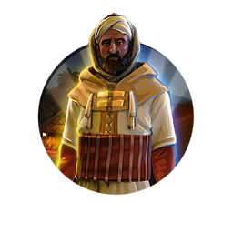
Ahmad al-Mansur
Civilization:
Unique Traits:
Gateway to Africa: +1 to All Yields in 🏛️ Capital per unique Trade Route partner, scaling with Era. Distance does not reduce Trade Route Yields to or from Moroccan Cities. Can plunder Trade Routes between foreign Cities without declaring war.
History
As one of the most influential leaders in the history of North Africa, Ahmad al-Mansur had a pivotal impact on the future of Morocco. Serving as the sixth Sultan of the Saadi Dynasty during the 16th Century AD, Ahmad al-Mansur was known as a cunning diplomat who leveraged Morocco's strategic location to position his kingdom as a major player on the world's stage during the Renaissance.
Early Life
As the fifth and youngest son of Sultan Mohammed ash-Sheikh, Ahmad al-Mansur's path to the throne of Morocco was not assured. His oldest brother, Abdallah al-Ghalib was the designated heir, and he ascended the throne in 1557 AD following their father's death. Unfortunately for al-Mansur, his older brother believed eliminating his siblings was the simplest means of securing his throne, and so al-Mansur and his brother Abd al-Malik fled the country, living within the Ottoman Empire for nearly two decades.
Rise to Power
Following the death of Sultan Adballah al-Ghalib in 1574, his son Abu Adallah Mohammed ascended the throne despite the rightful heir being Abd al-Malik. Raising an army with the assistance of the Ottomans (where al-Mansur and his brother had remained in exile), Abd al-Malik invaded Morocco and successfully deposed the usurper Abu Adallah Mohammed. Unfortunately for the two warring claimants to the Moroccan throne, they both died at the Battle of Ksar-el-Kabir in 1578, leaving Ahmad al-Mansur to ascend as Sultan.
Morocco's armies dealt severe losses to the opposing force, which included the armies of Portugal who had sided with the usurper king. In taking thousands of Portuguese prisoners, al-Mansur was able to deftly negotiate a steep ransom for their safe return - leaving Morocco's coffers replenished with Portuguese gold.
Morocco's armies dealt severe losses to the opposing force, which included the armies of Portugal who had sided with the usurper king. In taking thousands of Portuguese prisoners, al-Mansur was able to deftly negotiate a steep ransom for their safe return - leaving Morocco's coffers replenished with Portuguese gold.
Reign
Once firmly established on the throne, al-Mansur enjoyed newfound prestige as the leader of an emboldened Morocco flush with wealth. He immediately began efforts to reform the administrative system of his nation, implementing new forms of taxation. He also looked to expand the reach of his empire through campaigns against neighboring Songhai, which he hoped would provide new sources of income for the kingdom. Despite victories and sacking multiple Songhai cities, the problems of administering such a distant land across the Sahara proved too much even al-Mansur.
Unfortunately, the expenses involved in Al-Mansur's various projects - military and territorial expansion, outlays for new construction, and grand displays of cultural and artistic expression - led to the eventual depletion of Morocco's vast treasury. As the purse strings tightened, al-Mansur was forced to restrict his great ambitions for the kingdom. Morocco was also faced with a difficult task in maintaining control over the distant territories it conquered, and many of these areas eventually fell out of Moroccan control.
With Ahmad al-Mansur's passing in 1603 - being struck down by the plague - Morocco's power and influence began to wane. By 1620 the Songhai cities had been lost. Moroccan trade routes were usurped by others, and fiscal troubles plagued the sultanate. In the end, many of the advances garnered by al-Mansur's exceptional administrative and diplomatic skills were lost by his successors.
Unfortunately, the expenses involved in Al-Mansur's various projects - military and territorial expansion, outlays for new construction, and grand displays of cultural and artistic expression - led to the eventual depletion of Morocco's vast treasury. As the purse strings tightened, al-Mansur was forced to restrict his great ambitions for the kingdom. Morocco was also faced with a difficult task in maintaining control over the distant territories it conquered, and many of these areas eventually fell out of Moroccan control.
With Ahmad al-Mansur's passing in 1603 - being struck down by the plague - Morocco's power and influence began to wane. By 1620 the Songhai cities had been lost. Moroccan trade routes were usurped by others, and fiscal troubles plagued the sultanate. In the end, many of the advances garnered by al-Mansur's exceptional administrative and diplomatic skills were lost by his successors.
Judgement of History
Ahmad al-Mansur is widely viewed today as one of history's greatest diplomats, excelling in the art of balancing friend and foe, Christian and Muslim. Al-Mansur's carefully crafted diplomatic schemes are credited with allowing Morocco's continued independence despite the scheming of many neighboring kingdoms as well as the powerful Ottoman Empire. His reign was marked by religious tolerance, scientific learning, and an artistic flowering in North Africa not known for many decades before or after.
Alexander
Civilization:
Unique Traits:
Hellenic League: Influence degrades at half and recovers at twice the normal rate. +5% ⚔️ Combat Strength of owned and Allied Units for each City-State alliance (up to +25%). Treat neutral City-State territory as friendly territory.
History
Alexander the Macedonian is unquestionably one of the great warlords of all time. In 17 short years he marched his army to victory after victory across Europe, Asia, Africa and the Middle East, conquering every civilization he could reach.
Early Life
Alexander was the son of King Philip II, an extremely successful king and warlord who had restored his kingdom from the verge of extinction and then led his people to triumph by conquering Athens, Illyria, and Thrace - the three powers who, a few short years before, had been on the verge of conquering Macedonia. As the son of the most powerful monarch in the "civilized" world, Alexander got the best of everything, including education - the scholar Aristotle, the great thinker of Western Civilization, was his tutor.
Taught by his mother Olympias that he was descended from Hercules and Achilles, Alexander did not lack for self-confidence, even at a very young age. At the age of 14 Philip left him in charge of Macedonia while he was away attacking Byzantium; Alexander crushed a Thracian rebellion during his father's absence. Two years later he commanded the left wing of his father's army during the battle in which Philip's forces defeated the allied Greek states and conquered all of Greece.
The next year Alexander's good fortune deserted him, for a while, at least. King Philip divorced Alexander's mother for a woman named "Cleopatra Eurydice", and mother and son fled Macedonia. Alexander and his father were reconciled some time thereafter, but Alexander's position as Philip's heir would have been in grave jeopardy had Philip not conveniently died before producing another son.
Taught by his mother Olympias that he was descended from Hercules and Achilles, Alexander did not lack for self-confidence, even at a very young age. At the age of 14 Philip left him in charge of Macedonia while he was away attacking Byzantium; Alexander crushed a Thracian rebellion during his father's absence. Two years later he commanded the left wing of his father's army during the battle in which Philip's forces defeated the allied Greek states and conquered all of Greece.
The next year Alexander's good fortune deserted him, for a while, at least. King Philip divorced Alexander's mother for a woman named "Cleopatra Eurydice", and mother and son fled Macedonia. Alexander and his father were reconciled some time thereafter, but Alexander's position as Philip's heir would have been in grave jeopardy had Philip not conveniently died before producing another son.
Rise to Power
Following the conquest of Greece and the Balkans, King Philip had been working on building an army to invade and conquer Persia. In 336 Philip was assassinated by the captain of his bodyguard, Pausanias, while attending his daughter's wedding. (Some believe that Alexander's mother, Olympias - or indeed Alexander himself - was behind the assassination, but as Pausanias conveniently died during the murder there was no actual proof.) At the age of twenty Alexander was proclaimed king by the Macedonian army and nobility. He celebrated his victory by murdering all potential rivals to the throne, then resumed planning his father's interrupted invasion of Persia.
The Creation of An Empire
Alexander's force consisted of 30,000 foot soldiers and 5,000 cavalrymen, a huge army for the day, and was accompanied by engineers, surveyors, scientists, and even historians.
In battle Alexander had amazing success against the Persians. He repeatedly beat their best soldiers, routinely fighting against odds of 10-to-1. His success can be attributed to his military genius, his force's superb training and equipment, and their magnificent esprit de corps, largely engendered by their faith in Alexander's invincibility.
Alexander appeared to be without fear. He commonly led the elite Macedonian Companion Cavalry into the thick of battle personally, and he received a number of dangerous wounds during his military career, none of which dampened his military ardor.
Having secured Persia's surrender, Alexander then moved south, conquering Syria, Palestine, much of modern Iraq, and eventually Egypt herself. He returned to Persia, destroyed the last of the Persian forces and took over the entire country. He continued east, eventually coming into contact with the great Indian King Porus, who fought him to a standstill. Alexander eventually won the conflict, but at such a heavy cost that his men begged him to end the campaign and let them return to their families. Alexander himself returned to rule his empire from the captured city of Babylon.
In battle Alexander had amazing success against the Persians. He repeatedly beat their best soldiers, routinely fighting against odds of 10-to-1. His success can be attributed to his military genius, his force's superb training and equipment, and their magnificent esprit de corps, largely engendered by their faith in Alexander's invincibility.
Alexander appeared to be without fear. He commonly led the elite Macedonian Companion Cavalry into the thick of battle personally, and he received a number of dangerous wounds during his military career, none of which dampened his military ardor.
Having secured Persia's surrender, Alexander then moved south, conquering Syria, Palestine, much of modern Iraq, and eventually Egypt herself. He returned to Persia, destroyed the last of the Persian forces and took over the entire country. He continued east, eventually coming into contact with the great Indian King Porus, who fought him to a standstill. Alexander eventually won the conflict, but at such a heavy cost that his men begged him to end the campaign and let them return to their families. Alexander himself returned to rule his empire from the captured city of Babylon.
The Fall of Alexander
In eight short years of fighting, Alexander had conquered more territory than any other living being. He successfully led his forces into battle against all of the great nations of the day, but none could stand against him. He was the absolute ruler of the largest empire the world had ever seen.
Apparently he found this boring.
Once in Babylon, Alexander began an inexorable decline. He began drinking heavily and engaging in all kinds of available debauchery (and there was much debauchery to be found in Babylon). He became subject to fits of anger and bouts of paranoid delusion. One night, in a state of blind rage and under the influence of alcohol, Alexander murdered Clitus, his closest associate. This barbaric act was to haunt Alexander for the rest of his life - which wasn't very long.
In June of 323 BC, his body weakened by his excesses, Alexander died of malaria. He was 32 years old.
Apparently he found this boring.
Once in Babylon, Alexander began an inexorable decline. He began drinking heavily and engaging in all kinds of available debauchery (and there was much debauchery to be found in Babylon). He became subject to fits of anger and bouts of paranoid delusion. One night, in a state of blind rage and under the influence of alcohol, Alexander murdered Clitus, his closest associate. This barbaric act was to haunt Alexander for the rest of his life - which wasn't very long.
In June of 323 BC, his body weakened by his excesses, Alexander died of malaria. He was 32 years old.
Judgment of History
"When Alexander saw the breadth of his domain, he wept for there were no more worlds to conquer."
This extraordinary man (and his father before him) conquered Greece, the Balkans, Asia Minor, Syria, Egypt, Persia, and Asia as far east as Afghanistan. His empire did not long survive Alexander's death - it was simply too large for any mere mortal to hold - and it was divided between a number of Alexander's generals. But Alexander's conquests allowed Hellenic culture to spread across most of the known world, and Greek would become the language of culture, art and science for centuries to come.
With the exception perhaps of one or two religious leaders, no single man has had such a great effect upon western civilization as did Alexander the Great.
This extraordinary man (and his father before him) conquered Greece, the Balkans, Asia Minor, Syria, Egypt, Persia, and Asia as far east as Afghanistan. His empire did not long survive Alexander's death - it was simply too large for any mere mortal to hold - and it was divided between a number of Alexander's generals. But Alexander's conquests allowed Hellenic culture to spread across most of the known world, and Greek would become the language of culture, art and science for centuries to come.
With the exception perhaps of one or two religious leaders, no single man has had such a great effect upon western civilization as did Alexander the Great.
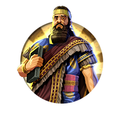
Ashurbanipal
Civilization:
Unique Traits:
Treasures of Nineveh: When you conquer a City, gain a Technology already known by the owner, or if impossible, 20 ⚗️ Science, scaling with Era and the City's Population. All Great Works produce +3 ⚗️ Science.
History
Ashurbanipal, King of Assyria for over 40 years during the mid-6th Century BC, is most famously noted in history for his seemingly unquenchable thirst for knowledge, which he sustained through both careful negotiation and ruthless conquest. Whether through direct conflict or simply the threat of violence against those who refused him, Ashurbanipal sought to gather the texts and histories of a wide range of cultures and civilizations surrounding his empire. In forming the great archive of cuneiform manuscripts and stone tablets that bears his name, Ashurbanipal established one of the most remarkable libraries of ancient material found anywhere in the world. Aside from his scholarly pursuits, Ashurbanipal was also known to be a fearsome warrior, who deftly managed both the military and administrative tasks required of him. As an intimidating force with both the intellect and might to lead the formidable Neo-Assyrian Empire, Ashurbanipal's legacy as one of Assyria's greatest kings has endured for more than two millennium.
Early Life
Although historical records from the period are intermittent, it's known that Ashurbanipal was born early in the 6th Century BC, towards the end of a nearly 1500-year period of Assyrian supremacy in the surrounding region. His father, Esarhaddon, was crown prince at the time of Ashurbanipal's birth, and saw to it that his son received training and education as both a soldier and a scholar. Raised in a small palace known as bit reduti ("House of Succession") in Nineveh, Ashurbanipal was given the palace when Esarhaddon named him crown prince in 672 BC following the death of Ashurbanipal's elder brother. His training there ranged from kingly pursuits such as horsemanship, chariotry, archery, craftsmanship and royal decorum to the likes of divination, mathematics and engineering. Although still debated, it has been speculated that Ashurbanipal may have been the first Assyrian king capable of both reading and writing, allowing him to understand a variety of ancient scripts and languages. At a young age he began handling administrative duties within the royal court of Assyria, managing a number of construction projects and appointing local prefects in his father's stead. Following his father's death in 669 BC, Ashurbanipal ascended to the throne and prepared himself to deal with a number of conflicts on the horizon.
Reign
As is often the case with any change in rule, as king, Ashurbanipal was forced to deal with some of the troubling issues left behind by his father. Assyria was enbroiled in a war with neighboring Egypt, and Ashurbanipal was forced to take decisive action to secure his grip on the empire's distant territories. Swiftly deploying his forces, Ashurbanipal met with repeated successes in Egypt and - after further incursions by the Assyrian army - Ashurbanipal assured firm control over many of the contested regions, including Judah, Israel, Cyprus, and much of Asia Minor.
A skilled administrator, Ashurbanipal dedicated much of his time to managing the needs of his people at home, despite devoting long days to coordinating the efforts of his military. By carefully selecting able and reliable regents and local rulers for the far-flung reaches of the Assyrian empire, Ashurbanipal was able to focus his own efforts elsewhere. His upbringing and education are credited with his skill in governance; the empire enjoyed relative stability and ongoing economic prosperity despite the conflicts of the region.
Taking great pride in his education and academic pursuits, Ashurbanipal was a patron of both the arts and sciences, and throughout his reign he brought both to the empire with unbridled enthusiasm. To fill his Royal Library at Nineveh, Ashurbanipal sent scribes across the empire to collect and copy texts of nearly any available subject. As with many ancient kings, Ashurbanipal also commissioned artists and sculptors to create depictions of the events occurring throughout the empire, along with numerous reliefs depicting his own personal accomplishments and talents.
A skilled administrator, Ashurbanipal dedicated much of his time to managing the needs of his people at home, despite devoting long days to coordinating the efforts of his military. By carefully selecting able and reliable regents and local rulers for the far-flung reaches of the Assyrian empire, Ashurbanipal was able to focus his own efforts elsewhere. His upbringing and education are credited with his skill in governance; the empire enjoyed relative stability and ongoing economic prosperity despite the conflicts of the region.
Taking great pride in his education and academic pursuits, Ashurbanipal was a patron of both the arts and sciences, and throughout his reign he brought both to the empire with unbridled enthusiasm. To fill his Royal Library at Nineveh, Ashurbanipal sent scribes across the empire to collect and copy texts of nearly any available subject. As with many ancient kings, Ashurbanipal also commissioned artists and sculptors to create depictions of the events occurring throughout the empire, along with numerous reliefs depicting his own personal accomplishments and talents.
The Library
The Royal Library of Ashurbanipal, found in the ancient Assyrian capital of Nineveh, was home to Ashurbanipal's extensive collection of historical texts and clay tablets. Incorporating materials from a wide range of subjects - including folk tales, religious rites, medical and scientific works, and histories - the library is among the most extensive ever uncovered by modern archeologists. The Royal Library contained, among other literary treasures, the Enuma Elish, the Babylonian "Epic of Creation," and the Sumerian Epic of Gilgamesh. English archaeologist and historian Sir Austen Henry Layard was the first to locate the library ruins in 1849, with most of the material he recovered being shipped to the British Museum, where it remains in their collection to this day. In total, over 30,000 tablets and other materials have been catalogued by the museum as part of the "Ashurbanipal Library Project."
Judgment of History
Following Ashurbanipal's death around 627 BC, the Assyrian Empire entered a period of decline, as numerous parties vied for power. Unrest in the urban centers and within the ranks of the military was worsened by the conflict between his brother Sinsharishkun, the general Sinshumulishir and the eventual king of Babylonia Nabopossar. This turmoil only served to strengthen the legacy of Ashurbanipal, as his people had enjoyed relative stability and prospered during his reign. In establishing the Royal Library, Ashurbanipal set the first standard for state-supported scholarship and provided modern scholars and historians with an unequaled cache of artifacts that has greatly contributed to our knowledge and understanding of the peoples and the kingdoms of his era.
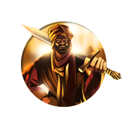
Askia
Civilization:
Unique Traits:
River Warlord: Triple 💰 Gold from destroying Encampments and plundering Cities. Land Units gain the Amphibious and War Canoes Promotions.
History
Mohammad ibn Abi Bakr Ture, also known as Mohammad I Askia (reigned 1493 - 1528), welded the central region of the western Sudan into a single Songhai empire, the largest in African history. Although he fought several military campaigns, he is primarily remembered for reorganizing, modernizing and bringing stability to the Songhai. He is also remembered for making a famous pilgrimage to Mecca.
Early History
Askia was a general under Sunni Ali, the first great leader of the Songhai Empire. Ali extended Songhai control along the Niger River, capturing the wealthy cities of Timbuktu and Jenne. Although nominally a Muslim, Ali continued to practice African animism as well, tolerating Muslim and non-Muslims within his kingdom. In 1492 Ali died in a freak accident; he and his horse fell in a river and were swept over a waterfall. Ali was succeeded by his son, Sunni Baru. Askia almost immediately began plotting Baru's overthrow, successfully gaining power in 1493 with the assistance of Muslim rebels.
Pilgrimage to Mecca
1495, two years after he took the throne, Askia undertook a pilgrimage to Mecca. This pilgrimage has become famous for the pomp, style and wealth Askia displayed during the long journey. In Mecca Askia met the Caliph of Egypt, who appointed him the Caliph's religious representative, giving him the title "Caliph of West Africa." In a more colorful version of the events, the chronicler Mahmud Kati, who accompanied Muhammad, wrote that the jinn (demons) of Mecca had Askia named caliph.
By the time Askia returned to Songhai in 1497, he was deeply committed to Islam. During his reign Askia enthusiastically supported the religious universities in Timbuktu, and he opened many mosques and religious schools across Songhai.
By the time Askia returned to Songhai in 1497, he was deeply committed to Islam. During his reign Askia enthusiastically supported the religious universities in Timbuktu, and he opened many mosques and religious schools across Songhai.
Military Expansion
During his reign Askia expanded the empire to the north, south, and west, fighting successful campaigns against various neighboring cities and kingdoms. Not all of his battles were successful, however, and he is generally acknowledged to be an adequate but not exceptional military leader.
Organization of the Empire
As the empire grew, it became increasingly difficult to manage. Askia divided the regions into provinces, each under a governor. He expanded the Songhai court, creating the posts of directors of finance, justice, interior, agriculture, waters and forests, and of the "tribes of the white race" (the Moors and Taureg subjects of Songhai). He also created a standing army and navy (the latter consisting of war canoes).
In addition, Askia restructured the tax system and imposed regulations on agriculture, hunting and fishing.
In addition, Askia restructured the tax system and imposed regulations on agriculture, hunting and fishing.
Verdict of History
Askia ruled for some thirty-five years. In 1528, old and blind, he was deposed by one of his sons, dying some 10 years later. He is judged to be an extremely competent administrator, his reign a golden age for religion and knowledge in Western Africa. While not a great general, he was able to expand his empire and to hold on to what he had taken until age robbed him of his powers. Overall, Askia is generally considered to be one of the best sub-Saharan rulers in history.
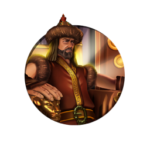
Attila
Civilization:
Unique Traits:
Scourge of God: Inflict +100% and receive -50% War Weariness. +10% ⚔️ Combat Strength for each subsequent attack on the same target in a turn. Gain 1 💰 Gold and 🎵 Culture for every 2 damage dealt to Cities, scaling with Era.
History
Legendary warlord and greatest leader of the Hunnic Empire, Attila the Hun is remembered by history as the mastermind behind the unrelenting terror of Europe that were the Huns. Known to the Romans as "The Scourge of God," Attila united the tribal Huns and embarked on a series of fearsome military campaigns during the 5th century AD, continually antagonizing the Romans (among others) until his abrupt death in 453.
The Legend of Attila
Much of our knowledge of Attila comes from the histories of his many enemies, with most accounts being particularly unfavorable, no doubt contributing to his bloodthirsty reputation. The Huns under Attila often obliterated the cities they sacked, not only pillaging anything of value, but doing such irreconcilable damage to the settlements that they became uninhabitable. The Huns purportedly massacred the populations of these cities, subjecting any survivors to a future of slavery.
The Sword of Attila, known as the "Sword of Mars" to the Romans, was the legendary weapon wielded by Attila that contributed to his renown as an invincible slayer of men. It was said that no man could look Attila directly in the eyes without flinching, his unflappable gaze proving too strong for even the most commanding of his rivals. These legends spread among the people in the absence of a carefully recorded history, which wouldn't become available until later in the 5th century.
The Sword of Attila, known as the "Sword of Mars" to the Romans, was the legendary weapon wielded by Attila that contributed to his renown as an invincible slayer of men. It was said that no man could look Attila directly in the eyes without flinching, his unflappable gaze proving too strong for even the most commanding of his rivals. These legends spread among the people in the absence of a carefully recorded history, which wouldn't become available until later in the 5th century.
Early Life and Campaigns
Little is known of the early life of Attila before the death of his uncle Rua, who had led a loose confederation of Hunnic tribes north of the Danube River on various short-lived military campaigns. Attila and his brother Bleda took control of the Huns, sharing a dual kingship following Rua's death in 434. Following in the footsteps of their uncle, the two kings initially launched attacks against the Eastern Roman Empire (Byzantium) in hopes of generating a steady income of tribute. Unfortunately for both sides, the Romans often failed to keep their word, delivering little tribute and thus incurring swift and brutal reprisals from the Hunnic raiders. The saving grace for the Byzantines may have been Attila's western ambitions, where the Hunnic army occupied itself with fresh conflicts.
Movement Against Rome
The mysterious death of his brother Bleda in 445, some say by Attila's own hand, left Attila as the sole leader of an increasingly unified Hunnic force. In 447, Attila once again led his army into battle against the legions of the Eastern Roman Empire at the Battle of Utus, successfully defeating the Roman force, leaving little remaining opposition. However, Attila's army suffered substantial casualties during the battle, which prevented him from seizing the Eastern Roman capital, Constantinople. Instead, Attila struck northward towards the Balkans (also Eastern Roman territory), sacking city after uncontested city, plundering everything his men could carry.
After sweeping through the Eastern Roman Empire, Attila set his sights to the west. Moving swiftly across Europe, he launched successful attacks against the Visigoths throughout Gaul in 451-452. As the Hunnic horde marched onwards, many of the various tribal people they encountered joined Attila's force, some by choice, others compelled by intimidation. Regardless, the Huns were bolstered by these new recruits, and continued to pillage their way through the region until encountering a united Visigoth-Roman force on the fields of Gaul. At The Battle of the Catalaunian Plains, Attila was turned back by the Roman-led force, the only major defeat in his lifetime, providing Rome and her allies a temporary reprieve.
After sweeping through the Eastern Roman Empire, Attila set his sights to the west. Moving swiftly across Europe, he launched successful attacks against the Visigoths throughout Gaul in 451-452. As the Hunnic horde marched onwards, many of the various tribal people they encountered joined Attila's force, some by choice, others compelled by intimidation. Regardless, the Huns were bolstered by these new recruits, and continued to pillage their way through the region until encountering a united Visigoth-Roman force on the fields of Gaul. At The Battle of the Catalaunian Plains, Attila was turned back by the Roman-led force, the only major defeat in his lifetime, providing Rome and her allies a temporary reprieve.
The Story of Honoria
It is said that the sister of Roman Emperor Valentinian III, Honoria, who had secretly plotted to murder her timid brother and seize his throne, was exiled from Rome and sent to a convent in Constantinople. During this exile, Valentinian promised his sister's hand in marriage to an unknown Roman senator. Upon learning of her betrothal, Honoria attempted to contact Attila and gain his assistance in escaping the marriage. For reasons unknown, she sent Attila her engagement ring, which Attila interpreted as a marriage proposal. Claiming half of the Western Roman Empire as his dowry, Attila moved his force to invade Italy, despite Valentinian's insistence that the proposal was invalid.
March on Italy
After years of clashes with the Romans, Attila finally marched on their homeland of Italy in 452. After sacking a number of cities in the northern reaches, Attila received numerous envoys from Valentinian, including Pope Leo I, all of whom pleaded with Attila to leave Italy without pursuing Rome further. For reasons that are unclear, Attila obliged (most likely due to lack of supplies). Shortly thereafter in 453, Attila died mysteriously. Some scarce evidence suggests that it may have been a simple nosebleed that toppled the mighty Hun on the night of his wedding, while other equally questionable accounts suggest he may have been assassinated.
The Roman historian Jordanes wrote that Attila's men cut their hair and slashed themselves with swords to honor Attila in death, stating "The greatest of all warriors should be mourned with no feminine lamentations and with no tears, but with the blood of men."
The Roman historian Jordanes wrote that Attila's men cut their hair and slashed themselves with swords to honor Attila in death, stating "The greatest of all warriors should be mourned with no feminine lamentations and with no tears, but with the blood of men."
Judgment of History
Attila the Hun's enduring legacy as a notorious warlord and bloodthirsty conqueror will be recorded in the annals of history for all time. A resourceful and committed leader, Attila pushed his armies to the limit, but had the foresight never to drive them to the point of exhaustion or mutiny, a claim bolstered by the fact that he only lost one major battle in some twenty-odd years leading the Huns. Treading fearlessly into the territory of the Romans, Attila challenged their authority at every opportunity and succeeded in bringing great wealth and notoriety to his people.
Augustus Caesar
Civilization:
Unique Traits:
The Glory of Rome: +30% ⚔️ Combat Strength against City-States. Conquered City-States provide Yields, 😊 Happiness and Unit Gifts as if they were Allies. +15% 🔨 Production towards Buildings present in 🏛️ Capital.
History
Born Gaius Octavius, Augustus would become the first (and possibly greatest) Roman Emperor. He ended a century of civil wars and initiated two hundred years of the Pax Romana (Roman Peace) while overseeing a golden age of Roman literature and culture.
Early Life
Octavius was born in 63 BC. His father (also named Gaius Octavius) was a respectable but undistinguished member of the equestrian order. His mother, however, was a niece of Julius Caesar. Octavius' father died when he was only four years old, and he was brought up in the house of his stepfather Lucius Marcus Phillippus.
At the age of fifteen, Octavius put on the toga virilis ("manly robes"), the symbol that he had reached adulthood, and was elected to the College of Pontiffs. In 46 BC he joined Julius Caesar during Caesar's last campaign in Spain. In Spain he made such a fine impression on the great general that Julius Caesar changed his will to make Octavius his heir.
At the age of fifteen, Octavius put on the toga virilis ("manly robes"), the symbol that he had reached adulthood, and was elected to the College of Pontiffs. In 46 BC he joined Julius Caesar during Caesar's last campaign in Spain. In Spain he made such a fine impression on the great general that Julius Caesar changed his will to make Octavius his heir.
Death of Julius Caesar
When Caesar was murdered on the Ides of March in 44 BC, all the wealth that Caesar had spent a lifetime accumulating passed into the hands of the 18-year old Octavius. At the time of Caesar's assassination, Octavius was with some of his soldiers in modern-day Albania. Upon hearing the news he went to Italy and recruited an army from among Caesar's veterans, gaining their loyalty by stressing that he was Caesar's heir. Once in Rome, Octavius allied with Marc Antony and Marcus Lepidus to form what is known as the "Second Triumvirate," directed against Caesar's killers Marcus Brutus and Gaius Cassius. Octavius' and Antony's armies tracked down Brutus and Cassius in Greece, where they defeated the assassins' army at Philippi (42 BC). Brutus and Cassius both committed suicide after their defeat.
Antony and Cleopatra
Antony married Octavius' sister Octavia to cement their alliance, and the two leaders divided Rome's territory between them. Octavius took the west, while Antony went to the east, where he entered into a torrid affair with Cleopatra, the ruler of Egypt. Octavius saw Antony's actions as an insult to his sister and to his family, and relations between the co-rulers soon soured. While Antony enjoyed the pleasures of Egypt, back in Rome Octavius strengthened his political position and his armies. The two eventually went to war, and in 31 BC Octavius defeated the forces of Antony and Cleopatra at the naval battle of Actium. The lovers were pursued to Egypt, where they both committed suicide.
Octavius Becomes Augustus
Octavius was now the undisputed master of Rome. He surrendered his extraordinary powers to the Senate, which was filled with his allies; in return the Senate named him "Augustus" (one who is marked by dignity and greatness) and showered him with honors. More importantly, they also gave him the powers of a Roman consul, tribune, and censor, which had never before been combined into one office. All permanent legal power within Rome officially remained within the Senate - but since Octavius controlled the Senate, this was mostly a legal fiction. Although he had all of the power of an Emperor, Augustus preferred to style himself "Princeps," or "first citizen" (probably to avoid further antagonizing the few remaining republicans in Rome).
Augustus at Home
During his reign Augustus presided over four decades of peace and prosperity, a welcome relief to Rome after almost a century of civil strife. He carried out a great building program in the ancient city, constructing a new Senate house as well as great temples to Apollo and "Divine Julius" (his deceased great-uncle). Later, Augustus would boast - with justification - that he had found Rome a city of brick and left it marble. Under his patronage many of the most famous Roman authors and poets created their great works: Virgil, Ovid, Horace, and Livy all flourished during his reign.
Roman Expansion
Augustus' generals also enjoyed great success and were quite relieved to be once again turning their military strength against external enemies instead of one another. Rome's borders were extended to the Danube, northern Spain was finally conquered, and Armenia was pacified in the east.
Augustus did suffer two significant military defeats during his rule. In 15 BC Gaul's Roman governor, Marcus Lollius was defeated by an alliance of the Sicambri, Tencteri and Usipetes tribes who had crossed the Rhine into Gaul; little permanent damage was done to the Roman position in Gaul, and Suetonius calls this defeat "more humiliating than serious."
The second defeat, however, was of an entirely different magnitude. In 9 AD Publius Quintilius Varus, Governor of Germania, led three legions across the Danube and deep into barbarian territory where they were surprised by German Cherusci tribesmen and, after a three-day battle, captured or killed to the last man. Varus himself committed suicide and the victors sent his head as a present to King Marbod of the Marcomanni in Bohemia.
Hearing of the catastrophe, Augustus sent troops into the city to watch for uprisings. He also prolonged the terms of the governors of the provinces to ensure that experienced men would be in charge if the subject people revolted. In addition he dedicated great games to Jupiter if he would improve the Empire's lot. It is clear that Augustus was badly shaken by the defeat. Suetonius says that "for several months in succession he cut neither his beard nor his hair, and sometimes he would dash his head against a door, crying, 'Quintilius Varus, give me back my legions!'"
Fortunately, the natives did not revolt and the Empire survived the catastrophe without long-lasting consequences.
Augustus did suffer two significant military defeats during his rule. In 15 BC Gaul's Roman governor, Marcus Lollius was defeated by an alliance of the Sicambri, Tencteri and Usipetes tribes who had crossed the Rhine into Gaul; little permanent damage was done to the Roman position in Gaul, and Suetonius calls this defeat "more humiliating than serious."
The second defeat, however, was of an entirely different magnitude. In 9 AD Publius Quintilius Varus, Governor of Germania, led three legions across the Danube and deep into barbarian territory where they were surprised by German Cherusci tribesmen and, after a three-day battle, captured or killed to the last man. Varus himself committed suicide and the victors sent his head as a present to King Marbod of the Marcomanni in Bohemia.
Hearing of the catastrophe, Augustus sent troops into the city to watch for uprisings. He also prolonged the terms of the governors of the provinces to ensure that experienced men would be in charge if the subject people revolted. In addition he dedicated great games to Jupiter if he would improve the Empire's lot. It is clear that Augustus was badly shaken by the defeat. Suetonius says that "for several months in succession he cut neither his beard nor his hair, and sometimes he would dash his head against a door, crying, 'Quintilius Varus, give me back my legions!'"
Fortunately, the natives did not revolt and the Empire survived the catastrophe without long-lasting consequences.
Judgment of History
By Augustus' death in 14 AD, a return to the old system of the Republic was unthinkable, and he was peacefully succeeded by the Emperor Tiberius.
During Augustus' long rule Rome flourished and the Empire came to dominate the Mediterranean basin. The policies he put in place kept the Empire running smoothly, so much so that Rome would continue to rule the entire known world for almost two centuries without any major wars or other significant threats to its survival. Few if any leaders in world history could make the same claim.
During Augustus' long rule Rome flourished and the Empire came to dominate the Mediterranean basin. The policies he put in place kept the Empire running smoothly, so much so that Rome would continue to rule the entire known world for almost two centuries without any major wars or other significant threats to its survival. Few if any leaders in world history could make the same claim.
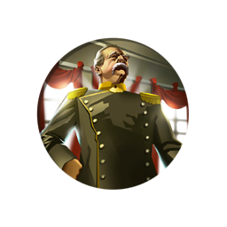
Bismarck
Civilization:
Unique Traits:
Blood and Iron: Gain +1 Influence per turn with City-States for each gifted Unit (lost when killed). -15% 🔨 Production and 💰 Gold costs for Military Units.
History
Otto von Bismarck, also known as the "Iron Chancellor," is perhaps the most significant figure in German history. During his long political career Bismarck unified Germany and founded the German Empire; Germany was transformed from a weak and loose confederation of states into a powerful united country that would come to dominate continental Europe.
Early Life
Descended from a noble Prussian family, Bismarck certainly inherited the arrogance of the Prussian Junker class. He was a poor student who excelled at dueling and was quite a historian and linguist. However, he spent much of his time drinking with the other aristocrats in their exclusive fraternity.
Unable to accept the discipline required for military service, Bismarck instead entered the Prussian diplomatic corps, where his skill quickly brought him to the attention of the Prussian Kaiser. Appointed to the German Federal Diet (congress), Bismarck worked to increase Prussian status and power within Germany. Eventually he would rise to the rank of Prussian Prime Minister, where after years of long struggle, he succeeded in unifying Germany under Prussian rule. Bismarck would accomplish this through crafty diplomacy, aided by a series of successful wars.
Unable to accept the discipline required for military service, Bismarck instead entered the Prussian diplomatic corps, where his skill quickly brought him to the attention of the Prussian Kaiser. Appointed to the German Federal Diet (congress), Bismarck worked to increase Prussian status and power within Germany. Eventually he would rise to the rank of Prussian Prime Minister, where after years of long struggle, he succeeded in unifying Germany under Prussian rule. Bismarck would accomplish this through crafty diplomacy, aided by a series of successful wars.
Foreign Policy
Once Germany was unified, Bismarck's main foreign policy aim was to keep the peace in Europe, mostly by isolating France, Germany's historic enemy. In this he was largely successful. He engineered a war with France in 1870 in order to draw several German states (Bavaria, Baden, and others) into the German empire. In the war, France was quickly defeated.
Having achieved his objective of acquiring the German states, Bismarck argued for fairly lenient terms, but the German people and military wanted more, and he was forced to annex the French provinces of Alsace and Lorraine. Bismarck knew that this would be trouble in the long run - before the war he had told a colleague, "Supposing we did win Alsace, we would have to maintain our conquest and to keep Strasbourg perpetually garrisoned. This would be an impossible position, for in the end the French would find new allies - and we might have a bad time." This, of course, is exactly what happened in World War I, where Germany had a very bad time indeed.
Having achieved his objective of acquiring the German states, Bismarck argued for fairly lenient terms, but the German people and military wanted more, and he was forced to annex the French provinces of Alsace and Lorraine. Bismarck knew that this would be trouble in the long run - before the war he had told a colleague, "Supposing we did win Alsace, we would have to maintain our conquest and to keep Strasbourg perpetually garrisoned. This would be an impossible position, for in the end the French would find new allies - and we might have a bad time." This, of course, is exactly what happened in World War I, where Germany had a very bad time indeed.
Domestic Policy
Although an ardent conservative and monarchist, Bismarck was the first European leader to promote a system of social security for workers. He rebuilt the German monetary system, introducing for the first time a single currency. He also helped fabricate the new country's code of civil and commercial law. His benevolence was not universal, however; while emancipating the Jews, Bismarck also enacted laws aimed at restraining Germany's Catholics.
Judgment of History
As a diplomat, Bismarck's greatest weakness was his single-minded desire to weaken France. He was largely successful during his lifetime, but in doing so he made France into an implacable enemy, which would have dire consequences in the next century. Domestically, Bismarck's great flaw was his indifference to the lives of the German people. As Germany grew in power and stature, the people's lives improved but little. His social security system did some good, but he enacted that mainly to avoid having to make greater concessions to the German Socialists.
Bismarck was a great leader, perhaps the greatest European leader of the 19th Century. His triumphs outweighed his defeats, and he almost single-handedly turned a group of bickering kingdoms into a mighty state. Although his policies did contribute to the disasters in Germany's future, those were more so a result of his successors' inability to adjust to the changing geopolitical climate in Europe.
Bismarck was a great leader, perhaps the greatest European leader of the 19th Century. His triumphs outweighed his defeats, and he almost single-handedly turned a group of bickering kingdoms into a mighty state. Although his policies did contribute to the disasters in Germany's future, those were more so a result of his successors' inability to adjust to the changing geopolitical climate in Europe.
Boudicca
Civilization:
Unique Traits:
Druidic Lore: Has a unique set of Pantheon Beliefs that no one else can benefit from. Owned Cities with your Pantheon or Religion neither generate nor receive foreign Religious Pressure and generate +3 🕊️ Faith.
History
Boudicca, legendary warrior queen of the Celtic Iceni tribe, is noted in history for decimating a number of Roman settlements while leading an uprising of Celtic tribes against the might of the Roman army occupying England in the 1st century AD. Although historical records from this period are limited, mainly relying on the reports of Roman historians Tacitus and Cassius Dio, the story of Boudicca's uprising is generally accepted to have gone something like this:
Boudicca's husband, King Prasutagus of Iceni, had long been an ally to the Romans and maintained a sovereign rule over his people during the Roman conquest of Britain. Upon his death, he is said to have named Boudicca and their two daughters as joint-heirs, in the hopes of maintaining the rights and nobility of his family line. With little regard for their old friends, the Romans swiftly moved to annex the Iceni territory, and it can be said with certainty that the Romans' brutality in the matter was unwavering. Boudicca was publicly flogged.
The outrage spurred by the Romans' disrespect and brutishness towards the Iceni led Boudicca and her people to organize a rebellion with the assistance of neighboring tribes, particularly the Trinovantes. Boudicca gathered a huge force, estimated at 70,000 or more, and marched to the Roman colony of Camulodunum. The Romans, unprepared for such a vast assault, were caught off guard and found no mercy at the hands of the rebellion. The city of Camulodunum was besieged and destroyed, and the rebel army proceeded next to the city of Londinium, destroying everything of value to the Romans in their wake. Verulamium was the 3rd and final city crushed during Boudicca's uprising, burned to the ground and it's Romans citizens massacred. In all, Boudicca's army is said to have killed over 80,000 Romans and pro-Roman Britons.
Meeting at an unknown site in the English Midlands in 61 AD, the Roman Army and its collected legions finally faced the rebellious tribal force head-on. Unfortunately for Boudicca, the Romans' extensive training and tactics would be the undoing of the uprising. Women and children, accompanying the rebel supply wagons, are said to have come to observe the battle and provide support. The presence of these observers on the field, however, would leave the rebels with little room to maneuver. The uprising was crushed, and some 70,000 to 80,000 rebels were killed in the ensuing battle and its aftermath. It is believed (although no means of confirmation exists) that Boudicca died by her own hand sometime shortly after the battle, the most common theory being that she consumed poison to avoid capture.
Boudicca's husband, King Prasutagus of Iceni, had long been an ally to the Romans and maintained a sovereign rule over his people during the Roman conquest of Britain. Upon his death, he is said to have named Boudicca and their two daughters as joint-heirs, in the hopes of maintaining the rights and nobility of his family line. With little regard for their old friends, the Romans swiftly moved to annex the Iceni territory, and it can be said with certainty that the Romans' brutality in the matter was unwavering. Boudicca was publicly flogged.
The outrage spurred by the Romans' disrespect and brutishness towards the Iceni led Boudicca and her people to organize a rebellion with the assistance of neighboring tribes, particularly the Trinovantes. Boudicca gathered a huge force, estimated at 70,000 or more, and marched to the Roman colony of Camulodunum. The Romans, unprepared for such a vast assault, were caught off guard and found no mercy at the hands of the rebellion. The city of Camulodunum was besieged and destroyed, and the rebel army proceeded next to the city of Londinium, destroying everything of value to the Romans in their wake. Verulamium was the 3rd and final city crushed during Boudicca's uprising, burned to the ground and it's Romans citizens massacred. In all, Boudicca's army is said to have killed over 80,000 Romans and pro-Roman Britons.
Meeting at an unknown site in the English Midlands in 61 AD, the Roman Army and its collected legions finally faced the rebellious tribal force head-on. Unfortunately for Boudicca, the Romans' extensive training and tactics would be the undoing of the uprising. Women and children, accompanying the rebel supply wagons, are said to have come to observe the battle and provide support. The presence of these observers on the field, however, would leave the rebels with little room to maneuver. The uprising was crushed, and some 70,000 to 80,000 rebels were killed in the ensuing battle and its aftermath. It is believed (although no means of confirmation exists) that Boudicca died by her own hand sometime shortly after the battle, the most common theory being that she consumed poison to avoid capture.
Judgment of History
While difficult to judge a legendary figure such as Boudicca, we can say for certain that the uprising she led against the Romans was rooted in a just cause, striking back at the occupation and the insufferable brutality the Romans inflicted upon the Celtic people. Although the rebels under Boudicca's leadership slaughtered Roman soldiers and citizens alike, history does not judge her actions as unscrupulous, having also seen the ways of the unmerciful Romans. While there are few details of Boudicca's life before the rebellion, her legacy as a noble warrior, who died to defend the freedoms of her people, will live on in history for ages to come.
Casimir III
Civilization:
Unique Traits:
Solidarity: Gain 1 Free Social Policy when you enter the Classical, Renaissance, Modern and Information Eras. Gain 2 additional Free Tenets when you adopt an Ideology for the first time.
History
King Casimir III, the only Polish king to earn the subsequent title of "the Great," reigned during the 14th Century AD and established himself as a decisive and able ruler, relying on his skill in diplomacy and sensible decision-making to greatly improve the well-being of his people and security of his kingdom. Although Casimir's predecessor, his father King Wladyslaw I, was respected for having reunited the divided realm, Casimir inherited a kingdom rife with challenges. In rebuilding a depleted economy, strengthening the military, codifying the law, and expanding the borders of Poland, Casimir left his country much better than he found it - and sealed his legacy as one of Poland's greatest kings. By the time of his death, Casimir III had assured the prestige and respect of Poland throughout medieval Europe.
Early Reign
Although the second son of Wladyslaw, Casimir was schooled in all things necessary for kingship in medieval Europe. Upon the death of Casimir's elder brother in 1312 AD, he was made heir and placed in the care of Jaroslaw, later to be archbishop of Gniezno and one of Casimir's most important advisors. When his father died 21 years later, in Krakow Casimir was crowned lord of both Great Poland and Little Poland, sanctifying the unification of Poland Wladyslaw had begun.
Domestic Affairs
Not long after ascending to the throne, Casimir was forced to deal with a number of political issues, not the least the unrest of the Polish nobility. In order to strengthen Poland's military, which relied heavily on the cooperation of the Polish nobles, Casimir was forced to relinquish a number of heretofore royal privileges to the nobles themselves. The Polish aristocracy now held a clear division between themselves and the common people, and their authority in matters dealing with those of lower standing, especially the growing merchant classes, was greatly strengthened. Although Casimir was forced into a position of comprise, his actions ensured that the feudal armies of Poland could be replenished and would recognize the crown's authority.
Casimir made great strides in efforts to improve the internal state of Poland, and counterbalance the new power of the nobles, through a number of initiatives. He standardized and stabilized the currency. Casimir ordered the construction of a number of new castles, churches, and even entire towns - providing new opportunities for trade and economic prosperity. Towns long since abandoned, and even areas said to have been devoid of any form of settlement were revitalized. In March 1347 Casimir introduced legal reforms and moved to establish a unified code, the Liber juris Teutonici, for the realm to protect the rights of the fledgling middle class. In enacting a form of the Magdeburg Rights - a German concept allowing for towns to exercise a certain degree of autonomy - he provided local merchants and craftsmen with a more stable regulation of trade, encouraging them to settle in cities across the nation. A special court was established in Krakow to arbitrate in all disputes and administer the laws uniformly. Hoping to educate a new generation of capable lawyers and administers, Casimir the Great founded the Academy of Krakow, now the Jagiellonian University, in 1364 AD.
Although historians have wondered what spurred Casimir's disposition towards the Jews of Poland, it is clear that he made every effort to afford them the same rights and protection all his subjects enjoyed. In 1334, Casimir reaffirmed the charters of 1264 protecting the rights of the Polish Jews, including laws prohibiting attempts at forced conversions to Christianity that had been largely ignored under previous rulers since. Casimir also secured their rights as merchants and traders, and welcomed Jewish integration into a unified Poland with a diverse population. The desecration of Jewish cemeteries and synagogues was declared a crime and vigorously enforced.
Casimir made great strides in efforts to improve the internal state of Poland, and counterbalance the new power of the nobles, through a number of initiatives. He standardized and stabilized the currency. Casimir ordered the construction of a number of new castles, churches, and even entire towns - providing new opportunities for trade and economic prosperity. Towns long since abandoned, and even areas said to have been devoid of any form of settlement were revitalized. In March 1347 Casimir introduced legal reforms and moved to establish a unified code, the Liber juris Teutonici, for the realm to protect the rights of the fledgling middle class. In enacting a form of the Magdeburg Rights - a German concept allowing for towns to exercise a certain degree of autonomy - he provided local merchants and craftsmen with a more stable regulation of trade, encouraging them to settle in cities across the nation. A special court was established in Krakow to arbitrate in all disputes and administer the laws uniformly. Hoping to educate a new generation of capable lawyers and administers, Casimir the Great founded the Academy of Krakow, now the Jagiellonian University, in 1364 AD.
Although historians have wondered what spurred Casimir's disposition towards the Jews of Poland, it is clear that he made every effort to afford them the same rights and protection all his subjects enjoyed. In 1334, Casimir reaffirmed the charters of 1264 protecting the rights of the Polish Jews, including laws prohibiting attempts at forced conversions to Christianity that had been largely ignored under previous rulers since. Casimir also secured their rights as merchants and traders, and welcomed Jewish integration into a unified Poland with a diverse population. The desecration of Jewish cemeteries and synagogues was declared a crime and vigorously enforced.
Foreign Successes
Upon his ascension to the throne, Casimir's rule was tenuous, and disputed on all sides by foreign powers. The king of Bohemia himself claimed the Polish crown. The German Teutonic Knights had occupied the Polish territories of Kujawy and Dobrzyn in Pomerania. An undeclared, inconclusive war with Lithuania to the north threatened stability and trade in the bordering provinces. Polish claims to territories in the Ukraine were ignored by neighboring nations. To make matters worse, Poland had no allies of any importance.
Relying on his skill in diplomacy, Casimir deftly negotiated new alliances and secured additional territory for Poland. The marriage of his sister Elisabeth to the king of Hungary brought him a dependable ally; to cement this alliance Casimir dropped his claims to Silesia. The Hungarian alliance allowed Casimir to forcefully occupy the former Polish duchies of Halic and Vladimir in "Red Russia" in 1340 and 1349 AD. Meanwhile, through negotiation, a pact was forged with Bohemia and its king dropped all claims to the Polish throne. This, in turn, led to a negotiated withdrawal of the Teutonic Knights from East Pomerania. Finally, Casimir agreed to pay tribute to the Golden Horde to avoid their frequent raids into Poland. As a result of Poland's growing power and its cordial relations with the Mongols, several Masovian princes in Russia declared themselves Casimir's vassels in 1351 and 1353.
Casimir wedded princesses from Lithuania, Germany, and Silesia - each helping secure peaceful relations with their homelands. Although he had four wives and several mistresses, Casimir had five daughters but no legitimate male heir. While Casimir was to arrange dynastic marriages for several of his daughters which further strengthened Poland's position, the lack of a son threatened unrest and war should he die. To provide a clear line of succession, in his last years Casimir named his nephew, Louis of Hungary, son of Elisabeth, as his heir. Louis was proclaimed king of Poland upon Casimir's death in 1370.
Relying on his skill in diplomacy, Casimir deftly negotiated new alliances and secured additional territory for Poland. The marriage of his sister Elisabeth to the king of Hungary brought him a dependable ally; to cement this alliance Casimir dropped his claims to Silesia. The Hungarian alliance allowed Casimir to forcefully occupy the former Polish duchies of Halic and Vladimir in "Red Russia" in 1340 and 1349 AD. Meanwhile, through negotiation, a pact was forged with Bohemia and its king dropped all claims to the Polish throne. This, in turn, led to a negotiated withdrawal of the Teutonic Knights from East Pomerania. Finally, Casimir agreed to pay tribute to the Golden Horde to avoid their frequent raids into Poland. As a result of Poland's growing power and its cordial relations with the Mongols, several Masovian princes in Russia declared themselves Casimir's vassels in 1351 and 1353.
Casimir wedded princesses from Lithuania, Germany, and Silesia - each helping secure peaceful relations with their homelands. Although he had four wives and several mistresses, Casimir had five daughters but no legitimate male heir. While Casimir was to arrange dynastic marriages for several of his daughters which further strengthened Poland's position, the lack of a son threatened unrest and war should he die. To provide a clear line of succession, in his last years Casimir named his nephew, Louis of Hungary, son of Elisabeth, as his heir. Louis was proclaimed king of Poland upon Casimir's death in 1370.
Judgment of History
It can be said that Casimir is viewed in history as an ideal medieval king - noble, prudent, diplomatic and capable of delegating authority when necessary. Although some of the territories were lost over the next century, by his death Casimir III had increased Poland's land to approximately 90,000 square miles (233,000 sq. km) from 50,000 in 1333 AD. Casimir showed great concern for the welfare of his people and his choices as king clearly reflect his efforts to improve the standing of Poland. By forming dependable alliances, aggressively pursuing domestic reforms, and avoiding needless conflicts, Casimir the Great truly earned his given title.
Catherine
Civilization:
Unique Traits:
Siberian Riches: All Strategic Resource deposits provide double their normal quantity. Receive 20 ⚗️ Science when your borders expand, scaling with Era. 🎵 Culture cost of acquiring new tiles reduced by 33%.
History
Catherine the Great ruled Russia during the latter half of the 18th century. She oversaw a great expansion of the Russian empire, adding tens of thousands of square miles of territory through conquest and shrewd diplomacy. A beautiful and intelligent woman, she beguiled and seduced the best minds of Europe, making her court one of the centers of Enlightenment thinking on the Continent. Although born in Germany, Catherine is one of the greatest rulers in Russian history.
Early Life
Sophie Friederike Auguste Von Anhalt-Zerbst was born in Szczecin in 1729, a princess of Pomerania, a small kingdom in Prussia. At 16 she was married to Carl Peter Ulrich, the heir to the Russian throne, becoming Grand Duchess Catherine Alekseyevna. Catherine quickly learned Russian and joined the Russian Orthodox Church. Largely self-educated, Catherine immersed herself in the literature of the time. Endowed with both beauty and intelligence, she became strong friends (if not more) with the great thinkers of the day, including the brilliant French philosophers Rousseau and Diderot.
Rise to Power
Catherine's marriage was extremely unhappy. Her husband, the Tsar Peter III, was by all accounts a shabby and neurotic person. He was described as mean, cruel, hideous (from smallpox scars) and a drunkard. He was said to detest Russians and loved Prussians, which didn't endear him to the Russian court. Although born a foreigner, Catherine was far more popular with the nobility and, most importantly, with the Russian military.
At the age of 33, with the support of the Imperial guard, she overthrew her husband, who was soon killed "in a hunting accident," leaving Catherine the sole ruler of Russia.
At the age of 33, with the support of the Imperial guard, she overthrew her husband, who was soon killed "in a hunting accident," leaving Catherine the sole ruler of Russia.
Foreign Policy
As Empress, Catherine pursued an expansionist policy backed by military muscle. The "First Russo-Turkish War" (1768-1774) - declared by Sultan Mustafa III after a border incident in which a Cossack entered Ottoman territory and allegedly slaughtered the residents of Balta - was a resounding Russian success, gaining for Catherine the Southern Ukraine, Northern Caucasus and the Crimea, expanding Russian access to the Black Sea. The Ottomans tried to take their territory back in the Second Russo-Turkish war, but they failed miserably.
In the years following the French Revolution, Catherine became afraid that Enlightenment movements throughout Europe would threaten the monarchies of Europe. Toward the end of the century Poland, a Russian puppet, began to show disturbing signs of edging toward democracy. In 1792 Russian forces defeated Polish loyalists in the Polish "War in Defense of the Constitution," following which Poland was partitioned between Russia, Austria and Prussia.
Throughout her reign Catherine maintained cordial relations with the great powers of Europe, Prussia, France and Austria, who in return did not stand in the way of Russian expansion.
In the years following the French Revolution, Catherine became afraid that Enlightenment movements throughout Europe would threaten the monarchies of Europe. Toward the end of the century Poland, a Russian puppet, began to show disturbing signs of edging toward democracy. In 1792 Russian forces defeated Polish loyalists in the Polish "War in Defense of the Constitution," following which Poland was partitioned between Russia, Austria and Prussia.
Throughout her reign Catherine maintained cordial relations with the great powers of Europe, Prussia, France and Austria, who in return did not stand in the way of Russian expansion.
Domestic Policy
During her reign Catherine undertook a wide range of political reforms, attempting to shape up the notoriously corrupt and incompetent Russian bureaucracy. She tried to model her government and court on Versailles, France. She paid for her reforms by seizing property from the clergy, who owned almost one-third of the land and serfs in Russia. She curried favor with the aristocracy, expanding their already-great power over the Russian peasants.
In 1773 a plague broke out in Russia, which was already suffering from ill-effects of the long war with Turkey. Taking advantage of growing public disaffection, Pugachov, a Cossack officer, pretended to be Catherine's dead husband, Tsar Peter III, and attempted to raise a peasant army to overthrow the Empress while the Russian military was locked in battle with the Turks. Fortunately for Catherine, the First Russo-Turkish War ended at just the right time, and a Russian army was able to return from the Front and crush the rebellion before it could reach Moscow. This made Catherine suspicious of the Russian peasants and she implemented even more repressive laws against them.
In 1773 a plague broke out in Russia, which was already suffering from ill-effects of the long war with Turkey. Taking advantage of growing public disaffection, Pugachov, a Cossack officer, pretended to be Catherine's dead husband, Tsar Peter III, and attempted to raise a peasant army to overthrow the Empress while the Russian military was locked in battle with the Turks. Fortunately for Catherine, the First Russo-Turkish War ended at just the right time, and a Russian army was able to return from the Front and crush the rebellion before it could reach Moscow. This made Catherine suspicious of the Russian peasants and she implemented even more repressive laws against them.
The Arts
A patron of the arts, Catherine commissioned many statues and paintings. Under her rule St. Petersburg was transformed from a primitive and forbidding city into one of the most beautiful and impressive European capitals. Her private art collection formed the basis of the famous Hermitage Museum, one of the world's great art museums.
The Scandal
Despite her many public successes, Catherine is best known for her private excesses. Her affairs are legendary; it has been suggested that she slept with a fairly large fraction of the Russian officers corps, not to mention her many well-publicized dalliances with a horde of well-known European politicians and artists. It is said that once she tired of a lover Catherine would "pension him off," giving him a large gift of cash, peasants, and land somewhere far away from Moscow.
Judgment of History
Catherine's reign was notable for imperial expansion. Most important were the securing of the northern shore of the Black Sea, the annexation of the Crimea, and the expansion into the steppes beyond the Urals. This permitted the protection of Russian agricultural settlements in the south and the establishment of trade routes through the Black Sea. Catherine's partitioning of Poland also helped bring Russia closer to the rest of Europe, at least geographically.
Catherine implemented many public work projects throughout Russia and its possessions. She also increased internal and foreign trade. On the other hand, she did little to improve the lot of the Russian peasants; in fact, their lives grew distinctly harder during her reign.
Catherine died at the age of 67, having lived longer than any other Romanov monarch. Like Queen Elizabeth I of England, she proved that a woman could be smart enough and tough enough to lead a great country.
Catherine implemented many public work projects throughout Russia and its possessions. She also increased internal and foreign trade. On the other hand, she did little to improve the lot of the Russian peasants; in fact, their lives grew distinctly harder during her reign.
Catherine died at the age of 67, having lived longer than any other Romanov monarch. Like Queen Elizabeth I of England, she proved that a woman could be smart enough and tough enough to lead a great country.
Darius I
Civilization:
Unique Traits:
Achaemenid Legacy: 🌟 Golden Ages last 50% longer, and 15% of your gross 💰 Gold income is converted into 🌟 Golden Age Points every turn. During a 🌟 Golden Age, Units receive +1 👣 Movement and +15% ⚔️ Combat Strength.
History
The son of a satrap (governor) of Parthia, Darius I forcibly took the throne of Persia upon the death of Cambyses II in 522 BC. An administrative genius, during his reign Darius reorganized the sprawling Persian empire, greatly increasing its wealth and power. He also implemented many great construction works across Persia.
Early History
Much of our knowledge of Darius I comes from the early Greek historian Herodotus, as well as from Persian inscriptions commissioned by Darius himself. According to Herodotus, as a youth Darius was suspected by Persian king Cyrus the Great of plotting against him. Darius survived this suspicion, later becoming a general and bodyguard of Cyrus' son and heir, Cambyses II, after Cambyses assumed the throne. Cambyses died in 522 BC while in Egypt. Upon his death Darius returned to Media and killed Cambyses' brother, Bardiya, who Darius claimed was an imposter who had usurped the throne.
After killing Bardiya (or the imposter, depending upon whose story you believe) Darius claimed the Persian throne. This did not go over well in the provinces, and Darius faced serious revolts in Babylon, Susiana, Media, Sagartia, and Margiana. Babylon revolted twice, in fact, and Susiana three times. The insurrections were uncoordinated, however, and Darius was able to suppress each separately. According to one of his inscriptions, Darius defeated nine rebel leaders in 19 battles. By 518 or so his throne was secure.
After killing Bardiya (or the imposter, depending upon whose story you believe) Darius claimed the Persian throne. This did not go over well in the provinces, and Darius faced serious revolts in Babylon, Susiana, Media, Sagartia, and Margiana. Babylon revolted twice, in fact, and Susiana three times. The insurrections were uncoordinated, however, and Darius was able to suppress each separately. According to one of his inscriptions, Darius defeated nine rebel leaders in 19 battles. By 518 or so his throne was secure.
Securing Persia's Borders
After establishing his position, Darius initiated a series of wars to expand and secure Persia's borders. In 519 he attacked the Scythians east of the Caspian Sea, and shortly after he conquered the Indus Valley. He later attacked northwest from Asia Minor, conquering Thrace and then Macedonia. He tried to expand his European bridgehead north across the Danube, but he was forced to withdraw by stubborn resistance of the Scythian nomads. Finally, he secured the Aegean islands of Lemnos and Imbros.
Persia now held the Greek colonies in Asia Minor, the straits of Bosporus (which gave them control over the Black Sea), Macedonia, which bordered Greece to the north, as well as a number of strategic islands in the Aegean. This inevitably led to conflict with the powerful but divided Greek city-states watching Persian expansion with jealousy and alarm.
Persia now held the Greek colonies in Asia Minor, the straits of Bosporus (which gave them control over the Black Sea), Macedonia, which bordered Greece to the north, as well as a number of strategic islands in the Aegean. This inevitably led to conflict with the powerful but divided Greek city-states watching Persian expansion with jealousy and alarm.
Darius the Ruler
When not battling one of his empire's neighbors, Darius took a series of actions to unify the empire and to improve its administration. He completed the organization of the empire into satrapies (provinces) and set the annual tribute due from each. He improved the Persian road network and standardized coinage, weights and measures, greatly expanding the opportunities for trade throughout the empire. He funded exploration expeditions from India to Egypt, and he completed a canal in Egypt leading from the Nile River to the Red Sea.
Darius was the greatest builder in the Achaemenid Persian history. He constructed fortifications, a palace, and administrative buildings at Susa, his administrative capital. In his native Persepolis, Darius began construction of a new palace, as well as a council hall, treasury, and more fortifications (though these would not be completed until after his death).
While firmly putting down any attempts at insurrection within Persia, Darius showed a good deal of tolerance to his subject peoples' religious beliefs. He constructed a number of temples in Egypt honoring the Egyptian gods, and he ordered his Egyptian satrap to codify the Egyptian laws in consultation with the Egyptian priestly class. In 519 he allowed the Jews to begin reconstruction of the Temple at Jerusalem. Darius himself is thought to have been a follower of Zoroastrianism, which was eventually made the state religion of Persia.
Darius was the greatest builder in the Achaemenid Persian history. He constructed fortifications, a palace, and administrative buildings at Susa, his administrative capital. In his native Persepolis, Darius began construction of a new palace, as well as a council hall, treasury, and more fortifications (though these would not be completed until after his death).
While firmly putting down any attempts at insurrection within Persia, Darius showed a good deal of tolerance to his subject peoples' religious beliefs. He constructed a number of temples in Egypt honoring the Egyptian gods, and he ordered his Egyptian satrap to codify the Egyptian laws in consultation with the Egyptian priestly class. In 519 he allowed the Jews to begin reconstruction of the Temple at Jerusalem. Darius himself is thought to have been a follower of Zoroastrianism, which was eventually made the state religion of Persia.
War With Greece
In 499 BC the Greek city-states of Athens and Eretria supported a revolt of some Greek colonies in Asia Minor against Persia. Darius crushed the rebellion and began plotting a campaign against the meddling Greeks.
In 492 BC Darius' son-in-law Mardonius was put in charge of an expedition against Greece, but his fleet was destroyed in a storm off of Mount Athos and he was unable to advance. In 490 another Persian force successfully invaded Greece, destroying Eretria and enslaving its inhabitants before being defeated by Athenian warriors at Marathon. Darius was in the middle of planning yet a third expedition when he died in 486 BC.
In 492 BC Darius' son-in-law Mardonius was put in charge of an expedition against Greece, but his fleet was destroyed in a storm off of Mount Athos and he was unable to advance. In 490 another Persian force successfully invaded Greece, destroying Eretria and enslaving its inhabitants before being defeated by Athenian warriors at Marathon. Darius was in the middle of planning yet a third expedition when he died in 486 BC.
Verdict of History
History's view of Darius is generally quite favorable (if you put aside his questionable ascension to power, which was pretty much standard operating procedure throughout much of history). He constructed roads, reorganized the Persian provinces and government, secured the empire's borders, and generally treated his subjects about as well as or better than anyone in that time. Although not primarily known as a warlord, he fought a number of successful campaigns against both internal and external foes. It is quite possible that he could have successfully subjugated Greece if death had not intervened. His son, Xerxes I, certainly wasn't up to the task. All in all, Darius left his empire in better condition than he found it, which is a pretty good epitaph for any leader in any time period.
Dido
Civilization:
Unique Traits:
Phoenician Heritage: +100 💰 Gold and +25 ⚗️ Science when your all-time highest tradeable quantity of a Luxury increases, and +5 XP to 💰 Gold purchased Units, both scaling with Era. +100% Resource Diversity on Trade Routes. Starts with an Asamu instead of a Settler.
History
The story of Dido, Queen of Carthage, is, as most legends are, filled with intrigue and deception. Retold through the words of Roman historians and later the esteemed poet Virgil in his epic the Aeneid, Dido's tale begins with her life as the daughter of King Mattan of Tyre. The Kingdom of Tyre was part of the ancient Phoenician civilization, geographically located in what is today modern Lebanon. Dido, who was often referred to as "Elissa" in the ancient historical records, was heir to the throne of Tyre following her father's death, sometime around 800 BC. Named joint-ruler with her brother, Pygmalion, Dido's rule was not widely accepted by the people. Despite her father's intention for her to share the throne with her brother, Pygmalion was recognized as King of Tyre, and Dido was left with little authority.
Not long after, Dido was married to a priest named Acerbas, who, by some accounts may have been her uncle. Acerbas is said to have been possessed of considerable wealth, which he concealed by burying his treasures underground. King Pygmalion, knowing of this wealth, had Acerbas murdered in hopes of claiming the gold that would rightfully go to his sister. Although accounts vary, Dido eventually became aware of her husband's death at the hands of her brother. The ghost of Acerbas himself is said to have appeared before her one night and warned her to flee the kingdom, while at the same time revealing the location of his hidden gold. It was the careful formation of her plan to escape Pygmalion's grasp that provided history's first glimpse of the clever nature for which Dido was best known.
In order to keep from arousing her brother's suspicions, Dido told Pygmalion she wished to travel the world, with the intention of sending tribute and gifts back to Tyre. Agreeing to her trip, Pygmalion provided Dido with a small fleet of ships and various servants to help her prepare for the journey. After quietly loading the ships with bags of gold from Acerbas' hoard, Dido set her plan in motion. In order to deceive Pygmalion, Dido ordered the servants to load bags filled with sand on to the upper decks, to be used as decoys. After setting sail, Dido declared the gold to be an offering to the spirit of her dead husband, and had the bags of sand thrown overboard into the sea. Pygmalion, thinking the gold was lost forever, made no attempt to pursue Dido or her party.
Now searching for a new home, Dido and her party first stopped on the island of Cyprus, where a group of local stragglers joined her crew. Eventually they made landfall along the coast of northern Africa, and began negotiating a price with the local chieftain for a small piece of land on which to found their new settlement. As the agreement went, Dido could have as much land as she could encompass with a single ox hide, with the local leader believing he was getting quite a deal. The quick-witted Dido conceived of another angle on the proposal; by cutting the ox hide into thin strips, then into even smaller fibers, she created a length of rope long enough to encircle a wide area including a prominent hill nearby. Thus, the city of Carthage was founded, and Dido's legacy as a crafty and capable leader was sealed.
Dido ruled Carthage as its first queen, and, as the legend continues, was eventually the object of several suitors, including the Trojan prince Aeneas. In Virgil's account, Aeneas was brought to Carthage through the manipulative workings of the Greek gods. Dido and Aeneas became lovers, and when Aeneas left Dido to continue on his journey, Dido was so distraught that she committed suicide.
Not long after, Dido was married to a priest named Acerbas, who, by some accounts may have been her uncle. Acerbas is said to have been possessed of considerable wealth, which he concealed by burying his treasures underground. King Pygmalion, knowing of this wealth, had Acerbas murdered in hopes of claiming the gold that would rightfully go to his sister. Although accounts vary, Dido eventually became aware of her husband's death at the hands of her brother. The ghost of Acerbas himself is said to have appeared before her one night and warned her to flee the kingdom, while at the same time revealing the location of his hidden gold. It was the careful formation of her plan to escape Pygmalion's grasp that provided history's first glimpse of the clever nature for which Dido was best known.
In order to keep from arousing her brother's suspicions, Dido told Pygmalion she wished to travel the world, with the intention of sending tribute and gifts back to Tyre. Agreeing to her trip, Pygmalion provided Dido with a small fleet of ships and various servants to help her prepare for the journey. After quietly loading the ships with bags of gold from Acerbas' hoard, Dido set her plan in motion. In order to deceive Pygmalion, Dido ordered the servants to load bags filled with sand on to the upper decks, to be used as decoys. After setting sail, Dido declared the gold to be an offering to the spirit of her dead husband, and had the bags of sand thrown overboard into the sea. Pygmalion, thinking the gold was lost forever, made no attempt to pursue Dido or her party.
Now searching for a new home, Dido and her party first stopped on the island of Cyprus, where a group of local stragglers joined her crew. Eventually they made landfall along the coast of northern Africa, and began negotiating a price with the local chieftain for a small piece of land on which to found their new settlement. As the agreement went, Dido could have as much land as she could encompass with a single ox hide, with the local leader believing he was getting quite a deal. The quick-witted Dido conceived of another angle on the proposal; by cutting the ox hide into thin strips, then into even smaller fibers, she created a length of rope long enough to encircle a wide area including a prominent hill nearby. Thus, the city of Carthage was founded, and Dido's legacy as a crafty and capable leader was sealed.
Dido ruled Carthage as its first queen, and, as the legend continues, was eventually the object of several suitors, including the Trojan prince Aeneas. In Virgil's account, Aeneas was brought to Carthage through the manipulative workings of the Greek gods. Dido and Aeneas became lovers, and when Aeneas left Dido to continue on his journey, Dido was so distraught that she committed suicide.
Judgment of History
It is difficult to judge a legendary figure such as Dido, for her achievement in the founding of mighty Carthage still remains steeped in myth and mystery. Despite the lore surrounding her life, Dido's reputation as a cunning leader lives on in history and her tale continues to garner interest to this day.
Elizabeth
Civilization:
Unique Traits:
Sun Never Sets: -25% Naval Unit 💰 Gold maintenance. Military Naval Units start with the Sun Never Sets Promotion. Diplomatic Units and Archaeologists may enter rival territory without Open Borders.
History
Elizabeth I was a remarkable woman living in a remarkable age. Beautiful, brilliant, and as tough as nails, she survived and indeed thrived, ruling in an era when most women were little more than chattel.
Early Life
Born to King Henry VIII and Anne Boleyn, who her father had executed for failing to give him a male heir, Elizabeth's early life was filled with danger. Growing up an unwanted daughter of an insane father who was destroying England's ties to the Catholic Church and engaging in civil war so that he could legally marry another woman (several other women, as it turned out), Elizabeth had to use all of her wits to survive. Elizabeth received an excellent education at the hands of various tutors, including the great scholars of the day. She was an outstanding student, and could speak five languages fluently.
When King Henry VIII died, the throne passed to his young son, Edward. At fifteen Elizabeth was implicated in a plot to overthrow him. She came close to being executed, surviving only because she was able to convince her skeptical interrogators that she knew nothing of the plot.
When King Edward died in 1553, Elizabeth's older sister Mary assumed the throne. An ardent Catholic, Mary was quite unpopular with a number of Protestant noblemen, who attempted unsuccessfully to overthrow her in 1554. Once again Elizabeth was implicated, but once again she talked her way out of execution. Queen Mary died in 1558, and at last Elizabeth became Queen.
When King Henry VIII died, the throne passed to his young son, Edward. At fifteen Elizabeth was implicated in a plot to overthrow him. She came close to being executed, surviving only because she was able to convince her skeptical interrogators that she knew nothing of the plot.
When King Edward died in 1553, Elizabeth's older sister Mary assumed the throne. An ardent Catholic, Mary was quite unpopular with a number of Protestant noblemen, who attempted unsuccessfully to overthrow her in 1554. Once again Elizabeth was implicated, but once again she talked her way out of execution. Queen Mary died in 1558, and at last Elizabeth became Queen.
Queen Elizabeth I
Elizabeth was an extraordinary ruler. She established the Protestant Church as the official Church of England. However, she attempted to stem the persecution of Catholics in the country - at least as much as was possible when the Catholic nobility were actively plotting her demise. She also restored the debased currency of England, a step crucially necessary to restore the nation's flagging finances.
Elizabeth used all of the tools available to her to achieve her goals. She carefully crafted an image for herself as the "Virgin Queen," greatly increasing her popular support. She received countless offers of marriage from nobility and indeed from kings across Europe. But she accepted none of them, instead using her unmarried state to control her friends and foes alike; if one faction got too strong, she could drive them back into line by suggesting that she was considering marrying someone from an opposing faction.
Elizabeth used all of the tools available to her to achieve her goals. She carefully crafted an image for herself as the "Virgin Queen," greatly increasing her popular support. She received countless offers of marriage from nobility and indeed from kings across Europe. But she accepted none of them, instead using her unmarried state to control her friends and foes alike; if one faction got too strong, she could drive them back into line by suggesting that she was considering marrying someone from an opposing faction.
Patron of the Arts
Elizabeth was a great patron of the arts, particularly music and literature. She made England a center of culture, where great artists like William Shakespeare flourished. During her reign the first English playhouse was built, followed shortly by others including Shakespeare's Globe. And in 1574 weekday performances were made legal. An admirer of poetry, Elizabeth wrote a number of noteworthy poems herself.
Foreign Relations
Militarily, Catholic Spain was England's greatest threat. Spain was the great continental power of the day, and its leader, King Philip, had upon more than one occasion expressed the intent of invading England. In 1588 he tried, building a huge armada to conquer the upstart nation. Elizabeth quickly organized the country's navy to fend off the fleet, and by a combination of superior tactics, ship design, and some foul weather at just the right moment, they defeated the Spanish foe. England was not to be seriously threatened with invasion for about 400 years.
During Elizabeth's reign England, France, Spain and the Dutch all set up colonies in the New World. Elizabeth employed a large number of privateers to attack foreign ships and colonies, as did most other nations. Spain and its New World wealth remained the privateers' favorite targets.
Overall, with the exception of her lucky triumph over the Spanish Armada, Elizabeth was not a successful war leader. She oversaw various half-baked military incursions into Ireland, France and the Netherlands, none of which redounded to her credit.
During Elizabeth's reign England, France, Spain and the Dutch all set up colonies in the New World. Elizabeth employed a large number of privateers to attack foreign ships and colonies, as did most other nations. Spain and its New World wealth remained the privateers' favorite targets.
Overall, with the exception of her lucky triumph over the Spanish Armada, Elizabeth was not a successful war leader. She oversaw various half-baked military incursions into Ireland, France and the Netherlands, none of which redounded to her credit.
Judgment of History
Elizabeth died in 1603, having ruled 45 years. Although in her later years military and economic reversals had dimmed her luster to the point that many in England were relieved that she finally passed on, history acknowledges that she left her country in a much better state than when she came to power. Her great skills were an unerring survival instinct and flair for self-promotion, personal charisma, and toughness matching that of the strongest rulers in history. No better words can serve to describe her than her own: "I know I have the body of a weak and feeble woman, but I have the heart and stomach of a king."
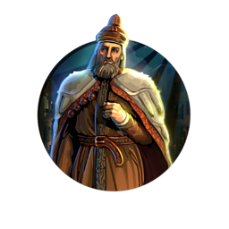
Enrico Dandolo
Civilization:
Unique Traits:
Serenissima: Cannot create Settlers or annex Cities. Trade Route cap doubled, target restrictions removed. Free Merchant of Venice at Trade. 🎭 Puppets have -30% Yield penalties, can use 💰 Gold and gain 😊 Happiness like normal Cities.
History
Enrico Dandolo, the 42nd Doge of Venice, was famous for his piety and longevity, while equally infamous for his pivotal role in the Fourth Crusade which led to the sack of Constantinople and the collapse of the Byzantine Empire. What made this all the more remarkable was the fact that Enrico was blind. Born to a powerful family, Enrico Dandolo served the Republic as a diplomat for much of his life. Elected Doge in June 1192 AD at an advanced age, he nevertheless took up the post with vigor. In the following years he reformed the Venetian currency, as well as its legal system, and sought stronger ties with the Western powers. In 1202, the knights of the Fourth Crusade were stranded in Italy without funds to pay for ships. Dandolo "took the Cross" and made Venice the major financial backer for the crusade. This ultimately led to the attack on Constantinople in 1204, where the Doge was present and took an active part. He died shortly thereafter, and was buried in the Hagia Sophia.
Early Life
Born into one of the most powerful and influential families in Venice, young Enrico was groomed for a life of service to the Republic. His father Vitale was a famed jurist and member of the ducal court, a close advisor to the Doge Michiel. After a series of administrative posts, in 1171 AD at the age of 64 Enrico Dandolo entered the Venetian diplomatic service. In March of that year, the Byzantine emperor Comnenus had seized the property of thousands of Venetians living in his realm. Dandolo accompanied Doge Michiel on a disastrous military mission to Constantinople; upon returning to Venice, an irate mob killed Michiel, but Enrico escaped blame and was subsequently appointed ambassador to seek a diplomatic settlement with Byzantium. On his second mission, legend has it that so vigorous was Dandolo's protection of Venetian interests that the Byzantine emperor had him blinded. However, historical records show that Enrico Dandolo lost his sight gradually between 1174 and 1178, likely as the result of a severe blow to the head.
Returning without a treaty - one would not be signed between Venice and Byzantium until 1186 - Dandolo was dispatched as ambassador to the Kingdom of Sicily in 1171 AD and to Ferrara in 1191. His diplomatic abilities were rewarded with close cooperation with both to challenge and limit Byzantine influence in the western Mediterranean. In recognition of his services, in 1178 Dandolo was made one of the forty individuals commissioned to elect doges. When Doge Orio Mastropiero retired to a monastery, Enrico Dandolo was himself elected Doge of Venice in June 1192.
Returning without a treaty - one would not be signed between Venice and Byzantium until 1186 - Dandolo was dispatched as ambassador to the Kingdom of Sicily in 1171 AD and to Ferrara in 1191. His diplomatic abilities were rewarded with close cooperation with both to challenge and limit Byzantine influence in the western Mediterranean. In recognition of his services, in 1178 Dandolo was made one of the forty individuals commissioned to elect doges. When Doge Orio Mastropiero retired to a monastery, Enrico Dandolo was himself elected Doge of Venice in June 1192.
Reign
Although elderly and blind, Enrico Dandolo proved a vigorous and able leader for Venice. In one of his first official actions, he reaffirmed the "ducal promise," codifying the duties and rights of the dogeship. In the next few months, drawing on his education in the law, he revised the Venetian penal code and published the first collection of civil statutes for the Republic. In 1194 AD he turned his attention to currency reform, making the silver Venetian grosso the primary coinage for trade throughout the Mediterranean.
Dandolo was just as vigorous in his diplomatic dealings. Drawing on his previous experiences, he put an end to commercial disputes with Verona, concluding treaties with that city-state and with Treviso in 1192 AD. The Doge followed these triumphs with treaties with the Patriarch of Aquileia (1200), the King of Armenia (1201), the Holy Roman Emperor (1201) and rival Byzantium itself (1199). He also led Venice in successful military conflicts with Zara when that city tried to unite with Hungary, and with Pisa when that economic challenger attempted to establish outposts in Istria, which Dandolo claimed to be in Venice's zone of influence.
Dandolo was just as vigorous in his diplomatic dealings. Drawing on his previous experiences, he put an end to commercial disputes with Verona, concluding treaties with that city-state and with Treviso in 1192 AD. The Doge followed these triumphs with treaties with the Patriarch of Aquileia (1200), the King of Armenia (1201), the Holy Roman Emperor (1201) and rival Byzantium itself (1199). He also led Venice in successful military conflicts with Zara when that city tried to unite with Hungary, and with Pisa when that economic challenger attempted to establish outposts in Istria, which Dandolo claimed to be in Venice's zone of influence.
The Fourth Crusade
Pope Innocent III came to the papacy in 1198 AD, preaching a new crusade to liberate the Holy Land. Largely ignored by European royalty, the call was taken up by Count Thibaut of Champagne and Count Boniface of Montferrat. Being short of funds, in 1201 the crusaders sent envoys to the maritime city-states to acquire transport to Egypt, where the crusaders planned to strike at the heart of the Ayyubid lands and from there free Palestine. Doge Dandolo agreed to supply transport for 33,000 troops - an ambitious number - in exchange for a hefty payment; the Pope ratified the contract. To fulfill their end, the Venetians built 50 warships and 450 transports. When, however, the crusaders proved unable to pay the agreed sum, rather than lose the investment, Dandolo waived the fee and joined the Fourth Crusade as one of its leaders. As compensation, the Doge demanded that the crusading force help Venice retake the town of Zara, then in revolt.
After the fall of Zara, Dandolo supported the diversion of the crusade from Egypt to Constantinople. There the Catholic leaders sought to place Alexis Angelus on the Byzantine throne, thereby gaining Byzantine support for their invasion of the Holy Land. This eventually led to the brief siege, capture and sack of Constantinople. In spite of his age, Dandolo took an active role in the planning and the operation, leading his Venetians against the sea walls of the great city, which fell to the crusaders in April 1204. Subsequently, Dandolo played the most central part in formulating the treaty partitioning the empire between the Byzantines and the crusaders (who sought to form a Catholic "Latin" empire), with Venice having significant rights in each.
Doge Dandolo joined the disastrous crusaders' invasion of pagan Bulgaria, but returned to the city and died of health complications in May 1205. He was buried in the Hagia Sophia, although the exact location of his tomb in the great church is unknown.
After the fall of Zara, Dandolo supported the diversion of the crusade from Egypt to Constantinople. There the Catholic leaders sought to place Alexis Angelus on the Byzantine throne, thereby gaining Byzantine support for their invasion of the Holy Land. This eventually led to the brief siege, capture and sack of Constantinople. In spite of his age, Dandolo took an active role in the planning and the operation, leading his Venetians against the sea walls of the great city, which fell to the crusaders in April 1204. Subsequently, Dandolo played the most central part in formulating the treaty partitioning the empire between the Byzantines and the crusaders (who sought to form a Catholic "Latin" empire), with Venice having significant rights in each.
Doge Dandolo joined the disastrous crusaders' invasion of pagan Bulgaria, but returned to the city and died of health complications in May 1205. He was buried in the Hagia Sophia, although the exact location of his tomb in the great church is unknown.
Judgement of History
Enrico Dandolo is today considered one of the greatest Venetian Doges. He took control of a mercantile power in decline, riven by corruption and inefficiency, challenged by great and small powers across the region. Trade had declined, and its military was moribund. By his death, he had ended all outside threats to Venice's influence, and made it the dominant power in Mediterranean trade again. Historians have referred to Dandolo as the "founder of the Venetian colonial empire." Venice itself would be prosperous, stable and secure for the next century.
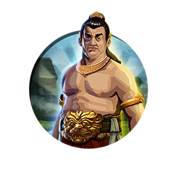
Gajah Mada
Civilization:
Unique Traits:
Sumpah Palapa: When you gain a City, one of 3 unique Luxuries (//) will appear nearby. +5% to unique Yield and 🌟 Golden Age duration modifiers from Global Monopolies; +2 to Yields and 😊 Happiness from Global Monopolies.
History
Gajah Mada (loosely translated as the "Elephant General"), hero to the people of Indonesia and symbol of national pride and patriotism, served as Prime Minister of the Majapahit Empire of Indonesia for the better part of the 14th Century AD. Although little information exists as to his early life and upbringing, it is known that he was born a commoner, rising to power based solely on his intellect and cunning - along with a renowned ferocity in battle. Serving as a royal bodyguard, Gajah Mada was instrumental in quashing a rebellion against his king, and was rewarded with a path to joining the ruling elite. Eventually rising to the position of Prime Minister, Gajah Mada led the Majapahit Empire to great success in conquering many of the neighboring island kingdoms, becoming the first to unite much of the territory that encompasses modern Indonesia.
Rise to Power
The earliest records of Gajah Mada's life begin in adulthood, when he is said to have served as commander of an elite guard unit entrusted with protecting the royal family of the Majapahit Emperor, Jayanagara (1309-1328 AD). During this period, a rogue Majapahit political officer known as Rakrian Kuti lead a rebellion against King Jayanagara. Learning of the plot, Gajah Mada safely escorted the king out of the capital city, which fell to Kuti's forces, and into hiding in the nearby city of Badander. Once the king was secure, legend has it that Gajah Mada spread rumors of the king's death to disrupt the rebellion, while organizing a group to retake the capital and reinstate the rightful king. Gajah Mada found that many of the military caste were dismayed by the king's supposed death and that Kuti was unpopular among the people. In the ensuing counter-insurrection, the upstart Kuti was killed, and Gajah Mada was rewarded for his efforts with his first leadership position within the ruling party.
Prime Minister of Majapahit
Some years later, according to legend, Gajah Mada's loyalty waned when the king took Mada's wife as a concubine. In the tale, Gajah Mada convince the court physician, a one-time supporter of Kuti, to kill the king when he fell ill; upon the king's death, Gajah Mada promptly had the physician arrested and executed. Whatever the truth in the tale, following the death of Jayanagara, his step-sister Tribhuwana Wijayatunggadewi ascended the throne with ambitions to expand the reach of her empire. Fortunately for Gajah Mada, his role in this expansion was considered integral by the new queen, and he was named mahapatih, Prime Minister, in 1329 AD. With sweeping powers and new authority, Gajah Mada set his sights on the far-flung reaches of the archipelago, vowing great things for the empire that entrusted him with its future. His famous oath, known as the Sumpha Palapa - often the subject of varying interpretations - declared in the most basic terms "I will not indulge in the fruits or spice, the earthly pleasures, until all of the known islands are conquered for the Majapahit."
Conquests
Following Gajah Mada's return in 1331 AD from suppressing a rebellion in Sadeng (eastern Java), it wasn't long before he launched his campaigns to conquer the neighboring islands of the Indonesian archipelago, beginning with Bali and Lombok in 1343. One by one he captured kingdoms and cities, states and provinces, all for the glory of his people. These included the Buddhist kingdom of Sriwijaya in Palembang and small kingdoms in West Sumatra, where Gajah Mada installed a Majapahit prince as a vassal ruler. The Elephant General then conquered Samudra Pasai in Sumatra, the first Muslim sultanate in Indonesia. Following this victory, in the span of two years Majapahit forces overran another half-dozen independent cities and kingdoms, including Temesek (now known as Singapore) across the straits.
Tribhuwana abdicated the Majapahit throne in 1350 AD in favor of her son Hayam Wuruk, considered the greatest of the kings of the Majapahit. During his reign the empire reached its greatest extent, encompassing the whole of the Indonesian archipelago. Trade and the arts flourished under the king. The new king was content to leave the affairs of the nation to his prime minister, while he himself patronized the arts and sciences. With the tacit support of the king, Gajah Mada proceeded to add two dozen kingdoms to the empire, some as far away as modern-day Malaysia and the southern Philippines.
Having conquered more than a dozen islands within the archipelago by 1357, Gajah Mada found himself in a difficult position, with one of the last remaining independent kingdoms being the Sunda in West Java. Although plans had been laid for the princess of the Sunda to marry the Hayam Wuruk, forming an alliance, Gajah Mada sought to press the Sunda further. By denying that the Sunda princess would become Queen Consort of Majapahit and instead be only a concubine, Gajah Mada enraged Sunda sensibilities. In meeting the wedding party at the town of Bubat, the negoiations degenerated into open hostility, and a skirmish ensued. Gajah Mada and his forces massacred the entire Sunda royal family and its bodyguard.
The incident marred the legacy of Gajah Mada as his actions were seen as reckless and heavy-handed. Majapahit ministers and courtiers condemned him as bloodthirsty and brutal. The king stripped Gajah Mada of his titles, authority and honors. The once most-powerful man in the empire would spend the rest of his days in relative solitude at his remaining estate in East Java. Gajah Mada would die in relative obscurity in 1363 AD.
Tribhuwana abdicated the Majapahit throne in 1350 AD in favor of her son Hayam Wuruk, considered the greatest of the kings of the Majapahit. During his reign the empire reached its greatest extent, encompassing the whole of the Indonesian archipelago. Trade and the arts flourished under the king. The new king was content to leave the affairs of the nation to his prime minister, while he himself patronized the arts and sciences. With the tacit support of the king, Gajah Mada proceeded to add two dozen kingdoms to the empire, some as far away as modern-day Malaysia and the southern Philippines.
Having conquered more than a dozen islands within the archipelago by 1357, Gajah Mada found himself in a difficult position, with one of the last remaining independent kingdoms being the Sunda in West Java. Although plans had been laid for the princess of the Sunda to marry the Hayam Wuruk, forming an alliance, Gajah Mada sought to press the Sunda further. By denying that the Sunda princess would become Queen Consort of Majapahit and instead be only a concubine, Gajah Mada enraged Sunda sensibilities. In meeting the wedding party at the town of Bubat, the negoiations degenerated into open hostility, and a skirmish ensued. Gajah Mada and his forces massacred the entire Sunda royal family and its bodyguard.
The incident marred the legacy of Gajah Mada as his actions were seen as reckless and heavy-handed. Majapahit ministers and courtiers condemned him as bloodthirsty and brutal. The king stripped Gajah Mada of his titles, authority and honors. The once most-powerful man in the empire would spend the rest of his days in relative solitude at his remaining estate in East Java. Gajah Mada would die in relative obscurity in 1363 AD.
Judgment of History
In modern Indonesia, Gajah Mada is viewed as a hero - a symbol of Indonesian patriotism and national pride. Gajah Mada is seen as an inspirational figure, one who exemplifies the potential greatness of all Indonesians. He would serve as a mythic propaganda symbol during the resistance to Japanese occupation and the ensuing revolt for independence from Dutch rule in the late 1940s. His legacy as the first to unite the many islands of the Indonesian archipelago into one nation will stand throughout history - as will his renowned dedication and unwavering loyalty to his king and the Majapahit people.
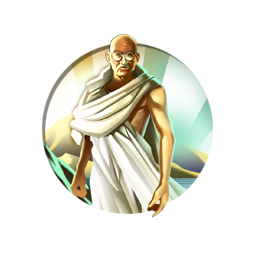
Gandhi
Civilization:
Unique Traits:
Mahatma: Starts with a Pantheon. Great Prophets require 35% less 🕊️ Faith. You may spend a Prophet's first spread action to Found or Enhance a Religion, or build a Holy Site, without consuming the Prophet. Cannot build Missionaries.
History
Mohandas Gandhi was an Indian patriot who led India's nonviolent independence movement against British Imperial rule in the early to mid-twentieth century. He pioneered "satyagraha," or resistance to tyranny through mass civil disobedience, a ploy used to great effect against the British Raj.
Early History
Mohandas Gandhi was born in an India under British rule. The son of the Prime Minister of the small state of Porbandar, in his youth Gandhi displayed none of the brilliance that would mark him as an adult; in fact the young man was a mediocre student and quite shy. He entered into an arranged marriage at the age of 13, the usual custom of the period. Apparently he did not enjoy the experience, later calling the practice "the cruel custom of child marriage."
Upon graduating from high school, Gandhi decided to follow his father into state service. To this end he decided he would go to England to study. His father having just died, Gandhi's mother did not want him to go, allowing him only after he had promised to abstain from wine, women, and meat. His caste looked upon traveling over the ocean as unclean; when he persisted they declared him an "outcast." He learned much about England and the English during his time in that country, knowledge which was to prove invaluable later in his career. In 1891 Gandhi passed the bar and set sail for India. He attempted to set up practice in Bombay, but was unsuccessful and shortly relocated to South Africa.
Upon graduating from high school, Gandhi decided to follow his father into state service. To this end he decided he would go to England to study. His father having just died, Gandhi's mother did not want him to go, allowing him only after he had promised to abstain from wine, women, and meat. His caste looked upon traveling over the ocean as unclean; when he persisted they declared him an "outcast." He learned much about England and the English during his time in that country, knowledge which was to prove invaluable later in his career. In 1891 Gandhi passed the bar and set sail for India. He attempted to set up practice in Bombay, but was unsuccessful and shortly relocated to South Africa.
South Africa
Gandhi enjoyed more professional success in South Africa, but he was appalled by the racial bigotry and intolerance he found there. He spent the next twenty years of his life in South Africa looking after the interests of all under-classes, not just the Indians. It was here that Gandhi began to refine and teach his philosophy of passive resistance. He was jailed several times for opposition to the so-called "Black Acts," by which all non-whites were required to submit their fingerprints to the government. When the government ruled that only Christian marriages were legal in South Africa, Gandhi organized and led a massive non-violent protest, which eventually caused the government to back down. It was here that Gandhi acquired the title of "Mahatma," which means a person venerated for great knowledge and love of humanity.
Return to India
In 1915, Gandhi returned to India. He shocked the world when he expressed his humiliation that he had to speak English in his native land, and he shocked the Indian nobility when he chided them for their ostentatiousness, telling them that they should hold their jewels and wealth in trust for their countrymen.
Thus Gandhi began his long campaign to free his country from English rule. He followed two paths - he shamed the oppressors and he demanded sacrifice from his people. For the next thirty years Gandhi was to tirelessly exhort his people to passive resistance, leading strike after strike, march after march, fasting himself to the point of incapacity, enduring innumerable beatings, and months and even years in prison. At one point he made a historic trip to England, where he won over much of the English working and middle classes, to the great irritation of the government. Despite innumerable setbacks and years of endless toil, he persisted. In 1946, exhausted and virtually bankrupt by World War II, the English agreed to vacate India, but in doing so divided the country between Hindu and Muslims, which Gandhi abhorred.
Thus Gandhi began his long campaign to free his country from English rule. He followed two paths - he shamed the oppressors and he demanded sacrifice from his people. For the next thirty years Gandhi was to tirelessly exhort his people to passive resistance, leading strike after strike, march after march, fasting himself to the point of incapacity, enduring innumerable beatings, and months and even years in prison. At one point he made a historic trip to England, where he won over much of the English working and middle classes, to the great irritation of the government. Despite innumerable setbacks and years of endless toil, he persisted. In 1946, exhausted and virtually bankrupt by World War II, the English agreed to vacate India, but in doing so divided the country between Hindu and Muslims, which Gandhi abhorred.
Partition
The partition sparked an outbreak of religious violence, in which Muslims were massacred wholesale in India, and the same fate awaited Hindus in Pakistan. The countries were in chaos. In response, Gandhi went on a fast, refusing to eat again until the violence ceased. Astonishingly, his fast worked: the peoples of India and Pakistan were unwilling to see their great hero die, and they sent him letters and representatives promising to stop the killings and begging him to end the fast. He did so, to the relief of millions. Twelve days later, Gandhi was assassinated.
Verdict of History
Today Gandhi is considered to be one of the great figures in human history. He is recognized as a courageous and tireless champion for justice and moral behavior, in South Africa fighting just as hard for the rights of other downtrodden people as he did for fellow Indians. He is also acknowledged as a brilliant political leader who organized a successful independence campaign against one of the most powerful empires the world has ever seen. Of him, Martin Luther King said, "Christ gave us the goals and Mahatma Gandhi the tactics."
Genghis Khan
Civilization:
Unique Traits:
Mongol Terror: Skirmisher Units have an extra Attack. Gain All Yields equal to 20% of the 💰 Gold from bullying City-States.
History
Genghis Khan is one of the most recognized and worst feared leaders in all of human history. Hundreds of statues, buildings, and commercial products bear his image, and numerous entertainment works have been created honoring his life. He became the first to unite the warring, nomadic tribes of northeast Asia and founded the largest contiguous empire known to man. Perhaps less known are the improvements and advancements he made in infrastructure, trade, and religious tolerance. More than just a warrior, he was also a capable and shrewd civil leader.
Birth
Born Borjigin Temujin in 1162 AD, Temujin was raised in a Mongol tribe that inhabited the lands near modern day Ulaanbaatar. The third oldest son of a tribal chieftain, he is said to be named after a captured Tatar chieftain. Much of Temujin's early life is shrouded in mystery, and the few sources which do exist often conflict and disagree. No accurate portraits or pictures of him exist today, but many sources describe Temujin as a "glittering" man, sporting long red hair and blue-green eyes.
Early Life
Like many of the tribesmen in the region Temujin's early life was pretty difficult, despite being born into nobility. At the age of nine he was betrothed to a neighboring tribe-chieftain's daughter and sent to live with her family. His father was killed on the way back home, and Temujin's tribe subsequently abandoned him and the remainder of his family. The family lived destitute until he married his betrothed at the age of 16.
Unification Begins
Temujin began his bid for power by offering himself as a vassal to his late father's blood brother, Toghrul, the Khan of the Kerait tribe. During this time, Temujin's wife was captured by the Merkit tribe, and Toghrul lent the young warlord 20,000 men to face them in battle. Not only did Temujin recapture his wife, but he also completely defeated the Merkits, bringing them under this control. He became a Khan in his own right and began conquering more of the neighboring tribes.
During his conquests the young Khan fundamentally broke with Mongol tradition - he created a new set of laws and incorporated his captured holdings into his growing empire, rather than destroying and pillaging them. His law, the Yassa, promised soldiers fair pay and wealth, outlawed thievery and pillaging of any kind, and promised protection and religious freedom for all conquered tribes. Temujin's political innovations brought him much loyalty and strongly united his growing nation.
The rest of his outward expansion and unification of the Mongol tribes is filled with tales of betrayal, intrigue, dashing victories, conspiracies, familial disputes, and more betrayal, including rifts between his former ally Toghrul and eldest son Jochi. However, despite these setbacks he managed to subdue or unite all the nomadic tribes in the Mongolia area by 1206, the first man to ever do so. At a joint council of chiefs he was given the name “Genghis Khan”, the eternal and universal ruler of the Mongol peoples.
During his conquests the young Khan fundamentally broke with Mongol tradition - he created a new set of laws and incorporated his captured holdings into his growing empire, rather than destroying and pillaging them. His law, the Yassa, promised soldiers fair pay and wealth, outlawed thievery and pillaging of any kind, and promised protection and religious freedom for all conquered tribes. Temujin's political innovations brought him much loyalty and strongly united his growing nation.
The rest of his outward expansion and unification of the Mongol tribes is filled with tales of betrayal, intrigue, dashing victories, conspiracies, familial disputes, and more betrayal, including rifts between his former ally Toghrul and eldest son Jochi. However, despite these setbacks he managed to subdue or unite all the nomadic tribes in the Mongolia area by 1206, the first man to ever do so. At a joint council of chiefs he was given the name “Genghis Khan”, the eternal and universal ruler of the Mongol peoples.
Outward Expansion
After the unification of Mongolia, Genghis soon began a series of successful military campaigns to conquer the surrounding and outlying areas, creating a massive empire under his rule. In 1209, he forced the surrender of the Xia provinces, and shortly thereafter in 1211, he finished the conquest of the Jin Dynasty.
Next he turned his attention west toward Persia. In a deft maneuver containing only two armies of 20,000 men each, Genghis launched a successful attack against the Kara-Khitan Khanate, putting his reach of control right on Persia's doorstep.
Rather than conquer the neighboring empire of Khwarezmia, Genghis instead offered a political alliance, sending a 500-man trade caravan to the capital - he hoped to create a powerful trading partner using the Silk Road. However, the Khwarezmian Shah distrusted the young leader and slaughtered the caravan. Trying once more, Genghis sent a group of ambassadors to the Shah directly, who answered the gesture by beheading one of them. Outraged, Genghis assembled some 200,000 men and personally oversaw the bloody fall and abject subjugation of the Khwarezmian Empire in 1220. Immediately following his success he captured many other regions on his way back to Mongolia, including Georgia, Afghanistan, and the remaining Western Xia holdings.
His victorious journey complete, Genghis's empire now stretched from the Caspian Sea in the west all the way to the Sea of Japan in the east, twice the size of the Roman Empire.
Next he turned his attention west toward Persia. In a deft maneuver containing only two armies of 20,000 men each, Genghis launched a successful attack against the Kara-Khitan Khanate, putting his reach of control right on Persia's doorstep.
Rather than conquer the neighboring empire of Khwarezmia, Genghis instead offered a political alliance, sending a 500-man trade caravan to the capital - he hoped to create a powerful trading partner using the Silk Road. However, the Khwarezmian Shah distrusted the young leader and slaughtered the caravan. Trying once more, Genghis sent a group of ambassadors to the Shah directly, who answered the gesture by beheading one of them. Outraged, Genghis assembled some 200,000 men and personally oversaw the bloody fall and abject subjugation of the Khwarezmian Empire in 1220. Immediately following his success he captured many other regions on his way back to Mongolia, including Georgia, Afghanistan, and the remaining Western Xia holdings.
His victorious journey complete, Genghis's empire now stretched from the Caspian Sea in the west all the way to the Sea of Japan in the east, twice the size of the Roman Empire.
Succession and Death
Now an aged man, the topic of Genghis's succession was heated and highly contested. His eldest son, Jochi, was suspected of being born of a different man (as a result of his wife's capture), and many refused outright to follow him. The clash ended however in 1226 when Jochi died mysteriously, some claiming that Genghis himself ordered the boy poisoned. His middle son Ogedei was named heir, as Genghis thought him the most level headed and stable of his remaining children.
Shortly after in 1227 Genghis died, the reason for which is still debated. Some claim he fell from his horse during a battle against the Tangut people, others hold that he was struck down by a long illness. Some even claim that a captured Tangut princess killed him with a pair of pliers. Regardless of the means or reason, Genghis Khan was buried in an unmarked grave as he wished, its location a closely guarded family secret. Some folklore claims that a river was diverted over the site to protect it; other stories describe a grove of trees planted atop the grave to hide it. In 2004, an archaeological dig uncovered what is believed to be the ruins of Genghis' palace. Hope remains that his grave may yet be found.
Shortly after in 1227 Genghis died, the reason for which is still debated. Some claim he fell from his horse during a battle against the Tangut people, others hold that he was struck down by a long illness. Some even claim that a captured Tangut princess killed him with a pair of pliers. Regardless of the means or reason, Genghis Khan was buried in an unmarked grave as he wished, its location a closely guarded family secret. Some folklore claims that a river was diverted over the site to protect it; other stories describe a grove of trees planted atop the grave to hide it. In 2004, an archaeological dig uncovered what is believed to be the ruins of Genghis' palace. Hope remains that his grave may yet be found.
Judgment of History
Depending on whom you ask, Genghis Khan is regarded as a worthy leader and excellent ruler or, conversely as a bloodthirsty killer. In present-day Mongolia, he is thought of favorably as the father of the nation, and his many political innovations are upheld and heralded. In formerly conquered lands, such as Iraq and Iran, he is seen almost universally as a genocidal, maniacal tyrant who caused untold destruction and damage. Whether his tales of greatness or brutality are contested or exaggerated, he is undoubtedly one of the most important and influential leaders in the ancient world, his legacy still remaining strong and visible even today.
Genghis Factoid
Recent discoveries in genealogical mapping suggest that about 8% of men in Asia (roughly 0.5% worldwide) can trace their ancestry directly back to Genghis Khan.
Gustavus Adolphus
Civilization:
Unique Traits:
Lion of the North: Melee Land Units start with the Gå-På Promotion, and Siege Units start with the Mobility Promotion. All Military Land Units heal 10 HP and earn 2 XP when a ⭐ Great Person is born. +15% ⚔️ Combat Strength from / Leadership.
History
Revered Swedish king and military commander Gustavus Adolphus, known most famously as "The Lion of the North," ascended to the throne at the age of 17 and quickly established his reputation as both a skilled military strategist and an innovator in the art of warfare. Inheriting a complex web of domestic and foreign conflicts from his father, the usurper King Charles IX, Adolphus wasted no time in forming alliances with the once hostile nobility, crushing the enemies of Sweden, and leading his nation to the upper echelon of power in Europe during the 17th century.
Conflicts of his Father
Much of the turmoil awaiting Adolphus upon his succession was the direct result of his father's brief reign as king. At the time of Adolphus's birth, his father was Duke Charles, serving as regent over Sweden in place of his nephew, King Sigismund of Poland. While both King of Poland and Grand Duke of Lithuania, Sigismund was also the rightful king of Sweden, son of the prior Swedish king, John III. However, by this point in history Sweden was a majority Protestant state, with Charles being a vocal Protestant himself, while Sigismund was a devout Catholic. Fearing the potential for Sweden's forcible return to Catholicism, a personal union between Sweden and Poland was formed instead. Sharing the same king - but independent of law and culture - this union allowed Duke Charles to lead as regent over Sweden while Sigismund remained in Poland, separating the opposing religious factions.
As regent, Charles was seen as a protector of Protestant beliefs, and he used the increasing religious tension to his own advantage. Exerting his own authority over the regional governors in Sweden still loyal to the king, Charles incited a civil war with the followers of Sigismund. After a number of brief conflicts, the situation culminated at the Battle of Stangebro in 1598, when the invading army of Sigismund was soundly defeated. Captured and returned to Poland, Sigismund was left with little support in Sweden. In 1600, the Riksdag, Sweden's parliamentary council, acknowledged that Sigismund had abdicated the throne and named Charles as King of Sweden.
The events leading up to Charles's coronation would have a lasting impact on the future reign of Adolphus. Not only was the personal union between Poland and Sweden broken, but Sigismund maintained his claim to the throne of Sweden, and refused to end his pursuit of the lost crown. As a result, a near constant state of war between the two nations followed for the next 50 years.
As regent, Charles was seen as a protector of Protestant beliefs, and he used the increasing religious tension to his own advantage. Exerting his own authority over the regional governors in Sweden still loyal to the king, Charles incited a civil war with the followers of Sigismund. After a number of brief conflicts, the situation culminated at the Battle of Stangebro in 1598, when the invading army of Sigismund was soundly defeated. Captured and returned to Poland, Sigismund was left with little support in Sweden. In 1600, the Riksdag, Sweden's parliamentary council, acknowledged that Sigismund had abdicated the throne and named Charles as King of Sweden.
The events leading up to Charles's coronation would have a lasting impact on the future reign of Adolphus. Not only was the personal union between Poland and Sweden broken, but Sigismund maintained his claim to the throne of Sweden, and refused to end his pursuit of the lost crown. As a result, a near constant state of war between the two nations followed for the next 50 years.
Early Reign
While Charles is credited with protecting the Protestant beliefs of the Swedish people, his right to kingship was dubious at best. After leading Sweden for only seven years, Charles died in 1611, leaving his son to bear the burden of his tumultuous reign. Adolphus, who had already served with his father in the military during the prior years, was crowned king at age 17. Immediately after his ascension, he sought to quell the concerns of the Swedish nobility, whose involvement and authority in governing via the Riksdag had been reduced under Charles. According to the regulations of the parliament, Adolphus was too young to become king at 17. However, a compromise was reached, Adolphus became king, and in return he granted the nobility seats on his Privy Council, a collective of the king's closest advisors.
Adolphus was faced with conflicts from three distinct rivals, with growing tension from Denmark and Russia coinciding with the ongoing feud involving Sigismund and Poland. With the potential for wars on three fronts, Adolphus quickly moved to ease some of Sweden's military engagements. The ongoing conflict with Poland and Sigismund was tenuously settled with a truce in 1611, a peace that was renewed each year while both sides dealt with turmoil elsewhere.
The Kalmar Conflict was brought about by Sweden's attempts to claim the region of Finnmark in Norway, allowing Swedish traders to circumvent the Danish tax levied on those who passed through the strait connecting the Baltic and North Seas. Relying heavily on these taxes, and fearful of the Swedes developing an alternative trade route, the Danes declared war on Sweden in 1611. The Swedish effort was initially led by Charles, who died soon after and left Adolphus with little means to win the war. After two years of conflict, and the loss of several key Swedish fortresses, the war was finally settled in 1613 with the Peace of Knared. Although Sweden paid a hefty price to regain its lost fortresses, they managed to gain an exemption from any future tax when passing through the sound.
The Ingrian War with Russia arose in 1610 from attempts by Charles to gain the throne of Russia for his other son, Charles Philip. Charles's death shortly after the start of the war left Adolphus to settle the conflict. Battles waged throughout Russia for seven years, with gains and losses for both sides countering any real progress. The war was concluded in 1617 with the signing of the Treaty of Stolbovo, whereupon Sweden gained several provinces, but also returned some of the territory acquired in conquest. Sweden also acknowledged Michael Romanov as the rightful Tsar of Russia as part of the agreement.
These early conflicts provided Adolphus with an opportunity to hone his skills as both king and commander. Learning the ways of diplomacy and warfare at an early age provided Adolphus with valuable experience, preparing him for the greater battles looming in his future.
Adolphus was faced with conflicts from three distinct rivals, with growing tension from Denmark and Russia coinciding with the ongoing feud involving Sigismund and Poland. With the potential for wars on three fronts, Adolphus quickly moved to ease some of Sweden's military engagements. The ongoing conflict with Poland and Sigismund was tenuously settled with a truce in 1611, a peace that was renewed each year while both sides dealt with turmoil elsewhere.
The Kalmar Conflict was brought about by Sweden's attempts to claim the region of Finnmark in Norway, allowing Swedish traders to circumvent the Danish tax levied on those who passed through the strait connecting the Baltic and North Seas. Relying heavily on these taxes, and fearful of the Swedes developing an alternative trade route, the Danes declared war on Sweden in 1611. The Swedish effort was initially led by Charles, who died soon after and left Adolphus with little means to win the war. After two years of conflict, and the loss of several key Swedish fortresses, the war was finally settled in 1613 with the Peace of Knared. Although Sweden paid a hefty price to regain its lost fortresses, they managed to gain an exemption from any future tax when passing through the sound.
The Ingrian War with Russia arose in 1610 from attempts by Charles to gain the throne of Russia for his other son, Charles Philip. Charles's death shortly after the start of the war left Adolphus to settle the conflict. Battles waged throughout Russia for seven years, with gains and losses for both sides countering any real progress. The war was concluded in 1617 with the signing of the Treaty of Stolbovo, whereupon Sweden gained several provinces, but also returned some of the territory acquired in conquest. Sweden also acknowledged Michael Romanov as the rightful Tsar of Russia as part of the agreement.
These early conflicts provided Adolphus with an opportunity to hone his skills as both king and commander. Learning the ways of diplomacy and warfare at an early age provided Adolphus with valuable experience, preparing him for the greater battles looming in his future.
Political Reforms
Per the agreement reached upon his succession, Adolphus granted increased authority to the Riksdag council, elevating its status from that of a ceremonial body to a governing council that could convene at its own behest and make decisions impacting national policy. As a result, Adolphus formed a close working relationship with Axel Oxenstierna, a noble who he named High Chancellor of the Privy Council. Through Oxenstierna's careful guidance, many of Adolphus's most notable domestic policies were formed. Among their most notable achievements, in 1617, the establishment of four clearly defined "estates" within the Riksdag - consisting of the nobility, the clergy, the burghers, and the peasantry - ensured that every member of Swedish society was given a stake and a voice on the national stage.
Military Innovations
Among the many names bestowed upon Gustavus Adolphus by his peers and historians alike, his reputation as "The Father of Modern Warfare" comes from the pioneering military tactics and weaponry developed during his reign. Numerous innovations still in use by modern armies were conceived of by Adolphus, including mobile light artillery, varied formations with mixed troop types, and aggressive offensive tactics that countered the formal defensive strategies employed during his time. Adolphus is notably credited as one of the earliest to equip his men with paper firearm cartridges, combining pre-measured amounts of gunpowder with the projectile in a paper cone. By eliminating the need to measure and pour gunpowder while in the field, Adolphus increased both the reliability and speed of his men's weapons.
On the Battlefield
The heart of Adolphus's legacy was his ability to command on the battlefield, and he was something of a natural, learning the ways of war during his early teenage years while his father was still king. Adolphus was injured several times in battle, including a gunshot wound that left a musket ball entrenched near his neck. Never one to back down from his duties, Adolphus soldiered on with the wound, fighting in a number of battles while wearing only a flexible leather cuirass to ease the pain caused to him by wearing heavy iron armor.
Of the numerous battles fought by Sweden under his watchful eye, his most notable came during the Thirty Years War. Primarily a conflict between the Protestant states and the Catholic forces serving the Holy Roman Empire, the Thirty Years' War was a highly destructive conflict that left an indelible mark on Europe. Although a number of factors led to the outbreak of fighting in 1618, Sweden remained neutral until 1630, when Adolphus saw fit to aid the German Protestants and defend Sweden from the expanding ambitions of the Holy Roman Emperor. Led by Adolphus and his charge "Gott Mit Uns!" meaning "God is with us!" the armies of Sweden enjoyed a number of early successes, crushing the Catholic forces and stalling their advance.
Perhaps his most famous confrontation, known as the Battle of Breitenfeld, was fought in 1631 in Saxony (present-day Germany). With effective use of mobile artillery, and a series of astutely timed maneuvers led by the Finnish light cavalry, the "Hakkapeliittas," Adolphus and his army crushed the Imperial forces, capturing the enemy artillery positions and using their own weapons against them. A complete and utter triumph for the united Protestant forces, the victory at Breitenfeld cemented Adolphus's reputation as an able leader and dangerous foe to the Holy Roman Empire.
Shortly thereafter at the Battle of Lech in Bavaria in 1632, Adolphus led an army of 40,000 Swedish troops against a smaller contingent of Catholic forces led by Count Johan Tzerclaes. Under the cover of mobile artillery support, Adolphus sent his Hakkapeliitta across the river Lech using temporary bridges. Once across, the elite cavalry units dug in and created a defensive position allowing the remainder of the army to cross. Adolphus quickly led a charge against the Catholic forces and Tzerclaes was wounded, later dying of his injuries.
Adolphus's final battle would come at Lutzen, Germany, late in 1632, when he was separated from his men while leading a charge through dense smoke, and was killed by gunfire. Bewildered by the loss of their great king, the Swedish ranks were soon in chaos, yet somehow still managed to force the Imperial army's retreat. Although Sweden suffered several defeats following Adolphus's death, by the signing of the Peace of Westphalia in 1648, which ended the Thirty Years' War, Sweden had emerged as one of the strongest nations in Europe, due in no small part to Gustavus Adolphus's brilliant leadership.
Of the numerous battles fought by Sweden under his watchful eye, his most notable came during the Thirty Years War. Primarily a conflict between the Protestant states and the Catholic forces serving the Holy Roman Empire, the Thirty Years' War was a highly destructive conflict that left an indelible mark on Europe. Although a number of factors led to the outbreak of fighting in 1618, Sweden remained neutral until 1630, when Adolphus saw fit to aid the German Protestants and defend Sweden from the expanding ambitions of the Holy Roman Emperor. Led by Adolphus and his charge "Gott Mit Uns!" meaning "God is with us!" the armies of Sweden enjoyed a number of early successes, crushing the Catholic forces and stalling their advance.
Perhaps his most famous confrontation, known as the Battle of Breitenfeld, was fought in 1631 in Saxony (present-day Germany). With effective use of mobile artillery, and a series of astutely timed maneuvers led by the Finnish light cavalry, the "Hakkapeliittas," Adolphus and his army crushed the Imperial forces, capturing the enemy artillery positions and using their own weapons against them. A complete and utter triumph for the united Protestant forces, the victory at Breitenfeld cemented Adolphus's reputation as an able leader and dangerous foe to the Holy Roman Empire.
Shortly thereafter at the Battle of Lech in Bavaria in 1632, Adolphus led an army of 40,000 Swedish troops against a smaller contingent of Catholic forces led by Count Johan Tzerclaes. Under the cover of mobile artillery support, Adolphus sent his Hakkapeliitta across the river Lech using temporary bridges. Once across, the elite cavalry units dug in and created a defensive position allowing the remainder of the army to cross. Adolphus quickly led a charge against the Catholic forces and Tzerclaes was wounded, later dying of his injuries.
Adolphus's final battle would come at Lutzen, Germany, late in 1632, when he was separated from his men while leading a charge through dense smoke, and was killed by gunfire. Bewildered by the loss of their great king, the Swedish ranks were soon in chaos, yet somehow still managed to force the Imperial army's retreat. Although Sweden suffered several defeats following Adolphus's death, by the signing of the Peace of Westphalia in 1648, which ended the Thirty Years' War, Sweden had emerged as one of the strongest nations in Europe, due in no small part to Gustavus Adolphus's brilliant leadership.
Judgment of History
Nearly 200 years after Adolphus's death, esteemed French commander Napoleon Bonaparte sung his praises as one of the greatest military commanders in history. Consistently leading his forces to victory on the battlefield, Adolphus shaped the future of warfare through his previously unheard-of tactical innovations and strategy. Although his father left a legacy of conflict for Adolphus to resolve, he rose to the occasion and elevated the Kingdom of Sweden to the height of military and political power.
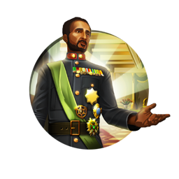
Haile Selassie
Civilization:
Unique Traits:
Solomonic Wisdom: When you complete a Policy Branch, adopt new Beliefs, or choose your first Ideology, receive 1 Free Technology. +1 🕊️ Faith from Strategic Resources.
History
Known as the "Conquering Lion of the Tribe of Judah," "King of Kings," and "Elect of God," Haile Selassie ruled Ethiopia as emperor for nearly 40 years in the 20th century. Born as Lij Tafari Makonnen in 1892, the man who came to be known as Haile Selassie spent his life serving the interests of Ethiopia and bringing his nation to the forefront of African politics. Best known for reforming the ancient feudal practices of Ethiopia through his attempts at modernizing the nation, Haile Selassie worked tirelessly to gain international recognition for Ethiopia on the world stage. His legacy in global politics has been surpassed only by his role as the messiah of the Rastafari religion, among whose followers he is venerated as the god who will lead the Rastas back to their homeland of Ethiopia.
Early Life and Politics
As the son of a provincial governor, Haile Selassie spent his formative years under the tutelage of several mentors selected by his father, including an influential monk named Abba Samuel. As his education continued, Selassie was seen fit to rule as governor of several minor provinces, and by age 17, had already established himself as a rising political star. During his time as governor, Selassie emerged as a progressive thinker among his peers, introducing policies that reduced the feudal control of the nobles by increasing the authority of the central government.
In 1916, Haile Selassie was named Regent Plenipotentiary, serving under Empress Zewdito, placing him in the position of heir apparent to the throne. With both conservative and progressive supporters alike, Selassie was the ideal regent. However, over the course of his appointment, Selassie's support among the progressives throughout Ethiopia continued to grow, much to the chagrin of the conservative Empress. Although Empress Zewdito was the nominal leader of Ethiopia, as regent, Selassie handled much of the government's administration himself. During this period, Selassie is credited with ensuring Ethiopia's membership in the League of Nations, an inclusion that came about as a result of his efforts to abolish slavery in Ethiopia.
In 1916, Haile Selassie was named Regent Plenipotentiary, serving under Empress Zewdito, placing him in the position of heir apparent to the throne. With both conservative and progressive supporters alike, Selassie was the ideal regent. However, over the course of his appointment, Selassie's support among the progressives throughout Ethiopia continued to grow, much to the chagrin of the conservative Empress. Although Empress Zewdito was the nominal leader of Ethiopia, as regent, Selassie handled much of the government's administration himself. During this period, Selassie is credited with ensuring Ethiopia's membership in the League of Nations, an inclusion that came about as a result of his efforts to abolish slavery in Ethiopia.
Emperor to Exile
As Haile Selassie's influence and popular support continued to climb, the Empress was forced to confront the would-be ruler. In 1928, Empress Zewdito attempted to remove Selassie from office by accusing him of treason, but her efforts found little backing. Selassie's popularity at this point was widespread, and he garnered a great deal of support from within the military, leaving Zewdito with little means to assert her claims. As a result of the confrontation, Zewdito was forced to name Haile Selassie King of Ethiopia, a title beneath her own, but still acknowledging his increasing authority within the nation. Less than two years later, the Empress died of unexplained causes, leaving the throne of Ethiopia vacant for Selassie to claim as his own. It was following his coronation as emperor in 1930 that he first came to use the name Haile Selassie, which meant "Power of the Trinity" in the Amharic language used in Ethiopia. Soon after taking the throne, Selassie was instrumental in the creation of the first written constitution of Ethiopia, a task he would later mention in his autobiography as having planned since his time as regent.
In 1935, the Italian regime led by Benito Mussolini declared war on Ethiopia, invading in the fall. This conflict came to be known as the Second Italo-Abyssinian War (the first having occurred in the late 1800s). After brief fighting between the Italian and Ethiopian forces, including several battles led by Selassie himself, Italy succeeded in occupying and eventually annexing the African nation.
With Italy's successful campaign against Ethiopia, Haile Selassie was forced into exile, but not before pleading the case for Ethiopia's defense at the League of Nations. Despite his galvanizing speech that railed against the Fascist movement of Italy, his plea fell on deaf ears, and Selassie was left to bide his time. He would spend the next five years residing in England, where he continued to speak out against the Italian occupation and attempted to garner support from the international community for a movement to reclaim his country.
In 1935, the Italian regime led by Benito Mussolini declared war on Ethiopia, invading in the fall. This conflict came to be known as the Second Italo-Abyssinian War (the first having occurred in the late 1800s). After brief fighting between the Italian and Ethiopian forces, including several battles led by Selassie himself, Italy succeeded in occupying and eventually annexing the African nation.
With Italy's successful campaign against Ethiopia, Haile Selassie was forced into exile, but not before pleading the case for Ethiopia's defense at the League of Nations. Despite his galvanizing speech that railed against the Fascist movement of Italy, his plea fell on deaf ears, and Selassie was left to bide his time. He would spend the next five years residing in England, where he continued to speak out against the Italian occupation and attempted to garner support from the international community for a movement to reclaim his country.
Return to Power
With the outbreak of World War II, in 1939, efforts were finally undertaken to liberate Ethiopia from the Italian regime, spearheaded by the British during the East African Campaign. Joined by selected units of the Ethiopian military, this liberation army came to be known as the Gideon Force and was instrumental in the fight to retake the Ethiopian homeland. By 1942, the Italians had surrendered and were forced to acknowledge the renewed sovereignty of Ethiopia, with Haile Selassie returning to the capital city of Addis Ababa. Having found little solidarity in the League of Nations, Selassie became a major proponent of the United Nations, with its increased provisions for international security, and secured Ethiopia's position as a founding member in 1948.
Decades of Rule
Over the following years, Selassie continued his quest to modernize Ethiopia through reform while also improving his nation's foreign affairs and international recognition. In the 1960s Selassie led the Organization of African Unity, predecessor to the modern African Union. With the goal of creating solidarity between the independent states of the African continent, Selassie believed that a unified voice would strengthen the people of Africa. Although Selassie tried to establish the organization as more than just an ideological entity, the organization was left with little authority or actual power without the backing of a military force.
While working with the international community, Selassie was also focused on improving the welfare of his people at home. Although his efforts to break the nobility's hold on land ownership were met with limited success, the initiative sparked a movement that carried on past his reign. Reforms were also made to provide greater access to educational facilities, while economic programs ensured a just system of taxation. Despite the goodwill generated by these domestic programs, Selassie's efforts to increase his own authority through modifications to the constitution resulted in an increasingly visible dissident movement.
Late in the 1960s, Marxist ideologies took root in Ethiopia, and as the people suffered through a famine and drought in the early 1970s, Selassie's popularity dwindled. An economic crisis that led to soaring inflation would be the final straw, as Selassie tenuously maintained his position until 1974, when he was deposed and arrested by a Marxist military group known as The Derg.
While working with the international community, Selassie was also focused on improving the welfare of his people at home. Although his efforts to break the nobility's hold on land ownership were met with limited success, the initiative sparked a movement that carried on past his reign. Reforms were also made to provide greater access to educational facilities, while economic programs ensured a just system of taxation. Despite the goodwill generated by these domestic programs, Selassie's efforts to increase his own authority through modifications to the constitution resulted in an increasingly visible dissident movement.
Late in the 1960s, Marxist ideologies took root in Ethiopia, and as the people suffered through a famine and drought in the early 1970s, Selassie's popularity dwindled. An economic crisis that led to soaring inflation would be the final straw, as Selassie tenuously maintained his position until 1974, when he was deposed and arrested by a Marxist military group known as The Derg.
Imprisonment and Death
While living under house arrest, Haile Selassie died mysteriously in 1975, with conflicting reports as to the exact cause. While the official account from the military stated that he died as a result of illness, many still believe that he was assassinated by his captors. It wasn't until some 25 years later, in November of 2000, that Haile Selassie was finally given a proper funeral befitting his status.
Rastafarian God
The Rastafarian Movement came about through the words of Jamaican activist Marcus Garvey, whose philosophical views created the foundations for the religion as it is known today. Garvey's words "Look to Africa for the crowning of a Black King, he shall be the Redeemer" were seen as a prophecy fulfilled by the coronation of Haile Selassie in 1930. Although Selassie was himself an Orthodox Christian, he never confirmed nor denied his position as the Rastafarian messiah, and he visited Jamaica in 1966 to be met by tens of thousands of Rastafarian believers.
Judgment of History
Haile Selassie is widely viewed today as both an eloquent statesmen and a passionate leader who faced a number of difficulties during his reign, yet continually sought only to improve his people's welfare and his nation's stability. Selassie's views on international cooperation and diplomacy were influential not only in the future of Ethiopia, and Africa as a whole, but also throughout the international community.
Harald Bluetooth
Civilization:
Unique Traits:
Mycel Hæþen Here: Embarked Units gain +1 👣 Movement and pay just 1 👣 Movement to Embark or Disembark. When Pillaging, Land and Naval Melee Units earn more HP and 💰 Gold, deal 10 damage to adjacent enemies, and spend no 👣 Movement.
History
Harald "Bluetooth" Gormsson was King of Denmark for nearly 30 years beginning in approximately 958 AD. During his reign, Bluetooth united the outlying tribes of Denmark and defended his people from the incursions of Norway and Germany, while overseeing the completion of vast construction projects that strengthened the defenses of his nation. Bluetooth is equally known for casting off the Norse pagan traditions of his forbearers, becoming a devout Christian who strove to peacefully convert the people of Denmark during his rule.
Early Life
Although the precise date of Bluetooth's birth is unknown, based on records of his accomplishments while serving as king, it's assumed he was born sometime around 920 AD. The son of King Gorm the Old and Queen Thyra Dannebod, Bluetooth was a born and raised Viking in the truest sense. Throughout his early years, Bluetooth and his brother Canute (also known as Knud) set sail to pillage and plunder, returning to their father with the spoils of war. It is believed that Canute, the first born and favored son of Gorm, was killed in England while raiding near Ireland. Canute's death left Bluetooth as the sole heir to the throne of Denmark. With the death of Gorm in 958 AD, Bluetooth took up the throne and proved to be a capable leader both on and off the battlefield.
Uniting Denmark
Shortly after the death of his father, Bluetooth consolidated his power and quickly moved to unite the remaining discordant tribes of Denmark under one rule. Although his father Gorm is considered the first true King of Denmark, during his rule, the kingdom did not encompass the entire region, and independent tribes remained. Under Bluetooth, the entirety of Denmark, as well as parts of Norway and Sweden, fell under his rule. For a time, Bluetooth would even claim the title of King of Norway, although the extent of his authority there remains questionable.
Construction Projects
Bluetooth commissioned a number of important construction projects throughout Denmark during his reign. In this time, "Runestones" were a common form of monument used to honor the dead and acknowledge their deeds, and Bluetooth saw fit to honor his parents in this way. Commissioning a second Jelling Stone - runestones found in the town of Jelling, Denmark- to memorialize his parents, Bluetooth created what is today considered the most well- known example of runic inscriptions in Denmark. Featuring an easily distinguished image of Christ on the cross, the Jelling Stone erected by Bluetooth is often referred to as the "Baptism Certificate of Denmark," signifying the end of the polytheistic traditions followed by much of the Danish population.
Aside from the Jelling Stones, Bluetooth was also responsible for the development of a series of six Viking ring fortresses, known as the "Trelleborg." After losing control of several outlying territories to various Germanic forces, Bluetooth ordered the construction of these forts in strategic locations across Denmark in response. Capable of housing up to 500 Danish warriors, these strongholds succeeded in warding off further losses and secured the interior of Denmark from future incursions.
Aside from the Jelling Stones, Bluetooth was also responsible for the development of a series of six Viking ring fortresses, known as the "Trelleborg." After losing control of several outlying territories to various Germanic forces, Bluetooth ordered the construction of these forts in strategic locations across Denmark in response. Capable of housing up to 500 Danish warriors, these strongholds succeeded in warding off further losses and secured the interior of Denmark from future incursions.
Conversion to Christianity
Bluetooth's conversion to Christianity in approximately 960 AD is a point of contention among many modern historians, mainly due to variations in the story of how his conversion came to pass. The two most notable accounts of the event come to us from contemporary historians Widukind of Corvey and Adam of Bremen. Widukind wrote that Bluetooth was converted by a cleric known simply as "Poppa," who was either a guest of the court or a missionary who found his way to Denmark. Adam of Bremen (whose account was written some 100 years later) believed that Bluetooth had been converted forcibly by Otto I of Germany following a defeat in battle.
Regardless of how his conversion came to be, what we can say with certainty is that Harald became a devoted follower of Christianity, not only ensuring that Christian imagery was included on the Jelling Stone commemorating his parents, but also going so far as to remove his father's body from its traditional Viking burial mound and having it reburied under the church constructed by Bluetooth, where the Jelling Stones still stand today.
Regardless of how his conversion came to be, what we can say with certainty is that Harald became a devoted follower of Christianity, not only ensuring that Christian imagery was included on the Jelling Stone commemorating his parents, but also going so far as to remove his father's body from its traditional Viking burial mound and having it reburied under the church constructed by Bluetooth, where the Jelling Stones still stand today.
Judgement of History
King Harald Bluetooth is generally viewed today as a just and wise king, having ruled Denmark for 30 some- odd years. He maintained the sovereignty of his country against the influences of several neighboring empires (despite some setbacks) while at the same time shaping the culture of his people for centuries to come. In the end, Bluetooth's own son, Sweyn, would rebel against him, forcing him to flee Denmark. After Bluetooth's death in 986 AD, Sweyn Forkbeard would take the throne and shape a notable legacy of his own.
Harald Bluetooth Factoid
The origins of Harald's assumed name, Bluetooth, are still debated to this day. The most popular theory is that he may have had one or more dead teeth, which turned black. The other, that his affinity for eating blueberries caused his teeth to turn blue, is the stuff of internet lore.
Created by Swedish telecommunications firm Ericsson in 1994, the Bluetooth wireless standard was named after Harald Bluetooth. The Bluetooth logo designed by Ericsson is actually a combination of the runes Hagall and Bjarkan, forming the initials of Harald Bluetooth.
Created by Swedish telecommunications firm Ericsson in 1994, the Bluetooth wireless standard was named after Harald Bluetooth. The Bluetooth logo designed by Ericsson is actually a combination of the runes Hagall and Bjarkan, forming the initials of Harald Bluetooth.
Harun al-Rashid
Civilization:
Unique Traits:
One Thousand and One Nights: When you complete a Historic Event, your 🏛️ Capital gains +1 ⚗️ Science and 🎵 Culture, and 15% towards the progress of a random ⭐ Great Person.
History
Harun al-Rashid (which translates roughly as "Aaron the Rightly Guided") was the fifth Abbasid Caliph, ruling the Arabian Empire from 786 to 809 AD. During his reign the Caliphate stretched from Spain in the west to Anatolia in the north to India in the east, and it was the largest and most powerful political entity in the world. Harun was an able ruler, and his reign was a time of scientific and cultural advancement and prosperity for his subjects.
Early Reign
The son of the third Caliph and al-Khayzuran, a Yemeni slave girl, Harun came to power following the death of his brother, Abu Abdullah Musa ibn Mahdi al-Hadi. Al-Hadi died of a stomach ailment under somewhat suspicious circumstances, and some believed that his mother had al-Hadi poisoned because she had much stronger influence with her younger son, Harun. True or not, al-Khayzuran was one of Harun's chief advisors until her death in 789.
Baghdad Renaissance
At the start of Harun's reign, the Caliphate's capitol was in Baghdad, a new city founded by an earlier Caliph. The city was a center of arts, science and religion, with many beautiful buildings. There Harun founded the "House of Wisdom," a library and research facility which collected and translated scientific writings from Persian, Indian, Greek, and Roman texts. Under Harun Baghdad would blossom, becoming perhaps the largest and richest city in the world. Later Harun would move his government to the strategically important city of ar-Raqqah, but Baghdad would remain a great city of arts, science and commerce for centuries to come (the city would be conquered and sacked by the Mongols in 1258).
Wealth of Harun and Arabia
A somewhat fantastic description of Harun may be found in "The Thousand and One Nights," in which the Caliph is described as living in a sumptuous palace flowing with gold, silver, and jewels. Although exaggerated, there is a strong element of truth to the tale. During Harun's reign huge amounts of wealth poured into the Empire, and a goodly portion of it made it to the Caliph's coffers. According to ancient historians, Harun's wife insisted that all utensils and plates at her table be made of gold and festooned with jewels.
Foreign Relations
Politically, Harun attempted to maintain cordial relations with the European powers. He had direct diplomatic relations with Charlemagne, and in these pre-Crusade years Europeans had free access to Jerusalem and the Holy Lands. He also had diplomatic relations with the Imperial Court in China. However, his relations were somewhat less friendly with the Byzantines.
Under his father, Harun had led an army through Turkey to the gates of Constantinople, capitol of the Byzantine Empire. After negotiation with the Empress Irene, Harun agreed to spare the city in return for an annual tribute of 70,000 gold coins. When Irene was deposed and the Byzantines reneged on the agreement in 806, Harun led another army north and once again forced the Byzantines to capitulate.
Under his father, Harun had led an army through Turkey to the gates of Constantinople, capitol of the Byzantine Empire. After negotiation with the Empress Irene, Harun agreed to spare the city in return for an annual tribute of 70,000 gold coins. When Irene was deposed and the Byzantines reneged on the agreement in 806, Harun led another army north and once again forced the Byzantines to capitulate.
Death of Harun
Harun became ill and died in 808 while on his way to deal with a revolt in Iran. He was succeeded by his son, al-Amin. His passing marked the beginning of the slow decline of the Arabian Empire, after his death pieces of it were carved away by external enemies and internal revolt. Although the Empire would continue to exist for some centuries, it would never again reach the brilliant heights it had under Harun al-Rashid.
Verdict of History
Although there were wars and internal trouble, most of Rashid's reign was peaceful and prosperous. The Caliphate enjoyed economic and industrial growth, plus an explosion in trade. Harun was a lover of music and poetry, and he gave lavish gifts to artists in his court. Although not necessarily a great leader, Rashid did rule the Arabian Empire competently at the very height of its power and wealth.
Hiawatha
Civilization:
Unique Traits:
The Great Warpath: Units move through Forest and Jungle as if they were roads, and these tiles establish 🔗 City Connections. Military Land Units start with the Woodsman Promotion. Gain 15% progress towards the next Tadodaho in your 🏛️ Capital when adopting a Social Policy.
History
Hiawatha (or "Ayonwentah") is the legendary chief of the Onondaga Indians who, with the equally-legendary Chief Dekanawidah, formed the Iroquois Confederacy. Little is known about Hiawatha the man; according to Iroquois tradition he taught the people agriculture, navigation, medicine, and the arts, using his great magic to conquer all of man's supernatural and natural enemies. Hiawatha is also believed to have been a skilled orator who through his honeyed words persuaded the five tribes - Cayugas, Onondagas, Oneidas, Senecas, and Mohawks - to form the Five Nations of the Iroquois.
What little the West knows about Hiawatha is usually seen through the prism of Henry Wadsworth Longfellow's remarkable epic poem, Song of Hiawatha.
What little the West knows about Hiawatha is usually seen through the prism of Henry Wadsworth Longfellow's remarkable epic poem, Song of Hiawatha.
Verdict of History
No verdict is possible on such a legendary figure. The only thing that can be said is that however it occurred, the alliance of the Five Nations proved to be long and remarkably sturdy, even in the face of ever-increasing pressure from the advancing Europeans to the east. Whoever built that alliance certainly did an outstanding job.
Isabella
Civilization:
Unique Traits:
Plus Ultra: +10 💰 Gold and +4 🕊️ Faith from gaining tiles, scaling with Era. Newly founded Cities adopt the Majority Religion of your 🏛️ Capital. May purchase Naval Units with 🕊️ Faith.
History
Isabella I was the Queen of Castile and Leon for 30 years, and with her husband Ferdinand, laid the groundwork for the consolidation of Spain. For her role in the Spanish unification, patronage of Columbus' voyages to America, and ending of the Reconquista (Recapturing) of the Iberian Peninsula, Isabella is regarded as one of the most beloved and important monarchs in Spanish history.
Early Years
Isabella was born on April 22, 1451 in Ávila to John II of Castile and Isabella of Portugal. She had an older brother, Henry (her elder by 26 years), and later a younger brother Alfonso, who displaced her in the line of succession. When her father died in 1454, Henry took the throne of Castile as King Henry IV, and Isabella and her family moved to Arévalo and lived in a destitute castle, where her mother slowly started to lose her sanity. It wasn't until years later, when Henry's wife gave birth, that Henry allowed his siblings to move back to the main court in Segovia.
Here Isabella was educated in all manners of queenly disciplines and her life improved considerably, but Henry did put one limiting condition on her - she was forbidden to leave Segovia without his permission. Henry claimed this was to keep Isabella from the political turmoil brewing in the kingdom over his choice of heir (his new daughter Joanna), but it could have also been to restrict her access to the rebelling noblemen.
The nobles, however, had no problem speaking with her younger brother Alfonso, and he instigated the Second Battle of Olmedo in 1467, demanding that he be made Henry's heir. As a compromise, Henry named Alfonso the Prince of Asturias, a title that would be given to the heir apparent of both Castile and Leon, and thought about marrying his daughter Joanna to Alfonso. But Alfonso didn't have long to enjoy his new role; he soon died, probably a casualty of the plague. Alfonso had named Isabella his successor in his will, and the title passed to her.
Rather than continue the rebellion against her older brother, Isabella met with Henry at Toros de Guisando and negotiated a permanent peace settlement. Henry would officially name Isabella as his heir, but she would not be allowed to marry without his consent. However, Henry could also not force her to marry against her will. Both parties pleased with their settlement, Henry began his search for a fitting husband for his younger sister.
Here Isabella was educated in all manners of queenly disciplines and her life improved considerably, but Henry did put one limiting condition on her - she was forbidden to leave Segovia without his permission. Henry claimed this was to keep Isabella from the political turmoil brewing in the kingdom over his choice of heir (his new daughter Joanna), but it could have also been to restrict her access to the rebelling noblemen.
The nobles, however, had no problem speaking with her younger brother Alfonso, and he instigated the Second Battle of Olmedo in 1467, demanding that he be made Henry's heir. As a compromise, Henry named Alfonso the Prince of Asturias, a title that would be given to the heir apparent of both Castile and Leon, and thought about marrying his daughter Joanna to Alfonso. But Alfonso didn't have long to enjoy his new role; he soon died, probably a casualty of the plague. Alfonso had named Isabella his successor in his will, and the title passed to her.
Rather than continue the rebellion against her older brother, Isabella met with Henry at Toros de Guisando and negotiated a permanent peace settlement. Henry would officially name Isabella as his heir, but she would not be allowed to marry without his consent. However, Henry could also not force her to marry against her will. Both parties pleased with their settlement, Henry began his search for a fitting husband for his younger sister.
Henry fails at matchmaking
At this time, Isabella was betrothed to Ferdinand, son of John II of Aragon (and had been since the age of three), but Henry broke off this agreement. Instead, he attempted to wed Isabella to Charles IV of Navarre, another of John's sons, but John refused the offer.
Soon after in 1464, Henry attempted to marry Isabella off to King Edward IV of England, but Edward also refused. Many attempts were then made to wed the girl to Alfonso V of Portugal, but she refused him at the altar due to his old age.
The Castilian's personal soap opera continued with Isabella's betrothal to Pedro Giron, the brother of Henry's favorite Don. Isabella prayed feverishly that the marriage be called off, as Don Pedro was 27years older than she. Isabella fervently believed that God had answered her plea, as the Don died from a burst appendix on the way to greet his fiancée.
Next up in Henry's shrinking line of suitors was Louis XI's brother Charles, Duke of Berry. At this point Isabella had had enough of Henry's thinly veiled attempts to remove her from the line of succession with a poor political marriage, and she began to negotiate with John II of Aragon in secret to once again secure a marriage to his son Ferdinand.
Soon after in 1464, Henry attempted to marry Isabella off to King Edward IV of England, but Edward also refused. Many attempts were then made to wed the girl to Alfonso V of Portugal, but she refused him at the altar due to his old age.
The Castilian's personal soap opera continued with Isabella's betrothal to Pedro Giron, the brother of Henry's favorite Don. Isabella prayed feverishly that the marriage be called off, as Don Pedro was 27years older than she. Isabella fervently believed that God had answered her plea, as the Don died from a burst appendix on the way to greet his fiancée.
Next up in Henry's shrinking line of suitors was Louis XI's brother Charles, Duke of Berry. At this point Isabella had had enough of Henry's thinly veiled attempts to remove her from the line of succession with a poor political marriage, and she began to negotiate with John II of Aragon in secret to once again secure a marriage to his son Ferdinand.
Ferdinand and the fight for the Throne
Although all parties were in favor of the marriage of Isabella and Ferdinand (except of course for Henry, who was still trying to woo France and Portugal), there was one small problem - the young couple were second cousins. By church law, a Papal Bull was required for a wedding of closely related cousins, but the Pope was loathe to grant one from fear of retribution from Castile, Portugal, and France.
However, Isabella refused to marry without the dispensation, as she was by this point a very devout woman. Ferdinand sought the help of Rodrigo Borgia in Rome (later Pope Alexander VI) and presented Isabella with a "Papal Bull" from Pius II. The probable forgery was good enough for her and she quickly agreed to the marriage. With the excuse of visiting her brother's tomb in Avila, Isabella managed to escape Henry's sight and Ferdinand slipped into Castile disguised as a merchant. Isabella's rather Shakespearian journey ended on October 19, 1469 when she wedded Ferdinand in Valladolid.
Henry found out about the marriage rather quickly after this, and pleaded with the Pope to dissolve the marriage. The new Pope, Sixtus IV, didn't have any of his predecessor's qualms about Castilian hostilities and instead gifted the wedded couple a real Papal Bull, thwarting Henry.
A few years later in 1474, Henry died and a succession war broke out across Castile. Portugal supported Henry's daughter, Joanna, to take the throne, but Isabella had the support of Aragon (through Ferdinand) and later France. The war dragged on for four years, but ultimately Sixtus IV again came to Isabella's rescue. The Pope annulled Joanna's marriage to Alfonso V of Portugal, ironically on the grounds of their close familial relationship. Joanna was forced to renounce her titles of Princess and Queen of Castile, and the throne passed to Isabella on January 20, 1479.
The early years of Isabella's reign mostly involved solidifying her power base and continuing the Reconquista (Recapturing) of the Iberian Peninsula. However, her reign became memorable, in the momentous year of 1492.
However, Isabella refused to marry without the dispensation, as she was by this point a very devout woman. Ferdinand sought the help of Rodrigo Borgia in Rome (later Pope Alexander VI) and presented Isabella with a "Papal Bull" from Pius II. The probable forgery was good enough for her and she quickly agreed to the marriage. With the excuse of visiting her brother's tomb in Avila, Isabella managed to escape Henry's sight and Ferdinand slipped into Castile disguised as a merchant. Isabella's rather Shakespearian journey ended on October 19, 1469 when she wedded Ferdinand in Valladolid.
Henry found out about the marriage rather quickly after this, and pleaded with the Pope to dissolve the marriage. The new Pope, Sixtus IV, didn't have any of his predecessor's qualms about Castilian hostilities and instead gifted the wedded couple a real Papal Bull, thwarting Henry.
A few years later in 1474, Henry died and a succession war broke out across Castile. Portugal supported Henry's daughter, Joanna, to take the throne, but Isabella had the support of Aragon (through Ferdinand) and later France. The war dragged on for four years, but ultimately Sixtus IV again came to Isabella's rescue. The Pope annulled Joanna's marriage to Alfonso V of Portugal, ironically on the grounds of their close familial relationship. Joanna was forced to renounce her titles of Princess and Queen of Castile, and the throne passed to Isabella on January 20, 1479.
The early years of Isabella's reign mostly involved solidifying her power base and continuing the Reconquista (Recapturing) of the Iberian Peninsula. However, her reign became memorable, in the momentous year of 1492.
1492
Almost everything Isabella is known for in history took place in this year: the end of the Reconquista, the patronage of Christopher Columbus, and the intensification of the Inquisition.
Spanning seven centuries, a lengthy war known as the Reconquista was fought by the Iberian monarchs, who were attempting to regain control of the region and force the Muslims out. For the last 200 of these years, the Emirate of Granada remained the final stronghold of the Muslim dynasties on the Iberian Peninsula. Isabella and Ferdinand continued the war and led a determined raid into the kingdom starting in 1482. Isabella often took it upon herself to rally her soldiers by praying in the middle of the battlefield, and even built her stronghold outside the city of Granada in the shape of a cross, believing she was doing God's will. Eventually Isabella's forces were victorious and she signed the Treaty of Granada, ending the Reconquista after 700 years of fighting.
Earlier in her reign, Isabella had been approached by a young explorer by the name of Christopher Columbus, who sought funding for a new expedition to reach the Indies by sailing west. Her advisors judged his plan impractical and believed that his proposed distance to Asia was much too short to be possible. However, instead of turning him out as Portugal had done, Isabella gave him a small annual allowance and free lodging in all her cities. He continued to try and sell his plan to the monarchs, and they continued to decline.
Upon returning from Granada, Isabella was again approached by Christopher Columbus. On the advice of her confessor, Isabella this time firmly turned him down. As Columbus was leaving Córdoba in despair, Ferdinand quickly convinced Isabella to change her mind. She sent a royal guard to fetch him and began to draw up plans for funding. Columbus left on his fateful voyage on August 3, 1492, and landed in America on October 12. Isabella and Ferdinand's patronage of the intrepid explorer began Spain's Golden Age of exploration and colonization.
Spanning seven centuries, a lengthy war known as the Reconquista was fought by the Iberian monarchs, who were attempting to regain control of the region and force the Muslims out. For the last 200 of these years, the Emirate of Granada remained the final stronghold of the Muslim dynasties on the Iberian Peninsula. Isabella and Ferdinand continued the war and led a determined raid into the kingdom starting in 1482. Isabella often took it upon herself to rally her soldiers by praying in the middle of the battlefield, and even built her stronghold outside the city of Granada in the shape of a cross, believing she was doing God's will. Eventually Isabella's forces were victorious and she signed the Treaty of Granada, ending the Reconquista after 700 years of fighting.
Earlier in her reign, Isabella had been approached by a young explorer by the name of Christopher Columbus, who sought funding for a new expedition to reach the Indies by sailing west. Her advisors judged his plan impractical and believed that his proposed distance to Asia was much too short to be possible. However, instead of turning him out as Portugal had done, Isabella gave him a small annual allowance and free lodging in all her cities. He continued to try and sell his plan to the monarchs, and they continued to decline.
Upon returning from Granada, Isabella was again approached by Christopher Columbus. On the advice of her confessor, Isabella this time firmly turned him down. As Columbus was leaving Córdoba in despair, Ferdinand quickly convinced Isabella to change her mind. She sent a royal guard to fetch him and began to draw up plans for funding. Columbus left on his fateful voyage on August 3, 1492, and landed in America on October 12. Isabella and Ferdinand's patronage of the intrepid explorer began Spain's Golden Age of exploration and colonization.
No One Expects the Inquisition
The Tribunal of the Holy Office of the Inquisition in Spain (or more succinctly, the Spanish Inquisition) was established in 1478 by Isabella to maintain Catholic orthodoxy in Castile and Aragon, and to replace the Medieval Inquisition currently under Papal control. However, in 1492, it took a turn for the worse.
A Dominican friar, Tomás de Torquemada became the first Inquisitor General and pushed the two monarchs to pursue a more active policy of religious unity. While Isabella was loathe to take harsh measures against the Jews in her kingdom (for purely economic reasons), Torquemada was able to convince Ferdinand and through him, Isabella. The Alhambra Decree was signed on March 31, 1492, calling for the forced expulsion of the Jews. About 200,000 Jews immediately left Spain while some others converted, but this latter group fell under strict scrutiny of the Inquisition.
The Muslims in the Granada region, who had originally been granted religious freedoms, were pressured to convert. After many Muslims revolted, a policy was enacted to force conversion or expulsion, much like with the Jews.
A Dominican friar, Tomás de Torquemada became the first Inquisitor General and pushed the two monarchs to pursue a more active policy of religious unity. While Isabella was loathe to take harsh measures against the Jews in her kingdom (for purely economic reasons), Torquemada was able to convince Ferdinand and through him, Isabella. The Alhambra Decree was signed on March 31, 1492, calling for the forced expulsion of the Jews. About 200,000 Jews immediately left Spain while some others converted, but this latter group fell under strict scrutiny of the Inquisition.
The Muslims in the Granada region, who had originally been granted religious freedoms, were pressured to convert. After many Muslims revolted, a policy was enacted to force conversion or expulsion, much like with the Jews.
The Later Years
Isabella continued to stabilize her growing empire throughout her reign, and worked to link her children with other European nations, hoping to avoid another succession war similar to her own. She strived to finally unite the Iberian Peninsula under one crown. She married her eldest son to an Austrian Archduchess, establishing a link to the Habsburgs, and her eldest daughter to Manual I of Portugal. However, Isabella's plans were laid to waste when both children died soon after and the crown passed to her third daughter, Joanna the Mad. Joanna married Philip of Burgundy and became the last Trastámaran monarch. After her, the crown passed to the Habsburgs.
Isabella died in 1504 and was entombed in the Royal Chapel of Granada.
Isabella died in 1504 and was entombed in the Royal Chapel of Granada.
Legacy in History
Under Isabella, Spain was united, the Reconquista of the Iberian Peninsula concluded, and the power of the region centralized. She also laid the groundwork for the most dominant military machine in the next century (The Armada), reformed the Spanish church, and led the Spanish expansions into the new American colonies. Although many criticize her role in the Inquisition and in the persecution of Jews and Muslims, others are currently campaigning to have the late Queen canonized as a Saint in the Catholic Church. Regardless of her questionable acts persecuting others' religious beliefs, Isabella remains one of the most influential and significant monarchs of Spain.
Isabella Factoid
Isabella was the first woman to be featured on a U.S. postage stamp, commemorated for her involvement with Christopher Columbus, as well as the first woman to appear on a U.S. coin.
Kamehameha
Civilization:
Unique Traits:
Wayfinding: +2 Sight when Embarked, can always Embark and move over Oceans. +2 🔨 Production from Fishing Boats and Atolls. Melee and Gunpowder Units can construct Fishing Boats. No Unhappiness from Isolation.
History
One of the most respected leaders in Hawaiian history, Kamehameha I was the first man to unify all the Hawaiian Islands, establishing the independent Kingdom of Hawai'i. His birth and early actions in life fulfilled many ancient Hawaiian prophecies, and he became one of the greatest warriors in recorded Hawaiian history. Beyond his military prowess, Kamehameha was also a great statesman, and established important wartime edicts which have become the basis for many humanitarian laws around the world.
Early Life, One of Prophecy
Ancient legend held that one day a great king would be born who would unite the whole of the Hawaiian Islands, and a flame across the heavens would herald his coming. In 1758, Hailey's comet streaked across the sky of Hawai'i - many accounts state that Kamehameha was born shortly thereafter. Known originally as Pai'ea (the "hard-shelled crab"), Kamehameha was born to Chief Keōua Nui of the Big Island. Keōua was but one of many lesser chiefs on the island, which had been split into multiple districts during a succession war in the previous generation. Alapa'inuiakauaua, a rival chief in the area, had reclaimed much of the island for himself, and was the defacto ruler.
At news of Pai'ea's birth Alapa'i became alarmed, for the great king of legend was also known in other records as the "killer of chiefs" - a unified Hawai'i wouldn't need tribal chiefs any longer. Alapa'i ordered the child slain. Keōua, however, was well aware of his child's ominous birth and hid him away with another noble family.
For five years Pai'ea lived in secret, until Alapa'i (for reasons unknown) invited the child to return to the court under his protection. During this time at the court, Pai'ea learned the kingly disciplines of diplomacy and war and earned his more famous name, Kamehameha, meaning "the lonely one".
At news of Pai'ea's birth Alapa'i became alarmed, for the great king of legend was also known in other records as the "killer of chiefs" - a unified Hawai'i wouldn't need tribal chiefs any longer. Alapa'i ordered the child slain. Keōua, however, was well aware of his child's ominous birth and hid him away with another noble family.
For five years Pai'ea lived in secret, until Alapa'i (for reasons unknown) invited the child to return to the court under his protection. During this time at the court, Pai'ea learned the kingly disciplines of diplomacy and war and earned his more famous name, Kamehameha, meaning "the lonely one".
First Stop, the Big Island
After Alapa'i's death, Kamehameha became an aide in the new chief's court. This lasted until 1782, when the kingship moved on to a new ruler and Kamehameha was promoted to an important religious position. With this new found power, Kamehameha began to build himself a support base among the lesser chiefs of the Kona district of the Big Island. Eventually garnering the support of five chiefs, Kamehameha challenged the local court. At the battle of Moku'ohai, Kamehameha's forces defeated the ruling chief and Kamehameha became the new ruler of the Kohala, Kona, and Hamakua districts.
From here, Kamehameha successfully conquered the neighboring district of Puna in 1790, but soon had to face an uprising in Ka'u led by rival Keōua Kuahu'ula. Ever a religious man, Kamehameha constructed a large temple in a bid to gain the favor of his gods and the divine blessing to quash the rebellion. In 1791 the temple was finished, and Kamehamea invited Keōua to meet with him. Accounts differ on exactly what happened at that fateful meeting on the beach, but in the end Keōua was killed by musket fire and Kamehameha became the King of all the Big Island.
From here, Kamehameha successfully conquered the neighboring district of Puna in 1790, but soon had to face an uprising in Ka'u led by rival Keōua Kuahu'ula. Ever a religious man, Kamehameha constructed a large temple in a bid to gain the favor of his gods and the divine blessing to quash the rebellion. In 1791 the temple was finished, and Kamehamea invited Keōua to meet with him. Accounts differ on exactly what happened at that fateful meeting on the beach, but in the end Keōua was killed by musket fire and Kamehameha became the King of all the Big Island.
More Prophecis, More Conquering
Kamehameha was driven to unite more than just the Big Island - he had his sights on ruling all of the Hawaiian Islands under one banner. Adding fuel to his wish was another ancient legend, one which he was purported to have fulfilled. On the Big Island a massive boulder was placed by the gods - the 3,000 pound Naha Stone. Legend stated that a mighty warrior would emerge one day who could lift it, and he would be known as the great king and unifier of all the islands. At age 14, Kamehameha was recorded as the only person to accomplish this feat. Confident from his round of victories and multiple fulfilled prophecies, he began to lay the plans for the rest of the islands.
In a happy coincidence for Kamehameha, British and American traders began to arrive on the island and gladly sold him guns and ammunition. With his technologically superior weapons, he quickly moved to take Maui and O'ahu in 1795. With only 10,000 soldiers he quickly decimated Maui's forces and moved onto O'ahu. He met with fierce resistance at the cliffs of Pali (mostly from a defected commander), but in the end he defeated the enemy soldiers, driving many over the deadly cliff's edge.
Only two islands remained now - the western islands of Kaua'i and Ni'ihau. From his capital at Honolulu, he constructed a massive warship and attempted his first invasion of Kaua'i in 1796. A rebellion on the Big Island, led by his brother, forced him to return and reassign his forces. Not easily foiled, he tried again to take Kaua'i in 1803, but this time a deadly disease broke out among his men. Tired of his setbacks, Kamehameha then constructed the largest armada in Hawaiian history, filled with European schooners, massive war canoes, and deadly cannon. The chief of Kaua'i, Kaumuali'i, viewed the approaching armada with perhaps a twinge of trepidation, and decided he'd have better luck of survival with negotiation. In 1810 Kuamuali'i became a vassal of Kamehameha, who then became the sole ruling power in all of Hawai'i.
In a happy coincidence for Kamehameha, British and American traders began to arrive on the island and gladly sold him guns and ammunition. With his technologically superior weapons, he quickly moved to take Maui and O'ahu in 1795. With only 10,000 soldiers he quickly decimated Maui's forces and moved onto O'ahu. He met with fierce resistance at the cliffs of Pali (mostly from a defected commander), but in the end he defeated the enemy soldiers, driving many over the deadly cliff's edge.
Only two islands remained now - the western islands of Kaua'i and Ni'ihau. From his capital at Honolulu, he constructed a massive warship and attempted his first invasion of Kaua'i in 1796. A rebellion on the Big Island, led by his brother, forced him to return and reassign his forces. Not easily foiled, he tried again to take Kaua'i in 1803, but this time a deadly disease broke out among his men. Tired of his setbacks, Kamehameha then constructed the largest armada in Hawaiian history, filled with European schooners, massive war canoes, and deadly cannon. The chief of Kaua'i, Kaumuali'i, viewed the approaching armada with perhaps a twinge of trepidation, and decided he'd have better luck of survival with negotiation. In 1810 Kuamuali'i became a vassal of Kamehameha, who then became the sole ruling power in all of Hawai'i.
The Napoleon of the Pacific
Not just a conquering war hero, Kamehameha immediately went to work on improving life on the islands and solidifying the unification. He created a single legal system, established taxes, and opened official trade with Europe and the United States. Kamehameha also created the basis for Hawai'i's eventual state constitution, the Law of the Splintered Paddle (the Mamalahoe Kanawai). This law had its humble beginnings during one of Kamehameha's early military engagements. During a raid, Kamehameha caught his foot under a rock and was ambushed by two local fishermen, who were quite fearful of the legendary warrior. Scared that he would kill them, they smacked him in the head with their canoe paddle, cracking it in half. While he was stunned, they ran and left him for dead. Twelve years later, the two fishermen were found and brought to justice; at least, they thought they were. Instead, Kamehameha apologized for attacking innocents and gave the two men gifts of land, proclaiming that all noncombatants would be protected during war from here out. His Splintered Paddle law has since influenced many later humanitarian laws of war around the world.
During his reign, he also managed to keep Hawai'i an independent nation while all other Polynesian islands were swallowed by hungry colonial powers. This legacy of independence earned him the nickname, the "Napoleon of the Pacific".
During his reign, he also managed to keep Hawai'i an independent nation while all other Polynesian islands were swallowed by hungry colonial powers. This legacy of independence earned him the nickname, the "Napoleon of the Pacific".
Death of a Legend
On May 8, 1819 Kamehameha died a respected king, legendary warrior, and father of seven children. In the sacred custom of the Hawaiian religion, his body was hidden by his closest friends so that none may know of its location and steal his power, or mana, for personal use. The site of his burial still remains a mystery to this day.
Judgement of History
Kamehameha remains one of the most important people in Hawaiian history and one of its most respected leaders. He abolished the practice of human sacrifice, protected the innocents during war, and established one of the few independent nations in all of Polynesia. Whether his birth was divinely inspired or not, none can argue that he fulfilled the role of the great king foretold by ancient prophecy centuries ago.
Kamehameha Factoid
Many buildings and foundations have been named in Kamehameha's honor, such as the Kamahameha Schools, Kamehameha Day, and the Royal Order of Kamehameha I.
Akira Toriyama, the creator of the popular manga Dragonball, named Goku's attack in Kamehameha's honor, after a visit to Hawai'i.
Kamehameha is the only royal monarch to ever be featured on a US coin.
Akira Toriyama, the creator of the popular manga Dragonball, named Goku's attack in Kamehameha's honor, after a visit to Hawai'i.
Kamehameha is the only royal monarch to ever be featured on a US coin.
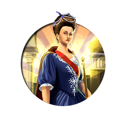
Maria I
Civilization:
Unique Traits:
Mare Clausum: For each active Trade Route, receive +4 💰 Gold, ⚗️ Science, and Great Admiral () or Great General () Points, scaling with Era.
History
In a dynasty characterized by tragedy and madness for centuries, Maria I is undoubtedly the best known to the world, and perhaps the best beloved by the Portuguese people. As Queen of Portugal, Brazil, and the Algarves, she was known as Maria the Pious while ruling in Portugal, or Maria the Mad after fleeing to Brazil in 1807 from Napoleon's invasion. Incapacitated by her growing madness, Maria I died in Rio de Janeiro in 1816.
Early Life
Maria, raised and educated at court with her 3 younger sisters, devoted her greatest attention to religion and theology. Enthralled by the ritual and clarity of faith, Maria spent long hours in prayer and devotions. Accounts by court visitors note that she was graceful although tall, with sharp features but a warm smile. However, as early as her teens, she suffered from bouts of melancholy and nervous agitation, which occasionally confined her to her bed.
As Maria grew to adulthood, she wed Pedro III, the younger brother of her father. Despite their age difference - Maria was 25 and Pedro 42 at the time of their wedding - the marriage was stable and happy. Both were very pious, attending mass several times a day together. Pedro had his palace at Queluz torn down and constructed a new one in the style of Versailles, which Maria admired; the couple took up residence there in 1764 AD. Maria would over the years give birth to seven children, although only three survived to adulthood.
As Maria grew to adulthood, she wed Pedro III, the younger brother of her father. Despite their age difference - Maria was 25 and Pedro 42 at the time of their wedding - the marriage was stable and happy. Both were very pious, attending mass several times a day together. Pedro had his palace at Queluz torn down and constructed a new one in the style of Versailles, which Maria admired; the couple took up residence there in 1764 AD. Maria would over the years give birth to seven children, although only three survived to adulthood.
Accession
In 1776 AD, the king Jose I suffered a stroke, dying in February 1777. Following the earthquake and tidal wave that had devastated Lisbon and Portugal's coast in 1755, and an assassination attempt in 1778, Jose had increasingly left the governing of the nation in the ruthless hands of his secretary of state, the Marquess of Pombal, who's methods of reform were brutal and came at the cost of civil liberties and personal freedoms. Maria's first act upon coming to the throne was to dismiss him from the government, primarily because of his unstinting anti-Jesuit policies.
The next few years saw Portugal gradually embroiled in the affairs of Europe. In the face of the French Revolution an alliance with Great Britain was forged. In July 1782, Portugal joined the League of Armed Neutrality hoping to remain outside the spreading conflict of the Napoleonic Wars. Maria and her consort spent these years as patrons of the arts, especially interested in promoting religious works and in construction projects.
The next few years saw Portugal gradually embroiled in the affairs of Europe. In the face of the French Revolution an alliance with Great Britain was forged. In July 1782, Portugal joined the League of Armed Neutrality hoping to remain outside the spreading conflict of the Napoleonic Wars. Maria and her consort spent these years as patrons of the arts, especially interested in promoting religious works and in construction projects.
Madness
The queen had long suffered from religious mania and melancholia, but her mental state was first acknowledged in early 1786 AD when she had to be carried back to her apartments in a fit of delirium after a religious ceremony. Her state worsened when later that year her husband died after a short illness, followed two years later by her eldest son, and her only surviving daughter Mariana. That same year, the queen's long-time confessor also passed away. The cumulative effect of these events was to topple Maria I into complete madness.
In 1792, the council of ministers concluded that their queen was insane, and requested that her only surviving son, Joao, "assume the direction of public affairs." In 1799, he would take on the mantle of Prince Regent of Portugal as his mother was unfit to rule. Maria I was confined to the palace, occasionally roaming the corridors wailing "Ai Jesus" and calling for her dead husband and children.
In 1792, the council of ministers concluded that their queen was insane, and requested that her only surviving son, Joao, "assume the direction of public affairs." In 1799, he would take on the mantle of Prince Regent of Portugal as his mother was unfit to rule. Maria I was confined to the palace, occasionally roaming the corridors wailing "Ai Jesus" and calling for her dead husband and children.
Escape to Brazil
In 1807 AD, the government's refusal to join Napoleon's blockade against Great Britain culminated in a French-Spanish invasion. Unable to resist defeat, Joao, at the urging of the British government, decided to flee with the entire royal family and his ministers to the Portuguese Viceroyalty of Brazil. Although Wellington would liberate Portugal in the Peninsula War, the royal family remained in Brazil for some years afterward.
Maria herself spent most of her remaining life in the Carmo Convent in Rio de Janeiro. During the eight years there, she suffered increasingly from physical ailments, including dysentery and tropical fevers; arthritis and oedema confined her to a wheelchair, and eventually to her bed. When her son or family members came to visit, she would repeatedly scream, "I want to die!" At last, at the age of 81, her tragic life ended.
Maria herself spent most of her remaining life in the Carmo Convent in Rio de Janeiro. During the eight years there, she suffered increasingly from physical ailments, including dysentery and tropical fevers; arthritis and oedema confined her to a wheelchair, and eventually to her bed. When her son or family members came to visit, she would repeatedly scream, "I want to die!" At last, at the age of 81, her tragic life ended.
Judgment of History
Despite her madness, Maria I is a greatly admired figure in both Portugal and Brazil, due to the changes and events that took place during her reign. In Portugal, she is now regarded as a strong female figure in its long history. Her place in the culture of that land is best displayed in the Queluz National Palace, a baroque masterpiece that she helped conceive. In Brazil, she is thought to be one of the key figures in the eventual independence of that nation. While her personal life may have been lamentable, her historical legacy is not.
Maria Theresa
Civilization:
Unique Traits:
Habsburg Diplomacy: +50% rewards from Quests. May arrange 💍 Marriages to City-States with 💰 Gold after Allying for 5 Turns. Gain 200 Resting Influence with 💍 Married City-States while at peace.
History
During the 18th century, the Holy Roman Empire and the powerful Habsburg Monarchy of Austria were led by the ever-persistent Maria Theresa, who defied the European powers opposed to her reign and bravely served the subjects of her kingdom. In nearly 650 years of Habsburg rule, Maria Theresa was the first and only female to ever lead the empire, and she proved to be among the most successful rulers in their history.
Early Reign
Maria Theresa's rise to the Habsburg throne was fraught with controversy and turmoil from the onset. Her father, King Charles VI, had no sons, and as such had no rightful heir to the throne according to the existing laws of succession. In an effort to maintain his royal line and ensure that Theresa would rule as queen, Charles issued the Pragmatic Sanction of 1713, declaring his intention to pass the crown on to his daughter. Although the edict was recognized for a time, following Charles's death in 1740 and Theresa's coronation, forces led by France and Prussia challenged her right to the throne and initiated the War of Austrian Succession. Backed by Great Britain, Theresa was adamant in her resistance to surrendering the throne or Austrian territory to her rivals. Unfortunately, her father had left the empire in an unstable position, with a depleted treasury making it impossible to bolster her undersized, poorly equipped military. After nearly eight years of fighting, during which time Austria suffered several crushing defeats and was forced to cede the mineral-rich territory of Silesia to Prussia, the Treaty of Aix-La-Chapelle finally ended the war. Although Theresa was now secure in her rule of the Habsburg dominion, Austria's rivalry with Prussia was only in its infancy, with a greater fight still to come.
Holy Roman Empress
Traditionally, the ruler of the Austrian Habsburg domain was also the ruler of the Holy Roman Empire, a designation bestowed by the Pope. However, as was the case with her ascension to the Habsburg throne, laws of the time dictated that a woman could not be elected Holy Roman Empress. To circumvent this regulation, Maria Theresa named her husband, Francis Steven, as co-ruler of her lands in Austria and Hungary, allowing him to be named Holy Roman Emperor and she his empress consort. Although this relationship as a consort would normally imply a lesser position of authority, Francis Steven bowed to the wisdom and guidance of Maria Theresa, who handled all matters of rule personally.
The Seven Years War
Renewed hostilities between Austria and Prussia led to the outbreak of the Seven Years War in 1756, with shifting alliances weighing heavily on the outcome. In an event known as the Diplomatic Revolution, Great Britain now allied with Prussia, while France shifted its allegiance to Austria. This reverse of alliances came about as national priorities shifted, with Britain viewing the powerful Kingdom of Prussia as the stronger ally against its traditional rival in France. The territory of Silesia was once again the primary focus of the conflict, with Maria Theresa desperately trying to regain the valuable region lost during the war for succession. Despite their best efforts, Austria again failed to reclaim Silesia, with the Treaty of Hubertusburg in 1763 marking the end of the war and reaffirming Prussian control of the territory.
State Reforms
Austria's coffers had long been depleted by the time Maria Theresa was crowned, her father having focused much of his energy on securing the Pragmatic Sanction rather than internal affairs of the state. As such, one of Maria's first objectives was to increase Austria's revenue stream through taxation and balanced expenditures. Taxing both the nobility and members of the clergy, who had been previously been exempt from taxation, Maria's efforts quickly improved the faltering economy of Austria.
With economic security in place, Maria directed her Supreme Chancellor, Count Friedrich Wilhelm von Haugwitz, to enlarge and modernize the army of Austria. Creating a standing army of over 100,000 men, Haugwitz developed training standards and codified military regulations to increase the professionalism of Austria's armed forces.
Maria is also known for strict educational reforms, enacted by force, requiring all children between the ages of six and twelve to attend school, regardless of gender or upbringing.
With economic security in place, Maria directed her Supreme Chancellor, Count Friedrich Wilhelm von Haugwitz, to enlarge and modernize the army of Austria. Creating a standing army of over 100,000 men, Haugwitz developed training standards and codified military regulations to increase the professionalism of Austria's armed forces.
Maria is also known for strict educational reforms, enacted by force, requiring all children between the ages of six and twelve to attend school, regardless of gender or upbringing.
Maternal Instincts
After struggling with the conflicts surrounding her own ascension to the throne, Maria Theresa notably gave birth to 16 children in just under 20 years. Making a clear effort to secure her family lineage through a suitable male heir, Theresa's fourth child, Joseph, would eventually become the future king and Holy Roman Emperor. Perhaps the most famous of her children, Marie Antonia, later known as Marie Antoinette, went on to become Queen of France in 1774 and was executed for treason during the French Revolution.
Judgment of History
Maria Theresa is viewed today as a wise, contemplative leader, whose conservative policies and careful judgment improved the welfare of the Austrian people as well as those within the Habsburg dominion. Although she inherited the throne during a tumultuous period, with little personal experience in governing, she managed to secure her crown and assertively rule the Habsburg monarchy for 40 years.
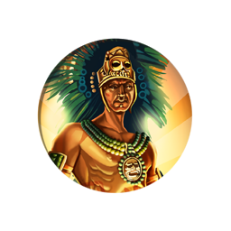
Montezuma
Civilization:
Unique Traits:
Sacrificial Captives: Killing enemy Units grants 150% of their ⚔️ Strength as 💰 Gold and 🕊️ Faith. When you win a war (War Score of 25+), a 🌟 Golden Age begins.
History
A mighty warrior and leader, Montezuma I helped propel the Aztec nation to greatness and glory. He should not be confused with his unfortunate grandson Montezuma II, who watched helplessly as his empire was dismantled by Spanish Conquistadors.
Early Life
Montezuma (whose name means "he frowns like a lord") came from a royal family. His father Huitzilihuitl was the second Aztec "tlatoani" or emperor, and his mother, Miahuaxihuitl, was the daughter of the ruler of the city of Cuauhnahuac. Following his father's death, Montezuma's uncle Itzcoatl was elected. Montezuma's older brother Tlacaelel was one of Itzcoatl's closest advisors, while Montezuma served as a general in the Aztec army.
Following Itzcoatl's death in 1440, Montezuma was elected emperor. Tlacaelel did not seem at all unhappy about being bypassed (perhaps he thought he'd live longer if he didn't get the crown), and by all accounts he served his brother faithfully. Montezuma's coronation was a huge ceremony involving the sacrifice of many prisoners.
Following Itzcoatl's death in 1440, Montezuma was elected emperor. Tlacaelel did not seem at all unhappy about being bypassed (perhaps he thought he'd live longer if he didn't get the crown), and by all accounts he served his brother faithfully. Montezuma's coronation was a huge ceremony involving the sacrifice of many prisoners.
A Modest Lifestyle
Despite the opulence of his political title, it appears that Montezuma himself lived modestly, in a simple palace with "just a few wives." When not engaged in religious duties or matters of state, he spent much of his time in consultation with his friends and advisors.
Domestic Policy
During his reign Montezuma and his brother Tlacaelel worked to improve the Aztec city Tenochtitlan. Among other improvements they constructed an aqueduct system which brought a good deal of fresh water into the city. Of course as Tenochtitlan grew, in addition to fresh water it required ever greater amounts of food to sustain its hungry population. Since Central America lacked draft animals, every single morsel of food had to be transported to the city on somebody's back. Montezuma's government employed state inspectors to ensure that every piece of arable land within walking distance was planted and maintained. He also ordered the construction of a dike system to alleviate flooding and to provide more farmland.
Montezuma and his brother also constructed many temples in and around the city, including a new temple to Huitzilopochtli, the god of battle. The temple of Huitzilopochtli was consecrated in 1455 with the sacrifice of a large number of Huaxtec prisoners of war.
Montezuma and his brother also constructed many temples in and around the city, including a new temple to Huitzilopochtli, the god of battle. The temple of Huitzilopochtli was consecrated in 1455 with the sacrifice of a large number of Huaxtec prisoners of war.
Sumptuary Laws
Probably at the urging of his brother, Tlacaelel, Montezuma instituted Sumptuary Laws which codified and reinforced the already-stratified Aztec class system. A person's station in life determined what he or she could wear and how he or she could speak. The poor were not allowed to wear cotton cloth, sandals or any clothing that extended below the knee. Only the nobility could live in homes of greater than one story. Crimes were punished by slavery, the lowest of all classes, or by being sacrificed.
Religious Changes
During Montezuma's rule, his brother Tlacaelel worked on reforming the Aztec religion. He rewrote the Aztec religious texts, ordering the destruction of many others which did not agree with his interpretations of the Aztec history and religion. Under Tlacaelel the Aztec religion became more militaristic, demanding ever more sacrifices of captured enemy soldiers. The need for prisoners for sacrifice would over time become one of the driving forces behind Aztec foreign policy.
Foreign Policy
As ruler Montezuma sought to strengthen the "Triple Alliance" between the Central Mexican city-states of Tenochtitlan, Texcoco and Tlacopan. He also expanded the Aztec empire by conquering Panuco, the Totonacs, Coatzocoalcos and the Chalca. Some theorize that he conquered the tribes for their tribute, hoping to ensure a continuous food supply for Tenochtitlan, which despite his best efforts continued to suffer from periodic famine. Another theory is that he did so to feed the Aztec religion's ever-chronic need for prisoners of war to sacrifice. Yet another theory is that he did it because that's what Aztec Emperors did - conquer stuff. The answer is likely to be something of a combination of all three theories.
Death
Montezuma died in 1469. He was succeeded by his 19-year-old cousin, Axayacatl, who would be the father of Montezuma I's namesake, the unfortunate Montezuma II who would lose everything to Spain.
Judgment of History
Generally, Montezuma was a successful ruler. He expanded his empire, personally led his armies to victory, and worked hard to improve the lot of his people. He certainly was a bloody man, personally sacrificing thousands of prisoners to his thirsty gods. But his religion said such barbarity was necessary - blood was required to ensure that the sun would rise, the crops would grow, and the Aztec nation would continue to prosper.
Could he have cut back on the ritualized murder? Possibly. But the thought might never have occurred to him - or anybody else in the area at the time. It's useful to remember that the more "enlightened" people of Europe were busily burning heretics alive at roughly the same time. And while that doesn't in any way make Montezuma's actions any better, at least it puts them in some kind of context.
Could he have cut back on the ritualized murder? Possibly. But the thought might never have occurred to him - or anybody else in the area at the time. It's useful to remember that the more "enlightened" people of Europe were busily burning heretics alive at roughly the same time. And while that doesn't in any way make Montezuma's actions any better, at least it puts them in some kind of context.
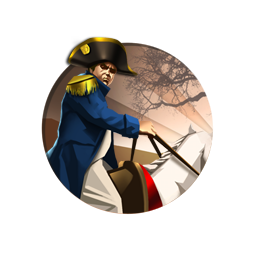
Napoleon
Civilization:
Unique Traits:
La Grande Armée: Melee and Gunpowder Units may enlist defeated enemies, which do not consume Military Supply. +1 🎵 Culture and 🗿 Tourism in every City for every 10 Military Units. +15% Military Supply from Population.
History
It is virtually impossible to overstate the military genius of Napoleon Bonaparte.
Early Life
Napoleon Bonaparte was born on the island of Corsica, where he entered a military academy at the age of ten. In school he displayed a great aptitude for mathematics, history, and geography, as well as a total indifference to literature and the humanities. At fourteen he was commissioned as a sub-lieutenant in an artillery regiment. When the French revolution broke out, Napoleon sided with the Revolutionaries and was appointed lieutenant-colonel of artillery, where he quickly made a name for himself as a successful commander.
Rise to Power
Early on Napoleon displayed both his military brilliance and his ability to navigate the perilous political landscape of Revolutionary France, where one false step could cost you your head - literally. By 1794 he was a brigadier-general, and by 1795 he was appointed command of the French Army of the Interior. He was 25 years of age. Over the next few years Napoleon led French armies to major victories over various continental foes, including the extremely powerful Austrians.
Capitalizing on his success and his growing popularity with the citizens and the army, in 1800 he overthrew the government and appointed himself "First Consul." Five years later he would crown himself "Emperor and Consul for Life," displaying his fine contempt for the democratic roots of the Revolution that brought him to power.
Capitalizing on his success and his growing popularity with the citizens and the army, in 1800 he overthrew the government and appointed himself "First Consul." Five years later he would crown himself "Emperor and Consul for Life," displaying his fine contempt for the democratic roots of the Revolution that brought him to power.
Vive l'Empereur!
An exceptional administrator, Napoleon rapidly reorganized the government, repealed the more radical and violent laws of the Revolution, and reopened the churches, cementing his popularity with the people of France. However, France was still at war with most of Europe, and Napoleon once again took to the battlefields, where he won stunning victories against Austria, causing that country and England to make peace.
England remained nervous of France's imperial intentions, and war resumed in 1803. Napoleon found himself facing a daunting alliance that included England, Austria, Russia and Sweden. Acting with amazing speed and cunning, Napoleon used his "interior lines" to concentrate his forces against the dispersed enemy. He rapidly marched across Europe, capturing the capital of Austria and then crushing the Russian forces at the battle of Austerlitz. Austria sued for peace once again. For several years Napoleon would defeat every foe that came against him. He crushed the Prussians, the Spanish, and the Austrians yet again. However, Russia and England remained undefeated.
England remained nervous of France's imperial intentions, and war resumed in 1803. Napoleon found himself facing a daunting alliance that included England, Austria, Russia and Sweden. Acting with amazing speed and cunning, Napoleon used his "interior lines" to concentrate his forces against the dispersed enemy. He rapidly marched across Europe, capturing the capital of Austria and then crushing the Russian forces at the battle of Austerlitz. Austria sued for peace once again. For several years Napoleon would defeat every foe that came against him. He crushed the Prussians, the Spanish, and the Austrians yet again. However, Russia and England remained undefeated.
The Russian Campaign
Eventually Napoleon decided that he would never be safe in Europe as long as Russia, aided by the perfidious English, was on his flank. With England secure behind the Channel and its superb navy, he had little choice but to attack Russia, the only foe in the alliance his armies could reach. In 1812 he led half a million men to attack Moscow. The Russian forces retreated before his advance, taking or burning anything that might be of use to the invaders, while in the rear Cossack raiders destroyed Napoleon's supply lines. Bonaparte did reach and capture Moscow, but once again the Russians had removed or burnt anything there that might feed his men, and he was forced to retreat, fighting the Russian troops and the even more deadly Russian winter mile after bitter mile. By the end of the campaign Napoleon had lost 96% of his army.
Napoleon's Fall
Upon returning to Paris, Napoleon immediately recruited another army of 350,000, but his image of invulnerability was gone, and all Europe rose against him. Prussia, Russia and Austria allied against him, and England threw more troops into contested Spain. Though Napoleon was to again win famous victories, his enemies continued their relentless attacks. Eventually the allies drove their way into Paris, and Napoleon abdicated. For his trouble he was given rulership of the island of Elba, along with an income of six million francs, to be paid by France.
Later he would return to France and try to regain power one last time, but he was finally and irrevocably defeated by an English and Prussian army at Waterloo in Belgium. This time he was confined for life at the island of Sainte-Helene, a thousand miles from the coast of Africa. He died there in 1821.
Later he would return to France and try to regain power one last time, but he was finally and irrevocably defeated by an English and Prussian army at Waterloo in Belgium. This time he was confined for life at the island of Sainte-Helene, a thousand miles from the coast of Africa. He died there in 1821.
Verdict of History
Napoleon was one of the most brilliant generals of all time. He moved his troops with astounding rapidity, and he always knew exactly where to strike in order to cause the most damage. Domestically he turned out to be a decent, imaginative ruler and France flourished under his control (until his endless wars sapped her strength and will to fight). An Army general to his core, he never was able to create a navy able to seriously challenge England's dominance over the oceans.
In the end, he just couldn't beat everybody.
In the end, he just couldn't beat everybody.
Nebuchadnezzar II
Civilization:
Unique Traits:
Ingenuity: Receive a Free Great Scientist when you discover Writing, and Great Scientists are earned 50% faster than normal. Investing Gold in Buildings reduces their 🔨 Production cost by an additional 15%.
History
Nebuchadnezzar II was king of Babylon for some 43 years (605-562 BC). He is best known for his military conquests and his restoration of the city of Babylon. Nebuchadnezzar II also figures prominently in the Bible for the conquest of Judah and the forced relocation of many Israelites to Babylon.
Early Years
Nebuchadnezzar (which is sometimes spelled "Nebuchadrezzar") was the oldest son of Nabopolassar, the founder of the Chaldean empire, who had done much to make Babylon into an imperial power. He served under his father in several military campaigns, and in 606 BC he commanded an army which destroyed an Egyptian army at Carchemish, securing for Babylon the control of Syria.
Upon Assuming Power
Upon his father's death in 605, Nebuchadnezzar returned to Babylon and assumed the throne. He resumed campaigning shortly thereafter, when he conquered a number of smaller states including Judah. He continued his conquests until 600, when, possibly over-extended, he lost badly to an Egyptian army. Taking advantage of Babylon's disarray, Judah and several other subject states revolted.
It took Nebuchadnezzar some two years to regroup and rebuild his armies, but by 598 he was on the march again, and in 597 he occupied Jerusalem, deposing the Judaian king Jehoiachin and transporting him and other prominent citizens to captivity in Babylon (most likely as hostages against further Jewish rebellions). He continued his expansionist military campaigns for the rest of his reign, clashing more or less successfully with the other powers in the Eastern Mediterranean, Asia Minor and the Middle East.
It took Nebuchadnezzar some two years to regroup and rebuild his armies, but by 598 he was on the march again, and in 597 he occupied Jerusalem, deposing the Judaian king Jehoiachin and transporting him and other prominent citizens to captivity in Babylon (most likely as hostages against further Jewish rebellions). He continued his expansionist military campaigns for the rest of his reign, clashing more or less successfully with the other powers in the Eastern Mediterranean, Asia Minor and the Middle East.
Diplomacy
Not just a warlord, Nebuchadnezzar was also active diplomatically, sending and receiving ambassadors from nearby kingdoms. He is known to have sent an ambassador to mediate in a conflict between the Medes and the Lydians in Asia Minor.
Domestic Policies
When not campaigning, Nebuchadnezzar spent much of his energy in rebuilding Babylon and improving its fortifications. He is known to have rebuilt many temples, paved roads, cut canals, and constructed a moat and wall around the city. He is also credited with the construction of the Hanging Gardens of Babylon, which according to legend he built to please his wife who was pining for the hills of her home in Media.
Judgment of History
Despite his capture of Judah and relocation of the Israelites, Nebuchadnezzar appears in a mostly favorable light in the Bible. He is credited for protecting Jewish prophets and citizens from persecution; the prophet Jeremiah apparently believed that Nebuchadnezzar was God's appointed instrument of vengeance against evil-doers.
Nebuchadnezzar II died in Babylon in 562 BC. He is remembered as a successful military leader who increased the size of his empire and who strengthened and improved the capital city of Babylon, and who treated his subject people well. By all measures he earned his title of "Nebuchadnezzar the Great."
Nebuchadnezzar II Factoid
Nebuchadnezzar's name translates roughly as "Oh god Nabu, preserve my firstborn son" in the Akkadian language.
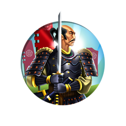
Oda Nobunaga
Civilization:
Unique Traits:
Shogunate: +1 🎵 Culture and 🕊️ Faith from Defense Buildings. When a Great Admiral or Great General is born, gain 50% progress toward a Great Artist, Writer, and Musician in your 🏛️ Capital.
History
Oda Nobunaga was a 16th century Japanese warlord. Both a brilliant general and a cunning politician - as well as an early adopter of new technology - Nobunaga fought and backstabbed his way to domination over nearly half of feudal Japan. His two lieutenants, Toyotomi Hideyoshi and Tokugawa Ieyasu, would complete the job after his death, reunifying Japan for the first time in over a century.
Early History
Oda Nobunaga was born in 1534 AD, well into the "Sengoku" or Warring States period in Japanese history. During this period feudal Japan was divided into provinces run by powerful "daimyos" (territorial lords), while a weak shogun ruled in the name of a still-weaker Emperor. The Sengoku period saw an almost complete overthrow of the established order, with local lords overthrowing their daimyos, retainers overthrowing their lords, and inferior family branches fighting each other for dominance. It was a remarkably brutal period in Japanese history, and the nobility had to be smart, powerful and lucky to survive.
Nobunaga was born the son of a wealthy government official in the small and unimportant Owari province. Following his father's death in 1551 he inherited his father's title, wealth and military vassals. He was all of 17 at the time, and by all accounts was a wild and unruly child. According to legend Nobunaga acted so badly at his father's funeral that one of his friends and retainers committed seppuku (ritual suicide) in humiliation. Shocked and sobered by his retainer's death, Nobunaga began to take his position and obligations seriously.
Nobunaga was born the son of a wealthy government official in the small and unimportant Owari province. Following his father's death in 1551 he inherited his father's title, wealth and military vassals. He was all of 17 at the time, and by all accounts was a wild and unruly child. According to legend Nobunaga acted so badly at his father's funeral that one of his friends and retainers committed seppuku (ritual suicide) in humiliation. Shocked and sobered by his retainer's death, Nobunaga began to take his position and obligations seriously.
Rise to Power
Over the next ten years, Nobunaga rose to dominate Owari province, systematically co-opting or destroying anyone who stood in his way. The series of alliances, battles, betrayals and murders Nobunaga engaged in to achieve victory is bafflingly complex, rivaling the most intricate plot of a South American "telenovela" (soap opera). Here's how it went:
At the time of his father's death, the Oda clan was divided into many factions. Some favored Nobunaga as the legitimate heir, while others favored his younger (and less wild) brother, Nobuyuki. Meanwhile, his late father's brother, Nobutomo, used his position as deputy to the powerless Owari province's "shugo," (military governor) Shiba Yoshimune, to advance his claim to leadership of the Oda clan. But when he learned that the shugo secretly favored Nobunaga's claim, Nobutomo had Shiba Yoshimune murdered.
Meanwhile, Nobunaga convinced another of his father's brothers, Oda Nobumitsu, to turn on Nobutomo (who, we must remember, had just murdered Owari shugo Shiba). Nobunaga and his Uncle Nobumitsu attacked and killed Uncle Nobutomo in Kiyosu Castle. By destroying his uncle, Nobunaga gained control over Owari province's new shugo, Shiba Yoshikane (Shiba Yoshimune's heir). He used Shiba Yoshimune to gain alliances with the Imagawa and Kira clans, who also owed allegiance to Shiba.
Nobunaga then fielded an army to Mino Province to aid Saito Dosan against his rebellious son, Saito Yoshitatsu, but he was unsuccessful and Dosan fell.
In 1556 Nobunaga's brother, Nobuyuki (remember him?) rebelled with the aid of Shibata Katsuie and Hayashi Hidesada. Nobunaga defeated the conspirators at the Battle of Ino. Showing unusual mercy, he pardoned his brother and his allies. His brother repaid him by immediately planning another revolt, but he was betrayed by his onetime ally Shibata Katsuie, who informed Nobunaga of his plans. Nobunaga then murdered his brother.
And so on. By 1559 Nobunaga had destroyed all of his rivals and was undisputed master of Owari Province, though he kept Shiba Yoshikane in place as a puppet shugo (at least until he discovered that Yoshikane was secretly plotting against him with the Kira and Imagawa clans, at which point Nobunaga removed him from his position).
At the time of his father's death, the Oda clan was divided into many factions. Some favored Nobunaga as the legitimate heir, while others favored his younger (and less wild) brother, Nobuyuki. Meanwhile, his late father's brother, Nobutomo, used his position as deputy to the powerless Owari province's "shugo," (military governor) Shiba Yoshimune, to advance his claim to leadership of the Oda clan. But when he learned that the shugo secretly favored Nobunaga's claim, Nobutomo had Shiba Yoshimune murdered.
Meanwhile, Nobunaga convinced another of his father's brothers, Oda Nobumitsu, to turn on Nobutomo (who, we must remember, had just murdered Owari shugo Shiba). Nobunaga and his Uncle Nobumitsu attacked and killed Uncle Nobutomo in Kiyosu Castle. By destroying his uncle, Nobunaga gained control over Owari province's new shugo, Shiba Yoshikane (Shiba Yoshimune's heir). He used Shiba Yoshimune to gain alliances with the Imagawa and Kira clans, who also owed allegiance to Shiba.
Nobunaga then fielded an army to Mino Province to aid Saito Dosan against his rebellious son, Saito Yoshitatsu, but he was unsuccessful and Dosan fell.
In 1556 Nobunaga's brother, Nobuyuki (remember him?) rebelled with the aid of Shibata Katsuie and Hayashi Hidesada. Nobunaga defeated the conspirators at the Battle of Ino. Showing unusual mercy, he pardoned his brother and his allies. His brother repaid him by immediately planning another revolt, but he was betrayed by his onetime ally Shibata Katsuie, who informed Nobunaga of his plans. Nobunaga then murdered his brother.
And so on. By 1559 Nobunaga had destroyed all of his rivals and was undisputed master of Owari Province, though he kept Shiba Yoshikane in place as a puppet shugo (at least until he discovered that Yoshikane was secretly plotting against him with the Kira and Imagawa clans, at which point Nobunaga removed him from his position).
Further Conquests
Having secured Owari province, Nobunaga began to expand his power across Japan. In 1560 he led a laughably small army against a far superior force which was on its way to Kyoto to overthrow the weak Ashikaga Shogun, achieving a shocking victory against brutally long odds.
One key to Nobunaga's military success was his early adoption of the new weapons which were beginning to appear in Japan at the time, brought in by European traders. He was one of the first daimyos to organize entire musket units, giving him a great advantage against his more backwards foes. He was also a gifted manager, making full use of the agricultural and mercantile wealth of Owari to support his war efforts.
In 1568 Nobunaga marched on Kyoto, putting up his ally Ashikaga Yoshiaki as his puppet Shogun. By 1573 the two men had fallen out, and Nobunaga deposed Ashikaga, at last ending the long Ashikaga Shogunate.
Nobunaga consolidated his hold on Japan by attacking various politically powerful Buddhist sects. The monks put up incredibly stubborn resistance, some holding out for more than a decade. Nobunaga distributed the captured religious property to various samurai and nobility, further earning their loyalty. Nobunaga was friendly with the European Jesuit missionaries who appeared in Japan in ever larger numbers (probably because they had no political power with which to threaten him). He did not convert to Christianity, however.
One key to Nobunaga's military success was his early adoption of the new weapons which were beginning to appear in Japan at the time, brought in by European traders. He was one of the first daimyos to organize entire musket units, giving him a great advantage against his more backwards foes. He was also a gifted manager, making full use of the agricultural and mercantile wealth of Owari to support his war efforts.
In 1568 Nobunaga marched on Kyoto, putting up his ally Ashikaga Yoshiaki as his puppet Shogun. By 1573 the two men had fallen out, and Nobunaga deposed Ashikaga, at last ending the long Ashikaga Shogunate.
Nobunaga consolidated his hold on Japan by attacking various politically powerful Buddhist sects. The monks put up incredibly stubborn resistance, some holding out for more than a decade. Nobunaga distributed the captured religious property to various samurai and nobility, further earning their loyalty. Nobunaga was friendly with the European Jesuit missionaries who appeared in Japan in ever larger numbers (probably because they had no political power with which to threaten him). He did not convert to Christianity, however.
Death of Nobunaga
By 1582 Nobunaga had established firm control over central Japan and had begun attempting to expand his power westward. However, during a military campaign he was betrayed by a subordinate at Honno-ji temple and was forced to commit seppuku. His murderer survived him by just eleven days before being defeated by Nobunaga's loyal lieutenants, who would go on to complete the unification of Japan he so ably started.
Verdict of History
Oda Nobunaga is generally agreed to be one of the three greatest leaders in Japanese history. His two lieutenants, Toyotomi Hideyoshi and Tokugawa Ieyasu, are the other two. By 1590 Hideyoshi had completed the conquest of Japan, and following his death Tokugawa Ieyasu would come into power, creating the Tokugawa Shogunate which would rule Japan for centuries to come. Together these three men created the modern state of Japan.
Nobunaga was a brutal man in a brutal time. But by helping to unify Japan he brought an end to the brutal wars that had been ravaging his country for more than a century.
Nobunaga was a brutal man in a brutal time. But by helping to unify Japan he brought an end to the brutal wars that had been ravaging his country for more than a century.
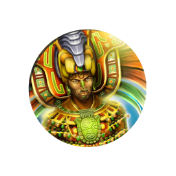
Pacal
Civilization:
Unique Traits:
The Long Count: After researching Mathematics, receive a bonus ⭐ Great Person at the end of every Maya Long Count cycle (every 394 years). Each bonus ⭐ Great Person can only be chosen once.
History
Commonly known as "Pacal the Great," the Mayan king K'inich Janaab' Pakal is perhaps the most renowned of all Mayan rulers. Ascending to the throne at the tender age of 12 and ruling for nearly 70 years thereafter, Pacal inherited the city-state of Palenque during a time of great turmoil. Although the historical details surrounding his reign are often hazy, Pacal is best known for reinvigorating the ravaged city, which had been sacked repeatedly during the rule of his predecessors. Leading a vast construction effort, Pacal oversaw the creation of immense and remarkably detailed structures throughout his domain. Most famously, Pacal's burial tomb, known as the Temple of Inscriptions, features an intricately carved history of the king's life presented in Mayan glyphs. With an astonishing number of well preserved inscriptions, the temple has given contemporary archaeologists crucial insight into the once lost history and culture of this great Mayan city.
Early Life
Pacal's mother, Lady Zac-Kuk, was one of few women to ever rule independently over a Mayan city-state. Typically the crown was only passed on to the son of a king, but in the absence of a suitable male heir, leadership was bestowed upon Lady Zac-Kuk, who asserted her right to the throne as the granddaughter of a past queen. Ruling for 3 years until Pacal came of age, this unusual deviation in the traditionally patriarchal society led directly to the later efforts of Pacal to legitimize his reign and the rule of his family line.
When Pacal did take the throne in 615, the city of Palenque was in a tumultuous position, having been the target of frequent incursions from the neighboring kingdom of Calakmul in the preceding years. Making a clear statement to Palenque's rivals early in his reign, Pacal sent his own raiding parties against the Calakmul, capturing several of their leaders and sacrificing them in retribution for the attacks.
When Pacal did take the throne in 615, the city of Palenque was in a tumultuous position, having been the target of frequent incursions from the neighboring kingdom of Calakmul in the preceding years. Making a clear statement to Palenque's rivals early in his reign, Pacal sent his own raiding parties against the Calakmul, capturing several of their leaders and sacrificing them in retribution for the attacks.
Rejuvenation of Palenque
With the intention of both returning Palenque to its former glory, and also establishing the legitimacy of his rule, Pacal initiated the construction of grand monuments throughout the city, with reliefs extolling the virtues of his family line. A number of impressive structures were built, including the Temple of the Count and the large central complex known simply as "The Palace," featuring a peculiar four-story tower unlike any seen throughout the Mayan realm. Yet, of the many edifices assembled during his reign, none surpassed the Temple of Inscriptions. Built to serve as Pacal's burial tomb, construction began on the stepped pyramid during the final years of his life and continued under his successor, Chan Bahlum II.
Featuring intricate carvings and hieroglyphic text, the temple is best known for housing Pacal's ornate sarcophagus. First discovered by Mexican archeologists in 1952, the walls of Pacal's tomb in the lower level of the temple contain the longest set of Mayan glyphs ever found. Although still the subject of interpretation today, the glyphs appear to chronicle the events of Pacal's life leading up to his death and the ascension of his heir.
The sarcophagus itself features an elaborately detailed stone lid with glyphs representing the planets and several constellations. These celestial elements in particular have contributed to controversial theories regarding the involvement of extraterrestrials in the Mayan culture, similar to theories surrounding the ancient Egyptian pyramids. While most esteemed researchers believe the sarcophagus depicts Pacal's journey to the underworld, other sources interpret this imagery as Pacal at the controls of a spaceship preparing for launch. Inside the sarcophagus, archaeologists discovered the skeletal remains of Pacal, wearing a finely crafted jade mosaic in the form of a mask.
Featuring intricate carvings and hieroglyphic text, the temple is best known for housing Pacal's ornate sarcophagus. First discovered by Mexican archeologists in 1952, the walls of Pacal's tomb in the lower level of the temple contain the longest set of Mayan glyphs ever found. Although still the subject of interpretation today, the glyphs appear to chronicle the events of Pacal's life leading up to his death and the ascension of his heir.
The sarcophagus itself features an elaborately detailed stone lid with glyphs representing the planets and several constellations. These celestial elements in particular have contributed to controversial theories regarding the involvement of extraterrestrials in the Mayan culture, similar to theories surrounding the ancient Egyptian pyramids. While most esteemed researchers believe the sarcophagus depicts Pacal's journey to the underworld, other sources interpret this imagery as Pacal at the controls of a spaceship preparing for launch. Inside the sarcophagus, archaeologists discovered the skeletal remains of Pacal, wearing a finely crafted jade mosaic in the form of a mask.
Judgment of History
Pacal the Great is considered by historians to be one of the most revered leaders in Mayan history, based on the remarkable monuments and sculptural creations found throughout Palenque. In his time as king, nearly 1000 structures were assembled in the city, requiring stones that weighed up to 15 tons. Although his past is still being uncovered today, we can say with certainty that his efforts to restore the kingdom of Palenque led to the assembly of some of the greatest monuments and art ever created by the Maya.
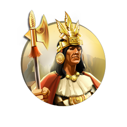
Pachacuti
Civilization:
Unique Traits:
Great Andean Road: Units can cross Mountains and ignore terrain costs when entering any Hill or Mountain. Cities, Roads, and Railroads may be built on Mountains. Mountains produce +1 🔨 Production, 💰 Gold, and ⚗️ Science when worked, scaling with Era.
History
Pachacuti was the ninth ruler of the Kingdom of Cusco, who during his reign expanded the tiny kingdom into an expansive empire - Tawantinsuyu. Pachacuti's Incan Empire stretched from modern-day Chile to Ecuador, including most of Peru, Bolivia, and northern Argentina, and laid the foundation for an even larger Incan Empire to come.
Ascension to the Throne
Pachacuti was the son of the Inca Virococha, second in line for the throne after his older brother Urco. The Kingdom of Cusco, at this point, was rather small and continuously threatened by the neighboring Chancas tribe. Not much is known of Pachacuti's early life, that is until he got a chance to impress his father during one of the Chancas' invasions. While his father and brother fled the battlefield, Pachacuti rallied the remaining army and not only won the day, but squashed the Chancas so thoroughly that stories were told of how the very earth itself rose up to fight for him. Pachacuti, "The Earth Shaker", was named the new crown prince and even joint ruler of Cusco.
Creation of an Empire
In 1438, Pachacuti became the sole ruler of the kingdom when his father died, and he launched an almost immediate series of successful invasions into the neighboring kingdoms. His new empire stretched from Ecuador to Chile and became one of the most formidable kingdoms in South America.
While many kingdoms were gained through conquest, Pachacuti also employed a more devious tactic to acquire new regions. First he would send spies out to areas which interested him, gaining intelligence on wealth and military might. If intrigued, he would invite the leaders of these lands to submit peacefully, extolling the virtues of living under Incan rule. Many accepted (not wanting to repeat the fate of the Chancas) and sent their children to live in Cusco, where they were educated under Incan law. They were then indoctrinated and married into the Incan nobility before being sent back to rule their original lands, ensuring the expansion of and continued peace in the empire.
To keep his new land in order, he established four provinces, each controlled by a local governor who ran the day to day affairs. He also created a separate branch of power for both the priesthood and army, forming one of the first systems of checks and balances. Cusco itself was rebuilt to serve as an Imperial Capital City, and each province had its own sector dedicated in the city. During this time he also constructed the famed Machu Picchu, believed now to be a mountain estate built for his personal use.
After his death in 1471, Pachacuti's younger son Tupac became the next emperor of the Incan Empire, the elder Amaru passed over for not being a warrior like his father.
While many kingdoms were gained through conquest, Pachacuti also employed a more devious tactic to acquire new regions. First he would send spies out to areas which interested him, gaining intelligence on wealth and military might. If intrigued, he would invite the leaders of these lands to submit peacefully, extolling the virtues of living under Incan rule. Many accepted (not wanting to repeat the fate of the Chancas) and sent their children to live in Cusco, where they were educated under Incan law. They were then indoctrinated and married into the Incan nobility before being sent back to rule their original lands, ensuring the expansion of and continued peace in the empire.
To keep his new land in order, he established four provinces, each controlled by a local governor who ran the day to day affairs. He also created a separate branch of power for both the priesthood and army, forming one of the first systems of checks and balances. Cusco itself was rebuilt to serve as an Imperial Capital City, and each province had its own sector dedicated in the city. During this time he also constructed the famed Machu Picchu, believed now to be a mountain estate built for his personal use.
After his death in 1471, Pachacuti's younger son Tupac became the next emperor of the Incan Empire, the elder Amaru passed over for not being a warrior like his father.
Judgement of History
Pachacuti is viewed in Peru as a national hero, and many of the monuments he constructed around the empire still stand. While he was well known for his political and military abilities, he wasn't the most benevolent ruler. To ensure the continuation of his empire, he displaced hundreds of thousands of people, relocating them about the empire as he saw fit. Despite any faults, Pachacuti began the Incans largest era of conquest, expanding their empire until it dominated nearly all of the known, inhabited South America.
Pachacuti Factoid
During the 2000 Presidential elections of Peru, candidate Alejandro Toledo was nicknamed Pachacuti.
Pachacuti is sometimes referred to as the Napoleon of the Andes, a testament to his military prowess.
Pachacuti was a poet and author of the Sacred Hymns of the Situa.
Pachacuti is sometimes referred to as the Napoleon of the Andes, a testament to his military prowess.
Pachacuti was a poet and author of the Sacred Hymns of the Situa.
Pedro II
Civilization:
Unique Traits:
Carnival: "We Love the King Day" becomes Carnival, adding -50% Unhappiness from Needs. When a 🌟 Golden Age begins, 30% of 🌟 Golden Age Points convert into 💰 Gold and 🗿 Tourism, and Cities gain 10 turns of Carnival.
History
The first Brazilian monarch to be born in Brazil, during his long reign Pedro II brought stability and progress to his homeland, as well as making it the preeminent power in South America. A calm and serious man, Pedro II jealously guarded his nation's sovereignty, challenging the mighty British Empire and fledgling United States when those countries sought to meddle in the region. He led Brazil in three wars, gaining new territory and prestige, while continuing to focus his attention primarily upon making Brazil a modern state. He encouraged coffee production rather than sugar, and actively supported and sponsored road, railroad, telegraph and undersea cable construction.
Although popular with his people, the Emperor was overthrown in November, 1889 by a group of military leaders wanting to form a republic headed by a dictator. Ever a patriot, when he departed into exile, Pedro II expressed his "ardent wishes for the greatness and prosperity of Brazil."
Although popular with his people, the Emperor was overthrown in November, 1889 by a group of military leaders wanting to form a republic headed by a dictator. Ever a patriot, when he departed into exile, Pedro II expressed his "ardent wishes for the greatness and prosperity of Brazil."
Youth
Born in December 1825 AD in Rio de Janeiro to Pedro I and his Austrian wife Maria Leopoldina, Pedro would be the second and last emperor of Brazil, his reign spanning five decades. Pedro was raised and classically educated by a succession of governesses and guardians. With a grueling regime of daily studies, great care was taken to foster ethical values and a personality quite different from the impulsive and irresponsible character of his father. Being the only male child of Pedro I to survive infancy, he was acclaimed Emperor Dom Pedro II of Brazil on the day of his father's abdication in 1831, although he did not assume his throne until he came of age at 14 in July 1840.
Reign
During his reign, Pedro II would preside over 36 different cabinets, most of which had broad public support. Either directly or through his government, Pedro sponsored the construction of Brazil's first paved road, the "Unido e Industria" linking Rio de Janeiro to Juiz de Fora; the first steam railroad running from Santos to Sao Paulo; the first telephone service in 1877; participation in the laying of the first Brazil-Europe submarine telegraph cable; and the issuing of Brazil's first postal stamp.
Foreign relations were not as positive, as several nations became concerned by Brazil's economic growth and political clout. Two minor incidents led to the British issuing an order to the Royal Navy to seize Brazilian merchant ships as indemnity. Pedro responded by mobilizing his military, causing the British to softened their stance and propose a peaceful settlement in 1863. Almost immediately thereafter a year-long undeclared war with Uruguay - ended with the Brazilian occupation of the towns of Salto and Paisandu - demanded Pedro's attention. No sooner was this conflict settled than Paraguay invaded, which resulted in an unconditional Brazilian victory. A conflict with the Catholic Church (1872-1875) was resolved through negotiation, but left Pedro bereft of the clergy's support.
Nonetheless, the diplomatic victory over Great Britain and the military victories over Uruguay and Paraguay had made Pedro II more popular than ever among the people. He now sought to leverage this popularity into his most enduring legacy - emancipation for the slaves in Brazil. The emperor viewed slavery as the last great obstacle to taking Brazil into the "modern age." Starting in 1871, Pedro oversaw a series of laws that resulted in some 700 thousand slaves freed, but no provision had been made to compensate the owners. The latter issue, which eroded support for the monarchy among the wealthy and gentry classes, proved Pedro's ultimate undoing.
Foreign relations were not as positive, as several nations became concerned by Brazil's economic growth and political clout. Two minor incidents led to the British issuing an order to the Royal Navy to seize Brazilian merchant ships as indemnity. Pedro responded by mobilizing his military, causing the British to softened their stance and propose a peaceful settlement in 1863. Almost immediately thereafter a year-long undeclared war with Uruguay - ended with the Brazilian occupation of the towns of Salto and Paisandu - demanded Pedro's attention. No sooner was this conflict settled than Paraguay invaded, which resulted in an unconditional Brazilian victory. A conflict with the Catholic Church (1872-1875) was resolved through negotiation, but left Pedro bereft of the clergy's support.
Nonetheless, the diplomatic victory over Great Britain and the military victories over Uruguay and Paraguay had made Pedro II more popular than ever among the people. He now sought to leverage this popularity into his most enduring legacy - emancipation for the slaves in Brazil. The emperor viewed slavery as the last great obstacle to taking Brazil into the "modern age." Starting in 1871, Pedro oversaw a series of laws that resulted in some 700 thousand slaves freed, but no provision had been made to compensate the owners. The latter issue, which eroded support for the monarchy among the wealthy and gentry classes, proved Pedro's ultimate undoing.
Overthrow
Secure in his people's affections, Pedro proceeded to indulge his life-long desire to travel. Distracted by these long absences, Pedro found himself increasingly removed from those segments of Brazilian society that he had fostered, named the emerging urban middle class and a new generation of liberal-minded students. Too, he no longer had the unwavering support of the clergy, the upper classes and the military.
Although still beloved by the commoners, in November 1889 a non-violent military coup forced him to abdicate in favor of a republic. Aged and ailing, Dom Pedro was forced into exile in Europe, where he died two years later in Paris. France accorded him a royal funeral; in 1925 his remains were returned to Brazil, where he was interred in the cathedral in Petropolis he helped found.
Although still beloved by the commoners, in November 1889 a non-violent military coup forced him to abdicate in favor of a republic. Aged and ailing, Dom Pedro was forced into exile in Europe, where he died two years later in Paris. France accorded him a royal funeral; in 1925 his remains were returned to Brazil, where he was interred in the cathedral in Petropolis he helped found.
Judgment of History
Inheriting an empire on the brink of disintegration, Pedro turned Brazil into an emerging power in a changing world, the "other great power of the Americas." The nation came to be distinguished from its neighbors in South America due to its political stability, freedom of speech, respect for civil rights, vibrant economy and rich culture. Perhaps his greatest accomplishment was the peaceful abolition of slavery in Brazil, despite opposition from powerful political and economic interests. A savant in his own right, Pedro II was a vigorous sponsor of education, the arts and the sciences in Brazil. Overthrown while still highly regarded by his people and at the height of his popularity, he is honored by many Brazilians as a hero, as a national symbol, as the "Father of the People" personified.
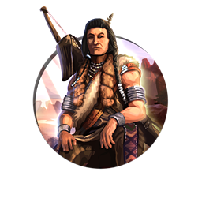
Pocatello
Civilization:
Unique Traits:
Great Expanse: Claim adjacent unowned land tiles of the same type when your borders expand, and up to 4 tiles when you gain a City. Can choose rewards from Ancient Ruins. Units gain +20% ⚔️ Combat Strength within 2 tiles of an owned Encampment.
History
Chief Pocatello, leader of the Bannock-Shoshone tribe, spent his life attempting to find some means of coexistence with the white settlers encroaching on the Shoshone territory throughout the 19th century. Although the Shoshone under Pocatello did attack settlers and wagon trains, such acts were largely retaliation for depredations and attacks by the whites. Pocatello's band of warriors were blamed for increasing attacks on whites along the California Trail, the Salt Lake Road, and the Oregon Trail.
In the autumn of 1862 Colonel Conner and the Third California Infantry of the U.S. Army arrived from Fort Douglas with orders to "chastise" the natives. Pocatello learned of the approach and led his tribe northward, thus escaping the infamous Bear River Massacre. Pursued by the U.S. Army for five years, Pocatello would sign the 1868 Fort Bridger Treaty by which his tribe was relocated to a reservation on the Snake River. He died there, despairing for the future of his people.
In the autumn of 1862 Colonel Conner and the Third California Infantry of the U.S. Army arrived from Fort Douglas with orders to "chastise" the natives. Pocatello learned of the approach and led his tribe northward, thus escaping the infamous Bear River Massacre. Pursued by the U.S. Army for five years, Pocatello would sign the 1868 Fort Bridger Treaty by which his tribe was relocated to a reservation on the Snake River. He died there, despairing for the future of his people.
Early Life
Born in the Grouse Creek region of what is present-day northwest Utah in the United States, little is known of Pocatello's childhood or early manhood. His given name was Tonaioza, meaning "Buffalo Robe"; likely the name Pocatello was given by white trappers, although why and when is unknown. Pocatello grew to manhood during the fur trapping era of the 1820s and 1830s.
As he grew, his reputation as a warrior and a sage grew also. At the time that Brigham Young led the first Mormon settles into Utah in 1847 AD, Pocatello had been elevated to chief among the Shoshone. Young followed a policy of appeasement and conciliation with Pocatello, who expressed his concerns over the destruction of game and grass lands by the emigrant farmers. Pocatello became increasingly concerned by the migration and movement of whites into and through Shoshone lands, especially in the wake of the discovery of gold in California and Montana.
As he grew, his reputation as a warrior and a sage grew also. At the time that Brigham Young led the first Mormon settles into Utah in 1847 AD, Pocatello had been elevated to chief among the Shoshone. Young followed a policy of appeasement and conciliation with Pocatello, who expressed his concerns over the destruction of game and grass lands by the emigrant farmers. Pocatello became increasingly concerned by the migration and movement of whites into and through Shoshone lands, especially in the wake of the discovery of gold in California and Montana.
Defiance
Raids on wagon trains and isolated farms, as well as the theft of horses and cattle, increased dramatically in the late 1850s. Whether due to rogue natives, white outlaws or restless young Shoshone, Pocatello was soon being blamed for every attack. Over the next few years, white settlers and natives engaged in a number of clashes and murders. The intermittent hostilities culminated in August 1862 when Pocatello himself led an attack on a wagon train moving through the City of Rocks in south-central Idaho. A few days later, Shoshone war bands attacked two other wagon trains near the Snake River.
Concerned about the security of overland routes to the west coast as the Civil War progressed, the Lincoln administration ordered Colonel Patrick Connor and his Third California Volunteer Infantry Regiment into Utah to quell the unrest, where they established Camp Douglas three miles east of Salt Lake City. Additional raids by Chief Bear Hunter of the Great Basin Shoshone spurred Connor, along with the Second Regiment California Volunteers Cavalry, to move against the winter encampment in Cache Valley where several Shoshone tribes, including Pocatello's, had gathered. Aware of the approaching white troops, as other chiefs prepared their warriors to fight, Pocatello decided to lead his away. In the process, he avoided the Bear River Massacre, which resulted in approximately 500 Shoshone men, women and children killed.
The U.S. Army continued with the pacification program, roaming the area seeking to arrest the remaining Shoshone chiefs, especially Pocatello. Avoiding capture for nearly five years, eventually Pocatello's band was forced to surrender due to illness and starvation. At the Fort Bridger Treaty Council of 1868, Pocatello agreed to forfeit two-thirds of his Shoshone hunting grounds, to permit transit of their lands by whites, and to relocate to the Fort Hall Indian Reservation on the Snake River; for their part, the U.S. government pledged to supply $5000 worth of food and supplies annually.
Concerned about the security of overland routes to the west coast as the Civil War progressed, the Lincoln administration ordered Colonel Patrick Connor and his Third California Volunteer Infantry Regiment into Utah to quell the unrest, where they established Camp Douglas three miles east of Salt Lake City. Additional raids by Chief Bear Hunter of the Great Basin Shoshone spurred Connor, along with the Second Regiment California Volunteers Cavalry, to move against the winter encampment in Cache Valley where several Shoshone tribes, including Pocatello's, had gathered. Aware of the approaching white troops, as other chiefs prepared their warriors to fight, Pocatello decided to lead his away. In the process, he avoided the Bear River Massacre, which resulted in approximately 500 Shoshone men, women and children killed.
The U.S. Army continued with the pacification program, roaming the area seeking to arrest the remaining Shoshone chiefs, especially Pocatello. Avoiding capture for nearly five years, eventually Pocatello's band was forced to surrender due to illness and starvation. At the Fort Bridger Treaty Council of 1868, Pocatello agreed to forfeit two-thirds of his Shoshone hunting grounds, to permit transit of their lands by whites, and to relocate to the Fort Hall Indian Reservation on the Snake River; for their part, the U.S. government pledged to supply $5000 worth of food and supplies annually.
Reservation
As was far too common, the U.S. Indian Bureau failed to keep its promises; food supplies usually arrived spoiled, the promised cash annuities were rarely paid, and the land was unsuitable for farming. In the years following their confinement, the natives suffered severely from disease and hunger. In 1875, after a particularly poor growing season, Pocatello led his tribe off the reservation to a Mormon missionary farm near Corinne, Utah, helping to plant and maintain wheat, corn, potatoes and garden vegetables, all of which thrived. Pocatello hoped that mass conversion of his people to Mormonism would avoid starvation. White settlers in the area, however, were less obliging and called for their return to the reservation, through force if necessary. When the U.S. Army threatened hostilities, Pocatello led his tribe back to the reservation.
Feeling betrayed yet again, Pocatello and most of the Shoshone rejected Christianity. The old chief, now in his 60s, grew increasingly discontented and withdrew from reservation affairs. Pocatello's health declined precipitously, and he died in 1884. At the request of his tribe, Pocatello was interred dressed in full war attire in a deep spring near the Snake River, along with his best clothing, knives, guns and 18 of his horses.
Feeling betrayed yet again, Pocatello and most of the Shoshone rejected Christianity. The old chief, now in his 60s, grew increasingly discontented and withdrew from reservation affairs. Pocatello's health declined precipitously, and he died in 1884. At the request of his tribe, Pocatello was interred dressed in full war attire in a deep spring near the Snake River, along with his best clothing, knives, guns and 18 of his horses.
Judgment of History
As many Native American leaders did, Pocatello struggled to come to terms with the influx of whites. On the one hand, he sought to co-exist with them; on the other, he was determined to protect his people's rights and freedom. Despite being fearless and cunning, in the end all Pocatello could do was bow to the inevitable, leading his surviving people onto a reservation. Although unsuccessful in his efforts to keep his people free to roam their tribal homeland, he is greatly respected by the Shoshone for preserving their cultural heritage. His legacy is reflected in the number of geographic and man-made (not the least of which is Pocatello, Idaho) features named for him - ironically, mostly by whites.
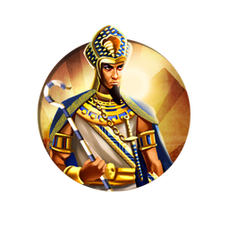
Ramesses II
Civilization:
Unique Traits:
Great Ancestor: +20% 🔨 Production towards Wonders, doubling in 🌟 Golden Ages. Reveal a nearby Antiquity Site when founding a City or (before anyone researches Archaeology) completing a World Wonder. Antiquity Sites gain +1 ⚗️ Science, 🎵 Culture, and 🕊️ Faith with each 🌟 Golden Age (max +5).
History
Ramesses II is considered to be Egypt's greatest and most powerful pharaoh. Taking the throne in his twenties, Ramesses ruled Egypt for more than 60 years. Ramesses is remembered as a great military leader as well as for the extensive construction programs he instituted. He is also remembered for building a new capital city, Pi-Ramesses. Some historians believe that Ramesses is the pharaoh in the biblical story of Moses.
Early History
Egypt having recently emerged from a period of declining power and prestige, Ramesses' father, Seti I, spent a good deal of time subduing rebellious provinces in Asia. The Hittites, based in Asia Minor, were extending their power southward, and the two great civilizations were engaged in a protracted struggle for control of Syria and Palestine. The young Ramesses accompanied his father on some of these campaigns; by the age of 10 he was given the rank of captain - though this was almost certainly ceremonial, it does suggest that his military training began at an extremely young age. Ramesses assumed the throne in his early twenties, following his father's death.
Military Campaigns
Four years after becoming pharaoh, Ramesses led an army north to retake the rebellious provinces that his father had been unable to conquer. The campaign was apparently successful, and the army advanced as far as Beirut.
In the following year Ramesses attacked the Hittite stronghold at Kadesh. The Battle of Kadesh is one of the few battles from that period of which we have records. Believing the citadel to be abandoned, Ramesses approached incautiously and was ambushed by a large Hittite chariot force hiding beyond the fort. Although Ramesses achieved a marginal victory in that battle, his army was so weakened that he had to retreat to Egypt, leaving the fort in Hittite hands. Ramesses continued to battle the Hittites for some twelve more years, attaining tactical victories, but unable to hold the contested land for any time.
In addition to his wars with the Hittites, Ramesses campaigned in Nubia and Libya, extending his rule to the west and south. However these were of much less importance as these enemies posed little threat to the survival of Egypt.
In the following year Ramesses attacked the Hittite stronghold at Kadesh. The Battle of Kadesh is one of the few battles from that period of which we have records. Believing the citadel to be abandoned, Ramesses approached incautiously and was ambushed by a large Hittite chariot force hiding beyond the fort. Although Ramesses achieved a marginal victory in that battle, his army was so weakened that he had to retreat to Egypt, leaving the fort in Hittite hands. Ramesses continued to battle the Hittites for some twelve more years, attaining tactical victories, but unable to hold the contested land for any time.
In addition to his wars with the Hittites, Ramesses campaigned in Nubia and Libya, extending his rule to the west and south. However these were of much less importance as these enemies posed little threat to the survival of Egypt.
Peace with the Hittites
Eventually realizing that further combat was pointless, in the twenty-first year of his reign, Ramesses agreed to a peace treaty with the Hittites. This is the earliest known peace treaty in recorded history. Interestingly, the treaty was written in two versions: the Egyptian version states that the Hittites sued for peace while the Hittite version states that it was the Egyptians who requested an end to hostilities.
This treaty appears to have stabilized the borders between the two great powers, and no further combat between Egypt and the Hittites occurred during Ramesses' reign.
This treaty appears to have stabilized the borders between the two great powers, and no further combat between Egypt and the Hittites occurred during Ramesses' reign.
Pi-Ramesses
Early in his reign Ramesses moved his capital from Thebes north to a city in the Nile Delta, which he renamed "Pi-Ramesses ." The new location was near to his ancestral home, but more importantly it was far closer to the troublesome Northern provinces and the dangerous Hittite border. In a few short years the once-sleepy village was transformed into a major governmental center as well as an arms manufactory. The city was graced with a beautiful palace and many temples, as well as numerous statues and other ornaments.
Pi-Ramesses was abandoned long after Ramesses' reign. For many centuries the site was lost, but archeologists have recently discovered ruins that they believe belong to the ancient city.
Pi-Ramesses was abandoned long after Ramesses' reign. For many centuries the site was lost, but archeologists have recently discovered ruins that they believe belong to the ancient city.
Public Works
During his reign Ramesses constructed many public works across Egypt. Many of these were temples and monuments, but he also constructed storehouses, government buildings, water works, and so forth. Evidently a tireless self-promoter, Ramesses covered Egypt with statues and carvings of himself, often recarving those of previous pharaohs with his name and image. (Ramesses ordered his masons to deeply engrave his image in the stone so that future pharaohs would have trouble doing the same to him.)
Biblical Connection
Many historians believe that Pi-Ramesses is the city "Raamses" mentioned in the Old Testament of the Bible, one of the "Treasure Cities" constructed by the Israelites during their Egyptian Captivity. Some believe that Ramesses is in fact the pharaoh of the Biblical story of the Exodus, the ruler who Moses forced to free his people. However, this is open to debate (particularly since Ramesses II lived a very long life and emphatically did not drown in the Red Sea).
Death and Burial
Ramesses died at the age of 90. He was buried in a tomb in the Valley of the Kings, but he was later moved to a secret location. His body was discovered in the late 19th century and is now on display in the Cairo Museum. It is difficult to guess whether the pharaoh would be outraged by the desecration or if he would enjoy the publicity.
Verdict of History
Ramesses II ruled Egypt as pharaoh for approximately 66 years, the second longest reign in Egyptian history. He stabilized his empire's borders and concluded a highly successful peace treaty with its most important rival, the Hittites. He clearly cared for his people's welfare and spent much treasure on massive public works. He is regarded by later Egyptians as the greatest pharaoh in history, a conclusion that is difficult to dispute.
Ramkhamhaeng
Civilization:
Unique Traits:
Father Governs Children: Yields, Resources, 😊 Happiness and Unit Gift frequency from Friendly and Allied City-States are doubled.
History
In 1278, a prince named "Ramkhamhaeng" inherited the small and unimportant kingdom of Sukhothai. In twenty years, employing a brilliant combination of military genius and shrewd diplomacy, he expanded his country's borders and influence to cover much of Southeast Asia.
Early History
Not much is known about Ramkhamhaeng's early life. His parents were King Sri Indraditya and Queen Sueang. He had two sisters and two older brothers, one of whom died early and the other, Ban Mueang, became king on their father's death. Ramkhamhaeng was said to have studied under the poet wise-man Sukathanta.
At 19 he served under his father during the latter's attack on the city of Sukhothai, which was held by the Khmer. The success of this attack greatly expanded the king's power, essentially establishing Sukhothai as an independent kingdom. Because of his heroic actions during the battle the prince was given the title "Phra Ram Khamhaeng," or Rama the Bold.
Upon the death of his father in 1257, his brother, the new king Ban Mueang, put Ramkhamhaeng in charge of the city of Si Sat Chanalai. Ban Mueang died twenty years later, and Ramkhamhaeng ascended to the throne.
At 19 he served under his father during the latter's attack on the city of Sukhothai, which was held by the Khmer. The success of this attack greatly expanded the king's power, essentially establishing Sukhothai as an independent kingdom. Because of his heroic actions during the battle the prince was given the title "Phra Ram Khamhaeng," or Rama the Bold.
Upon the death of his father in 1257, his brother, the new king Ban Mueang, put Ramkhamhaeng in charge of the city of Si Sat Chanalai. Ban Mueang died twenty years later, and Ramkhamhaeng ascended to the throne.
King Ramkhamhaeng
During his reign Ramkhamhaeng expanded his kingdom's dominance west into Burma, east into Laos, and south down the Malay Peninsula. The king was a shrewd diplomat as well as a warlord; many territories joined his confederation voluntarily. Ramkhamhaeng did not seek to dominate Southeast Asia, rather he promoted trade and diplomatic alliances with surrounding kingdoms.
Most of what we know of Ramkhamhaeng's rule comes from a stone inscription he created in 1292 towards the end of his rule. This is the earliest surviving example of Thai language, and it portrays him as a wise and benevolent leader.
Most of what we know of Ramkhamhaeng's rule comes from a stone inscription he created in 1292 towards the end of his rule. This is the earliest surviving example of Thai language, and it portrays him as a wise and benevolent leader.
Arts and Culture
Ramkhamhaeng was an ardent patron of Buddhism. He also supported the arts and Thai artistic expression achieved an especially high level during his reign, especially in bronze sculpture and ceramics.
Ramkhamhaeng's Death
Ramkhamhaeng died in 1298. His extended empire, held together by his personal magnetism and brilliant international diplomacy, did not long survive his death, and the furthest provinces soon broke away. Sukhothai itself survived another century before it fell.
Verdict of History
Ramkhamhaeng is viewed today as a great leader and the first to rule over a united Siam (later Thailand). It should be remembered however that almost all that we know about him comes from the stone inscription that he himself created. If he did have any major flaws, would he have carved them into the living rock for all of history to see? (Would any of today's world leaders do so?)
Still, there is plenty of independent evidence to show that he successfully created a great empire and his people prospered during his reign. And that's a record that any leader could be proud of.
Still, there is plenty of independent evidence to show that he successfully created a great empire and his people prospered during his reign. And that's a record that any leader could be proud of.
Sejong
Civilization:
Unique Traits:
Scholars of the Jade Hall: +1 ⚗️ Science from Specialists, increasing by +1 in Medieval, Industrial, and Atomic Eras. +20% ⚗️ Science during 🌟 Golden Ages, and +50 🌟 Golden Age Points when a ⭐ Great Person is born, scaling with Era.
History
Sejong Daewang, known to history as "Sejong the Great," was the fourth king of the Choson Dynasty of Korea, ruling from 1418 until his death in 1450. Considered by many to be the greatest king in Korean history, Sejong is known for his remarkable appreciation and respect for human life, adopting numerous civic and social policies to improve the well-being of his people. Sejong also encouraged advances in science and technology and is credited with the creation of the Korean written language, Hunminjeongeum, known today as "Hangul."
Early Life
Born on May 7th, 1397, Sejong was the third son of King Taejong of the Choson Dynasty. Said to have been an exceptional student and avid reader at an early age, Sejong was named Crown Prince at age 16. At age 21, Sejong ascended to the throne, and his impact on Korean life and the kingdom's political structure would be immediate.
Language, Literature, and Science
Sejong is perhaps most famously known for his introduction of the Korean written language, Hangul. The "Chiphyonjon," or "Hall of Worthies," established in 1420, was a collective of noted scholars selected by the king himself. Initially created as an institute of research, the Chiphyonjon would eventually be tasked with the creation of a Korean alphabet to aid the common people in their understanding of the Korean language. Until this time, Korea had relied on the Chinese "Hanja" script, incorporated into the Korean dialect, for all written works. However, this script was not widely understood by the masses, and Sejong sought to change this trend of illiteracy.
Originally known as "Hunminjeongeum," literally meaning "The Correct Sounds for the Instruction of the People," this native Korean script would usher in a new era of literacy and understanding for the common citizens of Korea. First published in 1446, it would be several years before the new script found wide acceptance. To this day, October 9th, the original date of publication, is celebrated as "Hangul Day" throughout South Korea.
Originally known as "Hunminjeongeum," literally meaning "The Correct Sounds for the Instruction of the People," this native Korean script would usher in a new era of literacy and understanding for the common citizens of Korea. First published in 1446, it would be several years before the new script found wide acceptance. To this day, October 9th, the original date of publication, is celebrated as "Hangul Day" throughout South Korea.
The Magnanimous Leader
Sejong's legacy is one of great benevolence, led by his strong belief that all people were worthy of his respect, not only the subjects within his kingdom, but even the so-called "barbarian tribes" scattered throughout Asia. The standard by which he measured his own success as a leader was the happiness and prosperity of his people, their welfare being his highest priority. As king, Sejong would provide surplus food supplies to the poor and elderly, and frequently abolished taxes on farmers and occasionally entire provinces that had experienced hardships due to weather or poor crop yields. Sejong was also known for inviting the elderly to banquets in their honor, regardless of the rank or social status of those attending.
Law and the Criminal Justice System
Sejong mandated a number of improvements to the Korean justice system in order to provide fair trials and reasonable punishments for the convicted. Sejong believed it was unjust to hold citizens accountable for violating the law without ensuring they were provided a means to understand the laws they had broken. Despite the reluctance of his ministers, Sejong ordered the entirety of the Korean legal code be put on public display, for all to see.
Sejong also opposed the death penalty, and informed judges that it was not to be used unless absolutely necessary. His implementation of "The Law of Three Appeals" allowed the accused up to three appeals to the king, ensuring they were provided with an opportunity to speak on their own behalf.
Sejong also opposed the death penalty, and informed judges that it was not to be used unless absolutely necessary. His implementation of "The Law of Three Appeals" allowed the accused up to three appeals to the king, ensuring they were provided with an opportunity to speak on their own behalf.
Military Advancements
Under Sejong, Korea began the development of various early gunpowder weapons, most famously the "Hwach'a," or "Fire Vehicle." Specifically designed as an anti-infantry weapon, the Hwach'a was a wheeled platform capable of launching dozens of gunpowder-propelled arrows across the battlefield. Although limited in use during Sejong's time, the Hwach'a would become a crucial defensive weapon throughout the Korean peninsula for centuries to come. During the Battle of Haengju in 1593, three thousand Korean soldiers repelled an invading Japanese force of over 30,000 by successfully utilizing the Hwach'a, inflicting over 10,000 casualities.
Judgment of History
In old age, Sejong is said to have continued his involvement in daily routines and government affairs, despite going blind and developing diabetes, which would be the eventual cause of his death on May 18, 1450. Sejong is remembered in history for his wise, noble, and compassionate leadership that spurred amazing advances in science and technology, and led to a revolution in the cultural development of the Korean people for centuries to come.
Sejong Factoids
The Republic of Korea Navy employs a class of guided missile destroyers known as "King Sejong the Great", developed under the "Korean Destroyer eXperimental (KDX)" program.
The likeness of King Sejong the Great appears in Korean currency on the 10,000 Won note.
A Korean television drama produced in 2008, entitled "Daewang Sejong," chronicled the life of Sejong the Great during his reign.
Designated a UNESCO World Heritage site in 2009, King Sejong's tomb, known as Yeongneung, is located in Gyeonggi-do in present-day South Korea.
The likeness of King Sejong the Great appears in Korean currency on the 10,000 Won note.
A Korean television drama produced in 2008, entitled "Daewang Sejong," chronicled the life of Sejong the Great during his reign.
Designated a UNESCO World Heritage site in 2009, King Sejong's tomb, known as Yeongneung, is located in Gyeonggi-do in present-day South Korea.
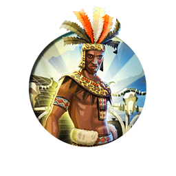
Shaka
Civilization:
Unique Traits:
Iklwa: -50% 💰 Gold maintenance for Melee and Gunpowder Units. All Units require 25% less Experience for Promotions. Your military ignores Alliance and Protection penalties and is 50% more effective at intimidating City-States.
History
"Strike an enemy once and for all. Let him cease to exist as a tribe, or he will live to fly at your throat again." According to the diary of H.F. Flynn, Shaka voiced this edict to his ally Dingiswayo concerning a defeated enemy; even if apocryphal, these words certainly summarize Shaka's philosophy. Bastard son of a tribal chieftain, Shaka kaSenzangahona would oust his half-brother in 1816 AD to claim leadership of the Zulus. He is credited with unifying the Nguni tribes into the Zulu Kingdom. Although called a military genius for his reforms and innovations, he has also been condemned for the brutality of his reign. Whatever the judgment, Shaka laid the foundation for an imposing Zulu state. Upon his assassination in 1828, the Zulu were poised to challenge even the Europeans for control of southern Africa.
Early Life
Although Shaka's life is shrouded in legend and lies, we do know he was the illegitimate son of Senzangahona, chief of the insignificant Zulu tribe, which numbered less than 1500 people. Shaka's mother, Nandi, was the daughter of a deceased chieftain of the Langeni. Despite his attempts to deny paternity, Senzangahona would eventually marry Nandi, installing her as his third wife. But the relationship was troubled, and the Zulu chiefain would exile Nandi and Shaka. The two wandered until 1803 AD, when they found haven with the Mtetwa and their chief Dingiswayo.
Under Dingiswayo's patronage, Shaka grew into a tall, imposing young warrior, imbued with courage and daring. At the age of 23, Shaka was given command of a regiment in Dingiswayo's army. His deeds and stature brought him a rapid rise in the army, and Shaka became one of the chieftain's foremost commanders. Shaka rearmed his units, discarding the light throwing spear the Mtetwa favored for a broad-bladed stabbing spear (the famed assagai) and a large, cowhide covered shield.
On the death of Shaka's father around 1816 AD, Dingiswayo lent his protege the military support necessary to oust and assassinate his half-brother Sigujana and establish himself chieftain of the Zulu. The coup was relatively bloodless, and the Zulu accepted Shaka without reservation. Shaka pledged himself a vassal of the Mtetwa. As the chieftain's favorite, Shaka was granted unusual latitude in expanding his holdings through conquering and assimilating neighboring tribes. By 1817, Shaka could command a force of 2000 warriors, and had assured his position as the first among Dingiswayo's vassals.
Under Dingiswayo's patronage, Shaka grew into a tall, imposing young warrior, imbued with courage and daring. At the age of 23, Shaka was given command of a regiment in Dingiswayo's army. His deeds and stature brought him a rapid rise in the army, and Shaka became one of the chieftain's foremost commanders. Shaka rearmed his units, discarding the light throwing spear the Mtetwa favored for a broad-bladed stabbing spear (the famed assagai) and a large, cowhide covered shield.
On the death of Shaka's father around 1816 AD, Dingiswayo lent his protege the military support necessary to oust and assassinate his half-brother Sigujana and establish himself chieftain of the Zulu. The coup was relatively bloodless, and the Zulu accepted Shaka without reservation. Shaka pledged himself a vassal of the Mtetwa. As the chieftain's favorite, Shaka was granted unusual latitude in expanding his holdings through conquering and assimilating neighboring tribes. By 1817, Shaka could command a force of 2000 warriors, and had assured his position as the first among Dingiswayo's vassals.
Reign
According to legend, in Dingiswayo's last battle against Zwide of the Ndwandwe, Shaka purposely delayed the arrival of his forces until Dingiswayo had been defeated and killed, keeping his own forces intact. Stepping into the power vacuum, Shaka began conquering and assimilating small neighboring tribes with brutal efficiency. Within a few years the Qwabe, Hlubi and Mkhize were added to the Zulu empire; through diplomacy and patronage, Shaka brought the Sithole and Thuli under his command. By 1824, Shaka had an army of 20,000 warriors, trained in his manner of tactics and strategy.
Concerned by the growing Zulu power, Zwide moved against Shaka. The first Ndwandwe invasion was defeated at Gqokoli Hill by superior tactics and Shaka's defensive strategy. In 1819 AD, Zwide sent a second expedition into the Zulu lands. Retreating steadily, Shaka lured the massed enemy deep into his own territory, until, at the Mhlathuze River, Shaka flung his regiments at the exhausted Ndwandwe and their allies. The outcome was a decisive defeat for the invaders in a two-day running battle, and the Ndwandwe, Jere, Maseko and Msene tribes were virtually annihilated.
By the time the first white traders reached the southeastern African coast in 1824, Shaka was in control of an empire which spanned the entire coast and reached far inland. Shaka accorded the white traders favored treatment, ceded them land, and allowed the building of a trading post at Port Natal. Alert to the trade advantages, curious about their technology and culture, Shaka insured there were no serious conflicts between the Zulu and the Europeans.
Concerned by the growing Zulu power, Zwide moved against Shaka. The first Ndwandwe invasion was defeated at Gqokoli Hill by superior tactics and Shaka's defensive strategy. In 1819 AD, Zwide sent a second expedition into the Zulu lands. Retreating steadily, Shaka lured the massed enemy deep into his own territory, until, at the Mhlathuze River, Shaka flung his regiments at the exhausted Ndwandwe and their allies. The outcome was a decisive defeat for the invaders in a two-day running battle, and the Ndwandwe, Jere, Maseko and Msene tribes were virtually annihilated.
By the time the first white traders reached the southeastern African coast in 1824, Shaka was in control of an empire which spanned the entire coast and reached far inland. Shaka accorded the white traders favored treatment, ceded them land, and allowed the building of a trading post at Port Natal. Alert to the trade advantages, curious about their technology and culture, Shaka insured there were no serious conflicts between the Zulu and the Europeans.
Assassination
By 1828, Shaka was an undisputed despot; but his frequent cruelties and unstable behavior was eroding the loyalties of his people. With the death of his mother in October 1827, Shaka dispatched his royal regiments to force the surrounding tribal chieftains to grieve. Taking advantage of the absence of his loyal troops, in September 1828 his personal bodyguard Mbopha and his half-brothers Dingane and Mhlangana stabbed Shaka to death near the Ikanda at Dukuza. Shaka's body was dumped into an empty grain pit, which was then filled with rocks and mud; the exact site has never been conclusively identified.
Judgment of History
By the time of his death, Shaka ruled a vast territory in southeastern Africa, was absolute ruler over 250,000 subjects, and could field an army of 40,000 experienced warriors. In the process of amassing his empire, it is estimated that 2 million people had died. Although the kingdom lasted less than 80 years, Shaka nevertheless cast a large shadow over Africa's history. Today, Shaka is revered as the leader who gave birth to the Zulu spirit that allowed them to persevere under apartheid and to the nationalism that shaped modern South Africa.
Suleiman
Civilization:
Unique Traits:
Kanuni: Completing a Trade Route grants +150 🌾 Food and ⚗️ Science to the origin City if International, or 💰 Gold and 🎵 Culture if Internal. Bonuses scale with Era.
History
Suleiman I, known as "The Magnificent," "The Legislator" and "The Grand Turk," was the caliph of Islam and the sultan of the Ottoman Empire, taking the reins of the Turkish kingdom in 1520 and ruling until his death in 1566. During his rule Suleiman greatly expanded the Empire's territory, earning the fear (and grudging admiration) of leaders across Europe, Africa, Asia and the Middle East.
Early History
Suleiman was the son and grandson of sultans. At an early age he studied science, literature, theology, and the military arts in Istanbul. At 17 he was appointed governor of Kaffa by his grandfather, and he was made governor of Manisa during the reign of his father, Sultan Selim I. His father died in 1520 when Suleiman was 26, and he ascended to the throne. Although still quite a young man, Suleiman had nearly ten years of leadership experience when he came to power.
Military Ambitions in Europe
According to some historians, Suleiman deeply admired Alexander the Great and hoped to emulate him and create an empire that encompassed Europe, Asia Minor, Africa, and the Middle East. Upon achieving power, Suleiman began planning a campaign against Europe and the Balkans.
In 1521, just a year after achieving power, Suleiman captured Belgrade. In the following year he took the Island of Rhodes from the Knights of St. John. In 1526 he defeated the Hungarians at the Battle of Mohacs, killing the Hungarian king Louis II in combat.
Following Louis II's death, the Hungarian throne was taken by Ferdinand I, the Habsburg archduke of Austria. Seeking to weaken Habsburg power in Eastern Europe, Suleiman supported the claim of John Zapolya, lord of Transylvania. In 1529 he laid siege to Vienna. The siege was unsuccessful, however, but it did serve to keep Hungarian power concentrated on Vienna, effectively ceding control of most of Hungary to Suleiman's puppet, John. When John died in 1540 the Austrians moved back into central Hungary. The two forces would continue to battle inconclusively for the next twenty years, until a peace treaty was signed in 1562, four years before Suleiman's death.
To support his land campaigns Suleiman also created a great navy on the Mediterranean, the first such in Ottoman history. He put his forces under the command of admiral Khayr al-Din (known in the west as "Barbarossa"), a sometime pirate with a natural genius for naval warfare who defeated the combined Spanish-Venetian fleets in 1538, effectively giving the Ottomans dominance in the Eastern Mediterranean for the next forty years.
In 1521, just a year after achieving power, Suleiman captured Belgrade. In the following year he took the Island of Rhodes from the Knights of St. John. In 1526 he defeated the Hungarians at the Battle of Mohacs, killing the Hungarian king Louis II in combat.
Following Louis II's death, the Hungarian throne was taken by Ferdinand I, the Habsburg archduke of Austria. Seeking to weaken Habsburg power in Eastern Europe, Suleiman supported the claim of John Zapolya, lord of Transylvania. In 1529 he laid siege to Vienna. The siege was unsuccessful, however, but it did serve to keep Hungarian power concentrated on Vienna, effectively ceding control of most of Hungary to Suleiman's puppet, John. When John died in 1540 the Austrians moved back into central Hungary. The two forces would continue to battle inconclusively for the next twenty years, until a peace treaty was signed in 1562, four years before Suleiman's death.
To support his land campaigns Suleiman also created a great navy on the Mediterranean, the first such in Ottoman history. He put his forces under the command of admiral Khayr al-Din (known in the west as "Barbarossa"), a sometime pirate with a natural genius for naval warfare who defeated the combined Spanish-Venetian fleets in 1538, effectively giving the Ottomans dominance in the Eastern Mediterranean for the next forty years.
Military Adventures in Persia
Suleiman waged three major campaigns in Persia during his reign. The first campaign (1534 - 1535) won the Ottomans control over a portion of eastern Asia Minor as well as most of Iraq. The second campaign some ten years later (1548 - 1549) won some additional terrain around the strategically important Lake Van on the border of Persia and Asia Minor. The third campaign was inconclusive, as the Ottomans were unable to sustain an offensive deep in Persian territory and thus were unable to hold onto their gains.
Domestic Improvement
As sultan, Suleiman surrounded himself with competent, often brilliant, statesmen and administrators. He built mosques, bridges, roads and fortresses across his territory, and the period is seen as a golden age of Ottoman architecture. He also worked to reform and codify the empire's legal system. "The Lawgiver's" legal system would survive almost unchanged for three centuries. He paid attention especially to the plight of his Christian subjects, who until then had been little more than serfs. Jews also were protected, to such an extent that many emigrated to the Ottoman Empire from Europe, where they were much more harshly treated.
Culture, Religion and the Arts
While his territorial accomplishments were impressive, the Sultan, a skilled poet and fervent Muslim, did not ignore the culture of his homeland. During his rule hundreds of artistic societies flourished across the country. Suleiman commissioned numerous new mosques of a previously unseen grandeur, many designed by master architect Sinan.
Verdict of History
Suleiman died in 1566 while (once more) campaigning in Hungary. At the time of his death he was famous across the known world. In Europe he was envied for his unbelievable wealth, his magnificent treasury containing more riches than any other leader had possessed in history. He was admired for his military prowess and respected for his fair treatment of non-Muslim subjects.
Muslims respected the Sultan for his belief in the rule of law. The Sultan adopted Islamic sacred law to compliment the traditional law already in place from his predecessors, providing a model for Eastern powers for centuries to come.
Almost everyone - Christian and Muslim alike - agreed that he was fully worthy of the title "The Magnificent."
Muslims respected the Sultan for his belief in the rule of law. The Sultan adopted Islamic sacred law to compliment the traditional law already in place from his predecessors, providing a model for Eastern powers for centuries to come.
Almost everyone - Christian and Muslim alike - agreed that he was fully worthy of the title "The Magnificent."
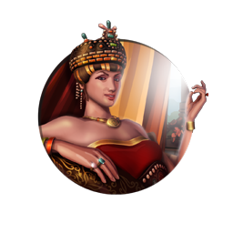
Theodora
Civilization:
Unique Traits:
Patriarchate of Constantinople: Can always found a Religion, receives 1 Additional Belief when founding, and may select Beliefs present in other Religions. -15% 🕊️ Faith purchase costs, and may purchase unlocked ⭐ Great People starting in the Classical Era.
History
Theodora, wife of Justinian I and Empress of the Byzantine Empire, ruled one of history's preeminent empires during the 1st millennium AD. Known today as the most influential woman of the Byzantine Empire, Emperor Justinian named Theodora co-ruler of the empire, trusting in her wise counsel to guide his reign. Rising from humble beginnings, Theodora would become known throughout the empire - and history - as a tactful, trusted advisor to her emperor. She would be so crucial to the progress of the empire that some think it was Theodora, not Emperor Justinian, who truly guided the people of Byzantium during her lifetime.
Early Life
Most of our knowledge of Theodora comes from the writings of noted Byzantine historian Procopius of Caesarea, who extensively documented the life and times of the Byzantine Empire during Theodora's reign in the 6th century. Theodora's early life as we know it was a colorful one, her father having been a bear-keeper at the Hippodrome, her mother an acrobat. Said to have had exceptional intelligence and wit, Theodora supported herself independently as an actress for some time before catching the eye of Justinian, then heir to the throne of his uncle, Justin I.
Ascension to the Throne
As mistress to Justinian, Theodora's beauty and intelligence made such an impression that he elevated her to the rank of patrician, where she joined the aristocratic families of the empire. Although Byzantine law prevented members of the government from marrying entertainers such as Theodora, Justinian's devotion to her was apparently enough that he had the law repealed. In 525, Justinian and Theodora were married, and shortly after his ascension to the throne as Emperor in 527, Theodora became "Augusta," or Empress of the Byzantine Empire.
Political Influence
Theodora was no ordinary consort to the Emperor; Justinian ensured that she was named co-ruler, an important distinction that provided her with a much greater role in political affairs. During her reign, she was influential in the institution of numerous progressive (even by modern standards) policies. Theodora is credited with pressing Justinian to increase the rights of women within the empire, not only expanding their right to property ownership, but also reforming divorce laws that previously favored men.
Religion
Theodora was what is known as a "Monophysite Christian," meaning she believed that Jesus Christ was an entirely divine being, unlike the more prevalent Orthodox belief that Jesus had a dual nature (divine yet with an earthly body). This ideology was highly controversial at the time, and considered divisive and heretical by many members of the Orthodox Church. Despite Justinian's Orthodox beliefs, Theodora maintained her own independence as a Monophysite, and even sheltered the Monophysite leaders who were often oppressed by the Orthodox majority. Theodora is also known to have founded a Monophysite monastery in the city of Sycae near Constantinople.
The Nika Revolt
The fortitude of Theodora and Justinian would be tested during the Nika Revolt, an uprising led by two opposing political factions (the Greens and the Blues), who attempted to install a rival Emperor to usurp Justinian's power. As the story goes, Justinian's natural instinct was to flee the city, but Theodora encouraged him to stand fast. Imploring Justinian to remain in the city, Theodora argued that it was better to die as an Emperor than as a fugitive. Believing in the wisdom of Theodora's words, Justinian remained in Constantinople and ordered his most loyal general, Flavius Belisarius, to attack the rebels. Herding the dissidents into the Hippodrome, Belisarius and his men annihilated them, brutally killing thousands, and quashing the rebellion.
Judgment of History
Empress Theodora left an indelible mark on history as one of the most powerful women of her era. It's clear that her influence affected many of the decisions put forth by her husband and, many historians agree, had it not been for Theodora's wise counsel during the Nika Revolt, Justinian's rule as Emperor would likely have ended, and the integrity of the empire itself would have been at risk.
Washington
Civilization:
Unique Traits:
Manifest Destiny: Military Land Units start with the Sentry Promotion. Tile purchase cost is reduced by 25% and is reset upon founding a City. +20 🔨 Production when purchasing tiles, scaling with Era. Can purchase tiles owned by others.
History
George Washington was one of a group of remarkable men who lived in the American Colonies in the late eighteenth century. Although not as pugnacious as John Adams, as imaginative as Benjamin Franklin or as brilliant as Thomas Jefferson, Washington had the capacity to lead, in war and in peace. He led the Continental Army to victory against extraordinary odds, and by so doing he led his country to independence.
Early Life
The descendent of English colonists who migrated to Virginia in 1657, George Washington was born into a family of wealth and privilege - or as much wealth and privilege as could be found in the Colonies in the early eighteenth century. As a young man Washington studied mathematics, writing, geography, and probably Latin, but he never attended college. Instead he concentrated upon learning how to raise stock, farm, and manage his family's growing estates. Washington was also trained as a surveyor and spent several years scouting and mapping the lands in and around the colony of Virginia.
French and Indian War
In 1754 war broke out between England (and her colonies) and the French and their allies the Indians. Washington fought in several engagements during this war, showing a great deal of courage and coolness under fire, but of no especial strategic or tactical brilliance. Eventually the war ended with the English victorious, and Washington resigned from the Colonial forces with the honorary rank of Brigadier General.
Home Life
After the war Washington married and devoted himself to his growing estates. He apparently greatly enjoyed managing his farms and plantations and was not above shedding his coat and helping with manual labor. He also sat in the House of Burgesses in Williamsburg, the mostly-impotent local governing body of Virginia (real power definitely resided with the Royal Governor of the colony and with King and Parliament back in England).
Pre-Revolution Activities
Although a loyalist, Washington too chafed under the growing burden of taxation placed on the Colonies by Parliament (largely imposed to help pay off debts from the recent French and Indian War). As tensions grew and England ratcheted up the pressure on the Colonies, Washington's position grew more radical, and by 1768 he declared himself ready to take up arms against England whenever his country called him. By 1774 Washington was a member of the Continental Congress, the first truly national organization of the nascent country. When actual fighting broke out in and around Boston in 1775, Washington was named as commander of the military forces of all of the Colonies, a post he maintained once actual independence was declared in 1776.
Commander of the Continental Army
As military commander of the Revolutionary forces, Washington displayed the same strengths and weaknesses he had years before when fighting for England against France. He was personally courageous, almost to the point of foolhardiness. Early in the war he tended to favor overly-complex military actions beyond the capabilities of his volunteer soldiers, resulting in a series of near-catastrophic defeats at the hands of the professional British forces. But almost by force of will alone - through long, discouraging years of privation and defeat - he kept his army alive and in the field, and by so doing kept the revolution alive in the Colonies. Eventually, the sheer tenacity and growing skill of the Colonial Army and its general would win it the grudging admiration of even its fiercest enemies.
The entrance of France into the war on the side of the Colonies and increasing Colonial power and success on the battlefield led to growing anti-war sentiment of the British people. In 1781 Washington led his troops on a daring forced march into Virginia, where he (with the aid of a large contingent of French soldiers) besieged an entire British army on the peninsula of Yorktown. The French naval maneuvers having given them temporary command of the sea, the British general was unable to escape his predicament and surrendered his command. Although sporadic fighting continued for some months, the war was essentially over: America had won her independence.
The entrance of France into the war on the side of the Colonies and increasing Colonial power and success on the battlefield led to growing anti-war sentiment of the British people. In 1781 Washington led his troops on a daring forced march into Virginia, where he (with the aid of a large contingent of French soldiers) besieged an entire British army on the peninsula of Yorktown. The French naval maneuvers having given them temporary command of the sea, the British general was unable to escape his predicament and surrendered his command. Although sporadic fighting continued for some months, the war was essentially over: America had won her independence.
President of the United States
After the war, Washington presided over the Constitutional Convention, which determined the form of the new nation's government, and later served as its first President. As President, Washington sought to keep the country free from foreign entanglements, resisting close alliances or wars with any. He attempted (with little success) to keep the country free from political party rivalry and strife. Washington served two four-year terms as President, and then retired back to his home in Mount Vernon, Virginia, where he died in 1799.
Washington's Place in History
George Washington is known for good reason as the "Father of the United States of America." While not the greatest general in world history, nor the greatest statesman, Washington had a great steadiness and courage in the face of adversity, and he was able to get men to willingly die for him. Without Washington, it's unlikely that the United States would have been born.
William
Civilization:
Unique Traits:
Dutch East India Company: +4 💰 Gold for each unique Luxury Resource you import or export from/to other Civilizations and City-States, scaling with Era. Can import duplicate Luxuries from Civilizations which count toward Monopolies. +1 💰 Gold and 🎵 Culture from Luxury Resources.
History
Widely considered both founder and liberator of the Netherlands, William, Prince of Orange, also known as "William the Silent," led a successful rebellion in the mid-16th century against the Spanish Habsburg Dynasty who held dominion over the Dutch Low Countries. Once the loyal servant of King Philip II of Spain, William eventually became the most prominent leader of the rebellion, as his growing distaste for the continued Spanish persecution of Dutch Protestants came to a head. Rallying his fellow noblemen to the cause, William became an outlaw in the eyes of the Spanish monarch and led the Dutch forces in a number of successful battles against the king before falling to an assassin's bullet in 1584.
Noble Upbringing
Born to Count William of Nassau in 1533, William inherited the title of Prince of Orange at age 11 when his cousin Rene, then prince, died without an heir to his title and land holdings. During this period the Netherlands were controlled by Holy Roman Emperor Charles V, who ruled as leader of the Habsburg Monarchy, while also serving as king of Spain. While receiving all of the education and training expected of a nobleman, William later became a favored member of the Emperor's court. The emperor's connection to the Spanish crown would play an important role in William's future efforts to wrest control of the Netherlands from Spain.
Promoted through the ranks of the military, by his early twenties, William was already a commander in the Imperial army, while also holding various diplomatic posts as an advisor to the Emperor. However, William's favor with the Emperor came at the price of his faith, as his Lutheran upbringing was abandoned in favor of Roman Catholicism to facilitate his rise to power.
Promoted through the ranks of the military, by his early twenties, William was already a commander in the Imperial army, while also holding various diplomatic posts as an advisor to the Emperor. However, William's favor with the Emperor came at the price of his faith, as his Lutheran upbringing was abandoned in favor of Roman Catholicism to facilitate his rise to power.
Roots of Rebellion
In 1555, Charles relinquished the crown of Spain to his son, Philip II. Philip was known for his ruthless disregard for the lives of the Protestants under his rule, showing little empathy for their beliefs and expanding the powers of the Inquisition against the Reformation. In serving his new king, William began to understand the true intentions of Philip, who had no qualms about wiping out the Protestants by whatever means necessary. Although William adopted Catholicism as part of his education, he was raised a Lutheran, and still firmly believed in the right of the people to follow their own beliefs. As the story goes, William overheard a conversation between Philip and King Henry II of France while on a hunting expedition, discussing the future extermination of the Protestants in both of their kingdoms. This event is said to have sparked William's decision to oppose Philip and Spanish control of the Netherlands.
In attempting to subdue the established Protestants in the Netherlands and drive them into exile or worse, Philip devised a system of "placards." These placards served as edicts making the practice of Lutheran and Calvinist beliefs an offense punishable by torture and death. So extreme was the persecution that many Dutch Catholics joined the Protestants in opposing Philip's policies.
William began to openly criticize the king in public, making his opinions on the matter clear, and encouraging others to stand up to repressive policies of Philip. In 1566, the Compromise of Nobles, a collective of noblemen from the Netherlands, petitioned the Spanish regent Margaret of Parma to end the persecution of Protestants within the Netherlands. Despite their efforts for a peaceful resolution, Philip rejected the forwarded petition, and in response, iconoclasm spread throughout the Dutch territory, leading to the destruction of Catholic icons across the country by Protestant rebels.
In attempting to subdue the established Protestants in the Netherlands and drive them into exile or worse, Philip devised a system of "placards." These placards served as edicts making the practice of Lutheran and Calvinist beliefs an offense punishable by torture and death. So extreme was the persecution that many Dutch Catholics joined the Protestants in opposing Philip's policies.
William began to openly criticize the king in public, making his opinions on the matter clear, and encouraging others to stand up to repressive policies of Philip. In 1566, the Compromise of Nobles, a collective of noblemen from the Netherlands, petitioned the Spanish regent Margaret of Parma to end the persecution of Protestants within the Netherlands. Despite their efforts for a peaceful resolution, Philip rejected the forwarded petition, and in response, iconoclasm spread throughout the Dutch territory, leading to the destruction of Catholic icons across the country by Protestant rebels.
The Uprising Begins
As iconoclasm spread along with increasingly public displays of forbidden Protestant worship, Philip sent the Duke of Alba, Fernando Alvarez de Toledo, known as the "Iron Duke," to the Netherlands to quash the uprising and deal with the rebels. Upon his arrival, the duke established the Council of Troubles, later known among the Protestants as "The Council of Blood," to oversee the trial and punishment of the rebels and their leadership. Many of those summoned to the council went into hiding, including William himself, but some 1000 or more Protestants are said to have been tried and executed at the hands of the Iron Duke.
Outbreak of War
While funding the uprising from his home in Nassau, William and the rebels established several armies to attack the Spanish on multiple fronts. The group of Protestant exiles and Dutch noblemen resisting the Spanish came to be known as the "Geuzen," or "Beggars," with the most prominent force being the "Watergeuzen" - the Sea Beggars. William used his wealth to fund the Sea Beggars and equip their vessels, which they used to raid coastal cities throughout the Netherlands, acting as privateers.
William's brother, Louis of Nassau, led an army of mercenaries and French Huguenots (French Protestants) against a Spanish force under the command of Jean de Ligne, himself a Dutch nobleman still loyal to Philip. Meeting at the Battle of Heiligerlee in the northern Dutch province of Groningen in 1568, Louis routed the Spanish army and Jean de Ligne was killed. Unfortunately, William and Louis' second brother, Adolph, was also killed while leading the Dutch cavalry. This historic battle is considered by historians to mark the onset of the Eighty Years' War, as the great conflict for Dutch independence came to be known.
At the Battle of Jemmingen shortly thereafter, Louis's army was crushed by the Spanish forces while attempting to seize the city of Groningen itself, forcing his retreat. William himself took up the charge and led an army of Dutch forces to several victories, inspiring the Dutch people as more and more cities throughout the Netherlands were wrested from Spanish control. Despite the Dutch gains, capturing and controlling much of the northern territory over the next decade, the Spanish continued to maintain a firm grasp on the southern Netherlands.
William's brother, Louis of Nassau, led an army of mercenaries and French Huguenots (French Protestants) against a Spanish force under the command of Jean de Ligne, himself a Dutch nobleman still loyal to Philip. Meeting at the Battle of Heiligerlee in the northern Dutch province of Groningen in 1568, Louis routed the Spanish army and Jean de Ligne was killed. Unfortunately, William and Louis' second brother, Adolph, was also killed while leading the Dutch cavalry. This historic battle is considered by historians to mark the onset of the Eighty Years' War, as the great conflict for Dutch independence came to be known.
At the Battle of Jemmingen shortly thereafter, Louis's army was crushed by the Spanish forces while attempting to seize the city of Groningen itself, forcing his retreat. William himself took up the charge and led an army of Dutch forces to several victories, inspiring the Dutch people as more and more cities throughout the Netherlands were wrested from Spanish control. Despite the Dutch gains, capturing and controlling much of the northern territory over the next decade, the Spanish continued to maintain a firm grasp on the southern Netherlands.
Roots of Independence
In 1573, the Union of Utrecht was signed in the northern Dutch city bearing the document's name, uniting the Northern provinces in opposition of Spain. Although not yet fully independent, the union clearly marked a turning point in rejecting Spanish governance of the region. While Spain still controlled the southern territories, in 1581, the Act of Abjuration finally served as a formal declaration of the Low Countries' independence from Philip's rule. Unfortunately for William, he would not live to see the Netherlands free from the grasp of Spain in its entirety.
Assassination Attempts
With an ample hefty bounty placed on his head by King Philip, the first attempt on William's life soon followed, when the Spaniard Juan de Jauregui fired a shot at William in 1582, wounding him in the neck. Although William was gravely injured, he managed to survive his injuries, but his slow recovery limited his involvement in the rebellion. Less than two years later, William was again attacked by an assassin, this time by a French Roman Catholic named Balthasar Gerard. Attacking William at his home, Balthasar fired three shots, the fatal blow striking William in the chest.
In the coming days, Balthasar was tried and sentenced to death. His punishment was torture, which took place over the span of an entire week. Balthasar's only relief came when he was eventually beheaded.
In the coming days, Balthasar was tried and sentenced to death. His punishment was torture, which took place over the span of an entire week. Balthasar's only relief came when he was eventually beheaded.
Judgment of History
William is revered today as both the founder of the Dutch independence movement and the sovereign nation as it stands today. Inspiring the people of the Netherlands to rise up against Spanish rule and the abuses suffered by the Dutch Protestants, William gave his life in pursuit of an enlightened view point that deemed it only fair that all men be allowed to follow their beliefs.
Wu Zetian
Civilization:
Unique Traits:
Mandate of Heaven: Creating Great Works or gaining Cities grants 5 Turns of "We Love the Empress Day", and a permanent +2 🌾 Food in all Cities. The permanent 🌾 Food declines by 50% on Era Change.
History
Like most civilizations, China has been male-dominated throughout much of its history. Until very recently, women were afforded few rights, and direct power was all but totally denied to them. For a woman to attain the rank of Emperor, to become the most powerful person in China, was almost unheard of. Only one person in the entirety of Chinese history was able to do so. That person was Wu Zetian, one of the most remarkable rulers - female or male - the world has ever seen.
Concubine Wu
A shockingly beautiful child, at the age of 13 (in approx. 639 AD) Wu became a concubine of Emperor Taizong. She did not have any children with the Emperor, and at his death in 649 she left the palace to become a Buddhist nun, as was common for childless concubines at the time. That should have been the end of her story. However, Fate was to give her another chance at glory.
Like much of Chinese politics of the day, this gets extremely complicated. Empress Wang, the wife of the current Emperor Gaozong (son of the late Emperor Taizong), was afraid that Gaozong was becoming too infatuated with Consort Xiao. This was indeed a matter of some concern, as consorts had in the past been known to supplant empresses, who were often killed as a result. To divert her husband's attentions from Consort Xiao, the Empress had Wu - who was still young and beautiful - returned to the palace and reinstated as Consort.
This tactic was a complete success - too complete, in fact, for in a few years she had supplanted both Consort Xiao and Empress Wang in Emperor Gaozong's affections. Both ladies were killed, and she attained the rank of Empress. Some historians believe that she killed her own infant daughter and framed the Empress for the murder. While this is not proven, subsequent events have suggested that such an act was well within her scope.
Like much of Chinese politics of the day, this gets extremely complicated. Empress Wang, the wife of the current Emperor Gaozong (son of the late Emperor Taizong), was afraid that Gaozong was becoming too infatuated with Consort Xiao. This was indeed a matter of some concern, as consorts had in the past been known to supplant empresses, who were often killed as a result. To divert her husband's attentions from Consort Xiao, the Empress had Wu - who was still young and beautiful - returned to the palace and reinstated as Consort.
This tactic was a complete success - too complete, in fact, for in a few years she had supplanted both Consort Xiao and Empress Wang in Emperor Gaozong's affections. Both ladies were killed, and she attained the rank of Empress. Some historians believe that she killed her own infant daughter and framed the Empress for the murder. While this is not proven, subsequent events have suggested that such an act was well within her scope.
Empress Consort Wu
As Empress Consort, Wu moved quickly to consolidate her power. Forging alliances with certain powerful officials, she had those who opposed her demoted, exiled, or killed. She was an able advisor to the Emperor, and he delegated more authority to her as time passed. By 660 AD, the Emperor began to suffer from a debilitating illness (which some said was caused from slow poisoning by Wu), and he passed much of the day-to-day management of the Empire to Wu, who was then about thirty-five years old. Wu showed herself to be an able administrator, with sharp wit and extensive knowledge of history and literature. She also showed a remarkable ability to seek out and destroy those who plotted against her as well as those who might someday pose a threat. When Emperor Gaozong died in 683, she was inarguably the most powerful person in China.
Dowager Empress Wu
Following Gaozong's death, Wu's son Zhongzong became Emperor. He immediately began displaying troubling signs of independence, including appointing officials to important posts without consulting with his mother. This threatened to undermine Wu's power base, and she took decisive action. Zhongzong was deposed and exiled, and Wu's youngest son, Ruizong, became Emperor. Taking no chances this time, however, Wu kept the new Emperor in virtual isolation. Having no doubt learned from the unhappy example of his older brother, the titular Emperor kept very quiet and did nothing to offend the Dowager Empress.
Emperor Wu
In 690 AD, Wu took the throne herself, her son Ruizong reduced in title to Crown Prince. This caused a certain amount of displeasure among traditionalists, which Wu handled in her usually efficient and brutal manner. She expanded the powers of the secret police, who answered directly to her, and hundreds were exiled, imprisoned or murdered. She held this post for some 15 years, until, at the age of 80 and seriously ill, she was deposed. She died later the same year.
Judgment of History
As a leader, Wu was considered to be an able administrator and shrewd judge of character. She promoted and supported able men, and in return she received their firm loyalty. Generals appointed by her conquered Korea, adding that wealthy land to the Empire. She was quick to destroy any she saw as a threat, and the early years of her reign as Emperor were bloody and repressive, even by Chinese standards. As she grew more secure in her throne, however, she reined in the secret police, and even her enemies grudgingly praised her for her competence and decisiveness.
In short, her rule was benevolent to those who were no challenge to her, and lethal to those who were. All in all, Wu Zetian remains one of the most fascinating rulers in history, and well worth further study.
In short, her rule was benevolent to those who were no challenge to her, and lethal to those who were. All in all, Wu Zetian remains one of the most fascinating rulers in history, and well worth further study.